Date: 2019-12-25 23:22:42 CET, cola version: 1.3.2
Document is loading...
All available functions which can be applied to this res_list object:
res_list
#> A 'ConsensusPartitionList' object with 24 methods.
#> On a matrix with 14753 rows and 68 columns.
#> Top rows are extracted by 'SD, CV, MAD, ATC' methods.
#> Subgroups are detected by 'hclust, kmeans, skmeans, pam, mclust, NMF' method.
#> Number of partitions are tried for k = 2, 3, 4, 5, 6.
#> Performed in total 30000 partitions by row resampling.
#>
#> Following methods can be applied to this 'ConsensusPartitionList' object:
#> [1] "cola_report" "collect_classes" "collect_plots" "collect_stats"
#> [5] "colnames" "functional_enrichment" "get_anno_col" "get_anno"
#> [9] "get_classes" "get_matrix" "get_membership" "get_stats"
#> [13] "is_best_k" "is_stable_k" "ncol" "nrow"
#> [17] "rownames" "show" "suggest_best_k" "test_to_known_factors"
#> [21] "top_rows_heatmap" "top_rows_overlap"
#>
#> You can get result for a single method by, e.g. object["SD", "hclust"] or object["SD:hclust"]
#> or a subset of methods by object[c("SD", "CV")], c("hclust", "kmeans")]
The call of run_all_consensus_partition_methods() was:
#> run_all_consensus_partition_methods(data = mat, mc.cores = 4)
Dimension of the input matrix:
mat = get_matrix(res_list)
dim(mat)
#> [1] 14753 68
The density distribution for each sample is visualized as in one column in the following heatmap. The clustering is based on the distance which is the Kolmogorov-Smirnov statistic between two distributions.
library(ComplexHeatmap)
densityHeatmap(mat, ylab = "value", cluster_columns = TRUE, show_column_names = FALSE,
mc.cores = 4)
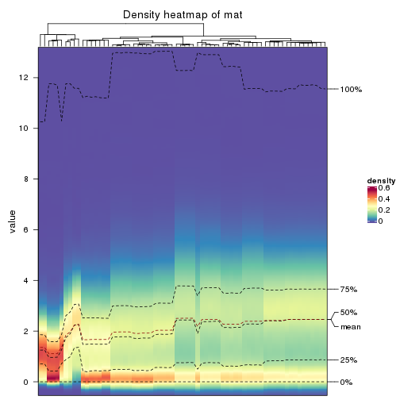
Folowing table shows the best k (number of partitions) for each combination
of top-value methods and partition methods. Clicking on the method name in
the table goes to the section for a single combination of methods.
The cola vignette explains the definition of the metrics used for determining the best number of partitions.
suggest_best_k(res_list)
| The best k | 1-PAC | Mean silhouette | Concordance | Optional k | ||
|---|---|---|---|---|---|---|
| SD:hclust | 5 | 1.000 | 0.999 | 1.000 | ** | 2 |
| SD:pam | 6 | 1.000 | 0.964 | 0.985 | ** | 3,4,5 |
| SD:NMF | 2 | 1.000 | 1.000 | 1.000 | ** | |
| CV:hclust | 2 | 1.000 | 0.998 | 0.999 | ** | |
| CV:pam | 2 | 1.000 | 1.000 | 1.000 | ** | |
| CV:mclust | 2 | 1.000 | 0.991 | 0.992 | ** | |
| MAD:hclust | 5 | 1.000 | 1.000 | 1.000 | ** | |
| MAD:skmeans | 4 | 1.000 | 0.996 | 0.994 | ** | 3 |
| MAD:pam | 6 | 1.000 | 0.962 | 0.986 | ** | 4,5 |
| MAD:mclust | 6 | 1.000 | 0.998 | 0.996 | ** | 2 |
| ATC:hclust | 3 | 1.000 | 0.942 | 0.971 | ** | |
| ATC:pam | 6 | 1.000 | 0.994 | 0.997 | ** | 2,3,4 |
| ATC:mclust | 6 | 0.948 | 0.980 | 0.948 | * | 4,5 |
| ATC:skmeans | 3 | 0.941 | 0.937 | 0.967 | * | 2 |
| SD:mclust | 4 | 0.937 | 0.954 | 0.972 | * | |
| SD:skmeans | 5 | 0.900 | 0.936 | 0.909 | * | 3,4 |
| MAD:NMF | 4 | 0.862 | 0.829 | 0.917 | ||
| SD:kmeans | 5 | 0.761 | 0.793 | 0.807 | ||
| ATC:NMF | 6 | 0.659 | 0.800 | 0.781 | ||
| CV:NMF | 3 | 0.621 | 0.895 | 0.797 | ||
| CV:skmeans | 3 | 0.554 | 0.896 | 0.921 | ||
| ATC:kmeans | 2 | 0.510 | 0.872 | 0.892 | ||
| MAD:kmeans | 2 | 0.384 | 0.854 | 0.873 | ||
| CV:kmeans | 3 | 0.374 | 0.804 | 0.787 |
**: 1-PAC > 0.95, *: 1-PAC > 0.9
Cumulative distribution function curves of consensus matrix for all methods.
collect_plots(res_list, fun = plot_ecdf)
Consensus heatmaps for all methods. (What is a consensus heatmap?)
collect_plots(res_list, k = 2, fun = consensus_heatmap, mc.cores = 4)
collect_plots(res_list, k = 3, fun = consensus_heatmap, mc.cores = 4)
collect_plots(res_list, k = 4, fun = consensus_heatmap, mc.cores = 4)
collect_plots(res_list, k = 5, fun = consensus_heatmap, mc.cores = 4)
collect_plots(res_list, k = 6, fun = consensus_heatmap, mc.cores = 4)

Membership heatmaps for all methods. (What is a membership heatmap?)
collect_plots(res_list, k = 2, fun = membership_heatmap, mc.cores = 4)
collect_plots(res_list, k = 3, fun = membership_heatmap, mc.cores = 4)
collect_plots(res_list, k = 4, fun = membership_heatmap, mc.cores = 4)
collect_plots(res_list, k = 5, fun = membership_heatmap, mc.cores = 4)
collect_plots(res_list, k = 6, fun = membership_heatmap, mc.cores = 4)
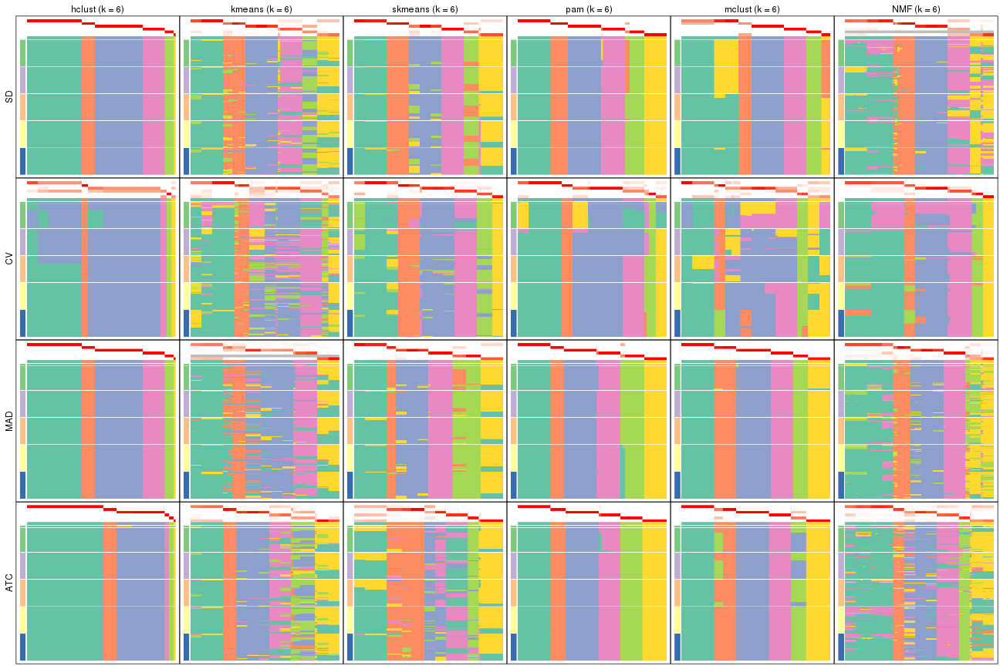
Signature heatmaps for all methods. (What is a signature heatmap?)
Note in following heatmaps, rows are scaled.
collect_plots(res_list, k = 2, fun = get_signatures, mc.cores = 4)
collect_plots(res_list, k = 3, fun = get_signatures, mc.cores = 4)
collect_plots(res_list, k = 4, fun = get_signatures, mc.cores = 4)
collect_plots(res_list, k = 5, fun = get_signatures, mc.cores = 4)
collect_plots(res_list, k = 6, fun = get_signatures, mc.cores = 4)
The statistics used for measuring the stability of consensus partitioning. (How are they defined?)
get_stats(res_list, k = 2)
#> k 1-PAC mean_silhouette concordance area_increased Rand Jaccard
#> SD:NMF 2 1.000 1.000 1.000 0.255 0.745 0.745
#> CV:NMF 2 0.886 0.968 0.985 0.274 0.745 0.745
#> MAD:NMF 2 0.642 0.917 0.955 0.345 0.651 0.651
#> ATC:NMF 2 0.262 0.797 0.799 0.408 0.546 0.546
#> SD:skmeans 2 0.651 0.943 0.955 0.481 0.494 0.494
#> CV:skmeans 2 0.458 0.586 0.796 0.386 0.745 0.745
#> MAD:skmeans 2 0.718 0.932 0.962 0.502 0.494 0.494
#> ATC:skmeans 2 1.000 1.000 1.000 0.506 0.494 0.494
#> SD:mclust 2 0.512 0.947 0.951 0.368 0.651 0.651
#> CV:mclust 2 1.000 0.991 0.992 0.260 0.745 0.745
#> MAD:mclust 2 1.000 0.995 0.993 0.471 0.528 0.528
#> ATC:mclust 2 0.836 0.953 0.976 0.482 0.508 0.508
#> SD:kmeans 2 0.510 0.799 0.888 0.348 0.745 0.745
#> CV:kmeans 2 0.519 0.903 0.924 0.268 0.745 0.745
#> MAD:kmeans 2 0.384 0.854 0.873 0.441 0.494 0.494
#> ATC:kmeans 2 0.510 0.872 0.892 0.434 0.494 0.494
#> SD:pam 2 0.556 0.684 0.842 0.378 0.745 0.745
#> CV:pam 2 1.000 1.000 1.000 0.188 0.813 0.813
#> MAD:pam 2 0.668 0.806 0.926 0.490 0.500 0.500
#> ATC:pam 2 1.000 0.947 0.978 0.501 0.494 0.494
#> SD:hclust 2 1.000 1.000 1.000 0.255 0.745 0.745
#> CV:hclust 2 1.000 0.998 0.999 0.254 0.745 0.745
#> MAD:hclust 2 0.556 0.885 0.874 0.409 0.494 0.494
#> ATC:hclust 2 0.556 0.684 0.842 0.378 0.745 0.745
get_stats(res_list, k = 3)
#> k 1-PAC mean_silhouette concordance area_increased Rand Jaccard
#> SD:NMF 3 0.532 0.507 0.766 1.1118 0.863 0.816
#> CV:NMF 3 0.621 0.895 0.797 0.9293 0.635 0.510
#> MAD:NMF 3 0.568 0.666 0.852 0.8447 0.710 0.555
#> ATC:NMF 3 0.261 0.560 0.700 0.2655 0.730 0.547
#> SD:skmeans 3 1.000 1.000 1.000 0.2849 0.888 0.774
#> CV:skmeans 3 0.554 0.896 0.921 0.5517 0.638 0.514
#> MAD:skmeans 3 1.000 0.957 0.970 0.2546 0.879 0.756
#> ATC:skmeans 3 0.941 0.937 0.967 0.2085 0.888 0.774
#> SD:mclust 3 0.731 0.933 0.933 0.7060 0.693 0.528
#> CV:mclust 3 0.562 0.829 0.883 1.3710 0.638 0.514
#> MAD:mclust 3 0.806 0.939 0.948 0.3304 0.855 0.726
#> ATC:mclust 3 0.701 0.925 0.909 0.3082 0.712 0.498
#> SD:kmeans 3 0.431 0.831 0.781 0.6673 0.652 0.534
#> CV:kmeans 3 0.374 0.804 0.787 0.9706 0.638 0.514
#> MAD:kmeans 3 0.535 0.614 0.728 0.3575 0.696 0.493
#> ATC:kmeans 3 0.732 0.874 0.888 0.3835 0.916 0.829
#> SD:pam 3 1.000 0.998 0.999 0.6111 0.647 0.526
#> CV:pam 3 0.558 0.854 0.889 1.7109 0.640 0.557
#> MAD:pam 3 0.802 0.924 0.944 0.2643 0.799 0.625
#> ATC:pam 3 1.000 0.994 0.997 0.1667 0.923 0.845
#> SD:hclust 3 0.607 0.988 0.922 1.0975 0.652 0.534
#> CV:hclust 3 1.000 0.999 0.999 0.0502 0.989 0.985
#> MAD:hclust 3 0.744 0.836 0.890 0.3876 0.932 0.861
#> ATC:hclust 3 1.000 0.942 0.971 0.5591 0.652 0.534
get_stats(res_list, k = 4)
#> k 1-PAC mean_silhouette concordance area_increased Rand Jaccard
#> SD:NMF 4 0.770 0.765 0.886 0.2394 0.712 0.540
#> CV:NMF 4 0.497 0.817 0.768 0.1690 0.989 0.971
#> MAD:NMF 4 0.862 0.829 0.917 0.1491 0.756 0.437
#> ATC:NMF 4 0.689 0.875 0.913 0.1407 0.622 0.374
#> SD:skmeans 4 1.000 0.993 0.997 0.1930 0.879 0.684
#> CV:skmeans 4 0.600 0.806 0.795 0.1641 0.899 0.737
#> MAD:skmeans 4 1.000 0.996 0.994 0.1711 0.888 0.700
#> ATC:skmeans 4 0.809 0.888 0.891 0.0915 0.978 0.943
#> SD:mclust 4 0.937 0.954 0.972 0.1696 0.921 0.770
#> CV:mclust 4 0.588 0.791 0.802 0.1223 0.899 0.737
#> MAD:mclust 4 0.889 0.941 0.958 0.1692 0.881 0.691
#> ATC:mclust 4 1.000 1.000 1.000 0.1739 0.908 0.738
#> SD:kmeans 4 0.555 0.633 0.728 0.1773 0.849 0.644
#> CV:kmeans 4 0.357 0.676 0.743 0.2202 1.000 1.000
#> MAD:kmeans 4 0.552 0.807 0.778 0.1489 0.853 0.644
#> ATC:kmeans 4 0.710 0.722 0.761 0.1370 0.866 0.681
#> SD:pam 4 1.000 0.992 0.997 0.1867 0.876 0.688
#> CV:pam 4 0.490 0.838 0.861 0.0971 0.943 0.875
#> MAD:pam 4 1.000 0.969 0.989 0.1367 0.929 0.809
#> ATC:pam 4 1.000 1.000 1.000 0.1101 0.934 0.842
#> SD:hclust 4 0.869 0.952 0.956 0.1857 0.989 0.974
#> CV:hclust 4 1.000 1.000 1.000 0.0101 0.997 0.996
#> MAD:hclust 4 0.744 0.894 0.880 0.1497 0.821 0.599
#> ATC:hclust 4 1.000 1.000 1.000 0.0411 0.989 0.974
get_stats(res_list, k = 5)
#> k 1-PAC mean_silhouette concordance area_increased Rand Jaccard
#> SD:NMF 5 0.740 0.858 0.842 0.13584 0.826 0.530
#> CV:NMF 5 0.585 0.714 0.790 0.13819 0.849 0.613
#> MAD:NMF 5 0.718 0.753 0.741 0.05664 0.912 0.682
#> ATC:NMF 5 0.650 0.793 0.838 0.21621 0.845 0.658
#> SD:skmeans 5 0.900 0.936 0.909 0.07467 0.925 0.719
#> CV:skmeans 5 0.711 0.800 0.822 0.10009 0.942 0.798
#> MAD:skmeans 5 0.893 0.932 0.931 0.04576 0.977 0.913
#> ATC:skmeans 5 0.750 0.509 0.773 0.10699 0.985 0.957
#> SD:mclust 5 0.894 0.958 0.966 0.04868 0.951 0.822
#> CV:mclust 5 0.591 0.620 0.715 0.05543 0.844 0.593
#> MAD:mclust 5 0.853 0.917 0.899 0.06154 0.955 0.835
#> ATC:mclust 5 1.000 1.000 1.000 0.06510 0.952 0.814
#> SD:kmeans 5 0.761 0.793 0.807 0.09191 0.948 0.834
#> CV:kmeans 5 0.492 0.670 0.672 0.12054 0.839 0.588
#> MAD:kmeans 5 0.638 0.747 0.780 0.08373 1.000 1.000
#> ATC:kmeans 5 0.728 0.707 0.757 0.08418 1.000 1.000
#> SD:pam 5 1.000 0.963 0.985 0.06532 0.941 0.791
#> CV:pam 5 0.524 0.772 0.832 0.18047 0.928 0.819
#> MAD:pam 5 1.000 0.960 0.986 0.08181 0.911 0.714
#> ATC:pam 5 0.862 0.951 0.954 0.17854 0.886 0.675
#> SD:hclust 5 1.000 0.999 1.000 0.15535 0.879 0.688
#> CV:hclust 5 0.615 0.970 0.824 0.75625 0.638 0.505
#> MAD:hclust 5 1.000 1.000 1.000 0.12481 0.981 0.932
#> ATC:hclust 5 1.000 1.000 1.000 0.00286 0.998 0.995
get_stats(res_list, k = 6)
#> k 1-PAC mean_silhouette concordance area_increased Rand Jaccard
#> SD:NMF 6 0.728 0.835 0.820 0.02004 0.991 0.959
#> CV:NMF 6 0.694 0.888 0.870 0.07033 0.967 0.876
#> MAD:NMF 6 0.820 0.776 0.843 0.04019 0.888 0.567
#> ATC:NMF 6 0.659 0.800 0.781 0.07794 0.895 0.650
#> SD:skmeans 6 0.867 0.936 0.907 0.04158 0.969 0.843
#> CV:skmeans 6 0.851 0.877 0.898 0.05904 0.943 0.762
#> MAD:skmeans 6 0.883 0.947 0.927 0.06150 0.934 0.724
#> ATC:skmeans 6 0.790 0.903 0.754 0.06756 0.820 0.485
#> SD:mclust 6 0.917 0.912 0.906 0.03797 0.989 0.956
#> CV:mclust 6 0.610 0.701 0.724 0.05048 0.855 0.573
#> MAD:mclust 6 1.000 0.998 0.996 0.07098 0.934 0.718
#> ATC:mclust 6 0.948 0.980 0.948 0.04397 0.954 0.782
#> SD:kmeans 6 0.751 0.913 0.824 0.06545 0.888 0.596
#> CV:kmeans 6 0.587 0.664 0.674 0.06354 0.993 0.972
#> MAD:kmeans 6 0.712 0.794 0.780 0.05129 0.934 0.762
#> ATC:kmeans 6 0.748 0.872 0.780 0.05638 0.861 0.539
#> SD:pam 6 1.000 0.964 0.985 0.08592 0.934 0.714
#> CV:pam 6 0.645 0.891 0.870 0.12695 0.899 0.693
#> MAD:pam 6 1.000 0.962 0.986 0.09074 0.934 0.717
#> ATC:pam 6 1.000 0.994 0.997 0.09150 0.928 0.695
#> SD:hclust 6 1.000 0.985 1.000 0.00606 0.996 0.984
#> CV:hclust 6 0.496 0.866 0.851 0.13693 0.997 0.993
#> MAD:hclust 6 1.000 0.985 1.000 0.00598 0.996 0.984
#> ATC:hclust 6 1.000 0.984 0.999 0.02531 0.985 0.960
Following heatmap plots the partition for each combination of methods and the lightness correspond to the silhouette scores for samples in each method. On top the consensus subgroup is inferred from all methods by taking the mean silhouette scores as weight.
collect_stats(res_list, k = 2)
collect_stats(res_list, k = 3)
collect_stats(res_list, k = 4)
collect_stats(res_list, k = 5)
collect_stats(res_list, k = 6)
Collect partitions from all methods:
collect_classes(res_list, k = 2)
collect_classes(res_list, k = 3)
collect_classes(res_list, k = 4)

collect_classes(res_list, k = 5)
collect_classes(res_list, k = 6)
Overlap of top rows from different top-row methods:
top_rows_overlap(res_list, top_n = 1000, method = "euler")
top_rows_overlap(res_list, top_n = 2000, method = "euler")
top_rows_overlap(res_list, top_n = 3000, method = "euler")
top_rows_overlap(res_list, top_n = 4000, method = "euler")
top_rows_overlap(res_list, top_n = 5000, method = "euler")
Also visualize the correspondance of rankings between different top-row methods:
top_rows_overlap(res_list, top_n = 1000, method = "correspondance")
top_rows_overlap(res_list, top_n = 2000, method = "correspondance")

top_rows_overlap(res_list, top_n = 3000, method = "correspondance")
top_rows_overlap(res_list, top_n = 4000, method = "correspondance")
top_rows_overlap(res_list, top_n = 5000, method = "correspondance")
Heatmaps of the top rows:
top_rows_heatmap(res_list, top_n = 1000)
top_rows_heatmap(res_list, top_n = 2000)
top_rows_heatmap(res_list, top_n = 3000)
top_rows_heatmap(res_list, top_n = 4000)
top_rows_heatmap(res_list, top_n = 5000)
The object with results only for a single top-value method and a single partition method can be extracted as:
res = res_list["SD", "hclust"]
# you can also extract it by
# res = res_list["SD:hclust"]
A summary of res and all the functions that can be applied to it:
res
#> A 'ConsensusPartition' object with k = 2, 3, 4, 5, 6.
#> On a matrix with 14753 rows and 68 columns.
#> Top rows (1000, 2000, 3000, 4000, 5000) are extracted by 'SD' method.
#> Subgroups are detected by 'hclust' method.
#> Performed in total 1250 partitions by row resampling.
#> Best k for subgroups seems to be 5.
#>
#> Following methods can be applied to this 'ConsensusPartition' object:
#> [1] "cola_report" "collect_classes" "collect_plots"
#> [4] "collect_stats" "colnames" "compare_signatures"
#> [7] "consensus_heatmap" "dimension_reduction" "functional_enrichment"
#> [10] "get_anno_col" "get_anno" "get_classes"
#> [13] "get_consensus" "get_matrix" "get_membership"
#> [16] "get_param" "get_signatures" "get_stats"
#> [19] "is_best_k" "is_stable_k" "membership_heatmap"
#> [22] "ncol" "nrow" "plot_ecdf"
#> [25] "rownames" "select_partition_number" "show"
#> [28] "suggest_best_k" "test_to_known_factors"
collect_plots() function collects all the plots made from res for all k (number of partitions)
into one single page to provide an easy and fast comparison between different k.
collect_plots(res)
The plots are:
k and the heatmap of
predicted classes for each k.k.k.k.All the plots in panels can be made by individual functions and they are plotted later in this section.
select_partition_number() produces several plots showing different
statistics for choosing “optimized” k. There are following statistics:
k;k, the area increased is defined as \(A_k - A_{k-1}\).The detailed explanations of these statistics can be found in the cola vignette.
Generally speaking, lower PAC score, higher mean silhouette score or higher
concordance corresponds to better partition. Rand index and Jaccard index
measure how similar the current partition is compared to partition with k-1.
If they are too similar, we won't accept k is better than k-1.
select_partition_number(res)
The numeric values for all these statistics can be obtained by get_stats().
get_stats(res)
#> k 1-PAC mean_silhouette concordance area_increased Rand Jaccard
#> 2 2 1.000 1.000 1.000 0.25536 0.745 0.745
#> 3 3 0.607 0.988 0.922 1.09755 0.652 0.534
#> 4 4 0.869 0.952 0.956 0.18567 0.989 0.974
#> 5 5 1.000 0.999 1.000 0.15535 0.879 0.688
#> 6 6 1.000 0.985 1.000 0.00606 0.996 0.984
suggest_best_k() suggests the best \(k\) based on these statistics. The rules are as follows:
suggest_best_k(res)
#> [1] 5
#> attr(,"optional")
#> [1] 2
There is also optional best \(k\) = 2 that is worth to check.
Following shows the table of the partitions (You need to click the show/hide
code output link to see it). The membership matrix (columns with name p*)
is inferred by
clue::cl_consensus()
function with the SE method. Basically the value in the membership matrix
represents the probability to belong to a certain group. The finall class
label for an item is determined with the group with highest probability it
belongs to.
In get_classes() function, the entropy is calculated from the membership
matrix and the silhouette score is calculated from the consensus matrix.
cbind(get_classes(res, k = 2), get_membership(res, k = 2))
#> class entropy silhouette p1 p2
#> SRR562645 1 0 1 1 0
#> SRR562646 1 0 1 1 0
#> SRR562647 1 0 1 1 0
#> SRR562648 1 0 1 1 0
#> SRR562649 1 0 1 1 0
#> SRR567420 1 0 1 1 0
#> SRR567421 1 0 1 1 0
#> SRR567422 1 0 1 1 0
#> SRR567423 1 0 1 1 0
#> SRR567424 1 0 1 1 0
#> SRR567425 1 0 1 1 0
#> SRR567426 1 0 1 1 0
#> SRR567427 1 0 1 1 0
#> SRR567428 1 0 1 1 0
#> SRR567429 1 0 1 1 0
#> SRR567430 1 0 1 1 0
#> SRR567431 1 0 1 1 0
#> SRR567432 1 0 1 1 0
#> SRR567433 1 0 1 1 0
#> SRR567434 1 0 1 1 0
#> SRR567435 1 0 1 1 0
#> SRR567436 1 0 1 1 0
#> SRR567437 1 0 1 1 0
#> SRR567438 1 0 1 1 0
#> SRR567439 1 0 1 1 0
#> SRR567440 1 0 1 1 0
#> SRR567441 1 0 1 1 0
#> SRR567442 1 0 1 1 0
#> SRR567443 1 0 1 1 0
#> SRR567444 1 0 1 1 0
#> SRR567445 1 0 1 1 0
#> SRR567446 1 0 1 1 0
#> SRR567447 1 0 1 1 0
#> SRR567448 1 0 1 1 0
#> SRR567449 1 0 1 1 0
#> SRR567450 1 0 1 1 0
#> SRR567451 1 0 1 1 0
#> SRR567452 1 0 1 1 0
#> SRR567453 1 0 1 1 0
#> SRR567454 1 0 1 1 0
#> SRR567455 1 0 1 1 0
#> SRR567456 1 0 1 1 0
#> SRR567457 1 0 1 1 0
#> SRR567458 1 0 1 1 0
#> SRR567459 1 0 1 1 0
#> SRR567460 1 0 1 1 0
#> SRR567461 1 0 1 1 0
#> SRR567462 1 0 1 1 0
#> SRR567463 1 0 1 1 0
#> SRR567464 1 0 1 1 0
#> SRR567465 1 0 1 1 0
#> SRR567466 1 0 1 1 0
#> SRR567467 1 0 1 1 0
#> SRR567468 1 0 1 1 0
#> SRR567469 1 0 1 1 0
#> SRR567470 1 0 1 1 0
#> SRR567471 1 0 1 1 0
#> SRR835008 1 0 1 1 0
#> SRR835009 2 0 1 0 1
#> SRR835011 2 0 1 0 1
#> SRR835012 2 0 1 0 1
#> SRR835013 2 0 1 0 1
#> SRR835010 2 0 1 0 1
#> SRR835014 2 0 1 0 1
#> SRR835015 2 0 1 0 1
#> SRR835016 2 0 1 0 1
#> SRR835017 2 0 1 0 1
#> SRR835018 2 0 1 0 1
cbind(get_classes(res, k = 3), get_membership(res, k = 3))
#> class entropy silhouette p1 p2 p3
#> SRR562645 1 0.0592 0.989 0.988 0.0 0.012
#> SRR562646 1 0.0592 0.989 0.988 0.0 0.012
#> SRR562647 1 0.0592 0.989 0.988 0.0 0.012
#> SRR562648 1 0.0592 0.989 0.988 0.0 0.012
#> SRR562649 1 0.0592 0.989 0.988 0.0 0.012
#> SRR567420 1 0.0592 0.989 0.988 0.0 0.012
#> SRR567421 1 0.0592 0.989 0.988 0.0 0.012
#> SRR567422 1 0.0592 0.989 0.988 0.0 0.012
#> SRR567423 1 0.0592 0.989 0.988 0.0 0.012
#> SRR567424 1 0.0592 0.989 0.988 0.0 0.012
#> SRR567425 1 0.0000 0.996 1.000 0.0 0.000
#> SRR567426 1 0.0000 0.996 1.000 0.0 0.000
#> SRR567427 1 0.0000 0.996 1.000 0.0 0.000
#> SRR567428 1 0.0000 0.996 1.000 0.0 0.000
#> SRR567429 1 0.0000 0.996 1.000 0.0 0.000
#> SRR567430 1 0.0000 0.996 1.000 0.0 0.000
#> SRR567431 1 0.0000 0.996 1.000 0.0 0.000
#> SRR567432 1 0.0000 0.996 1.000 0.0 0.000
#> SRR567433 1 0.0000 0.996 1.000 0.0 0.000
#> SRR567434 1 0.0000 0.996 1.000 0.0 0.000
#> SRR567435 1 0.0000 0.996 1.000 0.0 0.000
#> SRR567436 1 0.0000 0.996 1.000 0.0 0.000
#> SRR567437 1 0.0000 0.996 1.000 0.0 0.000
#> SRR567438 1 0.0000 0.996 1.000 0.0 0.000
#> SRR567439 1 0.0000 0.996 1.000 0.0 0.000
#> SRR567440 3 0.4555 1.000 0.200 0.0 0.800
#> SRR567441 3 0.4555 1.000 0.200 0.0 0.800
#> SRR567442 3 0.4555 1.000 0.200 0.0 0.800
#> SRR567443 3 0.4555 1.000 0.200 0.0 0.800
#> SRR567444 3 0.4555 1.000 0.200 0.0 0.800
#> SRR567445 1 0.0000 0.996 1.000 0.0 0.000
#> SRR567446 1 0.0000 0.996 1.000 0.0 0.000
#> SRR567447 1 0.0000 0.996 1.000 0.0 0.000
#> SRR567448 1 0.0000 0.996 1.000 0.0 0.000
#> SRR567449 1 0.0000 0.996 1.000 0.0 0.000
#> SRR567450 3 0.4555 1.000 0.200 0.0 0.800
#> SRR567451 3 0.4555 1.000 0.200 0.0 0.800
#> SRR567452 3 0.4555 1.000 0.200 0.0 0.800
#> SRR567453 3 0.4555 1.000 0.200 0.0 0.800
#> SRR567454 3 0.4555 1.000 0.200 0.0 0.800
#> SRR567455 3 0.4555 1.000 0.200 0.0 0.800
#> SRR567456 3 0.4555 1.000 0.200 0.0 0.800
#> SRR567457 1 0.0000 0.996 1.000 0.0 0.000
#> SRR567458 1 0.0000 0.996 1.000 0.0 0.000
#> SRR567459 1 0.0000 0.996 1.000 0.0 0.000
#> SRR567460 1 0.0000 0.996 1.000 0.0 0.000
#> SRR567461 1 0.0000 0.996 1.000 0.0 0.000
#> SRR567462 3 0.4555 1.000 0.200 0.0 0.800
#> SRR567463 3 0.4555 1.000 0.200 0.0 0.800
#> SRR567464 3 0.4555 1.000 0.200 0.0 0.800
#> SRR567465 3 0.4555 1.000 0.200 0.0 0.800
#> SRR567466 3 0.4555 1.000 0.200 0.0 0.800
#> SRR567467 3 0.4555 1.000 0.200 0.0 0.800
#> SRR567468 3 0.4555 1.000 0.200 0.0 0.800
#> SRR567469 3 0.4555 1.000 0.200 0.0 0.800
#> SRR567470 3 0.4555 1.000 0.200 0.0 0.800
#> SRR567471 3 0.4555 1.000 0.200 0.0 0.800
#> SRR835008 1 0.0000 0.996 1.000 0.0 0.000
#> SRR835009 2 0.4555 0.925 0.000 0.8 0.200
#> SRR835011 2 0.0000 0.950 0.000 1.0 0.000
#> SRR835012 2 0.0000 0.950 0.000 1.0 0.000
#> SRR835013 2 0.0000 0.950 0.000 1.0 0.000
#> SRR835010 2 0.4555 0.925 0.000 0.8 0.200
#> SRR835014 2 0.4555 0.925 0.000 0.8 0.200
#> SRR835015 2 0.4555 0.925 0.000 0.8 0.200
#> SRR835016 2 0.0000 0.950 0.000 1.0 0.000
#> SRR835017 2 0.0000 0.950 0.000 1.0 0.000
#> SRR835018 2 0.0000 0.950 0.000 1.0 0.000
cbind(get_classes(res, k = 4), get_membership(res, k = 4))
#> class entropy silhouette p1 p2 p3 p4
#> SRR562645 1 0.361 0.847 0.800 0.200 0 0.0
#> SRR562646 1 0.361 0.847 0.800 0.200 0 0.0
#> SRR562647 1 0.361 0.847 0.800 0.200 0 0.0
#> SRR562648 1 0.361 0.847 0.800 0.200 0 0.0
#> SRR562649 1 0.361 0.847 0.800 0.200 0 0.0
#> SRR567420 1 0.361 0.847 0.800 0.200 0 0.0
#> SRR567421 1 0.361 0.847 0.800 0.200 0 0.0
#> SRR567422 1 0.361 0.847 0.800 0.200 0 0.0
#> SRR567423 1 0.361 0.847 0.800 0.200 0 0.0
#> SRR567424 1 0.361 0.847 0.800 0.200 0 0.0
#> SRR567425 1 0.000 0.938 1.000 0.000 0 0.0
#> SRR567426 1 0.000 0.938 1.000 0.000 0 0.0
#> SRR567427 1 0.000 0.938 1.000 0.000 0 0.0
#> SRR567428 1 0.000 0.938 1.000 0.000 0 0.0
#> SRR567429 1 0.000 0.938 1.000 0.000 0 0.0
#> SRR567430 1 0.000 0.938 1.000 0.000 0 0.0
#> SRR567431 1 0.000 0.938 1.000 0.000 0 0.0
#> SRR567432 1 0.000 0.938 1.000 0.000 0 0.0
#> SRR567433 1 0.000 0.938 1.000 0.000 0 0.0
#> SRR567434 1 0.000 0.938 1.000 0.000 0 0.0
#> SRR567435 1 0.000 0.938 1.000 0.000 0 0.0
#> SRR567436 1 0.000 0.938 1.000 0.000 0 0.0
#> SRR567437 1 0.000 0.938 1.000 0.000 0 0.0
#> SRR567438 1 0.000 0.938 1.000 0.000 0 0.0
#> SRR567439 1 0.000 0.938 1.000 0.000 0 0.0
#> SRR567440 3 0.000 1.000 0.000 0.000 1 0.0
#> SRR567441 3 0.000 1.000 0.000 0.000 1 0.0
#> SRR567442 3 0.000 1.000 0.000 0.000 1 0.0
#> SRR567443 3 0.000 1.000 0.000 0.000 1 0.0
#> SRR567444 3 0.000 1.000 0.000 0.000 1 0.0
#> SRR567445 1 0.000 0.938 1.000 0.000 0 0.0
#> SRR567446 1 0.000 0.938 1.000 0.000 0 0.0
#> SRR567447 1 0.000 0.938 1.000 0.000 0 0.0
#> SRR567448 1 0.000 0.938 1.000 0.000 0 0.0
#> SRR567449 1 0.000 0.938 1.000 0.000 0 0.0
#> SRR567450 3 0.000 1.000 0.000 0.000 1 0.0
#> SRR567451 3 0.000 1.000 0.000 0.000 1 0.0
#> SRR567452 3 0.000 1.000 0.000 0.000 1 0.0
#> SRR567453 3 0.000 1.000 0.000 0.000 1 0.0
#> SRR567454 3 0.000 1.000 0.000 0.000 1 0.0
#> SRR567455 3 0.000 1.000 0.000 0.000 1 0.0
#> SRR567456 3 0.000 1.000 0.000 0.000 1 0.0
#> SRR567457 1 0.000 0.938 1.000 0.000 0 0.0
#> SRR567458 1 0.000 0.938 1.000 0.000 0 0.0
#> SRR567459 1 0.000 0.938 1.000 0.000 0 0.0
#> SRR567460 1 0.000 0.938 1.000 0.000 0 0.0
#> SRR567461 1 0.000 0.938 1.000 0.000 0 0.0
#> SRR567462 3 0.000 1.000 0.000 0.000 1 0.0
#> SRR567463 3 0.000 1.000 0.000 0.000 1 0.0
#> SRR567464 3 0.000 1.000 0.000 0.000 1 0.0
#> SRR567465 3 0.000 1.000 0.000 0.000 1 0.0
#> SRR567466 3 0.000 1.000 0.000 0.000 1 0.0
#> SRR567467 3 0.000 1.000 0.000 0.000 1 0.0
#> SRR567468 3 0.000 1.000 0.000 0.000 1 0.0
#> SRR567469 3 0.000 1.000 0.000 0.000 1 0.0
#> SRR567470 3 0.000 1.000 0.000 0.000 1 0.0
#> SRR567471 3 0.000 1.000 0.000 0.000 1 0.0
#> SRR835008 1 0.349 0.853 0.812 0.188 0 0.0
#> SRR835009 4 0.000 1.000 0.000 0.000 0 1.0
#> SRR835011 2 0.361 1.000 0.000 0.800 0 0.2
#> SRR835012 2 0.361 1.000 0.000 0.800 0 0.2
#> SRR835013 2 0.361 1.000 0.000 0.800 0 0.2
#> SRR835010 4 0.000 1.000 0.000 0.000 0 1.0
#> SRR835014 4 0.000 1.000 0.000 0.000 0 1.0
#> SRR835015 4 0.000 1.000 0.000 0.000 0 1.0
#> SRR835016 2 0.361 1.000 0.000 0.800 0 0.2
#> SRR835017 2 0.361 1.000 0.000 0.800 0 0.2
#> SRR835018 2 0.361 1.000 0.000 0.800 0 0.2
cbind(get_classes(res, k = 5), get_membership(res, k = 5))
#> class entropy silhouette p1 p2 p3 p4 p5
#> SRR562645 4 0.0000 0.998 0.000 0 0 1.000 0
#> SRR562646 4 0.0000 0.998 0.000 0 0 1.000 0
#> SRR562647 4 0.0000 0.998 0.000 0 0 1.000 0
#> SRR562648 4 0.0000 0.998 0.000 0 0 1.000 0
#> SRR562649 4 0.0000 0.998 0.000 0 0 1.000 0
#> SRR567420 4 0.0000 0.998 0.000 0 0 1.000 0
#> SRR567421 4 0.0000 0.998 0.000 0 0 1.000 0
#> SRR567422 4 0.0000 0.998 0.000 0 0 1.000 0
#> SRR567423 4 0.0000 0.998 0.000 0 0 1.000 0
#> SRR567424 4 0.0000 0.998 0.000 0 0 1.000 0
#> SRR567425 1 0.0000 1.000 1.000 0 0 0.000 0
#> SRR567426 1 0.0000 1.000 1.000 0 0 0.000 0
#> SRR567427 1 0.0000 1.000 1.000 0 0 0.000 0
#> SRR567428 1 0.0000 1.000 1.000 0 0 0.000 0
#> SRR567429 1 0.0000 1.000 1.000 0 0 0.000 0
#> SRR567430 1 0.0000 1.000 1.000 0 0 0.000 0
#> SRR567431 1 0.0000 1.000 1.000 0 0 0.000 0
#> SRR567432 1 0.0000 1.000 1.000 0 0 0.000 0
#> SRR567433 1 0.0000 1.000 1.000 0 0 0.000 0
#> SRR567434 1 0.0000 1.000 1.000 0 0 0.000 0
#> SRR567435 1 0.0000 1.000 1.000 0 0 0.000 0
#> SRR567436 1 0.0000 1.000 1.000 0 0 0.000 0
#> SRR567437 1 0.0000 1.000 1.000 0 0 0.000 0
#> SRR567438 1 0.0000 1.000 1.000 0 0 0.000 0
#> SRR567439 1 0.0000 1.000 1.000 0 0 0.000 0
#> SRR567440 3 0.0000 1.000 0.000 0 1 0.000 0
#> SRR567441 3 0.0000 1.000 0.000 0 1 0.000 0
#> SRR567442 3 0.0000 1.000 0.000 0 1 0.000 0
#> SRR567443 3 0.0000 1.000 0.000 0 1 0.000 0
#> SRR567444 3 0.0000 1.000 0.000 0 1 0.000 0
#> SRR567445 1 0.0000 1.000 1.000 0 0 0.000 0
#> SRR567446 1 0.0000 1.000 1.000 0 0 0.000 0
#> SRR567447 1 0.0000 1.000 1.000 0 0 0.000 0
#> SRR567448 1 0.0000 1.000 1.000 0 0 0.000 0
#> SRR567449 1 0.0000 1.000 1.000 0 0 0.000 0
#> SRR567450 3 0.0000 1.000 0.000 0 1 0.000 0
#> SRR567451 3 0.0000 1.000 0.000 0 1 0.000 0
#> SRR567452 3 0.0000 1.000 0.000 0 1 0.000 0
#> SRR567453 3 0.0000 1.000 0.000 0 1 0.000 0
#> SRR567454 3 0.0000 1.000 0.000 0 1 0.000 0
#> SRR567455 3 0.0000 1.000 0.000 0 1 0.000 0
#> SRR567456 3 0.0000 1.000 0.000 0 1 0.000 0
#> SRR567457 1 0.0000 1.000 1.000 0 0 0.000 0
#> SRR567458 1 0.0000 1.000 1.000 0 0 0.000 0
#> SRR567459 1 0.0000 1.000 1.000 0 0 0.000 0
#> SRR567460 1 0.0000 1.000 1.000 0 0 0.000 0
#> SRR567461 1 0.0000 1.000 1.000 0 0 0.000 0
#> SRR567462 3 0.0000 1.000 0.000 0 1 0.000 0
#> SRR567463 3 0.0000 1.000 0.000 0 1 0.000 0
#> SRR567464 3 0.0000 1.000 0.000 0 1 0.000 0
#> SRR567465 3 0.0000 1.000 0.000 0 1 0.000 0
#> SRR567466 3 0.0000 1.000 0.000 0 1 0.000 0
#> SRR567467 3 0.0000 1.000 0.000 0 1 0.000 0
#> SRR567468 3 0.0000 1.000 0.000 0 1 0.000 0
#> SRR567469 3 0.0000 1.000 0.000 0 1 0.000 0
#> SRR567470 3 0.0000 1.000 0.000 0 1 0.000 0
#> SRR567471 3 0.0000 1.000 0.000 0 1 0.000 0
#> SRR835008 4 0.0404 0.981 0.012 0 0 0.988 0
#> SRR835009 5 0.0000 1.000 0.000 0 0 0.000 1
#> SRR835011 2 0.0000 1.000 0.000 1 0 0.000 0
#> SRR835012 2 0.0000 1.000 0.000 1 0 0.000 0
#> SRR835013 2 0.0000 1.000 0.000 1 0 0.000 0
#> SRR835010 5 0.0000 1.000 0.000 0 0 0.000 1
#> SRR835014 5 0.0000 1.000 0.000 0 0 0.000 1
#> SRR835015 5 0.0000 1.000 0.000 0 0 0.000 1
#> SRR835016 2 0.0000 1.000 0.000 1 0 0.000 0
#> SRR835017 2 0.0000 1.000 0.000 1 0 0.000 0
#> SRR835018 2 0.0000 1.000 0.000 1 0 0.000 0
cbind(get_classes(res, k = 6), get_membership(res, k = 6))
#> class entropy silhouette p1 p2 p3 p4 p5 p6
#> SRR562645 4 0.0000 1.000 0 0 0 1.000 0.000 0.000
#> SRR562646 4 0.0000 1.000 0 0 0 1.000 0.000 0.000
#> SRR562647 4 0.0000 1.000 0 0 0 1.000 0.000 0.000
#> SRR562648 4 0.0000 1.000 0 0 0 1.000 0.000 0.000
#> SRR562649 4 0.0000 1.000 0 0 0 1.000 0.000 0.000
#> SRR567420 4 0.0000 1.000 0 0 0 1.000 0.000 0.000
#> SRR567421 4 0.0000 1.000 0 0 0 1.000 0.000 0.000
#> SRR567422 4 0.0000 1.000 0 0 0 1.000 0.000 0.000
#> SRR567423 4 0.0000 1.000 0 0 0 1.000 0.000 0.000
#> SRR567424 4 0.0000 1.000 0 0 0 1.000 0.000 0.000
#> SRR567425 1 0.0000 1.000 1 0 0 0.000 0.000 0.000
#> SRR567426 1 0.0000 1.000 1 0 0 0.000 0.000 0.000
#> SRR567427 1 0.0000 1.000 1 0 0 0.000 0.000 0.000
#> SRR567428 1 0.0000 1.000 1 0 0 0.000 0.000 0.000
#> SRR567429 1 0.0000 1.000 1 0 0 0.000 0.000 0.000
#> SRR567430 1 0.0000 1.000 1 0 0 0.000 0.000 0.000
#> SRR567431 1 0.0000 1.000 1 0 0 0.000 0.000 0.000
#> SRR567432 1 0.0000 1.000 1 0 0 0.000 0.000 0.000
#> SRR567433 1 0.0000 1.000 1 0 0 0.000 0.000 0.000
#> SRR567434 1 0.0000 1.000 1 0 0 0.000 0.000 0.000
#> SRR567435 1 0.0000 1.000 1 0 0 0.000 0.000 0.000
#> SRR567436 1 0.0000 1.000 1 0 0 0.000 0.000 0.000
#> SRR567437 1 0.0000 1.000 1 0 0 0.000 0.000 0.000
#> SRR567438 1 0.0000 1.000 1 0 0 0.000 0.000 0.000
#> SRR567439 1 0.0000 1.000 1 0 0 0.000 0.000 0.000
#> SRR567440 3 0.0000 1.000 0 0 1 0.000 0.000 0.000
#> SRR567441 3 0.0000 1.000 0 0 1 0.000 0.000 0.000
#> SRR567442 3 0.0000 1.000 0 0 1 0.000 0.000 0.000
#> SRR567443 3 0.0000 1.000 0 0 1 0.000 0.000 0.000
#> SRR567444 3 0.0000 1.000 0 0 1 0.000 0.000 0.000
#> SRR567445 1 0.0000 1.000 1 0 0 0.000 0.000 0.000
#> SRR567446 1 0.0000 1.000 1 0 0 0.000 0.000 0.000
#> SRR567447 1 0.0000 1.000 1 0 0 0.000 0.000 0.000
#> SRR567448 1 0.0000 1.000 1 0 0 0.000 0.000 0.000
#> SRR567449 1 0.0000 1.000 1 0 0 0.000 0.000 0.000
#> SRR567450 3 0.0000 1.000 0 0 1 0.000 0.000 0.000
#> SRR567451 3 0.0000 1.000 0 0 1 0.000 0.000 0.000
#> SRR567452 3 0.0000 1.000 0 0 1 0.000 0.000 0.000
#> SRR567453 3 0.0000 1.000 0 0 1 0.000 0.000 0.000
#> SRR567454 3 0.0000 1.000 0 0 1 0.000 0.000 0.000
#> SRR567455 3 0.0000 1.000 0 0 1 0.000 0.000 0.000
#> SRR567456 3 0.0000 1.000 0 0 1 0.000 0.000 0.000
#> SRR567457 1 0.0000 1.000 1 0 0 0.000 0.000 0.000
#> SRR567458 1 0.0000 1.000 1 0 0 0.000 0.000 0.000
#> SRR567459 1 0.0000 1.000 1 0 0 0.000 0.000 0.000
#> SRR567460 1 0.0000 1.000 1 0 0 0.000 0.000 0.000
#> SRR567461 1 0.0000 1.000 1 0 0 0.000 0.000 0.000
#> SRR567462 3 0.0000 1.000 0 0 1 0.000 0.000 0.000
#> SRR567463 3 0.0000 1.000 0 0 1 0.000 0.000 0.000
#> SRR567464 3 0.0000 1.000 0 0 1 0.000 0.000 0.000
#> SRR567465 3 0.0000 1.000 0 0 1 0.000 0.000 0.000
#> SRR567466 3 0.0000 1.000 0 0 1 0.000 0.000 0.000
#> SRR567467 3 0.0000 1.000 0 0 1 0.000 0.000 0.000
#> SRR567468 3 0.0000 1.000 0 0 1 0.000 0.000 0.000
#> SRR567469 3 0.0000 1.000 0 0 1 0.000 0.000 0.000
#> SRR567470 3 0.0000 1.000 0 0 1 0.000 0.000 0.000
#> SRR567471 3 0.0000 1.000 0 0 1 0.000 0.000 0.000
#> SRR835008 6 0.0146 0.000 0 0 0 0.004 0.000 0.996
#> SRR835009 5 0.0146 0.998 0 0 0 0.000 0.996 0.004
#> SRR835011 2 0.0000 1.000 0 1 0 0.000 0.000 0.000
#> SRR835012 2 0.0000 1.000 0 1 0 0.000 0.000 0.000
#> SRR835013 2 0.0000 1.000 0 1 0 0.000 0.000 0.000
#> SRR835010 5 0.0146 0.998 0 0 0 0.000 0.996 0.004
#> SRR835014 5 0.0000 0.998 0 0 0 0.000 1.000 0.000
#> SRR835015 5 0.0000 0.998 0 0 0 0.000 1.000 0.000
#> SRR835016 2 0.0000 1.000 0 1 0 0.000 0.000 0.000
#> SRR835017 2 0.0000 1.000 0 1 0 0.000 0.000 0.000
#> SRR835018 2 0.0000 1.000 0 1 0 0.000 0.000 0.000
Heatmaps for the consensus matrix. It visualizes the probability of two samples to be in a same group.
consensus_heatmap(res, k = 2)
consensus_heatmap(res, k = 3)
consensus_heatmap(res, k = 4)
consensus_heatmap(res, k = 5)
consensus_heatmap(res, k = 6)
Heatmaps for the membership of samples in all partitions to see how consistent they are:
membership_heatmap(res, k = 2)
membership_heatmap(res, k = 3)
membership_heatmap(res, k = 4)
membership_heatmap(res, k = 5)
membership_heatmap(res, k = 6)
As soon as we have had the classes for columns, we can look for signatures which are significantly different between classes which can be candidate marks for certain classes. Following are the heatmaps for signatures.
Signature heatmaps where rows are scaled:
get_signatures(res, k = 2)
get_signatures(res, k = 3)
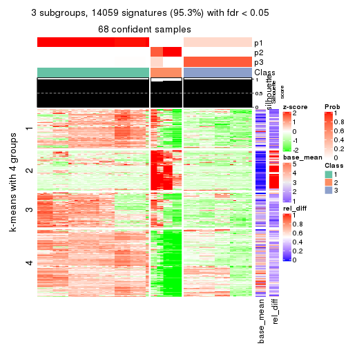
get_signatures(res, k = 4)
get_signatures(res, k = 5)
get_signatures(res, k = 6)
Signature heatmaps where rows are not scaled:
get_signatures(res, k = 2, scale_rows = FALSE)

get_signatures(res, k = 3, scale_rows = FALSE)
get_signatures(res, k = 4, scale_rows = FALSE)
get_signatures(res, k = 5, scale_rows = FALSE)
get_signatures(res, k = 6, scale_rows = FALSE)
Compare the overlap of signatures from different k:
compare_signatures(res)
get_signature() returns a data frame invisibly. TO get the list of signatures, the function
call should be assigned to a variable explicitly. In following code, if plot argument is set
to FALSE, no heatmap is plotted while only the differential analysis is performed.
# code only for demonstration
tb = get_signature(res, k = ..., plot = FALSE)
An example of the output of tb is:
#> which_row fdr mean_1 mean_2 scaled_mean_1 scaled_mean_2 km
#> 1 38 0.042760348 8.373488 9.131774 -0.5533452 0.5164555 1
#> 2 40 0.018707592 7.106213 8.469186 -0.6173731 0.5762149 1
#> 3 55 0.019134737 10.221463 11.207825 -0.6159697 0.5749050 1
#> 4 59 0.006059896 5.921854 7.869574 -0.6899429 0.6439467 1
#> 5 60 0.018055526 8.928898 10.211722 -0.6204761 0.5791110 1
#> 6 98 0.009384629 15.714769 14.887706 0.6635654 -0.6193277 2
...
The columns in tb are:
which_row: row indices corresponding to the input matrix.fdr: FDR for the differential test. mean_x: The mean value in group x.scaled_mean_x: The mean value in group x after rows are scaled.km: Row groups if k-means clustering is applied to rows.UMAP plot which shows how samples are separated.
dimension_reduction(res, k = 2, method = "UMAP")

dimension_reduction(res, k = 3, method = "UMAP")
dimension_reduction(res, k = 4, method = "UMAP")
dimension_reduction(res, k = 5, method = "UMAP")
dimension_reduction(res, k = 6, method = "UMAP")
Following heatmap shows how subgroups are split when increasing k:
collect_classes(res)
If matrix rows can be associated to genes, consider to use functional_enrichment(res,
...) to perform function enrichment for the signature genes. See this vignette for more detailed explanations.
The object with results only for a single top-value method and a single partition method can be extracted as:
res = res_list["SD", "kmeans"]
# you can also extract it by
# res = res_list["SD:kmeans"]
A summary of res and all the functions that can be applied to it:
res
#> A 'ConsensusPartition' object with k = 2, 3, 4, 5, 6.
#> On a matrix with 14753 rows and 68 columns.
#> Top rows (1000, 2000, 3000, 4000, 5000) are extracted by 'SD' method.
#> Subgroups are detected by 'kmeans' method.
#> Performed in total 1250 partitions by row resampling.
#> Best k for subgroups seems to be 5.
#>
#> Following methods can be applied to this 'ConsensusPartition' object:
#> [1] "cola_report" "collect_classes" "collect_plots"
#> [4] "collect_stats" "colnames" "compare_signatures"
#> [7] "consensus_heatmap" "dimension_reduction" "functional_enrichment"
#> [10] "get_anno_col" "get_anno" "get_classes"
#> [13] "get_consensus" "get_matrix" "get_membership"
#> [16] "get_param" "get_signatures" "get_stats"
#> [19] "is_best_k" "is_stable_k" "membership_heatmap"
#> [22] "ncol" "nrow" "plot_ecdf"
#> [25] "rownames" "select_partition_number" "show"
#> [28] "suggest_best_k" "test_to_known_factors"
collect_plots() function collects all the plots made from res for all k (number of partitions)
into one single page to provide an easy and fast comparison between different k.
collect_plots(res)
The plots are:
k and the heatmap of
predicted classes for each k.k.k.k.All the plots in panels can be made by individual functions and they are plotted later in this section.
select_partition_number() produces several plots showing different
statistics for choosing “optimized” k. There are following statistics:
k;k, the area increased is defined as \(A_k - A_{k-1}\).The detailed explanations of these statistics can be found in the cola vignette.
Generally speaking, lower PAC score, higher mean silhouette score or higher
concordance corresponds to better partition. Rand index and Jaccard index
measure how similar the current partition is compared to partition with k-1.
If they are too similar, we won't accept k is better than k-1.
select_partition_number(res)
The numeric values for all these statistics can be obtained by get_stats().
get_stats(res)
#> k 1-PAC mean_silhouette concordance area_increased Rand Jaccard
#> 2 2 0.510 0.799 0.888 0.3481 0.745 0.745
#> 3 3 0.431 0.831 0.781 0.6673 0.652 0.534
#> 4 4 0.555 0.633 0.728 0.1773 0.849 0.644
#> 5 5 0.761 0.793 0.807 0.0919 0.948 0.834
#> 6 6 0.751 0.913 0.824 0.0654 0.888 0.596
suggest_best_k() suggests the best \(k\) based on these statistics. The rules are as follows:
suggest_best_k(res)
#> [1] 5
Following shows the table of the partitions (You need to click the show/hide
code output link to see it). The membership matrix (columns with name p*)
is inferred by
clue::cl_consensus()
function with the SE method. Basically the value in the membership matrix
represents the probability to belong to a certain group. The finall class
label for an item is determined with the group with highest probability it
belongs to.
In get_classes() function, the entropy is calculated from the membership
matrix and the silhouette score is calculated from the consensus matrix.
cbind(get_classes(res, k = 2), get_membership(res, k = 2))
#> class entropy silhouette p1 p2
#> SRR562645 1 0.000 0.847 1.000 0.000
#> SRR562646 1 0.000 0.847 1.000 0.000
#> SRR562647 1 0.000 0.847 1.000 0.000
#> SRR562648 1 0.000 0.847 1.000 0.000
#> SRR562649 1 0.000 0.847 1.000 0.000
#> SRR567420 1 0.000 0.847 1.000 0.000
#> SRR567421 1 0.000 0.847 1.000 0.000
#> SRR567422 1 0.000 0.847 1.000 0.000
#> SRR567423 1 0.000 0.847 1.000 0.000
#> SRR567424 1 0.000 0.847 1.000 0.000
#> SRR567425 1 0.000 0.847 1.000 0.000
#> SRR567426 1 0.000 0.847 1.000 0.000
#> SRR567427 1 0.000 0.847 1.000 0.000
#> SRR567428 1 0.000 0.847 1.000 0.000
#> SRR567429 1 0.000 0.847 1.000 0.000
#> SRR567430 1 0.000 0.847 1.000 0.000
#> SRR567431 1 0.000 0.847 1.000 0.000
#> SRR567432 1 0.000 0.847 1.000 0.000
#> SRR567433 1 0.000 0.847 1.000 0.000
#> SRR567434 1 0.000 0.847 1.000 0.000
#> SRR567435 1 0.000 0.847 1.000 0.000
#> SRR567436 1 0.000 0.847 1.000 0.000
#> SRR567437 1 0.000 0.847 1.000 0.000
#> SRR567438 1 0.000 0.847 1.000 0.000
#> SRR567439 1 0.000 0.847 1.000 0.000
#> SRR567440 1 0.891 0.687 0.692 0.308
#> SRR567441 1 0.891 0.687 0.692 0.308
#> SRR567442 1 0.891 0.687 0.692 0.308
#> SRR567443 1 0.891 0.687 0.692 0.308
#> SRR567444 1 0.891 0.687 0.692 0.308
#> SRR567445 1 0.000 0.847 1.000 0.000
#> SRR567446 1 0.000 0.847 1.000 0.000
#> SRR567447 1 0.000 0.847 1.000 0.000
#> SRR567448 1 0.000 0.847 1.000 0.000
#> SRR567449 1 0.000 0.847 1.000 0.000
#> SRR567450 1 0.987 0.508 0.568 0.432
#> SRR567451 1 0.987 0.508 0.568 0.432
#> SRR567452 1 0.987 0.508 0.568 0.432
#> SRR567453 1 0.987 0.508 0.568 0.432
#> SRR567454 1 0.987 0.508 0.568 0.432
#> SRR567455 1 0.987 0.508 0.568 0.432
#> SRR567456 1 0.987 0.508 0.568 0.432
#> SRR567457 1 0.000 0.847 1.000 0.000
#> SRR567458 1 0.000 0.847 1.000 0.000
#> SRR567459 1 0.000 0.847 1.000 0.000
#> SRR567460 1 0.000 0.847 1.000 0.000
#> SRR567461 1 0.000 0.847 1.000 0.000
#> SRR567462 1 0.891 0.687 0.692 0.308
#> SRR567463 1 0.891 0.687 0.692 0.308
#> SRR567464 1 0.891 0.687 0.692 0.308
#> SRR567465 1 0.891 0.687 0.692 0.308
#> SRR567466 1 0.891 0.687 0.692 0.308
#> SRR567467 1 0.891 0.687 0.692 0.308
#> SRR567468 1 0.891 0.687 0.692 0.308
#> SRR567469 1 0.891 0.687 0.692 0.308
#> SRR567470 1 0.891 0.687 0.692 0.308
#> SRR567471 1 0.891 0.687 0.692 0.308
#> SRR835008 1 0.000 0.847 1.000 0.000
#> SRR835009 2 0.000 1.000 0.000 1.000
#> SRR835011 2 0.000 1.000 0.000 1.000
#> SRR835012 2 0.000 1.000 0.000 1.000
#> SRR835013 2 0.000 1.000 0.000 1.000
#> SRR835010 2 0.000 1.000 0.000 1.000
#> SRR835014 2 0.000 1.000 0.000 1.000
#> SRR835015 2 0.000 1.000 0.000 1.000
#> SRR835016 2 0.000 1.000 0.000 1.000
#> SRR835017 2 0.000 1.000 0.000 1.000
#> SRR835018 2 0.000 1.000 0.000 1.000
cbind(get_classes(res, k = 3), get_membership(res, k = 3))
#> class entropy silhouette p1 p2 p3
#> SRR562645 1 0.891 0.465 0.564 0.176 0.260
#> SRR562646 1 0.891 0.465 0.564 0.176 0.260
#> SRR562647 1 0.891 0.465 0.564 0.176 0.260
#> SRR562648 1 0.891 0.465 0.564 0.176 0.260
#> SRR562649 1 0.891 0.465 0.564 0.176 0.260
#> SRR567420 1 0.891 0.465 0.564 0.176 0.260
#> SRR567421 1 0.891 0.465 0.564 0.176 0.260
#> SRR567422 1 0.891 0.465 0.564 0.176 0.260
#> SRR567423 1 0.891 0.465 0.564 0.176 0.260
#> SRR567424 1 0.891 0.465 0.564 0.176 0.260
#> SRR567425 1 0.319 0.807 0.888 0.000 0.112
#> SRR567426 1 0.319 0.807 0.888 0.000 0.112
#> SRR567427 1 0.319 0.807 0.888 0.000 0.112
#> SRR567428 1 0.319 0.807 0.888 0.000 0.112
#> SRR567429 1 0.319 0.807 0.888 0.000 0.112
#> SRR567430 1 0.319 0.807 0.888 0.000 0.112
#> SRR567431 1 0.319 0.807 0.888 0.000 0.112
#> SRR567432 1 0.319 0.807 0.888 0.000 0.112
#> SRR567433 1 0.319 0.807 0.888 0.000 0.112
#> SRR567434 1 0.319 0.807 0.888 0.000 0.112
#> SRR567435 1 0.319 0.807 0.888 0.000 0.112
#> SRR567436 1 0.319 0.807 0.888 0.000 0.112
#> SRR567437 1 0.319 0.807 0.888 0.000 0.112
#> SRR567438 1 0.319 0.807 0.888 0.000 0.112
#> SRR567439 1 0.319 0.807 0.888 0.000 0.112
#> SRR567440 3 0.226 0.983 0.068 0.000 0.932
#> SRR567441 3 0.226 0.983 0.068 0.000 0.932
#> SRR567442 3 0.226 0.983 0.068 0.000 0.932
#> SRR567443 3 0.226 0.983 0.068 0.000 0.932
#> SRR567444 3 0.226 0.983 0.068 0.000 0.932
#> SRR567445 1 0.492 0.784 0.840 0.052 0.108
#> SRR567446 1 0.492 0.784 0.840 0.052 0.108
#> SRR567447 1 0.492 0.784 0.840 0.052 0.108
#> SRR567448 1 0.492 0.784 0.840 0.052 0.108
#> SRR567449 1 0.492 0.784 0.840 0.052 0.108
#> SRR567450 3 0.220 0.962 0.056 0.004 0.940
#> SRR567451 3 0.220 0.962 0.056 0.004 0.940
#> SRR567452 3 0.220 0.962 0.056 0.004 0.940
#> SRR567453 3 0.220 0.962 0.056 0.004 0.940
#> SRR567454 3 0.220 0.962 0.056 0.004 0.940
#> SRR567455 3 0.220 0.962 0.056 0.004 0.940
#> SRR567456 3 0.220 0.962 0.056 0.004 0.940
#> SRR567457 1 0.492 0.784 0.840 0.052 0.108
#> SRR567458 1 0.492 0.784 0.840 0.052 0.108
#> SRR567459 1 0.492 0.784 0.840 0.052 0.108
#> SRR567460 1 0.492 0.784 0.840 0.052 0.108
#> SRR567461 1 0.492 0.784 0.840 0.052 0.108
#> SRR567462 3 0.226 0.983 0.068 0.000 0.932
#> SRR567463 3 0.226 0.983 0.068 0.000 0.932
#> SRR567464 3 0.226 0.983 0.068 0.000 0.932
#> SRR567465 3 0.226 0.983 0.068 0.000 0.932
#> SRR567466 3 0.226 0.983 0.068 0.000 0.932
#> SRR567467 3 0.226 0.983 0.068 0.000 0.932
#> SRR567468 3 0.226 0.983 0.068 0.000 0.932
#> SRR567469 3 0.226 0.983 0.068 0.000 0.932
#> SRR567470 3 0.226 0.983 0.068 0.000 0.932
#> SRR567471 3 0.226 0.983 0.068 0.000 0.932
#> SRR835008 1 0.862 0.607 0.596 0.164 0.240
#> SRR835009 2 0.533 0.984 0.000 0.728 0.272
#> SRR835011 2 0.510 0.987 0.000 0.752 0.248
#> SRR835012 2 0.510 0.987 0.000 0.752 0.248
#> SRR835013 2 0.510 0.987 0.000 0.752 0.248
#> SRR835010 2 0.533 0.984 0.000 0.728 0.272
#> SRR835014 2 0.514 0.984 0.000 0.748 0.252
#> SRR835015 2 0.514 0.984 0.000 0.748 0.252
#> SRR835016 2 0.489 0.987 0.000 0.772 0.228
#> SRR835017 2 0.489 0.987 0.000 0.772 0.228
#> SRR835018 2 0.489 0.987 0.000 0.772 0.228
cbind(get_classes(res, k = 4), get_membership(res, k = 4))
#> class entropy silhouette p1 p2 p3 p4
#> SRR562645 4 0.7333 0.4730 0.356 0.004 0.144 0.496
#> SRR562646 4 0.7333 0.4730 0.356 0.004 0.144 0.496
#> SRR562647 4 0.7333 0.4730 0.356 0.004 0.144 0.496
#> SRR562648 4 0.7333 0.4730 0.356 0.004 0.144 0.496
#> SRR562649 4 0.7333 0.4730 0.356 0.004 0.144 0.496
#> SRR567420 4 0.7091 0.4729 0.356 0.000 0.136 0.508
#> SRR567421 4 0.7091 0.4729 0.356 0.000 0.136 0.508
#> SRR567422 4 0.7091 0.4729 0.356 0.000 0.136 0.508
#> SRR567423 4 0.7091 0.4729 0.356 0.000 0.136 0.508
#> SRR567424 4 0.7091 0.4729 0.356 0.000 0.136 0.508
#> SRR567425 1 0.0469 0.8246 0.988 0.000 0.012 0.000
#> SRR567426 1 0.0469 0.8246 0.988 0.000 0.012 0.000
#> SRR567427 1 0.0469 0.8246 0.988 0.000 0.012 0.000
#> SRR567428 1 0.0469 0.8246 0.988 0.000 0.012 0.000
#> SRR567429 1 0.0469 0.8246 0.988 0.000 0.012 0.000
#> SRR567430 1 0.0469 0.8246 0.988 0.000 0.012 0.000
#> SRR567431 1 0.0469 0.8246 0.988 0.000 0.012 0.000
#> SRR567432 1 0.0469 0.8246 0.988 0.000 0.012 0.000
#> SRR567433 1 0.0469 0.8246 0.988 0.000 0.012 0.000
#> SRR567434 1 0.0469 0.8246 0.988 0.000 0.012 0.000
#> SRR567435 1 0.1284 0.8146 0.964 0.024 0.012 0.000
#> SRR567436 1 0.1284 0.8146 0.964 0.024 0.012 0.000
#> SRR567437 1 0.1284 0.8146 0.964 0.024 0.012 0.000
#> SRR567438 1 0.1284 0.8146 0.964 0.024 0.012 0.000
#> SRR567439 1 0.1284 0.8146 0.964 0.024 0.012 0.000
#> SRR567440 3 0.1356 0.9296 0.032 0.000 0.960 0.008
#> SRR567441 3 0.1356 0.9296 0.032 0.000 0.960 0.008
#> SRR567442 3 0.1356 0.9296 0.032 0.000 0.960 0.008
#> SRR567443 3 0.1356 0.9296 0.032 0.000 0.960 0.008
#> SRR567444 3 0.1356 0.9296 0.032 0.000 0.960 0.008
#> SRR567445 1 0.4594 0.7564 0.712 0.280 0.008 0.000
#> SRR567446 1 0.4594 0.7564 0.712 0.280 0.008 0.000
#> SRR567447 1 0.4594 0.7564 0.712 0.280 0.008 0.000
#> SRR567448 1 0.4594 0.7564 0.712 0.280 0.008 0.000
#> SRR567449 1 0.4594 0.7564 0.712 0.280 0.008 0.000
#> SRR567450 3 0.5074 0.8454 0.036 0.148 0.784 0.032
#> SRR567451 3 0.5074 0.8454 0.036 0.148 0.784 0.032
#> SRR567452 3 0.5074 0.8454 0.036 0.148 0.784 0.032
#> SRR567453 3 0.5074 0.8454 0.036 0.148 0.784 0.032
#> SRR567454 3 0.5074 0.8454 0.036 0.148 0.784 0.032
#> SRR567455 3 0.5074 0.8454 0.036 0.148 0.784 0.032
#> SRR567456 3 0.5074 0.8454 0.036 0.148 0.784 0.032
#> SRR567457 1 0.4594 0.7564 0.712 0.280 0.008 0.000
#> SRR567458 1 0.4594 0.7564 0.712 0.280 0.008 0.000
#> SRR567459 1 0.4594 0.7564 0.712 0.280 0.008 0.000
#> SRR567460 1 0.4594 0.7564 0.712 0.280 0.008 0.000
#> SRR567461 1 0.4594 0.7564 0.712 0.280 0.008 0.000
#> SRR567462 3 0.1356 0.9296 0.032 0.000 0.960 0.008
#> SRR567463 3 0.1356 0.9296 0.032 0.000 0.960 0.008
#> SRR567464 3 0.1356 0.9296 0.032 0.000 0.960 0.008
#> SRR567465 3 0.1356 0.9296 0.032 0.000 0.960 0.008
#> SRR567466 3 0.1356 0.9296 0.032 0.000 0.960 0.008
#> SRR567467 3 0.1022 0.9288 0.032 0.000 0.968 0.000
#> SRR567468 3 0.1022 0.9288 0.032 0.000 0.968 0.000
#> SRR567469 3 0.1022 0.9288 0.032 0.000 0.968 0.000
#> SRR567470 3 0.1022 0.9288 0.032 0.000 0.968 0.000
#> SRR567471 3 0.1022 0.9288 0.032 0.000 0.968 0.000
#> SRR835008 1 0.8125 -0.0448 0.464 0.092 0.068 0.376
#> SRR835009 2 0.6854 0.9824 0.000 0.528 0.112 0.360
#> SRR835011 4 0.6915 -0.8863 0.000 0.416 0.108 0.476
#> SRR835012 4 0.6915 -0.8863 0.000 0.416 0.108 0.476
#> SRR835013 4 0.6915 -0.8863 0.000 0.416 0.108 0.476
#> SRR835010 2 0.6854 0.9824 0.000 0.528 0.112 0.360
#> SRR835014 2 0.6819 0.9824 0.000 0.540 0.112 0.348
#> SRR835015 2 0.6819 0.9824 0.000 0.540 0.112 0.348
#> SRR835016 4 0.7047 -0.8860 0.000 0.436 0.120 0.444
#> SRR835017 4 0.7047 -0.8860 0.000 0.436 0.120 0.444
#> SRR835018 4 0.7047 -0.8860 0.000 0.436 0.120 0.444
cbind(get_classes(res, k = 5), get_membership(res, k = 5))
#> class entropy silhouette p1 p2 p3 p4 p5
#> SRR562645 4 0.4462 0.937 0.100 0.000 0.044 0.796 NA
#> SRR562646 4 0.4462 0.937 0.100 0.000 0.044 0.796 NA
#> SRR562647 4 0.4462 0.937 0.100 0.000 0.044 0.796 NA
#> SRR562648 4 0.4462 0.937 0.100 0.000 0.044 0.796 NA
#> SRR562649 4 0.4462 0.937 0.100 0.000 0.044 0.796 NA
#> SRR567420 4 0.3112 0.937 0.100 0.000 0.044 0.856 NA
#> SRR567421 4 0.3112 0.937 0.100 0.000 0.044 0.856 NA
#> SRR567422 4 0.3112 0.937 0.100 0.000 0.044 0.856 NA
#> SRR567423 4 0.3112 0.937 0.100 0.000 0.044 0.856 NA
#> SRR567424 4 0.3112 0.937 0.100 0.000 0.044 0.856 NA
#> SRR567425 1 0.6336 0.721 0.512 0.000 0.008 0.136 NA
#> SRR567426 1 0.6336 0.721 0.512 0.000 0.008 0.136 NA
#> SRR567427 1 0.6336 0.721 0.512 0.000 0.008 0.136 NA
#> SRR567428 1 0.6336 0.721 0.512 0.000 0.008 0.136 NA
#> SRR567429 1 0.6336 0.721 0.512 0.000 0.008 0.136 NA
#> SRR567430 1 0.6336 0.721 0.512 0.000 0.008 0.136 NA
#> SRR567431 1 0.6336 0.721 0.512 0.000 0.008 0.136 NA
#> SRR567432 1 0.6336 0.721 0.512 0.000 0.008 0.136 NA
#> SRR567433 1 0.6336 0.721 0.512 0.000 0.008 0.136 NA
#> SRR567434 1 0.6336 0.721 0.512 0.000 0.008 0.136 NA
#> SRR567435 1 0.6917 0.689 0.460 0.020 0.008 0.136 NA
#> SRR567436 1 0.6917 0.689 0.460 0.020 0.008 0.136 NA
#> SRR567437 1 0.6917 0.689 0.460 0.020 0.008 0.136 NA
#> SRR567438 1 0.6917 0.689 0.460 0.020 0.008 0.136 NA
#> SRR567439 1 0.6917 0.689 0.460 0.020 0.008 0.136 NA
#> SRR567440 3 0.0290 0.874 0.008 0.000 0.992 0.000 NA
#> SRR567441 3 0.0290 0.874 0.008 0.000 0.992 0.000 NA
#> SRR567442 3 0.0290 0.874 0.008 0.000 0.992 0.000 NA
#> SRR567443 3 0.0290 0.874 0.008 0.000 0.992 0.000 NA
#> SRR567444 3 0.0290 0.874 0.008 0.000 0.992 0.000 NA
#> SRR567445 1 0.1748 0.601 0.944 0.016 0.008 0.004 NA
#> SRR567446 1 0.1748 0.601 0.944 0.016 0.008 0.004 NA
#> SRR567447 1 0.1748 0.601 0.944 0.016 0.008 0.004 NA
#> SRR567448 1 0.1748 0.601 0.944 0.016 0.008 0.004 NA
#> SRR567449 1 0.1748 0.601 0.944 0.016 0.008 0.004 NA
#> SRR567450 3 0.4511 0.714 0.000 0.000 0.628 0.016 NA
#> SRR567451 3 0.4511 0.714 0.000 0.000 0.628 0.016 NA
#> SRR567452 3 0.4511 0.714 0.000 0.000 0.628 0.016 NA
#> SRR567453 3 0.4654 0.714 0.000 0.000 0.628 0.024 NA
#> SRR567454 3 0.4511 0.714 0.000 0.000 0.628 0.016 NA
#> SRR567455 3 0.4511 0.714 0.000 0.000 0.628 0.016 NA
#> SRR567456 3 0.4511 0.714 0.000 0.000 0.628 0.016 NA
#> SRR567457 1 0.0693 0.601 0.980 0.000 0.008 0.012 NA
#> SRR567458 1 0.0693 0.601 0.980 0.000 0.008 0.012 NA
#> SRR567459 1 0.0693 0.601 0.980 0.000 0.008 0.012 NA
#> SRR567460 1 0.0693 0.601 0.980 0.000 0.008 0.012 NA
#> SRR567461 1 0.0693 0.601 0.980 0.000 0.008 0.012 NA
#> SRR567462 3 0.0451 0.874 0.008 0.000 0.988 0.004 NA
#> SRR567463 3 0.0451 0.874 0.008 0.000 0.988 0.004 NA
#> SRR567464 3 0.0451 0.874 0.008 0.000 0.988 0.004 NA
#> SRR567465 3 0.0451 0.874 0.008 0.000 0.988 0.004 NA
#> SRR567466 3 0.0451 0.874 0.008 0.000 0.988 0.004 NA
#> SRR567467 3 0.0992 0.871 0.008 0.000 0.968 0.024 NA
#> SRR567468 3 0.0992 0.871 0.008 0.000 0.968 0.024 NA
#> SRR567469 3 0.0992 0.871 0.008 0.000 0.968 0.024 NA
#> SRR567470 3 0.0992 0.871 0.008 0.000 0.968 0.024 NA
#> SRR567471 3 0.0992 0.871 0.008 0.000 0.968 0.024 NA
#> SRR835008 4 0.6237 0.497 0.364 0.004 0.036 0.540 NA
#> SRR835009 2 0.4309 0.913 0.004 0.800 0.036 0.032 NA
#> SRR835011 2 0.1124 0.940 0.000 0.960 0.036 0.000 NA
#> SRR835012 2 0.1124 0.940 0.004 0.960 0.036 0.000 NA
#> SRR835013 2 0.1124 0.940 0.000 0.960 0.036 0.000 NA
#> SRR835010 2 0.4309 0.913 0.004 0.800 0.036 0.032 NA
#> SRR835014 2 0.4583 0.920 0.004 0.788 0.036 0.052 NA
#> SRR835015 2 0.4583 0.920 0.004 0.788 0.036 0.052 NA
#> SRR835016 2 0.2499 0.939 0.000 0.908 0.036 0.040 NA
#> SRR835017 2 0.2499 0.939 0.000 0.908 0.036 0.040 NA
#> SRR835018 2 0.2499 0.939 0.000 0.908 0.036 0.040 NA
cbind(get_classes(res, k = 6), get_membership(res, k = 6))
#> class entropy silhouette p1 p2 p3 p4 p5 p6
#> SRR562645 4 0.3095 0.927 0.144 0.000 0.016 0.828 0.012 0.000
#> SRR562646 4 0.3095 0.927 0.144 0.000 0.016 0.828 0.012 0.000
#> SRR562647 4 0.3095 0.927 0.144 0.000 0.016 0.828 0.012 0.000
#> SRR562648 4 0.3095 0.927 0.144 0.000 0.016 0.828 0.012 0.000
#> SRR562649 4 0.3095 0.927 0.144 0.000 0.016 0.828 0.012 0.000
#> SRR567420 4 0.4176 0.928 0.144 0.000 0.016 0.780 0.024 0.036
#> SRR567421 4 0.4176 0.928 0.144 0.000 0.016 0.780 0.024 0.036
#> SRR567422 4 0.4176 0.928 0.144 0.000 0.016 0.780 0.024 0.036
#> SRR567423 4 0.4176 0.928 0.144 0.000 0.016 0.780 0.024 0.036
#> SRR567424 4 0.4176 0.928 0.144 0.000 0.016 0.780 0.024 0.036
#> SRR567425 1 0.0146 0.942 0.996 0.000 0.004 0.000 0.000 0.000
#> SRR567426 1 0.0146 0.942 0.996 0.000 0.004 0.000 0.000 0.000
#> SRR567427 1 0.0146 0.942 0.996 0.000 0.004 0.000 0.000 0.000
#> SRR567428 1 0.0146 0.942 0.996 0.000 0.004 0.000 0.000 0.000
#> SRR567429 1 0.0146 0.942 0.996 0.000 0.004 0.000 0.000 0.000
#> SRR567430 1 0.0146 0.942 0.996 0.000 0.004 0.000 0.000 0.000
#> SRR567431 1 0.0146 0.942 0.996 0.000 0.004 0.000 0.000 0.000
#> SRR567432 1 0.0146 0.942 0.996 0.000 0.004 0.000 0.000 0.000
#> SRR567433 1 0.0146 0.942 0.996 0.000 0.004 0.000 0.000 0.000
#> SRR567434 1 0.0146 0.942 0.996 0.000 0.004 0.000 0.000 0.000
#> SRR567435 1 0.2636 0.882 0.860 0.000 0.004 0.000 0.120 0.016
#> SRR567436 1 0.2636 0.882 0.860 0.000 0.004 0.000 0.120 0.016
#> SRR567437 1 0.2636 0.882 0.860 0.000 0.004 0.000 0.120 0.016
#> SRR567438 1 0.2636 0.882 0.860 0.000 0.004 0.000 0.120 0.016
#> SRR567439 1 0.2636 0.882 0.860 0.000 0.004 0.000 0.120 0.016
#> SRR567440 3 0.0146 0.923 0.000 0.000 0.996 0.004 0.000 0.000
#> SRR567441 3 0.0146 0.923 0.000 0.000 0.996 0.004 0.000 0.000
#> SRR567442 3 0.0146 0.923 0.000 0.000 0.996 0.004 0.000 0.000
#> SRR567443 3 0.0146 0.923 0.000 0.000 0.996 0.004 0.000 0.000
#> SRR567444 3 0.0146 0.923 0.000 0.000 0.996 0.004 0.000 0.000
#> SRR567445 6 0.5591 0.928 0.304 0.008 0.000 0.012 0.100 0.576
#> SRR567446 6 0.5591 0.928 0.304 0.008 0.000 0.012 0.100 0.576
#> SRR567447 6 0.5591 0.928 0.304 0.008 0.000 0.012 0.100 0.576
#> SRR567448 6 0.5591 0.928 0.304 0.008 0.000 0.012 0.100 0.576
#> SRR567449 6 0.5591 0.928 0.304 0.008 0.000 0.012 0.100 0.576
#> SRR567450 5 0.4411 0.996 0.012 0.000 0.400 0.012 0.576 0.000
#> SRR567451 5 0.4411 0.996 0.012 0.000 0.400 0.012 0.576 0.000
#> SRR567452 5 0.4411 0.996 0.012 0.000 0.400 0.012 0.576 0.000
#> SRR567453 5 0.4978 0.975 0.012 0.000 0.400 0.020 0.552 0.016
#> SRR567454 5 0.4411 0.996 0.012 0.000 0.400 0.012 0.576 0.000
#> SRR567455 5 0.4411 0.996 0.012 0.000 0.400 0.012 0.576 0.000
#> SRR567456 5 0.4411 0.996 0.012 0.000 0.400 0.012 0.576 0.000
#> SRR567457 6 0.3508 0.929 0.292 0.000 0.000 0.004 0.000 0.704
#> SRR567458 6 0.3508 0.929 0.292 0.000 0.000 0.004 0.000 0.704
#> SRR567459 6 0.3508 0.929 0.292 0.000 0.000 0.004 0.000 0.704
#> SRR567460 6 0.3508 0.929 0.292 0.000 0.000 0.004 0.000 0.704
#> SRR567461 6 0.3508 0.929 0.292 0.000 0.000 0.004 0.000 0.704
#> SRR567462 3 0.1867 0.890 0.000 0.000 0.916 0.064 0.000 0.020
#> SRR567463 3 0.1867 0.890 0.000 0.000 0.916 0.064 0.000 0.020
#> SRR567464 3 0.1867 0.890 0.000 0.000 0.916 0.064 0.000 0.020
#> SRR567465 3 0.1867 0.890 0.000 0.000 0.916 0.064 0.000 0.020
#> SRR567466 3 0.1867 0.890 0.000 0.000 0.916 0.064 0.000 0.020
#> SRR567467 3 0.1498 0.904 0.000 0.000 0.940 0.028 0.000 0.032
#> SRR567468 3 0.1498 0.904 0.000 0.000 0.940 0.028 0.000 0.032
#> SRR567469 3 0.1498 0.904 0.000 0.000 0.940 0.028 0.000 0.032
#> SRR567470 3 0.1498 0.904 0.000 0.000 0.940 0.028 0.000 0.032
#> SRR567471 3 0.1498 0.904 0.000 0.000 0.940 0.028 0.000 0.032
#> SRR835008 4 0.6525 0.312 0.116 0.000 0.004 0.444 0.060 0.376
#> SRR835009 2 0.4544 0.853 0.000 0.736 0.008 0.008 0.152 0.096
#> SRR835011 2 0.0405 0.904 0.000 0.988 0.008 0.004 0.000 0.000
#> SRR835012 2 0.0405 0.904 0.000 0.988 0.008 0.004 0.000 0.000
#> SRR835013 2 0.0405 0.904 0.000 0.988 0.008 0.004 0.000 0.000
#> SRR835010 2 0.4544 0.853 0.000 0.736 0.008 0.008 0.152 0.096
#> SRR835014 2 0.4886 0.870 0.000 0.720 0.008 0.020 0.128 0.124
#> SRR835015 2 0.4886 0.870 0.000 0.720 0.008 0.020 0.128 0.124
#> SRR835016 2 0.2059 0.904 0.000 0.924 0.008 0.024 0.020 0.024
#> SRR835017 2 0.2059 0.904 0.000 0.924 0.008 0.024 0.020 0.024
#> SRR835018 2 0.2059 0.904 0.000 0.924 0.008 0.024 0.020 0.024
Heatmaps for the consensus matrix. It visualizes the probability of two samples to be in a same group.
consensus_heatmap(res, k = 2)
consensus_heatmap(res, k = 3)
consensus_heatmap(res, k = 4)
consensus_heatmap(res, k = 5)
consensus_heatmap(res, k = 6)
Heatmaps for the membership of samples in all partitions to see how consistent they are:
membership_heatmap(res, k = 2)
membership_heatmap(res, k = 3)
membership_heatmap(res, k = 4)

membership_heatmap(res, k = 5)
membership_heatmap(res, k = 6)
As soon as we have had the classes for columns, we can look for signatures which are significantly different between classes which can be candidate marks for certain classes. Following are the heatmaps for signatures.
Signature heatmaps where rows are scaled:
get_signatures(res, k = 2)
get_signatures(res, k = 3)
get_signatures(res, k = 4)
get_signatures(res, k = 5)
get_signatures(res, k = 6)
Signature heatmaps where rows are not scaled:
get_signatures(res, k = 2, scale_rows = FALSE)

get_signatures(res, k = 3, scale_rows = FALSE)
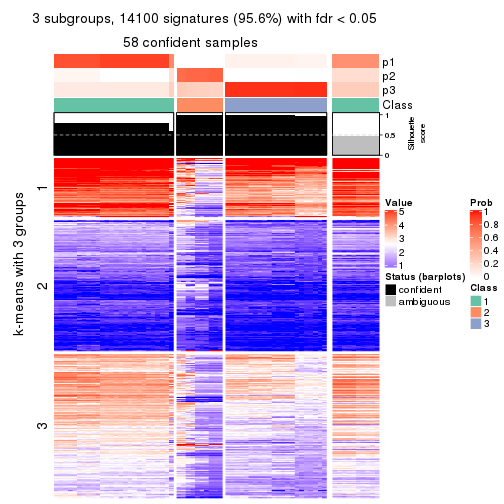
get_signatures(res, k = 4, scale_rows = FALSE)
get_signatures(res, k = 5, scale_rows = FALSE)
get_signatures(res, k = 6, scale_rows = FALSE)
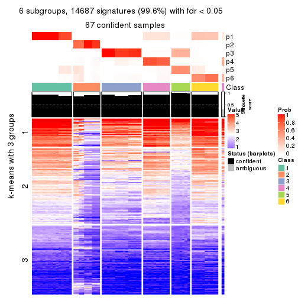
Compare the overlap of signatures from different k:
compare_signatures(res)
get_signature() returns a data frame invisibly. TO get the list of signatures, the function
call should be assigned to a variable explicitly. In following code, if plot argument is set
to FALSE, no heatmap is plotted while only the differential analysis is performed.
# code only for demonstration
tb = get_signature(res, k = ..., plot = FALSE)
An example of the output of tb is:
#> which_row fdr mean_1 mean_2 scaled_mean_1 scaled_mean_2 km
#> 1 38 0.042760348 8.373488 9.131774 -0.5533452 0.5164555 1
#> 2 40 0.018707592 7.106213 8.469186 -0.6173731 0.5762149 1
#> 3 55 0.019134737 10.221463 11.207825 -0.6159697 0.5749050 1
#> 4 59 0.006059896 5.921854 7.869574 -0.6899429 0.6439467 1
#> 5 60 0.018055526 8.928898 10.211722 -0.6204761 0.5791110 1
#> 6 98 0.009384629 15.714769 14.887706 0.6635654 -0.6193277 2
...
The columns in tb are:
which_row: row indices corresponding to the input matrix.fdr: FDR for the differential test. mean_x: The mean value in group x.scaled_mean_x: The mean value in group x after rows are scaled.km: Row groups if k-means clustering is applied to rows.UMAP plot which shows how samples are separated.
dimension_reduction(res, k = 2, method = "UMAP")
dimension_reduction(res, k = 3, method = "UMAP")

dimension_reduction(res, k = 4, method = "UMAP")
dimension_reduction(res, k = 5, method = "UMAP")
dimension_reduction(res, k = 6, method = "UMAP")

Following heatmap shows how subgroups are split when increasing k:
collect_classes(res)
If matrix rows can be associated to genes, consider to use functional_enrichment(res,
...) to perform function enrichment for the signature genes. See this vignette for more detailed explanations.
The object with results only for a single top-value method and a single partition method can be extracted as:
res = res_list["SD", "skmeans"]
# you can also extract it by
# res = res_list["SD:skmeans"]
A summary of res and all the functions that can be applied to it:
res
#> A 'ConsensusPartition' object with k = 2, 3, 4, 5, 6.
#> On a matrix with 14753 rows and 68 columns.
#> Top rows (1000, 2000, 3000, 4000, 5000) are extracted by 'SD' method.
#> Subgroups are detected by 'skmeans' method.
#> Performed in total 1250 partitions by row resampling.
#> Best k for subgroups seems to be 5.
#>
#> Following methods can be applied to this 'ConsensusPartition' object:
#> [1] "cola_report" "collect_classes" "collect_plots"
#> [4] "collect_stats" "colnames" "compare_signatures"
#> [7] "consensus_heatmap" "dimension_reduction" "functional_enrichment"
#> [10] "get_anno_col" "get_anno" "get_classes"
#> [13] "get_consensus" "get_matrix" "get_membership"
#> [16] "get_param" "get_signatures" "get_stats"
#> [19] "is_best_k" "is_stable_k" "membership_heatmap"
#> [22] "ncol" "nrow" "plot_ecdf"
#> [25] "rownames" "select_partition_number" "show"
#> [28] "suggest_best_k" "test_to_known_factors"
collect_plots() function collects all the plots made from res for all k (number of partitions)
into one single page to provide an easy and fast comparison between different k.
collect_plots(res)

The plots are:
k and the heatmap of
predicted classes for each k.k.k.k.All the plots in panels can be made by individual functions and they are plotted later in this section.
select_partition_number() produces several plots showing different
statistics for choosing “optimized” k. There are following statistics:
k;k, the area increased is defined as \(A_k - A_{k-1}\).The detailed explanations of these statistics can be found in the cola vignette.
Generally speaking, lower PAC score, higher mean silhouette score or higher
concordance corresponds to better partition. Rand index and Jaccard index
measure how similar the current partition is compared to partition with k-1.
If they are too similar, we won't accept k is better than k-1.
select_partition_number(res)

The numeric values for all these statistics can be obtained by get_stats().
get_stats(res)
#> k 1-PAC mean_silhouette concordance area_increased Rand Jaccard
#> 2 2 0.651 0.943 0.955 0.4810 0.494 0.494
#> 3 3 1.000 1.000 1.000 0.2849 0.888 0.774
#> 4 4 1.000 0.993 0.997 0.1930 0.879 0.684
#> 5 5 0.900 0.936 0.909 0.0747 0.925 0.719
#> 6 6 0.867 0.936 0.907 0.0416 0.969 0.843
suggest_best_k() suggests the best \(k\) based on these statistics. The rules are as follows:
suggest_best_k(res)
#> [1] 5
#> attr(,"optional")
#> [1] 3 4
There is also optional best \(k\) = 3 4 that is worth to check.
Following shows the table of the partitions (You need to click the show/hide
code output link to see it). The membership matrix (columns with name p*)
is inferred by
clue::cl_consensus()
function with the SE method. Basically the value in the membership matrix
represents the probability to belong to a certain group. The finall class
label for an item is determined with the group with highest probability it
belongs to.
In get_classes() function, the entropy is calculated from the membership
matrix and the silhouette score is calculated from the consensus matrix.
cbind(get_classes(res, k = 2), get_membership(res, k = 2))
#> class entropy silhouette p1 p2
#> SRR562645 1 0.000 1.000 1.000 0.000
#> SRR562646 1 0.000 1.000 1.000 0.000
#> SRR562647 1 0.000 1.000 1.000 0.000
#> SRR562648 1 0.000 1.000 1.000 0.000
#> SRR562649 1 0.000 1.000 1.000 0.000
#> SRR567420 1 0.000 1.000 1.000 0.000
#> SRR567421 1 0.000 1.000 1.000 0.000
#> SRR567422 1 0.000 1.000 1.000 0.000
#> SRR567423 1 0.000 1.000 1.000 0.000
#> SRR567424 1 0.000 1.000 1.000 0.000
#> SRR567425 1 0.000 1.000 1.000 0.000
#> SRR567426 1 0.000 1.000 1.000 0.000
#> SRR567427 1 0.000 1.000 1.000 0.000
#> SRR567428 1 0.000 1.000 1.000 0.000
#> SRR567429 1 0.000 1.000 1.000 0.000
#> SRR567430 1 0.000 1.000 1.000 0.000
#> SRR567431 1 0.000 1.000 1.000 0.000
#> SRR567432 1 0.000 1.000 1.000 0.000
#> SRR567433 1 0.000 1.000 1.000 0.000
#> SRR567434 1 0.000 1.000 1.000 0.000
#> SRR567435 1 0.000 1.000 1.000 0.000
#> SRR567436 1 0.000 1.000 1.000 0.000
#> SRR567437 1 0.000 1.000 1.000 0.000
#> SRR567438 1 0.000 1.000 1.000 0.000
#> SRR567439 1 0.000 1.000 1.000 0.000
#> SRR567440 2 0.730 0.859 0.204 0.796
#> SRR567441 2 0.730 0.859 0.204 0.796
#> SRR567442 2 0.730 0.859 0.204 0.796
#> SRR567443 2 0.730 0.859 0.204 0.796
#> SRR567444 2 0.730 0.859 0.204 0.796
#> SRR567445 1 0.000 1.000 1.000 0.000
#> SRR567446 1 0.000 1.000 1.000 0.000
#> SRR567447 1 0.000 1.000 1.000 0.000
#> SRR567448 1 0.000 1.000 1.000 0.000
#> SRR567449 1 0.000 1.000 1.000 0.000
#> SRR567450 2 0.000 0.894 0.000 1.000
#> SRR567451 2 0.000 0.894 0.000 1.000
#> SRR567452 2 0.000 0.894 0.000 1.000
#> SRR567453 2 0.000 0.894 0.000 1.000
#> SRR567454 2 0.000 0.894 0.000 1.000
#> SRR567455 2 0.000 0.894 0.000 1.000
#> SRR567456 2 0.000 0.894 0.000 1.000
#> SRR567457 1 0.000 1.000 1.000 0.000
#> SRR567458 1 0.000 1.000 1.000 0.000
#> SRR567459 1 0.000 1.000 1.000 0.000
#> SRR567460 1 0.000 1.000 1.000 0.000
#> SRR567461 1 0.000 1.000 1.000 0.000
#> SRR567462 2 0.730 0.859 0.204 0.796
#> SRR567463 2 0.730 0.859 0.204 0.796
#> SRR567464 2 0.730 0.859 0.204 0.796
#> SRR567465 2 0.730 0.859 0.204 0.796
#> SRR567466 2 0.730 0.859 0.204 0.796
#> SRR567467 2 0.722 0.861 0.200 0.800
#> SRR567468 2 0.722 0.861 0.200 0.800
#> SRR567469 2 0.722 0.861 0.200 0.800
#> SRR567470 2 0.722 0.861 0.200 0.800
#> SRR567471 2 0.722 0.861 0.200 0.800
#> SRR835008 1 0.000 1.000 1.000 0.000
#> SRR835009 2 0.000 0.894 0.000 1.000
#> SRR835011 2 0.000 0.894 0.000 1.000
#> SRR835012 2 0.000 0.894 0.000 1.000
#> SRR835013 2 0.000 0.894 0.000 1.000
#> SRR835010 2 0.000 0.894 0.000 1.000
#> SRR835014 2 0.000 0.894 0.000 1.000
#> SRR835015 2 0.000 0.894 0.000 1.000
#> SRR835016 2 0.000 0.894 0.000 1.000
#> SRR835017 2 0.000 0.894 0.000 1.000
#> SRR835018 2 0.000 0.894 0.000 1.000
cbind(get_classes(res, k = 3), get_membership(res, k = 3))
#> class entropy silhouette p1 p2 p3
#> SRR562645 1 0 1 1 0 0
#> SRR562646 1 0 1 1 0 0
#> SRR562647 1 0 1 1 0 0
#> SRR562648 1 0 1 1 0 0
#> SRR562649 1 0 1 1 0 0
#> SRR567420 1 0 1 1 0 0
#> SRR567421 1 0 1 1 0 0
#> SRR567422 1 0 1 1 0 0
#> SRR567423 1 0 1 1 0 0
#> SRR567424 1 0 1 1 0 0
#> SRR567425 1 0 1 1 0 0
#> SRR567426 1 0 1 1 0 0
#> SRR567427 1 0 1 1 0 0
#> SRR567428 1 0 1 1 0 0
#> SRR567429 1 0 1 1 0 0
#> SRR567430 1 0 1 1 0 0
#> SRR567431 1 0 1 1 0 0
#> SRR567432 1 0 1 1 0 0
#> SRR567433 1 0 1 1 0 0
#> SRR567434 1 0 1 1 0 0
#> SRR567435 1 0 1 1 0 0
#> SRR567436 1 0 1 1 0 0
#> SRR567437 1 0 1 1 0 0
#> SRR567438 1 0 1 1 0 0
#> SRR567439 1 0 1 1 0 0
#> SRR567440 3 0 1 0 0 1
#> SRR567441 3 0 1 0 0 1
#> SRR567442 3 0 1 0 0 1
#> SRR567443 3 0 1 0 0 1
#> SRR567444 3 0 1 0 0 1
#> SRR567445 1 0 1 1 0 0
#> SRR567446 1 0 1 1 0 0
#> SRR567447 1 0 1 1 0 0
#> SRR567448 1 0 1 1 0 0
#> SRR567449 1 0 1 1 0 0
#> SRR567450 2 0 1 0 1 0
#> SRR567451 2 0 1 0 1 0
#> SRR567452 2 0 1 0 1 0
#> SRR567453 2 0 1 0 1 0
#> SRR567454 2 0 1 0 1 0
#> SRR567455 2 0 1 0 1 0
#> SRR567456 2 0 1 0 1 0
#> SRR567457 1 0 1 1 0 0
#> SRR567458 1 0 1 1 0 0
#> SRR567459 1 0 1 1 0 0
#> SRR567460 1 0 1 1 0 0
#> SRR567461 1 0 1 1 0 0
#> SRR567462 3 0 1 0 0 1
#> SRR567463 3 0 1 0 0 1
#> SRR567464 3 0 1 0 0 1
#> SRR567465 3 0 1 0 0 1
#> SRR567466 3 0 1 0 0 1
#> SRR567467 3 0 1 0 0 1
#> SRR567468 3 0 1 0 0 1
#> SRR567469 3 0 1 0 0 1
#> SRR567470 3 0 1 0 0 1
#> SRR567471 3 0 1 0 0 1
#> SRR835008 1 0 1 1 0 0
#> SRR835009 2 0 1 0 1 0
#> SRR835011 2 0 1 0 1 0
#> SRR835012 2 0 1 0 1 0
#> SRR835013 2 0 1 0 1 0
#> SRR835010 2 0 1 0 1 0
#> SRR835014 2 0 1 0 1 0
#> SRR835015 2 0 1 0 1 0
#> SRR835016 2 0 1 0 1 0
#> SRR835017 2 0 1 0 1 0
#> SRR835018 2 0 1 0 1 0
cbind(get_classes(res, k = 4), get_membership(res, k = 4))
#> class entropy silhouette p1 p2 p3 p4
#> SRR562645 4 0.000 0.976 0.0 0 0 1.0
#> SRR562646 4 0.000 0.976 0.0 0 0 1.0
#> SRR562647 4 0.000 0.976 0.0 0 0 1.0
#> SRR562648 4 0.000 0.976 0.0 0 0 1.0
#> SRR562649 4 0.000 0.976 0.0 0 0 1.0
#> SRR567420 4 0.000 0.976 0.0 0 0 1.0
#> SRR567421 4 0.000 0.976 0.0 0 0 1.0
#> SRR567422 4 0.000 0.976 0.0 0 0 1.0
#> SRR567423 4 0.000 0.976 0.0 0 0 1.0
#> SRR567424 4 0.000 0.976 0.0 0 0 1.0
#> SRR567425 1 0.000 1.000 1.0 0 0 0.0
#> SRR567426 1 0.000 1.000 1.0 0 0 0.0
#> SRR567427 1 0.000 1.000 1.0 0 0 0.0
#> SRR567428 1 0.000 1.000 1.0 0 0 0.0
#> SRR567429 1 0.000 1.000 1.0 0 0 0.0
#> SRR567430 1 0.000 1.000 1.0 0 0 0.0
#> SRR567431 1 0.000 1.000 1.0 0 0 0.0
#> SRR567432 1 0.000 1.000 1.0 0 0 0.0
#> SRR567433 1 0.000 1.000 1.0 0 0 0.0
#> SRR567434 1 0.000 1.000 1.0 0 0 0.0
#> SRR567435 1 0.000 1.000 1.0 0 0 0.0
#> SRR567436 1 0.000 1.000 1.0 0 0 0.0
#> SRR567437 1 0.000 1.000 1.0 0 0 0.0
#> SRR567438 1 0.000 1.000 1.0 0 0 0.0
#> SRR567439 1 0.000 1.000 1.0 0 0 0.0
#> SRR567440 3 0.000 1.000 0.0 0 1 0.0
#> SRR567441 3 0.000 1.000 0.0 0 1 0.0
#> SRR567442 3 0.000 1.000 0.0 0 1 0.0
#> SRR567443 3 0.000 1.000 0.0 0 1 0.0
#> SRR567444 3 0.000 1.000 0.0 0 1 0.0
#> SRR567445 1 0.000 1.000 1.0 0 0 0.0
#> SRR567446 1 0.000 1.000 1.0 0 0 0.0
#> SRR567447 1 0.000 1.000 1.0 0 0 0.0
#> SRR567448 1 0.000 1.000 1.0 0 0 0.0
#> SRR567449 1 0.000 1.000 1.0 0 0 0.0
#> SRR567450 2 0.000 1.000 0.0 1 0 0.0
#> SRR567451 2 0.000 1.000 0.0 1 0 0.0
#> SRR567452 2 0.000 1.000 0.0 1 0 0.0
#> SRR567453 2 0.000 1.000 0.0 1 0 0.0
#> SRR567454 2 0.000 1.000 0.0 1 0 0.0
#> SRR567455 2 0.000 1.000 0.0 1 0 0.0
#> SRR567456 2 0.000 1.000 0.0 1 0 0.0
#> SRR567457 1 0.000 1.000 1.0 0 0 0.0
#> SRR567458 1 0.000 1.000 1.0 0 0 0.0
#> SRR567459 1 0.000 1.000 1.0 0 0 0.0
#> SRR567460 1 0.000 1.000 1.0 0 0 0.0
#> SRR567461 1 0.000 1.000 1.0 0 0 0.0
#> SRR567462 3 0.000 1.000 0.0 0 1 0.0
#> SRR567463 3 0.000 1.000 0.0 0 1 0.0
#> SRR567464 3 0.000 1.000 0.0 0 1 0.0
#> SRR567465 3 0.000 1.000 0.0 0 1 0.0
#> SRR567466 3 0.000 1.000 0.0 0 1 0.0
#> SRR567467 3 0.000 1.000 0.0 0 1 0.0
#> SRR567468 3 0.000 1.000 0.0 0 1 0.0
#> SRR567469 3 0.000 1.000 0.0 0 1 0.0
#> SRR567470 3 0.000 1.000 0.0 0 1 0.0
#> SRR567471 3 0.000 1.000 0.0 0 1 0.0
#> SRR835008 4 0.361 0.750 0.2 0 0 0.8
#> SRR835009 2 0.000 1.000 0.0 1 0 0.0
#> SRR835011 2 0.000 1.000 0.0 1 0 0.0
#> SRR835012 2 0.000 1.000 0.0 1 0 0.0
#> SRR835013 2 0.000 1.000 0.0 1 0 0.0
#> SRR835010 2 0.000 1.000 0.0 1 0 0.0
#> SRR835014 2 0.000 1.000 0.0 1 0 0.0
#> SRR835015 2 0.000 1.000 0.0 1 0 0.0
#> SRR835016 2 0.000 1.000 0.0 1 0 0.0
#> SRR835017 2 0.000 1.000 0.0 1 0 0.0
#> SRR835018 2 0.000 1.000 0.0 1 0 0.0
cbind(get_classes(res, k = 5), get_membership(res, k = 5))
#> class entropy silhouette p1 p2 p3 p4 p5
#> SRR562645 4 0.000 1.000 0.000 0.00 0.000 1.000 0.000
#> SRR562646 4 0.000 1.000 0.000 0.00 0.000 1.000 0.000
#> SRR562647 4 0.000 1.000 0.000 0.00 0.000 1.000 0.000
#> SRR562648 4 0.000 1.000 0.000 0.00 0.000 1.000 0.000
#> SRR562649 4 0.000 1.000 0.000 0.00 0.000 1.000 0.000
#> SRR567420 4 0.000 1.000 0.000 0.00 0.000 1.000 0.000
#> SRR567421 4 0.000 1.000 0.000 0.00 0.000 1.000 0.000
#> SRR567422 4 0.000 1.000 0.000 0.00 0.000 1.000 0.000
#> SRR567423 4 0.000 1.000 0.000 0.00 0.000 1.000 0.000
#> SRR567424 4 0.000 1.000 0.000 0.00 0.000 1.000 0.000
#> SRR567425 1 0.397 1.000 0.664 0.00 0.000 0.000 0.336
#> SRR567426 1 0.397 1.000 0.664 0.00 0.000 0.000 0.336
#> SRR567427 1 0.397 1.000 0.664 0.00 0.000 0.000 0.336
#> SRR567428 1 0.397 1.000 0.664 0.00 0.000 0.000 0.336
#> SRR567429 1 0.397 1.000 0.664 0.00 0.000 0.000 0.336
#> SRR567430 1 0.397 1.000 0.664 0.00 0.000 0.000 0.336
#> SRR567431 1 0.397 1.000 0.664 0.00 0.000 0.000 0.336
#> SRR567432 1 0.397 1.000 0.664 0.00 0.000 0.000 0.336
#> SRR567433 1 0.397 1.000 0.664 0.00 0.000 0.000 0.336
#> SRR567434 1 0.397 1.000 0.664 0.00 0.000 0.000 0.336
#> SRR567435 1 0.397 1.000 0.664 0.00 0.000 0.000 0.336
#> SRR567436 1 0.397 1.000 0.664 0.00 0.000 0.000 0.336
#> SRR567437 1 0.397 1.000 0.664 0.00 0.000 0.000 0.336
#> SRR567438 1 0.397 1.000 0.664 0.00 0.000 0.000 0.336
#> SRR567439 1 0.397 1.000 0.664 0.00 0.000 0.000 0.336
#> SRR567440 3 0.000 0.996 0.000 0.00 1.000 0.000 0.000
#> SRR567441 3 0.000 0.996 0.000 0.00 1.000 0.000 0.000
#> SRR567442 3 0.000 0.996 0.000 0.00 1.000 0.000 0.000
#> SRR567443 3 0.000 0.996 0.000 0.00 1.000 0.000 0.000
#> SRR567444 3 0.000 0.996 0.000 0.00 1.000 0.000 0.000
#> SRR567445 5 0.000 0.924 0.000 0.00 0.000 0.000 1.000
#> SRR567446 5 0.000 0.924 0.000 0.00 0.000 0.000 1.000
#> SRR567447 5 0.000 0.924 0.000 0.00 0.000 0.000 1.000
#> SRR567448 5 0.000 0.924 0.000 0.00 0.000 0.000 1.000
#> SRR567449 5 0.000 0.924 0.000 0.00 0.000 0.000 1.000
#> SRR567450 2 0.389 0.824 0.320 0.68 0.000 0.000 0.000
#> SRR567451 2 0.389 0.824 0.320 0.68 0.000 0.000 0.000
#> SRR567452 2 0.389 0.824 0.320 0.68 0.000 0.000 0.000
#> SRR567453 2 0.389 0.824 0.320 0.68 0.000 0.000 0.000
#> SRR567454 2 0.389 0.824 0.320 0.68 0.000 0.000 0.000
#> SRR567455 2 0.389 0.824 0.320 0.68 0.000 0.000 0.000
#> SRR567456 2 0.389 0.824 0.320 0.68 0.000 0.000 0.000
#> SRR567457 5 0.000 0.924 0.000 0.00 0.000 0.000 1.000
#> SRR567458 5 0.000 0.924 0.000 0.00 0.000 0.000 1.000
#> SRR567459 5 0.000 0.924 0.000 0.00 0.000 0.000 1.000
#> SRR567460 5 0.000 0.924 0.000 0.00 0.000 0.000 1.000
#> SRR567461 5 0.000 0.924 0.000 0.00 0.000 0.000 1.000
#> SRR567462 3 0.051 0.991 0.016 0.00 0.984 0.000 0.000
#> SRR567463 3 0.051 0.991 0.016 0.00 0.984 0.000 0.000
#> SRR567464 3 0.051 0.991 0.016 0.00 0.984 0.000 0.000
#> SRR567465 3 0.051 0.991 0.016 0.00 0.984 0.000 0.000
#> SRR567466 3 0.051 0.991 0.016 0.00 0.984 0.000 0.000
#> SRR567467 3 0.000 0.996 0.000 0.00 1.000 0.000 0.000
#> SRR567468 3 0.000 0.996 0.000 0.00 1.000 0.000 0.000
#> SRR567469 3 0.000 0.996 0.000 0.00 1.000 0.000 0.000
#> SRR567470 3 0.000 0.996 0.000 0.00 1.000 0.000 0.000
#> SRR567471 3 0.000 0.996 0.000 0.00 1.000 0.000 0.000
#> SRR835008 5 0.430 -0.082 0.000 0.00 0.000 0.488 0.512
#> SRR835009 2 0.000 0.881 0.000 1.00 0.000 0.000 0.000
#> SRR835011 2 0.000 0.881 0.000 1.00 0.000 0.000 0.000
#> SRR835012 2 0.000 0.881 0.000 1.00 0.000 0.000 0.000
#> SRR835013 2 0.000 0.881 0.000 1.00 0.000 0.000 0.000
#> SRR835010 2 0.000 0.881 0.000 1.00 0.000 0.000 0.000
#> SRR835014 2 0.000 0.881 0.000 1.00 0.000 0.000 0.000
#> SRR835015 2 0.000 0.881 0.000 1.00 0.000 0.000 0.000
#> SRR835016 2 0.000 0.881 0.000 1.00 0.000 0.000 0.000
#> SRR835017 2 0.000 0.881 0.000 1.00 0.000 0.000 0.000
#> SRR835018 2 0.000 0.881 0.000 1.00 0.000 0.000 0.000
cbind(get_classes(res, k = 6), get_membership(res, k = 6))
#> class entropy silhouette p1 p2 p3 p4 p5 p6
#> SRR562645 4 0.0000 1.000 0.000 0.000 0.000 1.000 0.000 0.000
#> SRR562646 4 0.0000 1.000 0.000 0.000 0.000 1.000 0.000 0.000
#> SRR562647 4 0.0000 1.000 0.000 0.000 0.000 1.000 0.000 0.000
#> SRR562648 4 0.0000 1.000 0.000 0.000 0.000 1.000 0.000 0.000
#> SRR562649 4 0.0000 1.000 0.000 0.000 0.000 1.000 0.000 0.000
#> SRR567420 4 0.0000 1.000 0.000 0.000 0.000 1.000 0.000 0.000
#> SRR567421 4 0.0000 1.000 0.000 0.000 0.000 1.000 0.000 0.000
#> SRR567422 4 0.0000 1.000 0.000 0.000 0.000 1.000 0.000 0.000
#> SRR567423 4 0.0000 1.000 0.000 0.000 0.000 1.000 0.000 0.000
#> SRR567424 4 0.0000 1.000 0.000 0.000 0.000 1.000 0.000 0.000
#> SRR567425 1 0.0632 0.989 0.976 0.000 0.000 0.000 0.000 0.024
#> SRR567426 1 0.0632 0.989 0.976 0.000 0.000 0.000 0.000 0.024
#> SRR567427 1 0.0632 0.989 0.976 0.000 0.000 0.000 0.000 0.024
#> SRR567428 1 0.0632 0.989 0.976 0.000 0.000 0.000 0.000 0.024
#> SRR567429 1 0.0632 0.989 0.976 0.000 0.000 0.000 0.000 0.024
#> SRR567430 1 0.0632 0.989 0.976 0.000 0.000 0.000 0.000 0.024
#> SRR567431 1 0.0632 0.989 0.976 0.000 0.000 0.000 0.000 0.024
#> SRR567432 1 0.0632 0.989 0.976 0.000 0.000 0.000 0.000 0.024
#> SRR567433 1 0.0632 0.989 0.976 0.000 0.000 0.000 0.000 0.024
#> SRR567434 1 0.0632 0.989 0.976 0.000 0.000 0.000 0.000 0.024
#> SRR567435 1 0.0146 0.977 0.996 0.000 0.000 0.000 0.004 0.000
#> SRR567436 1 0.0146 0.977 0.996 0.000 0.000 0.000 0.004 0.000
#> SRR567437 1 0.0146 0.977 0.996 0.000 0.000 0.000 0.004 0.000
#> SRR567438 1 0.0146 0.977 0.996 0.000 0.000 0.000 0.004 0.000
#> SRR567439 1 0.0146 0.977 0.996 0.000 0.000 0.000 0.004 0.000
#> SRR567440 3 0.0000 0.867 0.000 0.000 1.000 0.000 0.000 0.000
#> SRR567441 3 0.0000 0.867 0.000 0.000 1.000 0.000 0.000 0.000
#> SRR567442 3 0.0000 0.867 0.000 0.000 1.000 0.000 0.000 0.000
#> SRR567443 3 0.0000 0.867 0.000 0.000 1.000 0.000 0.000 0.000
#> SRR567444 3 0.0000 0.867 0.000 0.000 1.000 0.000 0.000 0.000
#> SRR567445 6 0.2416 0.946 0.156 0.000 0.000 0.000 0.000 0.844
#> SRR567446 6 0.2416 0.946 0.156 0.000 0.000 0.000 0.000 0.844
#> SRR567447 6 0.2416 0.946 0.156 0.000 0.000 0.000 0.000 0.844
#> SRR567448 6 0.2416 0.946 0.156 0.000 0.000 0.000 0.000 0.844
#> SRR567449 6 0.2416 0.946 0.156 0.000 0.000 0.000 0.000 0.844
#> SRR567450 5 0.3244 1.000 0.000 0.268 0.000 0.000 0.732 0.000
#> SRR567451 5 0.3244 1.000 0.000 0.268 0.000 0.000 0.732 0.000
#> SRR567452 5 0.3244 1.000 0.000 0.268 0.000 0.000 0.732 0.000
#> SRR567453 5 0.3244 1.000 0.000 0.268 0.000 0.000 0.732 0.000
#> SRR567454 5 0.3244 1.000 0.000 0.268 0.000 0.000 0.732 0.000
#> SRR567455 5 0.3244 1.000 0.000 0.268 0.000 0.000 0.732 0.000
#> SRR567456 5 0.3244 1.000 0.000 0.268 0.000 0.000 0.732 0.000
#> SRR567457 6 0.2416 0.946 0.156 0.000 0.000 0.000 0.000 0.844
#> SRR567458 6 0.2416 0.946 0.156 0.000 0.000 0.000 0.000 0.844
#> SRR567459 6 0.2416 0.946 0.156 0.000 0.000 0.000 0.000 0.844
#> SRR567460 6 0.2416 0.946 0.156 0.000 0.000 0.000 0.000 0.844
#> SRR567461 6 0.2416 0.946 0.156 0.000 0.000 0.000 0.000 0.844
#> SRR567462 3 0.4634 0.772 0.000 0.000 0.688 0.000 0.188 0.124
#> SRR567463 3 0.4634 0.772 0.000 0.000 0.688 0.000 0.188 0.124
#> SRR567464 3 0.4634 0.772 0.000 0.000 0.688 0.000 0.188 0.124
#> SRR567465 3 0.4634 0.772 0.000 0.000 0.688 0.000 0.188 0.124
#> SRR567466 3 0.4634 0.772 0.000 0.000 0.688 0.000 0.188 0.124
#> SRR567467 3 0.2277 0.848 0.000 0.000 0.892 0.000 0.076 0.032
#> SRR567468 3 0.2277 0.848 0.000 0.000 0.892 0.000 0.076 0.032
#> SRR567469 3 0.2277 0.848 0.000 0.000 0.892 0.000 0.076 0.032
#> SRR567470 3 0.2277 0.848 0.000 0.000 0.892 0.000 0.076 0.032
#> SRR567471 3 0.2277 0.848 0.000 0.000 0.892 0.000 0.076 0.032
#> SRR835008 6 0.3854 0.094 0.000 0.000 0.000 0.464 0.000 0.536
#> SRR835009 2 0.0000 0.990 0.000 1.000 0.000 0.000 0.000 0.000
#> SRR835011 2 0.0260 0.991 0.000 0.992 0.000 0.000 0.008 0.000
#> SRR835012 2 0.0260 0.991 0.000 0.992 0.000 0.000 0.008 0.000
#> SRR835013 2 0.0260 0.991 0.000 0.992 0.000 0.000 0.008 0.000
#> SRR835010 2 0.0000 0.990 0.000 1.000 0.000 0.000 0.000 0.000
#> SRR835014 2 0.0000 0.990 0.000 1.000 0.000 0.000 0.000 0.000
#> SRR835015 2 0.0000 0.990 0.000 1.000 0.000 0.000 0.000 0.000
#> SRR835016 2 0.0458 0.987 0.000 0.984 0.000 0.000 0.016 0.000
#> SRR835017 2 0.0458 0.987 0.000 0.984 0.000 0.000 0.016 0.000
#> SRR835018 2 0.0458 0.987 0.000 0.984 0.000 0.000 0.016 0.000
Heatmaps for the consensus matrix. It visualizes the probability of two samples to be in a same group.
consensus_heatmap(res, k = 2)

consensus_heatmap(res, k = 3)
consensus_heatmap(res, k = 4)
consensus_heatmap(res, k = 5)
consensus_heatmap(res, k = 6)
Heatmaps for the membership of samples in all partitions to see how consistent they are:
membership_heatmap(res, k = 2)
membership_heatmap(res, k = 3)
membership_heatmap(res, k = 4)
membership_heatmap(res, k = 5)
membership_heatmap(res, k = 6)
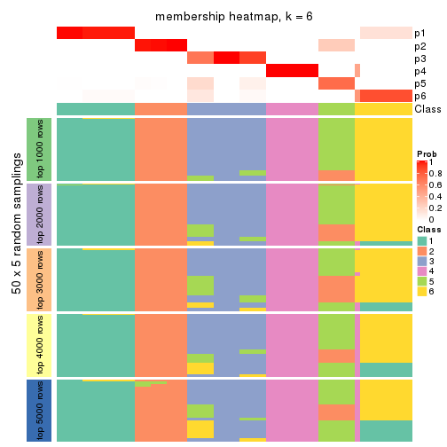
As soon as we have had the classes for columns, we can look for signatures which are significantly different between classes which can be candidate marks for certain classes. Following are the heatmaps for signatures.
Signature heatmaps where rows are scaled:
get_signatures(res, k = 2)
get_signatures(res, k = 3)
get_signatures(res, k = 4)
get_signatures(res, k = 5)
get_signatures(res, k = 6)
Signature heatmaps where rows are not scaled:
get_signatures(res, k = 2, scale_rows = FALSE)
get_signatures(res, k = 3, scale_rows = FALSE)
get_signatures(res, k = 4, scale_rows = FALSE)
get_signatures(res, k = 5, scale_rows = FALSE)
get_signatures(res, k = 6, scale_rows = FALSE)
Compare the overlap of signatures from different k:
compare_signatures(res)
get_signature() returns a data frame invisibly. TO get the list of signatures, the function
call should be assigned to a variable explicitly. In following code, if plot argument is set
to FALSE, no heatmap is plotted while only the differential analysis is performed.
# code only for demonstration
tb = get_signature(res, k = ..., plot = FALSE)
An example of the output of tb is:
#> which_row fdr mean_1 mean_2 scaled_mean_1 scaled_mean_2 km
#> 1 38 0.042760348 8.373488 9.131774 -0.5533452 0.5164555 1
#> 2 40 0.018707592 7.106213 8.469186 -0.6173731 0.5762149 1
#> 3 55 0.019134737 10.221463 11.207825 -0.6159697 0.5749050 1
#> 4 59 0.006059896 5.921854 7.869574 -0.6899429 0.6439467 1
#> 5 60 0.018055526 8.928898 10.211722 -0.6204761 0.5791110 1
#> 6 98 0.009384629 15.714769 14.887706 0.6635654 -0.6193277 2
...
The columns in tb are:
which_row: row indices corresponding to the input matrix.fdr: FDR for the differential test. mean_x: The mean value in group x.scaled_mean_x: The mean value in group x after rows are scaled.km: Row groups if k-means clustering is applied to rows.UMAP plot which shows how samples are separated.
dimension_reduction(res, k = 2, method = "UMAP")
dimension_reduction(res, k = 3, method = "UMAP")
dimension_reduction(res, k = 4, method = "UMAP")
dimension_reduction(res, k = 5, method = "UMAP")
dimension_reduction(res, k = 6, method = "UMAP")
Following heatmap shows how subgroups are split when increasing k:
collect_classes(res)
If matrix rows can be associated to genes, consider to use functional_enrichment(res,
...) to perform function enrichment for the signature genes. See this vignette for more detailed explanations.
The object with results only for a single top-value method and a single partition method can be extracted as:
res = res_list["SD", "pam"]
# you can also extract it by
# res = res_list["SD:pam"]
A summary of res and all the functions that can be applied to it:
res
#> A 'ConsensusPartition' object with k = 2, 3, 4, 5, 6.
#> On a matrix with 14753 rows and 68 columns.
#> Top rows (1000, 2000, 3000, 4000, 5000) are extracted by 'SD' method.
#> Subgroups are detected by 'pam' method.
#> Performed in total 1250 partitions by row resampling.
#> Best k for subgroups seems to be 6.
#>
#> Following methods can be applied to this 'ConsensusPartition' object:
#> [1] "cola_report" "collect_classes" "collect_plots"
#> [4] "collect_stats" "colnames" "compare_signatures"
#> [7] "consensus_heatmap" "dimension_reduction" "functional_enrichment"
#> [10] "get_anno_col" "get_anno" "get_classes"
#> [13] "get_consensus" "get_matrix" "get_membership"
#> [16] "get_param" "get_signatures" "get_stats"
#> [19] "is_best_k" "is_stable_k" "membership_heatmap"
#> [22] "ncol" "nrow" "plot_ecdf"
#> [25] "rownames" "select_partition_number" "show"
#> [28] "suggest_best_k" "test_to_known_factors"
collect_plots() function collects all the plots made from res for all k (number of partitions)
into one single page to provide an easy and fast comparison between different k.
collect_plots(res)
The plots are:
k and the heatmap of
predicted classes for each k.k.k.k.All the plots in panels can be made by individual functions and they are plotted later in this section.
select_partition_number() produces several plots showing different
statistics for choosing “optimized” k. There are following statistics:
k;k, the area increased is defined as \(A_k - A_{k-1}\).The detailed explanations of these statistics can be found in the cola vignette.
Generally speaking, lower PAC score, higher mean silhouette score or higher
concordance corresponds to better partition. Rand index and Jaccard index
measure how similar the current partition is compared to partition with k-1.
If they are too similar, we won't accept k is better than k-1.
select_partition_number(res)
The numeric values for all these statistics can be obtained by get_stats().
get_stats(res)
#> k 1-PAC mean_silhouette concordance area_increased Rand Jaccard
#> 2 2 0.556 0.684 0.842 0.3778 0.745 0.745
#> 3 3 1.000 0.998 0.999 0.6111 0.647 0.526
#> 4 4 1.000 0.992 0.997 0.1867 0.876 0.688
#> 5 5 1.000 0.963 0.985 0.0653 0.941 0.791
#> 6 6 1.000 0.964 0.985 0.0859 0.934 0.714
suggest_best_k() suggests the best \(k\) based on these statistics. The rules are as follows:
suggest_best_k(res)
#> [1] 6
#> attr(,"optional")
#> [1] 3 4 5
There is also optional best \(k\) = 3 4 5 that is worth to check.
Following shows the table of the partitions (You need to click the show/hide
code output link to see it). The membership matrix (columns with name p*)
is inferred by
clue::cl_consensus()
function with the SE method. Basically the value in the membership matrix
represents the probability to belong to a certain group. The finall class
label for an item is determined with the group with highest probability it
belongs to.
In get_classes() function, the entropy is calculated from the membership
matrix and the silhouette score is calculated from the consensus matrix.
cbind(get_classes(res, k = 2), get_membership(res, k = 2))
#> class entropy silhouette p1 p2
#> SRR562645 1 1 0.771 0.512 0.488
#> SRR562646 1 1 0.771 0.512 0.488
#> SRR562647 1 1 0.771 0.512 0.488
#> SRR562648 1 1 0.771 0.512 0.488
#> SRR562649 1 1 0.771 0.512 0.488
#> SRR567420 1 1 0.771 0.512 0.488
#> SRR567421 1 1 0.771 0.512 0.488
#> SRR567422 1 1 0.771 0.512 0.488
#> SRR567423 1 1 0.771 0.512 0.488
#> SRR567424 1 1 0.771 0.512 0.488
#> SRR567425 1 1 0.771 0.512 0.488
#> SRR567426 1 1 0.771 0.512 0.488
#> SRR567427 1 1 0.771 0.512 0.488
#> SRR567428 1 1 0.771 0.512 0.488
#> SRR567429 1 1 0.771 0.512 0.488
#> SRR567430 1 1 0.771 0.512 0.488
#> SRR567431 1 1 0.771 0.512 0.488
#> SRR567432 1 1 0.771 0.512 0.488
#> SRR567433 1 1 0.771 0.512 0.488
#> SRR567434 1 1 0.771 0.512 0.488
#> SRR567435 1 1 0.771 0.512 0.488
#> SRR567436 1 1 0.771 0.512 0.488
#> SRR567437 1 1 0.771 0.512 0.488
#> SRR567438 1 1 0.771 0.512 0.488
#> SRR567439 1 1 0.771 0.512 0.488
#> SRR567440 1 0 0.398 1.000 0.000
#> SRR567441 1 0 0.398 1.000 0.000
#> SRR567442 1 0 0.398 1.000 0.000
#> SRR567443 1 0 0.398 1.000 0.000
#> SRR567444 1 0 0.398 1.000 0.000
#> SRR567445 1 1 0.771 0.512 0.488
#> SRR567446 1 1 0.771 0.512 0.488
#> SRR567447 1 1 0.771 0.512 0.488
#> SRR567448 1 1 0.771 0.512 0.488
#> SRR567449 1 1 0.771 0.512 0.488
#> SRR567450 1 0 0.398 1.000 0.000
#> SRR567451 1 0 0.398 1.000 0.000
#> SRR567452 1 0 0.398 1.000 0.000
#> SRR567453 1 0 0.398 1.000 0.000
#> SRR567454 1 0 0.398 1.000 0.000
#> SRR567455 1 0 0.398 1.000 0.000
#> SRR567456 1 0 0.398 1.000 0.000
#> SRR567457 1 1 0.771 0.512 0.488
#> SRR567458 1 1 0.771 0.512 0.488
#> SRR567459 1 1 0.771 0.512 0.488
#> SRR567460 1 1 0.771 0.512 0.488
#> SRR567461 1 1 0.771 0.512 0.488
#> SRR567462 1 0 0.398 1.000 0.000
#> SRR567463 1 0 0.398 1.000 0.000
#> SRR567464 1 0 0.398 1.000 0.000
#> SRR567465 1 0 0.398 1.000 0.000
#> SRR567466 1 0 0.398 1.000 0.000
#> SRR567467 1 0 0.398 1.000 0.000
#> SRR567468 1 0 0.398 1.000 0.000
#> SRR567469 1 0 0.398 1.000 0.000
#> SRR567470 1 0 0.398 1.000 0.000
#> SRR567471 1 0 0.398 1.000 0.000
#> SRR835008 1 1 0.771 0.512 0.488
#> SRR835009 2 1 1.000 0.488 0.512
#> SRR835011 2 1 1.000 0.488 0.512
#> SRR835012 2 1 1.000 0.488 0.512
#> SRR835013 2 1 1.000 0.488 0.512
#> SRR835010 2 1 1.000 0.488 0.512
#> SRR835014 2 1 1.000 0.488 0.512
#> SRR835015 2 1 1.000 0.488 0.512
#> SRR835016 2 1 1.000 0.488 0.512
#> SRR835017 2 1 1.000 0.488 0.512
#> SRR835018 2 1 1.000 0.488 0.512
cbind(get_classes(res, k = 3), get_membership(res, k = 3))
#> class entropy silhouette p1 p2 p3
#> SRR562645 1 0.0000 0.998 1.000 0 0.000
#> SRR562646 1 0.0000 0.998 1.000 0 0.000
#> SRR562647 1 0.0000 0.998 1.000 0 0.000
#> SRR562648 1 0.0000 0.998 1.000 0 0.000
#> SRR562649 1 0.0000 0.998 1.000 0 0.000
#> SRR567420 1 0.0237 0.994 0.996 0 0.004
#> SRR567421 1 0.0592 0.987 0.988 0 0.012
#> SRR567422 1 0.0892 0.979 0.980 0 0.020
#> SRR567423 1 0.0747 0.983 0.984 0 0.016
#> SRR567424 1 0.0747 0.983 0.984 0 0.016
#> SRR567425 1 0.0000 0.998 1.000 0 0.000
#> SRR567426 1 0.0000 0.998 1.000 0 0.000
#> SRR567427 1 0.0000 0.998 1.000 0 0.000
#> SRR567428 1 0.0000 0.998 1.000 0 0.000
#> SRR567429 1 0.0000 0.998 1.000 0 0.000
#> SRR567430 1 0.0000 0.998 1.000 0 0.000
#> SRR567431 1 0.0000 0.998 1.000 0 0.000
#> SRR567432 1 0.0000 0.998 1.000 0 0.000
#> SRR567433 1 0.0000 0.998 1.000 0 0.000
#> SRR567434 1 0.0000 0.998 1.000 0 0.000
#> SRR567435 1 0.0000 0.998 1.000 0 0.000
#> SRR567436 1 0.0000 0.998 1.000 0 0.000
#> SRR567437 1 0.0000 0.998 1.000 0 0.000
#> SRR567438 1 0.0000 0.998 1.000 0 0.000
#> SRR567439 1 0.0000 0.998 1.000 0 0.000
#> SRR567440 3 0.0000 1.000 0.000 0 1.000
#> SRR567441 3 0.0000 1.000 0.000 0 1.000
#> SRR567442 3 0.0000 1.000 0.000 0 1.000
#> SRR567443 3 0.0000 1.000 0.000 0 1.000
#> SRR567444 3 0.0000 1.000 0.000 0 1.000
#> SRR567445 1 0.0000 0.998 1.000 0 0.000
#> SRR567446 1 0.0000 0.998 1.000 0 0.000
#> SRR567447 1 0.0000 0.998 1.000 0 0.000
#> SRR567448 1 0.0000 0.998 1.000 0 0.000
#> SRR567449 1 0.0000 0.998 1.000 0 0.000
#> SRR567450 3 0.0000 1.000 0.000 0 1.000
#> SRR567451 3 0.0000 1.000 0.000 0 1.000
#> SRR567452 3 0.0000 1.000 0.000 0 1.000
#> SRR567453 3 0.0000 1.000 0.000 0 1.000
#> SRR567454 3 0.0000 1.000 0.000 0 1.000
#> SRR567455 3 0.0000 1.000 0.000 0 1.000
#> SRR567456 3 0.0000 1.000 0.000 0 1.000
#> SRR567457 1 0.0000 0.998 1.000 0 0.000
#> SRR567458 1 0.0000 0.998 1.000 0 0.000
#> SRR567459 1 0.0000 0.998 1.000 0 0.000
#> SRR567460 1 0.0000 0.998 1.000 0 0.000
#> SRR567461 1 0.0000 0.998 1.000 0 0.000
#> SRR567462 3 0.0000 1.000 0.000 0 1.000
#> SRR567463 3 0.0000 1.000 0.000 0 1.000
#> SRR567464 3 0.0000 1.000 0.000 0 1.000
#> SRR567465 3 0.0000 1.000 0.000 0 1.000
#> SRR567466 3 0.0000 1.000 0.000 0 1.000
#> SRR567467 3 0.0000 1.000 0.000 0 1.000
#> SRR567468 3 0.0000 1.000 0.000 0 1.000
#> SRR567469 3 0.0000 1.000 0.000 0 1.000
#> SRR567470 3 0.0000 1.000 0.000 0 1.000
#> SRR567471 3 0.0000 1.000 0.000 0 1.000
#> SRR835008 3 0.0000 1.000 0.000 0 1.000
#> SRR835009 2 0.0000 1.000 0.000 1 0.000
#> SRR835011 2 0.0000 1.000 0.000 1 0.000
#> SRR835012 2 0.0000 1.000 0.000 1 0.000
#> SRR835013 2 0.0000 1.000 0.000 1 0.000
#> SRR835010 2 0.0000 1.000 0.000 1 0.000
#> SRR835014 2 0.0000 1.000 0.000 1 0.000
#> SRR835015 2 0.0000 1.000 0.000 1 0.000
#> SRR835016 2 0.0000 1.000 0.000 1 0.000
#> SRR835017 2 0.0000 1.000 0.000 1 0.000
#> SRR835018 2 0.0000 1.000 0.000 1 0.000
cbind(get_classes(res, k = 4), get_membership(res, k = 4))
#> class entropy silhouette p1 p2 p3 p4
#> SRR562645 4 0.000 0.975 0 0 0.0 1.0
#> SRR562646 4 0.000 0.975 0 0 0.0 1.0
#> SRR562647 4 0.000 0.975 0 0 0.0 1.0
#> SRR562648 4 0.000 0.975 0 0 0.0 1.0
#> SRR562649 4 0.000 0.975 0 0 0.0 1.0
#> SRR567420 4 0.000 0.975 0 0 0.0 1.0
#> SRR567421 4 0.000 0.975 0 0 0.0 1.0
#> SRR567422 4 0.000 0.975 0 0 0.0 1.0
#> SRR567423 4 0.000 0.975 0 0 0.0 1.0
#> SRR567424 4 0.000 0.975 0 0 0.0 1.0
#> SRR567425 1 0.000 1.000 1 0 0.0 0.0
#> SRR567426 1 0.000 1.000 1 0 0.0 0.0
#> SRR567427 1 0.000 1.000 1 0 0.0 0.0
#> SRR567428 1 0.000 1.000 1 0 0.0 0.0
#> SRR567429 1 0.000 1.000 1 0 0.0 0.0
#> SRR567430 1 0.000 1.000 1 0 0.0 0.0
#> SRR567431 1 0.000 1.000 1 0 0.0 0.0
#> SRR567432 1 0.000 1.000 1 0 0.0 0.0
#> SRR567433 1 0.000 1.000 1 0 0.0 0.0
#> SRR567434 1 0.000 1.000 1 0 0.0 0.0
#> SRR567435 1 0.000 1.000 1 0 0.0 0.0
#> SRR567436 1 0.000 1.000 1 0 0.0 0.0
#> SRR567437 1 0.000 1.000 1 0 0.0 0.0
#> SRR567438 1 0.000 1.000 1 0 0.0 0.0
#> SRR567439 1 0.000 1.000 1 0 0.0 0.0
#> SRR567440 3 0.000 1.000 0 0 1.0 0.0
#> SRR567441 3 0.000 1.000 0 0 1.0 0.0
#> SRR567442 3 0.000 1.000 0 0 1.0 0.0
#> SRR567443 3 0.000 1.000 0 0 1.0 0.0
#> SRR567444 3 0.000 1.000 0 0 1.0 0.0
#> SRR567445 1 0.000 1.000 1 0 0.0 0.0
#> SRR567446 1 0.000 1.000 1 0 0.0 0.0
#> SRR567447 1 0.000 1.000 1 0 0.0 0.0
#> SRR567448 1 0.000 1.000 1 0 0.0 0.0
#> SRR567449 1 0.000 1.000 1 0 0.0 0.0
#> SRR567450 3 0.000 1.000 0 0 1.0 0.0
#> SRR567451 3 0.000 1.000 0 0 1.0 0.0
#> SRR567452 3 0.000 1.000 0 0 1.0 0.0
#> SRR567453 3 0.000 1.000 0 0 1.0 0.0
#> SRR567454 3 0.000 1.000 0 0 1.0 0.0
#> SRR567455 3 0.000 1.000 0 0 1.0 0.0
#> SRR567456 3 0.000 1.000 0 0 1.0 0.0
#> SRR567457 1 0.000 1.000 1 0 0.0 0.0
#> SRR567458 1 0.000 1.000 1 0 0.0 0.0
#> SRR567459 1 0.000 1.000 1 0 0.0 0.0
#> SRR567460 1 0.000 1.000 1 0 0.0 0.0
#> SRR567461 1 0.000 1.000 1 0 0.0 0.0
#> SRR567462 3 0.000 1.000 0 0 1.0 0.0
#> SRR567463 3 0.000 1.000 0 0 1.0 0.0
#> SRR567464 3 0.000 1.000 0 0 1.0 0.0
#> SRR567465 3 0.000 1.000 0 0 1.0 0.0
#> SRR567466 3 0.000 1.000 0 0 1.0 0.0
#> SRR567467 3 0.000 1.000 0 0 1.0 0.0
#> SRR567468 3 0.000 1.000 0 0 1.0 0.0
#> SRR567469 3 0.000 1.000 0 0 1.0 0.0
#> SRR567470 3 0.000 1.000 0 0 1.0 0.0
#> SRR567471 3 0.000 1.000 0 0 1.0 0.0
#> SRR835008 4 0.361 0.731 0 0 0.2 0.8
#> SRR835009 2 0.000 1.000 0 1 0.0 0.0
#> SRR835011 2 0.000 1.000 0 1 0.0 0.0
#> SRR835012 2 0.000 1.000 0 1 0.0 0.0
#> SRR835013 2 0.000 1.000 0 1 0.0 0.0
#> SRR835010 2 0.000 1.000 0 1 0.0 0.0
#> SRR835014 2 0.000 1.000 0 1 0.0 0.0
#> SRR835015 2 0.000 1.000 0 1 0.0 0.0
#> SRR835016 2 0.000 1.000 0 1 0.0 0.0
#> SRR835017 2 0.000 1.000 0 1 0.0 0.0
#> SRR835018 2 0.000 1.000 0 1 0.0 0.0
cbind(get_classes(res, k = 5), get_membership(res, k = 5))
#> class entropy silhouette p1 p2 p3 p4 p5
#> SRR562645 4 0.000 0.976 0 0.000 0.0 1.0 0.000
#> SRR562646 4 0.000 0.976 0 0.000 0.0 1.0 0.000
#> SRR562647 4 0.000 0.976 0 0.000 0.0 1.0 0.000
#> SRR562648 4 0.000 0.976 0 0.000 0.0 1.0 0.000
#> SRR562649 4 0.000 0.976 0 0.000 0.0 1.0 0.000
#> SRR567420 4 0.000 0.976 0 0.000 0.0 1.0 0.000
#> SRR567421 4 0.000 0.976 0 0.000 0.0 1.0 0.000
#> SRR567422 4 0.000 0.976 0 0.000 0.0 1.0 0.000
#> SRR567423 4 0.000 0.976 0 0.000 0.0 1.0 0.000
#> SRR567424 4 0.000 0.976 0 0.000 0.0 1.0 0.000
#> SRR567425 1 0.000 1.000 1 0.000 0.0 0.0 0.000
#> SRR567426 1 0.000 1.000 1 0.000 0.0 0.0 0.000
#> SRR567427 1 0.000 1.000 1 0.000 0.0 0.0 0.000
#> SRR567428 1 0.000 1.000 1 0.000 0.0 0.0 0.000
#> SRR567429 1 0.000 1.000 1 0.000 0.0 0.0 0.000
#> SRR567430 1 0.000 1.000 1 0.000 0.0 0.0 0.000
#> SRR567431 1 0.000 1.000 1 0.000 0.0 0.0 0.000
#> SRR567432 1 0.000 1.000 1 0.000 0.0 0.0 0.000
#> SRR567433 1 0.000 1.000 1 0.000 0.0 0.0 0.000
#> SRR567434 1 0.000 1.000 1 0.000 0.0 0.0 0.000
#> SRR567435 1 0.000 1.000 1 0.000 0.0 0.0 0.000
#> SRR567436 1 0.000 1.000 1 0.000 0.0 0.0 0.000
#> SRR567437 1 0.000 1.000 1 0.000 0.0 0.0 0.000
#> SRR567438 1 0.000 1.000 1 0.000 0.0 0.0 0.000
#> SRR567439 1 0.000 1.000 1 0.000 0.0 0.0 0.000
#> SRR567440 3 0.000 1.000 0 0.000 1.0 0.0 0.000
#> SRR567441 3 0.000 1.000 0 0.000 1.0 0.0 0.000
#> SRR567442 3 0.000 1.000 0 0.000 1.0 0.0 0.000
#> SRR567443 3 0.000 1.000 0 0.000 1.0 0.0 0.000
#> SRR567444 3 0.000 1.000 0 0.000 1.0 0.0 0.000
#> SRR567445 1 0.000 1.000 1 0.000 0.0 0.0 0.000
#> SRR567446 1 0.000 1.000 1 0.000 0.0 0.0 0.000
#> SRR567447 1 0.000 1.000 1 0.000 0.0 0.0 0.000
#> SRR567448 1 0.000 1.000 1 0.000 0.0 0.0 0.000
#> SRR567449 1 0.000 1.000 1 0.000 0.0 0.0 0.000
#> SRR567450 5 0.000 0.891 0 0.000 0.0 0.0 1.000
#> SRR567451 5 0.000 0.891 0 0.000 0.0 0.0 1.000
#> SRR567452 5 0.000 0.891 0 0.000 0.0 0.0 1.000
#> SRR567453 5 0.000 0.891 0 0.000 0.0 0.0 1.000
#> SRR567454 5 0.000 0.891 0 0.000 0.0 0.0 1.000
#> SRR567455 5 0.000 0.891 0 0.000 0.0 0.0 1.000
#> SRR567456 5 0.000 0.891 0 0.000 0.0 0.0 1.000
#> SRR567457 1 0.000 1.000 1 0.000 0.0 0.0 0.000
#> SRR567458 1 0.000 1.000 1 0.000 0.0 0.0 0.000
#> SRR567459 1 0.000 1.000 1 0.000 0.0 0.0 0.000
#> SRR567460 1 0.000 1.000 1 0.000 0.0 0.0 0.000
#> SRR567461 1 0.000 1.000 1 0.000 0.0 0.0 0.000
#> SRR567462 3 0.000 1.000 0 0.000 1.0 0.0 0.000
#> SRR567463 3 0.000 1.000 0 0.000 1.0 0.0 0.000
#> SRR567464 3 0.000 1.000 0 0.000 1.0 0.0 0.000
#> SRR567465 3 0.000 1.000 0 0.000 1.0 0.0 0.000
#> SRR567466 3 0.000 1.000 0 0.000 1.0 0.0 0.000
#> SRR567467 3 0.000 1.000 0 0.000 1.0 0.0 0.000
#> SRR567468 3 0.000 1.000 0 0.000 1.0 0.0 0.000
#> SRR567469 3 0.000 1.000 0 0.000 1.0 0.0 0.000
#> SRR567470 3 0.000 1.000 0 0.000 1.0 0.0 0.000
#> SRR567471 3 0.000 1.000 0 0.000 1.0 0.0 0.000
#> SRR835008 4 0.311 0.739 0 0.000 0.2 0.8 0.000
#> SRR835009 5 0.421 0.387 0 0.412 0.0 0.0 0.588
#> SRR835011 2 0.000 1.000 0 1.000 0.0 0.0 0.000
#> SRR835012 2 0.000 1.000 0 1.000 0.0 0.0 0.000
#> SRR835013 2 0.000 1.000 0 1.000 0.0 0.0 0.000
#> SRR835010 5 0.421 0.387 0 0.412 0.0 0.0 0.588
#> SRR835014 2 0.000 1.000 0 1.000 0.0 0.0 0.000
#> SRR835015 2 0.000 1.000 0 1.000 0.0 0.0 0.000
#> SRR835016 2 0.000 1.000 0 1.000 0.0 0.0 0.000
#> SRR835017 2 0.000 1.000 0 1.000 0.0 0.0 0.000
#> SRR835018 2 0.000 1.000 0 1.000 0.0 0.0 0.000
cbind(get_classes(res, k = 6), get_membership(res, k = 6))
#> class entropy silhouette p1 p2 p3 p4 p5 p6
#> SRR562645 4 0.000 0.980 0 0.000 0.000 1.000 0.000 0.000
#> SRR562646 4 0.000 0.980 0 0.000 0.000 1.000 0.000 0.000
#> SRR562647 4 0.000 0.980 0 0.000 0.000 1.000 0.000 0.000
#> SRR562648 4 0.000 0.980 0 0.000 0.000 1.000 0.000 0.000
#> SRR562649 4 0.000 0.980 0 0.000 0.000 1.000 0.000 0.000
#> SRR567420 4 0.000 0.980 0 0.000 0.000 1.000 0.000 0.000
#> SRR567421 4 0.000 0.980 0 0.000 0.000 1.000 0.000 0.000
#> SRR567422 4 0.000 0.980 0 0.000 0.000 1.000 0.000 0.000
#> SRR567423 4 0.000 0.980 0 0.000 0.000 1.000 0.000 0.000
#> SRR567424 4 0.000 0.980 0 0.000 0.000 1.000 0.000 0.000
#> SRR567425 1 0.000 1.000 1 0.000 0.000 0.000 0.000 0.000
#> SRR567426 1 0.000 1.000 1 0.000 0.000 0.000 0.000 0.000
#> SRR567427 1 0.000 1.000 1 0.000 0.000 0.000 0.000 0.000
#> SRR567428 1 0.000 1.000 1 0.000 0.000 0.000 0.000 0.000
#> SRR567429 1 0.000 1.000 1 0.000 0.000 0.000 0.000 0.000
#> SRR567430 1 0.000 1.000 1 0.000 0.000 0.000 0.000 0.000
#> SRR567431 1 0.000 1.000 1 0.000 0.000 0.000 0.000 0.000
#> SRR567432 1 0.000 1.000 1 0.000 0.000 0.000 0.000 0.000
#> SRR567433 1 0.000 1.000 1 0.000 0.000 0.000 0.000 0.000
#> SRR567434 1 0.000 1.000 1 0.000 0.000 0.000 0.000 0.000
#> SRR567435 1 0.000 1.000 1 0.000 0.000 0.000 0.000 0.000
#> SRR567436 1 0.000 1.000 1 0.000 0.000 0.000 0.000 0.000
#> SRR567437 1 0.000 1.000 1 0.000 0.000 0.000 0.000 0.000
#> SRR567438 1 0.000 1.000 1 0.000 0.000 0.000 0.000 0.000
#> SRR567439 1 0.000 1.000 1 0.000 0.000 0.000 0.000 0.000
#> SRR567440 3 0.000 1.000 0 0.000 1.000 0.000 0.000 0.000
#> SRR567441 3 0.000 1.000 0 0.000 1.000 0.000 0.000 0.000
#> SRR567442 3 0.000 1.000 0 0.000 1.000 0.000 0.000 0.000
#> SRR567443 3 0.000 1.000 0 0.000 1.000 0.000 0.000 0.000
#> SRR567444 3 0.000 1.000 0 0.000 1.000 0.000 0.000 0.000
#> SRR567445 6 0.000 1.000 0 0.000 0.000 0.000 0.000 1.000
#> SRR567446 6 0.000 1.000 0 0.000 0.000 0.000 0.000 1.000
#> SRR567447 6 0.000 1.000 0 0.000 0.000 0.000 0.000 1.000
#> SRR567448 6 0.000 1.000 0 0.000 0.000 0.000 0.000 1.000
#> SRR567449 6 0.000 1.000 0 0.000 0.000 0.000 0.000 1.000
#> SRR567450 5 0.000 0.891 0 0.000 0.000 0.000 1.000 0.000
#> SRR567451 5 0.000 0.891 0 0.000 0.000 0.000 1.000 0.000
#> SRR567452 5 0.000 0.891 0 0.000 0.000 0.000 1.000 0.000
#> SRR567453 5 0.000 0.891 0 0.000 0.000 0.000 1.000 0.000
#> SRR567454 5 0.000 0.891 0 0.000 0.000 0.000 1.000 0.000
#> SRR567455 5 0.000 0.891 0 0.000 0.000 0.000 1.000 0.000
#> SRR567456 5 0.000 0.891 0 0.000 0.000 0.000 1.000 0.000
#> SRR567457 6 0.000 1.000 0 0.000 0.000 0.000 0.000 1.000
#> SRR567458 6 0.000 1.000 0 0.000 0.000 0.000 0.000 1.000
#> SRR567459 6 0.000 1.000 0 0.000 0.000 0.000 0.000 1.000
#> SRR567460 6 0.000 1.000 0 0.000 0.000 0.000 0.000 1.000
#> SRR567461 6 0.000 1.000 0 0.000 0.000 0.000 0.000 1.000
#> SRR567462 3 0.000 1.000 0 0.000 1.000 0.000 0.000 0.000
#> SRR567463 3 0.000 1.000 0 0.000 1.000 0.000 0.000 0.000
#> SRR567464 3 0.000 1.000 0 0.000 1.000 0.000 0.000 0.000
#> SRR567465 3 0.000 1.000 0 0.000 1.000 0.000 0.000 0.000
#> SRR567466 3 0.000 1.000 0 0.000 1.000 0.000 0.000 0.000
#> SRR567467 3 0.000 1.000 0 0.000 1.000 0.000 0.000 0.000
#> SRR567468 3 0.000 1.000 0 0.000 1.000 0.000 0.000 0.000
#> SRR567469 3 0.000 1.000 0 0.000 1.000 0.000 0.000 0.000
#> SRR567470 3 0.000 1.000 0 0.000 1.000 0.000 0.000 0.000
#> SRR567471 3 0.000 1.000 0 0.000 1.000 0.000 0.000 0.000
#> SRR835008 4 0.347 0.774 0 0.000 0.052 0.796 0.000 0.152
#> SRR835009 5 0.378 0.387 0 0.412 0.000 0.000 0.588 0.000
#> SRR835011 2 0.000 1.000 0 1.000 0.000 0.000 0.000 0.000
#> SRR835012 2 0.000 1.000 0 1.000 0.000 0.000 0.000 0.000
#> SRR835013 2 0.000 1.000 0 1.000 0.000 0.000 0.000 0.000
#> SRR835010 5 0.378 0.387 0 0.412 0.000 0.000 0.588 0.000
#> SRR835014 2 0.000 1.000 0 1.000 0.000 0.000 0.000 0.000
#> SRR835015 2 0.000 1.000 0 1.000 0.000 0.000 0.000 0.000
#> SRR835016 2 0.000 1.000 0 1.000 0.000 0.000 0.000 0.000
#> SRR835017 2 0.000 1.000 0 1.000 0.000 0.000 0.000 0.000
#> SRR835018 2 0.000 1.000 0 1.000 0.000 0.000 0.000 0.000
Heatmaps for the consensus matrix. It visualizes the probability of two samples to be in a same group.
consensus_heatmap(res, k = 2)
consensus_heatmap(res, k = 3)
consensus_heatmap(res, k = 4)
consensus_heatmap(res, k = 5)
consensus_heatmap(res, k = 6)

Heatmaps for the membership of samples in all partitions to see how consistent they are:
membership_heatmap(res, k = 2)
membership_heatmap(res, k = 3)
membership_heatmap(res, k = 4)
membership_heatmap(res, k = 5)
membership_heatmap(res, k = 6)
As soon as we have had the classes for columns, we can look for signatures which are significantly different between classes which can be candidate marks for certain classes. Following are the heatmaps for signatures.
Signature heatmaps where rows are scaled:
get_signatures(res, k = 2)
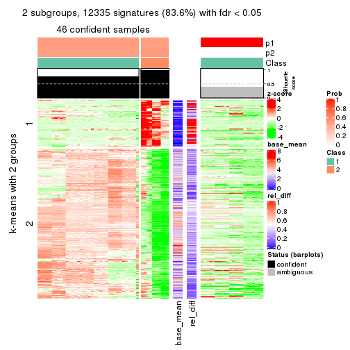
get_signatures(res, k = 3)
get_signatures(res, k = 4)
get_signatures(res, k = 5)
get_signatures(res, k = 6)
Signature heatmaps where rows are not scaled:
get_signatures(res, k = 2, scale_rows = FALSE)
get_signatures(res, k = 3, scale_rows = FALSE)

get_signatures(res, k = 4, scale_rows = FALSE)
get_signatures(res, k = 5, scale_rows = FALSE)
get_signatures(res, k = 6, scale_rows = FALSE)
Compare the overlap of signatures from different k:
compare_signatures(res)
get_signature() returns a data frame invisibly. TO get the list of signatures, the function
call should be assigned to a variable explicitly. In following code, if plot argument is set
to FALSE, no heatmap is plotted while only the differential analysis is performed.
# code only for demonstration
tb = get_signature(res, k = ..., plot = FALSE)
An example of the output of tb is:
#> which_row fdr mean_1 mean_2 scaled_mean_1 scaled_mean_2 km
#> 1 38 0.042760348 8.373488 9.131774 -0.5533452 0.5164555 1
#> 2 40 0.018707592 7.106213 8.469186 -0.6173731 0.5762149 1
#> 3 55 0.019134737 10.221463 11.207825 -0.6159697 0.5749050 1
#> 4 59 0.006059896 5.921854 7.869574 -0.6899429 0.6439467 1
#> 5 60 0.018055526 8.928898 10.211722 -0.6204761 0.5791110 1
#> 6 98 0.009384629 15.714769 14.887706 0.6635654 -0.6193277 2
...
The columns in tb are:
which_row: row indices corresponding to the input matrix.fdr: FDR for the differential test. mean_x: The mean value in group x.scaled_mean_x: The mean value in group x after rows are scaled.km: Row groups if k-means clustering is applied to rows.UMAP plot which shows how samples are separated.
dimension_reduction(res, k = 2, method = "UMAP")
dimension_reduction(res, k = 3, method = "UMAP")
dimension_reduction(res, k = 4, method = "UMAP")
dimension_reduction(res, k = 5, method = "UMAP")
dimension_reduction(res, k = 6, method = "UMAP")
Following heatmap shows how subgroups are split when increasing k:
collect_classes(res)
If matrix rows can be associated to genes, consider to use functional_enrichment(res,
...) to perform function enrichment for the signature genes. See this vignette for more detailed explanations.
The object with results only for a single top-value method and a single partition method can be extracted as:
res = res_list["SD", "mclust"]
# you can also extract it by
# res = res_list["SD:mclust"]
A summary of res and all the functions that can be applied to it:
res
#> A 'ConsensusPartition' object with k = 2, 3, 4, 5, 6.
#> On a matrix with 14753 rows and 68 columns.
#> Top rows (1000, 2000, 3000, 4000, 5000) are extracted by 'SD' method.
#> Subgroups are detected by 'mclust' method.
#> Performed in total 1250 partitions by row resampling.
#> Best k for subgroups seems to be 4.
#>
#> Following methods can be applied to this 'ConsensusPartition' object:
#> [1] "cola_report" "collect_classes" "collect_plots"
#> [4] "collect_stats" "colnames" "compare_signatures"
#> [7] "consensus_heatmap" "dimension_reduction" "functional_enrichment"
#> [10] "get_anno_col" "get_anno" "get_classes"
#> [13] "get_consensus" "get_matrix" "get_membership"
#> [16] "get_param" "get_signatures" "get_stats"
#> [19] "is_best_k" "is_stable_k" "membership_heatmap"
#> [22] "ncol" "nrow" "plot_ecdf"
#> [25] "rownames" "select_partition_number" "show"
#> [28] "suggest_best_k" "test_to_known_factors"
collect_plots() function collects all the plots made from res for all k (number of partitions)
into one single page to provide an easy and fast comparison between different k.
collect_plots(res)
The plots are:
k and the heatmap of
predicted classes for each k.k.k.k.All the plots in panels can be made by individual functions and they are plotted later in this section.
select_partition_number() produces several plots showing different
statistics for choosing “optimized” k. There are following statistics:
k;k, the area increased is defined as \(A_k - A_{k-1}\).The detailed explanations of these statistics can be found in the cola vignette.
Generally speaking, lower PAC score, higher mean silhouette score or higher
concordance corresponds to better partition. Rand index and Jaccard index
measure how similar the current partition is compared to partition with k-1.
If they are too similar, we won't accept k is better than k-1.
select_partition_number(res)
The numeric values for all these statistics can be obtained by get_stats().
get_stats(res)
#> k 1-PAC mean_silhouette concordance area_increased Rand Jaccard
#> 2 2 0.512 0.947 0.951 0.3681 0.651 0.651
#> 3 3 0.731 0.933 0.933 0.7060 0.693 0.528
#> 4 4 0.937 0.954 0.972 0.1696 0.921 0.770
#> 5 5 0.894 0.958 0.966 0.0487 0.951 0.822
#> 6 6 0.917 0.912 0.906 0.0380 0.989 0.956
suggest_best_k() suggests the best \(k\) based on these statistics. The rules are as follows:
suggest_best_k(res)
#> [1] 4
Following shows the table of the partitions (You need to click the show/hide
code output link to see it). The membership matrix (columns with name p*)
is inferred by
clue::cl_consensus()
function with the SE method. Basically the value in the membership matrix
represents the probability to belong to a certain group. The finall class
label for an item is determined with the group with highest probability it
belongs to.
In get_classes() function, the entropy is calculated from the membership
matrix and the silhouette score is calculated from the consensus matrix.
cbind(get_classes(res, k = 2), get_membership(res, k = 2))
#> class entropy silhouette p1 p2
#> SRR562645 1 0.469 0.941 0.900 0.100
#> SRR562646 1 0.469 0.941 0.900 0.100
#> SRR562647 1 0.469 0.941 0.900 0.100
#> SRR562648 1 0.469 0.941 0.900 0.100
#> SRR562649 1 0.469 0.941 0.900 0.100
#> SRR567420 1 0.469 0.941 0.900 0.100
#> SRR567421 1 0.469 0.941 0.900 0.100
#> SRR567422 1 0.469 0.941 0.900 0.100
#> SRR567423 1 0.469 0.941 0.900 0.100
#> SRR567424 1 0.469 0.941 0.900 0.100
#> SRR567425 1 0.000 0.930 1.000 0.000
#> SRR567426 1 0.000 0.930 1.000 0.000
#> SRR567427 1 0.000 0.930 1.000 0.000
#> SRR567428 1 0.000 0.930 1.000 0.000
#> SRR567429 1 0.000 0.930 1.000 0.000
#> SRR567430 1 0.000 0.930 1.000 0.000
#> SRR567431 1 0.000 0.930 1.000 0.000
#> SRR567432 1 0.000 0.930 1.000 0.000
#> SRR567433 1 0.000 0.930 1.000 0.000
#> SRR567434 1 0.000 0.930 1.000 0.000
#> SRR567435 1 0.000 0.930 1.000 0.000
#> SRR567436 1 0.000 0.930 1.000 0.000
#> SRR567437 1 0.000 0.930 1.000 0.000
#> SRR567438 1 0.000 0.930 1.000 0.000
#> SRR567439 1 0.000 0.930 1.000 0.000
#> SRR567440 2 0.000 1.000 0.000 1.000
#> SRR567441 2 0.000 1.000 0.000 1.000
#> SRR567442 2 0.000 1.000 0.000 1.000
#> SRR567443 2 0.000 1.000 0.000 1.000
#> SRR567444 2 0.000 1.000 0.000 1.000
#> SRR567445 1 0.278 0.914 0.952 0.048
#> SRR567446 1 0.278 0.914 0.952 0.048
#> SRR567447 1 0.278 0.914 0.952 0.048
#> SRR567448 1 0.278 0.914 0.952 0.048
#> SRR567449 1 0.278 0.914 0.952 0.048
#> SRR567450 1 0.469 0.941 0.900 0.100
#> SRR567451 1 0.469 0.941 0.900 0.100
#> SRR567452 1 0.469 0.941 0.900 0.100
#> SRR567453 1 0.469 0.941 0.900 0.100
#> SRR567454 1 0.469 0.941 0.900 0.100
#> SRR567455 1 0.469 0.941 0.900 0.100
#> SRR567456 1 0.469 0.941 0.900 0.100
#> SRR567457 1 0.278 0.914 0.952 0.048
#> SRR567458 1 0.278 0.914 0.952 0.048
#> SRR567459 1 0.278 0.914 0.952 0.048
#> SRR567460 1 0.278 0.914 0.952 0.048
#> SRR567461 1 0.278 0.914 0.952 0.048
#> SRR567462 2 0.000 1.000 0.000 1.000
#> SRR567463 2 0.000 1.000 0.000 1.000
#> SRR567464 2 0.000 1.000 0.000 1.000
#> SRR567465 2 0.000 1.000 0.000 1.000
#> SRR567466 2 0.000 1.000 0.000 1.000
#> SRR567467 2 0.000 1.000 0.000 1.000
#> SRR567468 2 0.000 1.000 0.000 1.000
#> SRR567469 2 0.000 1.000 0.000 1.000
#> SRR567470 2 0.000 1.000 0.000 1.000
#> SRR567471 2 0.000 1.000 0.000 1.000
#> SRR835008 1 0.605 0.912 0.852 0.148
#> SRR835009 1 0.469 0.941 0.900 0.100
#> SRR835011 1 0.469 0.941 0.900 0.100
#> SRR835012 1 0.469 0.941 0.900 0.100
#> SRR835013 1 0.469 0.941 0.900 0.100
#> SRR835010 1 0.469 0.941 0.900 0.100
#> SRR835014 1 0.469 0.941 0.900 0.100
#> SRR835015 1 0.469 0.941 0.900 0.100
#> SRR835016 1 0.469 0.941 0.900 0.100
#> SRR835017 1 0.469 0.941 0.900 0.100
#> SRR835018 1 0.469 0.941 0.900 0.100
cbind(get_classes(res, k = 3), get_membership(res, k = 3))
#> class entropy silhouette p1 p2 p3
#> SRR562645 2 0.000 0.796 0.000 1.000 0
#> SRR562646 2 0.000 0.796 0.000 1.000 0
#> SRR562647 2 0.000 0.796 0.000 1.000 0
#> SRR562648 2 0.000 0.796 0.000 1.000 0
#> SRR562649 2 0.000 0.796 0.000 1.000 0
#> SRR567420 2 0.000 0.796 0.000 1.000 0
#> SRR567421 2 0.000 0.796 0.000 1.000 0
#> SRR567422 2 0.000 0.796 0.000 1.000 0
#> SRR567423 2 0.000 0.796 0.000 1.000 0
#> SRR567424 2 0.000 0.796 0.000 1.000 0
#> SRR567425 1 0.000 1.000 1.000 0.000 0
#> SRR567426 1 0.000 1.000 1.000 0.000 0
#> SRR567427 1 0.000 1.000 1.000 0.000 0
#> SRR567428 1 0.000 1.000 1.000 0.000 0
#> SRR567429 1 0.000 1.000 1.000 0.000 0
#> SRR567430 1 0.000 1.000 1.000 0.000 0
#> SRR567431 1 0.000 1.000 1.000 0.000 0
#> SRR567432 1 0.000 1.000 1.000 0.000 0
#> SRR567433 1 0.000 1.000 1.000 0.000 0
#> SRR567434 1 0.000 1.000 1.000 0.000 0
#> SRR567435 1 0.000 1.000 1.000 0.000 0
#> SRR567436 1 0.000 1.000 1.000 0.000 0
#> SRR567437 1 0.000 1.000 1.000 0.000 0
#> SRR567438 1 0.000 1.000 1.000 0.000 0
#> SRR567439 1 0.000 1.000 1.000 0.000 0
#> SRR567440 3 0.000 1.000 0.000 0.000 1
#> SRR567441 3 0.000 1.000 0.000 0.000 1
#> SRR567442 3 0.000 1.000 0.000 0.000 1
#> SRR567443 3 0.000 1.000 0.000 0.000 1
#> SRR567444 3 0.000 1.000 0.000 0.000 1
#> SRR567445 1 0.000 1.000 1.000 0.000 0
#> SRR567446 1 0.000 1.000 1.000 0.000 0
#> SRR567447 1 0.000 1.000 1.000 0.000 0
#> SRR567448 1 0.000 1.000 1.000 0.000 0
#> SRR567449 1 0.000 1.000 1.000 0.000 0
#> SRR567450 2 0.506 0.872 0.244 0.756 0
#> SRR567451 2 0.506 0.872 0.244 0.756 0
#> SRR567452 2 0.506 0.872 0.244 0.756 0
#> SRR567453 2 0.506 0.872 0.244 0.756 0
#> SRR567454 2 0.506 0.872 0.244 0.756 0
#> SRR567455 2 0.506 0.872 0.244 0.756 0
#> SRR567456 2 0.506 0.872 0.244 0.756 0
#> SRR567457 1 0.000 1.000 1.000 0.000 0
#> SRR567458 1 0.000 1.000 1.000 0.000 0
#> SRR567459 1 0.000 1.000 1.000 0.000 0
#> SRR567460 1 0.000 1.000 1.000 0.000 0
#> SRR567461 1 0.000 1.000 1.000 0.000 0
#> SRR567462 3 0.000 1.000 0.000 0.000 1
#> SRR567463 3 0.000 1.000 0.000 0.000 1
#> SRR567464 3 0.000 1.000 0.000 0.000 1
#> SRR567465 3 0.000 1.000 0.000 0.000 1
#> SRR567466 3 0.000 1.000 0.000 0.000 1
#> SRR567467 3 0.000 1.000 0.000 0.000 1
#> SRR567468 3 0.000 1.000 0.000 0.000 1
#> SRR567469 3 0.000 1.000 0.000 0.000 1
#> SRR567470 3 0.000 1.000 0.000 0.000 1
#> SRR567471 3 0.000 1.000 0.000 0.000 1
#> SRR835008 2 0.613 0.630 0.400 0.600 0
#> SRR835009 2 0.506 0.872 0.244 0.756 0
#> SRR835011 2 0.506 0.872 0.244 0.756 0
#> SRR835012 2 0.506 0.872 0.244 0.756 0
#> SRR835013 2 0.506 0.872 0.244 0.756 0
#> SRR835010 2 0.506 0.872 0.244 0.756 0
#> SRR835014 2 0.506 0.872 0.244 0.756 0
#> SRR835015 2 0.506 0.872 0.244 0.756 0
#> SRR835016 2 0.506 0.872 0.244 0.756 0
#> SRR835017 2 0.506 0.872 0.244 0.756 0
#> SRR835018 2 0.506 0.872 0.244 0.756 0
cbind(get_classes(res, k = 4), get_membership(res, k = 4))
#> class entropy silhouette p1 p2 p3 p4
#> SRR562645 4 0.0000 1.000 0.000 0.000 0.000 1.000
#> SRR562646 4 0.0000 1.000 0.000 0.000 0.000 1.000
#> SRR562647 4 0.0000 1.000 0.000 0.000 0.000 1.000
#> SRR562648 4 0.0000 1.000 0.000 0.000 0.000 1.000
#> SRR562649 4 0.0000 1.000 0.000 0.000 0.000 1.000
#> SRR567420 4 0.0000 1.000 0.000 0.000 0.000 1.000
#> SRR567421 4 0.0000 1.000 0.000 0.000 0.000 1.000
#> SRR567422 4 0.0000 1.000 0.000 0.000 0.000 1.000
#> SRR567423 4 0.0000 1.000 0.000 0.000 0.000 1.000
#> SRR567424 4 0.0000 1.000 0.000 0.000 0.000 1.000
#> SRR567425 1 0.0000 0.990 1.000 0.000 0.000 0.000
#> SRR567426 1 0.0000 0.990 1.000 0.000 0.000 0.000
#> SRR567427 1 0.0000 0.990 1.000 0.000 0.000 0.000
#> SRR567428 1 0.0000 0.990 1.000 0.000 0.000 0.000
#> SRR567429 1 0.0000 0.990 1.000 0.000 0.000 0.000
#> SRR567430 1 0.0000 0.990 1.000 0.000 0.000 0.000
#> SRR567431 1 0.0000 0.990 1.000 0.000 0.000 0.000
#> SRR567432 1 0.0000 0.990 1.000 0.000 0.000 0.000
#> SRR567433 1 0.0000 0.990 1.000 0.000 0.000 0.000
#> SRR567434 1 0.0000 0.990 1.000 0.000 0.000 0.000
#> SRR567435 1 0.0000 0.990 1.000 0.000 0.000 0.000
#> SRR567436 1 0.0000 0.990 1.000 0.000 0.000 0.000
#> SRR567437 1 0.0000 0.990 1.000 0.000 0.000 0.000
#> SRR567438 1 0.0000 0.990 1.000 0.000 0.000 0.000
#> SRR567439 1 0.0000 0.990 1.000 0.000 0.000 0.000
#> SRR567440 3 0.0000 1.000 0.000 0.000 1.000 0.000
#> SRR567441 3 0.0000 1.000 0.000 0.000 1.000 0.000
#> SRR567442 3 0.0000 1.000 0.000 0.000 1.000 0.000
#> SRR567443 3 0.0000 1.000 0.000 0.000 1.000 0.000
#> SRR567444 3 0.0000 1.000 0.000 0.000 1.000 0.000
#> SRR567445 1 0.0469 0.986 0.988 0.012 0.000 0.000
#> SRR567446 1 0.0469 0.986 0.988 0.012 0.000 0.000
#> SRR567447 1 0.0469 0.986 0.988 0.012 0.000 0.000
#> SRR567448 1 0.0469 0.986 0.988 0.012 0.000 0.000
#> SRR567449 1 0.0469 0.986 0.988 0.012 0.000 0.000
#> SRR567450 2 0.3444 0.837 0.000 0.816 0.000 0.184
#> SRR567451 2 0.3444 0.837 0.000 0.816 0.000 0.184
#> SRR567452 2 0.3444 0.837 0.000 0.816 0.000 0.184
#> SRR567453 2 0.3444 0.837 0.000 0.816 0.000 0.184
#> SRR567454 2 0.3444 0.837 0.000 0.816 0.000 0.184
#> SRR567455 2 0.3444 0.837 0.000 0.816 0.000 0.184
#> SRR567456 2 0.3444 0.837 0.000 0.816 0.000 0.184
#> SRR567457 1 0.1284 0.973 0.964 0.012 0.024 0.000
#> SRR567458 1 0.1284 0.973 0.964 0.012 0.024 0.000
#> SRR567459 1 0.1284 0.973 0.964 0.012 0.024 0.000
#> SRR567460 1 0.1284 0.973 0.964 0.012 0.024 0.000
#> SRR567461 1 0.1284 0.973 0.964 0.012 0.024 0.000
#> SRR567462 3 0.0000 1.000 0.000 0.000 1.000 0.000
#> SRR567463 3 0.0000 1.000 0.000 0.000 1.000 0.000
#> SRR567464 3 0.0000 1.000 0.000 0.000 1.000 0.000
#> SRR567465 3 0.0000 1.000 0.000 0.000 1.000 0.000
#> SRR567466 3 0.0000 1.000 0.000 0.000 1.000 0.000
#> SRR567467 3 0.0000 1.000 0.000 0.000 1.000 0.000
#> SRR567468 3 0.0000 1.000 0.000 0.000 1.000 0.000
#> SRR567469 3 0.0000 1.000 0.000 0.000 1.000 0.000
#> SRR567470 3 0.0000 1.000 0.000 0.000 1.000 0.000
#> SRR567471 3 0.0000 1.000 0.000 0.000 1.000 0.000
#> SRR835008 2 0.5543 0.428 0.360 0.612 0.028 0.000
#> SRR835009 2 0.0000 0.890 0.000 1.000 0.000 0.000
#> SRR835011 2 0.0000 0.890 0.000 1.000 0.000 0.000
#> SRR835012 2 0.0000 0.890 0.000 1.000 0.000 0.000
#> SRR835013 2 0.0000 0.890 0.000 1.000 0.000 0.000
#> SRR835010 2 0.0000 0.890 0.000 1.000 0.000 0.000
#> SRR835014 2 0.0000 0.890 0.000 1.000 0.000 0.000
#> SRR835015 2 0.0000 0.890 0.000 1.000 0.000 0.000
#> SRR835016 2 0.0000 0.890 0.000 1.000 0.000 0.000
#> SRR835017 2 0.0000 0.890 0.000 1.000 0.000 0.000
#> SRR835018 2 0.0000 0.890 0.000 1.000 0.000 0.000
cbind(get_classes(res, k = 5), get_membership(res, k = 5))
#> class entropy silhouette p1 p2 p3 p4 p5
#> SRR562645 4 0.0000 1.000 0.000 0.000 0 1 0.000
#> SRR562646 4 0.0000 1.000 0.000 0.000 0 1 0.000
#> SRR562647 4 0.0000 1.000 0.000 0.000 0 1 0.000
#> SRR562648 4 0.0000 1.000 0.000 0.000 0 1 0.000
#> SRR562649 4 0.0000 1.000 0.000 0.000 0 1 0.000
#> SRR567420 4 0.0000 1.000 0.000 0.000 0 1 0.000
#> SRR567421 4 0.0000 1.000 0.000 0.000 0 1 0.000
#> SRR567422 4 0.0000 1.000 0.000 0.000 0 1 0.000
#> SRR567423 4 0.0000 1.000 0.000 0.000 0 1 0.000
#> SRR567424 4 0.0000 1.000 0.000 0.000 0 1 0.000
#> SRR567425 1 0.0000 0.908 1.000 0.000 0 0 0.000
#> SRR567426 1 0.0000 0.908 1.000 0.000 0 0 0.000
#> SRR567427 1 0.0000 0.908 1.000 0.000 0 0 0.000
#> SRR567428 1 0.0000 0.908 1.000 0.000 0 0 0.000
#> SRR567429 1 0.0000 0.908 1.000 0.000 0 0 0.000
#> SRR567430 1 0.0000 0.908 1.000 0.000 0 0 0.000
#> SRR567431 1 0.0000 0.908 1.000 0.000 0 0 0.000
#> SRR567432 1 0.0000 0.908 1.000 0.000 0 0 0.000
#> SRR567433 1 0.0000 0.908 1.000 0.000 0 0 0.000
#> SRR567434 1 0.0000 0.908 1.000 0.000 0 0 0.000
#> SRR567435 1 0.0000 0.908 1.000 0.000 0 0 0.000
#> SRR567436 1 0.0000 0.908 1.000 0.000 0 0 0.000
#> SRR567437 1 0.0000 0.908 1.000 0.000 0 0 0.000
#> SRR567438 1 0.0000 0.908 1.000 0.000 0 0 0.000
#> SRR567439 1 0.0000 0.908 1.000 0.000 0 0 0.000
#> SRR567440 3 0.0000 1.000 0.000 0.000 1 0 0.000
#> SRR567441 3 0.0000 1.000 0.000 0.000 1 0 0.000
#> SRR567442 3 0.0000 1.000 0.000 0.000 1 0 0.000
#> SRR567443 3 0.0000 1.000 0.000 0.000 1 0 0.000
#> SRR567444 3 0.0000 1.000 0.000 0.000 1 0 0.000
#> SRR567445 1 0.3039 0.864 0.808 0.000 0 0 0.192
#> SRR567446 1 0.3039 0.864 0.808 0.000 0 0 0.192
#> SRR567447 1 0.3039 0.864 0.808 0.000 0 0 0.192
#> SRR567448 1 0.3039 0.864 0.808 0.000 0 0 0.192
#> SRR567449 1 0.3039 0.864 0.808 0.000 0 0 0.192
#> SRR567450 5 0.0798 1.000 0.008 0.016 0 0 0.976
#> SRR567451 5 0.0798 1.000 0.008 0.016 0 0 0.976
#> SRR567452 5 0.0798 1.000 0.008 0.016 0 0 0.976
#> SRR567453 5 0.0798 1.000 0.008 0.016 0 0 0.976
#> SRR567454 5 0.0798 1.000 0.008 0.016 0 0 0.976
#> SRR567455 5 0.0798 1.000 0.008 0.016 0 0 0.976
#> SRR567456 5 0.0798 1.000 0.008 0.016 0 0 0.976
#> SRR567457 1 0.3039 0.864 0.808 0.000 0 0 0.192
#> SRR567458 1 0.3039 0.864 0.808 0.000 0 0 0.192
#> SRR567459 1 0.3039 0.864 0.808 0.000 0 0 0.192
#> SRR567460 1 0.3039 0.864 0.808 0.000 0 0 0.192
#> SRR567461 1 0.3039 0.864 0.808 0.000 0 0 0.192
#> SRR567462 3 0.0000 1.000 0.000 0.000 1 0 0.000
#> SRR567463 3 0.0000 1.000 0.000 0.000 1 0 0.000
#> SRR567464 3 0.0000 1.000 0.000 0.000 1 0 0.000
#> SRR567465 3 0.0000 1.000 0.000 0.000 1 0 0.000
#> SRR567466 3 0.0000 1.000 0.000 0.000 1 0 0.000
#> SRR567467 3 0.0000 1.000 0.000 0.000 1 0 0.000
#> SRR567468 3 0.0000 1.000 0.000 0.000 1 0 0.000
#> SRR567469 3 0.0000 1.000 0.000 0.000 1 0 0.000
#> SRR567470 3 0.0000 1.000 0.000 0.000 1 0 0.000
#> SRR567471 3 0.0000 1.000 0.000 0.000 1 0 0.000
#> SRR835008 1 0.3039 0.864 0.808 0.000 0 0 0.192
#> SRR835009 2 0.0000 1.000 0.000 1.000 0 0 0.000
#> SRR835011 2 0.0000 1.000 0.000 1.000 0 0 0.000
#> SRR835012 2 0.0000 1.000 0.000 1.000 0 0 0.000
#> SRR835013 2 0.0000 1.000 0.000 1.000 0 0 0.000
#> SRR835010 2 0.0000 1.000 0.000 1.000 0 0 0.000
#> SRR835014 2 0.0000 1.000 0.000 1.000 0 0 0.000
#> SRR835015 2 0.0000 1.000 0.000 1.000 0 0 0.000
#> SRR835016 2 0.0000 1.000 0.000 1.000 0 0 0.000
#> SRR835017 2 0.0000 1.000 0.000 1.000 0 0 0.000
#> SRR835018 2 0.0000 1.000 0.000 1.000 0 0 0.000
cbind(get_classes(res, k = 6), get_membership(res, k = 6))
#> class entropy silhouette p1 p2 p3 p4 p5 p6
#> SRR562645 4 0.0000 1.000 0.00 0.00 0 1 0 0.00
#> SRR562646 4 0.0000 1.000 0.00 0.00 0 1 0 0.00
#> SRR562647 4 0.0000 1.000 0.00 0.00 0 1 0 0.00
#> SRR562648 4 0.0000 1.000 0.00 0.00 0 1 0 0.00
#> SRR562649 4 0.0000 1.000 0.00 0.00 0 1 0 0.00
#> SRR567420 4 0.0000 1.000 0.00 0.00 0 1 0 0.00
#> SRR567421 4 0.0000 1.000 0.00 0.00 0 1 0 0.00
#> SRR567422 4 0.0000 1.000 0.00 0.00 0 1 0 0.00
#> SRR567423 4 0.0000 1.000 0.00 0.00 0 1 0 0.00
#> SRR567424 4 0.0000 1.000 0.00 0.00 0 1 0 0.00
#> SRR567425 1 0.3756 0.812 0.60 0.40 0 0 0 0.00
#> SRR567426 1 0.3756 0.812 0.60 0.40 0 0 0 0.00
#> SRR567427 1 0.3756 0.812 0.60 0.40 0 0 0 0.00
#> SRR567428 1 0.3756 0.812 0.60 0.40 0 0 0 0.00
#> SRR567429 1 0.3756 0.812 0.60 0.40 0 0 0 0.00
#> SRR567430 1 0.3756 0.812 0.60 0.40 0 0 0 0.00
#> SRR567431 1 0.3756 0.812 0.60 0.40 0 0 0 0.00
#> SRR567432 1 0.3756 0.812 0.60 0.40 0 0 0 0.00
#> SRR567433 1 0.3756 0.812 0.60 0.40 0 0 0 0.00
#> SRR567434 1 0.3756 0.812 0.60 0.40 0 0 0 0.00
#> SRR567435 1 0.3756 0.812 0.60 0.40 0 0 0 0.00
#> SRR567436 1 0.3756 0.812 0.60 0.40 0 0 0 0.00
#> SRR567437 1 0.3756 0.812 0.60 0.40 0 0 0 0.00
#> SRR567438 1 0.3756 0.812 0.60 0.40 0 0 0 0.00
#> SRR567439 1 0.3756 0.812 0.60 0.40 0 0 0 0.00
#> SRR567440 3 0.0000 1.000 0.00 0.00 1 0 0 0.00
#> SRR567441 3 0.0000 1.000 0.00 0.00 1 0 0 0.00
#> SRR567442 3 0.0000 1.000 0.00 0.00 1 0 0 0.00
#> SRR567443 3 0.0000 1.000 0.00 0.00 1 0 0 0.00
#> SRR567444 3 0.0000 1.000 0.00 0.00 1 0 0 0.00
#> SRR567445 1 0.0937 0.703 0.96 0.04 0 0 0 0.00
#> SRR567446 1 0.0937 0.703 0.96 0.04 0 0 0 0.00
#> SRR567447 1 0.0937 0.703 0.96 0.04 0 0 0 0.00
#> SRR567448 1 0.0937 0.703 0.96 0.04 0 0 0 0.00
#> SRR567449 1 0.0937 0.703 0.96 0.04 0 0 0 0.00
#> SRR567450 5 0.0000 1.000 0.00 0.00 0 0 1 0.00
#> SRR567451 5 0.0000 1.000 0.00 0.00 0 0 1 0.00
#> SRR567452 5 0.0000 1.000 0.00 0.00 0 0 1 0.00
#> SRR567453 5 0.0000 1.000 0.00 0.00 0 0 1 0.00
#> SRR567454 5 0.0000 1.000 0.00 0.00 0 0 1 0.00
#> SRR567455 5 0.0000 1.000 0.00 0.00 0 0 1 0.00
#> SRR567456 5 0.0000 1.000 0.00 0.00 0 0 1 0.00
#> SRR567457 1 0.0000 0.725 1.00 0.00 0 0 0 0.00
#> SRR567458 1 0.0000 0.725 1.00 0.00 0 0 0 0.00
#> SRR567459 1 0.0000 0.725 1.00 0.00 0 0 0 0.00
#> SRR567460 1 0.0000 0.725 1.00 0.00 0 0 0 0.00
#> SRR567461 1 0.0000 0.725 1.00 0.00 0 0 0 0.00
#> SRR567462 3 0.0000 1.000 0.00 0.00 1 0 0 0.00
#> SRR567463 3 0.0000 1.000 0.00 0.00 1 0 0 0.00
#> SRR567464 3 0.0000 1.000 0.00 0.00 1 0 0 0.00
#> SRR567465 3 0.0000 1.000 0.00 0.00 1 0 0 0.00
#> SRR567466 3 0.0000 1.000 0.00 0.00 1 0 0 0.00
#> SRR567467 3 0.0000 1.000 0.00 0.00 1 0 0 0.00
#> SRR567468 3 0.0000 1.000 0.00 0.00 1 0 0 0.00
#> SRR567469 3 0.0000 1.000 0.00 0.00 1 0 0 0.00
#> SRR567470 3 0.0000 1.000 0.00 0.00 1 0 0 0.00
#> SRR567471 3 0.0000 1.000 0.00 0.00 1 0 0 0.00
#> SRR835008 1 0.0000 0.725 1.00 0.00 0 0 0 0.00
#> SRR835009 6 0.0000 1.000 0.00 0.00 0 0 0 1.00
#> SRR835011 2 0.3828 1.000 0.00 0.56 0 0 0 0.44
#> SRR835012 2 0.3828 1.000 0.00 0.56 0 0 0 0.44
#> SRR835013 2 0.3828 1.000 0.00 0.56 0 0 0 0.44
#> SRR835010 6 0.0000 1.000 0.00 0.00 0 0 0 1.00
#> SRR835014 6 0.0000 1.000 0.00 0.00 0 0 0 1.00
#> SRR835015 6 0.0000 1.000 0.00 0.00 0 0 0 1.00
#> SRR835016 2 0.3828 1.000 0.00 0.56 0 0 0 0.44
#> SRR835017 2 0.3828 1.000 0.00 0.56 0 0 0 0.44
#> SRR835018 2 0.3828 1.000 0.00 0.56 0 0 0 0.44
Heatmaps for the consensus matrix. It visualizes the probability of two samples to be in a same group.
consensus_heatmap(res, k = 2)
consensus_heatmap(res, k = 3)
consensus_heatmap(res, k = 4)
consensus_heatmap(res, k = 5)
consensus_heatmap(res, k = 6)
Heatmaps for the membership of samples in all partitions to see how consistent they are:
membership_heatmap(res, k = 2)
membership_heatmap(res, k = 3)
membership_heatmap(res, k = 4)
membership_heatmap(res, k = 5)
membership_heatmap(res, k = 6)
As soon as we have had the classes for columns, we can look for signatures which are significantly different between classes which can be candidate marks for certain classes. Following are the heatmaps for signatures.
Signature heatmaps where rows are scaled:
get_signatures(res, k = 2)
get_signatures(res, k = 3)
get_signatures(res, k = 4)
get_signatures(res, k = 5)
get_signatures(res, k = 6)
Signature heatmaps where rows are not scaled:
get_signatures(res, k = 2, scale_rows = FALSE)
get_signatures(res, k = 3, scale_rows = FALSE)
get_signatures(res, k = 4, scale_rows = FALSE)

get_signatures(res, k = 5, scale_rows = FALSE)
get_signatures(res, k = 6, scale_rows = FALSE)

Compare the overlap of signatures from different k:
compare_signatures(res)
get_signature() returns a data frame invisibly. TO get the list of signatures, the function
call should be assigned to a variable explicitly. In following code, if plot argument is set
to FALSE, no heatmap is plotted while only the differential analysis is performed.
# code only for demonstration
tb = get_signature(res, k = ..., plot = FALSE)
An example of the output of tb is:
#> which_row fdr mean_1 mean_2 scaled_mean_1 scaled_mean_2 km
#> 1 38 0.042760348 8.373488 9.131774 -0.5533452 0.5164555 1
#> 2 40 0.018707592 7.106213 8.469186 -0.6173731 0.5762149 1
#> 3 55 0.019134737 10.221463 11.207825 -0.6159697 0.5749050 1
#> 4 59 0.006059896 5.921854 7.869574 -0.6899429 0.6439467 1
#> 5 60 0.018055526 8.928898 10.211722 -0.6204761 0.5791110 1
#> 6 98 0.009384629 15.714769 14.887706 0.6635654 -0.6193277 2
...
The columns in tb are:
which_row: row indices corresponding to the input matrix.fdr: FDR for the differential test. mean_x: The mean value in group x.scaled_mean_x: The mean value in group x after rows are scaled.km: Row groups if k-means clustering is applied to rows.UMAP plot which shows how samples are separated.
dimension_reduction(res, k = 2, method = "UMAP")
dimension_reduction(res, k = 3, method = "UMAP")
dimension_reduction(res, k = 4, method = "UMAP")
dimension_reduction(res, k = 5, method = "UMAP")
dimension_reduction(res, k = 6, method = "UMAP")
Following heatmap shows how subgroups are split when increasing k:
collect_classes(res)
If matrix rows can be associated to genes, consider to use functional_enrichment(res,
...) to perform function enrichment for the signature genes. See this vignette for more detailed explanations.
The object with results only for a single top-value method and a single partition method can be extracted as:
res = res_list["SD", "NMF"]
# you can also extract it by
# res = res_list["SD:NMF"]
A summary of res and all the functions that can be applied to it:
res
#> A 'ConsensusPartition' object with k = 2, 3, 4, 5, 6.
#> On a matrix with 14753 rows and 68 columns.
#> Top rows (1000, 2000, 3000, 4000, 5000) are extracted by 'SD' method.
#> Subgroups are detected by 'NMF' method.
#> Performed in total 1250 partitions by row resampling.
#> Best k for subgroups seems to be 2.
#>
#> Following methods can be applied to this 'ConsensusPartition' object:
#> [1] "cola_report" "collect_classes" "collect_plots"
#> [4] "collect_stats" "colnames" "compare_signatures"
#> [7] "consensus_heatmap" "dimension_reduction" "functional_enrichment"
#> [10] "get_anno_col" "get_anno" "get_classes"
#> [13] "get_consensus" "get_matrix" "get_membership"
#> [16] "get_param" "get_signatures" "get_stats"
#> [19] "is_best_k" "is_stable_k" "membership_heatmap"
#> [22] "ncol" "nrow" "plot_ecdf"
#> [25] "rownames" "select_partition_number" "show"
#> [28] "suggest_best_k" "test_to_known_factors"
collect_plots() function collects all the plots made from res for all k (number of partitions)
into one single page to provide an easy and fast comparison between different k.
collect_plots(res)
The plots are:
k and the heatmap of
predicted classes for each k.k.k.k.All the plots in panels can be made by individual functions and they are plotted later in this section.
select_partition_number() produces several plots showing different
statistics for choosing “optimized” k. There are following statistics:
k;k, the area increased is defined as \(A_k - A_{k-1}\).The detailed explanations of these statistics can be found in the cola vignette.
Generally speaking, lower PAC score, higher mean silhouette score or higher
concordance corresponds to better partition. Rand index and Jaccard index
measure how similar the current partition is compared to partition with k-1.
If they are too similar, we won't accept k is better than k-1.
select_partition_number(res)
The numeric values for all these statistics can be obtained by get_stats().
get_stats(res)
#> k 1-PAC mean_silhouette concordance area_increased Rand Jaccard
#> 2 2 1.000 1.000 1.000 0.255 0.745 0.745
#> 3 3 0.532 0.507 0.766 1.112 0.863 0.816
#> 4 4 0.770 0.765 0.886 0.239 0.712 0.540
#> 5 5 0.740 0.858 0.842 0.136 0.826 0.530
#> 6 6 0.728 0.835 0.820 0.020 0.991 0.959
suggest_best_k() suggests the best \(k\) based on these statistics. The rules are as follows:
suggest_best_k(res)
#> [1] 2
Following shows the table of the partitions (You need to click the show/hide
code output link to see it). The membership matrix (columns with name p*)
is inferred by
clue::cl_consensus()
function with the SE method. Basically the value in the membership matrix
represents the probability to belong to a certain group. The finall class
label for an item is determined with the group with highest probability it
belongs to.
In get_classes() function, the entropy is calculated from the membership
matrix and the silhouette score is calculated from the consensus matrix.
cbind(get_classes(res, k = 2), get_membership(res, k = 2))
#> class entropy silhouette p1 p2
#> SRR562645 1 0 1 1 0
#> SRR562646 1 0 1 1 0
#> SRR562647 1 0 1 1 0
#> SRR562648 1 0 1 1 0
#> SRR562649 1 0 1 1 0
#> SRR567420 1 0 1 1 0
#> SRR567421 1 0 1 1 0
#> SRR567422 1 0 1 1 0
#> SRR567423 1 0 1 1 0
#> SRR567424 1 0 1 1 0
#> SRR567425 1 0 1 1 0
#> SRR567426 1 0 1 1 0
#> SRR567427 1 0 1 1 0
#> SRR567428 1 0 1 1 0
#> SRR567429 1 0 1 1 0
#> SRR567430 1 0 1 1 0
#> SRR567431 1 0 1 1 0
#> SRR567432 1 0 1 1 0
#> SRR567433 1 0 1 1 0
#> SRR567434 1 0 1 1 0
#> SRR567435 1 0 1 1 0
#> SRR567436 1 0 1 1 0
#> SRR567437 1 0 1 1 0
#> SRR567438 1 0 1 1 0
#> SRR567439 1 0 1 1 0
#> SRR567440 1 0 1 1 0
#> SRR567441 1 0 1 1 0
#> SRR567442 1 0 1 1 0
#> SRR567443 1 0 1 1 0
#> SRR567444 1 0 1 1 0
#> SRR567445 1 0 1 1 0
#> SRR567446 1 0 1 1 0
#> SRR567447 1 0 1 1 0
#> SRR567448 1 0 1 1 0
#> SRR567449 1 0 1 1 0
#> SRR567450 1 0 1 1 0
#> SRR567451 1 0 1 1 0
#> SRR567452 1 0 1 1 0
#> SRR567453 1 0 1 1 0
#> SRR567454 1 0 1 1 0
#> SRR567455 1 0 1 1 0
#> SRR567456 1 0 1 1 0
#> SRR567457 1 0 1 1 0
#> SRR567458 1 0 1 1 0
#> SRR567459 1 0 1 1 0
#> SRR567460 1 0 1 1 0
#> SRR567461 1 0 1 1 0
#> SRR567462 1 0 1 1 0
#> SRR567463 1 0 1 1 0
#> SRR567464 1 0 1 1 0
#> SRR567465 1 0 1 1 0
#> SRR567466 1 0 1 1 0
#> SRR567467 1 0 1 1 0
#> SRR567468 1 0 1 1 0
#> SRR567469 1 0 1 1 0
#> SRR567470 1 0 1 1 0
#> SRR567471 1 0 1 1 0
#> SRR835008 1 0 1 1 0
#> SRR835009 2 0 1 0 1
#> SRR835011 2 0 1 0 1
#> SRR835012 2 0 1 0 1
#> SRR835013 2 0 1 0 1
#> SRR835010 2 0 1 0 1
#> SRR835014 2 0 1 0 1
#> SRR835015 2 0 1 0 1
#> SRR835016 2 0 1 0 1
#> SRR835017 2 0 1 0 1
#> SRR835018 2 0 1 0 1
cbind(get_classes(res, k = 3), get_membership(res, k = 3))
#> class entropy silhouette p1 p2 p3
#> SRR562645 1 0.6307 0.6089 0.512 0 0.488
#> SRR562646 1 0.6307 0.6089 0.512 0 0.488
#> SRR562647 1 0.6307 0.6089 0.512 0 0.488
#> SRR562648 1 0.6307 0.6089 0.512 0 0.488
#> SRR562649 1 0.6307 0.6089 0.512 0 0.488
#> SRR567420 1 0.6307 0.6089 0.512 0 0.488
#> SRR567421 1 0.6307 0.6089 0.512 0 0.488
#> SRR567422 1 0.6307 0.6089 0.512 0 0.488
#> SRR567423 1 0.6307 0.6089 0.512 0 0.488
#> SRR567424 1 0.6307 0.6089 0.512 0 0.488
#> SRR567425 1 0.6291 0.1307 0.532 0 0.468
#> SRR567426 1 0.6299 0.0894 0.524 0 0.476
#> SRR567427 1 0.6295 0.1368 0.528 0 0.472
#> SRR567428 1 0.6308 0.0123 0.508 0 0.492
#> SRR567429 1 0.6295 0.1368 0.528 0 0.472
#> SRR567430 1 0.6309 0.0207 0.504 0 0.496
#> SRR567431 1 0.6307 0.0502 0.512 0 0.488
#> SRR567432 1 0.6307 0.0502 0.512 0 0.488
#> SRR567433 3 0.6305 -0.1069 0.484 0 0.516
#> SRR567434 1 0.6295 0.1015 0.528 0 0.472
#> SRR567435 1 0.6307 0.6061 0.512 0 0.488
#> SRR567436 1 0.6308 0.6058 0.508 0 0.492
#> SRR567437 1 0.6305 0.6057 0.516 0 0.484
#> SRR567438 1 0.6307 0.6061 0.512 0 0.488
#> SRR567439 1 0.6307 0.6061 0.512 0 0.488
#> SRR567440 1 0.0000 0.3675 1.000 0 0.000
#> SRR567441 1 0.0000 0.3675 1.000 0 0.000
#> SRR567442 1 0.0000 0.3675 1.000 0 0.000
#> SRR567443 1 0.0000 0.3675 1.000 0 0.000
#> SRR567444 1 0.0000 0.3675 1.000 0 0.000
#> SRR567445 3 0.6309 0.8667 0.496 0 0.504
#> SRR567446 3 0.6309 0.8667 0.496 0 0.504
#> SRR567447 3 0.6309 0.8667 0.496 0 0.504
#> SRR567448 3 0.6309 0.8667 0.496 0 0.504
#> SRR567449 3 0.6309 0.8667 0.496 0 0.504
#> SRR567450 1 0.6307 0.6089 0.512 0 0.488
#> SRR567451 1 0.6307 0.6089 0.512 0 0.488
#> SRR567452 1 0.6307 0.6089 0.512 0 0.488
#> SRR567453 1 0.6305 0.6089 0.516 0 0.484
#> SRR567454 1 0.6307 0.6089 0.512 0 0.488
#> SRR567455 1 0.6307 0.6089 0.512 0 0.488
#> SRR567456 1 0.6307 0.6089 0.512 0 0.488
#> SRR567457 1 0.5216 0.0848 0.740 0 0.260
#> SRR567458 1 0.5058 0.0338 0.756 0 0.244
#> SRR567459 1 0.5216 0.0652 0.740 0 0.260
#> SRR567460 1 0.5058 0.0114 0.756 0 0.244
#> SRR567461 1 0.5397 -0.0951 0.720 0 0.280
#> SRR567462 1 0.0747 0.3808 0.984 0 0.016
#> SRR567463 1 0.0747 0.3808 0.984 0 0.016
#> SRR567464 1 0.0747 0.3808 0.984 0 0.016
#> SRR567465 1 0.0424 0.3753 0.992 0 0.008
#> SRR567466 1 0.0747 0.3808 0.984 0 0.016
#> SRR567467 1 0.0424 0.3565 0.992 0 0.008
#> SRR567468 1 0.0424 0.3565 0.992 0 0.008
#> SRR567469 1 0.0424 0.3565 0.992 0 0.008
#> SRR567470 1 0.0424 0.3565 0.992 0 0.008
#> SRR567471 1 0.0424 0.3565 0.992 0 0.008
#> SRR835008 1 0.5098 0.5283 0.752 0 0.248
#> SRR835009 2 0.0000 1.0000 0.000 1 0.000
#> SRR835011 2 0.0000 1.0000 0.000 1 0.000
#> SRR835012 2 0.0000 1.0000 0.000 1 0.000
#> SRR835013 2 0.0000 1.0000 0.000 1 0.000
#> SRR835010 2 0.0000 1.0000 0.000 1 0.000
#> SRR835014 2 0.0000 1.0000 0.000 1 0.000
#> SRR835015 2 0.0000 1.0000 0.000 1 0.000
#> SRR835016 2 0.0000 1.0000 0.000 1 0.000
#> SRR835017 2 0.0000 1.0000 0.000 1 0.000
#> SRR835018 2 0.0000 1.0000 0.000 1 0.000
cbind(get_classes(res, k = 4), get_membership(res, k = 4))
#> class entropy silhouette p1 p2 p3 p4
#> SRR562645 1 0.0376 0.8065 0.992 0.000 0.004 0.004
#> SRR562646 1 0.0376 0.8065 0.992 0.000 0.004 0.004
#> SRR562647 1 0.0376 0.8065 0.992 0.000 0.004 0.004
#> SRR562648 1 0.0376 0.8065 0.992 0.000 0.004 0.004
#> SRR562649 1 0.0376 0.8065 0.992 0.000 0.004 0.004
#> SRR567420 1 0.0376 0.8065 0.992 0.000 0.004 0.004
#> SRR567421 1 0.0376 0.8065 0.992 0.000 0.004 0.004
#> SRR567422 1 0.0376 0.8065 0.992 0.000 0.004 0.004
#> SRR567423 1 0.0376 0.8065 0.992 0.000 0.004 0.004
#> SRR567424 1 0.0376 0.8065 0.992 0.000 0.004 0.004
#> SRR567425 1 0.4382 0.6223 0.704 0.000 0.000 0.296
#> SRR567426 1 0.4500 0.6032 0.684 0.000 0.000 0.316
#> SRR567427 1 0.4356 0.6254 0.708 0.000 0.000 0.292
#> SRR567428 1 0.4624 0.5746 0.660 0.000 0.000 0.340
#> SRR567429 1 0.4331 0.6290 0.712 0.000 0.000 0.288
#> SRR567430 1 0.4543 0.5947 0.676 0.000 0.000 0.324
#> SRR567431 1 0.4585 0.5853 0.668 0.000 0.000 0.332
#> SRR567432 1 0.4543 0.5947 0.676 0.000 0.000 0.324
#> SRR567433 1 0.4776 0.5188 0.624 0.000 0.000 0.376
#> SRR567434 1 0.4522 0.5990 0.680 0.000 0.000 0.320
#> SRR567435 1 0.0000 0.8082 1.000 0.000 0.000 0.000
#> SRR567436 1 0.0000 0.8082 1.000 0.000 0.000 0.000
#> SRR567437 1 0.0000 0.8082 1.000 0.000 0.000 0.000
#> SRR567438 1 0.0000 0.8082 1.000 0.000 0.000 0.000
#> SRR567439 1 0.0000 0.8082 1.000 0.000 0.000 0.000
#> SRR567440 3 0.0000 0.9621 0.000 0.000 1.000 0.000
#> SRR567441 3 0.0000 0.9621 0.000 0.000 1.000 0.000
#> SRR567442 3 0.0000 0.9621 0.000 0.000 1.000 0.000
#> SRR567443 3 0.0000 0.9621 0.000 0.000 1.000 0.000
#> SRR567444 3 0.0000 0.9621 0.000 0.000 1.000 0.000
#> SRR567445 4 0.3626 0.8737 0.004 0.000 0.184 0.812
#> SRR567446 4 0.3626 0.8737 0.004 0.000 0.184 0.812
#> SRR567447 4 0.3626 0.8737 0.004 0.000 0.184 0.812
#> SRR567448 4 0.3626 0.8737 0.004 0.000 0.184 0.812
#> SRR567449 4 0.3626 0.8737 0.004 0.000 0.184 0.812
#> SRR567450 1 0.0000 0.8082 1.000 0.000 0.000 0.000
#> SRR567451 1 0.0000 0.8082 1.000 0.000 0.000 0.000
#> SRR567452 1 0.0000 0.8082 1.000 0.000 0.000 0.000
#> SRR567453 1 0.0000 0.8082 1.000 0.000 0.000 0.000
#> SRR567454 1 0.0000 0.8082 1.000 0.000 0.000 0.000
#> SRR567455 1 0.0000 0.8082 1.000 0.000 0.000 0.000
#> SRR567456 1 0.0000 0.8082 1.000 0.000 0.000 0.000
#> SRR567457 1 0.7606 -0.0477 0.444 0.000 0.208 0.348
#> SRR567458 1 0.7619 -0.0763 0.436 0.000 0.208 0.356
#> SRR567459 1 0.7634 -0.0756 0.436 0.000 0.212 0.352
#> SRR567460 1 0.7698 -0.1346 0.420 0.000 0.224 0.356
#> SRR567461 4 0.7661 0.1174 0.376 0.000 0.212 0.412
#> SRR567462 3 0.0000 0.9621 0.000 0.000 1.000 0.000
#> SRR567463 3 0.0000 0.9621 0.000 0.000 1.000 0.000
#> SRR567464 3 0.0000 0.9621 0.000 0.000 1.000 0.000
#> SRR567465 3 0.0000 0.9621 0.000 0.000 1.000 0.000
#> SRR567466 3 0.0000 0.9621 0.000 0.000 1.000 0.000
#> SRR567467 3 0.0000 0.9621 0.000 0.000 1.000 0.000
#> SRR567468 3 0.0000 0.9621 0.000 0.000 1.000 0.000
#> SRR567469 3 0.0000 0.9621 0.000 0.000 1.000 0.000
#> SRR567470 3 0.0000 0.9621 0.000 0.000 1.000 0.000
#> SRR567471 3 0.0000 0.9621 0.000 0.000 1.000 0.000
#> SRR835008 3 0.4713 0.2922 0.360 0.000 0.640 0.000
#> SRR835009 2 0.0000 0.9679 0.000 1.000 0.000 0.000
#> SRR835011 2 0.0000 0.9679 0.000 1.000 0.000 0.000
#> SRR835012 2 0.0000 0.9679 0.000 1.000 0.000 0.000
#> SRR835013 2 0.0000 0.9679 0.000 1.000 0.000 0.000
#> SRR835010 2 0.0000 0.9679 0.000 1.000 0.000 0.000
#> SRR835014 2 0.2011 0.9118 0.000 0.920 0.000 0.080
#> SRR835015 2 0.3907 0.7496 0.000 0.768 0.000 0.232
#> SRR835016 2 0.0000 0.9679 0.000 1.000 0.000 0.000
#> SRR835017 2 0.0000 0.9679 0.000 1.000 0.000 0.000
#> SRR835018 2 0.0000 0.9679 0.000 1.000 0.000 0.000
cbind(get_classes(res, k = 5), get_membership(res, k = 5))
#> class entropy silhouette p1 p2 p3 p4 p5
#> SRR562645 4 0.6058 0.949 0.164 0.000 0.004 0.588 0.244
#> SRR562646 4 0.6058 0.949 0.164 0.000 0.004 0.588 0.244
#> SRR562647 4 0.6058 0.949 0.164 0.000 0.004 0.588 0.244
#> SRR562648 4 0.6089 0.950 0.168 0.000 0.004 0.584 0.244
#> SRR562649 4 0.6058 0.949 0.164 0.000 0.004 0.588 0.244
#> SRR567420 4 0.6150 0.948 0.176 0.000 0.004 0.576 0.244
#> SRR567421 4 0.6150 0.948 0.176 0.000 0.004 0.576 0.244
#> SRR567422 4 0.6150 0.948 0.176 0.000 0.004 0.576 0.244
#> SRR567423 4 0.6150 0.948 0.176 0.000 0.004 0.576 0.244
#> SRR567424 4 0.6120 0.950 0.172 0.000 0.004 0.580 0.244
#> SRR567425 1 0.2971 0.856 0.836 0.000 0.000 0.008 0.156
#> SRR567426 1 0.2971 0.856 0.836 0.000 0.000 0.008 0.156
#> SRR567427 1 0.3053 0.853 0.828 0.000 0.000 0.008 0.164
#> SRR567428 1 0.3242 0.846 0.816 0.000 0.000 0.012 0.172
#> SRR567429 1 0.2929 0.857 0.840 0.000 0.000 0.008 0.152
#> SRR567430 1 0.3013 0.855 0.832 0.000 0.000 0.008 0.160
#> SRR567431 1 0.3242 0.846 0.816 0.000 0.000 0.012 0.172
#> SRR567432 1 0.2971 0.856 0.836 0.000 0.000 0.008 0.156
#> SRR567433 1 0.3381 0.841 0.808 0.000 0.000 0.016 0.176
#> SRR567434 1 0.3093 0.850 0.824 0.000 0.000 0.008 0.168
#> SRR567435 1 0.2470 0.828 0.884 0.000 0.000 0.104 0.012
#> SRR567436 1 0.2470 0.828 0.884 0.000 0.000 0.104 0.012
#> SRR567437 1 0.2416 0.831 0.888 0.000 0.000 0.100 0.012
#> SRR567438 1 0.2470 0.828 0.884 0.000 0.000 0.104 0.012
#> SRR567439 1 0.2470 0.828 0.884 0.000 0.000 0.104 0.012
#> SRR567440 3 0.0000 0.997 0.000 0.000 1.000 0.000 0.000
#> SRR567441 3 0.0000 0.997 0.000 0.000 1.000 0.000 0.000
#> SRR567442 3 0.0000 0.997 0.000 0.000 1.000 0.000 0.000
#> SRR567443 3 0.0000 0.997 0.000 0.000 1.000 0.000 0.000
#> SRR567444 3 0.0000 0.997 0.000 0.000 1.000 0.000 0.000
#> SRR567445 5 0.1041 0.661 0.032 0.000 0.004 0.000 0.964
#> SRR567446 5 0.1041 0.661 0.032 0.000 0.004 0.000 0.964
#> SRR567447 5 0.1041 0.661 0.032 0.000 0.004 0.000 0.964
#> SRR567448 5 0.1041 0.661 0.032 0.000 0.004 0.000 0.964
#> SRR567449 5 0.1041 0.661 0.032 0.000 0.004 0.000 0.964
#> SRR567450 1 0.1043 0.860 0.960 0.000 0.000 0.040 0.000
#> SRR567451 1 0.0963 0.861 0.964 0.000 0.000 0.036 0.000
#> SRR567452 1 0.1041 0.861 0.964 0.000 0.000 0.032 0.004
#> SRR567453 1 0.0794 0.862 0.972 0.000 0.000 0.028 0.000
#> SRR567454 1 0.0955 0.862 0.968 0.000 0.000 0.028 0.004
#> SRR567455 1 0.1671 0.846 0.924 0.000 0.000 0.076 0.000
#> SRR567456 1 0.1608 0.848 0.928 0.000 0.000 0.072 0.000
#> SRR567457 5 0.5400 0.418 0.040 0.000 0.012 0.376 0.572
#> SRR567458 5 0.5400 0.418 0.040 0.000 0.012 0.376 0.572
#> SRR567459 5 0.5400 0.418 0.040 0.000 0.012 0.376 0.572
#> SRR567460 5 0.5493 0.410 0.040 0.000 0.016 0.376 0.568
#> SRR567461 5 0.5400 0.418 0.040 0.000 0.012 0.376 0.572
#> SRR567462 3 0.0290 0.995 0.000 0.000 0.992 0.008 0.000
#> SRR567463 3 0.0290 0.995 0.000 0.000 0.992 0.008 0.000
#> SRR567464 3 0.0290 0.995 0.000 0.000 0.992 0.008 0.000
#> SRR567465 3 0.0290 0.995 0.000 0.000 0.992 0.008 0.000
#> SRR567466 3 0.0290 0.995 0.000 0.000 0.992 0.008 0.000
#> SRR567467 3 0.0000 0.997 0.000 0.000 1.000 0.000 0.000
#> SRR567468 3 0.0000 0.997 0.000 0.000 1.000 0.000 0.000
#> SRR567469 3 0.0000 0.997 0.000 0.000 1.000 0.000 0.000
#> SRR567470 3 0.0000 0.997 0.000 0.000 1.000 0.000 0.000
#> SRR567471 3 0.0000 0.997 0.000 0.000 1.000 0.000 0.000
#> SRR835008 4 0.6294 0.513 0.040 0.000 0.080 0.572 0.308
#> SRR835009 2 0.0162 0.963 0.000 0.996 0.000 0.000 0.004
#> SRR835011 2 0.0000 0.964 0.000 1.000 0.000 0.000 0.000
#> SRR835012 2 0.0000 0.964 0.000 1.000 0.000 0.000 0.000
#> SRR835013 2 0.0000 0.964 0.000 1.000 0.000 0.000 0.000
#> SRR835010 2 0.0162 0.963 0.000 0.996 0.000 0.000 0.004
#> SRR835014 2 0.2193 0.896 0.000 0.900 0.000 0.008 0.092
#> SRR835015 2 0.3461 0.740 0.000 0.772 0.000 0.004 0.224
#> SRR835016 2 0.0000 0.964 0.000 1.000 0.000 0.000 0.000
#> SRR835017 2 0.0000 0.964 0.000 1.000 0.000 0.000 0.000
#> SRR835018 2 0.0000 0.964 0.000 1.000 0.000 0.000 0.000
cbind(get_classes(res, k = 6), get_membership(res, k = 6))
#> class entropy silhouette p1 p2 p3 p4 p5 p6
#> SRR562645 4 0.6076 0.9718 0.236 0.000 0.004 0.440 NA 0.320
#> SRR562646 4 0.6054 0.9668 0.232 0.000 0.004 0.448 NA 0.316
#> SRR562647 4 0.6076 0.9718 0.236 0.000 0.004 0.440 NA 0.320
#> SRR562648 4 0.6061 0.9697 0.236 0.000 0.004 0.448 NA 0.312
#> SRR562649 4 0.6076 0.9718 0.236 0.000 0.004 0.440 NA 0.320
#> SRR567420 4 0.6129 0.9699 0.260 0.000 0.004 0.428 NA 0.308
#> SRR567421 4 0.6133 0.9670 0.264 0.000 0.004 0.428 NA 0.304
#> SRR567422 4 0.6125 0.9659 0.264 0.000 0.004 0.432 NA 0.300
#> SRR567423 4 0.6127 0.9708 0.252 0.000 0.004 0.424 NA 0.320
#> SRR567424 4 0.6129 0.9699 0.260 0.000 0.004 0.428 NA 0.308
#> SRR567425 1 0.4958 0.7821 0.720 0.000 0.000 0.056 NA 0.112
#> SRR567426 1 0.5080 0.7774 0.708 0.000 0.000 0.056 NA 0.116
#> SRR567427 1 0.4958 0.7821 0.720 0.000 0.000 0.056 NA 0.112
#> SRR567428 1 0.5291 0.7649 0.688 0.000 0.000 0.060 NA 0.124
#> SRR567429 1 0.4958 0.7821 0.720 0.000 0.000 0.056 NA 0.112
#> SRR567430 1 0.5195 0.7712 0.696 0.000 0.000 0.056 NA 0.116
#> SRR567431 1 0.5232 0.7695 0.692 0.000 0.000 0.056 NA 0.116
#> SRR567432 1 0.5191 0.7730 0.696 0.000 0.000 0.056 NA 0.112
#> SRR567433 1 0.5380 0.7589 0.680 0.000 0.000 0.064 NA 0.120
#> SRR567434 1 0.5158 0.7735 0.700 0.000 0.000 0.056 NA 0.116
#> SRR567435 1 0.2214 0.7368 0.892 0.000 0.000 0.092 NA 0.004
#> SRR567436 1 0.2174 0.7391 0.896 0.000 0.000 0.088 NA 0.008
#> SRR567437 1 0.2169 0.7469 0.900 0.000 0.000 0.080 NA 0.012
#> SRR567438 1 0.2225 0.7365 0.892 0.000 0.000 0.092 NA 0.008
#> SRR567439 1 0.2174 0.7391 0.896 0.000 0.000 0.088 NA 0.008
#> SRR567440 3 0.0146 0.9790 0.004 0.000 0.996 0.000 NA 0.000
#> SRR567441 3 0.0146 0.9790 0.004 0.000 0.996 0.000 NA 0.000
#> SRR567442 3 0.0146 0.9790 0.004 0.000 0.996 0.000 NA 0.000
#> SRR567443 3 0.0146 0.9790 0.004 0.000 0.996 0.000 NA 0.000
#> SRR567444 3 0.0146 0.9790 0.004 0.000 0.996 0.000 NA 0.000
#> SRR567445 6 0.4371 0.7063 0.028 0.000 0.000 0.000 NA 0.580
#> SRR567446 6 0.4428 0.7072 0.032 0.000 0.000 0.000 NA 0.580
#> SRR567447 6 0.4428 0.7072 0.032 0.000 0.000 0.000 NA 0.580
#> SRR567448 6 0.4553 0.7068 0.032 0.000 0.000 0.004 NA 0.580
#> SRR567449 6 0.4428 0.7072 0.032 0.000 0.000 0.000 NA 0.580
#> SRR567450 1 0.0622 0.7800 0.980 0.000 0.000 0.012 NA 0.000
#> SRR567451 1 0.0909 0.7811 0.968 0.000 0.000 0.020 NA 0.000
#> SRR567452 1 0.0820 0.7824 0.972 0.000 0.000 0.016 NA 0.000
#> SRR567453 1 0.0858 0.7910 0.968 0.000 0.000 0.004 NA 0.028
#> SRR567454 1 0.0653 0.7847 0.980 0.000 0.000 0.012 NA 0.004
#> SRR567455 1 0.0909 0.7758 0.968 0.000 0.000 0.020 NA 0.000
#> SRR567456 1 0.0909 0.7758 0.968 0.000 0.000 0.020 NA 0.000
#> SRR567457 6 0.1841 0.6529 0.064 0.000 0.008 0.008 NA 0.920
#> SRR567458 6 0.1728 0.6577 0.064 0.000 0.008 0.004 NA 0.924
#> SRR567459 6 0.1728 0.6573 0.064 0.000 0.008 0.004 NA 0.924
#> SRR567460 6 0.1584 0.6605 0.064 0.000 0.008 0.000 NA 0.928
#> SRR567461 6 0.1728 0.6614 0.064 0.000 0.008 0.000 NA 0.924
#> SRR567462 3 0.1010 0.9682 0.000 0.000 0.960 0.004 NA 0.036
#> SRR567463 3 0.1010 0.9682 0.000 0.000 0.960 0.004 NA 0.036
#> SRR567464 3 0.1010 0.9682 0.000 0.000 0.960 0.004 NA 0.036
#> SRR567465 3 0.1010 0.9682 0.000 0.000 0.960 0.004 NA 0.036
#> SRR567466 3 0.1010 0.9682 0.000 0.000 0.960 0.004 NA 0.036
#> SRR567467 3 0.0622 0.9757 0.000 0.000 0.980 0.012 NA 0.000
#> SRR567468 3 0.0622 0.9757 0.000 0.000 0.980 0.012 NA 0.000
#> SRR567469 3 0.0622 0.9757 0.000 0.000 0.980 0.012 NA 0.000
#> SRR567470 3 0.0622 0.9757 0.000 0.000 0.980 0.012 NA 0.000
#> SRR567471 3 0.0622 0.9757 0.000 0.000 0.980 0.012 NA 0.000
#> SRR835008 6 0.6275 -0.0141 0.076 0.000 0.108 0.208 NA 0.596
#> SRR835009 2 0.1149 0.9139 0.000 0.960 0.000 0.024 NA 0.008
#> SRR835011 2 0.0000 0.9260 0.000 1.000 0.000 0.000 NA 0.000
#> SRR835012 2 0.0000 0.9260 0.000 1.000 0.000 0.000 NA 0.000
#> SRR835013 2 0.0000 0.9260 0.000 1.000 0.000 0.000 NA 0.000
#> SRR835010 2 0.2750 0.8776 0.020 0.888 0.000 0.048 NA 0.012
#> SRR835014 2 0.3650 0.7812 0.000 0.756 0.000 0.024 NA 0.004
#> SRR835015 2 0.5182 0.5956 0.000 0.564 0.000 0.044 NA 0.028
#> SRR835016 2 0.0146 0.9260 0.000 0.996 0.000 0.000 NA 0.000
#> SRR835017 2 0.0146 0.9260 0.000 0.996 0.000 0.000 NA 0.000
#> SRR835018 2 0.0146 0.9260 0.000 0.996 0.000 0.000 NA 0.000
Heatmaps for the consensus matrix. It visualizes the probability of two samples to be in a same group.
consensus_heatmap(res, k = 2)
consensus_heatmap(res, k = 3)
consensus_heatmap(res, k = 4)
consensus_heatmap(res, k = 5)
consensus_heatmap(res, k = 6)
Heatmaps for the membership of samples in all partitions to see how consistent they are:
membership_heatmap(res, k = 2)

membership_heatmap(res, k = 3)
membership_heatmap(res, k = 4)
membership_heatmap(res, k = 5)
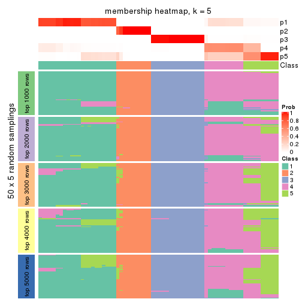
membership_heatmap(res, k = 6)
As soon as we have had the classes for columns, we can look for signatures which are significantly different between classes which can be candidate marks for certain classes. Following are the heatmaps for signatures.
Signature heatmaps where rows are scaled:
get_signatures(res, k = 2)

get_signatures(res, k = 3)
get_signatures(res, k = 4)

get_signatures(res, k = 5)
get_signatures(res, k = 6)
Signature heatmaps where rows are not scaled:
get_signatures(res, k = 2, scale_rows = FALSE)
get_signatures(res, k = 3, scale_rows = FALSE)
get_signatures(res, k = 4, scale_rows = FALSE)
get_signatures(res, k = 5, scale_rows = FALSE)
get_signatures(res, k = 6, scale_rows = FALSE)
Compare the overlap of signatures from different k:
compare_signatures(res)

get_signature() returns a data frame invisibly. TO get the list of signatures, the function
call should be assigned to a variable explicitly. In following code, if plot argument is set
to FALSE, no heatmap is plotted while only the differential analysis is performed.
# code only for demonstration
tb = get_signature(res, k = ..., plot = FALSE)
An example of the output of tb is:
#> which_row fdr mean_1 mean_2 scaled_mean_1 scaled_mean_2 km
#> 1 38 0.042760348 8.373488 9.131774 -0.5533452 0.5164555 1
#> 2 40 0.018707592 7.106213 8.469186 -0.6173731 0.5762149 1
#> 3 55 0.019134737 10.221463 11.207825 -0.6159697 0.5749050 1
#> 4 59 0.006059896 5.921854 7.869574 -0.6899429 0.6439467 1
#> 5 60 0.018055526 8.928898 10.211722 -0.6204761 0.5791110 1
#> 6 98 0.009384629 15.714769 14.887706 0.6635654 -0.6193277 2
...
The columns in tb are:
which_row: row indices corresponding to the input matrix.fdr: FDR for the differential test. mean_x: The mean value in group x.scaled_mean_x: The mean value in group x after rows are scaled.km: Row groups if k-means clustering is applied to rows.UMAP plot which shows how samples are separated.
dimension_reduction(res, k = 2, method = "UMAP")

dimension_reduction(res, k = 3, method = "UMAP")
dimension_reduction(res, k = 4, method = "UMAP")
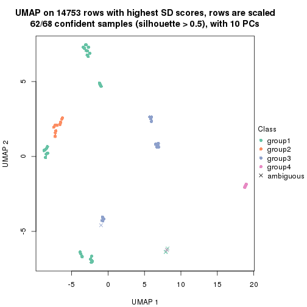
dimension_reduction(res, k = 5, method = "UMAP")
dimension_reduction(res, k = 6, method = "UMAP")
Following heatmap shows how subgroups are split when increasing k:
collect_classes(res)
If matrix rows can be associated to genes, consider to use functional_enrichment(res,
...) to perform function enrichment for the signature genes. See this vignette for more detailed explanations.
The object with results only for a single top-value method and a single partition method can be extracted as:
res = res_list["CV", "hclust"]
# you can also extract it by
# res = res_list["CV:hclust"]
A summary of res and all the functions that can be applied to it:
res
#> A 'ConsensusPartition' object with k = 2, 3, 4, 5, 6.
#> On a matrix with 14753 rows and 68 columns.
#> Top rows (1000, 2000, 3000, 4000, 5000) are extracted by 'CV' method.
#> Subgroups are detected by 'hclust' method.
#> Performed in total 1250 partitions by row resampling.
#> Best k for subgroups seems to be 2.
#>
#> Following methods can be applied to this 'ConsensusPartition' object:
#> [1] "cola_report" "collect_classes" "collect_plots"
#> [4] "collect_stats" "colnames" "compare_signatures"
#> [7] "consensus_heatmap" "dimension_reduction" "functional_enrichment"
#> [10] "get_anno_col" "get_anno" "get_classes"
#> [13] "get_consensus" "get_matrix" "get_membership"
#> [16] "get_param" "get_signatures" "get_stats"
#> [19] "is_best_k" "is_stable_k" "membership_heatmap"
#> [22] "ncol" "nrow" "plot_ecdf"
#> [25] "rownames" "select_partition_number" "show"
#> [28] "suggest_best_k" "test_to_known_factors"
collect_plots() function collects all the plots made from res for all k (number of partitions)
into one single page to provide an easy and fast comparison between different k.
collect_plots(res)
The plots are:
k and the heatmap of
predicted classes for each k.k.k.k.All the plots in panels can be made by individual functions and they are plotted later in this section.
select_partition_number() produces several plots showing different
statistics for choosing “optimized” k. There are following statistics:
k;k, the area increased is defined as \(A_k - A_{k-1}\).The detailed explanations of these statistics can be found in the cola vignette.
Generally speaking, lower PAC score, higher mean silhouette score or higher
concordance corresponds to better partition. Rand index and Jaccard index
measure how similar the current partition is compared to partition with k-1.
If they are too similar, we won't accept k is better than k-1.
select_partition_number(res)
The numeric values for all these statistics can be obtained by get_stats().
get_stats(res)
#> k 1-PAC mean_silhouette concordance area_increased Rand Jaccard
#> 2 2 1.000 0.998 0.999 0.2535 0.745 0.745
#> 3 3 1.000 0.999 0.999 0.0502 0.989 0.985
#> 4 4 1.000 1.000 1.000 0.0101 0.997 0.996
#> 5 5 0.615 0.970 0.824 0.7563 0.638 0.505
#> 6 6 0.496 0.866 0.851 0.1369 0.997 0.993
suggest_best_k() suggests the best \(k\) based on these statistics. The rules are as follows:
suggest_best_k(res)
#> [1] 2
Following shows the table of the partitions (You need to click the show/hide
code output link to see it). The membership matrix (columns with name p*)
is inferred by
clue::cl_consensus()
function with the SE method. Basically the value in the membership matrix
represents the probability to belong to a certain group. The finall class
label for an item is determined with the group with highest probability it
belongs to.
In get_classes() function, the entropy is calculated from the membership
matrix and the silhouette score is calculated from the consensus matrix.
cbind(get_classes(res, k = 2), get_membership(res, k = 2))
#> class entropy silhouette p1 p2
#> SRR562645 1 0.000 1.000 1.000 0.000
#> SRR562646 1 0.000 1.000 1.000 0.000
#> SRR562647 1 0.000 1.000 1.000 0.000
#> SRR562648 1 0.000 1.000 1.000 0.000
#> SRR562649 1 0.000 1.000 1.000 0.000
#> SRR567420 1 0.000 1.000 1.000 0.000
#> SRR567421 1 0.000 1.000 1.000 0.000
#> SRR567422 1 0.000 1.000 1.000 0.000
#> SRR567423 1 0.000 1.000 1.000 0.000
#> SRR567424 1 0.000 1.000 1.000 0.000
#> SRR567425 1 0.000 1.000 1.000 0.000
#> SRR567426 1 0.000 1.000 1.000 0.000
#> SRR567427 1 0.000 1.000 1.000 0.000
#> SRR567428 1 0.000 1.000 1.000 0.000
#> SRR567429 1 0.000 1.000 1.000 0.000
#> SRR567430 1 0.000 1.000 1.000 0.000
#> SRR567431 1 0.000 1.000 1.000 0.000
#> SRR567432 1 0.000 1.000 1.000 0.000
#> SRR567433 1 0.000 1.000 1.000 0.000
#> SRR567434 1 0.000 1.000 1.000 0.000
#> SRR567435 1 0.000 1.000 1.000 0.000
#> SRR567436 1 0.000 1.000 1.000 0.000
#> SRR567437 1 0.000 1.000 1.000 0.000
#> SRR567438 1 0.000 1.000 1.000 0.000
#> SRR567439 1 0.000 1.000 1.000 0.000
#> SRR567440 1 0.000 1.000 1.000 0.000
#> SRR567441 1 0.000 1.000 1.000 0.000
#> SRR567442 1 0.000 1.000 1.000 0.000
#> SRR567443 1 0.000 1.000 1.000 0.000
#> SRR567444 1 0.000 1.000 1.000 0.000
#> SRR567445 1 0.000 1.000 1.000 0.000
#> SRR567446 1 0.000 1.000 1.000 0.000
#> SRR567447 1 0.000 1.000 1.000 0.000
#> SRR567448 1 0.000 1.000 1.000 0.000
#> SRR567449 1 0.000 1.000 1.000 0.000
#> SRR567450 1 0.000 1.000 1.000 0.000
#> SRR567451 1 0.000 1.000 1.000 0.000
#> SRR567452 1 0.000 1.000 1.000 0.000
#> SRR567453 1 0.000 1.000 1.000 0.000
#> SRR567454 1 0.000 1.000 1.000 0.000
#> SRR567455 1 0.000 1.000 1.000 0.000
#> SRR567456 1 0.000 1.000 1.000 0.000
#> SRR567457 1 0.000 1.000 1.000 0.000
#> SRR567458 1 0.000 1.000 1.000 0.000
#> SRR567459 1 0.000 1.000 1.000 0.000
#> SRR567460 1 0.000 1.000 1.000 0.000
#> SRR567461 1 0.000 1.000 1.000 0.000
#> SRR567462 1 0.000 1.000 1.000 0.000
#> SRR567463 1 0.000 1.000 1.000 0.000
#> SRR567464 1 0.000 1.000 1.000 0.000
#> SRR567465 1 0.000 1.000 1.000 0.000
#> SRR567466 1 0.000 1.000 1.000 0.000
#> SRR567467 1 0.000 1.000 1.000 0.000
#> SRR567468 1 0.000 1.000 1.000 0.000
#> SRR567469 1 0.000 1.000 1.000 0.000
#> SRR567470 1 0.000 1.000 1.000 0.000
#> SRR567471 1 0.000 1.000 1.000 0.000
#> SRR835008 1 0.000 1.000 1.000 0.000
#> SRR835009 2 0.000 0.991 0.000 1.000
#> SRR835011 2 0.000 0.991 0.000 1.000
#> SRR835012 2 0.000 0.991 0.000 1.000
#> SRR835013 2 0.000 0.991 0.000 1.000
#> SRR835010 2 0.000 0.991 0.000 1.000
#> SRR835014 2 0.000 0.991 0.000 1.000
#> SRR835015 2 0.000 0.991 0.000 1.000
#> SRR835016 2 0.184 0.978 0.028 0.972
#> SRR835017 2 0.184 0.978 0.028 0.972
#> SRR835018 2 0.184 0.978 0.028 0.972
cbind(get_classes(res, k = 3), get_membership(res, k = 3))
#> class entropy silhouette p1 p2 p3
#> SRR562645 1 0.000 1.000 1 0.000 0.000
#> SRR562646 1 0.000 1.000 1 0.000 0.000
#> SRR562647 1 0.000 1.000 1 0.000 0.000
#> SRR562648 1 0.000 1.000 1 0.000 0.000
#> SRR562649 1 0.000 1.000 1 0.000 0.000
#> SRR567420 1 0.000 1.000 1 0.000 0.000
#> SRR567421 1 0.000 1.000 1 0.000 0.000
#> SRR567422 1 0.000 1.000 1 0.000 0.000
#> SRR567423 1 0.000 1.000 1 0.000 0.000
#> SRR567424 1 0.000 1.000 1 0.000 0.000
#> SRR567425 1 0.000 1.000 1 0.000 0.000
#> SRR567426 1 0.000 1.000 1 0.000 0.000
#> SRR567427 1 0.000 1.000 1 0.000 0.000
#> SRR567428 1 0.000 1.000 1 0.000 0.000
#> SRR567429 1 0.000 1.000 1 0.000 0.000
#> SRR567430 1 0.000 1.000 1 0.000 0.000
#> SRR567431 1 0.000 1.000 1 0.000 0.000
#> SRR567432 1 0.000 1.000 1 0.000 0.000
#> SRR567433 1 0.000 1.000 1 0.000 0.000
#> SRR567434 1 0.000 1.000 1 0.000 0.000
#> SRR567435 1 0.000 1.000 1 0.000 0.000
#> SRR567436 1 0.000 1.000 1 0.000 0.000
#> SRR567437 1 0.000 1.000 1 0.000 0.000
#> SRR567438 1 0.000 1.000 1 0.000 0.000
#> SRR567439 1 0.000 1.000 1 0.000 0.000
#> SRR567440 1 0.000 1.000 1 0.000 0.000
#> SRR567441 1 0.000 1.000 1 0.000 0.000
#> SRR567442 1 0.000 1.000 1 0.000 0.000
#> SRR567443 1 0.000 1.000 1 0.000 0.000
#> SRR567444 1 0.000 1.000 1 0.000 0.000
#> SRR567445 1 0.000 1.000 1 0.000 0.000
#> SRR567446 1 0.000 1.000 1 0.000 0.000
#> SRR567447 1 0.000 1.000 1 0.000 0.000
#> SRR567448 1 0.000 1.000 1 0.000 0.000
#> SRR567449 1 0.000 1.000 1 0.000 0.000
#> SRR567450 1 0.000 1.000 1 0.000 0.000
#> SRR567451 1 0.000 1.000 1 0.000 0.000
#> SRR567452 1 0.000 1.000 1 0.000 0.000
#> SRR567453 1 0.000 1.000 1 0.000 0.000
#> SRR567454 1 0.000 1.000 1 0.000 0.000
#> SRR567455 1 0.000 1.000 1 0.000 0.000
#> SRR567456 1 0.000 1.000 1 0.000 0.000
#> SRR567457 1 0.000 1.000 1 0.000 0.000
#> SRR567458 1 0.000 1.000 1 0.000 0.000
#> SRR567459 1 0.000 1.000 1 0.000 0.000
#> SRR567460 1 0.000 1.000 1 0.000 0.000
#> SRR567461 1 0.000 1.000 1 0.000 0.000
#> SRR567462 1 0.000 1.000 1 0.000 0.000
#> SRR567463 1 0.000 1.000 1 0.000 0.000
#> SRR567464 1 0.000 1.000 1 0.000 0.000
#> SRR567465 1 0.000 1.000 1 0.000 0.000
#> SRR567466 1 0.000 1.000 1 0.000 0.000
#> SRR567467 1 0.000 1.000 1 0.000 0.000
#> SRR567468 1 0.000 1.000 1 0.000 0.000
#> SRR567469 1 0.000 1.000 1 0.000 0.000
#> SRR567470 1 0.000 1.000 1 0.000 0.000
#> SRR567471 1 0.000 1.000 1 0.000 0.000
#> SRR835008 1 0.000 1.000 1 0.000 0.000
#> SRR835009 2 0.000 1.000 0 1.000 0.000
#> SRR835011 2 0.000 1.000 0 1.000 0.000
#> SRR835012 2 0.000 1.000 0 1.000 0.000
#> SRR835013 2 0.000 1.000 0 1.000 0.000
#> SRR835010 2 0.000 1.000 0 1.000 0.000
#> SRR835014 3 0.116 0.978 0 0.028 0.972
#> SRR835015 3 0.116 0.978 0 0.028 0.972
#> SRR835016 3 0.000 0.986 0 0.000 1.000
#> SRR835017 3 0.000 0.986 0 0.000 1.000
#> SRR835018 3 0.000 0.986 0 0.000 1.000
cbind(get_classes(res, k = 4), get_membership(res, k = 4))
#> class entropy silhouette p1 p2 p3 p4
#> SRR562645 1 0 1 1 0 0 0
#> SRR562646 1 0 1 1 0 0 0
#> SRR562647 1 0 1 1 0 0 0
#> SRR562648 1 0 1 1 0 0 0
#> SRR562649 1 0 1 1 0 0 0
#> SRR567420 1 0 1 1 0 0 0
#> SRR567421 1 0 1 1 0 0 0
#> SRR567422 1 0 1 1 0 0 0
#> SRR567423 1 0 1 1 0 0 0
#> SRR567424 1 0 1 1 0 0 0
#> SRR567425 1 0 1 1 0 0 0
#> SRR567426 1 0 1 1 0 0 0
#> SRR567427 1 0 1 1 0 0 0
#> SRR567428 1 0 1 1 0 0 0
#> SRR567429 1 0 1 1 0 0 0
#> SRR567430 1 0 1 1 0 0 0
#> SRR567431 1 0 1 1 0 0 0
#> SRR567432 1 0 1 1 0 0 0
#> SRR567433 1 0 1 1 0 0 0
#> SRR567434 1 0 1 1 0 0 0
#> SRR567435 1 0 1 1 0 0 0
#> SRR567436 1 0 1 1 0 0 0
#> SRR567437 1 0 1 1 0 0 0
#> SRR567438 1 0 1 1 0 0 0
#> SRR567439 1 0 1 1 0 0 0
#> SRR567440 1 0 1 1 0 0 0
#> SRR567441 1 0 1 1 0 0 0
#> SRR567442 1 0 1 1 0 0 0
#> SRR567443 1 0 1 1 0 0 0
#> SRR567444 1 0 1 1 0 0 0
#> SRR567445 1 0 1 1 0 0 0
#> SRR567446 1 0 1 1 0 0 0
#> SRR567447 1 0 1 1 0 0 0
#> SRR567448 1 0 1 1 0 0 0
#> SRR567449 1 0 1 1 0 0 0
#> SRR567450 1 0 1 1 0 0 0
#> SRR567451 1 0 1 1 0 0 0
#> SRR567452 1 0 1 1 0 0 0
#> SRR567453 1 0 1 1 0 0 0
#> SRR567454 1 0 1 1 0 0 0
#> SRR567455 1 0 1 1 0 0 0
#> SRR567456 1 0 1 1 0 0 0
#> SRR567457 1 0 1 1 0 0 0
#> SRR567458 1 0 1 1 0 0 0
#> SRR567459 1 0 1 1 0 0 0
#> SRR567460 1 0 1 1 0 0 0
#> SRR567461 1 0 1 1 0 0 0
#> SRR567462 1 0 1 1 0 0 0
#> SRR567463 1 0 1 1 0 0 0
#> SRR567464 1 0 1 1 0 0 0
#> SRR567465 1 0 1 1 0 0 0
#> SRR567466 1 0 1 1 0 0 0
#> SRR567467 1 0 1 1 0 0 0
#> SRR567468 1 0 1 1 0 0 0
#> SRR567469 1 0 1 1 0 0 0
#> SRR567470 1 0 1 1 0 0 0
#> SRR567471 1 0 1 1 0 0 0
#> SRR835008 1 0 1 1 0 0 0
#> SRR835009 2 0 1 0 1 0 0
#> SRR835011 2 0 1 0 1 0 0
#> SRR835012 2 0 1 0 1 0 0
#> SRR835013 2 0 1 0 1 0 0
#> SRR835010 2 0 1 0 1 0 0
#> SRR835014 4 0 1 0 0 0 1
#> SRR835015 4 0 1 0 0 0 1
#> SRR835016 3 0 1 0 0 1 0
#> SRR835017 3 0 1 0 0 1 0
#> SRR835018 3 0 1 0 0 1 0
cbind(get_classes(res, k = 5), get_membership(res, k = 5))
#> class entropy silhouette p1 p2 p3 p4 p5
#> SRR562645 3 0.429 1.000 0.46 0.0 0.54 0 0
#> SRR562646 3 0.429 1.000 0.46 0.0 0.54 0 0
#> SRR562647 3 0.429 1.000 0.46 0.0 0.54 0 0
#> SRR562648 3 0.429 1.000 0.46 0.0 0.54 0 0
#> SRR562649 3 0.429 1.000 0.46 0.0 0.54 0 0
#> SRR567420 3 0.429 1.000 0.46 0.0 0.54 0 0
#> SRR567421 3 0.429 1.000 0.46 0.0 0.54 0 0
#> SRR567422 3 0.429 1.000 0.46 0.0 0.54 0 0
#> SRR567423 3 0.429 1.000 0.46 0.0 0.54 0 0
#> SRR567424 3 0.429 1.000 0.46 0.0 0.54 0 0
#> SRR567425 1 0.000 0.977 1.00 0.0 0.00 0 0
#> SRR567426 1 0.000 0.977 1.00 0.0 0.00 0 0
#> SRR567427 1 0.000 0.977 1.00 0.0 0.00 0 0
#> SRR567428 1 0.000 0.977 1.00 0.0 0.00 0 0
#> SRR567429 1 0.000 0.977 1.00 0.0 0.00 0 0
#> SRR567430 1 0.000 0.977 1.00 0.0 0.00 0 0
#> SRR567431 1 0.000 0.977 1.00 0.0 0.00 0 0
#> SRR567432 1 0.000 0.977 1.00 0.0 0.00 0 0
#> SRR567433 1 0.000 0.977 1.00 0.0 0.00 0 0
#> SRR567434 1 0.000 0.977 1.00 0.0 0.00 0 0
#> SRR567435 1 0.000 0.977 1.00 0.0 0.00 0 0
#> SRR567436 1 0.000 0.977 1.00 0.0 0.00 0 0
#> SRR567437 1 0.000 0.977 1.00 0.0 0.00 0 0
#> SRR567438 1 0.000 0.977 1.00 0.0 0.00 0 0
#> SRR567439 1 0.000 0.977 1.00 0.0 0.00 0 0
#> SRR567440 3 0.429 1.000 0.46 0.0 0.54 0 0
#> SRR567441 3 0.429 1.000 0.46 0.0 0.54 0 0
#> SRR567442 3 0.429 1.000 0.46 0.0 0.54 0 0
#> SRR567443 3 0.429 1.000 0.46 0.0 0.54 0 0
#> SRR567444 3 0.429 1.000 0.46 0.0 0.54 0 0
#> SRR567445 1 0.000 0.977 1.00 0.0 0.00 0 0
#> SRR567446 1 0.000 0.977 1.00 0.0 0.00 0 0
#> SRR567447 1 0.000 0.977 1.00 0.0 0.00 0 0
#> SRR567448 1 0.000 0.977 1.00 0.0 0.00 0 0
#> SRR567449 1 0.000 0.977 1.00 0.0 0.00 0 0
#> SRR567450 3 0.429 1.000 0.46 0.0 0.54 0 0
#> SRR567451 3 0.429 1.000 0.46 0.0 0.54 0 0
#> SRR567452 3 0.429 1.000 0.46 0.0 0.54 0 0
#> SRR567453 3 0.429 1.000 0.46 0.0 0.54 0 0
#> SRR567454 3 0.429 1.000 0.46 0.0 0.54 0 0
#> SRR567455 3 0.429 1.000 0.46 0.0 0.54 0 0
#> SRR567456 3 0.429 1.000 0.46 0.0 0.54 0 0
#> SRR567457 1 0.141 0.911 0.94 0.0 0.06 0 0
#> SRR567458 1 0.141 0.911 0.94 0.0 0.06 0 0
#> SRR567459 1 0.141 0.911 0.94 0.0 0.06 0 0
#> SRR567460 1 0.141 0.911 0.94 0.0 0.06 0 0
#> SRR567461 1 0.141 0.911 0.94 0.0 0.06 0 0
#> SRR567462 3 0.429 1.000 0.46 0.0 0.54 0 0
#> SRR567463 3 0.429 1.000 0.46 0.0 0.54 0 0
#> SRR567464 3 0.429 1.000 0.46 0.0 0.54 0 0
#> SRR567465 3 0.429 1.000 0.46 0.0 0.54 0 0
#> SRR567466 3 0.429 1.000 0.46 0.0 0.54 0 0
#> SRR567467 3 0.429 1.000 0.46 0.0 0.54 0 0
#> SRR567468 3 0.429 1.000 0.46 0.0 0.54 0 0
#> SRR567469 3 0.429 1.000 0.46 0.0 0.54 0 0
#> SRR567470 3 0.429 1.000 0.46 0.0 0.54 0 0
#> SRR567471 3 0.429 1.000 0.46 0.0 0.54 0 0
#> SRR835008 3 0.429 1.000 0.46 0.0 0.54 0 0
#> SRR835009 2 0.000 0.702 0.00 1.0 0.00 0 0
#> SRR835011 2 0.418 0.813 0.00 0.6 0.40 0 0
#> SRR835012 2 0.418 0.813 0.00 0.6 0.40 0 0
#> SRR835013 2 0.418 0.813 0.00 0.6 0.40 0 0
#> SRR835010 2 0.000 0.702 0.00 1.0 0.00 0 0
#> SRR835014 5 0.000 1.000 0.00 0.0 0.00 0 1
#> SRR835015 5 0.000 1.000 0.00 0.0 0.00 0 1
#> SRR835016 4 0.000 1.000 0.00 0.0 0.00 1 0
#> SRR835017 4 0.000 1.000 0.00 0.0 0.00 1 0
#> SRR835018 4 0.000 1.000 0.00 0.0 0.00 1 0
cbind(get_classes(res, k = 6), get_membership(res, k = 6))
#> class entropy silhouette p1 p2 p3 p4 p5 p6
#> SRR562645 3 0.385 0.950 0.000 0 0.540 0.460 0 0.00
#> SRR562646 3 0.385 0.950 0.000 0 0.540 0.460 0 0.00
#> SRR562647 3 0.385 0.950 0.000 0 0.540 0.460 0 0.00
#> SRR562648 3 0.385 0.950 0.000 0 0.540 0.460 0 0.00
#> SRR562649 3 0.385 0.950 0.000 0 0.540 0.460 0 0.00
#> SRR567420 3 0.385 0.950 0.000 0 0.540 0.460 0 0.00
#> SRR567421 3 0.385 0.950 0.000 0 0.540 0.460 0 0.00
#> SRR567422 3 0.385 0.950 0.000 0 0.540 0.460 0 0.00
#> SRR567423 3 0.385 0.950 0.000 0 0.540 0.460 0 0.00
#> SRR567424 3 0.385 0.950 0.000 0 0.540 0.460 0 0.00
#> SRR567425 1 0.385 0.823 0.540 0 0.000 0.460 0 0.00
#> SRR567426 1 0.385 0.823 0.540 0 0.000 0.460 0 0.00
#> SRR567427 1 0.385 0.823 0.540 0 0.000 0.460 0 0.00
#> SRR567428 1 0.385 0.823 0.540 0 0.000 0.460 0 0.00
#> SRR567429 1 0.385 0.823 0.540 0 0.000 0.460 0 0.00
#> SRR567430 1 0.385 0.823 0.540 0 0.000 0.460 0 0.00
#> SRR567431 1 0.385 0.823 0.540 0 0.000 0.460 0 0.00
#> SRR567432 1 0.385 0.823 0.540 0 0.000 0.460 0 0.00
#> SRR567433 1 0.385 0.823 0.540 0 0.000 0.460 0 0.00
#> SRR567434 1 0.385 0.823 0.540 0 0.000 0.460 0 0.00
#> SRR567435 1 0.539 0.741 0.540 0 0.132 0.328 0 0.00
#> SRR567436 1 0.539 0.741 0.540 0 0.132 0.328 0 0.00
#> SRR567437 1 0.539 0.741 0.540 0 0.132 0.328 0 0.00
#> SRR567438 1 0.539 0.741 0.540 0 0.132 0.328 0 0.00
#> SRR567439 1 0.539 0.741 0.540 0 0.132 0.328 0 0.00
#> SRR567440 3 0.385 0.950 0.000 0 0.540 0.460 0 0.00
#> SRR567441 3 0.385 0.950 0.000 0 0.540 0.460 0 0.00
#> SRR567442 3 0.385 0.950 0.000 0 0.540 0.460 0 0.00
#> SRR567443 3 0.385 0.950 0.000 0 0.540 0.460 0 0.00
#> SRR567444 3 0.385 0.950 0.000 0 0.540 0.460 0 0.00
#> SRR567445 1 0.385 0.823 0.540 0 0.000 0.460 0 0.00
#> SRR567446 1 0.385 0.823 0.540 0 0.000 0.460 0 0.00
#> SRR567447 1 0.385 0.823 0.540 0 0.000 0.460 0 0.00
#> SRR567448 1 0.385 0.823 0.540 0 0.000 0.460 0 0.00
#> SRR567449 1 0.385 0.823 0.540 0 0.000 0.460 0 0.00
#> SRR567450 3 0.353 0.813 0.000 0 0.672 0.328 0 0.00
#> SRR567451 3 0.353 0.813 0.000 0 0.672 0.328 0 0.00
#> SRR567452 3 0.353 0.813 0.000 0 0.672 0.328 0 0.00
#> SRR567453 3 0.353 0.813 0.000 0 0.672 0.328 0 0.00
#> SRR567454 3 0.353 0.813 0.000 0 0.672 0.328 0 0.00
#> SRR567455 3 0.353 0.813 0.000 0 0.672 0.328 0 0.00
#> SRR567456 3 0.353 0.813 0.000 0 0.672 0.328 0 0.00
#> SRR567457 1 0.218 0.486 0.868 0 0.000 0.132 0 0.00
#> SRR567458 1 0.218 0.486 0.868 0 0.000 0.132 0 0.00
#> SRR567459 1 0.218 0.486 0.868 0 0.000 0.132 0 0.00
#> SRR567460 1 0.218 0.486 0.868 0 0.000 0.132 0 0.00
#> SRR567461 1 0.218 0.486 0.868 0 0.000 0.132 0 0.00
#> SRR567462 3 0.385 0.950 0.000 0 0.540 0.460 0 0.00
#> SRR567463 3 0.385 0.950 0.000 0 0.540 0.460 0 0.00
#> SRR567464 3 0.385 0.950 0.000 0 0.540 0.460 0 0.00
#> SRR567465 3 0.385 0.950 0.000 0 0.540 0.460 0 0.00
#> SRR567466 3 0.385 0.950 0.000 0 0.540 0.460 0 0.00
#> SRR567467 3 0.385 0.950 0.000 0 0.540 0.460 0 0.00
#> SRR567468 3 0.385 0.950 0.000 0 0.540 0.460 0 0.00
#> SRR567469 3 0.385 0.950 0.000 0 0.540 0.460 0 0.00
#> SRR567470 3 0.385 0.950 0.000 0 0.540 0.460 0 0.00
#> SRR567471 3 0.385 0.950 0.000 0 0.540 0.460 0 0.00
#> SRR835008 3 0.385 0.950 0.000 0 0.540 0.460 0 0.00
#> SRR835009 5 0.000 1.000 0.000 0 0.000 0.000 1 0.00
#> SRR835011 2 0.000 1.000 0.000 1 0.000 0.000 0 0.00
#> SRR835012 2 0.000 1.000 0.000 1 0.000 0.000 0 0.00
#> SRR835013 2 0.000 1.000 0.000 1 0.000 0.000 0 0.00
#> SRR835010 5 0.000 1.000 0.000 0 0.000 0.000 1 0.00
#> SRR835014 6 0.539 1.000 0.132 0 0.328 0.000 0 0.54
#> SRR835015 6 0.539 1.000 0.132 0 0.328 0.000 0 0.54
#> SRR835016 4 0.385 1.000 0.000 0 0.000 0.540 0 0.46
#> SRR835017 4 0.385 1.000 0.000 0 0.000 0.540 0 0.46
#> SRR835018 4 0.385 1.000 0.000 0 0.000 0.540 0 0.46
Heatmaps for the consensus matrix. It visualizes the probability of two samples to be in a same group.
consensus_heatmap(res, k = 2)
consensus_heatmap(res, k = 3)
consensus_heatmap(res, k = 4)
consensus_heatmap(res, k = 5)
consensus_heatmap(res, k = 6)
Heatmaps for the membership of samples in all partitions to see how consistent they are:
membership_heatmap(res, k = 2)
membership_heatmap(res, k = 3)
membership_heatmap(res, k = 4)
membership_heatmap(res, k = 5)
membership_heatmap(res, k = 6)
As soon as we have had the classes for columns, we can look for signatures which are significantly different between classes which can be candidate marks for certain classes. Following are the heatmaps for signatures.
Signature heatmaps where rows are scaled:
get_signatures(res, k = 2)
get_signatures(res, k = 3)
get_signatures(res, k = 4)
get_signatures(res, k = 5)
get_signatures(res, k = 6)
Signature heatmaps where rows are not scaled:
get_signatures(res, k = 2, scale_rows = FALSE)
get_signatures(res, k = 3, scale_rows = FALSE)
get_signatures(res, k = 4, scale_rows = FALSE)
get_signatures(res, k = 5, scale_rows = FALSE)
get_signatures(res, k = 6, scale_rows = FALSE)

Compare the overlap of signatures from different k:
compare_signatures(res)
get_signature() returns a data frame invisibly. TO get the list of signatures, the function
call should be assigned to a variable explicitly. In following code, if plot argument is set
to FALSE, no heatmap is plotted while only the differential analysis is performed.
# code only for demonstration
tb = get_signature(res, k = ..., plot = FALSE)
An example of the output of tb is:
#> which_row fdr mean_1 mean_2 scaled_mean_1 scaled_mean_2 km
#> 1 38 0.042760348 8.373488 9.131774 -0.5533452 0.5164555 1
#> 2 40 0.018707592 7.106213 8.469186 -0.6173731 0.5762149 1
#> 3 55 0.019134737 10.221463 11.207825 -0.6159697 0.5749050 1
#> 4 59 0.006059896 5.921854 7.869574 -0.6899429 0.6439467 1
#> 5 60 0.018055526 8.928898 10.211722 -0.6204761 0.5791110 1
#> 6 98 0.009384629 15.714769 14.887706 0.6635654 -0.6193277 2
...
The columns in tb are:
which_row: row indices corresponding to the input matrix.fdr: FDR for the differential test. mean_x: The mean value in group x.scaled_mean_x: The mean value in group x after rows are scaled.km: Row groups if k-means clustering is applied to rows.UMAP plot which shows how samples are separated.
dimension_reduction(res, k = 2, method = "UMAP")

dimension_reduction(res, k = 3, method = "UMAP")
dimension_reduction(res, k = 4, method = "UMAP")
dimension_reduction(res, k = 5, method = "UMAP")
dimension_reduction(res, k = 6, method = "UMAP")
Following heatmap shows how subgroups are split when increasing k:
collect_classes(res)
If matrix rows can be associated to genes, consider to use functional_enrichment(res,
...) to perform function enrichment for the signature genes. See this vignette for more detailed explanations.
The object with results only for a single top-value method and a single partition method can be extracted as:
res = res_list["CV", "kmeans"]
# you can also extract it by
# res = res_list["CV:kmeans"]
A summary of res and all the functions that can be applied to it:
res
#> A 'ConsensusPartition' object with k = 2, 3, 4, 5, 6.
#> On a matrix with 14753 rows and 68 columns.
#> Top rows (1000, 2000, 3000, 4000, 5000) are extracted by 'CV' method.
#> Subgroups are detected by 'kmeans' method.
#> Performed in total 1250 partitions by row resampling.
#> Best k for subgroups seems to be 3.
#>
#> Following methods can be applied to this 'ConsensusPartition' object:
#> [1] "cola_report" "collect_classes" "collect_plots"
#> [4] "collect_stats" "colnames" "compare_signatures"
#> [7] "consensus_heatmap" "dimension_reduction" "functional_enrichment"
#> [10] "get_anno_col" "get_anno" "get_classes"
#> [13] "get_consensus" "get_matrix" "get_membership"
#> [16] "get_param" "get_signatures" "get_stats"
#> [19] "is_best_k" "is_stable_k" "membership_heatmap"
#> [22] "ncol" "nrow" "plot_ecdf"
#> [25] "rownames" "select_partition_number" "show"
#> [28] "suggest_best_k" "test_to_known_factors"
collect_plots() function collects all the plots made from res for all k (number of partitions)
into one single page to provide an easy and fast comparison between different k.
collect_plots(res)
The plots are:
k and the heatmap of
predicted classes for each k.k.k.k.All the plots in panels can be made by individual functions and they are plotted later in this section.
select_partition_number() produces several plots showing different
statistics for choosing “optimized” k. There are following statistics:
k;k, the area increased is defined as \(A_k - A_{k-1}\).The detailed explanations of these statistics can be found in the cola vignette.
Generally speaking, lower PAC score, higher mean silhouette score or higher
concordance corresponds to better partition. Rand index and Jaccard index
measure how similar the current partition is compared to partition with k-1.
If they are too similar, we won't accept k is better than k-1.
select_partition_number(res)

The numeric values for all these statistics can be obtained by get_stats().
get_stats(res)
#> k 1-PAC mean_silhouette concordance area_increased Rand Jaccard
#> 2 2 0.519 0.903 0.924 0.2679 0.745 0.745
#> 3 3 0.374 0.804 0.787 0.9706 0.638 0.514
#> 4 4 0.357 0.676 0.743 0.2202 1.000 1.000
#> 5 5 0.492 0.670 0.672 0.1205 0.839 0.588
#> 6 6 0.587 0.664 0.674 0.0635 0.993 0.972
suggest_best_k() suggests the best \(k\) based on these statistics. The rules are as follows:
suggest_best_k(res)
#> [1] 3
Following shows the table of the partitions (You need to click the show/hide
code output link to see it). The membership matrix (columns with name p*)
is inferred by
clue::cl_consensus()
function with the SE method. Basically the value in the membership matrix
represents the probability to belong to a certain group. The finall class
label for an item is determined with the group with highest probability it
belongs to.
In get_classes() function, the entropy is calculated from the membership
matrix and the silhouette score is calculated from the consensus matrix.
cbind(get_classes(res, k = 2), get_membership(res, k = 2))
#> class entropy silhouette p1 p2
#> SRR562645 1 0.118 0.924 0.984 0.016
#> SRR562646 1 0.118 0.924 0.984 0.016
#> SRR562647 1 0.118 0.924 0.984 0.016
#> SRR562648 1 0.118 0.924 0.984 0.016
#> SRR562649 1 0.118 0.924 0.984 0.016
#> SRR567420 1 0.118 0.924 0.984 0.016
#> SRR567421 1 0.118 0.924 0.984 0.016
#> SRR567422 1 0.118 0.924 0.984 0.016
#> SRR567423 1 0.118 0.924 0.984 0.016
#> SRR567424 1 0.118 0.924 0.984 0.016
#> SRR567425 1 0.541 0.909 0.876 0.124
#> SRR567426 1 0.541 0.909 0.876 0.124
#> SRR567427 1 0.541 0.909 0.876 0.124
#> SRR567428 1 0.541 0.909 0.876 0.124
#> SRR567429 1 0.541 0.909 0.876 0.124
#> SRR567430 1 0.541 0.909 0.876 0.124
#> SRR567431 1 0.541 0.909 0.876 0.124
#> SRR567432 1 0.541 0.909 0.876 0.124
#> SRR567433 1 0.541 0.909 0.876 0.124
#> SRR567434 1 0.541 0.909 0.876 0.124
#> SRR567435 1 0.541 0.910 0.876 0.124
#> SRR567436 1 0.541 0.910 0.876 0.124
#> SRR567437 1 0.541 0.910 0.876 0.124
#> SRR567438 1 0.541 0.910 0.876 0.124
#> SRR567439 1 0.541 0.910 0.876 0.124
#> SRR567440 1 0.000 0.931 1.000 0.000
#> SRR567441 1 0.000 0.931 1.000 0.000
#> SRR567442 1 0.000 0.931 1.000 0.000
#> SRR567443 1 0.000 0.931 1.000 0.000
#> SRR567444 1 0.000 0.931 1.000 0.000
#> SRR567445 1 0.552 0.907 0.872 0.128
#> SRR567446 1 0.552 0.907 0.872 0.128
#> SRR567447 1 0.552 0.907 0.872 0.128
#> SRR567448 1 0.552 0.907 0.872 0.128
#> SRR567449 1 0.552 0.907 0.872 0.128
#> SRR567450 1 0.000 0.931 1.000 0.000
#> SRR567451 1 0.000 0.931 1.000 0.000
#> SRR567452 1 0.000 0.931 1.000 0.000
#> SRR567453 1 0.000 0.931 1.000 0.000
#> SRR567454 1 0.000 0.931 1.000 0.000
#> SRR567455 1 0.000 0.931 1.000 0.000
#> SRR567456 1 0.000 0.931 1.000 0.000
#> SRR567457 1 0.552 0.907 0.872 0.128
#> SRR567458 1 0.552 0.907 0.872 0.128
#> SRR567459 1 0.552 0.907 0.872 0.128
#> SRR567460 1 0.552 0.907 0.872 0.128
#> SRR567461 1 0.552 0.907 0.872 0.128
#> SRR567462 1 0.000 0.931 1.000 0.000
#> SRR567463 1 0.000 0.931 1.000 0.000
#> SRR567464 1 0.000 0.931 1.000 0.000
#> SRR567465 1 0.000 0.931 1.000 0.000
#> SRR567466 1 0.000 0.931 1.000 0.000
#> SRR567467 1 0.000 0.931 1.000 0.000
#> SRR567468 1 0.000 0.931 1.000 0.000
#> SRR567469 1 0.000 0.931 1.000 0.000
#> SRR567470 1 0.000 0.931 1.000 0.000
#> SRR567471 1 0.000 0.931 1.000 0.000
#> SRR835008 1 0.118 0.924 0.984 0.016
#> SRR835009 2 0.278 0.885 0.048 0.952
#> SRR835011 2 0.278 0.885 0.048 0.952
#> SRR835012 2 0.278 0.885 0.048 0.952
#> SRR835013 2 0.278 0.885 0.048 0.952
#> SRR835010 2 0.278 0.885 0.048 0.952
#> SRR835014 2 0.278 0.885 0.048 0.952
#> SRR835015 2 0.278 0.885 0.048 0.952
#> SRR835016 2 0.961 0.612 0.384 0.616
#> SRR835017 2 0.961 0.612 0.384 0.616
#> SRR835018 2 0.961 0.612 0.384 0.616
cbind(get_classes(res, k = 3), get_membership(res, k = 3))
#> class entropy silhouette p1 p2 p3
#> SRR562645 3 0.6348 0.723 0.212 0.048 0.740
#> SRR562646 3 0.6348 0.723 0.212 0.048 0.740
#> SRR562647 3 0.6348 0.723 0.212 0.048 0.740
#> SRR562648 3 0.6348 0.723 0.212 0.048 0.740
#> SRR562649 3 0.6348 0.723 0.212 0.048 0.740
#> SRR567420 3 0.6348 0.723 0.212 0.048 0.740
#> SRR567421 3 0.6348 0.723 0.212 0.048 0.740
#> SRR567422 3 0.6348 0.723 0.212 0.048 0.740
#> SRR567423 3 0.6348 0.723 0.212 0.048 0.740
#> SRR567424 3 0.6348 0.723 0.212 0.048 0.740
#> SRR567425 1 0.5465 0.915 0.712 0.000 0.288
#> SRR567426 1 0.5465 0.915 0.712 0.000 0.288
#> SRR567427 1 0.5465 0.915 0.712 0.000 0.288
#> SRR567428 1 0.5465 0.915 0.712 0.000 0.288
#> SRR567429 1 0.5465 0.915 0.712 0.000 0.288
#> SRR567430 1 0.5465 0.915 0.712 0.000 0.288
#> SRR567431 1 0.5465 0.915 0.712 0.000 0.288
#> SRR567432 1 0.5465 0.915 0.712 0.000 0.288
#> SRR567433 1 0.5465 0.915 0.712 0.000 0.288
#> SRR567434 1 0.5465 0.915 0.712 0.000 0.288
#> SRR567435 1 0.5058 0.885 0.756 0.000 0.244
#> SRR567436 1 0.5058 0.885 0.756 0.000 0.244
#> SRR567437 1 0.5058 0.885 0.756 0.000 0.244
#> SRR567438 1 0.5058 0.885 0.756 0.000 0.244
#> SRR567439 1 0.5058 0.885 0.756 0.000 0.244
#> SRR567440 3 0.0000 0.816 0.000 0.000 1.000
#> SRR567441 3 0.0000 0.816 0.000 0.000 1.000
#> SRR567442 3 0.0000 0.816 0.000 0.000 1.000
#> SRR567443 3 0.0000 0.816 0.000 0.000 1.000
#> SRR567444 3 0.0000 0.816 0.000 0.000 1.000
#> SRR567445 1 0.5529 0.896 0.704 0.000 0.296
#> SRR567446 1 0.5529 0.896 0.704 0.000 0.296
#> SRR567447 1 0.5529 0.896 0.704 0.000 0.296
#> SRR567448 1 0.5529 0.896 0.704 0.000 0.296
#> SRR567449 1 0.5529 0.896 0.704 0.000 0.296
#> SRR567450 3 0.5070 0.730 0.224 0.004 0.772
#> SRR567451 3 0.5070 0.730 0.224 0.004 0.772
#> SRR567452 3 0.5070 0.730 0.224 0.004 0.772
#> SRR567453 3 0.4931 0.742 0.212 0.004 0.784
#> SRR567454 3 0.5070 0.730 0.224 0.004 0.772
#> SRR567455 3 0.5070 0.730 0.224 0.004 0.772
#> SRR567456 3 0.5070 0.730 0.224 0.004 0.772
#> SRR567457 1 0.6473 0.798 0.652 0.016 0.332
#> SRR567458 1 0.6473 0.798 0.652 0.016 0.332
#> SRR567459 1 0.6473 0.798 0.652 0.016 0.332
#> SRR567460 1 0.6473 0.798 0.652 0.016 0.332
#> SRR567461 1 0.6473 0.798 0.652 0.016 0.332
#> SRR567462 3 0.0475 0.815 0.004 0.004 0.992
#> SRR567463 3 0.0475 0.815 0.004 0.004 0.992
#> SRR567464 3 0.0475 0.815 0.004 0.004 0.992
#> SRR567465 3 0.0475 0.815 0.004 0.004 0.992
#> SRR567466 3 0.0475 0.815 0.004 0.004 0.992
#> SRR567467 3 0.2229 0.788 0.044 0.012 0.944
#> SRR567468 3 0.2229 0.788 0.044 0.012 0.944
#> SRR567469 3 0.2229 0.788 0.044 0.012 0.944
#> SRR567470 3 0.2229 0.788 0.044 0.012 0.944
#> SRR567471 3 0.2229 0.788 0.044 0.012 0.944
#> SRR835008 3 0.3481 0.802 0.052 0.044 0.904
#> SRR835009 2 0.2625 0.833 0.084 0.916 0.000
#> SRR835011 2 0.3141 0.840 0.068 0.912 0.020
#> SRR835012 2 0.3141 0.840 0.068 0.912 0.020
#> SRR835013 2 0.3141 0.840 0.068 0.912 0.020
#> SRR835010 2 0.2625 0.833 0.084 0.916 0.000
#> SRR835014 2 0.3619 0.832 0.136 0.864 0.000
#> SRR835015 2 0.3619 0.832 0.136 0.864 0.000
#> SRR835016 2 0.9350 0.520 0.184 0.488 0.328
#> SRR835017 2 0.9350 0.520 0.184 0.488 0.328
#> SRR835018 2 0.9350 0.520 0.184 0.488 0.328
cbind(get_classes(res, k = 4), get_membership(res, k = 4))
#> class entropy silhouette p1 p2 p3 p4
#> SRR562645 3 0.765 0.527 0.244 0.004 0.500 NA
#> SRR562646 3 0.765 0.527 0.244 0.004 0.500 NA
#> SRR562647 3 0.765 0.527 0.244 0.004 0.500 NA
#> SRR562648 3 0.765 0.527 0.244 0.004 0.500 NA
#> SRR562649 3 0.765 0.527 0.244 0.004 0.500 NA
#> SRR567420 3 0.750 0.527 0.244 0.000 0.500 NA
#> SRR567421 3 0.750 0.527 0.244 0.000 0.500 NA
#> SRR567422 3 0.750 0.527 0.244 0.000 0.500 NA
#> SRR567423 3 0.750 0.527 0.244 0.000 0.500 NA
#> SRR567424 3 0.750 0.527 0.244 0.000 0.500 NA
#> SRR567425 1 0.222 0.830 0.908 0.000 0.092 NA
#> SRR567426 1 0.222 0.830 0.908 0.000 0.092 NA
#> SRR567427 1 0.222 0.830 0.908 0.000 0.092 NA
#> SRR567428 1 0.222 0.830 0.908 0.000 0.092 NA
#> SRR567429 1 0.222 0.830 0.908 0.000 0.092 NA
#> SRR567430 1 0.222 0.830 0.908 0.000 0.092 NA
#> SRR567431 1 0.222 0.830 0.908 0.000 0.092 NA
#> SRR567432 1 0.222 0.830 0.908 0.000 0.092 NA
#> SRR567433 1 0.222 0.830 0.908 0.000 0.092 NA
#> SRR567434 1 0.222 0.830 0.908 0.000 0.092 NA
#> SRR567435 1 0.376 0.760 0.848 0.000 0.048 NA
#> SRR567436 1 0.376 0.760 0.848 0.000 0.048 NA
#> SRR567437 1 0.376 0.760 0.848 0.000 0.048 NA
#> SRR567438 1 0.376 0.760 0.848 0.000 0.048 NA
#> SRR567439 1 0.376 0.760 0.848 0.000 0.048 NA
#> SRR567440 3 0.126 0.697 0.028 0.000 0.964 NA
#> SRR567441 3 0.126 0.697 0.028 0.000 0.964 NA
#> SRR567442 3 0.126 0.697 0.028 0.000 0.964 NA
#> SRR567443 3 0.126 0.697 0.028 0.000 0.964 NA
#> SRR567444 3 0.126 0.697 0.028 0.000 0.964 NA
#> SRR567445 1 0.484 0.791 0.780 0.000 0.140 NA
#> SRR567446 1 0.484 0.791 0.780 0.000 0.140 NA
#> SRR567447 1 0.484 0.791 0.780 0.000 0.140 NA
#> SRR567448 1 0.484 0.791 0.780 0.000 0.140 NA
#> SRR567449 1 0.484 0.791 0.780 0.000 0.140 NA
#> SRR567450 3 0.731 0.582 0.196 0.012 0.584 NA
#> SRR567451 3 0.731 0.582 0.196 0.012 0.584 NA
#> SRR567452 3 0.731 0.582 0.196 0.012 0.584 NA
#> SRR567453 3 0.731 0.582 0.196 0.012 0.584 NA
#> SRR567454 3 0.731 0.582 0.196 0.012 0.584 NA
#> SRR567455 3 0.731 0.582 0.196 0.012 0.584 NA
#> SRR567456 3 0.731 0.582 0.196 0.012 0.584 NA
#> SRR567457 1 0.749 0.565 0.528 0.004 0.232 NA
#> SRR567458 1 0.749 0.565 0.528 0.004 0.232 NA
#> SRR567459 1 0.749 0.565 0.528 0.004 0.232 NA
#> SRR567460 1 0.749 0.565 0.528 0.004 0.232 NA
#> SRR567461 1 0.749 0.565 0.528 0.004 0.232 NA
#> SRR567462 3 0.162 0.696 0.028 0.000 0.952 NA
#> SRR567463 3 0.162 0.696 0.028 0.000 0.952 NA
#> SRR567464 3 0.162 0.696 0.028 0.000 0.952 NA
#> SRR567465 3 0.162 0.696 0.028 0.000 0.952 NA
#> SRR567466 3 0.162 0.696 0.028 0.000 0.952 NA
#> SRR567467 3 0.310 0.629 0.004 0.008 0.872 NA
#> SRR567468 3 0.310 0.629 0.004 0.008 0.872 NA
#> SRR567469 3 0.310 0.629 0.004 0.008 0.872 NA
#> SRR567470 3 0.310 0.629 0.004 0.008 0.872 NA
#> SRR567471 3 0.310 0.629 0.004 0.008 0.872 NA
#> SRR835008 3 0.425 0.679 0.064 0.000 0.820 NA
#> SRR835009 2 0.111 0.809 0.028 0.968 0.000 NA
#> SRR835011 2 0.183 0.809 0.032 0.944 0.000 NA
#> SRR835012 2 0.183 0.809 0.032 0.944 0.000 NA
#> SRR835013 2 0.183 0.809 0.032 0.944 0.000 NA
#> SRR835010 2 0.111 0.809 0.028 0.968 0.000 NA
#> SRR835014 2 0.369 0.796 0.032 0.844 0.000 NA
#> SRR835015 2 0.369 0.796 0.032 0.844 0.000 NA
#> SRR835016 2 0.876 0.447 0.040 0.376 0.272 NA
#> SRR835017 2 0.876 0.447 0.040 0.376 0.272 NA
#> SRR835018 2 0.876 0.447 0.040 0.376 0.272 NA
cbind(get_classes(res, k = 5), get_membership(res, k = 5))
#> class entropy silhouette p1 p2 p3 p4 p5
#> SRR562645 4 0.6518 0.9951 0.148 0.000 0.408 0.436 0.008
#> SRR562646 4 0.6518 0.9951 0.148 0.000 0.408 0.436 0.008
#> SRR562647 4 0.6518 0.9951 0.148 0.000 0.408 0.436 0.008
#> SRR562648 4 0.6518 0.9951 0.148 0.000 0.408 0.436 0.008
#> SRR562649 4 0.6518 0.9951 0.148 0.000 0.408 0.436 0.008
#> SRR567420 4 0.6269 0.9951 0.148 0.000 0.408 0.444 0.000
#> SRR567421 4 0.6269 0.9951 0.148 0.000 0.408 0.444 0.000
#> SRR567422 4 0.6269 0.9951 0.148 0.000 0.408 0.444 0.000
#> SRR567423 4 0.6269 0.9951 0.148 0.000 0.408 0.444 0.000
#> SRR567424 4 0.6269 0.9951 0.148 0.000 0.408 0.444 0.000
#> SRR567425 1 0.0290 0.8568 0.992 0.000 0.008 0.000 0.000
#> SRR567426 1 0.0290 0.8568 0.992 0.000 0.008 0.000 0.000
#> SRR567427 1 0.0290 0.8568 0.992 0.000 0.008 0.000 0.000
#> SRR567428 1 0.0290 0.8568 0.992 0.000 0.008 0.000 0.000
#> SRR567429 1 0.0290 0.8568 0.992 0.000 0.008 0.000 0.000
#> SRR567430 1 0.0290 0.8568 0.992 0.000 0.008 0.000 0.000
#> SRR567431 1 0.0290 0.8568 0.992 0.000 0.008 0.000 0.000
#> SRR567432 1 0.0290 0.8568 0.992 0.000 0.008 0.000 0.000
#> SRR567433 1 0.0290 0.8568 0.992 0.000 0.008 0.000 0.000
#> SRR567434 1 0.0290 0.8568 0.992 0.000 0.008 0.000 0.000
#> SRR567435 1 0.3355 0.7542 0.832 0.000 0.000 0.036 0.132
#> SRR567436 1 0.3355 0.7542 0.832 0.000 0.000 0.036 0.132
#> SRR567437 1 0.3355 0.7542 0.832 0.000 0.000 0.036 0.132
#> SRR567438 1 0.3355 0.7542 0.832 0.000 0.000 0.036 0.132
#> SRR567439 1 0.3355 0.7542 0.832 0.000 0.000 0.036 0.132
#> SRR567440 3 0.1668 0.5721 0.028 0.000 0.940 0.032 0.000
#> SRR567441 3 0.1668 0.5721 0.028 0.000 0.940 0.032 0.000
#> SRR567442 3 0.1668 0.5721 0.028 0.000 0.940 0.032 0.000
#> SRR567443 3 0.1668 0.5721 0.028 0.000 0.940 0.032 0.000
#> SRR567444 3 0.1668 0.5721 0.028 0.000 0.940 0.032 0.000
#> SRR567445 1 0.4489 0.6971 0.776 0.000 0.036 0.036 0.152
#> SRR567446 1 0.4489 0.6971 0.776 0.000 0.036 0.036 0.152
#> SRR567447 1 0.4489 0.6971 0.776 0.000 0.036 0.036 0.152
#> SRR567448 1 0.4489 0.6971 0.776 0.000 0.036 0.036 0.152
#> SRR567449 1 0.4489 0.6971 0.776 0.000 0.036 0.036 0.152
#> SRR567450 3 0.7050 0.3917 0.144 0.000 0.452 0.040 0.364
#> SRR567451 3 0.7050 0.3917 0.144 0.000 0.452 0.040 0.364
#> SRR567452 3 0.7050 0.3917 0.144 0.000 0.452 0.040 0.364
#> SRR567453 3 0.7050 0.3917 0.144 0.000 0.452 0.040 0.364
#> SRR567454 3 0.7050 0.3917 0.144 0.000 0.452 0.040 0.364
#> SRR567455 3 0.7050 0.3917 0.144 0.000 0.452 0.040 0.364
#> SRR567456 3 0.7050 0.3917 0.144 0.000 0.452 0.040 0.364
#> SRR567457 5 0.8264 0.4767 0.352 0.012 0.148 0.124 0.364
#> SRR567458 5 0.8264 0.4767 0.352 0.012 0.148 0.124 0.364
#> SRR567459 5 0.8264 0.4767 0.352 0.012 0.148 0.124 0.364
#> SRR567460 5 0.8264 0.4767 0.352 0.012 0.148 0.124 0.364
#> SRR567461 5 0.8264 0.4767 0.352 0.012 0.148 0.124 0.364
#> SRR567462 3 0.2086 0.5736 0.028 0.000 0.928 0.028 0.016
#> SRR567463 3 0.2086 0.5736 0.028 0.000 0.928 0.028 0.016
#> SRR567464 3 0.2086 0.5736 0.028 0.000 0.928 0.028 0.016
#> SRR567465 3 0.2086 0.5736 0.028 0.000 0.928 0.028 0.016
#> SRR567466 3 0.2086 0.5736 0.028 0.000 0.928 0.028 0.016
#> SRR567467 3 0.4922 0.5275 0.004 0.000 0.720 0.180 0.096
#> SRR567468 3 0.4922 0.5275 0.004 0.000 0.720 0.180 0.096
#> SRR567469 3 0.4922 0.5275 0.004 0.000 0.720 0.180 0.096
#> SRR567470 3 0.4922 0.5275 0.004 0.000 0.720 0.180 0.096
#> SRR567471 3 0.4922 0.5275 0.004 0.000 0.720 0.180 0.096
#> SRR835008 3 0.4637 -0.1286 0.076 0.000 0.728 0.196 0.000
#> SRR835009 2 0.0981 0.9158 0.012 0.972 0.000 0.008 0.008
#> SRR835011 2 0.1978 0.9188 0.012 0.932 0.000 0.032 0.024
#> SRR835012 2 0.1978 0.9188 0.012 0.932 0.000 0.032 0.024
#> SRR835013 2 0.1978 0.9188 0.012 0.932 0.000 0.032 0.024
#> SRR835010 2 0.0981 0.9158 0.012 0.972 0.000 0.008 0.008
#> SRR835014 2 0.4169 0.8373 0.012 0.800 0.000 0.116 0.072
#> SRR835015 2 0.4169 0.8373 0.012 0.800 0.000 0.116 0.072
#> SRR835016 5 0.9417 0.0493 0.064 0.228 0.204 0.188 0.316
#> SRR835017 5 0.9417 0.0493 0.064 0.228 0.204 0.188 0.316
#> SRR835018 5 0.9417 0.0493 0.064 0.228 0.204 0.188 0.316
cbind(get_classes(res, k = 6), get_membership(res, k = 6))
#> class entropy silhouette p1 p2 p3 p4 p5 p6
#> SRR562645 4 0.4856 0.9910 0.140 0.000 0.144 0.700 0.000 0.016
#> SRR562646 4 0.4856 0.9910 0.140 0.000 0.144 0.700 0.000 0.016
#> SRR562647 4 0.4856 0.9910 0.140 0.000 0.144 0.700 0.000 0.016
#> SRR562648 4 0.4856 0.9910 0.140 0.000 0.144 0.700 0.000 0.016
#> SRR562649 4 0.4856 0.9910 0.140 0.000 0.144 0.700 0.000 0.016
#> SRR567420 4 0.4429 0.9910 0.140 0.000 0.144 0.716 0.000 0.000
#> SRR567421 4 0.4429 0.9910 0.140 0.000 0.144 0.716 0.000 0.000
#> SRR567422 4 0.4429 0.9910 0.140 0.000 0.144 0.716 0.000 0.000
#> SRR567423 4 0.4429 0.9910 0.140 0.000 0.144 0.716 0.000 0.000
#> SRR567424 4 0.4429 0.9910 0.140 0.000 0.144 0.716 0.000 0.000
#> SRR567425 1 0.0260 0.7320 0.992 0.000 0.008 0.000 0.000 0.000
#> SRR567426 1 0.0405 0.7317 0.988 0.000 0.008 0.000 0.000 0.004
#> SRR567427 1 0.0260 0.7320 0.992 0.000 0.008 0.000 0.000 0.000
#> SRR567428 1 0.0405 0.7317 0.988 0.000 0.008 0.000 0.000 0.004
#> SRR567429 1 0.0405 0.7317 0.988 0.000 0.008 0.000 0.000 0.004
#> SRR567430 1 0.0260 0.7320 0.992 0.000 0.008 0.000 0.000 0.000
#> SRR567431 1 0.0260 0.7320 0.992 0.000 0.008 0.000 0.000 0.000
#> SRR567432 1 0.0260 0.7320 0.992 0.000 0.008 0.000 0.000 0.000
#> SRR567433 1 0.0405 0.7317 0.988 0.000 0.008 0.000 0.000 0.004
#> SRR567434 1 0.0260 0.7320 0.992 0.000 0.008 0.000 0.000 0.000
#> SRR567435 1 0.5699 0.5423 0.660 0.000 0.004 0.144 0.076 0.116
#> SRR567436 1 0.5699 0.5423 0.660 0.000 0.004 0.144 0.076 0.116
#> SRR567437 1 0.5699 0.5423 0.660 0.000 0.004 0.144 0.076 0.116
#> SRR567438 1 0.5699 0.5423 0.660 0.000 0.004 0.144 0.076 0.116
#> SRR567439 1 0.5699 0.5423 0.660 0.000 0.004 0.144 0.076 0.116
#> SRR567440 3 0.2300 0.6041 0.000 0.000 0.856 0.144 0.000 0.000
#> SRR567441 3 0.2300 0.6041 0.000 0.000 0.856 0.144 0.000 0.000
#> SRR567442 3 0.2300 0.6041 0.000 0.000 0.856 0.144 0.000 0.000
#> SRR567443 3 0.2300 0.6041 0.000 0.000 0.856 0.144 0.000 0.000
#> SRR567444 3 0.2300 0.6041 0.000 0.000 0.856 0.144 0.000 0.000
#> SRR567445 1 0.5582 0.3183 0.652 0.000 0.028 0.032 0.064 0.224
#> SRR567446 1 0.5582 0.3183 0.652 0.000 0.028 0.032 0.064 0.224
#> SRR567447 1 0.5582 0.3183 0.652 0.000 0.028 0.032 0.064 0.224
#> SRR567448 1 0.5582 0.3183 0.652 0.000 0.028 0.032 0.064 0.224
#> SRR567449 1 0.5582 0.3183 0.652 0.000 0.028 0.032 0.064 0.224
#> SRR567450 3 0.8290 0.2054 0.076 0.000 0.304 0.300 0.216 0.104
#> SRR567451 3 0.8290 0.2054 0.076 0.000 0.304 0.300 0.216 0.104
#> SRR567452 3 0.8290 0.2054 0.076 0.000 0.304 0.300 0.216 0.104
#> SRR567453 3 0.8290 0.2054 0.076 0.000 0.304 0.300 0.216 0.104
#> SRR567454 3 0.8290 0.2054 0.076 0.000 0.304 0.300 0.216 0.104
#> SRR567455 3 0.8290 0.2054 0.076 0.000 0.304 0.300 0.216 0.104
#> SRR567456 3 0.8290 0.2054 0.076 0.000 0.304 0.300 0.216 0.104
#> SRR567457 6 0.5256 0.9968 0.268 0.000 0.056 0.044 0.000 0.632
#> SRR567458 6 0.5256 0.9968 0.268 0.000 0.056 0.044 0.000 0.632
#> SRR567459 6 0.5256 0.9968 0.268 0.000 0.056 0.044 0.000 0.632
#> SRR567460 6 0.5256 0.9968 0.268 0.000 0.056 0.044 0.000 0.632
#> SRR567461 6 0.5610 0.9873 0.268 0.000 0.056 0.052 0.008 0.616
#> SRR567462 3 0.3394 0.5827 0.000 0.000 0.832 0.104 0.028 0.036
#> SRR567463 3 0.3394 0.5827 0.000 0.000 0.832 0.104 0.028 0.036
#> SRR567464 3 0.3394 0.5827 0.000 0.000 0.832 0.104 0.028 0.036
#> SRR567465 3 0.3394 0.5827 0.000 0.000 0.832 0.104 0.028 0.036
#> SRR567466 3 0.3394 0.5827 0.000 0.000 0.832 0.104 0.028 0.036
#> SRR567467 3 0.4478 0.5009 0.000 0.000 0.764 0.064 0.096 0.076
#> SRR567468 3 0.4478 0.5009 0.000 0.000 0.764 0.064 0.096 0.076
#> SRR567469 3 0.4478 0.5009 0.000 0.000 0.764 0.064 0.096 0.076
#> SRR567470 3 0.4478 0.5009 0.000 0.000 0.764 0.064 0.096 0.076
#> SRR567471 3 0.4478 0.5009 0.000 0.000 0.764 0.064 0.096 0.076
#> SRR835008 3 0.5447 -0.0287 0.060 0.000 0.520 0.396 0.004 0.020
#> SRR835009 2 0.0964 0.8656 0.000 0.968 0.000 0.004 0.012 0.016
#> SRR835011 2 0.1708 0.8708 0.000 0.932 0.000 0.004 0.040 0.024
#> SRR835012 2 0.1708 0.8708 0.000 0.932 0.000 0.004 0.040 0.024
#> SRR835013 2 0.1708 0.8708 0.000 0.932 0.000 0.004 0.040 0.024
#> SRR835010 2 0.0964 0.8656 0.000 0.968 0.000 0.004 0.012 0.016
#> SRR835014 2 0.3761 0.7172 0.000 0.764 0.000 0.008 0.196 0.032
#> SRR835015 2 0.3761 0.7172 0.000 0.764 0.000 0.008 0.196 0.032
#> SRR835016 5 0.5932 1.0000 0.008 0.136 0.112 0.068 0.664 0.012
#> SRR835017 5 0.5932 1.0000 0.008 0.136 0.112 0.068 0.664 0.012
#> SRR835018 5 0.5932 1.0000 0.008 0.136 0.112 0.068 0.664 0.012
Heatmaps for the consensus matrix. It visualizes the probability of two samples to be in a same group.
consensus_heatmap(res, k = 2)
consensus_heatmap(res, k = 3)
consensus_heatmap(res, k = 4)
consensus_heatmap(res, k = 5)
consensus_heatmap(res, k = 6)

Heatmaps for the membership of samples in all partitions to see how consistent they are:
membership_heatmap(res, k = 2)
membership_heatmap(res, k = 3)
membership_heatmap(res, k = 4)
membership_heatmap(res, k = 5)
membership_heatmap(res, k = 6)
As soon as we have had the classes for columns, we can look for signatures which are significantly different between classes which can be candidate marks for certain classes. Following are the heatmaps for signatures.
Signature heatmaps where rows are scaled:
get_signatures(res, k = 2)
get_signatures(res, k = 3)
get_signatures(res, k = 4)

get_signatures(res, k = 5)
get_signatures(res, k = 6)
Signature heatmaps where rows are not scaled:
get_signatures(res, k = 2, scale_rows = FALSE)
get_signatures(res, k = 3, scale_rows = FALSE)
get_signatures(res, k = 4, scale_rows = FALSE)
get_signatures(res, k = 5, scale_rows = FALSE)
get_signatures(res, k = 6, scale_rows = FALSE)
Compare the overlap of signatures from different k:
compare_signatures(res)
get_signature() returns a data frame invisibly. TO get the list of signatures, the function
call should be assigned to a variable explicitly. In following code, if plot argument is set
to FALSE, no heatmap is plotted while only the differential analysis is performed.
# code only for demonstration
tb = get_signature(res, k = ..., plot = FALSE)
An example of the output of tb is:
#> which_row fdr mean_1 mean_2 scaled_mean_1 scaled_mean_2 km
#> 1 38 0.042760348 8.373488 9.131774 -0.5533452 0.5164555 1
#> 2 40 0.018707592 7.106213 8.469186 -0.6173731 0.5762149 1
#> 3 55 0.019134737 10.221463 11.207825 -0.6159697 0.5749050 1
#> 4 59 0.006059896 5.921854 7.869574 -0.6899429 0.6439467 1
#> 5 60 0.018055526 8.928898 10.211722 -0.6204761 0.5791110 1
#> 6 98 0.009384629 15.714769 14.887706 0.6635654 -0.6193277 2
...
The columns in tb are:
which_row: row indices corresponding to the input matrix.fdr: FDR for the differential test. mean_x: The mean value in group x.scaled_mean_x: The mean value in group x after rows are scaled.km: Row groups if k-means clustering is applied to rows.UMAP plot which shows how samples are separated.
dimension_reduction(res, k = 2, method = "UMAP")

dimension_reduction(res, k = 3, method = "UMAP")
dimension_reduction(res, k = 4, method = "UMAP")
dimension_reduction(res, k = 5, method = "UMAP")
dimension_reduction(res, k = 6, method = "UMAP")
Following heatmap shows how subgroups are split when increasing k:
collect_classes(res)
If matrix rows can be associated to genes, consider to use functional_enrichment(res,
...) to perform function enrichment for the signature genes. See this vignette for more detailed explanations.
The object with results only for a single top-value method and a single partition method can be extracted as:
res = res_list["CV", "skmeans"]
# you can also extract it by
# res = res_list["CV:skmeans"]
A summary of res and all the functions that can be applied to it:
res
#> A 'ConsensusPartition' object with k = 2, 3, 4, 5, 6.
#> On a matrix with 14753 rows and 68 columns.
#> Top rows (1000, 2000, 3000, 4000, 5000) are extracted by 'CV' method.
#> Subgroups are detected by 'skmeans' method.
#> Performed in total 1250 partitions by row resampling.
#> Best k for subgroups seems to be 3.
#>
#> Following methods can be applied to this 'ConsensusPartition' object:
#> [1] "cola_report" "collect_classes" "collect_plots"
#> [4] "collect_stats" "colnames" "compare_signatures"
#> [7] "consensus_heatmap" "dimension_reduction" "functional_enrichment"
#> [10] "get_anno_col" "get_anno" "get_classes"
#> [13] "get_consensus" "get_matrix" "get_membership"
#> [16] "get_param" "get_signatures" "get_stats"
#> [19] "is_best_k" "is_stable_k" "membership_heatmap"
#> [22] "ncol" "nrow" "plot_ecdf"
#> [25] "rownames" "select_partition_number" "show"
#> [28] "suggest_best_k" "test_to_known_factors"
collect_plots() function collects all the plots made from res for all k (number of partitions)
into one single page to provide an easy and fast comparison between different k.
collect_plots(res)
The plots are:
k and the heatmap of
predicted classes for each k.k.k.k.All the plots in panels can be made by individual functions and they are plotted later in this section.
select_partition_number() produces several plots showing different
statistics for choosing “optimized” k. There are following statistics:
k;k, the area increased is defined as \(A_k - A_{k-1}\).The detailed explanations of these statistics can be found in the cola vignette.
Generally speaking, lower PAC score, higher mean silhouette score or higher
concordance corresponds to better partition. Rand index and Jaccard index
measure how similar the current partition is compared to partition with k-1.
If they are too similar, we won't accept k is better than k-1.
select_partition_number(res)
The numeric values for all these statistics can be obtained by get_stats().
get_stats(res)
#> k 1-PAC mean_silhouette concordance area_increased Rand Jaccard
#> 2 2 0.458 0.586 0.796 0.386 0.745 0.745
#> 3 3 0.554 0.896 0.921 0.552 0.638 0.514
#> 4 4 0.600 0.806 0.795 0.164 0.899 0.737
#> 5 5 0.711 0.800 0.822 0.100 0.942 0.798
#> 6 6 0.851 0.877 0.898 0.059 0.943 0.762
suggest_best_k() suggests the best \(k\) based on these statistics. The rules are as follows:
suggest_best_k(res)
#> [1] 3
Following shows the table of the partitions (You need to click the show/hide
code output link to see it). The membership matrix (columns with name p*)
is inferred by
clue::cl_consensus()
function with the SE method. Basically the value in the membership matrix
represents the probability to belong to a certain group. The finall class
label for an item is determined with the group with highest probability it
belongs to.
In get_classes() function, the entropy is calculated from the membership
matrix and the silhouette score is calculated from the consensus matrix.
cbind(get_classes(res, k = 2), get_membership(res, k = 2))
#> class entropy silhouette p1 p2
#> SRR562645 1 0.9977 0.695 0.528 0.472
#> SRR562646 1 0.9977 0.695 0.528 0.472
#> SRR562647 1 0.9977 0.695 0.528 0.472
#> SRR562648 1 0.9977 0.695 0.528 0.472
#> SRR562649 1 0.9977 0.695 0.528 0.472
#> SRR567420 1 0.9977 0.695 0.528 0.472
#> SRR567421 1 0.9977 0.695 0.528 0.472
#> SRR567422 1 0.9977 0.695 0.528 0.472
#> SRR567423 1 0.9977 0.695 0.528 0.472
#> SRR567424 1 0.9977 0.695 0.528 0.472
#> SRR567425 1 0.0000 0.476 1.000 0.000
#> SRR567426 1 0.0000 0.476 1.000 0.000
#> SRR567427 1 0.0000 0.476 1.000 0.000
#> SRR567428 1 0.0000 0.476 1.000 0.000
#> SRR567429 1 0.0000 0.476 1.000 0.000
#> SRR567430 1 0.0000 0.476 1.000 0.000
#> SRR567431 1 0.0000 0.476 1.000 0.000
#> SRR567432 1 0.0000 0.476 1.000 0.000
#> SRR567433 1 0.0000 0.476 1.000 0.000
#> SRR567434 1 0.0000 0.476 1.000 0.000
#> SRR567435 1 0.0000 0.476 1.000 0.000
#> SRR567436 1 0.0000 0.476 1.000 0.000
#> SRR567437 1 0.0000 0.476 1.000 0.000
#> SRR567438 1 0.0000 0.476 1.000 0.000
#> SRR567439 1 0.0000 0.476 1.000 0.000
#> SRR567440 1 0.9977 0.695 0.528 0.472
#> SRR567441 1 0.9977 0.695 0.528 0.472
#> SRR567442 1 0.9977 0.695 0.528 0.472
#> SRR567443 1 0.9977 0.695 0.528 0.472
#> SRR567444 1 0.9977 0.695 0.528 0.472
#> SRR567445 1 0.0000 0.476 1.000 0.000
#> SRR567446 1 0.0000 0.476 1.000 0.000
#> SRR567447 1 0.0000 0.476 1.000 0.000
#> SRR567448 1 0.0000 0.476 1.000 0.000
#> SRR567449 1 0.0000 0.476 1.000 0.000
#> SRR567450 1 0.9977 0.695 0.528 0.472
#> SRR567451 1 0.9977 0.695 0.528 0.472
#> SRR567452 1 0.9977 0.695 0.528 0.472
#> SRR567453 1 0.9977 0.695 0.528 0.472
#> SRR567454 1 0.9977 0.695 0.528 0.472
#> SRR567455 1 0.9977 0.695 0.528 0.472
#> SRR567456 1 0.9977 0.695 0.528 0.472
#> SRR567457 1 0.5629 0.203 0.868 0.132
#> SRR567458 1 0.5629 0.203 0.868 0.132
#> SRR567459 1 0.5629 0.203 0.868 0.132
#> SRR567460 1 0.5629 0.203 0.868 0.132
#> SRR567461 1 0.5629 0.203 0.868 0.132
#> SRR567462 1 0.9977 0.695 0.528 0.472
#> SRR567463 1 0.9977 0.695 0.528 0.472
#> SRR567464 1 0.9977 0.695 0.528 0.472
#> SRR567465 1 0.9977 0.695 0.528 0.472
#> SRR567466 1 0.9977 0.695 0.528 0.472
#> SRR567467 1 0.9977 0.695 0.528 0.472
#> SRR567468 1 0.9977 0.695 0.528 0.472
#> SRR567469 1 0.9977 0.695 0.528 0.472
#> SRR567470 1 0.9977 0.695 0.528 0.472
#> SRR567471 1 0.9977 0.695 0.528 0.472
#> SRR835008 1 0.9977 0.695 0.528 0.472
#> SRR835009 2 0.9977 0.764 0.472 0.528
#> SRR835011 2 0.9977 0.764 0.472 0.528
#> SRR835012 2 0.9977 0.764 0.472 0.528
#> SRR835013 2 0.9977 0.764 0.472 0.528
#> SRR835010 2 0.9977 0.764 0.472 0.528
#> SRR835014 2 0.9977 0.764 0.472 0.528
#> SRR835015 2 0.9977 0.764 0.472 0.528
#> SRR835016 2 0.0938 0.352 0.012 0.988
#> SRR835017 2 0.0938 0.352 0.012 0.988
#> SRR835018 2 0.0938 0.352 0.012 0.988
cbind(get_classes(res, k = 3), get_membership(res, k = 3))
#> class entropy silhouette p1 p2 p3
#> SRR562645 3 0.0424 0.944 0.008 0.000 0.992
#> SRR562646 3 0.0424 0.944 0.008 0.000 0.992
#> SRR562647 3 0.0424 0.944 0.008 0.000 0.992
#> SRR562648 3 0.0424 0.944 0.008 0.000 0.992
#> SRR562649 3 0.0424 0.944 0.008 0.000 0.992
#> SRR567420 3 0.0424 0.944 0.008 0.000 0.992
#> SRR567421 3 0.0424 0.944 0.008 0.000 0.992
#> SRR567422 3 0.0424 0.944 0.008 0.000 0.992
#> SRR567423 3 0.0424 0.944 0.008 0.000 0.992
#> SRR567424 3 0.0424 0.944 0.008 0.000 0.992
#> SRR567425 1 0.3116 0.886 0.892 0.000 0.108
#> SRR567426 1 0.3116 0.886 0.892 0.000 0.108
#> SRR567427 1 0.3116 0.886 0.892 0.000 0.108
#> SRR567428 1 0.3116 0.886 0.892 0.000 0.108
#> SRR567429 1 0.3116 0.886 0.892 0.000 0.108
#> SRR567430 1 0.3116 0.886 0.892 0.000 0.108
#> SRR567431 1 0.3116 0.886 0.892 0.000 0.108
#> SRR567432 1 0.3116 0.886 0.892 0.000 0.108
#> SRR567433 1 0.3116 0.886 0.892 0.000 0.108
#> SRR567434 1 0.3116 0.886 0.892 0.000 0.108
#> SRR567435 1 0.0000 0.802 1.000 0.000 0.000
#> SRR567436 1 0.0000 0.802 1.000 0.000 0.000
#> SRR567437 1 0.0000 0.802 1.000 0.000 0.000
#> SRR567438 1 0.0000 0.802 1.000 0.000 0.000
#> SRR567439 1 0.0000 0.802 1.000 0.000 0.000
#> SRR567440 3 0.0000 0.945 0.000 0.000 1.000
#> SRR567441 3 0.0000 0.945 0.000 0.000 1.000
#> SRR567442 3 0.0000 0.945 0.000 0.000 1.000
#> SRR567443 3 0.0000 0.945 0.000 0.000 1.000
#> SRR567444 3 0.0000 0.945 0.000 0.000 1.000
#> SRR567445 1 0.4452 0.861 0.808 0.000 0.192
#> SRR567446 1 0.4452 0.861 0.808 0.000 0.192
#> SRR567447 1 0.4452 0.861 0.808 0.000 0.192
#> SRR567448 1 0.4452 0.861 0.808 0.000 0.192
#> SRR567449 1 0.4452 0.861 0.808 0.000 0.192
#> SRR567450 3 0.4702 0.795 0.212 0.000 0.788
#> SRR567451 3 0.4702 0.795 0.212 0.000 0.788
#> SRR567452 3 0.4702 0.795 0.212 0.000 0.788
#> SRR567453 3 0.4702 0.795 0.212 0.000 0.788
#> SRR567454 3 0.4702 0.795 0.212 0.000 0.788
#> SRR567455 3 0.4702 0.795 0.212 0.000 0.788
#> SRR567456 3 0.4702 0.795 0.212 0.000 0.788
#> SRR567457 1 0.6081 0.729 0.652 0.004 0.344
#> SRR567458 1 0.6081 0.729 0.652 0.004 0.344
#> SRR567459 1 0.6081 0.729 0.652 0.004 0.344
#> SRR567460 1 0.6081 0.729 0.652 0.004 0.344
#> SRR567461 1 0.6081 0.729 0.652 0.004 0.344
#> SRR567462 3 0.0000 0.945 0.000 0.000 1.000
#> SRR567463 3 0.0000 0.945 0.000 0.000 1.000
#> SRR567464 3 0.0000 0.945 0.000 0.000 1.000
#> SRR567465 3 0.0000 0.945 0.000 0.000 1.000
#> SRR567466 3 0.0000 0.945 0.000 0.000 1.000
#> SRR567467 3 0.0000 0.945 0.000 0.000 1.000
#> SRR567468 3 0.0000 0.945 0.000 0.000 1.000
#> SRR567469 3 0.0000 0.945 0.000 0.000 1.000
#> SRR567470 3 0.0000 0.945 0.000 0.000 1.000
#> SRR567471 3 0.0000 0.945 0.000 0.000 1.000
#> SRR835008 3 0.0000 0.945 0.000 0.000 1.000
#> SRR835009 2 0.0000 1.000 0.000 1.000 0.000
#> SRR835011 2 0.0000 1.000 0.000 1.000 0.000
#> SRR835012 2 0.0000 1.000 0.000 1.000 0.000
#> SRR835013 2 0.0000 1.000 0.000 1.000 0.000
#> SRR835010 2 0.0000 1.000 0.000 1.000 0.000
#> SRR835014 2 0.0000 1.000 0.000 1.000 0.000
#> SRR835015 2 0.0000 1.000 0.000 1.000 0.000
#> SRR835016 2 0.0000 1.000 0.000 1.000 0.000
#> SRR835017 2 0.0000 1.000 0.000 1.000 0.000
#> SRR835018 2 0.0000 1.000 0.000 1.000 0.000
cbind(get_classes(res, k = 4), get_membership(res, k = 4))
#> class entropy silhouette p1 p2 p3 p4
#> SRR562645 4 0.6498 1.000 0.072 0.000 0.440 0.488
#> SRR562646 4 0.6498 1.000 0.072 0.000 0.440 0.488
#> SRR562647 4 0.6498 1.000 0.072 0.000 0.440 0.488
#> SRR562648 4 0.6498 1.000 0.072 0.000 0.440 0.488
#> SRR562649 4 0.6498 1.000 0.072 0.000 0.440 0.488
#> SRR567420 4 0.6498 1.000 0.072 0.000 0.440 0.488
#> SRR567421 4 0.6498 1.000 0.072 0.000 0.440 0.488
#> SRR567422 4 0.6498 1.000 0.072 0.000 0.440 0.488
#> SRR567423 4 0.6498 1.000 0.072 0.000 0.440 0.488
#> SRR567424 4 0.6498 1.000 0.072 0.000 0.440 0.488
#> SRR567425 1 0.1637 0.829 0.940 0.000 0.060 0.000
#> SRR567426 1 0.1637 0.829 0.940 0.000 0.060 0.000
#> SRR567427 1 0.1637 0.829 0.940 0.000 0.060 0.000
#> SRR567428 1 0.1637 0.829 0.940 0.000 0.060 0.000
#> SRR567429 1 0.1637 0.829 0.940 0.000 0.060 0.000
#> SRR567430 1 0.1637 0.829 0.940 0.000 0.060 0.000
#> SRR567431 1 0.1637 0.829 0.940 0.000 0.060 0.000
#> SRR567432 1 0.1637 0.829 0.940 0.000 0.060 0.000
#> SRR567433 1 0.1637 0.829 0.940 0.000 0.060 0.000
#> SRR567434 1 0.1637 0.829 0.940 0.000 0.060 0.000
#> SRR567435 1 0.2530 0.766 0.888 0.000 0.000 0.112
#> SRR567436 1 0.2530 0.766 0.888 0.000 0.000 0.112
#> SRR567437 1 0.2530 0.766 0.888 0.000 0.000 0.112
#> SRR567438 1 0.2530 0.766 0.888 0.000 0.000 0.112
#> SRR567439 1 0.2530 0.766 0.888 0.000 0.000 0.112
#> SRR567440 3 0.0000 0.806 0.000 0.000 1.000 0.000
#> SRR567441 3 0.0000 0.806 0.000 0.000 1.000 0.000
#> SRR567442 3 0.0000 0.806 0.000 0.000 1.000 0.000
#> SRR567443 3 0.0000 0.806 0.000 0.000 1.000 0.000
#> SRR567444 3 0.0000 0.806 0.000 0.000 1.000 0.000
#> SRR567445 1 0.4344 0.789 0.816 0.000 0.108 0.076
#> SRR567446 1 0.4344 0.789 0.816 0.000 0.108 0.076
#> SRR567447 1 0.4344 0.789 0.816 0.000 0.108 0.076
#> SRR567448 1 0.4344 0.789 0.816 0.000 0.108 0.076
#> SRR567449 1 0.4344 0.789 0.816 0.000 0.108 0.076
#> SRR567450 3 0.5708 0.623 0.124 0.000 0.716 0.160
#> SRR567451 3 0.5708 0.623 0.124 0.000 0.716 0.160
#> SRR567452 3 0.5708 0.623 0.124 0.000 0.716 0.160
#> SRR567453 3 0.5604 0.627 0.116 0.000 0.724 0.160
#> SRR567454 3 0.5708 0.623 0.124 0.000 0.716 0.160
#> SRR567455 3 0.5708 0.623 0.124 0.000 0.716 0.160
#> SRR567456 3 0.5708 0.623 0.124 0.000 0.716 0.160
#> SRR567457 1 0.7498 0.555 0.456 0.016 0.116 0.412
#> SRR567458 1 0.7498 0.555 0.456 0.016 0.116 0.412
#> SRR567459 1 0.7498 0.555 0.456 0.016 0.116 0.412
#> SRR567460 1 0.7498 0.555 0.456 0.016 0.116 0.412
#> SRR567461 1 0.7498 0.555 0.456 0.016 0.116 0.412
#> SRR567462 3 0.0000 0.806 0.000 0.000 1.000 0.000
#> SRR567463 3 0.0000 0.806 0.000 0.000 1.000 0.000
#> SRR567464 3 0.0000 0.806 0.000 0.000 1.000 0.000
#> SRR567465 3 0.0000 0.806 0.000 0.000 1.000 0.000
#> SRR567466 3 0.0000 0.806 0.000 0.000 1.000 0.000
#> SRR567467 3 0.0188 0.804 0.000 0.000 0.996 0.004
#> SRR567468 3 0.0188 0.804 0.000 0.000 0.996 0.004
#> SRR567469 3 0.0188 0.804 0.000 0.000 0.996 0.004
#> SRR567470 3 0.0188 0.804 0.000 0.000 0.996 0.004
#> SRR567471 3 0.0188 0.804 0.000 0.000 0.996 0.004
#> SRR835008 3 0.5057 -0.479 0.012 0.000 0.648 0.340
#> SRR835009 2 0.0000 1.000 0.000 1.000 0.000 0.000
#> SRR835011 2 0.0000 1.000 0.000 1.000 0.000 0.000
#> SRR835012 2 0.0000 1.000 0.000 1.000 0.000 0.000
#> SRR835013 2 0.0000 1.000 0.000 1.000 0.000 0.000
#> SRR835010 2 0.0000 1.000 0.000 1.000 0.000 0.000
#> SRR835014 2 0.0000 1.000 0.000 1.000 0.000 0.000
#> SRR835015 2 0.0000 1.000 0.000 1.000 0.000 0.000
#> SRR835016 2 0.0000 1.000 0.000 1.000 0.000 0.000
#> SRR835017 2 0.0000 1.000 0.000 1.000 0.000 0.000
#> SRR835018 2 0.0000 1.000 0.000 1.000 0.000 0.000
cbind(get_classes(res, k = 5), get_membership(res, k = 5))
#> class entropy silhouette p1 p2 p3 p4 p5
#> SRR562645 4 0.0290 0.951 0.000 0.000 0.008 0.992 0.000
#> SRR562646 4 0.0290 0.951 0.000 0.000 0.008 0.992 0.000
#> SRR562647 4 0.0290 0.951 0.000 0.000 0.008 0.992 0.000
#> SRR562648 4 0.0290 0.951 0.000 0.000 0.008 0.992 0.000
#> SRR562649 4 0.0290 0.951 0.000 0.000 0.008 0.992 0.000
#> SRR567420 4 0.0290 0.951 0.000 0.000 0.008 0.992 0.000
#> SRR567421 4 0.0290 0.951 0.000 0.000 0.008 0.992 0.000
#> SRR567422 4 0.0290 0.951 0.000 0.000 0.008 0.992 0.000
#> SRR567423 4 0.0290 0.951 0.000 0.000 0.008 0.992 0.000
#> SRR567424 4 0.0290 0.951 0.000 0.000 0.008 0.992 0.000
#> SRR567425 1 0.2280 0.815 0.880 0.000 0.000 0.120 0.000
#> SRR567426 1 0.2280 0.815 0.880 0.000 0.000 0.120 0.000
#> SRR567427 1 0.2280 0.815 0.880 0.000 0.000 0.120 0.000
#> SRR567428 1 0.2280 0.815 0.880 0.000 0.000 0.120 0.000
#> SRR567429 1 0.2280 0.815 0.880 0.000 0.000 0.120 0.000
#> SRR567430 1 0.2280 0.815 0.880 0.000 0.000 0.120 0.000
#> SRR567431 1 0.2280 0.815 0.880 0.000 0.000 0.120 0.000
#> SRR567432 1 0.2280 0.815 0.880 0.000 0.000 0.120 0.000
#> SRR567433 1 0.2280 0.815 0.880 0.000 0.000 0.120 0.000
#> SRR567434 1 0.2280 0.815 0.880 0.000 0.000 0.120 0.000
#> SRR567435 1 0.3871 0.618 0.808 0.000 0.132 0.004 0.056
#> SRR567436 1 0.3871 0.618 0.808 0.000 0.132 0.004 0.056
#> SRR567437 1 0.3871 0.618 0.808 0.000 0.132 0.004 0.056
#> SRR567438 1 0.3871 0.618 0.808 0.000 0.132 0.004 0.056
#> SRR567439 1 0.3871 0.618 0.808 0.000 0.132 0.004 0.056
#> SRR567440 3 0.3487 0.770 0.000 0.000 0.780 0.212 0.008
#> SRR567441 3 0.3487 0.770 0.000 0.000 0.780 0.212 0.008
#> SRR567442 3 0.3487 0.770 0.000 0.000 0.780 0.212 0.008
#> SRR567443 3 0.3487 0.770 0.000 0.000 0.780 0.212 0.008
#> SRR567444 3 0.3487 0.770 0.000 0.000 0.780 0.212 0.008
#> SRR567445 1 0.5500 0.646 0.648 0.000 0.000 0.140 0.212
#> SRR567446 1 0.5500 0.646 0.648 0.000 0.000 0.140 0.212
#> SRR567447 1 0.5500 0.646 0.648 0.000 0.000 0.140 0.212
#> SRR567448 1 0.5500 0.646 0.648 0.000 0.000 0.140 0.212
#> SRR567449 1 0.5500 0.646 0.648 0.000 0.000 0.140 0.212
#> SRR567450 3 0.6009 0.534 0.128 0.000 0.680 0.068 0.124
#> SRR567451 3 0.6009 0.534 0.128 0.000 0.680 0.068 0.124
#> SRR567452 3 0.6009 0.534 0.128 0.000 0.680 0.068 0.124
#> SRR567453 3 0.6023 0.534 0.124 0.000 0.680 0.072 0.124
#> SRR567454 3 0.6009 0.534 0.128 0.000 0.680 0.068 0.124
#> SRR567455 3 0.6009 0.534 0.128 0.000 0.680 0.068 0.124
#> SRR567456 3 0.6009 0.534 0.128 0.000 0.680 0.068 0.124
#> SRR567457 5 0.3271 1.000 0.100 0.004 0.020 0.016 0.860
#> SRR567458 5 0.3271 1.000 0.100 0.004 0.020 0.016 0.860
#> SRR567459 5 0.3271 1.000 0.100 0.004 0.020 0.016 0.860
#> SRR567460 5 0.3271 1.000 0.100 0.004 0.020 0.016 0.860
#> SRR567461 5 0.3271 1.000 0.100 0.004 0.020 0.016 0.860
#> SRR567462 3 0.3366 0.771 0.000 0.000 0.784 0.212 0.004
#> SRR567463 3 0.3366 0.771 0.000 0.000 0.784 0.212 0.004
#> SRR567464 3 0.3366 0.771 0.000 0.000 0.784 0.212 0.004
#> SRR567465 3 0.3366 0.771 0.000 0.000 0.784 0.212 0.004
#> SRR567466 3 0.3366 0.771 0.000 0.000 0.784 0.212 0.004
#> SRR567467 3 0.3388 0.772 0.000 0.000 0.792 0.200 0.008
#> SRR567468 3 0.3388 0.772 0.000 0.000 0.792 0.200 0.008
#> SRR567469 3 0.3388 0.772 0.000 0.000 0.792 0.200 0.008
#> SRR567470 3 0.3388 0.772 0.000 0.000 0.792 0.200 0.008
#> SRR567471 3 0.3388 0.772 0.000 0.000 0.792 0.200 0.008
#> SRR835008 4 0.4138 0.189 0.000 0.000 0.384 0.616 0.000
#> SRR835009 2 0.0000 0.993 0.000 1.000 0.000 0.000 0.000
#> SRR835011 2 0.0000 0.993 0.000 1.000 0.000 0.000 0.000
#> SRR835012 2 0.0000 0.993 0.000 1.000 0.000 0.000 0.000
#> SRR835013 2 0.0000 0.993 0.000 1.000 0.000 0.000 0.000
#> SRR835010 2 0.0000 0.993 0.000 1.000 0.000 0.000 0.000
#> SRR835014 2 0.0579 0.993 0.008 0.984 0.008 0.000 0.000
#> SRR835015 2 0.0579 0.993 0.008 0.984 0.008 0.000 0.000
#> SRR835016 2 0.0579 0.993 0.008 0.984 0.008 0.000 0.000
#> SRR835017 2 0.0579 0.993 0.008 0.984 0.008 0.000 0.000
#> SRR835018 2 0.0579 0.993 0.008 0.984 0.008 0.000 0.000
cbind(get_classes(res, k = 6), get_membership(res, k = 6))
#> class entropy silhouette p1 p2 p3 p4 p5 p6
#> SRR562645 4 0.2070 1.000 0.044 0.000 0.048 0.908 0.000 0.000
#> SRR562646 4 0.2070 1.000 0.044 0.000 0.048 0.908 0.000 0.000
#> SRR562647 4 0.2070 1.000 0.044 0.000 0.048 0.908 0.000 0.000
#> SRR562648 4 0.2070 1.000 0.044 0.000 0.048 0.908 0.000 0.000
#> SRR562649 4 0.2070 1.000 0.044 0.000 0.048 0.908 0.000 0.000
#> SRR567420 4 0.2070 1.000 0.044 0.000 0.048 0.908 0.000 0.000
#> SRR567421 4 0.2070 1.000 0.044 0.000 0.048 0.908 0.000 0.000
#> SRR567422 4 0.2070 1.000 0.044 0.000 0.048 0.908 0.000 0.000
#> SRR567423 4 0.2070 1.000 0.044 0.000 0.048 0.908 0.000 0.000
#> SRR567424 4 0.2070 1.000 0.044 0.000 0.048 0.908 0.000 0.000
#> SRR567425 1 0.0146 0.812 0.996 0.000 0.000 0.004 0.000 0.000
#> SRR567426 1 0.0146 0.812 0.996 0.000 0.000 0.004 0.000 0.000
#> SRR567427 1 0.0146 0.812 0.996 0.000 0.000 0.004 0.000 0.000
#> SRR567428 1 0.0146 0.812 0.996 0.000 0.000 0.004 0.000 0.000
#> SRR567429 1 0.0146 0.812 0.996 0.000 0.000 0.004 0.000 0.000
#> SRR567430 1 0.0146 0.812 0.996 0.000 0.000 0.004 0.000 0.000
#> SRR567431 1 0.0146 0.812 0.996 0.000 0.000 0.004 0.000 0.000
#> SRR567432 1 0.0146 0.812 0.996 0.000 0.000 0.004 0.000 0.000
#> SRR567433 1 0.0146 0.812 0.996 0.000 0.000 0.004 0.000 0.000
#> SRR567434 1 0.0146 0.812 0.996 0.000 0.000 0.004 0.000 0.000
#> SRR567435 1 0.4069 0.518 0.612 0.000 0.000 0.008 0.376 0.004
#> SRR567436 1 0.4069 0.518 0.612 0.000 0.000 0.008 0.376 0.004
#> SRR567437 1 0.4069 0.518 0.612 0.000 0.000 0.008 0.376 0.004
#> SRR567438 1 0.4069 0.518 0.612 0.000 0.000 0.008 0.376 0.004
#> SRR567439 1 0.4069 0.518 0.612 0.000 0.000 0.008 0.376 0.004
#> SRR567440 3 0.0632 0.926 0.000 0.000 0.976 0.024 0.000 0.000
#> SRR567441 3 0.0632 0.926 0.000 0.000 0.976 0.024 0.000 0.000
#> SRR567442 3 0.0632 0.926 0.000 0.000 0.976 0.024 0.000 0.000
#> SRR567443 3 0.0632 0.926 0.000 0.000 0.976 0.024 0.000 0.000
#> SRR567444 3 0.0632 0.926 0.000 0.000 0.976 0.024 0.000 0.000
#> SRR567445 1 0.4329 0.674 0.752 0.000 0.008 0.016 0.052 0.172
#> SRR567446 1 0.4329 0.674 0.752 0.000 0.008 0.016 0.052 0.172
#> SRR567447 1 0.4329 0.674 0.752 0.000 0.008 0.016 0.052 0.172
#> SRR567448 1 0.4329 0.674 0.752 0.000 0.008 0.016 0.052 0.172
#> SRR567449 1 0.4329 0.674 0.752 0.000 0.008 0.016 0.052 0.172
#> SRR567450 5 0.2869 1.000 0.000 0.000 0.148 0.020 0.832 0.000
#> SRR567451 5 0.2869 1.000 0.000 0.000 0.148 0.020 0.832 0.000
#> SRR567452 5 0.2869 1.000 0.000 0.000 0.148 0.020 0.832 0.000
#> SRR567453 5 0.2869 1.000 0.000 0.000 0.148 0.020 0.832 0.000
#> SRR567454 5 0.2869 1.000 0.000 0.000 0.148 0.020 0.832 0.000
#> SRR567455 5 0.2869 1.000 0.000 0.000 0.148 0.020 0.832 0.000
#> SRR567456 5 0.2869 1.000 0.000 0.000 0.148 0.020 0.832 0.000
#> SRR567457 6 0.0405 1.000 0.008 0.000 0.000 0.004 0.000 0.988
#> SRR567458 6 0.0405 1.000 0.008 0.000 0.000 0.004 0.000 0.988
#> SRR567459 6 0.0405 1.000 0.008 0.000 0.000 0.004 0.000 0.988
#> SRR567460 6 0.0405 1.000 0.008 0.000 0.000 0.004 0.000 0.988
#> SRR567461 6 0.0405 1.000 0.008 0.000 0.000 0.004 0.000 0.988
#> SRR567462 3 0.1572 0.916 0.000 0.000 0.936 0.028 0.036 0.000
#> SRR567463 3 0.1572 0.916 0.000 0.000 0.936 0.028 0.036 0.000
#> SRR567464 3 0.1572 0.916 0.000 0.000 0.936 0.028 0.036 0.000
#> SRR567465 3 0.1572 0.916 0.000 0.000 0.936 0.028 0.036 0.000
#> SRR567466 3 0.1572 0.916 0.000 0.000 0.936 0.028 0.036 0.000
#> SRR567467 3 0.1225 0.906 0.000 0.000 0.952 0.000 0.036 0.012
#> SRR567468 3 0.1225 0.906 0.000 0.000 0.952 0.000 0.036 0.012
#> SRR567469 3 0.1225 0.906 0.000 0.000 0.952 0.000 0.036 0.012
#> SRR567470 3 0.1225 0.906 0.000 0.000 0.952 0.000 0.036 0.012
#> SRR567471 3 0.1225 0.906 0.000 0.000 0.952 0.000 0.036 0.012
#> SRR835008 3 0.4435 0.263 0.024 0.000 0.580 0.392 0.004 0.000
#> SRR835009 2 0.0000 0.958 0.000 1.000 0.000 0.000 0.000 0.000
#> SRR835011 2 0.0000 0.958 0.000 1.000 0.000 0.000 0.000 0.000
#> SRR835012 2 0.0000 0.958 0.000 1.000 0.000 0.000 0.000 0.000
#> SRR835013 2 0.0000 0.958 0.000 1.000 0.000 0.000 0.000 0.000
#> SRR835010 2 0.0000 0.958 0.000 1.000 0.000 0.000 0.000 0.000
#> SRR835014 2 0.1701 0.956 0.000 0.920 0.000 0.072 0.008 0.000
#> SRR835015 2 0.1701 0.956 0.000 0.920 0.000 0.072 0.008 0.000
#> SRR835016 2 0.2221 0.950 0.000 0.896 0.000 0.072 0.032 0.000
#> SRR835017 2 0.2221 0.950 0.000 0.896 0.000 0.072 0.032 0.000
#> SRR835018 2 0.2221 0.950 0.000 0.896 0.000 0.072 0.032 0.000
Heatmaps for the consensus matrix. It visualizes the probability of two samples to be in a same group.
consensus_heatmap(res, k = 2)
consensus_heatmap(res, k = 3)
consensus_heatmap(res, k = 4)
consensus_heatmap(res, k = 5)
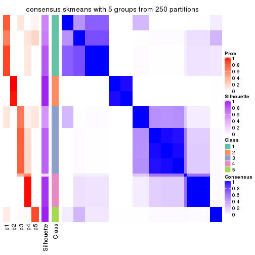
consensus_heatmap(res, k = 6)
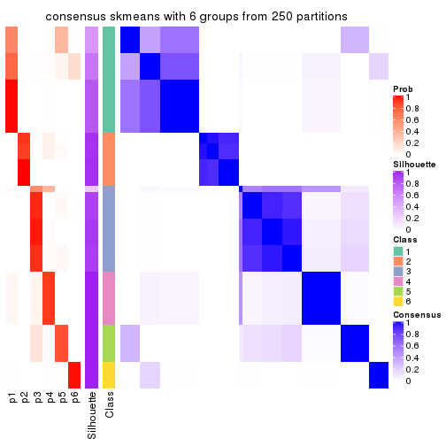
Heatmaps for the membership of samples in all partitions to see how consistent they are:
membership_heatmap(res, k = 2)
membership_heatmap(res, k = 3)
membership_heatmap(res, k = 4)
membership_heatmap(res, k = 5)
membership_heatmap(res, k = 6)
As soon as we have had the classes for columns, we can look for signatures which are significantly different between classes which can be candidate marks for certain classes. Following are the heatmaps for signatures.
Signature heatmaps where rows are scaled:
get_signatures(res, k = 2)
get_signatures(res, k = 3)
get_signatures(res, k = 4)
get_signatures(res, k = 5)
get_signatures(res, k = 6)
Signature heatmaps where rows are not scaled:
get_signatures(res, k = 2, scale_rows = FALSE)
get_signatures(res, k = 3, scale_rows = FALSE)
get_signatures(res, k = 4, scale_rows = FALSE)
get_signatures(res, k = 5, scale_rows = FALSE)
get_signatures(res, k = 6, scale_rows = FALSE)

Compare the overlap of signatures from different k:
compare_signatures(res)
get_signature() returns a data frame invisibly. TO get the list of signatures, the function
call should be assigned to a variable explicitly. In following code, if plot argument is set
to FALSE, no heatmap is plotted while only the differential analysis is performed.
# code only for demonstration
tb = get_signature(res, k = ..., plot = FALSE)
An example of the output of tb is:
#> which_row fdr mean_1 mean_2 scaled_mean_1 scaled_mean_2 km
#> 1 38 0.042760348 8.373488 9.131774 -0.5533452 0.5164555 1
#> 2 40 0.018707592 7.106213 8.469186 -0.6173731 0.5762149 1
#> 3 55 0.019134737 10.221463 11.207825 -0.6159697 0.5749050 1
#> 4 59 0.006059896 5.921854 7.869574 -0.6899429 0.6439467 1
#> 5 60 0.018055526 8.928898 10.211722 -0.6204761 0.5791110 1
#> 6 98 0.009384629 15.714769 14.887706 0.6635654 -0.6193277 2
...
The columns in tb are:
which_row: row indices corresponding to the input matrix.fdr: FDR for the differential test. mean_x: The mean value in group x.scaled_mean_x: The mean value in group x after rows are scaled.km: Row groups if k-means clustering is applied to rows.UMAP plot which shows how samples are separated.
dimension_reduction(res, k = 2, method = "UMAP")
dimension_reduction(res, k = 3, method = "UMAP")

dimension_reduction(res, k = 4, method = "UMAP")
dimension_reduction(res, k = 5, method = "UMAP")
dimension_reduction(res, k = 6, method = "UMAP")
Following heatmap shows how subgroups are split when increasing k:
collect_classes(res)
If matrix rows can be associated to genes, consider to use functional_enrichment(res,
...) to perform function enrichment for the signature genes. See this vignette for more detailed explanations.
The object with results only for a single top-value method and a single partition method can be extracted as:
res = res_list["CV", "pam"]
# you can also extract it by
# res = res_list["CV:pam"]
A summary of res and all the functions that can be applied to it:
res
#> A 'ConsensusPartition' object with k = 2, 3, 4, 5, 6.
#> On a matrix with 14753 rows and 68 columns.
#> Top rows (1000, 2000, 3000, 4000, 5000) are extracted by 'CV' method.
#> Subgroups are detected by 'pam' method.
#> Performed in total 1250 partitions by row resampling.
#> Best k for subgroups seems to be 2.
#>
#> Following methods can be applied to this 'ConsensusPartition' object:
#> [1] "cola_report" "collect_classes" "collect_plots"
#> [4] "collect_stats" "colnames" "compare_signatures"
#> [7] "consensus_heatmap" "dimension_reduction" "functional_enrichment"
#> [10] "get_anno_col" "get_anno" "get_classes"
#> [13] "get_consensus" "get_matrix" "get_membership"
#> [16] "get_param" "get_signatures" "get_stats"
#> [19] "is_best_k" "is_stable_k" "membership_heatmap"
#> [22] "ncol" "nrow" "plot_ecdf"
#> [25] "rownames" "select_partition_number" "show"
#> [28] "suggest_best_k" "test_to_known_factors"
collect_plots() function collects all the plots made from res for all k (number of partitions)
into one single page to provide an easy and fast comparison between different k.
collect_plots(res)
The plots are:
k and the heatmap of
predicted classes for each k.k.k.k.All the plots in panels can be made by individual functions and they are plotted later in this section.
select_partition_number() produces several plots showing different
statistics for choosing “optimized” k. There are following statistics:
k;k, the area increased is defined as \(A_k - A_{k-1}\).The detailed explanations of these statistics can be found in the cola vignette.
Generally speaking, lower PAC score, higher mean silhouette score or higher
concordance corresponds to better partition. Rand index and Jaccard index
measure how similar the current partition is compared to partition with k-1.
If they are too similar, we won't accept k is better than k-1.
select_partition_number(res)
The numeric values for all these statistics can be obtained by get_stats().
get_stats(res)
#> k 1-PAC mean_silhouette concordance area_increased Rand Jaccard
#> 2 2 1.000 1.000 1.000 0.1883 0.813 0.813
#> 3 3 0.558 0.854 0.889 1.7109 0.640 0.557
#> 4 4 0.490 0.838 0.861 0.0971 0.943 0.875
#> 5 5 0.524 0.772 0.832 0.1805 0.928 0.819
#> 6 6 0.645 0.891 0.870 0.1270 0.899 0.693
suggest_best_k() suggests the best \(k\) based on these statistics. The rules are as follows:
suggest_best_k(res)
#> [1] 2
Following shows the table of the partitions (You need to click the show/hide
code output link to see it). The membership matrix (columns with name p*)
is inferred by
clue::cl_consensus()
function with the SE method. Basically the value in the membership matrix
represents the probability to belong to a certain group. The finall class
label for an item is determined with the group with highest probability it
belongs to.
In get_classes() function, the entropy is calculated from the membership
matrix and the silhouette score is calculated from the consensus matrix.
cbind(get_classes(res, k = 2), get_membership(res, k = 2))
#> class entropy silhouette p1 p2
#> SRR562645 1 0 1 1 0
#> SRR562646 1 0 1 1 0
#> SRR562647 1 0 1 1 0
#> SRR562648 1 0 1 1 0
#> SRR562649 1 0 1 1 0
#> SRR567420 1 0 1 1 0
#> SRR567421 1 0 1 1 0
#> SRR567422 1 0 1 1 0
#> SRR567423 1 0 1 1 0
#> SRR567424 1 0 1 1 0
#> SRR567425 1 0 1 1 0
#> SRR567426 1 0 1 1 0
#> SRR567427 1 0 1 1 0
#> SRR567428 1 0 1 1 0
#> SRR567429 1 0 1 1 0
#> SRR567430 1 0 1 1 0
#> SRR567431 1 0 1 1 0
#> SRR567432 1 0 1 1 0
#> SRR567433 1 0 1 1 0
#> SRR567434 1 0 1 1 0
#> SRR567435 1 0 1 1 0
#> SRR567436 1 0 1 1 0
#> SRR567437 1 0 1 1 0
#> SRR567438 1 0 1 1 0
#> SRR567439 1 0 1 1 0
#> SRR567440 1 0 1 1 0
#> SRR567441 1 0 1 1 0
#> SRR567442 1 0 1 1 0
#> SRR567443 1 0 1 1 0
#> SRR567444 1 0 1 1 0
#> SRR567445 1 0 1 1 0
#> SRR567446 1 0 1 1 0
#> SRR567447 1 0 1 1 0
#> SRR567448 1 0 1 1 0
#> SRR567449 1 0 1 1 0
#> SRR567450 1 0 1 1 0
#> SRR567451 1 0 1 1 0
#> SRR567452 1 0 1 1 0
#> SRR567453 1 0 1 1 0
#> SRR567454 1 0 1 1 0
#> SRR567455 1 0 1 1 0
#> SRR567456 1 0 1 1 0
#> SRR567457 1 0 1 1 0
#> SRR567458 1 0 1 1 0
#> SRR567459 1 0 1 1 0
#> SRR567460 1 0 1 1 0
#> SRR567461 1 0 1 1 0
#> SRR567462 1 0 1 1 0
#> SRR567463 1 0 1 1 0
#> SRR567464 1 0 1 1 0
#> SRR567465 1 0 1 1 0
#> SRR567466 1 0 1 1 0
#> SRR567467 1 0 1 1 0
#> SRR567468 1 0 1 1 0
#> SRR567469 1 0 1 1 0
#> SRR567470 1 0 1 1 0
#> SRR567471 1 0 1 1 0
#> SRR835008 1 0 1 1 0
#> SRR835009 2 0 1 0 1
#> SRR835011 2 0 1 0 1
#> SRR835012 2 0 1 0 1
#> SRR835013 2 0 1 0 1
#> SRR835010 2 0 1 0 1
#> SRR835014 2 0 1 0 1
#> SRR835015 2 0 1 0 1
#> SRR835016 1 0 1 1 0
#> SRR835017 1 0 1 1 0
#> SRR835018 1 0 1 1 0
cbind(get_classes(res, k = 3), get_membership(res, k = 3))
#> class entropy silhouette p1 p2 p3
#> SRR562645 3 0.000 0.90109 0.000 0.0 1.000
#> SRR562646 3 0.000 0.90109 0.000 0.0 1.000
#> SRR562647 3 0.000 0.90109 0.000 0.0 1.000
#> SRR562648 3 0.000 0.90109 0.000 0.0 1.000
#> SRR562649 3 0.000 0.90109 0.000 0.0 1.000
#> SRR567420 3 0.000 0.90109 0.000 0.0 1.000
#> SRR567421 3 0.000 0.90109 0.000 0.0 1.000
#> SRR567422 3 0.000 0.90109 0.000 0.0 1.000
#> SRR567423 3 0.000 0.90109 0.000 0.0 1.000
#> SRR567424 3 0.000 0.90109 0.000 0.0 1.000
#> SRR567425 1 0.455 1.00000 0.800 0.0 0.200
#> SRR567426 1 0.455 1.00000 0.800 0.0 0.200
#> SRR567427 1 0.455 1.00000 0.800 0.0 0.200
#> SRR567428 1 0.455 1.00000 0.800 0.0 0.200
#> SRR567429 1 0.455 1.00000 0.800 0.0 0.200
#> SRR567430 1 0.455 1.00000 0.800 0.0 0.200
#> SRR567431 1 0.455 1.00000 0.800 0.0 0.200
#> SRR567432 1 0.455 1.00000 0.800 0.0 0.200
#> SRR567433 1 0.455 1.00000 0.800 0.0 0.200
#> SRR567434 1 0.455 1.00000 0.800 0.0 0.200
#> SRR567435 1 0.455 1.00000 0.800 0.0 0.200
#> SRR567436 1 0.455 1.00000 0.800 0.0 0.200
#> SRR567437 1 0.455 1.00000 0.800 0.0 0.200
#> SRR567438 1 0.455 1.00000 0.800 0.0 0.200
#> SRR567439 1 0.455 1.00000 0.800 0.0 0.200
#> SRR567440 3 0.000 0.90109 0.000 0.0 1.000
#> SRR567441 3 0.000 0.90109 0.000 0.0 1.000
#> SRR567442 3 0.000 0.90109 0.000 0.0 1.000
#> SRR567443 3 0.000 0.90109 0.000 0.0 1.000
#> SRR567444 3 0.000 0.90109 0.000 0.0 1.000
#> SRR567445 1 0.455 1.00000 0.800 0.0 0.200
#> SRR567446 1 0.455 1.00000 0.800 0.0 0.200
#> SRR567447 1 0.455 1.00000 0.800 0.0 0.200
#> SRR567448 1 0.455 1.00000 0.800 0.0 0.200
#> SRR567449 1 0.455 1.00000 0.800 0.0 0.200
#> SRR567450 3 0.000 0.90109 0.000 0.0 1.000
#> SRR567451 3 0.000 0.90109 0.000 0.0 1.000
#> SRR567452 3 0.000 0.90109 0.000 0.0 1.000
#> SRR567453 3 0.000 0.90109 0.000 0.0 1.000
#> SRR567454 3 0.000 0.90109 0.000 0.0 1.000
#> SRR567455 3 0.000 0.90109 0.000 0.0 1.000
#> SRR567456 3 0.000 0.90109 0.000 0.0 1.000
#> SRR567457 3 0.618 0.00788 0.416 0.0 0.584
#> SRR567458 3 0.614 0.06206 0.404 0.0 0.596
#> SRR567459 3 0.614 0.06208 0.404 0.0 0.596
#> SRR567460 3 0.615 0.04475 0.408 0.0 0.592
#> SRR567461 3 0.613 0.07828 0.400 0.0 0.600
#> SRR567462 3 0.000 0.90109 0.000 0.0 1.000
#> SRR567463 3 0.000 0.90109 0.000 0.0 1.000
#> SRR567464 3 0.000 0.90109 0.000 0.0 1.000
#> SRR567465 3 0.000 0.90109 0.000 0.0 1.000
#> SRR567466 3 0.000 0.90109 0.000 0.0 1.000
#> SRR567467 3 0.000 0.90109 0.000 0.0 1.000
#> SRR567468 3 0.000 0.90109 0.000 0.0 1.000
#> SRR567469 3 0.000 0.90109 0.000 0.0 1.000
#> SRR567470 3 0.000 0.90109 0.000 0.0 1.000
#> SRR567471 3 0.000 0.90109 0.000 0.0 1.000
#> SRR835008 3 0.000 0.90109 0.000 0.0 1.000
#> SRR835009 2 0.000 0.96121 0.000 1.0 0.000
#> SRR835011 2 0.000 0.96121 0.000 1.0 0.000
#> SRR835012 2 0.000 0.96121 0.000 1.0 0.000
#> SRR835013 2 0.000 0.96121 0.000 1.0 0.000
#> SRR835010 2 0.000 0.96121 0.000 1.0 0.000
#> SRR835014 2 0.455 0.90103 0.200 0.8 0.000
#> SRR835015 2 0.455 0.90103 0.200 0.8 0.000
#> SRR835016 3 0.613 0.45530 0.400 0.0 0.600
#> SRR835017 3 0.601 0.49585 0.372 0.0 0.628
#> SRR835018 3 0.603 0.49045 0.376 0.0 0.624
cbind(get_classes(res, k = 4), get_membership(res, k = 4))
#> class entropy silhouette p1 p2 p3 p4
#> SRR562645 3 0.3610 0.789 0.000 0.0 0.800 0.200
#> SRR562646 3 0.3610 0.789 0.000 0.0 0.800 0.200
#> SRR562647 3 0.3610 0.789 0.000 0.0 0.800 0.200
#> SRR562648 3 0.3610 0.789 0.000 0.0 0.800 0.200
#> SRR562649 3 0.3610 0.789 0.000 0.0 0.800 0.200
#> SRR567420 3 0.3610 0.789 0.000 0.0 0.800 0.200
#> SRR567421 3 0.3610 0.789 0.000 0.0 0.800 0.200
#> SRR567422 3 0.3610 0.789 0.000 0.0 0.800 0.200
#> SRR567423 3 0.3610 0.789 0.000 0.0 0.800 0.200
#> SRR567424 3 0.3610 0.789 0.000 0.0 0.800 0.200
#> SRR567425 1 0.3610 0.998 0.800 0.0 0.200 0.000
#> SRR567426 1 0.3610 0.998 0.800 0.0 0.200 0.000
#> SRR567427 1 0.3610 0.998 0.800 0.0 0.200 0.000
#> SRR567428 1 0.3610 0.998 0.800 0.0 0.200 0.000
#> SRR567429 1 0.3610 0.998 0.800 0.0 0.200 0.000
#> SRR567430 1 0.3610 0.998 0.800 0.0 0.200 0.000
#> SRR567431 1 0.3610 0.998 0.800 0.0 0.200 0.000
#> SRR567432 1 0.3610 0.998 0.800 0.0 0.200 0.000
#> SRR567433 1 0.3610 0.998 0.800 0.0 0.200 0.000
#> SRR567434 1 0.3610 0.998 0.800 0.0 0.200 0.000
#> SRR567435 1 0.3569 0.995 0.804 0.0 0.196 0.000
#> SRR567436 1 0.3569 0.995 0.804 0.0 0.196 0.000
#> SRR567437 1 0.3569 0.995 0.804 0.0 0.196 0.000
#> SRR567438 1 0.3569 0.995 0.804 0.0 0.196 0.000
#> SRR567439 1 0.3569 0.995 0.804 0.0 0.196 0.000
#> SRR567440 3 0.0000 0.867 0.000 0.0 1.000 0.000
#> SRR567441 3 0.0000 0.867 0.000 0.0 1.000 0.000
#> SRR567442 3 0.0000 0.867 0.000 0.0 1.000 0.000
#> SRR567443 3 0.0000 0.867 0.000 0.0 1.000 0.000
#> SRR567444 3 0.0000 0.867 0.000 0.0 1.000 0.000
#> SRR567445 1 0.3610 0.998 0.800 0.0 0.200 0.000
#> SRR567446 1 0.3610 0.998 0.800 0.0 0.200 0.000
#> SRR567447 1 0.3610 0.998 0.800 0.0 0.200 0.000
#> SRR567448 1 0.3610 0.998 0.800 0.0 0.200 0.000
#> SRR567449 1 0.3610 0.998 0.800 0.0 0.200 0.000
#> SRR567450 3 0.0188 0.865 0.004 0.0 0.996 0.000
#> SRR567451 3 0.0188 0.865 0.004 0.0 0.996 0.000
#> SRR567452 3 0.0188 0.865 0.004 0.0 0.996 0.000
#> SRR567453 3 0.0188 0.865 0.004 0.0 0.996 0.000
#> SRR567454 3 0.0188 0.865 0.004 0.0 0.996 0.000
#> SRR567455 3 0.0188 0.865 0.004 0.0 0.996 0.000
#> SRR567456 3 0.0188 0.865 0.004 0.0 0.996 0.000
#> SRR567457 3 0.4898 0.121 0.416 0.0 0.584 0.000
#> SRR567458 3 0.4866 0.171 0.404 0.0 0.596 0.000
#> SRR567459 3 0.4866 0.171 0.404 0.0 0.596 0.000
#> SRR567460 3 0.4877 0.155 0.408 0.0 0.592 0.000
#> SRR567461 3 0.4855 0.186 0.400 0.0 0.600 0.000
#> SRR567462 3 0.0000 0.867 0.000 0.0 1.000 0.000
#> SRR567463 3 0.0000 0.867 0.000 0.0 1.000 0.000
#> SRR567464 3 0.0000 0.867 0.000 0.0 1.000 0.000
#> SRR567465 3 0.0000 0.867 0.000 0.0 1.000 0.000
#> SRR567466 3 0.0000 0.867 0.000 0.0 1.000 0.000
#> SRR567467 3 0.0000 0.867 0.000 0.0 1.000 0.000
#> SRR567468 3 0.0000 0.867 0.000 0.0 1.000 0.000
#> SRR567469 3 0.0000 0.867 0.000 0.0 1.000 0.000
#> SRR567470 3 0.0000 0.867 0.000 0.0 1.000 0.000
#> SRR567471 3 0.0000 0.867 0.000 0.0 1.000 0.000
#> SRR835008 3 0.0469 0.864 0.000 0.0 0.988 0.012
#> SRR835009 2 0.0000 1.000 0.000 1.0 0.000 0.000
#> SRR835011 2 0.0000 1.000 0.000 1.0 0.000 0.000
#> SRR835012 2 0.0000 1.000 0.000 1.0 0.000 0.000
#> SRR835013 2 0.0000 1.000 0.000 1.0 0.000 0.000
#> SRR835010 2 0.0000 1.000 0.000 1.0 0.000 0.000
#> SRR835014 4 0.6823 0.562 0.196 0.2 0.000 0.604
#> SRR835015 4 0.6823 0.562 0.196 0.2 0.000 0.604
#> SRR835016 4 0.3610 0.773 0.000 0.0 0.200 0.800
#> SRR835017 4 0.3610 0.773 0.000 0.0 0.200 0.800
#> SRR835018 4 0.3610 0.773 0.000 0.0 0.200 0.800
cbind(get_classes(res, k = 5), get_membership(res, k = 5))
#> class entropy silhouette p1 p2 p3 p4 p5
#> SRR562645 3 0.407 0.604 0.000 0.364 0.636 0.000 0.000
#> SRR562646 3 0.407 0.604 0.000 0.364 0.636 0.000 0.000
#> SRR562647 3 0.407 0.604 0.000 0.364 0.636 0.000 0.000
#> SRR562648 3 0.407 0.604 0.000 0.364 0.636 0.000 0.000
#> SRR562649 3 0.407 0.604 0.000 0.364 0.636 0.000 0.000
#> SRR567420 3 0.407 0.604 0.000 0.364 0.636 0.000 0.000
#> SRR567421 3 0.407 0.604 0.000 0.364 0.636 0.000 0.000
#> SRR567422 3 0.407 0.604 0.000 0.364 0.636 0.000 0.000
#> SRR567423 3 0.407 0.604 0.000 0.364 0.636 0.000 0.000
#> SRR567424 3 0.407 0.604 0.000 0.364 0.636 0.000 0.000
#> SRR567425 1 0.651 0.819 0.440 0.000 0.196 0.000 0.364
#> SRR567426 1 0.651 0.819 0.440 0.000 0.196 0.000 0.364
#> SRR567427 1 0.651 0.819 0.440 0.000 0.196 0.000 0.364
#> SRR567428 1 0.651 0.819 0.440 0.000 0.196 0.000 0.364
#> SRR567429 1 0.651 0.819 0.440 0.000 0.196 0.000 0.364
#> SRR567430 1 0.651 0.819 0.440 0.000 0.196 0.000 0.364
#> SRR567431 1 0.651 0.819 0.440 0.000 0.196 0.000 0.364
#> SRR567432 1 0.651 0.819 0.440 0.000 0.196 0.000 0.364
#> SRR567433 1 0.651 0.819 0.440 0.000 0.196 0.000 0.364
#> SRR567434 1 0.651 0.819 0.440 0.000 0.196 0.000 0.364
#> SRR567435 1 0.407 0.527 0.636 0.000 0.000 0.000 0.364
#> SRR567436 1 0.407 0.527 0.636 0.000 0.000 0.000 0.364
#> SRR567437 1 0.407 0.527 0.636 0.000 0.000 0.000 0.364
#> SRR567438 1 0.407 0.527 0.636 0.000 0.000 0.000 0.364
#> SRR567439 1 0.407 0.527 0.636 0.000 0.000 0.000 0.364
#> SRR567440 3 0.000 0.793 0.000 0.000 1.000 0.000 0.000
#> SRR567441 3 0.000 0.793 0.000 0.000 1.000 0.000 0.000
#> SRR567442 3 0.000 0.793 0.000 0.000 1.000 0.000 0.000
#> SRR567443 3 0.000 0.793 0.000 0.000 1.000 0.000 0.000
#> SRR567444 3 0.000 0.793 0.000 0.000 1.000 0.000 0.000
#> SRR567445 1 0.653 0.809 0.436 0.000 0.200 0.000 0.364
#> SRR567446 1 0.653 0.809 0.436 0.000 0.200 0.000 0.364
#> SRR567447 1 0.653 0.809 0.436 0.000 0.200 0.000 0.364
#> SRR567448 1 0.651 0.819 0.440 0.000 0.196 0.000 0.364
#> SRR567449 1 0.651 0.819 0.440 0.000 0.196 0.000 0.364
#> SRR567450 3 0.311 0.672 0.200 0.000 0.800 0.000 0.000
#> SRR567451 3 0.307 0.675 0.196 0.000 0.804 0.000 0.000
#> SRR567452 3 0.311 0.672 0.200 0.000 0.800 0.000 0.000
#> SRR567453 3 0.307 0.675 0.196 0.000 0.804 0.000 0.000
#> SRR567454 3 0.307 0.675 0.196 0.000 0.804 0.000 0.000
#> SRR567455 3 0.314 0.670 0.204 0.000 0.796 0.000 0.000
#> SRR567456 3 0.314 0.670 0.204 0.000 0.796 0.000 0.000
#> SRR567457 5 0.311 1.000 0.000 0.000 0.200 0.000 0.800
#> SRR567458 5 0.311 1.000 0.000 0.000 0.200 0.000 0.800
#> SRR567459 5 0.311 1.000 0.000 0.000 0.200 0.000 0.800
#> SRR567460 5 0.311 1.000 0.000 0.000 0.200 0.000 0.800
#> SRR567461 5 0.311 1.000 0.000 0.000 0.200 0.000 0.800
#> SRR567462 3 0.000 0.793 0.000 0.000 1.000 0.000 0.000
#> SRR567463 3 0.000 0.793 0.000 0.000 1.000 0.000 0.000
#> SRR567464 3 0.000 0.793 0.000 0.000 1.000 0.000 0.000
#> SRR567465 3 0.000 0.793 0.000 0.000 1.000 0.000 0.000
#> SRR567466 3 0.000 0.793 0.000 0.000 1.000 0.000 0.000
#> SRR567467 3 0.000 0.793 0.000 0.000 1.000 0.000 0.000
#> SRR567468 3 0.000 0.793 0.000 0.000 1.000 0.000 0.000
#> SRR567469 3 0.000 0.793 0.000 0.000 1.000 0.000 0.000
#> SRR567470 3 0.000 0.793 0.000 0.000 1.000 0.000 0.000
#> SRR567471 3 0.000 0.793 0.000 0.000 1.000 0.000 0.000
#> SRR835008 3 0.000 0.793 0.000 0.000 1.000 0.000 0.000
#> SRR835009 2 0.407 1.000 0.364 0.636 0.000 0.000 0.000
#> SRR835011 2 0.407 1.000 0.364 0.636 0.000 0.000 0.000
#> SRR835012 2 0.407 1.000 0.364 0.636 0.000 0.000 0.000
#> SRR835013 2 0.407 1.000 0.364 0.636 0.000 0.000 0.000
#> SRR835010 2 0.407 1.000 0.364 0.636 0.000 0.000 0.000
#> SRR835014 4 0.000 0.833 0.000 0.000 0.000 1.000 0.000
#> SRR835015 4 0.297 0.668 0.184 0.000 0.000 0.816 0.000
#> SRR835016 4 0.311 0.889 0.000 0.000 0.000 0.800 0.200
#> SRR835017 4 0.311 0.889 0.000 0.000 0.000 0.800 0.200
#> SRR835018 4 0.311 0.889 0.000 0.000 0.000 0.800 0.200
cbind(get_classes(res, k = 6), get_membership(res, k = 6))
#> class entropy silhouette p1 p2 p3 p4 p5 p6
#> SRR562645 4 0.5227 0.974 0.148 0.000 0.252 0.600 0.000 0.000
#> SRR562646 4 0.5215 0.977 0.144 0.000 0.256 0.600 0.000 0.000
#> SRR562647 4 0.5239 0.969 0.152 0.000 0.248 0.600 0.000 0.000
#> SRR562648 4 0.5215 0.977 0.144 0.000 0.256 0.600 0.000 0.000
#> SRR562649 4 0.5239 0.969 0.152 0.000 0.248 0.600 0.000 0.000
#> SRR567420 4 0.5138 0.969 0.124 0.000 0.276 0.600 0.000 0.000
#> SRR567421 4 0.5138 0.969 0.124 0.000 0.276 0.600 0.000 0.000
#> SRR567422 4 0.5156 0.974 0.128 0.000 0.272 0.600 0.000 0.000
#> SRR567423 4 0.5172 0.977 0.132 0.000 0.268 0.600 0.000 0.000
#> SRR567424 4 0.5172 0.977 0.132 0.000 0.268 0.600 0.000 0.000
#> SRR567425 1 0.0146 0.921 0.996 0.000 0.004 0.000 0.000 0.000
#> SRR567426 1 0.0146 0.921 0.996 0.000 0.004 0.000 0.000 0.000
#> SRR567427 1 0.0146 0.921 0.996 0.000 0.004 0.000 0.000 0.000
#> SRR567428 1 0.0146 0.921 0.996 0.000 0.004 0.000 0.000 0.000
#> SRR567429 1 0.0146 0.921 0.996 0.000 0.004 0.000 0.000 0.000
#> SRR567430 1 0.0146 0.921 0.996 0.000 0.004 0.000 0.000 0.000
#> SRR567431 1 0.0146 0.921 0.996 0.000 0.004 0.000 0.000 0.000
#> SRR567432 1 0.0146 0.921 0.996 0.000 0.004 0.000 0.000 0.000
#> SRR567433 1 0.0146 0.921 0.996 0.000 0.004 0.000 0.000 0.000
#> SRR567434 1 0.0146 0.921 0.996 0.000 0.004 0.000 0.000 0.000
#> SRR567435 1 0.3512 0.748 0.772 0.000 0.000 0.032 0.000 0.196
#> SRR567436 1 0.3364 0.755 0.780 0.000 0.000 0.024 0.000 0.196
#> SRR567437 1 0.3301 0.760 0.788 0.000 0.000 0.024 0.000 0.188
#> SRR567438 1 0.3512 0.748 0.772 0.000 0.000 0.032 0.000 0.196
#> SRR567439 1 0.3512 0.748 0.772 0.000 0.000 0.032 0.000 0.196
#> SRR567440 3 0.0000 0.894 0.000 0.000 1.000 0.000 0.000 0.000
#> SRR567441 3 0.0000 0.894 0.000 0.000 1.000 0.000 0.000 0.000
#> SRR567442 3 0.0000 0.894 0.000 0.000 1.000 0.000 0.000 0.000
#> SRR567443 3 0.0000 0.894 0.000 0.000 1.000 0.000 0.000 0.000
#> SRR567444 3 0.0000 0.894 0.000 0.000 1.000 0.000 0.000 0.000
#> SRR567445 1 0.0260 0.917 0.992 0.000 0.008 0.000 0.000 0.000
#> SRR567446 1 0.0146 0.921 0.996 0.000 0.004 0.000 0.000 0.000
#> SRR567447 1 0.0260 0.917 0.992 0.000 0.008 0.000 0.000 0.000
#> SRR567448 1 0.0146 0.921 0.996 0.000 0.004 0.000 0.000 0.000
#> SRR567449 1 0.0146 0.921 0.996 0.000 0.004 0.000 0.000 0.000
#> SRR567450 3 0.3652 0.773 0.004 0.000 0.768 0.032 0.000 0.196
#> SRR567451 3 0.3652 0.773 0.004 0.000 0.768 0.032 0.000 0.196
#> SRR567452 3 0.3652 0.773 0.004 0.000 0.768 0.032 0.000 0.196
#> SRR567453 3 0.3652 0.773 0.004 0.000 0.768 0.032 0.000 0.196
#> SRR567454 3 0.3652 0.773 0.004 0.000 0.768 0.032 0.000 0.196
#> SRR567455 3 0.3652 0.773 0.004 0.000 0.768 0.032 0.000 0.196
#> SRR567456 3 0.3652 0.773 0.004 0.000 0.768 0.032 0.000 0.196
#> SRR567457 6 0.3558 0.990 0.112 0.000 0.088 0.000 0.000 0.800
#> SRR567458 6 0.3552 0.991 0.116 0.000 0.084 0.000 0.000 0.800
#> SRR567459 6 0.3544 0.990 0.120 0.000 0.080 0.000 0.000 0.800
#> SRR567460 6 0.3558 0.990 0.112 0.000 0.088 0.000 0.000 0.800
#> SRR567461 6 0.3544 0.990 0.120 0.000 0.080 0.000 0.000 0.800
#> SRR567462 3 0.0000 0.894 0.000 0.000 1.000 0.000 0.000 0.000
#> SRR567463 3 0.0000 0.894 0.000 0.000 1.000 0.000 0.000 0.000
#> SRR567464 3 0.0000 0.894 0.000 0.000 1.000 0.000 0.000 0.000
#> SRR567465 3 0.0000 0.894 0.000 0.000 1.000 0.000 0.000 0.000
#> SRR567466 3 0.0000 0.894 0.000 0.000 1.000 0.000 0.000 0.000
#> SRR567467 3 0.0000 0.894 0.000 0.000 1.000 0.000 0.000 0.000
#> SRR567468 3 0.0000 0.894 0.000 0.000 1.000 0.000 0.000 0.000
#> SRR567469 3 0.0000 0.894 0.000 0.000 1.000 0.000 0.000 0.000
#> SRR567470 3 0.0000 0.894 0.000 0.000 1.000 0.000 0.000 0.000
#> SRR567471 3 0.0000 0.894 0.000 0.000 1.000 0.000 0.000 0.000
#> SRR835008 3 0.1814 0.758 0.100 0.000 0.900 0.000 0.000 0.000
#> SRR835009 2 0.0146 0.998 0.000 0.996 0.000 0.000 0.000 0.004
#> SRR835011 2 0.0000 0.998 0.000 1.000 0.000 0.000 0.000 0.000
#> SRR835012 2 0.0000 0.998 0.000 1.000 0.000 0.000 0.000 0.000
#> SRR835013 2 0.0000 0.998 0.000 1.000 0.000 0.000 0.000 0.000
#> SRR835010 2 0.0146 0.998 0.000 0.996 0.000 0.000 0.000 0.004
#> SRR835014 5 0.3672 0.723 0.000 0.000 0.000 0.368 0.632 0.000
#> SRR835015 5 0.5799 0.546 0.000 0.184 0.000 0.368 0.448 0.000
#> SRR835016 5 0.0000 0.827 0.000 0.000 0.000 0.000 1.000 0.000
#> SRR835017 5 0.0000 0.827 0.000 0.000 0.000 0.000 1.000 0.000
#> SRR835018 5 0.0000 0.827 0.000 0.000 0.000 0.000 1.000 0.000
Heatmaps for the consensus matrix. It visualizes the probability of two samples to be in a same group.
consensus_heatmap(res, k = 2)
consensus_heatmap(res, k = 3)
consensus_heatmap(res, k = 4)
consensus_heatmap(res, k = 5)
consensus_heatmap(res, k = 6)
Heatmaps for the membership of samples in all partitions to see how consistent they are:
membership_heatmap(res, k = 2)
membership_heatmap(res, k = 3)
membership_heatmap(res, k = 4)
membership_heatmap(res, k = 5)

membership_heatmap(res, k = 6)
As soon as we have had the classes for columns, we can look for signatures which are significantly different between classes which can be candidate marks for certain classes. Following are the heatmaps for signatures.
Signature heatmaps where rows are scaled:
get_signatures(res, k = 2)
get_signatures(res, k = 3)

get_signatures(res, k = 4)
get_signatures(res, k = 5)
get_signatures(res, k = 6)
Signature heatmaps where rows are not scaled:
get_signatures(res, k = 2, scale_rows = FALSE)
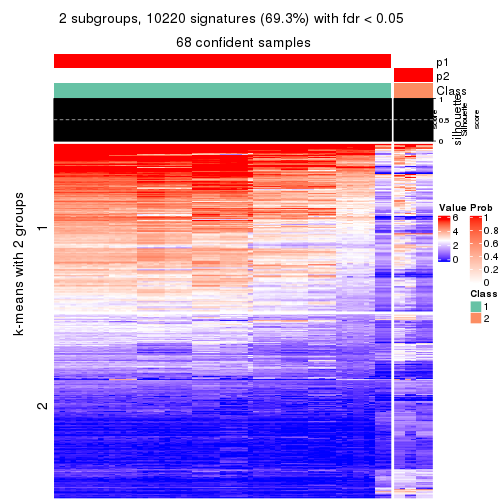
get_signatures(res, k = 3, scale_rows = FALSE)
get_signatures(res, k = 4, scale_rows = FALSE)
get_signatures(res, k = 5, scale_rows = FALSE)

get_signatures(res, k = 6, scale_rows = FALSE)
Compare the overlap of signatures from different k:
compare_signatures(res)
get_signature() returns a data frame invisibly. TO get the list of signatures, the function
call should be assigned to a variable explicitly. In following code, if plot argument is set
to FALSE, no heatmap is plotted while only the differential analysis is performed.
# code only for demonstration
tb = get_signature(res, k = ..., plot = FALSE)
An example of the output of tb is:
#> which_row fdr mean_1 mean_2 scaled_mean_1 scaled_mean_2 km
#> 1 38 0.042760348 8.373488 9.131774 -0.5533452 0.5164555 1
#> 2 40 0.018707592 7.106213 8.469186 -0.6173731 0.5762149 1
#> 3 55 0.019134737 10.221463 11.207825 -0.6159697 0.5749050 1
#> 4 59 0.006059896 5.921854 7.869574 -0.6899429 0.6439467 1
#> 5 60 0.018055526 8.928898 10.211722 -0.6204761 0.5791110 1
#> 6 98 0.009384629 15.714769 14.887706 0.6635654 -0.6193277 2
...
The columns in tb are:
which_row: row indices corresponding to the input matrix.fdr: FDR for the differential test. mean_x: The mean value in group x.scaled_mean_x: The mean value in group x after rows are scaled.km: Row groups if k-means clustering is applied to rows.UMAP plot which shows how samples are separated.
dimension_reduction(res, k = 2, method = "UMAP")
dimension_reduction(res, k = 3, method = "UMAP")
dimension_reduction(res, k = 4, method = "UMAP")
dimension_reduction(res, k = 5, method = "UMAP")
dimension_reduction(res, k = 6, method = "UMAP")
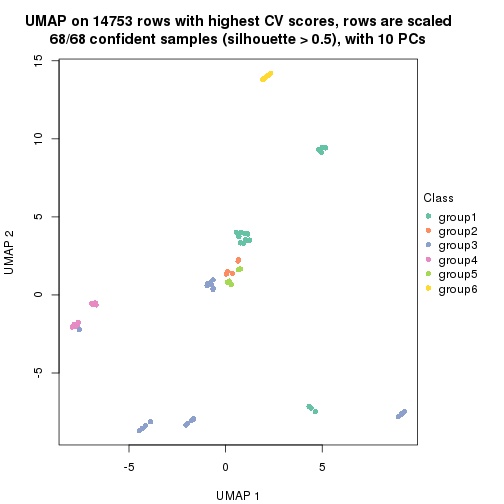
Following heatmap shows how subgroups are split when increasing k:
collect_classes(res)

If matrix rows can be associated to genes, consider to use functional_enrichment(res,
...) to perform function enrichment for the signature genes. See this vignette for more detailed explanations.
The object with results only for a single top-value method and a single partition method can be extracted as:
res = res_list["CV", "mclust"]
# you can also extract it by
# res = res_list["CV:mclust"]
A summary of res and all the functions that can be applied to it:
res
#> A 'ConsensusPartition' object with k = 2, 3, 4, 5, 6.
#> On a matrix with 14753 rows and 68 columns.
#> Top rows (1000, 2000, 3000, 4000, 5000) are extracted by 'CV' method.
#> Subgroups are detected by 'mclust' method.
#> Performed in total 1250 partitions by row resampling.
#> Best k for subgroups seems to be 2.
#>
#> Following methods can be applied to this 'ConsensusPartition' object:
#> [1] "cola_report" "collect_classes" "collect_plots"
#> [4] "collect_stats" "colnames" "compare_signatures"
#> [7] "consensus_heatmap" "dimension_reduction" "functional_enrichment"
#> [10] "get_anno_col" "get_anno" "get_classes"
#> [13] "get_consensus" "get_matrix" "get_membership"
#> [16] "get_param" "get_signatures" "get_stats"
#> [19] "is_best_k" "is_stable_k" "membership_heatmap"
#> [22] "ncol" "nrow" "plot_ecdf"
#> [25] "rownames" "select_partition_number" "show"
#> [28] "suggest_best_k" "test_to_known_factors"
collect_plots() function collects all the plots made from res for all k (number of partitions)
into one single page to provide an easy and fast comparison between different k.
collect_plots(res)
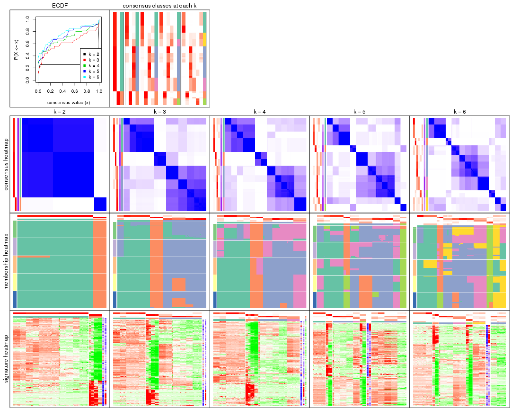
The plots are:
k and the heatmap of
predicted classes for each k.k.k.k.All the plots in panels can be made by individual functions and they are plotted later in this section.
select_partition_number() produces several plots showing different
statistics for choosing “optimized” k. There are following statistics:
k;k, the area increased is defined as \(A_k - A_{k-1}\).The detailed explanations of these statistics can be found in the cola vignette.
Generally speaking, lower PAC score, higher mean silhouette score or higher
concordance corresponds to better partition. Rand index and Jaccard index
measure how similar the current partition is compared to partition with k-1.
If they are too similar, we won't accept k is better than k-1.
select_partition_number(res)
The numeric values for all these statistics can be obtained by get_stats().
get_stats(res)
#> k 1-PAC mean_silhouette concordance area_increased Rand Jaccard
#> 2 2 1.000 0.991 0.992 0.2605 0.745 0.745
#> 3 3 0.562 0.829 0.883 1.3710 0.638 0.514
#> 4 4 0.588 0.791 0.802 0.1223 0.899 0.737
#> 5 5 0.591 0.620 0.715 0.0554 0.844 0.593
#> 6 6 0.610 0.701 0.724 0.0505 0.855 0.573
suggest_best_k() suggests the best \(k\) based on these statistics. The rules are as follows:
suggest_best_k(res)
#> [1] 2
Following shows the table of the partitions (You need to click the show/hide
code output link to see it). The membership matrix (columns with name p*)
is inferred by
clue::cl_consensus()
function with the SE method. Basically the value in the membership matrix
represents the probability to belong to a certain group. The finall class
label for an item is determined with the group with highest probability it
belongs to.
In get_classes() function, the entropy is calculated from the membership
matrix and the silhouette score is calculated from the consensus matrix.
cbind(get_classes(res, k = 2), get_membership(res, k = 2))
#> class entropy silhouette p1 p2
#> SRR562645 1 0.000 0.991 1.000 0.000
#> SRR562646 1 0.000 0.991 1.000 0.000
#> SRR562647 1 0.000 0.991 1.000 0.000
#> SRR562648 1 0.000 0.991 1.000 0.000
#> SRR562649 1 0.000 0.991 1.000 0.000
#> SRR567420 1 0.000 0.991 1.000 0.000
#> SRR567421 1 0.000 0.991 1.000 0.000
#> SRR567422 1 0.000 0.991 1.000 0.000
#> SRR567423 1 0.000 0.991 1.000 0.000
#> SRR567424 1 0.000 0.991 1.000 0.000
#> SRR567425 1 0.141 0.988 0.980 0.020
#> SRR567426 1 0.141 0.988 0.980 0.020
#> SRR567427 1 0.141 0.988 0.980 0.020
#> SRR567428 1 0.141 0.988 0.980 0.020
#> SRR567429 1 0.141 0.988 0.980 0.020
#> SRR567430 1 0.141 0.988 0.980 0.020
#> SRR567431 1 0.141 0.988 0.980 0.020
#> SRR567432 1 0.141 0.988 0.980 0.020
#> SRR567433 1 0.141 0.988 0.980 0.020
#> SRR567434 1 0.141 0.988 0.980 0.020
#> SRR567435 1 0.141 0.988 0.980 0.020
#> SRR567436 1 0.141 0.988 0.980 0.020
#> SRR567437 1 0.141 0.988 0.980 0.020
#> SRR567438 1 0.141 0.988 0.980 0.020
#> SRR567439 1 0.141 0.988 0.980 0.020
#> SRR567440 1 0.000 0.991 1.000 0.000
#> SRR567441 1 0.000 0.991 1.000 0.000
#> SRR567442 1 0.000 0.991 1.000 0.000
#> SRR567443 1 0.000 0.991 1.000 0.000
#> SRR567444 1 0.000 0.991 1.000 0.000
#> SRR567445 1 0.141 0.988 0.980 0.020
#> SRR567446 1 0.141 0.988 0.980 0.020
#> SRR567447 1 0.141 0.988 0.980 0.020
#> SRR567448 1 0.141 0.988 0.980 0.020
#> SRR567449 1 0.141 0.988 0.980 0.020
#> SRR567450 1 0.000 0.991 1.000 0.000
#> SRR567451 1 0.000 0.991 1.000 0.000
#> SRR567452 1 0.000 0.991 1.000 0.000
#> SRR567453 1 0.000 0.991 1.000 0.000
#> SRR567454 1 0.000 0.991 1.000 0.000
#> SRR567455 1 0.000 0.991 1.000 0.000
#> SRR567456 1 0.000 0.991 1.000 0.000
#> SRR567457 1 0.163 0.986 0.976 0.024
#> SRR567458 1 0.163 0.986 0.976 0.024
#> SRR567459 1 0.163 0.986 0.976 0.024
#> SRR567460 1 0.163 0.986 0.976 0.024
#> SRR567461 1 0.163 0.986 0.976 0.024
#> SRR567462 1 0.000 0.991 1.000 0.000
#> SRR567463 1 0.000 0.991 1.000 0.000
#> SRR567464 1 0.000 0.991 1.000 0.000
#> SRR567465 1 0.000 0.991 1.000 0.000
#> SRR567466 1 0.000 0.991 1.000 0.000
#> SRR567467 1 0.000 0.991 1.000 0.000
#> SRR567468 1 0.000 0.991 1.000 0.000
#> SRR567469 1 0.000 0.991 1.000 0.000
#> SRR567470 1 0.000 0.991 1.000 0.000
#> SRR567471 1 0.000 0.991 1.000 0.000
#> SRR835008 1 0.000 0.991 1.000 0.000
#> SRR835009 2 0.000 1.000 0.000 1.000
#> SRR835011 2 0.000 1.000 0.000 1.000
#> SRR835012 2 0.000 1.000 0.000 1.000
#> SRR835013 2 0.000 1.000 0.000 1.000
#> SRR835010 2 0.000 1.000 0.000 1.000
#> SRR835014 2 0.000 1.000 0.000 1.000
#> SRR835015 2 0.000 1.000 0.000 1.000
#> SRR835016 2 0.000 1.000 0.000 1.000
#> SRR835017 2 0.000 1.000 0.000 1.000
#> SRR835018 2 0.000 1.000 0.000 1.000
cbind(get_classes(res, k = 3), get_membership(res, k = 3))
#> class entropy silhouette p1 p2 p3
#> SRR562645 3 0.6770 0.714 0.044 0.264 0.692
#> SRR562646 3 0.6770 0.714 0.044 0.264 0.692
#> SRR562647 3 0.6770 0.714 0.044 0.264 0.692
#> SRR562648 3 0.6770 0.714 0.044 0.264 0.692
#> SRR562649 3 0.6770 0.714 0.044 0.264 0.692
#> SRR567420 3 0.6770 0.714 0.044 0.264 0.692
#> SRR567421 3 0.6770 0.714 0.044 0.264 0.692
#> SRR567422 3 0.6770 0.714 0.044 0.264 0.692
#> SRR567423 3 0.6770 0.714 0.044 0.264 0.692
#> SRR567424 3 0.6770 0.714 0.044 0.264 0.692
#> SRR567425 1 0.1964 0.901 0.944 0.000 0.056
#> SRR567426 1 0.1964 0.901 0.944 0.000 0.056
#> SRR567427 1 0.1964 0.901 0.944 0.000 0.056
#> SRR567428 1 0.1964 0.901 0.944 0.000 0.056
#> SRR567429 1 0.1964 0.901 0.944 0.000 0.056
#> SRR567430 1 0.1964 0.901 0.944 0.000 0.056
#> SRR567431 1 0.1964 0.901 0.944 0.000 0.056
#> SRR567432 1 0.1964 0.901 0.944 0.000 0.056
#> SRR567433 1 0.1964 0.901 0.944 0.000 0.056
#> SRR567434 1 0.1964 0.901 0.944 0.000 0.056
#> SRR567435 1 0.1170 0.874 0.976 0.008 0.016
#> SRR567436 1 0.1170 0.874 0.976 0.008 0.016
#> SRR567437 1 0.1170 0.874 0.976 0.008 0.016
#> SRR567438 1 0.1170 0.874 0.976 0.008 0.016
#> SRR567439 1 0.1170 0.874 0.976 0.008 0.016
#> SRR567440 3 0.0000 0.844 0.000 0.000 1.000
#> SRR567441 3 0.0237 0.844 0.004 0.000 0.996
#> SRR567442 3 0.0237 0.844 0.004 0.000 0.996
#> SRR567443 3 0.0000 0.844 0.000 0.000 1.000
#> SRR567444 3 0.0000 0.844 0.000 0.000 1.000
#> SRR567445 1 0.2066 0.900 0.940 0.000 0.060
#> SRR567446 1 0.2066 0.900 0.940 0.000 0.060
#> SRR567447 1 0.2066 0.900 0.940 0.000 0.060
#> SRR567448 1 0.2066 0.900 0.940 0.000 0.060
#> SRR567449 1 0.2066 0.900 0.940 0.000 0.060
#> SRR567450 3 0.4645 0.765 0.176 0.008 0.816
#> SRR567451 3 0.4645 0.765 0.176 0.008 0.816
#> SRR567452 3 0.4645 0.765 0.176 0.008 0.816
#> SRR567453 3 0.4645 0.765 0.176 0.008 0.816
#> SRR567454 3 0.4645 0.765 0.176 0.008 0.816
#> SRR567455 3 0.4645 0.765 0.176 0.008 0.816
#> SRR567456 3 0.4645 0.765 0.176 0.008 0.816
#> SRR567457 1 0.6228 0.517 0.624 0.004 0.372
#> SRR567458 1 0.6228 0.517 0.624 0.004 0.372
#> SRR567459 1 0.6228 0.517 0.624 0.004 0.372
#> SRR567460 1 0.6228 0.517 0.624 0.004 0.372
#> SRR567461 1 0.6228 0.517 0.624 0.004 0.372
#> SRR567462 3 0.0592 0.841 0.012 0.000 0.988
#> SRR567463 3 0.0424 0.841 0.008 0.000 0.992
#> SRR567464 3 0.0237 0.843 0.004 0.000 0.996
#> SRR567465 3 0.0424 0.841 0.008 0.000 0.992
#> SRR567466 3 0.0424 0.841 0.008 0.000 0.992
#> SRR567467 3 0.1832 0.845 0.008 0.036 0.956
#> SRR567468 3 0.1999 0.845 0.012 0.036 0.952
#> SRR567469 3 0.1832 0.845 0.008 0.036 0.956
#> SRR567470 3 0.1999 0.845 0.012 0.036 0.952
#> SRR567471 3 0.1832 0.845 0.008 0.036 0.956
#> SRR835008 3 0.1950 0.844 0.008 0.040 0.952
#> SRR835009 2 0.0000 0.996 0.000 1.000 0.000
#> SRR835011 2 0.0000 0.996 0.000 1.000 0.000
#> SRR835012 2 0.0000 0.996 0.000 1.000 0.000
#> SRR835013 2 0.0000 0.996 0.000 1.000 0.000
#> SRR835010 2 0.0000 0.996 0.000 1.000 0.000
#> SRR835014 2 0.0000 0.996 0.000 1.000 0.000
#> SRR835015 2 0.0000 0.996 0.000 1.000 0.000
#> SRR835016 2 0.0592 0.990 0.000 0.988 0.012
#> SRR835017 2 0.0592 0.990 0.000 0.988 0.012
#> SRR835018 2 0.0592 0.990 0.000 0.988 0.012
cbind(get_classes(res, k = 4), get_membership(res, k = 4))
#> class entropy silhouette p1 p2 p3 p4
#> SRR562645 4 0.5950 1.000 0.040 0.000 0.416 0.544
#> SRR562646 4 0.5950 1.000 0.040 0.000 0.416 0.544
#> SRR562647 4 0.5950 1.000 0.040 0.000 0.416 0.544
#> SRR562648 4 0.5950 1.000 0.040 0.000 0.416 0.544
#> SRR562649 4 0.5950 1.000 0.040 0.000 0.416 0.544
#> SRR567420 4 0.5950 1.000 0.040 0.000 0.416 0.544
#> SRR567421 4 0.5950 1.000 0.040 0.000 0.416 0.544
#> SRR567422 4 0.5950 1.000 0.040 0.000 0.416 0.544
#> SRR567423 4 0.5950 1.000 0.040 0.000 0.416 0.544
#> SRR567424 4 0.5950 1.000 0.040 0.000 0.416 0.544
#> SRR567425 1 0.0336 0.851 0.992 0.000 0.008 0.000
#> SRR567426 1 0.0336 0.851 0.992 0.000 0.008 0.000
#> SRR567427 1 0.0336 0.851 0.992 0.000 0.008 0.000
#> SRR567428 1 0.0336 0.851 0.992 0.000 0.008 0.000
#> SRR567429 1 0.0336 0.851 0.992 0.000 0.008 0.000
#> SRR567430 1 0.0336 0.851 0.992 0.000 0.008 0.000
#> SRR567431 1 0.0336 0.851 0.992 0.000 0.008 0.000
#> SRR567432 1 0.0336 0.851 0.992 0.000 0.008 0.000
#> SRR567433 1 0.0336 0.851 0.992 0.000 0.008 0.000
#> SRR567434 1 0.0336 0.851 0.992 0.000 0.008 0.000
#> SRR567435 1 0.3356 0.802 0.824 0.000 0.000 0.176
#> SRR567436 1 0.3356 0.802 0.824 0.000 0.000 0.176
#> SRR567437 1 0.3356 0.802 0.824 0.000 0.000 0.176
#> SRR567438 1 0.3356 0.802 0.824 0.000 0.000 0.176
#> SRR567439 1 0.3356 0.802 0.824 0.000 0.000 0.176
#> SRR567440 3 0.2021 0.705 0.040 0.000 0.936 0.024
#> SRR567441 3 0.1211 0.719 0.040 0.000 0.960 0.000
#> SRR567442 3 0.1211 0.719 0.040 0.000 0.960 0.000
#> SRR567443 3 0.1022 0.723 0.032 0.000 0.968 0.000
#> SRR567444 3 0.1398 0.718 0.040 0.000 0.956 0.004
#> SRR567445 1 0.3659 0.800 0.840 0.000 0.136 0.024
#> SRR567446 1 0.3659 0.800 0.840 0.000 0.136 0.024
#> SRR567447 1 0.3659 0.800 0.840 0.000 0.136 0.024
#> SRR567448 1 0.3659 0.800 0.840 0.000 0.136 0.024
#> SRR567449 1 0.3659 0.800 0.840 0.000 0.136 0.024
#> SRR567450 3 0.5659 0.505 0.032 0.000 0.600 0.368
#> SRR567451 3 0.5659 0.505 0.032 0.000 0.600 0.368
#> SRR567452 3 0.5659 0.505 0.032 0.000 0.600 0.368
#> SRR567453 3 0.6153 0.497 0.068 0.000 0.604 0.328
#> SRR567454 3 0.5659 0.505 0.032 0.000 0.600 0.368
#> SRR567455 3 0.5659 0.505 0.032 0.000 0.600 0.368
#> SRR567456 3 0.5659 0.505 0.032 0.000 0.600 0.368
#> SRR567457 1 0.6924 0.636 0.608 0.004 0.208 0.180
#> SRR567458 1 0.6924 0.636 0.608 0.004 0.208 0.180
#> SRR567459 1 0.6924 0.636 0.608 0.004 0.208 0.180
#> SRR567460 1 0.6924 0.636 0.608 0.004 0.208 0.180
#> SRR567461 1 0.6924 0.636 0.608 0.004 0.208 0.180
#> SRR567462 3 0.0000 0.723 0.000 0.000 1.000 0.000
#> SRR567463 3 0.0000 0.723 0.000 0.000 1.000 0.000
#> SRR567464 3 0.0000 0.723 0.000 0.000 1.000 0.000
#> SRR567465 3 0.0000 0.723 0.000 0.000 1.000 0.000
#> SRR567466 3 0.0000 0.723 0.000 0.000 1.000 0.000
#> SRR567467 3 0.2908 0.682 0.040 0.064 0.896 0.000
#> SRR567468 3 0.2908 0.682 0.040 0.064 0.896 0.000
#> SRR567469 3 0.2908 0.682 0.040 0.064 0.896 0.000
#> SRR567470 3 0.2908 0.682 0.040 0.064 0.896 0.000
#> SRR567471 3 0.2908 0.682 0.040 0.064 0.896 0.000
#> SRR835008 3 0.1732 0.717 0.040 0.004 0.948 0.008
#> SRR835009 2 0.0000 0.923 0.000 1.000 0.000 0.000
#> SRR835011 2 0.0000 0.923 0.000 1.000 0.000 0.000
#> SRR835012 2 0.0000 0.923 0.000 1.000 0.000 0.000
#> SRR835013 2 0.0000 0.923 0.000 1.000 0.000 0.000
#> SRR835010 2 0.0000 0.923 0.000 1.000 0.000 0.000
#> SRR835014 2 0.3688 0.923 0.000 0.792 0.000 0.208
#> SRR835015 2 0.3688 0.923 0.000 0.792 0.000 0.208
#> SRR835016 2 0.3688 0.923 0.000 0.792 0.000 0.208
#> SRR835017 2 0.3688 0.923 0.000 0.792 0.000 0.208
#> SRR835018 2 0.3688 0.923 0.000 0.792 0.000 0.208
cbind(get_classes(res, k = 5), get_membership(res, k = 5))
#> class entropy silhouette p1 p2 p3 p4 p5
#> SRR562645 3 0.5597 0.451 0.000 0.000 0.488 0.072 0.440
#> SRR562646 3 0.5597 0.451 0.000 0.000 0.488 0.072 0.440
#> SRR562647 3 0.5597 0.451 0.000 0.000 0.488 0.072 0.440
#> SRR562648 3 0.5597 0.451 0.000 0.000 0.488 0.072 0.440
#> SRR562649 3 0.5597 0.451 0.000 0.000 0.488 0.072 0.440
#> SRR567420 3 0.5597 0.451 0.000 0.000 0.488 0.072 0.440
#> SRR567421 3 0.5597 0.451 0.000 0.000 0.488 0.072 0.440
#> SRR567422 3 0.5597 0.451 0.000 0.000 0.488 0.072 0.440
#> SRR567423 3 0.5447 0.456 0.000 0.000 0.500 0.060 0.440
#> SRR567424 3 0.5597 0.451 0.000 0.000 0.488 0.072 0.440
#> SRR567425 1 0.1671 0.695 0.924 0.000 0.076 0.000 0.000
#> SRR567426 1 0.1671 0.695 0.924 0.000 0.076 0.000 0.000
#> SRR567427 1 0.1671 0.695 0.924 0.000 0.076 0.000 0.000
#> SRR567428 1 0.1671 0.695 0.924 0.000 0.076 0.000 0.000
#> SRR567429 1 0.1671 0.695 0.924 0.000 0.076 0.000 0.000
#> SRR567430 1 0.1671 0.695 0.924 0.000 0.076 0.000 0.000
#> SRR567431 1 0.1671 0.695 0.924 0.000 0.076 0.000 0.000
#> SRR567432 1 0.1671 0.695 0.924 0.000 0.076 0.000 0.000
#> SRR567433 1 0.1671 0.695 0.924 0.000 0.076 0.000 0.000
#> SRR567434 1 0.1671 0.695 0.924 0.000 0.076 0.000 0.000
#> SRR567435 1 0.3366 0.499 0.784 0.000 0.000 0.212 0.004
#> SRR567436 1 0.3366 0.499 0.784 0.000 0.000 0.212 0.004
#> SRR567437 1 0.3522 0.495 0.780 0.000 0.004 0.212 0.004
#> SRR567438 1 0.3366 0.499 0.784 0.000 0.000 0.212 0.004
#> SRR567439 1 0.3366 0.499 0.784 0.000 0.000 0.212 0.004
#> SRR567440 3 0.0290 0.661 0.000 0.000 0.992 0.008 0.000
#> SRR567441 3 0.0000 0.661 0.000 0.000 1.000 0.000 0.000
#> SRR567442 3 0.0000 0.661 0.000 0.000 1.000 0.000 0.000
#> SRR567443 3 0.0290 0.660 0.000 0.000 0.992 0.008 0.000
#> SRR567444 3 0.0000 0.661 0.000 0.000 1.000 0.000 0.000
#> SRR567445 1 0.7153 0.032 0.404 0.000 0.156 0.400 0.040
#> SRR567446 1 0.7153 0.032 0.404 0.000 0.156 0.400 0.040
#> SRR567447 1 0.7153 0.032 0.404 0.000 0.156 0.400 0.040
#> SRR567448 1 0.7153 0.032 0.404 0.000 0.156 0.400 0.040
#> SRR567449 1 0.7153 0.032 0.404 0.000 0.156 0.400 0.040
#> SRR567450 3 0.5733 0.404 0.092 0.000 0.580 0.324 0.004
#> SRR567451 3 0.5764 0.405 0.096 0.000 0.580 0.320 0.004
#> SRR567452 3 0.5847 0.405 0.108 0.000 0.580 0.308 0.004
#> SRR567453 3 0.5948 0.399 0.156 0.000 0.580 0.264 0.000
#> SRR567454 3 0.5733 0.404 0.092 0.000 0.580 0.324 0.004
#> SRR567455 3 0.5847 0.405 0.108 0.000 0.580 0.308 0.004
#> SRR567456 3 0.5847 0.405 0.108 0.000 0.580 0.308 0.004
#> SRR567457 4 0.5530 1.000 0.228 0.000 0.132 0.640 0.000
#> SRR567458 4 0.5530 1.000 0.228 0.000 0.132 0.640 0.000
#> SRR567459 4 0.5530 1.000 0.228 0.000 0.132 0.640 0.000
#> SRR567460 4 0.5530 1.000 0.228 0.000 0.132 0.640 0.000
#> SRR567461 4 0.5530 1.000 0.228 0.000 0.132 0.640 0.000
#> SRR567462 3 0.1544 0.635 0.000 0.000 0.932 0.068 0.000
#> SRR567463 3 0.1410 0.640 0.000 0.000 0.940 0.060 0.000
#> SRR567464 3 0.1043 0.651 0.000 0.000 0.960 0.040 0.000
#> SRR567465 3 0.1270 0.645 0.000 0.000 0.948 0.052 0.000
#> SRR567466 3 0.1410 0.640 0.000 0.000 0.940 0.060 0.000
#> SRR567467 3 0.1478 0.650 0.000 0.064 0.936 0.000 0.000
#> SRR567468 3 0.1478 0.650 0.000 0.064 0.936 0.000 0.000
#> SRR567469 3 0.1478 0.650 0.000 0.064 0.936 0.000 0.000
#> SRR567470 3 0.1478 0.650 0.000 0.064 0.936 0.000 0.000
#> SRR567471 3 0.1478 0.650 0.000 0.064 0.936 0.000 0.000
#> SRR835008 3 0.0162 0.661 0.004 0.000 0.996 0.000 0.000
#> SRR835009 2 0.1410 0.944 0.000 0.940 0.000 0.060 0.000
#> SRR835011 2 0.0000 0.963 0.000 1.000 0.000 0.000 0.000
#> SRR835012 2 0.0000 0.963 0.000 1.000 0.000 0.000 0.000
#> SRR835013 2 0.0000 0.963 0.000 1.000 0.000 0.000 0.000
#> SRR835010 2 0.1410 0.944 0.000 0.940 0.000 0.060 0.000
#> SRR835014 5 0.4917 1.000 0.000 0.416 0.000 0.028 0.556
#> SRR835015 5 0.4917 1.000 0.000 0.416 0.000 0.028 0.556
#> SRR835016 5 0.4917 1.000 0.000 0.416 0.000 0.028 0.556
#> SRR835017 5 0.4917 1.000 0.000 0.416 0.000 0.028 0.556
#> SRR835018 5 0.4917 1.000 0.000 0.416 0.000 0.028 0.556
cbind(get_classes(res, k = 6), get_membership(res, k = 6))
#> class entropy silhouette p1 p2 p3 p4 p5 p6
#> SRR562645 4 0.3797 0.997 0.000 0.000 0.420 0.580 0.000 0.000
#> SRR562646 4 0.3797 0.997 0.000 0.000 0.420 0.580 0.000 0.000
#> SRR562647 4 0.3797 0.997 0.000 0.000 0.420 0.580 0.000 0.000
#> SRR562648 4 0.3797 0.997 0.000 0.000 0.420 0.580 0.000 0.000
#> SRR562649 4 0.3797 0.997 0.000 0.000 0.420 0.580 0.000 0.000
#> SRR567420 4 0.3797 0.997 0.000 0.000 0.420 0.580 0.000 0.000
#> SRR567421 4 0.3797 0.997 0.000 0.000 0.420 0.580 0.000 0.000
#> SRR567422 4 0.3797 0.997 0.000 0.000 0.420 0.580 0.000 0.000
#> SRR567423 4 0.3817 0.976 0.000 0.000 0.432 0.568 0.000 0.000
#> SRR567424 4 0.3797 0.997 0.000 0.000 0.420 0.580 0.000 0.000
#> SRR567425 1 0.3428 0.839 0.696 0.000 0.000 0.000 0.000 0.304
#> SRR567426 1 0.3547 0.839 0.696 0.000 0.004 0.000 0.000 0.300
#> SRR567427 1 0.3547 0.839 0.696 0.000 0.004 0.000 0.000 0.300
#> SRR567428 1 0.3428 0.839 0.696 0.000 0.000 0.000 0.000 0.304
#> SRR567429 1 0.3428 0.839 0.696 0.000 0.000 0.000 0.000 0.304
#> SRR567430 1 0.3428 0.839 0.696 0.000 0.000 0.000 0.000 0.304
#> SRR567431 1 0.3547 0.839 0.696 0.000 0.004 0.000 0.000 0.300
#> SRR567432 1 0.3547 0.839 0.696 0.000 0.004 0.000 0.000 0.300
#> SRR567433 1 0.3428 0.839 0.696 0.000 0.000 0.000 0.000 0.304
#> SRR567434 1 0.3547 0.839 0.696 0.000 0.004 0.000 0.000 0.300
#> SRR567435 1 0.0000 0.653 1.000 0.000 0.000 0.000 0.000 0.000
#> SRR567436 1 0.0000 0.653 1.000 0.000 0.000 0.000 0.000 0.000
#> SRR567437 1 0.0000 0.653 1.000 0.000 0.000 0.000 0.000 0.000
#> SRR567438 1 0.0000 0.653 1.000 0.000 0.000 0.000 0.000 0.000
#> SRR567439 1 0.0000 0.653 1.000 0.000 0.000 0.000 0.000 0.000
#> SRR567440 3 0.0713 0.579 0.000 0.000 0.972 0.028 0.000 0.000
#> SRR567441 3 0.0458 0.585 0.000 0.000 0.984 0.016 0.000 0.000
#> SRR567442 3 0.0458 0.585 0.000 0.000 0.984 0.016 0.000 0.000
#> SRR567443 3 0.0458 0.585 0.000 0.000 0.984 0.016 0.000 0.000
#> SRR567444 3 0.0547 0.583 0.000 0.000 0.980 0.020 0.000 0.000
#> SRR567445 6 0.6362 0.551 0.256 0.000 0.108 0.092 0.000 0.544
#> SRR567446 6 0.6362 0.551 0.256 0.000 0.108 0.092 0.000 0.544
#> SRR567447 6 0.6362 0.551 0.256 0.000 0.108 0.092 0.000 0.544
#> SRR567448 6 0.6362 0.551 0.256 0.000 0.108 0.092 0.000 0.544
#> SRR567449 6 0.6362 0.551 0.256 0.000 0.108 0.092 0.000 0.544
#> SRR567450 3 0.6734 0.455 0.212 0.000 0.508 0.092 0.000 0.188
#> SRR567451 3 0.6731 0.456 0.216 0.000 0.508 0.092 0.000 0.184
#> SRR567452 3 0.6650 0.453 0.256 0.000 0.508 0.092 0.000 0.144
#> SRR567453 3 0.6555 0.440 0.120 0.000 0.508 0.092 0.000 0.280
#> SRR567454 3 0.6734 0.455 0.212 0.000 0.508 0.092 0.000 0.188
#> SRR567455 3 0.6650 0.453 0.256 0.000 0.508 0.092 0.000 0.144
#> SRR567456 3 0.6650 0.453 0.256 0.000 0.508 0.092 0.000 0.144
#> SRR567457 6 0.7087 0.589 0.324 0.000 0.104 0.172 0.000 0.400
#> SRR567458 6 0.7087 0.589 0.324 0.000 0.104 0.172 0.000 0.400
#> SRR567459 6 0.7087 0.589 0.324 0.000 0.104 0.172 0.000 0.400
#> SRR567460 6 0.7087 0.589 0.324 0.000 0.104 0.172 0.000 0.400
#> SRR567461 6 0.7087 0.589 0.324 0.000 0.104 0.172 0.000 0.400
#> SRR567462 3 0.1556 0.510 0.000 0.000 0.920 0.080 0.000 0.000
#> SRR567463 3 0.1556 0.510 0.000 0.000 0.920 0.080 0.000 0.000
#> SRR567464 3 0.1663 0.502 0.000 0.000 0.912 0.088 0.000 0.000
#> SRR567465 3 0.1610 0.506 0.000 0.000 0.916 0.084 0.000 0.000
#> SRR567466 3 0.1556 0.510 0.000 0.000 0.920 0.080 0.000 0.000
#> SRR567467 3 0.3555 0.473 0.000 0.000 0.776 0.040 0.184 0.000
#> SRR567468 3 0.3555 0.473 0.000 0.000 0.776 0.040 0.184 0.000
#> SRR567469 3 0.3418 0.473 0.000 0.000 0.784 0.032 0.184 0.000
#> SRR567470 3 0.3488 0.474 0.000 0.000 0.780 0.036 0.184 0.000
#> SRR567471 3 0.3418 0.473 0.000 0.000 0.784 0.032 0.184 0.000
#> SRR835008 3 0.1003 0.579 0.016 0.000 0.964 0.020 0.000 0.000
#> SRR835009 2 0.4271 0.785 0.000 0.696 0.000 0.244 0.000 0.060
#> SRR835011 2 0.0000 0.862 0.000 1.000 0.000 0.000 0.000 0.000
#> SRR835012 2 0.0000 0.862 0.000 1.000 0.000 0.000 0.000 0.000
#> SRR835013 2 0.0000 0.862 0.000 1.000 0.000 0.000 0.000 0.000
#> SRR835010 2 0.4271 0.785 0.000 0.696 0.000 0.244 0.000 0.060
#> SRR835014 5 0.3043 0.903 0.000 0.200 0.000 0.000 0.792 0.008
#> SRR835015 5 0.3043 0.903 0.000 0.200 0.000 0.000 0.792 0.008
#> SRR835016 5 0.2048 0.939 0.000 0.120 0.000 0.000 0.880 0.000
#> SRR835017 5 0.2048 0.939 0.000 0.120 0.000 0.000 0.880 0.000
#> SRR835018 5 0.2048 0.939 0.000 0.120 0.000 0.000 0.880 0.000
Heatmaps for the consensus matrix. It visualizes the probability of two samples to be in a same group.
consensus_heatmap(res, k = 2)
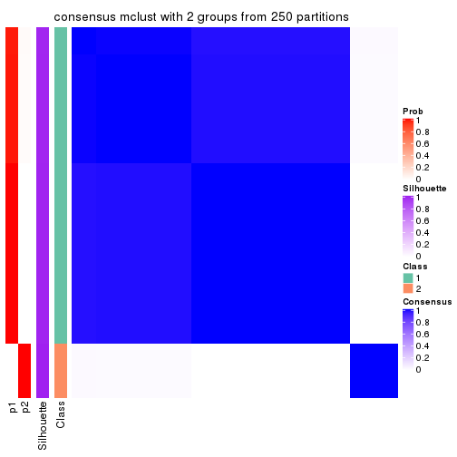
consensus_heatmap(res, k = 3)
consensus_heatmap(res, k = 4)
consensus_heatmap(res, k = 5)

consensus_heatmap(res, k = 6)
Heatmaps for the membership of samples in all partitions to see how consistent they are:
membership_heatmap(res, k = 2)
membership_heatmap(res, k = 3)
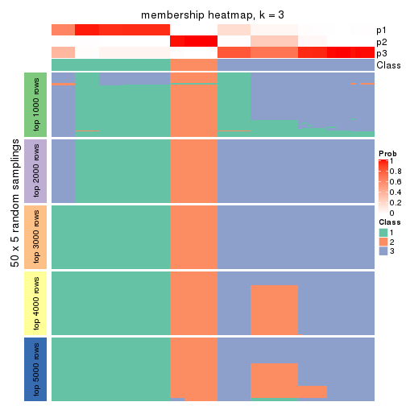
membership_heatmap(res, k = 4)
membership_heatmap(res, k = 5)
membership_heatmap(res, k = 6)
As soon as we have had the classes for columns, we can look for signatures which are significantly different between classes which can be candidate marks for certain classes. Following are the heatmaps for signatures.
Signature heatmaps where rows are scaled:
get_signatures(res, k = 2)
get_signatures(res, k = 3)
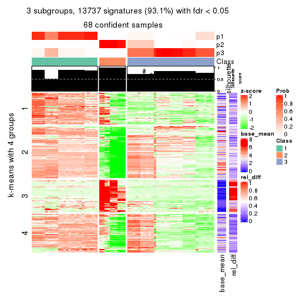
get_signatures(res, k = 4)
get_signatures(res, k = 5)
get_signatures(res, k = 6)
Signature heatmaps where rows are not scaled:
get_signatures(res, k = 2, scale_rows = FALSE)
get_signatures(res, k = 3, scale_rows = FALSE)
get_signatures(res, k = 4, scale_rows = FALSE)
get_signatures(res, k = 5, scale_rows = FALSE)
get_signatures(res, k = 6, scale_rows = FALSE)
Compare the overlap of signatures from different k:
compare_signatures(res)
get_signature() returns a data frame invisibly. TO get the list of signatures, the function
call should be assigned to a variable explicitly. In following code, if plot argument is set
to FALSE, no heatmap is plotted while only the differential analysis is performed.
# code only for demonstration
tb = get_signature(res, k = ..., plot = FALSE)
An example of the output of tb is:
#> which_row fdr mean_1 mean_2 scaled_mean_1 scaled_mean_2 km
#> 1 38 0.042760348 8.373488 9.131774 -0.5533452 0.5164555 1
#> 2 40 0.018707592 7.106213 8.469186 -0.6173731 0.5762149 1
#> 3 55 0.019134737 10.221463 11.207825 -0.6159697 0.5749050 1
#> 4 59 0.006059896 5.921854 7.869574 -0.6899429 0.6439467 1
#> 5 60 0.018055526 8.928898 10.211722 -0.6204761 0.5791110 1
#> 6 98 0.009384629 15.714769 14.887706 0.6635654 -0.6193277 2
...
The columns in tb are:
which_row: row indices corresponding to the input matrix.fdr: FDR for the differential test. mean_x: The mean value in group x.scaled_mean_x: The mean value in group x after rows are scaled.km: Row groups if k-means clustering is applied to rows.UMAP plot which shows how samples are separated.
dimension_reduction(res, k = 2, method = "UMAP")
dimension_reduction(res, k = 3, method = "UMAP")

dimension_reduction(res, k = 4, method = "UMAP")
dimension_reduction(res, k = 5, method = "UMAP")
dimension_reduction(res, k = 6, method = "UMAP")
Following heatmap shows how subgroups are split when increasing k:
collect_classes(res)
If matrix rows can be associated to genes, consider to use functional_enrichment(res,
...) to perform function enrichment for the signature genes. See this vignette for more detailed explanations.
The object with results only for a single top-value method and a single partition method can be extracted as:
res = res_list["CV", "NMF"]
# you can also extract it by
# res = res_list["CV:NMF"]
A summary of res and all the functions that can be applied to it:
res
#> A 'ConsensusPartition' object with k = 2, 3, 4, 5, 6.
#> On a matrix with 14753 rows and 68 columns.
#> Top rows (1000, 2000, 3000, 4000, 5000) are extracted by 'CV' method.
#> Subgroups are detected by 'NMF' method.
#> Performed in total 1250 partitions by row resampling.
#> Best k for subgroups seems to be 3.
#>
#> Following methods can be applied to this 'ConsensusPartition' object:
#> [1] "cola_report" "collect_classes" "collect_plots"
#> [4] "collect_stats" "colnames" "compare_signatures"
#> [7] "consensus_heatmap" "dimension_reduction" "functional_enrichment"
#> [10] "get_anno_col" "get_anno" "get_classes"
#> [13] "get_consensus" "get_matrix" "get_membership"
#> [16] "get_param" "get_signatures" "get_stats"
#> [19] "is_best_k" "is_stable_k" "membership_heatmap"
#> [22] "ncol" "nrow" "plot_ecdf"
#> [25] "rownames" "select_partition_number" "show"
#> [28] "suggest_best_k" "test_to_known_factors"
collect_plots() function collects all the plots made from res for all k (number of partitions)
into one single page to provide an easy and fast comparison between different k.
collect_plots(res)
The plots are:
k and the heatmap of
predicted classes for each k.k.k.k.All the plots in panels can be made by individual functions and they are plotted later in this section.
select_partition_number() produces several plots showing different
statistics for choosing “optimized” k. There are following statistics:
k;k, the area increased is defined as \(A_k - A_{k-1}\).The detailed explanations of these statistics can be found in the cola vignette.
Generally speaking, lower PAC score, higher mean silhouette score or higher
concordance corresponds to better partition. Rand index and Jaccard index
measure how similar the current partition is compared to partition with k-1.
If they are too similar, we won't accept k is better than k-1.
select_partition_number(res)
The numeric values for all these statistics can be obtained by get_stats().
get_stats(res)
#> k 1-PAC mean_silhouette concordance area_increased Rand Jaccard
#> 2 2 0.886 0.968 0.985 0.2744 0.745 0.745
#> 3 3 0.621 0.895 0.797 0.9293 0.635 0.510
#> 4 4 0.497 0.817 0.768 0.1690 0.989 0.971
#> 5 5 0.585 0.714 0.790 0.1382 0.849 0.613
#> 6 6 0.694 0.888 0.870 0.0703 0.967 0.876
suggest_best_k() suggests the best \(k\) based on these statistics. The rules are as follows:
suggest_best_k(res)
#> [1] 3
Following shows the table of the partitions (You need to click the show/hide
code output link to see it). The membership matrix (columns with name p*)
is inferred by
clue::cl_consensus()
function with the SE method. Basically the value in the membership matrix
represents the probability to belong to a certain group. The finall class
label for an item is determined with the group with highest probability it
belongs to.
In get_classes() function, the entropy is calculated from the membership
matrix and the silhouette score is calculated from the consensus matrix.
cbind(get_classes(res, k = 2), get_membership(res, k = 2))
#> class entropy silhouette p1 p2
#> SRR562645 1 0.000 0.982 1.000 0.000
#> SRR562646 1 0.000 0.982 1.000 0.000
#> SRR562647 1 0.000 0.982 1.000 0.000
#> SRR562648 1 0.000 0.982 1.000 0.000
#> SRR562649 1 0.000 0.982 1.000 0.000
#> SRR567420 1 0.000 0.982 1.000 0.000
#> SRR567421 1 0.000 0.982 1.000 0.000
#> SRR567422 1 0.000 0.982 1.000 0.000
#> SRR567423 1 0.000 0.982 1.000 0.000
#> SRR567424 1 0.000 0.982 1.000 0.000
#> SRR567425 1 0.000 0.982 1.000 0.000
#> SRR567426 1 0.000 0.982 1.000 0.000
#> SRR567427 1 0.000 0.982 1.000 0.000
#> SRR567428 1 0.000 0.982 1.000 0.000
#> SRR567429 1 0.000 0.982 1.000 0.000
#> SRR567430 1 0.000 0.982 1.000 0.000
#> SRR567431 1 0.000 0.982 1.000 0.000
#> SRR567432 1 0.000 0.982 1.000 0.000
#> SRR567433 1 0.000 0.982 1.000 0.000
#> SRR567434 1 0.000 0.982 1.000 0.000
#> SRR567435 1 0.000 0.982 1.000 0.000
#> SRR567436 1 0.000 0.982 1.000 0.000
#> SRR567437 1 0.000 0.982 1.000 0.000
#> SRR567438 1 0.000 0.982 1.000 0.000
#> SRR567439 1 0.000 0.982 1.000 0.000
#> SRR567440 1 0.000 0.982 1.000 0.000
#> SRR567441 1 0.000 0.982 1.000 0.000
#> SRR567442 1 0.000 0.982 1.000 0.000
#> SRR567443 1 0.000 0.982 1.000 0.000
#> SRR567444 1 0.000 0.982 1.000 0.000
#> SRR567445 1 0.000 0.982 1.000 0.000
#> SRR567446 1 0.000 0.982 1.000 0.000
#> SRR567447 1 0.000 0.982 1.000 0.000
#> SRR567448 1 0.000 0.982 1.000 0.000
#> SRR567449 1 0.000 0.982 1.000 0.000
#> SRR567450 1 0.000 0.982 1.000 0.000
#> SRR567451 1 0.000 0.982 1.000 0.000
#> SRR567452 1 0.000 0.982 1.000 0.000
#> SRR567453 1 0.000 0.982 1.000 0.000
#> SRR567454 1 0.000 0.982 1.000 0.000
#> SRR567455 1 0.000 0.982 1.000 0.000
#> SRR567456 1 0.000 0.982 1.000 0.000
#> SRR567457 1 0.722 0.767 0.800 0.200
#> SRR567458 1 0.722 0.767 0.800 0.200
#> SRR567459 1 0.722 0.767 0.800 0.200
#> SRR567460 1 0.722 0.767 0.800 0.200
#> SRR567461 1 0.745 0.750 0.788 0.212
#> SRR567462 1 0.000 0.982 1.000 0.000
#> SRR567463 1 0.000 0.982 1.000 0.000
#> SRR567464 1 0.000 0.982 1.000 0.000
#> SRR567465 1 0.000 0.982 1.000 0.000
#> SRR567466 1 0.000 0.982 1.000 0.000
#> SRR567467 1 0.000 0.982 1.000 0.000
#> SRR567468 1 0.000 0.982 1.000 0.000
#> SRR567469 1 0.000 0.982 1.000 0.000
#> SRR567470 1 0.000 0.982 1.000 0.000
#> SRR567471 1 0.000 0.982 1.000 0.000
#> SRR835008 1 0.000 0.982 1.000 0.000
#> SRR835009 2 0.000 1.000 0.000 1.000
#> SRR835011 2 0.000 1.000 0.000 1.000
#> SRR835012 2 0.000 1.000 0.000 1.000
#> SRR835013 2 0.000 1.000 0.000 1.000
#> SRR835010 2 0.000 1.000 0.000 1.000
#> SRR835014 2 0.000 1.000 0.000 1.000
#> SRR835015 2 0.000 1.000 0.000 1.000
#> SRR835016 2 0.000 1.000 0.000 1.000
#> SRR835017 2 0.000 1.000 0.000 1.000
#> SRR835018 2 0.000 1.000 0.000 1.000
cbind(get_classes(res, k = 3), get_membership(res, k = 3))
#> class entropy silhouette p1 p2 p3
#> SRR562645 3 0.6062 0.967 0.384 0.000 0.616
#> SRR562646 3 0.6062 0.967 0.384 0.000 0.616
#> SRR562647 3 0.6062 0.967 0.384 0.000 0.616
#> SRR562648 3 0.6062 0.967 0.384 0.000 0.616
#> SRR562649 3 0.6062 0.967 0.384 0.000 0.616
#> SRR567420 3 0.6062 0.967 0.384 0.000 0.616
#> SRR567421 3 0.6062 0.967 0.384 0.000 0.616
#> SRR567422 3 0.6062 0.967 0.384 0.000 0.616
#> SRR567423 3 0.6062 0.967 0.384 0.000 0.616
#> SRR567424 3 0.6062 0.967 0.384 0.000 0.616
#> SRR567425 1 0.0237 0.900 0.996 0.000 0.004
#> SRR567426 1 0.0237 0.900 0.996 0.000 0.004
#> SRR567427 1 0.0237 0.900 0.996 0.000 0.004
#> SRR567428 1 0.0237 0.900 0.996 0.000 0.004
#> SRR567429 1 0.0237 0.900 0.996 0.000 0.004
#> SRR567430 1 0.0237 0.900 0.996 0.000 0.004
#> SRR567431 1 0.0237 0.900 0.996 0.000 0.004
#> SRR567432 1 0.0237 0.900 0.996 0.000 0.004
#> SRR567433 1 0.0000 0.900 1.000 0.000 0.000
#> SRR567434 1 0.0237 0.900 0.996 0.000 0.004
#> SRR567435 1 0.0237 0.900 0.996 0.000 0.004
#> SRR567436 1 0.1289 0.863 0.968 0.000 0.032
#> SRR567437 1 0.0747 0.886 0.984 0.000 0.016
#> SRR567438 1 0.0747 0.886 0.984 0.000 0.016
#> SRR567439 1 0.0424 0.896 0.992 0.000 0.008
#> SRR567440 3 0.5905 0.977 0.352 0.000 0.648
#> SRR567441 3 0.5905 0.977 0.352 0.000 0.648
#> SRR567442 3 0.5905 0.977 0.352 0.000 0.648
#> SRR567443 3 0.5905 0.977 0.352 0.000 0.648
#> SRR567444 3 0.5905 0.977 0.352 0.000 0.648
#> SRR567445 1 0.0747 0.891 0.984 0.000 0.016
#> SRR567446 1 0.0747 0.891 0.984 0.000 0.016
#> SRR567447 1 0.0747 0.891 0.984 0.000 0.016
#> SRR567448 1 0.0747 0.891 0.984 0.000 0.016
#> SRR567449 1 0.0747 0.891 0.984 0.000 0.016
#> SRR567450 1 0.0000 0.900 1.000 0.000 0.000
#> SRR567451 1 0.0000 0.900 1.000 0.000 0.000
#> SRR567452 1 0.0000 0.900 1.000 0.000 0.000
#> SRR567453 1 0.0000 0.900 1.000 0.000 0.000
#> SRR567454 1 0.0000 0.900 1.000 0.000 0.000
#> SRR567455 1 0.0000 0.900 1.000 0.000 0.000
#> SRR567456 1 0.0000 0.900 1.000 0.000 0.000
#> SRR567457 1 0.5988 0.500 0.632 0.000 0.368
#> SRR567458 1 0.6008 0.493 0.628 0.000 0.372
#> SRR567459 1 0.6008 0.493 0.628 0.000 0.372
#> SRR567460 1 0.6008 0.493 0.628 0.000 0.372
#> SRR567461 1 0.6045 0.476 0.620 0.000 0.380
#> SRR567462 3 0.5905 0.977 0.352 0.000 0.648
#> SRR567463 3 0.5905 0.977 0.352 0.000 0.648
#> SRR567464 3 0.5905 0.977 0.352 0.000 0.648
#> SRR567465 3 0.5905 0.977 0.352 0.000 0.648
#> SRR567466 3 0.5905 0.977 0.352 0.000 0.648
#> SRR567467 3 0.5948 0.975 0.360 0.000 0.640
#> SRR567468 3 0.5948 0.975 0.360 0.000 0.640
#> SRR567469 3 0.5948 0.975 0.360 0.000 0.640
#> SRR567470 3 0.5948 0.975 0.360 0.000 0.640
#> SRR567471 3 0.5948 0.975 0.360 0.000 0.640
#> SRR835008 3 0.5905 0.977 0.352 0.000 0.648
#> SRR835009 2 0.5621 0.891 0.000 0.692 0.308
#> SRR835011 2 0.5621 0.891 0.000 0.692 0.308
#> SRR835012 2 0.5621 0.891 0.000 0.692 0.308
#> SRR835013 2 0.5621 0.891 0.000 0.692 0.308
#> SRR835010 2 0.5621 0.891 0.000 0.692 0.308
#> SRR835014 2 0.0000 0.894 0.000 1.000 0.000
#> SRR835015 2 0.0000 0.894 0.000 1.000 0.000
#> SRR835016 2 0.0000 0.894 0.000 1.000 0.000
#> SRR835017 2 0.0000 0.894 0.000 1.000 0.000
#> SRR835018 2 0.0000 0.894 0.000 1.000 0.000
cbind(get_classes(res, k = 4), get_membership(res, k = 4))
#> class entropy silhouette p1 p2 p3 p4
#> SRR562645 3 0.112 0.803 0.036 0.000 0.964 0.000
#> SRR562646 3 0.102 0.804 0.032 0.000 0.968 0.000
#> SRR562647 3 0.112 0.803 0.036 0.000 0.964 0.000
#> SRR562648 3 0.112 0.803 0.036 0.000 0.964 0.000
#> SRR562649 3 0.112 0.803 0.036 0.000 0.964 0.000
#> SRR567420 3 0.112 0.803 0.036 0.000 0.964 0.000
#> SRR567421 3 0.112 0.803 0.036 0.000 0.964 0.000
#> SRR567422 3 0.112 0.803 0.036 0.000 0.964 0.000
#> SRR567423 3 0.112 0.803 0.036 0.000 0.964 0.000
#> SRR567424 3 0.112 0.803 0.036 0.000 0.964 0.000
#> SRR567425 1 0.398 0.847 0.760 0.000 0.240 0.000
#> SRR567426 1 0.398 0.847 0.760 0.000 0.240 0.000
#> SRR567427 1 0.391 0.849 0.768 0.000 0.232 0.000
#> SRR567428 1 0.398 0.847 0.760 0.000 0.240 0.000
#> SRR567429 1 0.398 0.847 0.760 0.000 0.240 0.000
#> SRR567430 1 0.398 0.847 0.760 0.000 0.240 0.000
#> SRR567431 1 0.398 0.847 0.760 0.000 0.240 0.000
#> SRR567432 1 0.391 0.849 0.768 0.000 0.232 0.000
#> SRR567433 1 0.416 0.847 0.756 0.000 0.240 0.004
#> SRR567434 1 0.398 0.847 0.760 0.000 0.240 0.000
#> SRR567435 1 0.361 0.841 0.800 0.000 0.200 0.000
#> SRR567436 1 0.401 0.814 0.756 0.000 0.244 0.000
#> SRR567437 1 0.376 0.834 0.784 0.000 0.216 0.000
#> SRR567438 1 0.380 0.832 0.780 0.000 0.220 0.000
#> SRR567439 1 0.376 0.834 0.784 0.000 0.216 0.000
#> SRR567440 3 0.440 0.854 0.004 0.000 0.724 0.272
#> SRR567441 3 0.422 0.854 0.000 0.000 0.728 0.272
#> SRR567442 3 0.440 0.854 0.004 0.000 0.724 0.272
#> SRR567443 3 0.419 0.855 0.000 0.000 0.732 0.268
#> SRR567444 3 0.440 0.854 0.004 0.000 0.724 0.272
#> SRR567445 1 0.433 0.844 0.748 0.000 0.244 0.008
#> SRR567446 1 0.433 0.844 0.748 0.000 0.244 0.008
#> SRR567447 1 0.433 0.844 0.748 0.000 0.244 0.008
#> SRR567448 1 0.433 0.844 0.748 0.000 0.244 0.008
#> SRR567449 1 0.433 0.844 0.748 0.000 0.244 0.008
#> SRR567450 1 0.357 0.843 0.804 0.000 0.196 0.000
#> SRR567451 1 0.357 0.843 0.804 0.000 0.196 0.000
#> SRR567452 1 0.357 0.843 0.804 0.000 0.196 0.000
#> SRR567453 1 0.357 0.843 0.804 0.000 0.196 0.000
#> SRR567454 1 0.357 0.843 0.804 0.000 0.196 0.000
#> SRR567455 1 0.357 0.843 0.804 0.000 0.196 0.000
#> SRR567456 1 0.357 0.843 0.804 0.000 0.196 0.000
#> SRR567457 1 0.747 0.231 0.576 0.072 0.060 0.292
#> SRR567458 1 0.747 0.234 0.576 0.068 0.064 0.292
#> SRR567459 1 0.747 0.234 0.576 0.068 0.064 0.292
#> SRR567460 1 0.747 0.234 0.576 0.068 0.064 0.292
#> SRR567461 1 0.747 0.234 0.576 0.072 0.060 0.292
#> SRR567462 3 0.423 0.859 0.008 0.000 0.760 0.232
#> SRR567463 3 0.409 0.859 0.004 0.000 0.764 0.232
#> SRR567464 3 0.423 0.859 0.008 0.000 0.760 0.232
#> SRR567465 3 0.419 0.859 0.004 0.000 0.752 0.244
#> SRR567466 3 0.409 0.859 0.004 0.000 0.764 0.232
#> SRR567467 3 0.499 0.842 0.020 0.000 0.692 0.288
#> SRR567468 3 0.499 0.842 0.020 0.000 0.692 0.288
#> SRR567469 3 0.499 0.842 0.020 0.000 0.692 0.288
#> SRR567470 3 0.499 0.842 0.020 0.000 0.692 0.288
#> SRR567471 3 0.499 0.842 0.020 0.000 0.692 0.288
#> SRR835008 3 0.330 0.808 0.048 0.000 0.876 0.076
#> SRR835009 2 0.000 1.000 0.000 1.000 0.000 0.000
#> SRR835011 2 0.000 1.000 0.000 1.000 0.000 0.000
#> SRR835012 2 0.000 1.000 0.000 1.000 0.000 0.000
#> SRR835013 2 0.000 1.000 0.000 1.000 0.000 0.000
#> SRR835010 2 0.000 1.000 0.000 1.000 0.000 0.000
#> SRR835014 4 0.500 1.000 0.000 0.496 0.000 0.504
#> SRR835015 4 0.500 1.000 0.000 0.496 0.000 0.504
#> SRR835016 4 0.500 1.000 0.000 0.496 0.000 0.504
#> SRR835017 4 0.500 1.000 0.000 0.496 0.000 0.504
#> SRR835018 4 0.500 1.000 0.000 0.496 0.000 0.504
cbind(get_classes(res, k = 5), get_membership(res, k = 5))
#> class entropy silhouette p1 p2 p3 p4 p5
#> SRR562645 4 0.5249 0.394 0.036 0.000 0.452 0.508 0.004
#> SRR562646 4 0.5249 0.394 0.036 0.000 0.452 0.508 0.004
#> SRR562647 4 0.5249 0.394 0.036 0.000 0.452 0.508 0.004
#> SRR562648 4 0.5249 0.394 0.036 0.000 0.452 0.508 0.004
#> SRR562649 4 0.5249 0.394 0.036 0.000 0.452 0.508 0.004
#> SRR567420 4 0.5249 0.394 0.036 0.000 0.452 0.508 0.004
#> SRR567421 4 0.5249 0.394 0.036 0.000 0.452 0.508 0.004
#> SRR567422 4 0.5249 0.394 0.036 0.000 0.452 0.508 0.004
#> SRR567423 4 0.5249 0.394 0.036 0.000 0.452 0.508 0.004
#> SRR567424 4 0.5249 0.394 0.036 0.000 0.452 0.508 0.004
#> SRR567425 1 0.4103 0.862 0.792 0.000 0.156 0.036 0.016
#> SRR567426 1 0.4062 0.864 0.796 0.000 0.152 0.036 0.016
#> SRR567427 1 0.3994 0.866 0.804 0.000 0.144 0.032 0.020
#> SRR567428 1 0.4078 0.866 0.796 0.000 0.152 0.032 0.020
#> SRR567429 1 0.4103 0.862 0.792 0.000 0.156 0.036 0.016
#> SRR567430 1 0.4078 0.866 0.796 0.000 0.152 0.032 0.020
#> SRR567431 1 0.4078 0.866 0.796 0.000 0.152 0.032 0.020
#> SRR567432 1 0.4037 0.867 0.800 0.000 0.148 0.032 0.020
#> SRR567433 1 0.4078 0.866 0.796 0.000 0.152 0.032 0.020
#> SRR567434 1 0.4078 0.866 0.796 0.000 0.152 0.032 0.020
#> SRR567435 1 0.0566 0.825 0.984 0.000 0.012 0.004 0.000
#> SRR567436 1 0.1106 0.814 0.964 0.000 0.012 0.024 0.000
#> SRR567437 1 0.1018 0.824 0.968 0.000 0.016 0.016 0.000
#> SRR567438 1 0.0807 0.822 0.976 0.000 0.012 0.012 0.000
#> SRR567439 1 0.0693 0.824 0.980 0.000 0.012 0.008 0.000
#> SRR567440 3 0.0451 0.921 0.008 0.000 0.988 0.000 0.004
#> SRR567441 3 0.0727 0.911 0.012 0.000 0.980 0.004 0.004
#> SRR567442 3 0.0727 0.920 0.012 0.000 0.980 0.004 0.004
#> SRR567443 3 0.0510 0.908 0.016 0.000 0.984 0.000 0.000
#> SRR567444 3 0.0613 0.916 0.008 0.000 0.984 0.004 0.004
#> SRR567445 1 0.4078 0.866 0.796 0.000 0.152 0.032 0.020
#> SRR567446 1 0.4078 0.866 0.796 0.000 0.152 0.032 0.020
#> SRR567447 1 0.4078 0.866 0.796 0.000 0.152 0.032 0.020
#> SRR567448 1 0.4078 0.866 0.796 0.000 0.152 0.032 0.020
#> SRR567449 1 0.4078 0.866 0.796 0.000 0.152 0.032 0.020
#> SRR567450 1 0.0290 0.825 0.992 0.000 0.008 0.000 0.000
#> SRR567451 1 0.0290 0.825 0.992 0.000 0.008 0.000 0.000
#> SRR567452 1 0.0290 0.825 0.992 0.000 0.008 0.000 0.000
#> SRR567453 1 0.0290 0.825 0.992 0.000 0.008 0.000 0.000
#> SRR567454 1 0.0290 0.825 0.992 0.000 0.008 0.000 0.000
#> SRR567455 1 0.0290 0.825 0.992 0.000 0.008 0.000 0.000
#> SRR567456 1 0.0290 0.825 0.992 0.000 0.008 0.000 0.000
#> SRR567457 5 0.2727 1.000 0.116 0.000 0.016 0.000 0.868
#> SRR567458 5 0.2727 1.000 0.116 0.000 0.016 0.000 0.868
#> SRR567459 5 0.2727 1.000 0.116 0.000 0.016 0.000 0.868
#> SRR567460 5 0.2727 1.000 0.116 0.000 0.016 0.000 0.868
#> SRR567461 5 0.2727 1.000 0.116 0.000 0.016 0.000 0.868
#> SRR567462 3 0.0771 0.924 0.020 0.000 0.976 0.000 0.004
#> SRR567463 3 0.0932 0.923 0.020 0.000 0.972 0.004 0.004
#> SRR567464 3 0.0865 0.923 0.024 0.000 0.972 0.000 0.004
#> SRR567465 3 0.0451 0.921 0.008 0.000 0.988 0.000 0.004
#> SRR567466 3 0.0771 0.924 0.020 0.000 0.976 0.000 0.004
#> SRR567467 3 0.1648 0.909 0.040 0.000 0.940 0.000 0.020
#> SRR567468 3 0.1648 0.909 0.040 0.000 0.940 0.000 0.020
#> SRR567469 3 0.1648 0.909 0.040 0.000 0.940 0.000 0.020
#> SRR567470 3 0.1648 0.909 0.040 0.000 0.940 0.000 0.020
#> SRR567471 3 0.1648 0.909 0.040 0.000 0.940 0.000 0.020
#> SRR835008 3 0.4819 -0.124 0.012 0.000 0.576 0.404 0.008
#> SRR835009 2 0.0898 0.994 0.000 0.972 0.008 0.000 0.020
#> SRR835011 2 0.0609 0.998 0.000 0.980 0.000 0.000 0.020
#> SRR835012 2 0.0609 0.998 0.000 0.980 0.000 0.000 0.020
#> SRR835013 2 0.0609 0.998 0.000 0.980 0.000 0.000 0.020
#> SRR835010 2 0.0609 0.998 0.000 0.980 0.000 0.000 0.020
#> SRR835014 4 0.6374 -0.370 0.000 0.380 0.008 0.480 0.132
#> SRR835015 4 0.6374 -0.370 0.000 0.380 0.008 0.480 0.132
#> SRR835016 4 0.6121 -0.368 0.000 0.380 0.000 0.488 0.132
#> SRR835017 4 0.6121 -0.368 0.000 0.380 0.000 0.488 0.132
#> SRR835018 4 0.6121 -0.368 0.000 0.380 0.000 0.488 0.132
cbind(get_classes(res, k = 6), get_membership(res, k = 6))
#> class entropy silhouette p1 p2 p3 p4 p5 p6
#> SRR562645 4 0.263 0.967 0.008 0.000 0.152 0.840 0.000 0.000
#> SRR562646 4 0.263 0.967 0.008 0.000 0.152 0.840 0.000 0.000
#> SRR562647 4 0.263 0.967 0.008 0.000 0.152 0.840 0.000 0.000
#> SRR562648 4 0.263 0.967 0.008 0.000 0.152 0.840 0.000 0.000
#> SRR562649 4 0.263 0.967 0.008 0.000 0.152 0.840 0.000 0.000
#> SRR567420 4 0.263 0.967 0.008 0.000 0.152 0.840 0.000 0.000
#> SRR567421 4 0.263 0.967 0.008 0.000 0.152 0.840 0.000 0.000
#> SRR567422 4 0.263 0.967 0.008 0.000 0.152 0.840 0.000 0.000
#> SRR567423 4 0.263 0.967 0.008 0.000 0.152 0.840 0.000 0.000
#> SRR567424 4 0.263 0.967 0.008 0.000 0.152 0.840 0.000 0.000
#> SRR567425 1 0.357 0.810 0.800 0.000 0.104 0.096 0.000 0.000
#> SRR567426 1 0.357 0.810 0.800 0.000 0.104 0.096 0.000 0.000
#> SRR567427 1 0.327 0.808 0.824 0.000 0.080 0.096 0.000 0.000
#> SRR567428 1 0.357 0.810 0.800 0.000 0.104 0.096 0.000 0.000
#> SRR567429 1 0.357 0.810 0.800 0.000 0.104 0.096 0.000 0.000
#> SRR567430 1 0.357 0.810 0.800 0.000 0.104 0.096 0.000 0.000
#> SRR567431 1 0.357 0.810 0.800 0.000 0.104 0.096 0.000 0.000
#> SRR567432 1 0.347 0.810 0.808 0.000 0.096 0.096 0.000 0.000
#> SRR567433 1 0.357 0.810 0.800 0.000 0.104 0.096 0.000 0.000
#> SRR567434 1 0.357 0.810 0.800 0.000 0.104 0.096 0.000 0.000
#> SRR567435 1 0.270 0.775 0.864 0.108 0.008 0.020 0.000 0.000
#> SRR567436 1 0.270 0.775 0.864 0.108 0.008 0.020 0.000 0.000
#> SRR567437 1 0.265 0.776 0.868 0.104 0.008 0.020 0.000 0.000
#> SRR567438 1 0.270 0.775 0.864 0.108 0.008 0.020 0.000 0.000
#> SRR567439 1 0.270 0.775 0.864 0.108 0.008 0.020 0.000 0.000
#> SRR567440 3 0.000 0.960 0.000 0.000 1.000 0.000 0.000 0.000
#> SRR567441 3 0.026 0.955 0.008 0.000 0.992 0.000 0.000 0.000
#> SRR567442 3 0.000 0.960 0.000 0.000 1.000 0.000 0.000 0.000
#> SRR567443 3 0.026 0.955 0.008 0.000 0.992 0.000 0.000 0.000
#> SRR567444 3 0.026 0.955 0.008 0.000 0.992 0.000 0.000 0.000
#> SRR567445 1 0.357 0.810 0.800 0.000 0.104 0.096 0.000 0.000
#> SRR567446 1 0.357 0.810 0.800 0.000 0.104 0.096 0.000 0.000
#> SRR567447 1 0.357 0.810 0.800 0.000 0.104 0.096 0.000 0.000
#> SRR567448 1 0.357 0.810 0.800 0.000 0.104 0.096 0.000 0.000
#> SRR567449 1 0.357 0.810 0.800 0.000 0.104 0.096 0.000 0.000
#> SRR567450 1 0.270 0.775 0.864 0.108 0.008 0.020 0.000 0.000
#> SRR567451 1 0.270 0.775 0.864 0.108 0.008 0.020 0.000 0.000
#> SRR567452 1 0.270 0.775 0.864 0.108 0.008 0.020 0.000 0.000
#> SRR567453 1 0.270 0.775 0.864 0.108 0.008 0.020 0.000 0.000
#> SRR567454 1 0.270 0.775 0.864 0.108 0.008 0.020 0.000 0.000
#> SRR567455 1 0.270 0.775 0.864 0.108 0.008 0.020 0.000 0.000
#> SRR567456 1 0.270 0.775 0.864 0.108 0.008 0.020 0.000 0.000
#> SRR567457 6 0.000 1.000 0.000 0.000 0.000 0.000 0.000 1.000
#> SRR567458 6 0.000 1.000 0.000 0.000 0.000 0.000 0.000 1.000
#> SRR567459 6 0.000 1.000 0.000 0.000 0.000 0.000 0.000 1.000
#> SRR567460 6 0.000 1.000 0.000 0.000 0.000 0.000 0.000 1.000
#> SRR567461 6 0.000 1.000 0.000 0.000 0.000 0.000 0.000 1.000
#> SRR567462 3 0.000 0.960 0.000 0.000 1.000 0.000 0.000 0.000
#> SRR567463 3 0.000 0.960 0.000 0.000 1.000 0.000 0.000 0.000
#> SRR567464 3 0.026 0.956 0.008 0.000 0.992 0.000 0.000 0.000
#> SRR567465 3 0.000 0.960 0.000 0.000 1.000 0.000 0.000 0.000
#> SRR567466 3 0.000 0.960 0.000 0.000 1.000 0.000 0.000 0.000
#> SRR567467 3 0.211 0.928 0.012 0.084 0.900 0.000 0.000 0.004
#> SRR567468 3 0.211 0.928 0.012 0.084 0.900 0.000 0.000 0.004
#> SRR567469 3 0.211 0.928 0.012 0.084 0.900 0.000 0.000 0.004
#> SRR567470 3 0.211 0.928 0.012 0.084 0.900 0.000 0.000 0.004
#> SRR567471 3 0.211 0.928 0.012 0.084 0.900 0.000 0.000 0.004
#> SRR835008 4 0.417 0.541 0.008 0.004 0.420 0.568 0.000 0.000
#> SRR835009 2 0.378 0.952 0.000 0.756 0.000 0.048 0.196 0.000
#> SRR835011 2 0.276 0.984 0.000 0.804 0.000 0.000 0.196 0.000
#> SRR835012 2 0.276 0.984 0.000 0.804 0.000 0.000 0.196 0.000
#> SRR835013 2 0.276 0.984 0.000 0.804 0.000 0.000 0.196 0.000
#> SRR835010 2 0.311 0.980 0.000 0.792 0.000 0.012 0.196 0.000
#> SRR835014 5 0.214 0.908 0.000 0.000 0.000 0.128 0.872 0.000
#> SRR835015 5 0.209 0.910 0.000 0.000 0.000 0.124 0.876 0.000
#> SRR835016 5 0.000 0.942 0.000 0.000 0.000 0.000 1.000 0.000
#> SRR835017 5 0.000 0.942 0.000 0.000 0.000 0.000 1.000 0.000
#> SRR835018 5 0.000 0.942 0.000 0.000 0.000 0.000 1.000 0.000
Heatmaps for the consensus matrix. It visualizes the probability of two samples to be in a same group.
consensus_heatmap(res, k = 2)
consensus_heatmap(res, k = 3)
consensus_heatmap(res, k = 4)
consensus_heatmap(res, k = 5)
consensus_heatmap(res, k = 6)
Heatmaps for the membership of samples in all partitions to see how consistent they are:
membership_heatmap(res, k = 2)
membership_heatmap(res, k = 3)

membership_heatmap(res, k = 4)
membership_heatmap(res, k = 5)
membership_heatmap(res, k = 6)
As soon as we have had the classes for columns, we can look for signatures which are significantly different between classes which can be candidate marks for certain classes. Following are the heatmaps for signatures.
Signature heatmaps where rows are scaled:
get_signatures(res, k = 2)
get_signatures(res, k = 3)
get_signatures(res, k = 4)
get_signatures(res, k = 5)
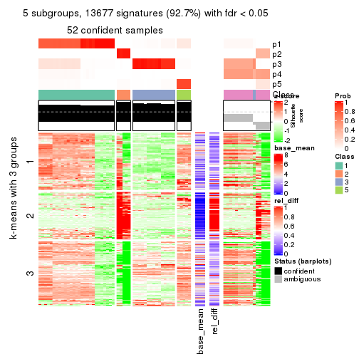
get_signatures(res, k = 6)
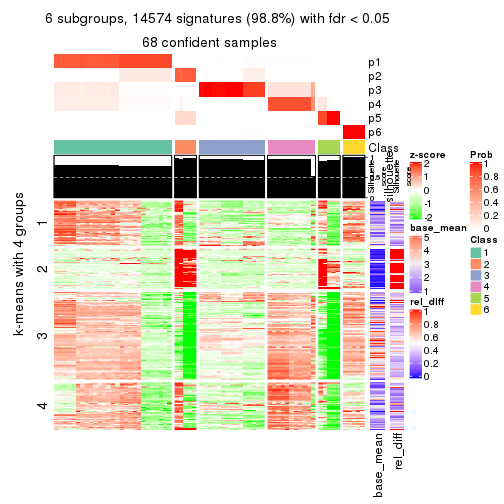
Signature heatmaps where rows are not scaled:
get_signatures(res, k = 2, scale_rows = FALSE)
get_signatures(res, k = 3, scale_rows = FALSE)
get_signatures(res, k = 4, scale_rows = FALSE)
get_signatures(res, k = 5, scale_rows = FALSE)
get_signatures(res, k = 6, scale_rows = FALSE)
Compare the overlap of signatures from different k:
compare_signatures(res)
get_signature() returns a data frame invisibly. TO get the list of signatures, the function
call should be assigned to a variable explicitly. In following code, if plot argument is set
to FALSE, no heatmap is plotted while only the differential analysis is performed.
# code only for demonstration
tb = get_signature(res, k = ..., plot = FALSE)
An example of the output of tb is:
#> which_row fdr mean_1 mean_2 scaled_mean_1 scaled_mean_2 km
#> 1 38 0.042760348 8.373488 9.131774 -0.5533452 0.5164555 1
#> 2 40 0.018707592 7.106213 8.469186 -0.6173731 0.5762149 1
#> 3 55 0.019134737 10.221463 11.207825 -0.6159697 0.5749050 1
#> 4 59 0.006059896 5.921854 7.869574 -0.6899429 0.6439467 1
#> 5 60 0.018055526 8.928898 10.211722 -0.6204761 0.5791110 1
#> 6 98 0.009384629 15.714769 14.887706 0.6635654 -0.6193277 2
...
The columns in tb are:
which_row: row indices corresponding to the input matrix.fdr: FDR for the differential test. mean_x: The mean value in group x.scaled_mean_x: The mean value in group x after rows are scaled.km: Row groups if k-means clustering is applied to rows.UMAP plot which shows how samples are separated.
dimension_reduction(res, k = 2, method = "UMAP")

dimension_reduction(res, k = 3, method = "UMAP")
dimension_reduction(res, k = 4, method = "UMAP")
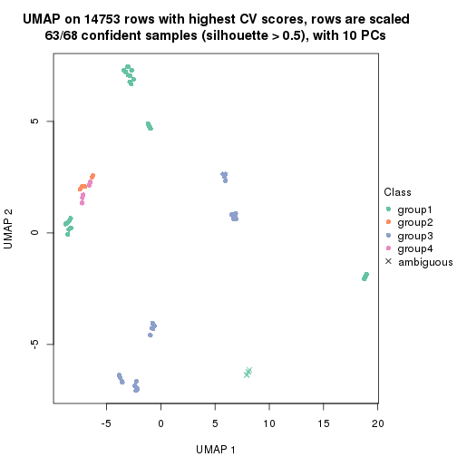
dimension_reduction(res, k = 5, method = "UMAP")
dimension_reduction(res, k = 6, method = "UMAP")
Following heatmap shows how subgroups are split when increasing k:
collect_classes(res)
If matrix rows can be associated to genes, consider to use functional_enrichment(res,
...) to perform function enrichment for the signature genes. See this vignette for more detailed explanations.
The object with results only for a single top-value method and a single partition method can be extracted as:
res = res_list["MAD", "hclust"]
# you can also extract it by
# res = res_list["MAD:hclust"]
A summary of res and all the functions that can be applied to it:
res
#> A 'ConsensusPartition' object with k = 2, 3, 4, 5, 6.
#> On a matrix with 14753 rows and 68 columns.
#> Top rows (1000, 2000, 3000, 4000, 5000) are extracted by 'MAD' method.
#> Subgroups are detected by 'hclust' method.
#> Performed in total 1250 partitions by row resampling.
#> Best k for subgroups seems to be 5.
#>
#> Following methods can be applied to this 'ConsensusPartition' object:
#> [1] "cola_report" "collect_classes" "collect_plots"
#> [4] "collect_stats" "colnames" "compare_signatures"
#> [7] "consensus_heatmap" "dimension_reduction" "functional_enrichment"
#> [10] "get_anno_col" "get_anno" "get_classes"
#> [13] "get_consensus" "get_matrix" "get_membership"
#> [16] "get_param" "get_signatures" "get_stats"
#> [19] "is_best_k" "is_stable_k" "membership_heatmap"
#> [22] "ncol" "nrow" "plot_ecdf"
#> [25] "rownames" "select_partition_number" "show"
#> [28] "suggest_best_k" "test_to_known_factors"
collect_plots() function collects all the plots made from res for all k (number of partitions)
into one single page to provide an easy and fast comparison between different k.
collect_plots(res)
The plots are:
k and the heatmap of
predicted classes for each k.k.k.k.All the plots in panels can be made by individual functions and they are plotted later in this section.
select_partition_number() produces several plots showing different
statistics for choosing “optimized” k. There are following statistics:
k;k, the area increased is defined as \(A_k - A_{k-1}\).The detailed explanations of these statistics can be found in the cola vignette.
Generally speaking, lower PAC score, higher mean silhouette score or higher
concordance corresponds to better partition. Rand index and Jaccard index
measure how similar the current partition is compared to partition with k-1.
If they are too similar, we won't accept k is better than k-1.
select_partition_number(res)
The numeric values for all these statistics can be obtained by get_stats().
get_stats(res)
#> k 1-PAC mean_silhouette concordance area_increased Rand Jaccard
#> 2 2 0.556 0.885 0.874 0.40893 0.494 0.494
#> 3 3 0.744 0.836 0.890 0.38757 0.932 0.861
#> 4 4 0.744 0.894 0.880 0.14974 0.821 0.599
#> 5 5 1.000 1.000 1.000 0.12481 0.981 0.932
#> 6 6 1.000 0.985 1.000 0.00598 0.996 0.984
suggest_best_k() suggests the best \(k\) based on these statistics. The rules are as follows:
suggest_best_k(res)
#> [1] 5
Following shows the table of the partitions (You need to click the show/hide
code output link to see it). The membership matrix (columns with name p*)
is inferred by
clue::cl_consensus()
function with the SE method. Basically the value in the membership matrix
represents the probability to belong to a certain group. The finall class
label for an item is determined with the group with highest probability it
belongs to.
In get_classes() function, the entropy is calculated from the membership
matrix and the silhouette score is calculated from the consensus matrix.
cbind(get_classes(res, k = 2), get_membership(res, k = 2))
#> class entropy silhouette p1 p2
#> SRR562645 1 0.963 1.000 0.612 0.388
#> SRR562646 1 0.963 1.000 0.612 0.388
#> SRR562647 1 0.963 1.000 0.612 0.388
#> SRR562648 1 0.963 1.000 0.612 0.388
#> SRR562649 1 0.963 1.000 0.612 0.388
#> SRR567420 1 0.963 1.000 0.612 0.388
#> SRR567421 1 0.963 1.000 0.612 0.388
#> SRR567422 1 0.963 1.000 0.612 0.388
#> SRR567423 1 0.963 1.000 0.612 0.388
#> SRR567424 1 0.963 1.000 0.612 0.388
#> SRR567425 1 0.963 1.000 0.612 0.388
#> SRR567426 1 0.963 1.000 0.612 0.388
#> SRR567427 1 0.963 1.000 0.612 0.388
#> SRR567428 1 0.963 1.000 0.612 0.388
#> SRR567429 1 0.963 1.000 0.612 0.388
#> SRR567430 1 0.963 1.000 0.612 0.388
#> SRR567431 1 0.963 1.000 0.612 0.388
#> SRR567432 1 0.963 1.000 0.612 0.388
#> SRR567433 1 0.963 1.000 0.612 0.388
#> SRR567434 1 0.963 1.000 0.612 0.388
#> SRR567435 1 0.963 1.000 0.612 0.388
#> SRR567436 1 0.963 1.000 0.612 0.388
#> SRR567437 1 0.963 1.000 0.612 0.388
#> SRR567438 1 0.963 1.000 0.612 0.388
#> SRR567439 1 0.963 1.000 0.612 0.388
#> SRR567440 2 0.000 0.795 0.000 1.000
#> SRR567441 2 0.000 0.795 0.000 1.000
#> SRR567442 2 0.000 0.795 0.000 1.000
#> SRR567443 2 0.000 0.795 0.000 1.000
#> SRR567444 2 0.000 0.795 0.000 1.000
#> SRR567445 1 0.963 1.000 0.612 0.388
#> SRR567446 1 0.963 1.000 0.612 0.388
#> SRR567447 1 0.963 1.000 0.612 0.388
#> SRR567448 1 0.963 1.000 0.612 0.388
#> SRR567449 1 0.963 1.000 0.612 0.388
#> SRR567450 2 0.000 0.795 0.000 1.000
#> SRR567451 2 0.000 0.795 0.000 1.000
#> SRR567452 2 0.000 0.795 0.000 1.000
#> SRR567453 2 0.000 0.795 0.000 1.000
#> SRR567454 2 0.000 0.795 0.000 1.000
#> SRR567455 2 0.000 0.795 0.000 1.000
#> SRR567456 2 0.000 0.795 0.000 1.000
#> SRR567457 1 0.963 1.000 0.612 0.388
#> SRR567458 1 0.963 1.000 0.612 0.388
#> SRR567459 1 0.963 1.000 0.612 0.388
#> SRR567460 1 0.963 1.000 0.612 0.388
#> SRR567461 1 0.963 1.000 0.612 0.388
#> SRR567462 2 0.000 0.795 0.000 1.000
#> SRR567463 2 0.000 0.795 0.000 1.000
#> SRR567464 2 0.000 0.795 0.000 1.000
#> SRR567465 2 0.000 0.795 0.000 1.000
#> SRR567466 2 0.000 0.795 0.000 1.000
#> SRR567467 2 0.000 0.795 0.000 1.000
#> SRR567468 2 0.000 0.795 0.000 1.000
#> SRR567469 2 0.000 0.795 0.000 1.000
#> SRR567470 2 0.000 0.795 0.000 1.000
#> SRR567471 2 0.000 0.795 0.000 1.000
#> SRR835008 1 0.963 1.000 0.612 0.388
#> SRR835009 2 0.963 0.669 0.388 0.612
#> SRR835011 2 0.963 0.669 0.388 0.612
#> SRR835012 2 0.963 0.669 0.388 0.612
#> SRR835013 2 0.963 0.669 0.388 0.612
#> SRR835010 2 0.963 0.669 0.388 0.612
#> SRR835014 2 0.963 0.669 0.388 0.612
#> SRR835015 2 0.963 0.669 0.388 0.612
#> SRR835016 2 0.963 0.669 0.388 0.612
#> SRR835017 2 0.963 0.669 0.388 0.612
#> SRR835018 2 0.963 0.669 0.388 0.612
cbind(get_classes(res, k = 3), get_membership(res, k = 3))
#> class entropy silhouette p1 p2 p3
#> SRR562645 1 0.571 0.644 0.680 0.00 0.320
#> SRR562646 1 0.571 0.644 0.680 0.00 0.320
#> SRR562647 1 0.571 0.644 0.680 0.00 0.320
#> SRR562648 1 0.571 0.644 0.680 0.00 0.320
#> SRR562649 1 0.571 0.644 0.680 0.00 0.320
#> SRR567420 1 0.571 0.644 0.680 0.00 0.320
#> SRR567421 1 0.571 0.644 0.680 0.00 0.320
#> SRR567422 1 0.571 0.644 0.680 0.00 0.320
#> SRR567423 1 0.571 0.644 0.680 0.00 0.320
#> SRR567424 1 0.571 0.644 0.680 0.00 0.320
#> SRR567425 1 0.000 0.873 1.000 0.00 0.000
#> SRR567426 1 0.000 0.873 1.000 0.00 0.000
#> SRR567427 1 0.000 0.873 1.000 0.00 0.000
#> SRR567428 1 0.000 0.873 1.000 0.00 0.000
#> SRR567429 1 0.000 0.873 1.000 0.00 0.000
#> SRR567430 1 0.000 0.873 1.000 0.00 0.000
#> SRR567431 1 0.000 0.873 1.000 0.00 0.000
#> SRR567432 1 0.000 0.873 1.000 0.00 0.000
#> SRR567433 1 0.000 0.873 1.000 0.00 0.000
#> SRR567434 1 0.000 0.873 1.000 0.00 0.000
#> SRR567435 1 0.000 0.873 1.000 0.00 0.000
#> SRR567436 1 0.000 0.873 1.000 0.00 0.000
#> SRR567437 1 0.000 0.873 1.000 0.00 0.000
#> SRR567438 1 0.000 0.873 1.000 0.00 0.000
#> SRR567439 1 0.000 0.873 1.000 0.00 0.000
#> SRR567440 3 0.226 0.927 0.068 0.00 0.932
#> SRR567441 3 0.226 0.927 0.068 0.00 0.932
#> SRR567442 3 0.226 0.927 0.068 0.00 0.932
#> SRR567443 3 0.226 0.927 0.068 0.00 0.932
#> SRR567444 3 0.226 0.927 0.068 0.00 0.932
#> SRR567445 1 0.000 0.873 1.000 0.00 0.000
#> SRR567446 1 0.000 0.873 1.000 0.00 0.000
#> SRR567447 1 0.000 0.873 1.000 0.00 0.000
#> SRR567448 1 0.000 0.873 1.000 0.00 0.000
#> SRR567449 1 0.000 0.873 1.000 0.00 0.000
#> SRR567450 3 0.226 0.927 0.068 0.00 0.932
#> SRR567451 3 0.226 0.927 0.068 0.00 0.932
#> SRR567452 3 0.226 0.927 0.068 0.00 0.932
#> SRR567453 3 0.226 0.927 0.068 0.00 0.932
#> SRR567454 3 0.226 0.927 0.068 0.00 0.932
#> SRR567455 3 0.226 0.927 0.068 0.00 0.932
#> SRR567456 3 0.226 0.927 0.068 0.00 0.932
#> SRR567457 1 0.000 0.873 1.000 0.00 0.000
#> SRR567458 1 0.000 0.873 1.000 0.00 0.000
#> SRR567459 1 0.000 0.873 1.000 0.00 0.000
#> SRR567460 1 0.000 0.873 1.000 0.00 0.000
#> SRR567461 1 0.000 0.873 1.000 0.00 0.000
#> SRR567462 3 0.226 0.927 0.068 0.00 0.932
#> SRR567463 3 0.226 0.927 0.068 0.00 0.932
#> SRR567464 3 0.226 0.927 0.068 0.00 0.932
#> SRR567465 3 0.226 0.927 0.068 0.00 0.932
#> SRR567466 3 0.226 0.927 0.068 0.00 0.932
#> SRR567467 3 0.226 0.927 0.068 0.00 0.932
#> SRR567468 3 0.226 0.927 0.068 0.00 0.932
#> SRR567469 3 0.226 0.927 0.068 0.00 0.932
#> SRR567470 3 0.226 0.927 0.068 0.00 0.932
#> SRR567471 3 0.226 0.927 0.068 0.00 0.932
#> SRR835008 1 0.571 0.644 0.680 0.00 0.320
#> SRR835009 3 0.571 0.384 0.000 0.32 0.680
#> SRR835011 2 0.000 1.000 0.000 1.00 0.000
#> SRR835012 2 0.000 1.000 0.000 1.00 0.000
#> SRR835013 2 0.000 1.000 0.000 1.00 0.000
#> SRR835010 3 0.571 0.384 0.000 0.32 0.680
#> SRR835014 3 0.571 0.384 0.000 0.32 0.680
#> SRR835015 3 0.571 0.384 0.000 0.32 0.680
#> SRR835016 2 0.000 1.000 0.000 1.00 0.000
#> SRR835017 2 0.000 1.000 0.000 1.00 0.000
#> SRR835018 2 0.000 1.000 0.000 1.00 0.000
cbind(get_classes(res, k = 4), get_membership(res, k = 4))
#> class entropy silhouette p1 p2 p3 p4
#> SRR562645 4 0.763 0.6948 0.204 0 0.388 0.408
#> SRR562646 4 0.763 0.6948 0.204 0 0.388 0.408
#> SRR562647 4 0.763 0.6948 0.204 0 0.388 0.408
#> SRR562648 4 0.763 0.6948 0.204 0 0.388 0.408
#> SRR562649 4 0.763 0.6948 0.204 0 0.388 0.408
#> SRR567420 4 0.763 0.6948 0.204 0 0.388 0.408
#> SRR567421 4 0.763 0.6948 0.204 0 0.388 0.408
#> SRR567422 4 0.763 0.6948 0.204 0 0.388 0.408
#> SRR567423 4 0.763 0.6948 0.204 0 0.388 0.408
#> SRR567424 4 0.763 0.6948 0.204 0 0.388 0.408
#> SRR567425 1 0.000 1.0000 1.000 0 0.000 0.000
#> SRR567426 1 0.000 1.0000 1.000 0 0.000 0.000
#> SRR567427 1 0.000 1.0000 1.000 0 0.000 0.000
#> SRR567428 1 0.000 1.0000 1.000 0 0.000 0.000
#> SRR567429 1 0.000 1.0000 1.000 0 0.000 0.000
#> SRR567430 1 0.000 1.0000 1.000 0 0.000 0.000
#> SRR567431 1 0.000 1.0000 1.000 0 0.000 0.000
#> SRR567432 1 0.000 1.0000 1.000 0 0.000 0.000
#> SRR567433 1 0.000 1.0000 1.000 0 0.000 0.000
#> SRR567434 1 0.000 1.0000 1.000 0 0.000 0.000
#> SRR567435 1 0.000 1.0000 1.000 0 0.000 0.000
#> SRR567436 1 0.000 1.0000 1.000 0 0.000 0.000
#> SRR567437 1 0.000 1.0000 1.000 0 0.000 0.000
#> SRR567438 1 0.000 1.0000 1.000 0 0.000 0.000
#> SRR567439 1 0.000 1.0000 1.000 0 0.000 0.000
#> SRR567440 3 0.000 1.0000 0.000 0 1.000 0.000
#> SRR567441 3 0.000 1.0000 0.000 0 1.000 0.000
#> SRR567442 3 0.000 1.0000 0.000 0 1.000 0.000
#> SRR567443 3 0.000 1.0000 0.000 0 1.000 0.000
#> SRR567444 3 0.000 1.0000 0.000 0 1.000 0.000
#> SRR567445 1 0.000 1.0000 1.000 0 0.000 0.000
#> SRR567446 1 0.000 1.0000 1.000 0 0.000 0.000
#> SRR567447 1 0.000 1.0000 1.000 0 0.000 0.000
#> SRR567448 1 0.000 1.0000 1.000 0 0.000 0.000
#> SRR567449 1 0.000 1.0000 1.000 0 0.000 0.000
#> SRR567450 3 0.000 1.0000 0.000 0 1.000 0.000
#> SRR567451 3 0.000 1.0000 0.000 0 1.000 0.000
#> SRR567452 3 0.000 1.0000 0.000 0 1.000 0.000
#> SRR567453 3 0.000 1.0000 0.000 0 1.000 0.000
#> SRR567454 3 0.000 1.0000 0.000 0 1.000 0.000
#> SRR567455 3 0.000 1.0000 0.000 0 1.000 0.000
#> SRR567456 3 0.000 1.0000 0.000 0 1.000 0.000
#> SRR567457 1 0.000 1.0000 1.000 0 0.000 0.000
#> SRR567458 1 0.000 1.0000 1.000 0 0.000 0.000
#> SRR567459 1 0.000 1.0000 1.000 0 0.000 0.000
#> SRR567460 1 0.000 1.0000 1.000 0 0.000 0.000
#> SRR567461 1 0.000 1.0000 1.000 0 0.000 0.000
#> SRR567462 3 0.000 1.0000 0.000 0 1.000 0.000
#> SRR567463 3 0.000 1.0000 0.000 0 1.000 0.000
#> SRR567464 3 0.000 1.0000 0.000 0 1.000 0.000
#> SRR567465 3 0.000 1.0000 0.000 0 1.000 0.000
#> SRR567466 3 0.000 1.0000 0.000 0 1.000 0.000
#> SRR567467 3 0.000 1.0000 0.000 0 1.000 0.000
#> SRR567468 3 0.000 1.0000 0.000 0 1.000 0.000
#> SRR567469 3 0.000 1.0000 0.000 0 1.000 0.000
#> SRR567470 3 0.000 1.0000 0.000 0 1.000 0.000
#> SRR567471 3 0.000 1.0000 0.000 0 1.000 0.000
#> SRR835008 4 0.763 0.6948 0.204 0 0.388 0.408
#> SRR835009 4 0.488 0.0408 0.000 0 0.408 0.592
#> SRR835011 2 0.000 1.0000 0.000 1 0.000 0.000
#> SRR835012 2 0.000 1.0000 0.000 1 0.000 0.000
#> SRR835013 2 0.000 1.0000 0.000 1 0.000 0.000
#> SRR835010 4 0.488 0.0408 0.000 0 0.408 0.592
#> SRR835014 4 0.488 0.0408 0.000 0 0.408 0.592
#> SRR835015 4 0.488 0.0408 0.000 0 0.408 0.592
#> SRR835016 2 0.000 1.0000 0.000 1 0.000 0.000
#> SRR835017 2 0.000 1.0000 0.000 1 0.000 0.000
#> SRR835018 2 0.000 1.0000 0.000 1 0.000 0.000
cbind(get_classes(res, k = 5), get_membership(res, k = 5))
#> class entropy silhouette p1 p2 p3 p4 p5
#> SRR562645 4 0 1 0 0 0 1 0
#> SRR562646 4 0 1 0 0 0 1 0
#> SRR562647 4 0 1 0 0 0 1 0
#> SRR562648 4 0 1 0 0 0 1 0
#> SRR562649 4 0 1 0 0 0 1 0
#> SRR567420 4 0 1 0 0 0 1 0
#> SRR567421 4 0 1 0 0 0 1 0
#> SRR567422 4 0 1 0 0 0 1 0
#> SRR567423 4 0 1 0 0 0 1 0
#> SRR567424 4 0 1 0 0 0 1 0
#> SRR567425 1 0 1 1 0 0 0 0
#> SRR567426 1 0 1 1 0 0 0 0
#> SRR567427 1 0 1 1 0 0 0 0
#> SRR567428 1 0 1 1 0 0 0 0
#> SRR567429 1 0 1 1 0 0 0 0
#> SRR567430 1 0 1 1 0 0 0 0
#> SRR567431 1 0 1 1 0 0 0 0
#> SRR567432 1 0 1 1 0 0 0 0
#> SRR567433 1 0 1 1 0 0 0 0
#> SRR567434 1 0 1 1 0 0 0 0
#> SRR567435 1 0 1 1 0 0 0 0
#> SRR567436 1 0 1 1 0 0 0 0
#> SRR567437 1 0 1 1 0 0 0 0
#> SRR567438 1 0 1 1 0 0 0 0
#> SRR567439 1 0 1 1 0 0 0 0
#> SRR567440 3 0 1 0 0 1 0 0
#> SRR567441 3 0 1 0 0 1 0 0
#> SRR567442 3 0 1 0 0 1 0 0
#> SRR567443 3 0 1 0 0 1 0 0
#> SRR567444 3 0 1 0 0 1 0 0
#> SRR567445 1 0 1 1 0 0 0 0
#> SRR567446 1 0 1 1 0 0 0 0
#> SRR567447 1 0 1 1 0 0 0 0
#> SRR567448 1 0 1 1 0 0 0 0
#> SRR567449 1 0 1 1 0 0 0 0
#> SRR567450 3 0 1 0 0 1 0 0
#> SRR567451 3 0 1 0 0 1 0 0
#> SRR567452 3 0 1 0 0 1 0 0
#> SRR567453 3 0 1 0 0 1 0 0
#> SRR567454 3 0 1 0 0 1 0 0
#> SRR567455 3 0 1 0 0 1 0 0
#> SRR567456 3 0 1 0 0 1 0 0
#> SRR567457 1 0 1 1 0 0 0 0
#> SRR567458 1 0 1 1 0 0 0 0
#> SRR567459 1 0 1 1 0 0 0 0
#> SRR567460 1 0 1 1 0 0 0 0
#> SRR567461 1 0 1 1 0 0 0 0
#> SRR567462 3 0 1 0 0 1 0 0
#> SRR567463 3 0 1 0 0 1 0 0
#> SRR567464 3 0 1 0 0 1 0 0
#> SRR567465 3 0 1 0 0 1 0 0
#> SRR567466 3 0 1 0 0 1 0 0
#> SRR567467 3 0 1 0 0 1 0 0
#> SRR567468 3 0 1 0 0 1 0 0
#> SRR567469 3 0 1 0 0 1 0 0
#> SRR567470 3 0 1 0 0 1 0 0
#> SRR567471 3 0 1 0 0 1 0 0
#> SRR835008 4 0 1 0 0 0 1 0
#> SRR835009 5 0 1 0 0 0 0 1
#> SRR835011 2 0 1 0 1 0 0 0
#> SRR835012 2 0 1 0 1 0 0 0
#> SRR835013 2 0 1 0 1 0 0 0
#> SRR835010 5 0 1 0 0 0 0 1
#> SRR835014 5 0 1 0 0 0 0 1
#> SRR835015 5 0 1 0 0 0 0 1
#> SRR835016 2 0 1 0 1 0 0 0
#> SRR835017 2 0 1 0 1 0 0 0
#> SRR835018 2 0 1 0 1 0 0 0
cbind(get_classes(res, k = 6), get_membership(res, k = 6))
#> class entropy silhouette p1 p2 p3 p4 p5 p6
#> SRR562645 4 0 1 0 0 0 1 0 0
#> SRR562646 4 0 1 0 0 0 1 0 0
#> SRR562647 4 0 1 0 0 0 1 0 0
#> SRR562648 4 0 1 0 0 0 1 0 0
#> SRR562649 4 0 1 0 0 0 1 0 0
#> SRR567420 4 0 1 0 0 0 1 0 0
#> SRR567421 4 0 1 0 0 0 1 0 0
#> SRR567422 4 0 1 0 0 0 1 0 0
#> SRR567423 4 0 1 0 0 0 1 0 0
#> SRR567424 4 0 1 0 0 0 1 0 0
#> SRR567425 1 0 1 1 0 0 0 0 0
#> SRR567426 1 0 1 1 0 0 0 0 0
#> SRR567427 1 0 1 1 0 0 0 0 0
#> SRR567428 1 0 1 1 0 0 0 0 0
#> SRR567429 1 0 1 1 0 0 0 0 0
#> SRR567430 1 0 1 1 0 0 0 0 0
#> SRR567431 1 0 1 1 0 0 0 0 0
#> SRR567432 1 0 1 1 0 0 0 0 0
#> SRR567433 1 0 1 1 0 0 0 0 0
#> SRR567434 1 0 1 1 0 0 0 0 0
#> SRR567435 1 0 1 1 0 0 0 0 0
#> SRR567436 1 0 1 1 0 0 0 0 0
#> SRR567437 1 0 1 1 0 0 0 0 0
#> SRR567438 1 0 1 1 0 0 0 0 0
#> SRR567439 1 0 1 1 0 0 0 0 0
#> SRR567440 3 0 1 0 0 1 0 0 0
#> SRR567441 3 0 1 0 0 1 0 0 0
#> SRR567442 3 0 1 0 0 1 0 0 0
#> SRR567443 3 0 1 0 0 1 0 0 0
#> SRR567444 3 0 1 0 0 1 0 0 0
#> SRR567445 1 0 1 1 0 0 0 0 0
#> SRR567446 1 0 1 1 0 0 0 0 0
#> SRR567447 1 0 1 1 0 0 0 0 0
#> SRR567448 1 0 1 1 0 0 0 0 0
#> SRR567449 1 0 1 1 0 0 0 0 0
#> SRR567450 3 0 1 0 0 1 0 0 0
#> SRR567451 3 0 1 0 0 1 0 0 0
#> SRR567452 3 0 1 0 0 1 0 0 0
#> SRR567453 3 0 1 0 0 1 0 0 0
#> SRR567454 3 0 1 0 0 1 0 0 0
#> SRR567455 3 0 1 0 0 1 0 0 0
#> SRR567456 3 0 1 0 0 1 0 0 0
#> SRR567457 1 0 1 1 0 0 0 0 0
#> SRR567458 1 0 1 1 0 0 0 0 0
#> SRR567459 1 0 1 1 0 0 0 0 0
#> SRR567460 1 0 1 1 0 0 0 0 0
#> SRR567461 1 0 1 1 0 0 0 0 0
#> SRR567462 3 0 1 0 0 1 0 0 0
#> SRR567463 3 0 1 0 0 1 0 0 0
#> SRR567464 3 0 1 0 0 1 0 0 0
#> SRR567465 3 0 1 0 0 1 0 0 0
#> SRR567466 3 0 1 0 0 1 0 0 0
#> SRR567467 3 0 1 0 0 1 0 0 0
#> SRR567468 3 0 1 0 0 1 0 0 0
#> SRR567469 3 0 1 0 0 1 0 0 0
#> SRR567470 3 0 1 0 0 1 0 0 0
#> SRR567471 3 0 1 0 0 1 0 0 0
#> SRR835008 6 0 0 0 0 0 0 0 1
#> SRR835009 5 0 1 0 0 0 0 1 0
#> SRR835011 2 0 1 0 1 0 0 0 0
#> SRR835012 2 0 1 0 1 0 0 0 0
#> SRR835013 2 0 1 0 1 0 0 0 0
#> SRR835010 5 0 1 0 0 0 0 1 0
#> SRR835014 5 0 1 0 0 0 0 1 0
#> SRR835015 5 0 1 0 0 0 0 1 0
#> SRR835016 2 0 1 0 1 0 0 0 0
#> SRR835017 2 0 1 0 1 0 0 0 0
#> SRR835018 2 0 1 0 1 0 0 0 0
Heatmaps for the consensus matrix. It visualizes the probability of two samples to be in a same group.
consensus_heatmap(res, k = 2)
consensus_heatmap(res, k = 3)
consensus_heatmap(res, k = 4)
consensus_heatmap(res, k = 5)
consensus_heatmap(res, k = 6)
Heatmaps for the membership of samples in all partitions to see how consistent they are:
membership_heatmap(res, k = 2)
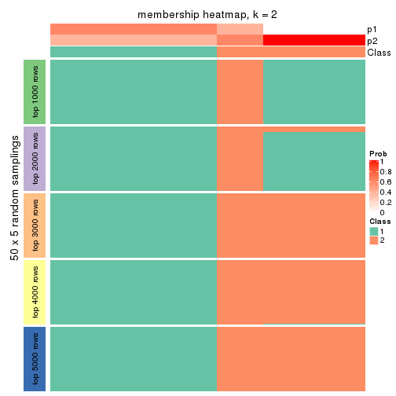
membership_heatmap(res, k = 3)
membership_heatmap(res, k = 4)
membership_heatmap(res, k = 5)
membership_heatmap(res, k = 6)
As soon as we have had the classes for columns, we can look for signatures which are significantly different between classes which can be candidate marks for certain classes. Following are the heatmaps for signatures.
Signature heatmaps where rows are scaled:
get_signatures(res, k = 2)
get_signatures(res, k = 3)
get_signatures(res, k = 4)
get_signatures(res, k = 5)
get_signatures(res, k = 6)

Signature heatmaps where rows are not scaled:
get_signatures(res, k = 2, scale_rows = FALSE)
get_signatures(res, k = 3, scale_rows = FALSE)
get_signatures(res, k = 4, scale_rows = FALSE)
get_signatures(res, k = 5, scale_rows = FALSE)
get_signatures(res, k = 6, scale_rows = FALSE)
Compare the overlap of signatures from different k:
compare_signatures(res)
get_signature() returns a data frame invisibly. TO get the list of signatures, the function
call should be assigned to a variable explicitly. In following code, if plot argument is set
to FALSE, no heatmap is plotted while only the differential analysis is performed.
# code only for demonstration
tb = get_signature(res, k = ..., plot = FALSE)
An example of the output of tb is:
#> which_row fdr mean_1 mean_2 scaled_mean_1 scaled_mean_2 km
#> 1 38 0.042760348 8.373488 9.131774 -0.5533452 0.5164555 1
#> 2 40 0.018707592 7.106213 8.469186 -0.6173731 0.5762149 1
#> 3 55 0.019134737 10.221463 11.207825 -0.6159697 0.5749050 1
#> 4 59 0.006059896 5.921854 7.869574 -0.6899429 0.6439467 1
#> 5 60 0.018055526 8.928898 10.211722 -0.6204761 0.5791110 1
#> 6 98 0.009384629 15.714769 14.887706 0.6635654 -0.6193277 2
...
The columns in tb are:
which_row: row indices corresponding to the input matrix.fdr: FDR for the differential test. mean_x: The mean value in group x.scaled_mean_x: The mean value in group x after rows are scaled.km: Row groups if k-means clustering is applied to rows.UMAP plot which shows how samples are separated.
dimension_reduction(res, k = 2, method = "UMAP")

dimension_reduction(res, k = 3, method = "UMAP")
dimension_reduction(res, k = 4, method = "UMAP")

dimension_reduction(res, k = 5, method = "UMAP")
dimension_reduction(res, k = 6, method = "UMAP")
Following heatmap shows how subgroups are split when increasing k:
collect_classes(res)
If matrix rows can be associated to genes, consider to use functional_enrichment(res,
...) to perform function enrichment for the signature genes. See this vignette for more detailed explanations.
The object with results only for a single top-value method and a single partition method can be extracted as:
res = res_list["MAD", "kmeans"]
# you can also extract it by
# res = res_list["MAD:kmeans"]
A summary of res and all the functions that can be applied to it:
res
#> A 'ConsensusPartition' object with k = 2, 3, 4, 5, 6.
#> On a matrix with 14753 rows and 68 columns.
#> Top rows (1000, 2000, 3000, 4000, 5000) are extracted by 'MAD' method.
#> Subgroups are detected by 'kmeans' method.
#> Performed in total 1250 partitions by row resampling.
#> Best k for subgroups seems to be 2.
#>
#> Following methods can be applied to this 'ConsensusPartition' object:
#> [1] "cola_report" "collect_classes" "collect_plots"
#> [4] "collect_stats" "colnames" "compare_signatures"
#> [7] "consensus_heatmap" "dimension_reduction" "functional_enrichment"
#> [10] "get_anno_col" "get_anno" "get_classes"
#> [13] "get_consensus" "get_matrix" "get_membership"
#> [16] "get_param" "get_signatures" "get_stats"
#> [19] "is_best_k" "is_stable_k" "membership_heatmap"
#> [22] "ncol" "nrow" "plot_ecdf"
#> [25] "rownames" "select_partition_number" "show"
#> [28] "suggest_best_k" "test_to_known_factors"
collect_plots() function collects all the plots made from res for all k (number of partitions)
into one single page to provide an easy and fast comparison between different k.
collect_plots(res)
The plots are:
k and the heatmap of
predicted classes for each k.k.k.k.All the plots in panels can be made by individual functions and they are plotted later in this section.
select_partition_number() produces several plots showing different
statistics for choosing “optimized” k. There are following statistics:
k;k, the area increased is defined as \(A_k - A_{k-1}\).The detailed explanations of these statistics can be found in the cola vignette.
Generally speaking, lower PAC score, higher mean silhouette score or higher
concordance corresponds to better partition. Rand index and Jaccard index
measure how similar the current partition is compared to partition with k-1.
If they are too similar, we won't accept k is better than k-1.
select_partition_number(res)
The numeric values for all these statistics can be obtained by get_stats().
get_stats(res)
#> k 1-PAC mean_silhouette concordance area_increased Rand Jaccard
#> 2 2 0.384 0.854 0.873 0.4408 0.494 0.494
#> 3 3 0.535 0.614 0.728 0.3575 0.696 0.493
#> 4 4 0.552 0.807 0.778 0.1489 0.853 0.644
#> 5 5 0.638 0.747 0.780 0.0837 1.000 1.000
#> 6 6 0.712 0.794 0.780 0.0513 0.934 0.762
suggest_best_k() suggests the best \(k\) based on these statistics. The rules are as follows:
suggest_best_k(res)
#> [1] 2
Following shows the table of the partitions (You need to click the show/hide
code output link to see it). The membership matrix (columns with name p*)
is inferred by
clue::cl_consensus()
function with the SE method. Basically the value in the membership matrix
represents the probability to belong to a certain group. The finall class
label for an item is determined with the group with highest probability it
belongs to.
In get_classes() function, the entropy is calculated from the membership
matrix and the silhouette score is calculated from the consensus matrix.
cbind(get_classes(res, k = 2), get_membership(res, k = 2))
#> class entropy silhouette p1 p2
#> SRR562645 1 0.821 0.672 0.744 0.256
#> SRR562646 1 0.821 0.672 0.744 0.256
#> SRR562647 1 0.821 0.672 0.744 0.256
#> SRR562648 1 0.821 0.672 0.744 0.256
#> SRR562649 1 0.821 0.672 0.744 0.256
#> SRR567420 1 0.821 0.672 0.744 0.256
#> SRR567421 1 0.821 0.672 0.744 0.256
#> SRR567422 1 0.821 0.672 0.744 0.256
#> SRR567423 1 0.821 0.672 0.744 0.256
#> SRR567424 1 0.821 0.672 0.744 0.256
#> SRR567425 1 0.118 0.892 0.984 0.016
#> SRR567426 1 0.118 0.892 0.984 0.016
#> SRR567427 1 0.118 0.892 0.984 0.016
#> SRR567428 1 0.118 0.892 0.984 0.016
#> SRR567429 1 0.118 0.892 0.984 0.016
#> SRR567430 1 0.118 0.892 0.984 0.016
#> SRR567431 1 0.118 0.892 0.984 0.016
#> SRR567432 1 0.118 0.892 0.984 0.016
#> SRR567433 1 0.118 0.892 0.984 0.016
#> SRR567434 1 0.118 0.892 0.984 0.016
#> SRR567435 1 0.118 0.892 0.984 0.016
#> SRR567436 1 0.118 0.892 0.984 0.016
#> SRR567437 1 0.118 0.892 0.984 0.016
#> SRR567438 1 0.118 0.892 0.984 0.016
#> SRR567439 1 0.118 0.892 0.984 0.016
#> SRR567440 2 0.714 0.916 0.196 0.804
#> SRR567441 2 0.714 0.916 0.196 0.804
#> SRR567442 2 0.714 0.916 0.196 0.804
#> SRR567443 2 0.714 0.916 0.196 0.804
#> SRR567444 2 0.714 0.916 0.196 0.804
#> SRR567445 1 0.118 0.892 0.984 0.016
#> SRR567446 1 0.118 0.892 0.984 0.016
#> SRR567447 1 0.118 0.892 0.984 0.016
#> SRR567448 1 0.118 0.892 0.984 0.016
#> SRR567449 1 0.118 0.892 0.984 0.016
#> SRR567450 2 0.706 0.916 0.192 0.808
#> SRR567451 2 0.706 0.916 0.192 0.808
#> SRR567452 2 0.706 0.916 0.192 0.808
#> SRR567453 2 0.706 0.916 0.192 0.808
#> SRR567454 2 0.706 0.916 0.192 0.808
#> SRR567455 2 0.706 0.916 0.192 0.808
#> SRR567456 2 0.706 0.916 0.192 0.808
#> SRR567457 1 0.118 0.892 0.984 0.016
#> SRR567458 1 0.118 0.892 0.984 0.016
#> SRR567459 1 0.118 0.892 0.984 0.016
#> SRR567460 1 0.118 0.892 0.984 0.016
#> SRR567461 1 0.118 0.892 0.984 0.016
#> SRR567462 2 0.714 0.916 0.196 0.804
#> SRR567463 2 0.714 0.916 0.196 0.804
#> SRR567464 2 0.714 0.916 0.196 0.804
#> SRR567465 2 0.714 0.916 0.196 0.804
#> SRR567466 2 0.714 0.916 0.196 0.804
#> SRR567467 2 0.714 0.916 0.196 0.804
#> SRR567468 2 0.714 0.916 0.196 0.804
#> SRR567469 2 0.714 0.916 0.196 0.804
#> SRR567470 2 0.714 0.916 0.196 0.804
#> SRR567471 2 0.714 0.916 0.196 0.804
#> SRR835008 1 0.833 0.668 0.736 0.264
#> SRR835009 2 0.469 0.869 0.100 0.900
#> SRR835011 2 0.000 0.809 0.000 1.000
#> SRR835012 2 0.000 0.809 0.000 1.000
#> SRR835013 2 0.000 0.809 0.000 1.000
#> SRR835010 2 0.469 0.869 0.100 0.900
#> SRR835014 2 0.000 0.809 0.000 1.000
#> SRR835015 2 0.000 0.809 0.000 1.000
#> SRR835016 2 0.000 0.809 0.000 1.000
#> SRR835017 2 0.000 0.809 0.000 1.000
#> SRR835018 2 0.000 0.809 0.000 1.000
cbind(get_classes(res, k = 3), get_membership(res, k = 3))
#> class entropy silhouette p1 p2 p3
#> SRR562645 3 0.998 0.302 0.348 0.304 0.348
#> SRR562646 3 0.998 0.302 0.348 0.304 0.348
#> SRR562647 3 0.998 0.302 0.348 0.304 0.348
#> SRR562648 3 0.998 0.302 0.348 0.304 0.348
#> SRR562649 1 0.998 -0.348 0.348 0.304 0.348
#> SRR567420 3 0.998 0.309 0.344 0.304 0.352
#> SRR567421 3 0.998 0.309 0.344 0.304 0.352
#> SRR567422 3 0.998 0.309 0.344 0.304 0.352
#> SRR567423 3 0.998 0.309 0.344 0.304 0.352
#> SRR567424 3 0.998 0.309 0.344 0.304 0.352
#> SRR567425 1 0.000 0.923 1.000 0.000 0.000
#> SRR567426 1 0.000 0.923 1.000 0.000 0.000
#> SRR567427 1 0.000 0.923 1.000 0.000 0.000
#> SRR567428 1 0.000 0.923 1.000 0.000 0.000
#> SRR567429 1 0.000 0.923 1.000 0.000 0.000
#> SRR567430 1 0.000 0.923 1.000 0.000 0.000
#> SRR567431 1 0.000 0.923 1.000 0.000 0.000
#> SRR567432 1 0.000 0.923 1.000 0.000 0.000
#> SRR567433 1 0.000 0.923 1.000 0.000 0.000
#> SRR567434 1 0.000 0.923 1.000 0.000 0.000
#> SRR567435 1 0.000 0.923 1.000 0.000 0.000
#> SRR567436 1 0.000 0.923 1.000 0.000 0.000
#> SRR567437 1 0.000 0.923 1.000 0.000 0.000
#> SRR567438 1 0.000 0.923 1.000 0.000 0.000
#> SRR567439 1 0.000 0.923 1.000 0.000 0.000
#> SRR567440 3 0.164 0.509 0.044 0.000 0.956
#> SRR567441 3 0.164 0.509 0.044 0.000 0.956
#> SRR567442 3 0.164 0.509 0.044 0.000 0.956
#> SRR567443 3 0.164 0.509 0.044 0.000 0.956
#> SRR567444 3 0.164 0.509 0.044 0.000 0.956
#> SRR567445 1 0.348 0.898 0.872 0.128 0.000
#> SRR567446 1 0.348 0.898 0.872 0.128 0.000
#> SRR567447 1 0.348 0.898 0.872 0.128 0.000
#> SRR567448 1 0.348 0.898 0.872 0.128 0.000
#> SRR567449 1 0.348 0.898 0.872 0.128 0.000
#> SRR567450 3 0.545 0.359 0.044 0.152 0.804
#> SRR567451 3 0.545 0.359 0.044 0.152 0.804
#> SRR567452 3 0.545 0.359 0.044 0.152 0.804
#> SRR567453 3 0.545 0.359 0.044 0.152 0.804
#> SRR567454 3 0.545 0.359 0.044 0.152 0.804
#> SRR567455 3 0.545 0.359 0.044 0.152 0.804
#> SRR567456 3 0.545 0.359 0.044 0.152 0.804
#> SRR567457 1 0.355 0.896 0.868 0.132 0.000
#> SRR567458 1 0.355 0.896 0.868 0.132 0.000
#> SRR567459 1 0.355 0.896 0.868 0.132 0.000
#> SRR567460 1 0.355 0.896 0.868 0.132 0.000
#> SRR567461 1 0.355 0.896 0.868 0.132 0.000
#> SRR567462 3 0.164 0.509 0.044 0.000 0.956
#> SRR567463 3 0.164 0.509 0.044 0.000 0.956
#> SRR567464 3 0.164 0.509 0.044 0.000 0.956
#> SRR567465 3 0.164 0.509 0.044 0.000 0.956
#> SRR567466 3 0.164 0.509 0.044 0.000 0.956
#> SRR567467 3 0.223 0.500 0.044 0.012 0.944
#> SRR567468 3 0.223 0.500 0.044 0.012 0.944
#> SRR567469 3 0.223 0.500 0.044 0.012 0.944
#> SRR567470 3 0.223 0.500 0.044 0.012 0.944
#> SRR567471 3 0.223 0.500 0.044 0.012 0.944
#> SRR835008 3 0.984 0.297 0.348 0.252 0.400
#> SRR835009 3 0.740 -0.696 0.036 0.412 0.552
#> SRR835011 2 0.614 0.962 0.000 0.596 0.404
#> SRR835012 2 0.614 0.962 0.000 0.596 0.404
#> SRR835013 2 0.614 0.962 0.000 0.596 0.404
#> SRR835010 3 0.740 -0.696 0.036 0.412 0.552
#> SRR835014 2 0.630 0.881 0.000 0.524 0.476
#> SRR835015 2 0.630 0.881 0.000 0.524 0.476
#> SRR835016 2 0.614 0.962 0.000 0.596 0.404
#> SRR835017 2 0.614 0.962 0.000 0.596 0.404
#> SRR835018 2 0.614 0.962 0.000 0.596 0.404
cbind(get_classes(res, k = 4), get_membership(res, k = 4))
#> class entropy silhouette p1 p2 p3 p4
#> SRR562645 4 0.7119 0.981 0.252 0.004 0.168 0.576
#> SRR562646 4 0.7119 0.981 0.252 0.004 0.168 0.576
#> SRR562647 4 0.7119 0.981 0.252 0.004 0.168 0.576
#> SRR562648 4 0.7119 0.981 0.252 0.004 0.168 0.576
#> SRR562649 4 0.7119 0.981 0.252 0.004 0.168 0.576
#> SRR567420 4 0.7130 0.981 0.248 0.004 0.172 0.576
#> SRR567421 4 0.7130 0.981 0.248 0.004 0.172 0.576
#> SRR567422 4 0.7130 0.981 0.248 0.004 0.172 0.576
#> SRR567423 4 0.7130 0.981 0.248 0.004 0.172 0.576
#> SRR567424 4 0.7130 0.981 0.248 0.004 0.172 0.576
#> SRR567425 1 0.0000 0.798 1.000 0.000 0.000 0.000
#> SRR567426 1 0.0000 0.798 1.000 0.000 0.000 0.000
#> SRR567427 1 0.0000 0.798 1.000 0.000 0.000 0.000
#> SRR567428 1 0.0000 0.798 1.000 0.000 0.000 0.000
#> SRR567429 1 0.0000 0.798 1.000 0.000 0.000 0.000
#> SRR567430 1 0.0000 0.798 1.000 0.000 0.000 0.000
#> SRR567431 1 0.0000 0.798 1.000 0.000 0.000 0.000
#> SRR567432 1 0.0000 0.798 1.000 0.000 0.000 0.000
#> SRR567433 1 0.0000 0.798 1.000 0.000 0.000 0.000
#> SRR567434 1 0.0000 0.798 1.000 0.000 0.000 0.000
#> SRR567435 1 0.1042 0.787 0.972 0.020 0.000 0.008
#> SRR567436 1 0.1042 0.787 0.972 0.020 0.000 0.008
#> SRR567437 1 0.1042 0.787 0.972 0.020 0.000 0.008
#> SRR567438 1 0.1042 0.787 0.972 0.020 0.000 0.008
#> SRR567439 1 0.1042 0.787 0.972 0.020 0.000 0.008
#> SRR567440 3 0.0672 0.853 0.008 0.000 0.984 0.008
#> SRR567441 3 0.0672 0.853 0.008 0.000 0.984 0.008
#> SRR567442 3 0.0672 0.853 0.008 0.000 0.984 0.008
#> SRR567443 3 0.0672 0.853 0.008 0.000 0.984 0.008
#> SRR567444 3 0.0672 0.853 0.008 0.000 0.984 0.008
#> SRR567445 1 0.6757 0.709 0.612 0.196 0.000 0.192
#> SRR567446 1 0.6757 0.709 0.612 0.196 0.000 0.192
#> SRR567447 1 0.6757 0.709 0.612 0.196 0.000 0.192
#> SRR567448 1 0.6757 0.709 0.612 0.196 0.000 0.192
#> SRR567449 1 0.6757 0.709 0.612 0.196 0.000 0.192
#> SRR567450 3 0.5725 0.657 0.008 0.152 0.732 0.108
#> SRR567451 3 0.5725 0.657 0.008 0.152 0.732 0.108
#> SRR567452 3 0.5725 0.657 0.008 0.152 0.732 0.108
#> SRR567453 3 0.5725 0.657 0.008 0.152 0.732 0.108
#> SRR567454 3 0.5725 0.657 0.008 0.152 0.732 0.108
#> SRR567455 3 0.5725 0.657 0.008 0.152 0.732 0.108
#> SRR567456 3 0.5725 0.657 0.008 0.152 0.732 0.108
#> SRR567457 1 0.6790 0.709 0.608 0.200 0.000 0.192
#> SRR567458 1 0.6790 0.709 0.608 0.200 0.000 0.192
#> SRR567459 1 0.6790 0.709 0.608 0.200 0.000 0.192
#> SRR567460 1 0.6790 0.709 0.608 0.200 0.000 0.192
#> SRR567461 1 0.6790 0.709 0.608 0.200 0.000 0.192
#> SRR567462 3 0.1151 0.852 0.008 0.000 0.968 0.024
#> SRR567463 3 0.1151 0.852 0.008 0.000 0.968 0.024
#> SRR567464 3 0.1151 0.852 0.008 0.000 0.968 0.024
#> SRR567465 3 0.1151 0.852 0.008 0.000 0.968 0.024
#> SRR567466 3 0.1151 0.852 0.008 0.000 0.968 0.024
#> SRR567467 3 0.1639 0.843 0.008 0.004 0.952 0.036
#> SRR567468 3 0.1639 0.843 0.008 0.004 0.952 0.036
#> SRR567469 3 0.1639 0.843 0.008 0.004 0.952 0.036
#> SRR567470 3 0.1639 0.843 0.008 0.004 0.952 0.036
#> SRR567471 3 0.1639 0.843 0.008 0.004 0.952 0.036
#> SRR835008 4 0.8144 0.830 0.200 0.032 0.264 0.504
#> SRR835009 2 0.9273 0.646 0.120 0.416 0.284 0.180
#> SRR835011 2 0.4995 0.852 0.000 0.720 0.248 0.032
#> SRR835012 2 0.4995 0.852 0.000 0.720 0.248 0.032
#> SRR835013 2 0.4995 0.852 0.000 0.720 0.248 0.032
#> SRR835010 2 0.9273 0.646 0.120 0.416 0.284 0.180
#> SRR835014 2 0.7363 0.735 0.000 0.492 0.332 0.176
#> SRR835015 2 0.7363 0.735 0.000 0.492 0.332 0.176
#> SRR835016 2 0.4964 0.852 0.000 0.724 0.244 0.032
#> SRR835017 2 0.4964 0.852 0.000 0.724 0.244 0.032
#> SRR835018 2 0.4964 0.852 0.000 0.724 0.244 0.032
cbind(get_classes(res, k = 5), get_membership(res, k = 5))
#> class entropy silhouette p1 p2 p3 p4 p5
#> SRR562645 4 0.4812 0.968 0.168 0.012 0.060 0.752 NA
#> SRR562646 4 0.4812 0.968 0.168 0.012 0.060 0.752 NA
#> SRR562647 4 0.4812 0.968 0.168 0.012 0.060 0.752 NA
#> SRR562648 4 0.4812 0.968 0.168 0.012 0.060 0.752 NA
#> SRR562649 4 0.4812 0.968 0.168 0.012 0.060 0.752 NA
#> SRR567420 4 0.4152 0.968 0.168 0.000 0.060 0.772 NA
#> SRR567421 4 0.4152 0.968 0.168 0.000 0.060 0.772 NA
#> SRR567422 4 0.4152 0.968 0.168 0.000 0.060 0.772 NA
#> SRR567423 4 0.4152 0.968 0.168 0.000 0.060 0.772 NA
#> SRR567424 4 0.4152 0.968 0.168 0.000 0.060 0.772 NA
#> SRR567425 1 0.0000 0.750 1.000 0.000 0.000 0.000 NA
#> SRR567426 1 0.0000 0.750 1.000 0.000 0.000 0.000 NA
#> SRR567427 1 0.0000 0.750 1.000 0.000 0.000 0.000 NA
#> SRR567428 1 0.0000 0.750 1.000 0.000 0.000 0.000 NA
#> SRR567429 1 0.0000 0.750 1.000 0.000 0.000 0.000 NA
#> SRR567430 1 0.0000 0.750 1.000 0.000 0.000 0.000 NA
#> SRR567431 1 0.0000 0.750 1.000 0.000 0.000 0.000 NA
#> SRR567432 1 0.0000 0.750 1.000 0.000 0.000 0.000 NA
#> SRR567433 1 0.0000 0.750 1.000 0.000 0.000 0.000 NA
#> SRR567434 1 0.0000 0.750 1.000 0.000 0.000 0.000 NA
#> SRR567435 1 0.2445 0.719 0.908 0.020 0.000 0.016 NA
#> SRR567436 1 0.2445 0.719 0.908 0.020 0.000 0.016 NA
#> SRR567437 1 0.2445 0.719 0.908 0.020 0.000 0.016 NA
#> SRR567438 1 0.2445 0.719 0.908 0.020 0.000 0.016 NA
#> SRR567439 1 0.2445 0.719 0.908 0.020 0.000 0.016 NA
#> SRR567440 3 0.0162 0.794 0.000 0.000 0.996 0.004 NA
#> SRR567441 3 0.0162 0.794 0.000 0.000 0.996 0.004 NA
#> SRR567442 3 0.0162 0.794 0.000 0.000 0.996 0.004 NA
#> SRR567443 3 0.0162 0.794 0.000 0.000 0.996 0.004 NA
#> SRR567444 3 0.0162 0.794 0.000 0.000 0.996 0.004 NA
#> SRR567445 1 0.5816 0.637 0.500 0.044 0.000 0.024 NA
#> SRR567446 1 0.5816 0.637 0.500 0.044 0.000 0.024 NA
#> SRR567447 1 0.5816 0.637 0.500 0.044 0.000 0.024 NA
#> SRR567448 1 0.5816 0.637 0.500 0.044 0.000 0.024 NA
#> SRR567449 1 0.5816 0.637 0.500 0.044 0.000 0.024 NA
#> SRR567450 3 0.7303 0.503 0.000 0.180 0.552 0.132 NA
#> SRR567451 3 0.7303 0.503 0.000 0.180 0.552 0.132 NA
#> SRR567452 3 0.7303 0.503 0.000 0.180 0.552 0.132 NA
#> SRR567453 3 0.7303 0.503 0.000 0.180 0.552 0.132 NA
#> SRR567454 3 0.7303 0.503 0.000 0.180 0.552 0.132 NA
#> SRR567455 3 0.7303 0.503 0.000 0.180 0.552 0.132 NA
#> SRR567456 3 0.7303 0.503 0.000 0.180 0.552 0.132 NA
#> SRR567457 1 0.4827 0.639 0.504 0.000 0.000 0.020 NA
#> SRR567458 1 0.4827 0.639 0.504 0.000 0.000 0.020 NA
#> SRR567459 1 0.4827 0.639 0.504 0.000 0.000 0.020 NA
#> SRR567460 1 0.4827 0.639 0.504 0.000 0.000 0.020 NA
#> SRR567461 1 0.4827 0.639 0.504 0.000 0.000 0.020 NA
#> SRR567462 3 0.1725 0.790 0.000 0.000 0.936 0.020 NA
#> SRR567463 3 0.1725 0.790 0.000 0.000 0.936 0.020 NA
#> SRR567464 3 0.1725 0.790 0.000 0.000 0.936 0.020 NA
#> SRR567465 3 0.1725 0.790 0.000 0.000 0.936 0.020 NA
#> SRR567466 3 0.1725 0.790 0.000 0.000 0.936 0.020 NA
#> SRR567467 3 0.1461 0.786 0.000 0.004 0.952 0.016 NA
#> SRR567468 3 0.1461 0.786 0.000 0.004 0.952 0.016 NA
#> SRR567469 3 0.1461 0.786 0.000 0.004 0.952 0.016 NA
#> SRR567470 3 0.1461 0.786 0.000 0.004 0.952 0.016 NA
#> SRR567471 3 0.1461 0.786 0.000 0.004 0.952 0.016 NA
#> SRR835008 4 0.7360 0.719 0.116 0.032 0.164 0.596 NA
#> SRR835009 2 0.8956 0.628 0.116 0.396 0.132 0.080 NA
#> SRR835011 2 0.3193 0.816 0.000 0.840 0.132 0.028 NA
#> SRR835012 2 0.3193 0.816 0.000 0.840 0.132 0.028 NA
#> SRR835013 2 0.3193 0.816 0.000 0.840 0.132 0.028 NA
#> SRR835010 2 0.8956 0.628 0.116 0.396 0.132 0.080 NA
#> SRR835014 2 0.7342 0.706 0.000 0.516 0.152 0.084 NA
#> SRR835015 2 0.7342 0.706 0.000 0.516 0.152 0.084 NA
#> SRR835016 2 0.2818 0.816 0.000 0.856 0.132 0.012 NA
#> SRR835017 2 0.2818 0.816 0.000 0.856 0.132 0.012 NA
#> SRR835018 2 0.2818 0.816 0.000 0.856 0.132 0.012 NA
cbind(get_classes(res, k = 6), get_membership(res, k = 6))
#> class entropy silhouette p1 p2 p3 p4 p5 p6
#> SRR562645 4 0.418 0.941 0.088 0.020 0.032 0.812 NA 0.028
#> SRR562646 4 0.418 0.941 0.088 0.020 0.032 0.812 NA 0.028
#> SRR562647 4 0.418 0.941 0.088 0.020 0.032 0.812 NA 0.028
#> SRR562648 4 0.418 0.941 0.088 0.020 0.032 0.812 NA 0.028
#> SRR562649 4 0.418 0.941 0.088 0.020 0.032 0.812 NA 0.028
#> SRR567420 4 0.297 0.941 0.076 0.000 0.032 0.864 NA 0.028
#> SRR567421 4 0.297 0.941 0.076 0.000 0.032 0.864 NA 0.028
#> SRR567422 4 0.297 0.941 0.076 0.000 0.032 0.864 NA 0.028
#> SRR567423 4 0.297 0.941 0.076 0.000 0.032 0.864 NA 0.028
#> SRR567424 4 0.297 0.941 0.076 0.000 0.032 0.864 NA 0.028
#> SRR567425 1 0.359 0.920 0.656 0.000 0.000 0.000 NA 0.344
#> SRR567426 1 0.359 0.920 0.656 0.000 0.000 0.000 NA 0.344
#> SRR567427 1 0.359 0.920 0.656 0.000 0.000 0.000 NA 0.344
#> SRR567428 1 0.359 0.920 0.656 0.000 0.000 0.000 NA 0.344
#> SRR567429 1 0.359 0.920 0.656 0.000 0.000 0.000 NA 0.344
#> SRR567430 1 0.359 0.920 0.656 0.000 0.000 0.000 NA 0.344
#> SRR567431 1 0.359 0.920 0.656 0.000 0.000 0.000 NA 0.344
#> SRR567432 1 0.359 0.920 0.656 0.000 0.000 0.000 NA 0.344
#> SRR567433 1 0.359 0.920 0.656 0.000 0.000 0.000 NA 0.344
#> SRR567434 1 0.359 0.920 0.656 0.000 0.000 0.000 NA 0.344
#> SRR567435 1 0.560 0.837 0.600 0.048 0.000 0.012 NA 0.296
#> SRR567436 1 0.560 0.837 0.600 0.048 0.000 0.012 NA 0.296
#> SRR567437 1 0.560 0.837 0.600 0.048 0.000 0.012 NA 0.296
#> SRR567438 1 0.560 0.837 0.600 0.048 0.000 0.012 NA 0.296
#> SRR567439 1 0.560 0.837 0.600 0.048 0.000 0.012 NA 0.296
#> SRR567440 3 0.394 0.762 0.000 0.000 0.572 0.004 NA 0.000
#> SRR567441 3 0.394 0.762 0.000 0.000 0.572 0.004 NA 0.000
#> SRR567442 3 0.394 0.762 0.000 0.000 0.572 0.004 NA 0.000
#> SRR567443 3 0.394 0.762 0.000 0.000 0.572 0.004 NA 0.000
#> SRR567444 3 0.394 0.762 0.000 0.000 0.572 0.004 NA 0.000
#> SRR567445 6 0.026 0.876 0.008 0.000 0.000 0.000 NA 0.992
#> SRR567446 6 0.026 0.876 0.008 0.000 0.000 0.000 NA 0.992
#> SRR567447 6 0.026 0.876 0.008 0.000 0.000 0.000 NA 0.992
#> SRR567448 6 0.026 0.876 0.008 0.000 0.000 0.000 NA 0.992
#> SRR567449 6 0.026 0.876 0.008 0.000 0.000 0.000 NA 0.992
#> SRR567450 3 0.114 0.516 0.000 0.000 0.948 0.052 NA 0.000
#> SRR567451 3 0.114 0.516 0.000 0.000 0.948 0.052 NA 0.000
#> SRR567452 3 0.114 0.516 0.000 0.000 0.948 0.052 NA 0.000
#> SRR567453 3 0.114 0.516 0.000 0.000 0.948 0.052 NA 0.000
#> SRR567454 3 0.114 0.516 0.000 0.000 0.948 0.052 NA 0.000
#> SRR567455 3 0.114 0.516 0.000 0.000 0.948 0.052 NA 0.000
#> SRR567456 3 0.114 0.516 0.000 0.000 0.948 0.052 NA 0.000
#> SRR567457 6 0.379 0.877 0.004 0.040 0.000 0.020 NA 0.800
#> SRR567458 6 0.379 0.877 0.004 0.040 0.000 0.020 NA 0.800
#> SRR567459 6 0.379 0.877 0.004 0.040 0.000 0.020 NA 0.800
#> SRR567460 6 0.379 0.877 0.004 0.040 0.000 0.020 NA 0.800
#> SRR567461 6 0.379 0.877 0.004 0.040 0.000 0.020 NA 0.800
#> SRR567462 3 0.520 0.756 0.044 0.008 0.592 0.020 NA 0.000
#> SRR567463 3 0.520 0.756 0.044 0.008 0.592 0.020 NA 0.000
#> SRR567464 3 0.520 0.756 0.044 0.008 0.592 0.020 NA 0.000
#> SRR567465 3 0.520 0.756 0.044 0.008 0.592 0.020 NA 0.000
#> SRR567466 3 0.520 0.756 0.044 0.008 0.592 0.020 NA 0.000
#> SRR567467 3 0.558 0.719 0.036 0.024 0.492 0.020 NA 0.000
#> SRR567468 3 0.558 0.719 0.036 0.024 0.492 0.020 NA 0.000
#> SRR567469 3 0.558 0.719 0.036 0.024 0.492 0.020 NA 0.000
#> SRR567470 3 0.558 0.719 0.036 0.024 0.492 0.020 NA 0.000
#> SRR567471 3 0.558 0.719 0.036 0.024 0.492 0.020 NA 0.000
#> SRR835008 4 0.688 0.534 0.116 0.040 0.076 0.584 NA 0.008
#> SRR835009 2 0.578 0.593 0.112 0.604 0.244 0.036 NA 0.000
#> SRR835011 2 0.782 0.771 0.136 0.400 0.236 0.028 NA 0.000
#> SRR835012 2 0.782 0.771 0.136 0.400 0.236 0.028 NA 0.000
#> SRR835013 2 0.782 0.771 0.136 0.400 0.236 0.028 NA 0.000
#> SRR835010 2 0.578 0.593 0.112 0.604 0.244 0.036 NA 0.000
#> SRR835014 2 0.369 0.643 0.000 0.708 0.280 0.008 NA 0.000
#> SRR835015 2 0.369 0.643 0.000 0.708 0.280 0.008 NA 0.000
#> SRR835016 2 0.759 0.771 0.104 0.408 0.236 0.020 NA 0.000
#> SRR835017 2 0.759 0.771 0.104 0.408 0.236 0.020 NA 0.000
#> SRR835018 2 0.759 0.771 0.104 0.408 0.236 0.020 NA 0.000
Heatmaps for the consensus matrix. It visualizes the probability of two samples to be in a same group.
consensus_heatmap(res, k = 2)
consensus_heatmap(res, k = 3)
consensus_heatmap(res, k = 4)
consensus_heatmap(res, k = 5)
consensus_heatmap(res, k = 6)
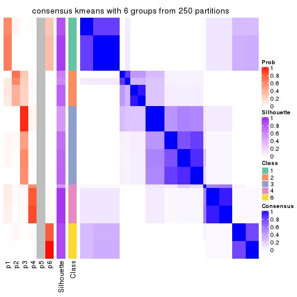
Heatmaps for the membership of samples in all partitions to see how consistent they are:
membership_heatmap(res, k = 2)
membership_heatmap(res, k = 3)
membership_heatmap(res, k = 4)
membership_heatmap(res, k = 5)
membership_heatmap(res, k = 6)
As soon as we have had the classes for columns, we can look for signatures which are significantly different between classes which can be candidate marks for certain classes. Following are the heatmaps for signatures.
Signature heatmaps where rows are scaled:
get_signatures(res, k = 2)
get_signatures(res, k = 3)
get_signatures(res, k = 4)
get_signatures(res, k = 5)
get_signatures(res, k = 6)
Signature heatmaps where rows are not scaled:
get_signatures(res, k = 2, scale_rows = FALSE)
get_signatures(res, k = 3, scale_rows = FALSE)
get_signatures(res, k = 4, scale_rows = FALSE)
get_signatures(res, k = 5, scale_rows = FALSE)
get_signatures(res, k = 6, scale_rows = FALSE)
Compare the overlap of signatures from different k:
compare_signatures(res)
get_signature() returns a data frame invisibly. TO get the list of signatures, the function
call should be assigned to a variable explicitly. In following code, if plot argument is set
to FALSE, no heatmap is plotted while only the differential analysis is performed.
# code only for demonstration
tb = get_signature(res, k = ..., plot = FALSE)
An example of the output of tb is:
#> which_row fdr mean_1 mean_2 scaled_mean_1 scaled_mean_2 km
#> 1 38 0.042760348 8.373488 9.131774 -0.5533452 0.5164555 1
#> 2 40 0.018707592 7.106213 8.469186 -0.6173731 0.5762149 1
#> 3 55 0.019134737 10.221463 11.207825 -0.6159697 0.5749050 1
#> 4 59 0.006059896 5.921854 7.869574 -0.6899429 0.6439467 1
#> 5 60 0.018055526 8.928898 10.211722 -0.6204761 0.5791110 1
#> 6 98 0.009384629 15.714769 14.887706 0.6635654 -0.6193277 2
...
The columns in tb are:
which_row: row indices corresponding to the input matrix.fdr: FDR for the differential test. mean_x: The mean value in group x.scaled_mean_x: The mean value in group x after rows are scaled.km: Row groups if k-means clustering is applied to rows.UMAP plot which shows how samples are separated.
dimension_reduction(res, k = 2, method = "UMAP")

dimension_reduction(res, k = 3, method = "UMAP")
dimension_reduction(res, k = 4, method = "UMAP")

dimension_reduction(res, k = 5, method = "UMAP")
dimension_reduction(res, k = 6, method = "UMAP")
Following heatmap shows how subgroups are split when increasing k:
collect_classes(res)
If matrix rows can be associated to genes, consider to use functional_enrichment(res,
...) to perform function enrichment for the signature genes. See this vignette for more detailed explanations.
The object with results only for a single top-value method and a single partition method can be extracted as:
res = res_list["MAD", "skmeans"]
# you can also extract it by
# res = res_list["MAD:skmeans"]
A summary of res and all the functions that can be applied to it:
res
#> A 'ConsensusPartition' object with k = 2, 3, 4, 5, 6.
#> On a matrix with 14753 rows and 68 columns.
#> Top rows (1000, 2000, 3000, 4000, 5000) are extracted by 'MAD' method.
#> Subgroups are detected by 'skmeans' method.
#> Performed in total 1250 partitions by row resampling.
#> Best k for subgroups seems to be 4.
#>
#> Following methods can be applied to this 'ConsensusPartition' object:
#> [1] "cola_report" "collect_classes" "collect_plots"
#> [4] "collect_stats" "colnames" "compare_signatures"
#> [7] "consensus_heatmap" "dimension_reduction" "functional_enrichment"
#> [10] "get_anno_col" "get_anno" "get_classes"
#> [13] "get_consensus" "get_matrix" "get_membership"
#> [16] "get_param" "get_signatures" "get_stats"
#> [19] "is_best_k" "is_stable_k" "membership_heatmap"
#> [22] "ncol" "nrow" "plot_ecdf"
#> [25] "rownames" "select_partition_number" "show"
#> [28] "suggest_best_k" "test_to_known_factors"
collect_plots() function collects all the plots made from res for all k (number of partitions)
into one single page to provide an easy and fast comparison between different k.
collect_plots(res)
The plots are:
k and the heatmap of
predicted classes for each k.k.k.k.All the plots in panels can be made by individual functions and they are plotted later in this section.
select_partition_number() produces several plots showing different
statistics for choosing “optimized” k. There are following statistics:
k;k, the area increased is defined as \(A_k - A_{k-1}\).The detailed explanations of these statistics can be found in the cola vignette.
Generally speaking, lower PAC score, higher mean silhouette score or higher
concordance corresponds to better partition. Rand index and Jaccard index
measure how similar the current partition is compared to partition with k-1.
If they are too similar, we won't accept k is better than k-1.
select_partition_number(res)
The numeric values for all these statistics can be obtained by get_stats().
get_stats(res)
#> k 1-PAC mean_silhouette concordance area_increased Rand Jaccard
#> 2 2 0.718 0.932 0.962 0.5023 0.494 0.494
#> 3 3 1.000 0.957 0.970 0.2546 0.879 0.756
#> 4 4 1.000 0.996 0.994 0.1711 0.888 0.700
#> 5 5 0.893 0.932 0.931 0.0458 0.977 0.913
#> 6 6 0.883 0.947 0.927 0.0615 0.934 0.724
suggest_best_k() suggests the best \(k\) based on these statistics. The rules are as follows:
suggest_best_k(res)
#> [1] 4
#> attr(,"optional")
#> [1] 3
There is also optional best \(k\) = 3 that is worth to check.
Following shows the table of the partitions (You need to click the show/hide
code output link to see it). The membership matrix (columns with name p*)
is inferred by
clue::cl_consensus()
function with the SE method. Basically the value in the membership matrix
represents the probability to belong to a certain group. The finall class
label for an item is determined with the group with highest probability it
belongs to.
In get_classes() function, the entropy is calculated from the membership
matrix and the silhouette score is calculated from the consensus matrix.
cbind(get_classes(res, k = 2), get_membership(res, k = 2))
#> class entropy silhouette p1 p2
#> SRR562645 1 0.722 0.820 0.8 0.2
#> SRR562646 1 0.722 0.820 0.8 0.2
#> SRR562647 1 0.722 0.820 0.8 0.2
#> SRR562648 1 0.722 0.820 0.8 0.2
#> SRR562649 1 0.722 0.820 0.8 0.2
#> SRR567420 1 0.722 0.820 0.8 0.2
#> SRR567421 1 0.722 0.820 0.8 0.2
#> SRR567422 1 0.722 0.820 0.8 0.2
#> SRR567423 1 0.722 0.820 0.8 0.2
#> SRR567424 1 0.722 0.820 0.8 0.2
#> SRR567425 1 0.000 0.932 1.0 0.0
#> SRR567426 1 0.000 0.932 1.0 0.0
#> SRR567427 1 0.000 0.932 1.0 0.0
#> SRR567428 1 0.000 0.932 1.0 0.0
#> SRR567429 1 0.000 0.932 1.0 0.0
#> SRR567430 1 0.000 0.932 1.0 0.0
#> SRR567431 1 0.000 0.932 1.0 0.0
#> SRR567432 1 0.000 0.932 1.0 0.0
#> SRR567433 1 0.000 0.932 1.0 0.0
#> SRR567434 1 0.000 0.932 1.0 0.0
#> SRR567435 1 0.000 0.932 1.0 0.0
#> SRR567436 1 0.000 0.932 1.0 0.0
#> SRR567437 1 0.000 0.932 1.0 0.0
#> SRR567438 1 0.000 0.932 1.0 0.0
#> SRR567439 1 0.000 0.932 1.0 0.0
#> SRR567440 2 0.000 0.986 0.0 1.0
#> SRR567441 2 0.000 0.986 0.0 1.0
#> SRR567442 2 0.000 0.986 0.0 1.0
#> SRR567443 2 0.000 0.986 0.0 1.0
#> SRR567444 2 0.000 0.986 0.0 1.0
#> SRR567445 1 0.000 0.932 1.0 0.0
#> SRR567446 1 0.000 0.932 1.0 0.0
#> SRR567447 1 0.000 0.932 1.0 0.0
#> SRR567448 1 0.000 0.932 1.0 0.0
#> SRR567449 1 0.000 0.932 1.0 0.0
#> SRR567450 2 0.000 0.986 0.0 1.0
#> SRR567451 2 0.000 0.986 0.0 1.0
#> SRR567452 2 0.000 0.986 0.0 1.0
#> SRR567453 2 0.000 0.986 0.0 1.0
#> SRR567454 2 0.000 0.986 0.0 1.0
#> SRR567455 2 0.000 0.986 0.0 1.0
#> SRR567456 2 0.000 0.986 0.0 1.0
#> SRR567457 1 0.000 0.932 1.0 0.0
#> SRR567458 1 0.000 0.932 1.0 0.0
#> SRR567459 1 0.000 0.932 1.0 0.0
#> SRR567460 1 0.000 0.932 1.0 0.0
#> SRR567461 1 0.000 0.932 1.0 0.0
#> SRR567462 2 0.000 0.986 0.0 1.0
#> SRR567463 2 0.000 0.986 0.0 1.0
#> SRR567464 2 0.000 0.986 0.0 1.0
#> SRR567465 2 0.000 0.986 0.0 1.0
#> SRR567466 2 0.000 0.986 0.0 1.0
#> SRR567467 2 0.000 0.986 0.0 1.0
#> SRR567468 2 0.000 0.986 0.0 1.0
#> SRR567469 2 0.000 0.986 0.0 1.0
#> SRR567470 2 0.000 0.986 0.0 1.0
#> SRR567471 2 0.000 0.986 0.0 1.0
#> SRR835008 1 0.722 0.820 0.8 0.2
#> SRR835009 2 0.722 0.748 0.2 0.8
#> SRR835011 2 0.000 0.986 0.0 1.0
#> SRR835012 2 0.000 0.986 0.0 1.0
#> SRR835013 2 0.000 0.986 0.0 1.0
#> SRR835010 2 0.722 0.748 0.2 0.8
#> SRR835014 2 0.000 0.986 0.0 1.0
#> SRR835015 2 0.000 0.986 0.0 1.0
#> SRR835016 2 0.000 0.986 0.0 1.0
#> SRR835017 2 0.000 0.986 0.0 1.0
#> SRR835018 2 0.000 0.986 0.0 1.0
cbind(get_classes(res, k = 3), get_membership(res, k = 3))
#> class entropy silhouette p1 p2 p3
#> SRR562645 2 0.0747 0.994 0.016 0.984 0.000
#> SRR562646 2 0.0747 0.994 0.016 0.984 0.000
#> SRR562647 2 0.0747 0.994 0.016 0.984 0.000
#> SRR562648 2 0.0747 0.994 0.016 0.984 0.000
#> SRR562649 2 0.0747 0.994 0.016 0.984 0.000
#> SRR567420 2 0.0747 0.994 0.016 0.984 0.000
#> SRR567421 2 0.0747 0.994 0.016 0.984 0.000
#> SRR567422 2 0.0747 0.994 0.016 0.984 0.000
#> SRR567423 2 0.0747 0.994 0.016 0.984 0.000
#> SRR567424 2 0.0747 0.994 0.016 0.984 0.000
#> SRR567425 1 0.0000 1.000 1.000 0.000 0.000
#> SRR567426 1 0.0000 1.000 1.000 0.000 0.000
#> SRR567427 1 0.0000 1.000 1.000 0.000 0.000
#> SRR567428 1 0.0000 1.000 1.000 0.000 0.000
#> SRR567429 1 0.0000 1.000 1.000 0.000 0.000
#> SRR567430 1 0.0000 1.000 1.000 0.000 0.000
#> SRR567431 1 0.0000 1.000 1.000 0.000 0.000
#> SRR567432 1 0.0000 1.000 1.000 0.000 0.000
#> SRR567433 1 0.0000 1.000 1.000 0.000 0.000
#> SRR567434 1 0.0000 1.000 1.000 0.000 0.000
#> SRR567435 1 0.0000 1.000 1.000 0.000 0.000
#> SRR567436 1 0.0000 1.000 1.000 0.000 0.000
#> SRR567437 1 0.0000 1.000 1.000 0.000 0.000
#> SRR567438 1 0.0000 1.000 1.000 0.000 0.000
#> SRR567439 1 0.0000 1.000 1.000 0.000 0.000
#> SRR567440 3 0.0000 0.940 0.000 0.000 1.000
#> SRR567441 3 0.0000 0.940 0.000 0.000 1.000
#> SRR567442 3 0.0000 0.940 0.000 0.000 1.000
#> SRR567443 3 0.0000 0.940 0.000 0.000 1.000
#> SRR567444 3 0.0000 0.940 0.000 0.000 1.000
#> SRR567445 1 0.0000 1.000 1.000 0.000 0.000
#> SRR567446 1 0.0000 1.000 1.000 0.000 0.000
#> SRR567447 1 0.0000 1.000 1.000 0.000 0.000
#> SRR567448 1 0.0000 1.000 1.000 0.000 0.000
#> SRR567449 1 0.0000 1.000 1.000 0.000 0.000
#> SRR567450 3 0.2356 0.938 0.000 0.072 0.928
#> SRR567451 3 0.2356 0.938 0.000 0.072 0.928
#> SRR567452 3 0.2356 0.938 0.000 0.072 0.928
#> SRR567453 3 0.2356 0.938 0.000 0.072 0.928
#> SRR567454 3 0.2356 0.938 0.000 0.072 0.928
#> SRR567455 3 0.2356 0.938 0.000 0.072 0.928
#> SRR567456 3 0.2356 0.938 0.000 0.072 0.928
#> SRR567457 1 0.0000 1.000 1.000 0.000 0.000
#> SRR567458 1 0.0000 1.000 1.000 0.000 0.000
#> SRR567459 1 0.0000 1.000 1.000 0.000 0.000
#> SRR567460 1 0.0000 1.000 1.000 0.000 0.000
#> SRR567461 1 0.0000 1.000 1.000 0.000 0.000
#> SRR567462 3 0.0000 0.940 0.000 0.000 1.000
#> SRR567463 3 0.0000 0.940 0.000 0.000 1.000
#> SRR567464 3 0.0000 0.940 0.000 0.000 1.000
#> SRR567465 3 0.0000 0.940 0.000 0.000 1.000
#> SRR567466 3 0.0000 0.940 0.000 0.000 1.000
#> SRR567467 3 0.0000 0.940 0.000 0.000 1.000
#> SRR567468 3 0.0000 0.940 0.000 0.000 1.000
#> SRR567469 3 0.0000 0.940 0.000 0.000 1.000
#> SRR567470 3 0.0000 0.940 0.000 0.000 1.000
#> SRR567471 3 0.0000 0.940 0.000 0.000 1.000
#> SRR835008 2 0.2599 0.942 0.016 0.932 0.052
#> SRR835009 3 0.7741 0.519 0.324 0.068 0.608
#> SRR835011 3 0.2261 0.940 0.000 0.068 0.932
#> SRR835012 3 0.2261 0.940 0.000 0.068 0.932
#> SRR835013 3 0.2261 0.940 0.000 0.068 0.932
#> SRR835010 3 0.7741 0.519 0.324 0.068 0.608
#> SRR835014 3 0.2261 0.940 0.000 0.068 0.932
#> SRR835015 3 0.2261 0.940 0.000 0.068 0.932
#> SRR835016 3 0.2261 0.940 0.000 0.068 0.932
#> SRR835017 3 0.2261 0.940 0.000 0.068 0.932
#> SRR835018 3 0.2261 0.940 0.000 0.068 0.932
cbind(get_classes(res, k = 4), get_membership(res, k = 4))
#> class entropy silhouette p1 p2 p3 p4
#> SRR562645 4 0.0000 1.000 0.000 0.000 0.000 1
#> SRR562646 4 0.0000 1.000 0.000 0.000 0.000 1
#> SRR562647 4 0.0000 1.000 0.000 0.000 0.000 1
#> SRR562648 4 0.0000 1.000 0.000 0.000 0.000 1
#> SRR562649 4 0.0000 1.000 0.000 0.000 0.000 1
#> SRR567420 4 0.0000 1.000 0.000 0.000 0.000 1
#> SRR567421 4 0.0000 1.000 0.000 0.000 0.000 1
#> SRR567422 4 0.0000 1.000 0.000 0.000 0.000 1
#> SRR567423 4 0.0000 1.000 0.000 0.000 0.000 1
#> SRR567424 4 0.0000 1.000 0.000 0.000 0.000 1
#> SRR567425 1 0.0000 0.996 1.000 0.000 0.000 0
#> SRR567426 1 0.0000 0.996 1.000 0.000 0.000 0
#> SRR567427 1 0.0000 0.996 1.000 0.000 0.000 0
#> SRR567428 1 0.0000 0.996 1.000 0.000 0.000 0
#> SRR567429 1 0.0000 0.996 1.000 0.000 0.000 0
#> SRR567430 1 0.0000 0.996 1.000 0.000 0.000 0
#> SRR567431 1 0.0000 0.996 1.000 0.000 0.000 0
#> SRR567432 1 0.0000 0.996 1.000 0.000 0.000 0
#> SRR567433 1 0.0000 0.996 1.000 0.000 0.000 0
#> SRR567434 1 0.0000 0.996 1.000 0.000 0.000 0
#> SRR567435 1 0.0000 0.996 1.000 0.000 0.000 0
#> SRR567436 1 0.0000 0.996 1.000 0.000 0.000 0
#> SRR567437 1 0.0000 0.996 1.000 0.000 0.000 0
#> SRR567438 1 0.0000 0.996 1.000 0.000 0.000 0
#> SRR567439 1 0.0000 0.996 1.000 0.000 0.000 0
#> SRR567440 3 0.0469 1.000 0.000 0.012 0.988 0
#> SRR567441 3 0.0469 1.000 0.000 0.012 0.988 0
#> SRR567442 3 0.0469 1.000 0.000 0.012 0.988 0
#> SRR567443 3 0.0469 1.000 0.000 0.012 0.988 0
#> SRR567444 3 0.0469 1.000 0.000 0.012 0.988 0
#> SRR567445 1 0.0469 0.994 0.988 0.000 0.012 0
#> SRR567446 1 0.0469 0.994 0.988 0.000 0.012 0
#> SRR567447 1 0.0469 0.994 0.988 0.000 0.012 0
#> SRR567448 1 0.0469 0.994 0.988 0.000 0.012 0
#> SRR567449 1 0.0469 0.994 0.988 0.000 0.012 0
#> SRR567450 2 0.0469 0.992 0.000 0.988 0.012 0
#> SRR567451 2 0.0469 0.992 0.000 0.988 0.012 0
#> SRR567452 2 0.0469 0.992 0.000 0.988 0.012 0
#> SRR567453 2 0.0469 0.992 0.000 0.988 0.012 0
#> SRR567454 2 0.0469 0.992 0.000 0.988 0.012 0
#> SRR567455 2 0.0469 0.992 0.000 0.988 0.012 0
#> SRR567456 2 0.0469 0.992 0.000 0.988 0.012 0
#> SRR567457 1 0.0469 0.994 0.988 0.000 0.012 0
#> SRR567458 1 0.0469 0.994 0.988 0.000 0.012 0
#> SRR567459 1 0.0469 0.994 0.988 0.000 0.012 0
#> SRR567460 1 0.0469 0.994 0.988 0.000 0.012 0
#> SRR567461 1 0.0469 0.994 0.988 0.000 0.012 0
#> SRR567462 3 0.0469 1.000 0.000 0.012 0.988 0
#> SRR567463 3 0.0469 1.000 0.000 0.012 0.988 0
#> SRR567464 3 0.0469 1.000 0.000 0.012 0.988 0
#> SRR567465 3 0.0469 1.000 0.000 0.012 0.988 0
#> SRR567466 3 0.0469 1.000 0.000 0.012 0.988 0
#> SRR567467 3 0.0469 1.000 0.000 0.012 0.988 0
#> SRR567468 3 0.0469 1.000 0.000 0.012 0.988 0
#> SRR567469 3 0.0469 1.000 0.000 0.012 0.988 0
#> SRR567470 3 0.0469 1.000 0.000 0.012 0.988 0
#> SRR567471 3 0.0469 1.000 0.000 0.012 0.988 0
#> SRR835008 4 0.0000 1.000 0.000 0.000 0.000 1
#> SRR835009 2 0.0188 0.990 0.004 0.996 0.000 0
#> SRR835011 2 0.0000 0.994 0.000 1.000 0.000 0
#> SRR835012 2 0.0000 0.994 0.000 1.000 0.000 0
#> SRR835013 2 0.0000 0.994 0.000 1.000 0.000 0
#> SRR835010 2 0.0188 0.990 0.004 0.996 0.000 0
#> SRR835014 2 0.0000 0.994 0.000 1.000 0.000 0
#> SRR835015 2 0.0000 0.994 0.000 1.000 0.000 0
#> SRR835016 2 0.0000 0.994 0.000 1.000 0.000 0
#> SRR835017 2 0.0000 0.994 0.000 1.000 0.000 0
#> SRR835018 2 0.0000 0.994 0.000 1.000 0.000 0
cbind(get_classes(res, k = 5), get_membership(res, k = 5))
#> class entropy silhouette p1 p2 p3 p4 p5
#> SRR562645 4 0.0000 1.000 0.000 0.000 0.000 1.000 0.000
#> SRR562646 4 0.0000 1.000 0.000 0.000 0.000 1.000 0.000
#> SRR562647 4 0.0000 1.000 0.000 0.000 0.000 1.000 0.000
#> SRR562648 4 0.0000 1.000 0.000 0.000 0.000 1.000 0.000
#> SRR562649 4 0.0000 1.000 0.000 0.000 0.000 1.000 0.000
#> SRR567420 4 0.0000 1.000 0.000 0.000 0.000 1.000 0.000
#> SRR567421 4 0.0000 1.000 0.000 0.000 0.000 1.000 0.000
#> SRR567422 4 0.0000 1.000 0.000 0.000 0.000 1.000 0.000
#> SRR567423 4 0.0000 1.000 0.000 0.000 0.000 1.000 0.000
#> SRR567424 4 0.0000 1.000 0.000 0.000 0.000 1.000 0.000
#> SRR567425 1 0.3177 0.914 0.792 0.000 0.000 0.000 0.208
#> SRR567426 1 0.3177 0.914 0.792 0.000 0.000 0.000 0.208
#> SRR567427 1 0.3177 0.914 0.792 0.000 0.000 0.000 0.208
#> SRR567428 1 0.3177 0.914 0.792 0.000 0.000 0.000 0.208
#> SRR567429 1 0.3177 0.914 0.792 0.000 0.000 0.000 0.208
#> SRR567430 1 0.3177 0.914 0.792 0.000 0.000 0.000 0.208
#> SRR567431 1 0.3177 0.914 0.792 0.000 0.000 0.000 0.208
#> SRR567432 1 0.3177 0.914 0.792 0.000 0.000 0.000 0.208
#> SRR567433 1 0.3177 0.914 0.792 0.000 0.000 0.000 0.208
#> SRR567434 1 0.3177 0.914 0.792 0.000 0.000 0.000 0.208
#> SRR567435 1 0.3242 0.912 0.784 0.000 0.000 0.000 0.216
#> SRR567436 1 0.3242 0.912 0.784 0.000 0.000 0.000 0.216
#> SRR567437 1 0.3242 0.912 0.784 0.000 0.000 0.000 0.216
#> SRR567438 1 0.3242 0.912 0.784 0.000 0.000 0.000 0.216
#> SRR567439 1 0.3242 0.912 0.784 0.000 0.000 0.000 0.216
#> SRR567440 3 0.0000 0.991 0.000 0.000 1.000 0.000 0.000
#> SRR567441 3 0.0000 0.991 0.000 0.000 1.000 0.000 0.000
#> SRR567442 3 0.0000 0.991 0.000 0.000 1.000 0.000 0.000
#> SRR567443 3 0.0000 0.991 0.000 0.000 1.000 0.000 0.000
#> SRR567444 3 0.0000 0.991 0.000 0.000 1.000 0.000 0.000
#> SRR567445 1 0.0000 0.869 1.000 0.000 0.000 0.000 0.000
#> SRR567446 1 0.0000 0.869 1.000 0.000 0.000 0.000 0.000
#> SRR567447 1 0.0000 0.869 1.000 0.000 0.000 0.000 0.000
#> SRR567448 1 0.0000 0.869 1.000 0.000 0.000 0.000 0.000
#> SRR567449 1 0.0000 0.869 1.000 0.000 0.000 0.000 0.000
#> SRR567450 2 0.0162 0.874 0.000 0.996 0.004 0.000 0.000
#> SRR567451 2 0.0162 0.874 0.000 0.996 0.004 0.000 0.000
#> SRR567452 2 0.0162 0.874 0.000 0.996 0.004 0.000 0.000
#> SRR567453 2 0.0162 0.874 0.000 0.996 0.004 0.000 0.000
#> SRR567454 2 0.0162 0.874 0.000 0.996 0.004 0.000 0.000
#> SRR567455 2 0.0162 0.874 0.000 0.996 0.004 0.000 0.000
#> SRR567456 2 0.0162 0.874 0.000 0.996 0.004 0.000 0.000
#> SRR567457 1 0.0000 0.869 1.000 0.000 0.000 0.000 0.000
#> SRR567458 1 0.0000 0.869 1.000 0.000 0.000 0.000 0.000
#> SRR567459 1 0.0000 0.869 1.000 0.000 0.000 0.000 0.000
#> SRR567460 1 0.0000 0.869 1.000 0.000 0.000 0.000 0.000
#> SRR567461 1 0.0000 0.869 1.000 0.000 0.000 0.000 0.000
#> SRR567462 3 0.0771 0.984 0.000 0.004 0.976 0.000 0.020
#> SRR567463 3 0.0771 0.984 0.000 0.004 0.976 0.000 0.020
#> SRR567464 3 0.0771 0.984 0.000 0.004 0.976 0.000 0.020
#> SRR567465 3 0.0771 0.984 0.000 0.004 0.976 0.000 0.020
#> SRR567466 3 0.0771 0.984 0.000 0.004 0.976 0.000 0.020
#> SRR567467 3 0.0162 0.991 0.000 0.000 0.996 0.000 0.004
#> SRR567468 3 0.0162 0.991 0.000 0.000 0.996 0.000 0.004
#> SRR567469 3 0.0162 0.991 0.000 0.000 0.996 0.000 0.004
#> SRR567470 3 0.0162 0.991 0.000 0.000 0.996 0.000 0.004
#> SRR567471 3 0.0162 0.991 0.000 0.000 0.996 0.000 0.004
#> SRR835008 4 0.0162 0.996 0.000 0.000 0.000 0.996 0.004
#> SRR835009 5 0.3424 1.000 0.000 0.240 0.000 0.000 0.760
#> SRR835011 2 0.2773 0.835 0.000 0.836 0.000 0.000 0.164
#> SRR835012 2 0.2773 0.835 0.000 0.836 0.000 0.000 0.164
#> SRR835013 2 0.2773 0.835 0.000 0.836 0.000 0.000 0.164
#> SRR835010 5 0.3424 1.000 0.000 0.240 0.000 0.000 0.760
#> SRR835014 5 0.3424 1.000 0.000 0.240 0.000 0.000 0.760
#> SRR835015 5 0.3424 1.000 0.000 0.240 0.000 0.000 0.760
#> SRR835016 2 0.2773 0.835 0.000 0.836 0.000 0.000 0.164
#> SRR835017 2 0.2773 0.835 0.000 0.836 0.000 0.000 0.164
#> SRR835018 2 0.2773 0.835 0.000 0.836 0.000 0.000 0.164
cbind(get_classes(res, k = 6), get_membership(res, k = 6))
#> class entropy silhouette p1 p2 p3 p4 p5 p6
#> SRR562645 4 0.0000 0.998 0.000 0.000 0.000 1.00 0.000 0.000
#> SRR562646 4 0.0000 0.998 0.000 0.000 0.000 1.00 0.000 0.000
#> SRR562647 4 0.0000 0.998 0.000 0.000 0.000 1.00 0.000 0.000
#> SRR562648 4 0.0000 0.998 0.000 0.000 0.000 1.00 0.000 0.000
#> SRR562649 4 0.0000 0.998 0.000 0.000 0.000 1.00 0.000 0.000
#> SRR567420 4 0.0000 0.998 0.000 0.000 0.000 1.00 0.000 0.000
#> SRR567421 4 0.0000 0.998 0.000 0.000 0.000 1.00 0.000 0.000
#> SRR567422 4 0.0000 0.998 0.000 0.000 0.000 1.00 0.000 0.000
#> SRR567423 4 0.0000 0.998 0.000 0.000 0.000 1.00 0.000 0.000
#> SRR567424 4 0.0000 0.998 0.000 0.000 0.000 1.00 0.000 0.000
#> SRR567425 1 0.0937 0.981 0.960 0.000 0.000 0.00 0.000 0.040
#> SRR567426 1 0.0937 0.981 0.960 0.000 0.000 0.00 0.000 0.040
#> SRR567427 1 0.0937 0.981 0.960 0.000 0.000 0.00 0.000 0.040
#> SRR567428 1 0.0937 0.981 0.960 0.000 0.000 0.00 0.000 0.040
#> SRR567429 1 0.0937 0.981 0.960 0.000 0.000 0.00 0.000 0.040
#> SRR567430 1 0.0937 0.981 0.960 0.000 0.000 0.00 0.000 0.040
#> SRR567431 1 0.0937 0.981 0.960 0.000 0.000 0.00 0.000 0.040
#> SRR567432 1 0.0937 0.981 0.960 0.000 0.000 0.00 0.000 0.040
#> SRR567433 1 0.0937 0.981 0.960 0.000 0.000 0.00 0.000 0.040
#> SRR567434 1 0.0937 0.981 0.960 0.000 0.000 0.00 0.000 0.040
#> SRR567435 1 0.0000 0.963 1.000 0.000 0.000 0.00 0.000 0.000
#> SRR567436 1 0.0000 0.963 1.000 0.000 0.000 0.00 0.000 0.000
#> SRR567437 1 0.0000 0.963 1.000 0.000 0.000 0.00 0.000 0.000
#> SRR567438 1 0.0000 0.963 1.000 0.000 0.000 0.00 0.000 0.000
#> SRR567439 1 0.0000 0.963 1.000 0.000 0.000 0.00 0.000 0.000
#> SRR567440 3 0.0000 0.941 0.000 0.000 1.000 0.00 0.000 0.000
#> SRR567441 3 0.0000 0.941 0.000 0.000 1.000 0.00 0.000 0.000
#> SRR567442 3 0.0000 0.941 0.000 0.000 1.000 0.00 0.000 0.000
#> SRR567443 3 0.0000 0.941 0.000 0.000 1.000 0.00 0.000 0.000
#> SRR567444 3 0.0000 0.941 0.000 0.000 1.000 0.00 0.000 0.000
#> SRR567445 6 0.2762 1.000 0.196 0.000 0.000 0.00 0.000 0.804
#> SRR567446 6 0.2762 1.000 0.196 0.000 0.000 0.00 0.000 0.804
#> SRR567447 6 0.2762 1.000 0.196 0.000 0.000 0.00 0.000 0.804
#> SRR567448 6 0.2762 1.000 0.196 0.000 0.000 0.00 0.000 0.804
#> SRR567449 6 0.2762 1.000 0.196 0.000 0.000 0.00 0.000 0.804
#> SRR567450 5 0.0000 0.861 0.000 0.000 0.000 0.00 1.000 0.000
#> SRR567451 5 0.0000 0.861 0.000 0.000 0.000 0.00 1.000 0.000
#> SRR567452 5 0.0000 0.861 0.000 0.000 0.000 0.00 1.000 0.000
#> SRR567453 5 0.0000 0.861 0.000 0.000 0.000 0.00 1.000 0.000
#> SRR567454 5 0.0000 0.861 0.000 0.000 0.000 0.00 1.000 0.000
#> SRR567455 5 0.0000 0.861 0.000 0.000 0.000 0.00 1.000 0.000
#> SRR567456 5 0.0000 0.861 0.000 0.000 0.000 0.00 1.000 0.000
#> SRR567457 6 0.2762 1.000 0.196 0.000 0.000 0.00 0.000 0.804
#> SRR567458 6 0.2762 1.000 0.196 0.000 0.000 0.00 0.000 0.804
#> SRR567459 6 0.2762 1.000 0.196 0.000 0.000 0.00 0.000 0.804
#> SRR567460 6 0.2762 1.000 0.196 0.000 0.000 0.00 0.000 0.804
#> SRR567461 6 0.2762 1.000 0.196 0.000 0.000 0.00 0.000 0.804
#> SRR567462 3 0.2540 0.904 0.000 0.020 0.872 0.00 0.004 0.104
#> SRR567463 3 0.2540 0.904 0.000 0.020 0.872 0.00 0.004 0.104
#> SRR567464 3 0.2540 0.904 0.000 0.020 0.872 0.00 0.004 0.104
#> SRR567465 3 0.2540 0.904 0.000 0.020 0.872 0.00 0.004 0.104
#> SRR567466 3 0.2540 0.904 0.000 0.020 0.872 0.00 0.004 0.104
#> SRR567467 3 0.1219 0.931 0.000 0.004 0.948 0.00 0.000 0.048
#> SRR567468 3 0.1219 0.931 0.000 0.004 0.948 0.00 0.000 0.048
#> SRR567469 3 0.1219 0.931 0.000 0.004 0.948 0.00 0.000 0.048
#> SRR567470 3 0.1219 0.931 0.000 0.004 0.948 0.00 0.000 0.048
#> SRR567471 3 0.1219 0.931 0.000 0.004 0.948 0.00 0.000 0.048
#> SRR835008 4 0.0603 0.980 0.000 0.004 0.000 0.98 0.000 0.016
#> SRR835009 2 0.0632 1.000 0.000 0.976 0.000 0.00 0.024 0.000
#> SRR835011 5 0.3709 0.818 0.000 0.204 0.000 0.00 0.756 0.040
#> SRR835012 5 0.3709 0.818 0.000 0.204 0.000 0.00 0.756 0.040
#> SRR835013 5 0.3709 0.818 0.000 0.204 0.000 0.00 0.756 0.040
#> SRR835010 2 0.0632 1.000 0.000 0.976 0.000 0.00 0.024 0.000
#> SRR835014 2 0.0632 1.000 0.000 0.976 0.000 0.00 0.024 0.000
#> SRR835015 2 0.0632 1.000 0.000 0.976 0.000 0.00 0.024 0.000
#> SRR835016 5 0.3709 0.818 0.000 0.204 0.000 0.00 0.756 0.040
#> SRR835017 5 0.3709 0.818 0.000 0.204 0.000 0.00 0.756 0.040
#> SRR835018 5 0.3709 0.818 0.000 0.204 0.000 0.00 0.756 0.040
Heatmaps for the consensus matrix. It visualizes the probability of two samples to be in a same group.
consensus_heatmap(res, k = 2)
consensus_heatmap(res, k = 3)
consensus_heatmap(res, k = 4)
consensus_heatmap(res, k = 5)
consensus_heatmap(res, k = 6)
Heatmaps for the membership of samples in all partitions to see how consistent they are:
membership_heatmap(res, k = 2)
membership_heatmap(res, k = 3)
membership_heatmap(res, k = 4)
membership_heatmap(res, k = 5)
membership_heatmap(res, k = 6)
As soon as we have had the classes for columns, we can look for signatures which are significantly different between classes which can be candidate marks for certain classes. Following are the heatmaps for signatures.
Signature heatmaps where rows are scaled:
get_signatures(res, k = 2)
get_signatures(res, k = 3)
get_signatures(res, k = 4)
get_signatures(res, k = 5)
get_signatures(res, k = 6)
Signature heatmaps where rows are not scaled:
get_signatures(res, k = 2, scale_rows = FALSE)
get_signatures(res, k = 3, scale_rows = FALSE)
get_signatures(res, k = 4, scale_rows = FALSE)
get_signatures(res, k = 5, scale_rows = FALSE)
get_signatures(res, k = 6, scale_rows = FALSE)
Compare the overlap of signatures from different k:
compare_signatures(res)
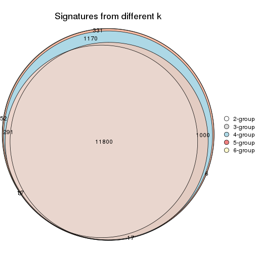
get_signature() returns a data frame invisibly. TO get the list of signatures, the function
call should be assigned to a variable explicitly. In following code, if plot argument is set
to FALSE, no heatmap is plotted while only the differential analysis is performed.
# code only for demonstration
tb = get_signature(res, k = ..., plot = FALSE)
An example of the output of tb is:
#> which_row fdr mean_1 mean_2 scaled_mean_1 scaled_mean_2 km
#> 1 38 0.042760348 8.373488 9.131774 -0.5533452 0.5164555 1
#> 2 40 0.018707592 7.106213 8.469186 -0.6173731 0.5762149 1
#> 3 55 0.019134737 10.221463 11.207825 -0.6159697 0.5749050 1
#> 4 59 0.006059896 5.921854 7.869574 -0.6899429 0.6439467 1
#> 5 60 0.018055526 8.928898 10.211722 -0.6204761 0.5791110 1
#> 6 98 0.009384629 15.714769 14.887706 0.6635654 -0.6193277 2
...
The columns in tb are:
which_row: row indices corresponding to the input matrix.fdr: FDR for the differential test. mean_x: The mean value in group x.scaled_mean_x: The mean value in group x after rows are scaled.km: Row groups if k-means clustering is applied to rows.UMAP plot which shows how samples are separated.
dimension_reduction(res, k = 2, method = "UMAP")
dimension_reduction(res, k = 3, method = "UMAP")
dimension_reduction(res, k = 4, method = "UMAP")
dimension_reduction(res, k = 5, method = "UMAP")
dimension_reduction(res, k = 6, method = "UMAP")
Following heatmap shows how subgroups are split when increasing k:
collect_classes(res)
If matrix rows can be associated to genes, consider to use functional_enrichment(res,
...) to perform function enrichment for the signature genes. See this vignette for more detailed explanations.
The object with results only for a single top-value method and a single partition method can be extracted as:
res = res_list["MAD", "pam"]
# you can also extract it by
# res = res_list["MAD:pam"]
A summary of res and all the functions that can be applied to it:
res
#> A 'ConsensusPartition' object with k = 2, 3, 4, 5, 6.
#> On a matrix with 14753 rows and 68 columns.
#> Top rows (1000, 2000, 3000, 4000, 5000) are extracted by 'MAD' method.
#> Subgroups are detected by 'pam' method.
#> Performed in total 1250 partitions by row resampling.
#> Best k for subgroups seems to be 6.
#>
#> Following methods can be applied to this 'ConsensusPartition' object:
#> [1] "cola_report" "collect_classes" "collect_plots"
#> [4] "collect_stats" "colnames" "compare_signatures"
#> [7] "consensus_heatmap" "dimension_reduction" "functional_enrichment"
#> [10] "get_anno_col" "get_anno" "get_classes"
#> [13] "get_consensus" "get_matrix" "get_membership"
#> [16] "get_param" "get_signatures" "get_stats"
#> [19] "is_best_k" "is_stable_k" "membership_heatmap"
#> [22] "ncol" "nrow" "plot_ecdf"
#> [25] "rownames" "select_partition_number" "show"
#> [28] "suggest_best_k" "test_to_known_factors"
collect_plots() function collects all the plots made from res for all k (number of partitions)
into one single page to provide an easy and fast comparison between different k.
collect_plots(res)
The plots are:
k and the heatmap of
predicted classes for each k.k.k.k.All the plots in panels can be made by individual functions and they are plotted later in this section.
select_partition_number() produces several plots showing different
statistics for choosing “optimized” k. There are following statistics:
k;k, the area increased is defined as \(A_k - A_{k-1}\).The detailed explanations of these statistics can be found in the cola vignette.
Generally speaking, lower PAC score, higher mean silhouette score or higher
concordance corresponds to better partition. Rand index and Jaccard index
measure how similar the current partition is compared to partition with k-1.
If they are too similar, we won't accept k is better than k-1.
select_partition_number(res)
The numeric values for all these statistics can be obtained by get_stats().
get_stats(res)
#> k 1-PAC mean_silhouette concordance area_increased Rand Jaccard
#> 2 2 0.668 0.806 0.926 0.4900 0.500 0.500
#> 3 3 0.802 0.924 0.944 0.2643 0.799 0.625
#> 4 4 1.000 0.969 0.989 0.1367 0.929 0.809
#> 5 5 1.000 0.960 0.986 0.0818 0.911 0.714
#> 6 6 1.000 0.962 0.986 0.0907 0.934 0.717
suggest_best_k() suggests the best \(k\) based on these statistics. The rules are as follows:
suggest_best_k(res)
#> [1] 6
#> attr(,"optional")
#> [1] 4 5
There is also optional best \(k\) = 4 5 that is worth to check.
Following shows the table of the partitions (You need to click the show/hide
code output link to see it). The membership matrix (columns with name p*)
is inferred by
clue::cl_consensus()
function with the SE method. Basically the value in the membership matrix
represents the probability to belong to a certain group. The finall class
label for an item is determined with the group with highest probability it
belongs to.
In get_classes() function, the entropy is calculated from the membership
matrix and the silhouette score is calculated from the consensus matrix.
cbind(get_classes(res, k = 2), get_membership(res, k = 2))
#> class entropy silhouette p1 p2
#> SRR562645 1 0.971 0.300 0.600 0.400
#> SRR562646 1 0.971 0.300 0.600 0.400
#> SRR562647 1 0.971 0.300 0.600 0.400
#> SRR562648 1 0.971 0.300 0.600 0.400
#> SRR562649 1 0.971 0.300 0.600 0.400
#> SRR567420 2 0.971 0.370 0.400 0.600
#> SRR567421 2 0.971 0.370 0.400 0.600
#> SRR567422 2 0.971 0.370 0.400 0.600
#> SRR567423 2 0.971 0.370 0.400 0.600
#> SRR567424 2 0.971 0.370 0.400 0.600
#> SRR567425 1 0.000 0.918 1.000 0.000
#> SRR567426 1 0.000 0.918 1.000 0.000
#> SRR567427 1 0.000 0.918 1.000 0.000
#> SRR567428 1 0.000 0.918 1.000 0.000
#> SRR567429 1 0.000 0.918 1.000 0.000
#> SRR567430 1 0.000 0.918 1.000 0.000
#> SRR567431 1 0.000 0.918 1.000 0.000
#> SRR567432 1 0.000 0.918 1.000 0.000
#> SRR567433 1 0.000 0.918 1.000 0.000
#> SRR567434 1 0.000 0.918 1.000 0.000
#> SRR567435 1 0.000 0.918 1.000 0.000
#> SRR567436 1 0.000 0.918 1.000 0.000
#> SRR567437 1 0.000 0.918 1.000 0.000
#> SRR567438 1 0.000 0.918 1.000 0.000
#> SRR567439 1 0.000 0.918 1.000 0.000
#> SRR567440 2 0.000 0.904 0.000 1.000
#> SRR567441 2 0.000 0.904 0.000 1.000
#> SRR567442 2 0.000 0.904 0.000 1.000
#> SRR567443 2 0.000 0.904 0.000 1.000
#> SRR567444 2 0.000 0.904 0.000 1.000
#> SRR567445 1 0.000 0.918 1.000 0.000
#> SRR567446 1 0.000 0.918 1.000 0.000
#> SRR567447 1 0.000 0.918 1.000 0.000
#> SRR567448 1 0.000 0.918 1.000 0.000
#> SRR567449 1 0.000 0.918 1.000 0.000
#> SRR567450 2 0.000 0.904 0.000 1.000
#> SRR567451 2 0.000 0.904 0.000 1.000
#> SRR567452 2 0.000 0.904 0.000 1.000
#> SRR567453 2 0.000 0.904 0.000 1.000
#> SRR567454 2 0.000 0.904 0.000 1.000
#> SRR567455 2 0.000 0.904 0.000 1.000
#> SRR567456 2 0.000 0.904 0.000 1.000
#> SRR567457 1 0.000 0.918 1.000 0.000
#> SRR567458 1 0.000 0.918 1.000 0.000
#> SRR567459 1 0.000 0.918 1.000 0.000
#> SRR567460 1 0.000 0.918 1.000 0.000
#> SRR567461 1 0.000 0.918 1.000 0.000
#> SRR567462 2 0.000 0.904 0.000 1.000
#> SRR567463 2 0.000 0.904 0.000 1.000
#> SRR567464 2 0.000 0.904 0.000 1.000
#> SRR567465 2 0.000 0.904 0.000 1.000
#> SRR567466 2 0.000 0.904 0.000 1.000
#> SRR567467 2 0.000 0.904 0.000 1.000
#> SRR567468 2 0.000 0.904 0.000 1.000
#> SRR567469 2 0.000 0.904 0.000 1.000
#> SRR567470 2 0.000 0.904 0.000 1.000
#> SRR567471 2 0.000 0.904 0.000 1.000
#> SRR835008 2 0.886 0.556 0.304 0.696
#> SRR835009 2 0.932 0.478 0.348 0.652
#> SRR835011 2 0.000 0.904 0.000 1.000
#> SRR835012 2 0.000 0.904 0.000 1.000
#> SRR835013 2 0.000 0.904 0.000 1.000
#> SRR835010 2 0.971 0.370 0.400 0.600
#> SRR835014 2 0.000 0.904 0.000 1.000
#> SRR835015 2 0.000 0.904 0.000 1.000
#> SRR835016 2 0.000 0.904 0.000 1.000
#> SRR835017 2 0.000 0.904 0.000 1.000
#> SRR835018 2 0.000 0.904 0.000 1.000
cbind(get_classes(res, k = 3), get_membership(res, k = 3))
#> class entropy silhouette p1 p2 p3
#> SRR562645 2 0.3941 0.955 0.156 0.844 0.000
#> SRR562646 2 0.3941 0.955 0.156 0.844 0.000
#> SRR562647 2 0.3941 0.955 0.156 0.844 0.000
#> SRR562648 2 0.3941 0.955 0.156 0.844 0.000
#> SRR562649 2 0.3941 0.955 0.156 0.844 0.000
#> SRR567420 2 0.3941 0.955 0.156 0.844 0.000
#> SRR567421 2 0.3941 0.955 0.156 0.844 0.000
#> SRR567422 2 0.3941 0.955 0.156 0.844 0.000
#> SRR567423 2 0.3941 0.955 0.156 0.844 0.000
#> SRR567424 2 0.3941 0.955 0.156 0.844 0.000
#> SRR567425 1 0.0000 0.954 1.000 0.000 0.000
#> SRR567426 1 0.0000 0.954 1.000 0.000 0.000
#> SRR567427 1 0.0000 0.954 1.000 0.000 0.000
#> SRR567428 1 0.0000 0.954 1.000 0.000 0.000
#> SRR567429 1 0.0000 0.954 1.000 0.000 0.000
#> SRR567430 1 0.0000 0.954 1.000 0.000 0.000
#> SRR567431 1 0.0000 0.954 1.000 0.000 0.000
#> SRR567432 1 0.0000 0.954 1.000 0.000 0.000
#> SRR567433 1 0.0000 0.954 1.000 0.000 0.000
#> SRR567434 1 0.0000 0.954 1.000 0.000 0.000
#> SRR567435 1 0.0000 0.954 1.000 0.000 0.000
#> SRR567436 1 0.0000 0.954 1.000 0.000 0.000
#> SRR567437 1 0.0000 0.954 1.000 0.000 0.000
#> SRR567438 1 0.0000 0.954 1.000 0.000 0.000
#> SRR567439 1 0.0000 0.954 1.000 0.000 0.000
#> SRR567440 3 0.0000 0.965 0.000 0.000 1.000
#> SRR567441 3 0.0000 0.965 0.000 0.000 1.000
#> SRR567442 3 0.0000 0.965 0.000 0.000 1.000
#> SRR567443 3 0.0000 0.965 0.000 0.000 1.000
#> SRR567444 3 0.0000 0.965 0.000 0.000 1.000
#> SRR567445 1 0.0000 0.954 1.000 0.000 0.000
#> SRR567446 1 0.0000 0.954 1.000 0.000 0.000
#> SRR567447 1 0.0000 0.954 1.000 0.000 0.000
#> SRR567448 1 0.0000 0.954 1.000 0.000 0.000
#> SRR567449 1 0.0000 0.954 1.000 0.000 0.000
#> SRR567450 3 0.0000 0.965 0.000 0.000 1.000
#> SRR567451 3 0.0000 0.965 0.000 0.000 1.000
#> SRR567452 3 0.0000 0.965 0.000 0.000 1.000
#> SRR567453 3 0.0000 0.965 0.000 0.000 1.000
#> SRR567454 3 0.0000 0.965 0.000 0.000 1.000
#> SRR567455 3 0.0000 0.965 0.000 0.000 1.000
#> SRR567456 3 0.0000 0.965 0.000 0.000 1.000
#> SRR567457 1 0.0000 0.954 1.000 0.000 0.000
#> SRR567458 1 0.0000 0.954 1.000 0.000 0.000
#> SRR567459 1 0.0000 0.954 1.000 0.000 0.000
#> SRR567460 1 0.0000 0.954 1.000 0.000 0.000
#> SRR567461 1 0.0000 0.954 1.000 0.000 0.000
#> SRR567462 3 0.0000 0.965 0.000 0.000 1.000
#> SRR567463 3 0.0000 0.965 0.000 0.000 1.000
#> SRR567464 3 0.0000 0.965 0.000 0.000 1.000
#> SRR567465 3 0.0000 0.965 0.000 0.000 1.000
#> SRR567466 3 0.0000 0.965 0.000 0.000 1.000
#> SRR567467 3 0.0000 0.965 0.000 0.000 1.000
#> SRR567468 3 0.0000 0.965 0.000 0.000 1.000
#> SRR567469 3 0.0000 0.965 0.000 0.000 1.000
#> SRR567470 3 0.0000 0.965 0.000 0.000 1.000
#> SRR567471 3 0.0000 0.965 0.000 0.000 1.000
#> SRR835008 2 0.5882 0.459 0.000 0.652 0.348
#> SRR835009 1 0.6215 0.252 0.572 0.000 0.428
#> SRR835011 3 0.3941 0.879 0.000 0.156 0.844
#> SRR835012 3 0.3941 0.879 0.000 0.156 0.844
#> SRR835013 3 0.3941 0.879 0.000 0.156 0.844
#> SRR835010 1 0.6045 0.352 0.620 0.000 0.380
#> SRR835014 3 0.3941 0.879 0.000 0.156 0.844
#> SRR835015 3 0.0237 0.963 0.000 0.004 0.996
#> SRR835016 3 0.3941 0.879 0.000 0.156 0.844
#> SRR835017 3 0.3941 0.879 0.000 0.156 0.844
#> SRR835018 3 0.3941 0.879 0.000 0.156 0.844
cbind(get_classes(res, k = 4), get_membership(res, k = 4))
#> class entropy silhouette p1 p2 p3 p4
#> SRR562645 4 0.0000 0.9728 0.000 0.000 0.000 1.0
#> SRR562646 4 0.0000 0.9728 0.000 0.000 0.000 1.0
#> SRR562647 4 0.0000 0.9728 0.000 0.000 0.000 1.0
#> SRR562648 4 0.0000 0.9728 0.000 0.000 0.000 1.0
#> SRR562649 4 0.0000 0.9728 0.000 0.000 0.000 1.0
#> SRR567420 4 0.0000 0.9728 0.000 0.000 0.000 1.0
#> SRR567421 4 0.0000 0.9728 0.000 0.000 0.000 1.0
#> SRR567422 4 0.0000 0.9728 0.000 0.000 0.000 1.0
#> SRR567423 4 0.0000 0.9728 0.000 0.000 0.000 1.0
#> SRR567424 4 0.0000 0.9728 0.000 0.000 0.000 1.0
#> SRR567425 1 0.0000 0.9981 1.000 0.000 0.000 0.0
#> SRR567426 1 0.0000 0.9981 1.000 0.000 0.000 0.0
#> SRR567427 1 0.0000 0.9981 1.000 0.000 0.000 0.0
#> SRR567428 1 0.0000 0.9981 1.000 0.000 0.000 0.0
#> SRR567429 1 0.0000 0.9981 1.000 0.000 0.000 0.0
#> SRR567430 1 0.0000 0.9981 1.000 0.000 0.000 0.0
#> SRR567431 1 0.0000 0.9981 1.000 0.000 0.000 0.0
#> SRR567432 1 0.0000 0.9981 1.000 0.000 0.000 0.0
#> SRR567433 1 0.0000 0.9981 1.000 0.000 0.000 0.0
#> SRR567434 1 0.0000 0.9981 1.000 0.000 0.000 0.0
#> SRR567435 1 0.0000 0.9981 1.000 0.000 0.000 0.0
#> SRR567436 1 0.0000 0.9981 1.000 0.000 0.000 0.0
#> SRR567437 1 0.0000 0.9981 1.000 0.000 0.000 0.0
#> SRR567438 1 0.0000 0.9981 1.000 0.000 0.000 0.0
#> SRR567439 1 0.0000 0.9981 1.000 0.000 0.000 0.0
#> SRR567440 3 0.0000 0.9772 0.000 0.000 1.000 0.0
#> SRR567441 3 0.0000 0.9772 0.000 0.000 1.000 0.0
#> SRR567442 3 0.0000 0.9772 0.000 0.000 1.000 0.0
#> SRR567443 3 0.0000 0.9772 0.000 0.000 1.000 0.0
#> SRR567444 3 0.0000 0.9772 0.000 0.000 1.000 0.0
#> SRR567445 1 0.0000 0.9981 1.000 0.000 0.000 0.0
#> SRR567446 1 0.0000 0.9981 1.000 0.000 0.000 0.0
#> SRR567447 1 0.0000 0.9981 1.000 0.000 0.000 0.0
#> SRR567448 1 0.0000 0.9981 1.000 0.000 0.000 0.0
#> SRR567449 1 0.0000 0.9981 1.000 0.000 0.000 0.0
#> SRR567450 3 0.0000 0.9772 0.000 0.000 1.000 0.0
#> SRR567451 3 0.0000 0.9772 0.000 0.000 1.000 0.0
#> SRR567452 3 0.0000 0.9772 0.000 0.000 1.000 0.0
#> SRR567453 3 0.0000 0.9772 0.000 0.000 1.000 0.0
#> SRR567454 3 0.0000 0.9772 0.000 0.000 1.000 0.0
#> SRR567455 3 0.0000 0.9772 0.000 0.000 1.000 0.0
#> SRR567456 3 0.0000 0.9772 0.000 0.000 1.000 0.0
#> SRR567457 1 0.0000 0.9981 1.000 0.000 0.000 0.0
#> SRR567458 1 0.0000 0.9981 1.000 0.000 0.000 0.0
#> SRR567459 1 0.0000 0.9981 1.000 0.000 0.000 0.0
#> SRR567460 1 0.0000 0.9981 1.000 0.000 0.000 0.0
#> SRR567461 1 0.0000 0.9981 1.000 0.000 0.000 0.0
#> SRR567462 3 0.0000 0.9772 0.000 0.000 1.000 0.0
#> SRR567463 3 0.0000 0.9772 0.000 0.000 1.000 0.0
#> SRR567464 3 0.0000 0.9772 0.000 0.000 1.000 0.0
#> SRR567465 3 0.0000 0.9772 0.000 0.000 1.000 0.0
#> SRR567466 3 0.0000 0.9772 0.000 0.000 1.000 0.0
#> SRR567467 3 0.0000 0.9772 0.000 0.000 1.000 0.0
#> SRR567468 3 0.0000 0.9772 0.000 0.000 1.000 0.0
#> SRR567469 3 0.0000 0.9772 0.000 0.000 1.000 0.0
#> SRR567470 3 0.0000 0.9772 0.000 0.000 1.000 0.0
#> SRR567471 3 0.0000 0.9772 0.000 0.000 1.000 0.0
#> SRR835008 4 0.3610 0.7083 0.000 0.000 0.200 0.8
#> SRR835009 1 0.0817 0.9709 0.976 0.000 0.024 0.0
#> SRR835011 2 0.0000 1.0000 0.000 1.000 0.000 0.0
#> SRR835012 2 0.0000 1.0000 0.000 1.000 0.000 0.0
#> SRR835013 2 0.0000 1.0000 0.000 1.000 0.000 0.0
#> SRR835010 1 0.0707 0.9793 0.980 0.020 0.000 0.0
#> SRR835014 2 0.0000 1.0000 0.000 1.000 0.000 0.0
#> SRR835015 3 0.4999 0.0289 0.000 0.492 0.508 0.0
#> SRR835016 2 0.0000 1.0000 0.000 1.000 0.000 0.0
#> SRR835017 2 0.0000 1.0000 0.000 1.000 0.000 0.0
#> SRR835018 2 0.0000 1.0000 0.000 1.000 0.000 0.0
cbind(get_classes(res, k = 5), get_membership(res, k = 5))
#> class entropy silhouette p1 p2 p3 p4 p5
#> SRR562645 4 0.000 0.976 0.000 0 0.000 1.000 0.000
#> SRR562646 4 0.000 0.976 0.000 0 0.000 1.000 0.000
#> SRR562647 4 0.000 0.976 0.000 0 0.000 1.000 0.000
#> SRR562648 4 0.000 0.976 0.000 0 0.000 1.000 0.000
#> SRR562649 4 0.000 0.976 0.000 0 0.000 1.000 0.000
#> SRR567420 4 0.000 0.976 0.000 0 0.000 1.000 0.000
#> SRR567421 4 0.000 0.976 0.000 0 0.000 1.000 0.000
#> SRR567422 4 0.000 0.976 0.000 0 0.000 1.000 0.000
#> SRR567423 4 0.000 0.976 0.000 0 0.000 1.000 0.000
#> SRR567424 4 0.000 0.976 0.000 0 0.000 1.000 0.000
#> SRR567425 1 0.000 1.000 1.000 0 0.000 0.000 0.000
#> SRR567426 1 0.000 1.000 1.000 0 0.000 0.000 0.000
#> SRR567427 1 0.000 1.000 1.000 0 0.000 0.000 0.000
#> SRR567428 1 0.000 1.000 1.000 0 0.000 0.000 0.000
#> SRR567429 1 0.000 1.000 1.000 0 0.000 0.000 0.000
#> SRR567430 1 0.000 1.000 1.000 0 0.000 0.000 0.000
#> SRR567431 1 0.000 1.000 1.000 0 0.000 0.000 0.000
#> SRR567432 1 0.000 1.000 1.000 0 0.000 0.000 0.000
#> SRR567433 1 0.000 1.000 1.000 0 0.000 0.000 0.000
#> SRR567434 1 0.000 1.000 1.000 0 0.000 0.000 0.000
#> SRR567435 1 0.000 1.000 1.000 0 0.000 0.000 0.000
#> SRR567436 1 0.000 1.000 1.000 0 0.000 0.000 0.000
#> SRR567437 1 0.000 1.000 1.000 0 0.000 0.000 0.000
#> SRR567438 1 0.000 1.000 1.000 0 0.000 0.000 0.000
#> SRR567439 1 0.000 1.000 1.000 0 0.000 0.000 0.000
#> SRR567440 3 0.000 1.000 0.000 0 1.000 0.000 0.000
#> SRR567441 3 0.000 1.000 0.000 0 1.000 0.000 0.000
#> SRR567442 3 0.000 1.000 0.000 0 1.000 0.000 0.000
#> SRR567443 3 0.000 1.000 0.000 0 1.000 0.000 0.000
#> SRR567444 3 0.000 1.000 0.000 0 1.000 0.000 0.000
#> SRR567445 1 0.000 1.000 1.000 0 0.000 0.000 0.000
#> SRR567446 1 0.000 1.000 1.000 0 0.000 0.000 0.000
#> SRR567447 1 0.000 1.000 1.000 0 0.000 0.000 0.000
#> SRR567448 1 0.000 1.000 1.000 0 0.000 0.000 0.000
#> SRR567449 1 0.000 1.000 1.000 0 0.000 0.000 0.000
#> SRR567450 5 0.000 0.884 0.000 0 0.000 0.000 1.000
#> SRR567451 5 0.000 0.884 0.000 0 0.000 0.000 1.000
#> SRR567452 5 0.000 0.884 0.000 0 0.000 0.000 1.000
#> SRR567453 5 0.000 0.884 0.000 0 0.000 0.000 1.000
#> SRR567454 5 0.000 0.884 0.000 0 0.000 0.000 1.000
#> SRR567455 5 0.000 0.884 0.000 0 0.000 0.000 1.000
#> SRR567456 5 0.000 0.884 0.000 0 0.000 0.000 1.000
#> SRR567457 1 0.000 1.000 1.000 0 0.000 0.000 0.000
#> SRR567458 1 0.000 1.000 1.000 0 0.000 0.000 0.000
#> SRR567459 1 0.000 1.000 1.000 0 0.000 0.000 0.000
#> SRR567460 1 0.000 1.000 1.000 0 0.000 0.000 0.000
#> SRR567461 1 0.000 1.000 1.000 0 0.000 0.000 0.000
#> SRR567462 3 0.000 1.000 0.000 0 1.000 0.000 0.000
#> SRR567463 3 0.000 1.000 0.000 0 1.000 0.000 0.000
#> SRR567464 3 0.000 1.000 0.000 0 1.000 0.000 0.000
#> SRR567465 3 0.000 1.000 0.000 0 1.000 0.000 0.000
#> SRR567466 3 0.000 1.000 0.000 0 1.000 0.000 0.000
#> SRR567467 3 0.000 1.000 0.000 0 1.000 0.000 0.000
#> SRR567468 3 0.000 1.000 0.000 0 1.000 0.000 0.000
#> SRR567469 3 0.000 1.000 0.000 0 1.000 0.000 0.000
#> SRR567470 3 0.000 1.000 0.000 0 1.000 0.000 0.000
#> SRR567471 3 0.000 1.000 0.000 0 1.000 0.000 0.000
#> SRR835008 4 0.307 0.733 0.000 0 0.196 0.804 0.000
#> SRR835009 5 0.409 0.469 0.368 0 0.000 0.000 0.632
#> SRR835011 2 0.000 1.000 0.000 1 0.000 0.000 0.000
#> SRR835012 2 0.000 1.000 0.000 1 0.000 0.000 0.000
#> SRR835013 2 0.000 1.000 0.000 1 0.000 0.000 0.000
#> SRR835010 5 0.418 0.397 0.400 0 0.000 0.000 0.600
#> SRR835014 5 0.000 0.884 0.000 0 0.000 0.000 1.000
#> SRR835015 5 0.000 0.884 0.000 0 0.000 0.000 1.000
#> SRR835016 2 0.000 1.000 0.000 1 0.000 0.000 0.000
#> SRR835017 2 0.000 1.000 0.000 1 0.000 0.000 0.000
#> SRR835018 2 0.000 1.000 0.000 1 0.000 0.000 0.000
cbind(get_classes(res, k = 6), get_membership(res, k = 6))
#> class entropy silhouette p1 p2 p3 p4 p5 p6
#> SRR562645 4 0.000 0.976 0.000 0 0.000 1.000 0.000 0
#> SRR562646 4 0.000 0.976 0.000 0 0.000 1.000 0.000 0
#> SRR562647 4 0.000 0.976 0.000 0 0.000 1.000 0.000 0
#> SRR562648 4 0.000 0.976 0.000 0 0.000 1.000 0.000 0
#> SRR562649 4 0.000 0.976 0.000 0 0.000 1.000 0.000 0
#> SRR567420 4 0.000 0.976 0.000 0 0.000 1.000 0.000 0
#> SRR567421 4 0.000 0.976 0.000 0 0.000 1.000 0.000 0
#> SRR567422 4 0.000 0.976 0.000 0 0.000 1.000 0.000 0
#> SRR567423 4 0.000 0.976 0.000 0 0.000 1.000 0.000 0
#> SRR567424 4 0.000 0.976 0.000 0 0.000 1.000 0.000 0
#> SRR567425 1 0.000 1.000 1.000 0 0.000 0.000 0.000 0
#> SRR567426 1 0.000 1.000 1.000 0 0.000 0.000 0.000 0
#> SRR567427 1 0.000 1.000 1.000 0 0.000 0.000 0.000 0
#> SRR567428 1 0.000 1.000 1.000 0 0.000 0.000 0.000 0
#> SRR567429 1 0.000 1.000 1.000 0 0.000 0.000 0.000 0
#> SRR567430 1 0.000 1.000 1.000 0 0.000 0.000 0.000 0
#> SRR567431 1 0.000 1.000 1.000 0 0.000 0.000 0.000 0
#> SRR567432 1 0.000 1.000 1.000 0 0.000 0.000 0.000 0
#> SRR567433 1 0.000 1.000 1.000 0 0.000 0.000 0.000 0
#> SRR567434 1 0.000 1.000 1.000 0 0.000 0.000 0.000 0
#> SRR567435 1 0.000 1.000 1.000 0 0.000 0.000 0.000 0
#> SRR567436 1 0.000 1.000 1.000 0 0.000 0.000 0.000 0
#> SRR567437 1 0.000 1.000 1.000 0 0.000 0.000 0.000 0
#> SRR567438 1 0.000 1.000 1.000 0 0.000 0.000 0.000 0
#> SRR567439 1 0.000 1.000 1.000 0 0.000 0.000 0.000 0
#> SRR567440 3 0.000 1.000 0.000 0 1.000 0.000 0.000 0
#> SRR567441 3 0.000 1.000 0.000 0 1.000 0.000 0.000 0
#> SRR567442 3 0.000 1.000 0.000 0 1.000 0.000 0.000 0
#> SRR567443 3 0.000 1.000 0.000 0 1.000 0.000 0.000 0
#> SRR567444 3 0.000 1.000 0.000 0 1.000 0.000 0.000 0
#> SRR567445 6 0.000 1.000 0.000 0 0.000 0.000 0.000 1
#> SRR567446 6 0.000 1.000 0.000 0 0.000 0.000 0.000 1
#> SRR567447 6 0.000 1.000 0.000 0 0.000 0.000 0.000 1
#> SRR567448 6 0.000 1.000 0.000 0 0.000 0.000 0.000 1
#> SRR567449 6 0.000 1.000 0.000 0 0.000 0.000 0.000 1
#> SRR567450 5 0.000 0.901 0.000 0 0.000 0.000 1.000 0
#> SRR567451 5 0.000 0.901 0.000 0 0.000 0.000 1.000 0
#> SRR567452 5 0.000 0.901 0.000 0 0.000 0.000 1.000 0
#> SRR567453 5 0.000 0.901 0.000 0 0.000 0.000 1.000 0
#> SRR567454 5 0.000 0.901 0.000 0 0.000 0.000 1.000 0
#> SRR567455 5 0.000 0.901 0.000 0 0.000 0.000 1.000 0
#> SRR567456 5 0.000 0.901 0.000 0 0.000 0.000 1.000 0
#> SRR567457 6 0.000 1.000 0.000 0 0.000 0.000 0.000 1
#> SRR567458 6 0.000 1.000 0.000 0 0.000 0.000 0.000 1
#> SRR567459 6 0.000 1.000 0.000 0 0.000 0.000 0.000 1
#> SRR567460 6 0.000 1.000 0.000 0 0.000 0.000 0.000 1
#> SRR567461 6 0.000 1.000 0.000 0 0.000 0.000 0.000 1
#> SRR567462 3 0.000 1.000 0.000 0 1.000 0.000 0.000 0
#> SRR567463 3 0.000 1.000 0.000 0 1.000 0.000 0.000 0
#> SRR567464 3 0.000 1.000 0.000 0 1.000 0.000 0.000 0
#> SRR567465 3 0.000 1.000 0.000 0 1.000 0.000 0.000 0
#> SRR567466 3 0.000 1.000 0.000 0 1.000 0.000 0.000 0
#> SRR567467 3 0.000 1.000 0.000 0 1.000 0.000 0.000 0
#> SRR567468 3 0.000 1.000 0.000 0 1.000 0.000 0.000 0
#> SRR567469 3 0.000 1.000 0.000 0 1.000 0.000 0.000 0
#> SRR567470 3 0.000 1.000 0.000 0 1.000 0.000 0.000 0
#> SRR567471 3 0.000 1.000 0.000 0 1.000 0.000 0.000 0
#> SRR835008 4 0.276 0.733 0.000 0 0.196 0.804 0.000 0
#> SRR835009 5 0.370 0.452 0.376 0 0.000 0.000 0.624 0
#> SRR835011 2 0.000 1.000 0.000 1 0.000 0.000 0.000 0
#> SRR835012 2 0.000 1.000 0.000 1 0.000 0.000 0.000 0
#> SRR835013 2 0.000 1.000 0.000 1 0.000 0.000 0.000 0
#> SRR835010 5 0.376 0.399 0.400 0 0.000 0.000 0.600 0
#> SRR835014 5 0.000 0.901 0.000 0 0.000 0.000 1.000 0
#> SRR835015 5 0.000 0.901 0.000 0 0.000 0.000 1.000 0
#> SRR835016 2 0.000 1.000 0.000 1 0.000 0.000 0.000 0
#> SRR835017 2 0.000 1.000 0.000 1 0.000 0.000 0.000 0
#> SRR835018 2 0.000 1.000 0.000 1 0.000 0.000 0.000 0
Heatmaps for the consensus matrix. It visualizes the probability of two samples to be in a same group.
consensus_heatmap(res, k = 2)
consensus_heatmap(res, k = 3)
consensus_heatmap(res, k = 4)
consensus_heatmap(res, k = 5)
consensus_heatmap(res, k = 6)
Heatmaps for the membership of samples in all partitions to see how consistent they are:
membership_heatmap(res, k = 2)
membership_heatmap(res, k = 3)
membership_heatmap(res, k = 4)
membership_heatmap(res, k = 5)
membership_heatmap(res, k = 6)
As soon as we have had the classes for columns, we can look for signatures which are significantly different between classes which can be candidate marks for certain classes. Following are the heatmaps for signatures.
Signature heatmaps where rows are scaled:
get_signatures(res, k = 2)
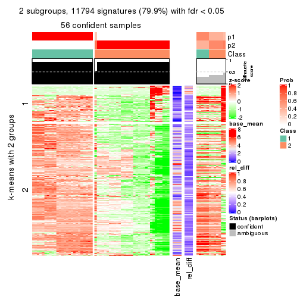
get_signatures(res, k = 3)
get_signatures(res, k = 4)
get_signatures(res, k = 5)

get_signatures(res, k = 6)
Signature heatmaps where rows are not scaled:
get_signatures(res, k = 2, scale_rows = FALSE)

get_signatures(res, k = 3, scale_rows = FALSE)
get_signatures(res, k = 4, scale_rows = FALSE)
get_signatures(res, k = 5, scale_rows = FALSE)
get_signatures(res, k = 6, scale_rows = FALSE)
Compare the overlap of signatures from different k:
compare_signatures(res)
get_signature() returns a data frame invisibly. TO get the list of signatures, the function
call should be assigned to a variable explicitly. In following code, if plot argument is set
to FALSE, no heatmap is plotted while only the differential analysis is performed.
# code only for demonstration
tb = get_signature(res, k = ..., plot = FALSE)
An example of the output of tb is:
#> which_row fdr mean_1 mean_2 scaled_mean_1 scaled_mean_2 km
#> 1 38 0.042760348 8.373488 9.131774 -0.5533452 0.5164555 1
#> 2 40 0.018707592 7.106213 8.469186 -0.6173731 0.5762149 1
#> 3 55 0.019134737 10.221463 11.207825 -0.6159697 0.5749050 1
#> 4 59 0.006059896 5.921854 7.869574 -0.6899429 0.6439467 1
#> 5 60 0.018055526 8.928898 10.211722 -0.6204761 0.5791110 1
#> 6 98 0.009384629 15.714769 14.887706 0.6635654 -0.6193277 2
...
The columns in tb are:
which_row: row indices corresponding to the input matrix.fdr: FDR for the differential test. mean_x: The mean value in group x.scaled_mean_x: The mean value in group x after rows are scaled.km: Row groups if k-means clustering is applied to rows.UMAP plot which shows how samples are separated.
dimension_reduction(res, k = 2, method = "UMAP")
dimension_reduction(res, k = 3, method = "UMAP")
dimension_reduction(res, k = 4, method = "UMAP")
dimension_reduction(res, k = 5, method = "UMAP")
dimension_reduction(res, k = 6, method = "UMAP")
Following heatmap shows how subgroups are split when increasing k:
collect_classes(res)
If matrix rows can be associated to genes, consider to use functional_enrichment(res,
...) to perform function enrichment for the signature genes. See this vignette for more detailed explanations.
The object with results only for a single top-value method and a single partition method can be extracted as:
res = res_list["MAD", "mclust"]
# you can also extract it by
# res = res_list["MAD:mclust"]
A summary of res and all the functions that can be applied to it:
res
#> A 'ConsensusPartition' object with k = 2, 3, 4, 5, 6.
#> On a matrix with 14753 rows and 68 columns.
#> Top rows (1000, 2000, 3000, 4000, 5000) are extracted by 'MAD' method.
#> Subgroups are detected by 'mclust' method.
#> Performed in total 1250 partitions by row resampling.
#> Best k for subgroups seems to be 6.
#>
#> Following methods can be applied to this 'ConsensusPartition' object:
#> [1] "cola_report" "collect_classes" "collect_plots"
#> [4] "collect_stats" "colnames" "compare_signatures"
#> [7] "consensus_heatmap" "dimension_reduction" "functional_enrichment"
#> [10] "get_anno_col" "get_anno" "get_classes"
#> [13] "get_consensus" "get_matrix" "get_membership"
#> [16] "get_param" "get_signatures" "get_stats"
#> [19] "is_best_k" "is_stable_k" "membership_heatmap"
#> [22] "ncol" "nrow" "plot_ecdf"
#> [25] "rownames" "select_partition_number" "show"
#> [28] "suggest_best_k" "test_to_known_factors"
collect_plots() function collects all the plots made from res for all k (number of partitions)
into one single page to provide an easy and fast comparison between different k.
collect_plots(res)
The plots are:
k and the heatmap of
predicted classes for each k.k.k.k.All the plots in panels can be made by individual functions and they are plotted later in this section.
select_partition_number() produces several plots showing different
statistics for choosing “optimized” k. There are following statistics:
k;k, the area increased is defined as \(A_k - A_{k-1}\).The detailed explanations of these statistics can be found in the cola vignette.
Generally speaking, lower PAC score, higher mean silhouette score or higher
concordance corresponds to better partition. Rand index and Jaccard index
measure how similar the current partition is compared to partition with k-1.
If they are too similar, we won't accept k is better than k-1.
select_partition_number(res)
The numeric values for all these statistics can be obtained by get_stats().
get_stats(res)
#> k 1-PAC mean_silhouette concordance area_increased Rand Jaccard
#> 2 2 1.000 0.995 0.993 0.4706 0.528 0.528
#> 3 3 0.806 0.939 0.948 0.3304 0.855 0.726
#> 4 4 0.889 0.941 0.958 0.1692 0.881 0.691
#> 5 5 0.853 0.917 0.899 0.0615 0.955 0.835
#> 6 6 1.000 0.998 0.996 0.0710 0.934 0.718
suggest_best_k() suggests the best \(k\) based on these statistics. The rules are as follows:
suggest_best_k(res)
#> [1] 6
#> attr(,"optional")
#> [1] 2
There is also optional best \(k\) = 2 that is worth to check.
Following shows the table of the partitions (You need to click the show/hide
code output link to see it). The membership matrix (columns with name p*)
is inferred by
clue::cl_consensus()
function with the SE method. Basically the value in the membership matrix
represents the probability to belong to a certain group. The finall class
label for an item is determined with the group with highest probability it
belongs to.
In get_classes() function, the entropy is calculated from the membership
matrix and the silhouette score is calculated from the consensus matrix.
cbind(get_classes(res, k = 2), get_membership(res, k = 2))
#> class entropy silhouette p1 p2
#> SRR562645 2 0.118 0.994 0.016 0.984
#> SRR562646 2 0.118 0.994 0.016 0.984
#> SRR562647 2 0.118 0.994 0.016 0.984
#> SRR562648 2 0.118 0.994 0.016 0.984
#> SRR562649 2 0.118 0.994 0.016 0.984
#> SRR567420 2 0.118 0.994 0.016 0.984
#> SRR567421 2 0.118 0.994 0.016 0.984
#> SRR567422 2 0.118 0.994 0.016 0.984
#> SRR567423 2 0.118 0.994 0.016 0.984
#> SRR567424 2 0.118 0.994 0.016 0.984
#> SRR567425 1 0.000 1.000 1.000 0.000
#> SRR567426 1 0.000 1.000 1.000 0.000
#> SRR567427 1 0.000 1.000 1.000 0.000
#> SRR567428 1 0.000 1.000 1.000 0.000
#> SRR567429 1 0.000 1.000 1.000 0.000
#> SRR567430 1 0.000 1.000 1.000 0.000
#> SRR567431 1 0.000 1.000 1.000 0.000
#> SRR567432 1 0.000 1.000 1.000 0.000
#> SRR567433 1 0.000 1.000 1.000 0.000
#> SRR567434 1 0.000 1.000 1.000 0.000
#> SRR567435 1 0.000 1.000 1.000 0.000
#> SRR567436 1 0.000 1.000 1.000 0.000
#> SRR567437 1 0.000 1.000 1.000 0.000
#> SRR567438 1 0.000 1.000 1.000 0.000
#> SRR567439 1 0.000 1.000 1.000 0.000
#> SRR567440 2 0.000 0.989 0.000 1.000
#> SRR567441 2 0.000 0.989 0.000 1.000
#> SRR567442 2 0.000 0.989 0.000 1.000
#> SRR567443 2 0.000 0.989 0.000 1.000
#> SRR567444 2 0.000 0.989 0.000 1.000
#> SRR567445 1 0.000 1.000 1.000 0.000
#> SRR567446 1 0.000 1.000 1.000 0.000
#> SRR567447 1 0.000 1.000 1.000 0.000
#> SRR567448 1 0.000 1.000 1.000 0.000
#> SRR567449 1 0.000 1.000 1.000 0.000
#> SRR567450 2 0.118 0.994 0.016 0.984
#> SRR567451 2 0.118 0.994 0.016 0.984
#> SRR567452 2 0.118 0.994 0.016 0.984
#> SRR567453 2 0.118 0.994 0.016 0.984
#> SRR567454 2 0.118 0.994 0.016 0.984
#> SRR567455 2 0.118 0.994 0.016 0.984
#> SRR567456 2 0.118 0.994 0.016 0.984
#> SRR567457 1 0.000 1.000 1.000 0.000
#> SRR567458 1 0.000 1.000 1.000 0.000
#> SRR567459 1 0.000 1.000 1.000 0.000
#> SRR567460 1 0.000 1.000 1.000 0.000
#> SRR567461 1 0.000 1.000 1.000 0.000
#> SRR567462 2 0.000 0.989 0.000 1.000
#> SRR567463 2 0.000 0.989 0.000 1.000
#> SRR567464 2 0.000 0.989 0.000 1.000
#> SRR567465 2 0.000 0.989 0.000 1.000
#> SRR567466 2 0.000 0.989 0.000 1.000
#> SRR567467 2 0.000 0.989 0.000 1.000
#> SRR567468 2 0.000 0.989 0.000 1.000
#> SRR567469 2 0.000 0.989 0.000 1.000
#> SRR567470 2 0.000 0.989 0.000 1.000
#> SRR567471 2 0.000 0.989 0.000 1.000
#> SRR835008 2 0.118 0.994 0.016 0.984
#> SRR835009 2 0.118 0.994 0.016 0.984
#> SRR835011 2 0.118 0.994 0.016 0.984
#> SRR835012 2 0.118 0.994 0.016 0.984
#> SRR835013 2 0.118 0.994 0.016 0.984
#> SRR835010 2 0.118 0.994 0.016 0.984
#> SRR835014 2 0.118 0.994 0.016 0.984
#> SRR835015 2 0.118 0.994 0.016 0.984
#> SRR835016 2 0.118 0.994 0.016 0.984
#> SRR835017 2 0.118 0.994 0.016 0.984
#> SRR835018 2 0.118 0.994 0.016 0.984
cbind(get_classes(res, k = 3), get_membership(res, k = 3))
#> class entropy silhouette p1 p2 p3
#> SRR562645 2 0.000 1.000 0 1.000 0.000
#> SRR562646 2 0.000 1.000 0 1.000 0.000
#> SRR562647 2 0.000 1.000 0 1.000 0.000
#> SRR562648 2 0.000 1.000 0 1.000 0.000
#> SRR562649 2 0.000 1.000 0 1.000 0.000
#> SRR567420 2 0.000 1.000 0 1.000 0.000
#> SRR567421 2 0.000 1.000 0 1.000 0.000
#> SRR567422 2 0.000 1.000 0 1.000 0.000
#> SRR567423 2 0.000 1.000 0 1.000 0.000
#> SRR567424 2 0.000 1.000 0 1.000 0.000
#> SRR567425 1 0.000 1.000 1 0.000 0.000
#> SRR567426 1 0.000 1.000 1 0.000 0.000
#> SRR567427 1 0.000 1.000 1 0.000 0.000
#> SRR567428 1 0.000 1.000 1 0.000 0.000
#> SRR567429 1 0.000 1.000 1 0.000 0.000
#> SRR567430 1 0.000 1.000 1 0.000 0.000
#> SRR567431 1 0.000 1.000 1 0.000 0.000
#> SRR567432 1 0.000 1.000 1 0.000 0.000
#> SRR567433 1 0.000 1.000 1 0.000 0.000
#> SRR567434 1 0.000 1.000 1 0.000 0.000
#> SRR567435 1 0.000 1.000 1 0.000 0.000
#> SRR567436 1 0.000 1.000 1 0.000 0.000
#> SRR567437 1 0.000 1.000 1 0.000 0.000
#> SRR567438 1 0.000 1.000 1 0.000 0.000
#> SRR567439 1 0.000 1.000 1 0.000 0.000
#> SRR567440 3 0.000 0.874 0 0.000 1.000
#> SRR567441 3 0.000 0.874 0 0.000 1.000
#> SRR567442 3 0.000 0.874 0 0.000 1.000
#> SRR567443 3 0.000 0.874 0 0.000 1.000
#> SRR567444 3 0.000 0.874 0 0.000 1.000
#> SRR567445 1 0.000 1.000 1 0.000 0.000
#> SRR567446 1 0.000 1.000 1 0.000 0.000
#> SRR567447 1 0.000 1.000 1 0.000 0.000
#> SRR567448 1 0.000 1.000 1 0.000 0.000
#> SRR567449 1 0.000 1.000 1 0.000 0.000
#> SRR567450 3 0.460 0.874 0 0.204 0.796
#> SRR567451 3 0.460 0.874 0 0.204 0.796
#> SRR567452 3 0.460 0.874 0 0.204 0.796
#> SRR567453 3 0.460 0.874 0 0.204 0.796
#> SRR567454 3 0.460 0.874 0 0.204 0.796
#> SRR567455 3 0.460 0.874 0 0.204 0.796
#> SRR567456 3 0.460 0.874 0 0.204 0.796
#> SRR567457 1 0.000 1.000 1 0.000 0.000
#> SRR567458 1 0.000 1.000 1 0.000 0.000
#> SRR567459 1 0.000 1.000 1 0.000 0.000
#> SRR567460 1 0.000 1.000 1 0.000 0.000
#> SRR567461 1 0.000 1.000 1 0.000 0.000
#> SRR567462 3 0.000 0.874 0 0.000 1.000
#> SRR567463 3 0.000 0.874 0 0.000 1.000
#> SRR567464 3 0.000 0.874 0 0.000 1.000
#> SRR567465 3 0.000 0.874 0 0.000 1.000
#> SRR567466 3 0.000 0.874 0 0.000 1.000
#> SRR567467 3 0.000 0.874 0 0.000 1.000
#> SRR567468 3 0.000 0.874 0 0.000 1.000
#> SRR567469 3 0.000 0.874 0 0.000 1.000
#> SRR567470 3 0.000 0.874 0 0.000 1.000
#> SRR567471 3 0.000 0.874 0 0.000 1.000
#> SRR835008 3 0.141 0.875 0 0.036 0.964
#> SRR835009 3 0.460 0.874 0 0.204 0.796
#> SRR835011 3 0.460 0.874 0 0.204 0.796
#> SRR835012 3 0.460 0.874 0 0.204 0.796
#> SRR835013 3 0.460 0.874 0 0.204 0.796
#> SRR835010 3 0.460 0.874 0 0.204 0.796
#> SRR835014 3 0.460 0.874 0 0.204 0.796
#> SRR835015 3 0.460 0.874 0 0.204 0.796
#> SRR835016 3 0.460 0.874 0 0.204 0.796
#> SRR835017 3 0.460 0.874 0 0.204 0.796
#> SRR835018 3 0.460 0.874 0 0.204 0.796
cbind(get_classes(res, k = 4), get_membership(res, k = 4))
#> class entropy silhouette p1 p2 p3 p4
#> SRR562645 4 0.0000 1.000 0 0.000 0.000 1.000
#> SRR562646 4 0.0000 1.000 0 0.000 0.000 1.000
#> SRR562647 4 0.0000 1.000 0 0.000 0.000 1.000
#> SRR562648 4 0.0000 1.000 0 0.000 0.000 1.000
#> SRR562649 4 0.0000 1.000 0 0.000 0.000 1.000
#> SRR567420 4 0.0000 1.000 0 0.000 0.000 1.000
#> SRR567421 4 0.0000 1.000 0 0.000 0.000 1.000
#> SRR567422 4 0.0000 1.000 0 0.000 0.000 1.000
#> SRR567423 4 0.0000 1.000 0 0.000 0.000 1.000
#> SRR567424 4 0.0000 1.000 0 0.000 0.000 1.000
#> SRR567425 1 0.0000 1.000 1 0.000 0.000 0.000
#> SRR567426 1 0.0000 1.000 1 0.000 0.000 0.000
#> SRR567427 1 0.0000 1.000 1 0.000 0.000 0.000
#> SRR567428 1 0.0000 1.000 1 0.000 0.000 0.000
#> SRR567429 1 0.0000 1.000 1 0.000 0.000 0.000
#> SRR567430 1 0.0000 1.000 1 0.000 0.000 0.000
#> SRR567431 1 0.0000 1.000 1 0.000 0.000 0.000
#> SRR567432 1 0.0000 1.000 1 0.000 0.000 0.000
#> SRR567433 1 0.0000 1.000 1 0.000 0.000 0.000
#> SRR567434 1 0.0000 1.000 1 0.000 0.000 0.000
#> SRR567435 1 0.0000 1.000 1 0.000 0.000 0.000
#> SRR567436 1 0.0000 1.000 1 0.000 0.000 0.000
#> SRR567437 1 0.0000 1.000 1 0.000 0.000 0.000
#> SRR567438 1 0.0000 1.000 1 0.000 0.000 0.000
#> SRR567439 1 0.0000 1.000 1 0.000 0.000 0.000
#> SRR567440 3 0.0000 1.000 0 0.000 1.000 0.000
#> SRR567441 3 0.0000 1.000 0 0.000 1.000 0.000
#> SRR567442 3 0.0000 1.000 0 0.000 1.000 0.000
#> SRR567443 3 0.0000 1.000 0 0.000 1.000 0.000
#> SRR567444 3 0.0000 1.000 0 0.000 1.000 0.000
#> SRR567445 1 0.0000 1.000 1 0.000 0.000 0.000
#> SRR567446 1 0.0000 1.000 1 0.000 0.000 0.000
#> SRR567447 1 0.0000 1.000 1 0.000 0.000 0.000
#> SRR567448 1 0.0000 1.000 1 0.000 0.000 0.000
#> SRR567449 1 0.0000 1.000 1 0.000 0.000 0.000
#> SRR567450 2 0.6429 0.744 0 0.644 0.212 0.144
#> SRR567451 2 0.6429 0.744 0 0.644 0.212 0.144
#> SRR567452 2 0.6429 0.744 0 0.644 0.212 0.144
#> SRR567453 2 0.6429 0.744 0 0.644 0.212 0.144
#> SRR567454 2 0.6429 0.744 0 0.644 0.212 0.144
#> SRR567455 2 0.6429 0.744 0 0.644 0.212 0.144
#> SRR567456 2 0.6429 0.744 0 0.644 0.212 0.144
#> SRR567457 1 0.0000 1.000 1 0.000 0.000 0.000
#> SRR567458 1 0.0000 1.000 1 0.000 0.000 0.000
#> SRR567459 1 0.0000 1.000 1 0.000 0.000 0.000
#> SRR567460 1 0.0000 1.000 1 0.000 0.000 0.000
#> SRR567461 1 0.0000 1.000 1 0.000 0.000 0.000
#> SRR567462 3 0.0000 1.000 0 0.000 1.000 0.000
#> SRR567463 3 0.0000 1.000 0 0.000 1.000 0.000
#> SRR567464 3 0.0000 1.000 0 0.000 1.000 0.000
#> SRR567465 3 0.0000 1.000 0 0.000 1.000 0.000
#> SRR567466 3 0.0000 1.000 0 0.000 1.000 0.000
#> SRR567467 3 0.0000 1.000 0 0.000 1.000 0.000
#> SRR567468 3 0.0000 1.000 0 0.000 1.000 0.000
#> SRR567469 3 0.0000 1.000 0 0.000 1.000 0.000
#> SRR567470 3 0.0000 1.000 0 0.000 1.000 0.000
#> SRR567471 3 0.0000 1.000 0 0.000 1.000 0.000
#> SRR835008 2 0.4817 0.547 0 0.612 0.388 0.000
#> SRR835009 2 0.0000 0.821 0 1.000 0.000 0.000
#> SRR835011 2 0.0000 0.821 0 1.000 0.000 0.000
#> SRR835012 2 0.0000 0.821 0 1.000 0.000 0.000
#> SRR835013 2 0.0000 0.821 0 1.000 0.000 0.000
#> SRR835010 2 0.0000 0.821 0 1.000 0.000 0.000
#> SRR835014 2 0.0336 0.818 0 0.992 0.000 0.008
#> SRR835015 2 0.0000 0.821 0 1.000 0.000 0.000
#> SRR835016 2 0.0000 0.821 0 1.000 0.000 0.000
#> SRR835017 2 0.0000 0.821 0 1.000 0.000 0.000
#> SRR835018 2 0.0000 0.821 0 1.000 0.000 0.000
cbind(get_classes(res, k = 5), get_membership(res, k = 5))
#> class entropy silhouette p1 p2 p3 p4 p5
#> SRR562645 4 0.000 1.000 0.000 0.000 0.000 1 0.000
#> SRR562646 4 0.000 1.000 0.000 0.000 0.000 1 0.000
#> SRR562647 4 0.000 1.000 0.000 0.000 0.000 1 0.000
#> SRR562648 4 0.000 1.000 0.000 0.000 0.000 1 0.000
#> SRR562649 4 0.000 1.000 0.000 0.000 0.000 1 0.000
#> SRR567420 4 0.000 1.000 0.000 0.000 0.000 1 0.000
#> SRR567421 4 0.000 1.000 0.000 0.000 0.000 1 0.000
#> SRR567422 4 0.000 1.000 0.000 0.000 0.000 1 0.000
#> SRR567423 4 0.000 1.000 0.000 0.000 0.000 1 0.000
#> SRR567424 4 0.000 1.000 0.000 0.000 0.000 1 0.000
#> SRR567425 1 0.416 0.842 0.608 0.000 0.000 0 0.392
#> SRR567426 1 0.416 0.842 0.608 0.000 0.000 0 0.392
#> SRR567427 1 0.416 0.842 0.608 0.000 0.000 0 0.392
#> SRR567428 1 0.416 0.842 0.608 0.000 0.000 0 0.392
#> SRR567429 1 0.416 0.842 0.608 0.000 0.000 0 0.392
#> SRR567430 1 0.416 0.842 0.608 0.000 0.000 0 0.392
#> SRR567431 1 0.416 0.842 0.608 0.000 0.000 0 0.392
#> SRR567432 1 0.416 0.842 0.608 0.000 0.000 0 0.392
#> SRR567433 1 0.416 0.842 0.608 0.000 0.000 0 0.392
#> SRR567434 1 0.416 0.842 0.608 0.000 0.000 0 0.392
#> SRR567435 1 0.416 0.842 0.608 0.000 0.000 0 0.392
#> SRR567436 1 0.416 0.842 0.608 0.000 0.000 0 0.392
#> SRR567437 1 0.416 0.842 0.608 0.000 0.000 0 0.392
#> SRR567438 1 0.416 0.842 0.608 0.000 0.000 0 0.392
#> SRR567439 1 0.416 0.842 0.608 0.000 0.000 0 0.392
#> SRR567440 3 0.000 0.979 0.000 0.000 1.000 0 0.000
#> SRR567441 3 0.000 0.979 0.000 0.000 1.000 0 0.000
#> SRR567442 3 0.000 0.979 0.000 0.000 1.000 0 0.000
#> SRR567443 3 0.000 0.979 0.000 0.000 1.000 0 0.000
#> SRR567444 3 0.000 0.979 0.000 0.000 1.000 0 0.000
#> SRR567445 1 0.000 0.748 1.000 0.000 0.000 0 0.000
#> SRR567446 1 0.000 0.748 1.000 0.000 0.000 0 0.000
#> SRR567447 1 0.000 0.748 1.000 0.000 0.000 0 0.000
#> SRR567448 1 0.000 0.748 1.000 0.000 0.000 0 0.000
#> SRR567449 1 0.000 0.748 1.000 0.000 0.000 0 0.000
#> SRR567450 5 0.584 1.000 0.000 0.184 0.208 0 0.608
#> SRR567451 5 0.584 1.000 0.000 0.184 0.208 0 0.608
#> SRR567452 5 0.584 1.000 0.000 0.184 0.208 0 0.608
#> SRR567453 5 0.584 1.000 0.000 0.184 0.208 0 0.608
#> SRR567454 5 0.584 1.000 0.000 0.184 0.208 0 0.608
#> SRR567455 5 0.584 1.000 0.000 0.184 0.208 0 0.608
#> SRR567456 5 0.584 1.000 0.000 0.184 0.208 0 0.608
#> SRR567457 1 0.000 0.748 1.000 0.000 0.000 0 0.000
#> SRR567458 1 0.000 0.748 1.000 0.000 0.000 0 0.000
#> SRR567459 1 0.000 0.748 1.000 0.000 0.000 0 0.000
#> SRR567460 1 0.000 0.748 1.000 0.000 0.000 0 0.000
#> SRR567461 1 0.000 0.748 1.000 0.000 0.000 0 0.000
#> SRR567462 3 0.000 0.979 0.000 0.000 1.000 0 0.000
#> SRR567463 3 0.000 0.979 0.000 0.000 1.000 0 0.000
#> SRR567464 3 0.000 0.979 0.000 0.000 1.000 0 0.000
#> SRR567465 3 0.000 0.979 0.000 0.000 1.000 0 0.000
#> SRR567466 3 0.000 0.979 0.000 0.000 1.000 0 0.000
#> SRR567467 3 0.000 0.979 0.000 0.000 1.000 0 0.000
#> SRR567468 3 0.000 0.979 0.000 0.000 1.000 0 0.000
#> SRR567469 3 0.000 0.979 0.000 0.000 1.000 0 0.000
#> SRR567470 3 0.000 0.979 0.000 0.000 1.000 0 0.000
#> SRR567471 3 0.000 0.979 0.000 0.000 1.000 0 0.000
#> SRR835008 3 0.388 0.561 0.000 0.184 0.780 0 0.036
#> SRR835009 2 0.000 1.000 0.000 1.000 0.000 0 0.000
#> SRR835011 2 0.000 1.000 0.000 1.000 0.000 0 0.000
#> SRR835012 2 0.000 1.000 0.000 1.000 0.000 0 0.000
#> SRR835013 2 0.000 1.000 0.000 1.000 0.000 0 0.000
#> SRR835010 2 0.000 1.000 0.000 1.000 0.000 0 0.000
#> SRR835014 2 0.000 1.000 0.000 1.000 0.000 0 0.000
#> SRR835015 2 0.000 1.000 0.000 1.000 0.000 0 0.000
#> SRR835016 2 0.000 1.000 0.000 1.000 0.000 0 0.000
#> SRR835017 2 0.000 1.000 0.000 1.000 0.000 0 0.000
#> SRR835018 2 0.000 1.000 0.000 1.000 0.000 0 0.000
cbind(get_classes(res, k = 6), get_membership(res, k = 6))
#> class entropy silhouette p1 p2 p3 p4 p5 p6
#> SRR562645 4 0.0000 1.000 0.000 0.000 0.000 1 0.000 0.000
#> SRR562646 4 0.0000 1.000 0.000 0.000 0.000 1 0.000 0.000
#> SRR562647 4 0.0000 1.000 0.000 0.000 0.000 1 0.000 0.000
#> SRR562648 4 0.0000 1.000 0.000 0.000 0.000 1 0.000 0.000
#> SRR562649 4 0.0000 1.000 0.000 0.000 0.000 1 0.000 0.000
#> SRR567420 4 0.0000 1.000 0.000 0.000 0.000 1 0.000 0.000
#> SRR567421 4 0.0000 1.000 0.000 0.000 0.000 1 0.000 0.000
#> SRR567422 4 0.0000 1.000 0.000 0.000 0.000 1 0.000 0.000
#> SRR567423 4 0.0000 1.000 0.000 0.000 0.000 1 0.000 0.000
#> SRR567424 4 0.0000 1.000 0.000 0.000 0.000 1 0.000 0.000
#> SRR567425 1 0.0000 1.000 1.000 0.000 0.000 0 0.000 0.000
#> SRR567426 1 0.0000 1.000 1.000 0.000 0.000 0 0.000 0.000
#> SRR567427 1 0.0000 1.000 1.000 0.000 0.000 0 0.000 0.000
#> SRR567428 1 0.0000 1.000 1.000 0.000 0.000 0 0.000 0.000
#> SRR567429 1 0.0000 1.000 1.000 0.000 0.000 0 0.000 0.000
#> SRR567430 1 0.0000 1.000 1.000 0.000 0.000 0 0.000 0.000
#> SRR567431 1 0.0000 1.000 1.000 0.000 0.000 0 0.000 0.000
#> SRR567432 1 0.0000 1.000 1.000 0.000 0.000 0 0.000 0.000
#> SRR567433 1 0.0000 1.000 1.000 0.000 0.000 0 0.000 0.000
#> SRR567434 1 0.0000 1.000 1.000 0.000 0.000 0 0.000 0.000
#> SRR567435 1 0.0000 1.000 1.000 0.000 0.000 0 0.000 0.000
#> SRR567436 1 0.0000 1.000 1.000 0.000 0.000 0 0.000 0.000
#> SRR567437 1 0.0000 1.000 1.000 0.000 0.000 0 0.000 0.000
#> SRR567438 1 0.0000 1.000 1.000 0.000 0.000 0 0.000 0.000
#> SRR567439 1 0.0000 1.000 1.000 0.000 0.000 0 0.000 0.000
#> SRR567440 3 0.0000 0.998 0.000 0.000 1.000 0 0.000 0.000
#> SRR567441 3 0.0000 0.998 0.000 0.000 1.000 0 0.000 0.000
#> SRR567442 3 0.0000 0.998 0.000 0.000 1.000 0 0.000 0.000
#> SRR567443 3 0.0000 0.998 0.000 0.000 1.000 0 0.000 0.000
#> SRR567444 3 0.0000 0.998 0.000 0.000 1.000 0 0.000 0.000
#> SRR567445 6 0.0458 1.000 0.016 0.000 0.000 0 0.000 0.984
#> SRR567446 6 0.0458 1.000 0.016 0.000 0.000 0 0.000 0.984
#> SRR567447 6 0.0458 1.000 0.016 0.000 0.000 0 0.000 0.984
#> SRR567448 6 0.0458 1.000 0.016 0.000 0.000 0 0.000 0.984
#> SRR567449 6 0.0458 1.000 0.016 0.000 0.000 0 0.000 0.984
#> SRR567450 5 0.0000 1.000 0.000 0.000 0.000 0 1.000 0.000
#> SRR567451 5 0.0000 1.000 0.000 0.000 0.000 0 1.000 0.000
#> SRR567452 5 0.0000 1.000 0.000 0.000 0.000 0 1.000 0.000
#> SRR567453 5 0.0000 1.000 0.000 0.000 0.000 0 1.000 0.000
#> SRR567454 5 0.0000 1.000 0.000 0.000 0.000 0 1.000 0.000
#> SRR567455 5 0.0000 1.000 0.000 0.000 0.000 0 1.000 0.000
#> SRR567456 5 0.0000 1.000 0.000 0.000 0.000 0 1.000 0.000
#> SRR567457 6 0.0458 1.000 0.016 0.000 0.000 0 0.000 0.984
#> SRR567458 6 0.0458 1.000 0.016 0.000 0.000 0 0.000 0.984
#> SRR567459 6 0.0458 1.000 0.016 0.000 0.000 0 0.000 0.984
#> SRR567460 6 0.0458 1.000 0.016 0.000 0.000 0 0.000 0.984
#> SRR567461 6 0.0458 1.000 0.016 0.000 0.000 0 0.000 0.984
#> SRR567462 3 0.0000 0.998 0.000 0.000 1.000 0 0.000 0.000
#> SRR567463 3 0.0000 0.998 0.000 0.000 1.000 0 0.000 0.000
#> SRR567464 3 0.0000 0.998 0.000 0.000 1.000 0 0.000 0.000
#> SRR567465 3 0.0000 0.998 0.000 0.000 1.000 0 0.000 0.000
#> SRR567466 3 0.0000 0.998 0.000 0.000 1.000 0 0.000 0.000
#> SRR567467 3 0.0000 0.998 0.000 0.000 1.000 0 0.000 0.000
#> SRR567468 3 0.0000 0.998 0.000 0.000 1.000 0 0.000 0.000
#> SRR567469 3 0.0000 0.998 0.000 0.000 1.000 0 0.000 0.000
#> SRR567470 3 0.0000 0.998 0.000 0.000 1.000 0 0.000 0.000
#> SRR567471 3 0.0000 0.998 0.000 0.000 1.000 0 0.000 0.000
#> SRR835008 3 0.0865 0.963 0.000 0.000 0.964 0 0.036 0.000
#> SRR835009 2 0.0458 0.992 0.000 0.984 0.000 0 0.000 0.016
#> SRR835011 2 0.0000 0.995 0.000 1.000 0.000 0 0.000 0.000
#> SRR835012 2 0.0000 0.995 0.000 1.000 0.000 0 0.000 0.000
#> SRR835013 2 0.0000 0.995 0.000 1.000 0.000 0 0.000 0.000
#> SRR835010 2 0.0458 0.992 0.000 0.984 0.000 0 0.000 0.016
#> SRR835014 2 0.0458 0.992 0.000 0.984 0.000 0 0.000 0.016
#> SRR835015 2 0.0458 0.992 0.000 0.984 0.000 0 0.000 0.016
#> SRR835016 2 0.0000 0.995 0.000 1.000 0.000 0 0.000 0.000
#> SRR835017 2 0.0000 0.995 0.000 1.000 0.000 0 0.000 0.000
#> SRR835018 2 0.0000 0.995 0.000 1.000 0.000 0 0.000 0.000
Heatmaps for the consensus matrix. It visualizes the probability of two samples to be in a same group.
consensus_heatmap(res, k = 2)
consensus_heatmap(res, k = 3)
consensus_heatmap(res, k = 4)
consensus_heatmap(res, k = 5)
consensus_heatmap(res, k = 6)
Heatmaps for the membership of samples in all partitions to see how consistent they are:
membership_heatmap(res, k = 2)
membership_heatmap(res, k = 3)
membership_heatmap(res, k = 4)
membership_heatmap(res, k = 5)
membership_heatmap(res, k = 6)
As soon as we have had the classes for columns, we can look for signatures which are significantly different between classes which can be candidate marks for certain classes. Following are the heatmaps for signatures.
Signature heatmaps where rows are scaled:
get_signatures(res, k = 2)
get_signatures(res, k = 3)
get_signatures(res, k = 4)
get_signatures(res, k = 5)
get_signatures(res, k = 6)
Signature heatmaps where rows are not scaled:
get_signatures(res, k = 2, scale_rows = FALSE)
get_signatures(res, k = 3, scale_rows = FALSE)
get_signatures(res, k = 4, scale_rows = FALSE)
get_signatures(res, k = 5, scale_rows = FALSE)
get_signatures(res, k = 6, scale_rows = FALSE)
Compare the overlap of signatures from different k:
compare_signatures(res)
get_signature() returns a data frame invisibly. TO get the list of signatures, the function
call should be assigned to a variable explicitly. In following code, if plot argument is set
to FALSE, no heatmap is plotted while only the differential analysis is performed.
# code only for demonstration
tb = get_signature(res, k = ..., plot = FALSE)
An example of the output of tb is:
#> which_row fdr mean_1 mean_2 scaled_mean_1 scaled_mean_2 km
#> 1 38 0.042760348 8.373488 9.131774 -0.5533452 0.5164555 1
#> 2 40 0.018707592 7.106213 8.469186 -0.6173731 0.5762149 1
#> 3 55 0.019134737 10.221463 11.207825 -0.6159697 0.5749050 1
#> 4 59 0.006059896 5.921854 7.869574 -0.6899429 0.6439467 1
#> 5 60 0.018055526 8.928898 10.211722 -0.6204761 0.5791110 1
#> 6 98 0.009384629 15.714769 14.887706 0.6635654 -0.6193277 2
...
The columns in tb are:
which_row: row indices corresponding to the input matrix.fdr: FDR for the differential test. mean_x: The mean value in group x.scaled_mean_x: The mean value in group x after rows are scaled.km: Row groups if k-means clustering is applied to rows.UMAP plot which shows how samples are separated.
dimension_reduction(res, k = 2, method = "UMAP")
dimension_reduction(res, k = 3, method = "UMAP")
dimension_reduction(res, k = 4, method = "UMAP")
dimension_reduction(res, k = 5, method = "UMAP")
dimension_reduction(res, k = 6, method = "UMAP")
Following heatmap shows how subgroups are split when increasing k:
collect_classes(res)
If matrix rows can be associated to genes, consider to use functional_enrichment(res,
...) to perform function enrichment for the signature genes. See this vignette for more detailed explanations.
The object with results only for a single top-value method and a single partition method can be extracted as:
res = res_list["MAD", "NMF"]
# you can also extract it by
# res = res_list["MAD:NMF"]
A summary of res and all the functions that can be applied to it:
res
#> A 'ConsensusPartition' object with k = 2, 3, 4, 5, 6.
#> On a matrix with 14753 rows and 68 columns.
#> Top rows (1000, 2000, 3000, 4000, 5000) are extracted by 'MAD' method.
#> Subgroups are detected by 'NMF' method.
#> Performed in total 1250 partitions by row resampling.
#> Best k for subgroups seems to be 4.
#>
#> Following methods can be applied to this 'ConsensusPartition' object:
#> [1] "cola_report" "collect_classes" "collect_plots"
#> [4] "collect_stats" "colnames" "compare_signatures"
#> [7] "consensus_heatmap" "dimension_reduction" "functional_enrichment"
#> [10] "get_anno_col" "get_anno" "get_classes"
#> [13] "get_consensus" "get_matrix" "get_membership"
#> [16] "get_param" "get_signatures" "get_stats"
#> [19] "is_best_k" "is_stable_k" "membership_heatmap"
#> [22] "ncol" "nrow" "plot_ecdf"
#> [25] "rownames" "select_partition_number" "show"
#> [28] "suggest_best_k" "test_to_known_factors"
collect_plots() function collects all the plots made from res for all k (number of partitions)
into one single page to provide an easy and fast comparison between different k.
collect_plots(res)
The plots are:
k and the heatmap of
predicted classes for each k.k.k.k.All the plots in panels can be made by individual functions and they are plotted later in this section.
select_partition_number() produces several plots showing different
statistics for choosing “optimized” k. There are following statistics:
k;k, the area increased is defined as \(A_k - A_{k-1}\).The detailed explanations of these statistics can be found in the cola vignette.
Generally speaking, lower PAC score, higher mean silhouette score or higher
concordance corresponds to better partition. Rand index and Jaccard index
measure how similar the current partition is compared to partition with k-1.
If they are too similar, we won't accept k is better than k-1.
select_partition_number(res)
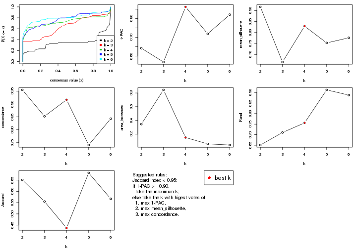
The numeric values for all these statistics can be obtained by get_stats().
get_stats(res)
#> k 1-PAC mean_silhouette concordance area_increased Rand Jaccard
#> 2 2 0.642 0.917 0.955 0.3453 0.651 0.651
#> 3 3 0.568 0.666 0.852 0.8447 0.710 0.555
#> 4 4 0.862 0.829 0.917 0.1491 0.756 0.437
#> 5 5 0.718 0.753 0.741 0.0566 0.912 0.682
#> 6 6 0.820 0.776 0.843 0.0402 0.888 0.567
suggest_best_k() suggests the best \(k\) based on these statistics. The rules are as follows:
suggest_best_k(res)
#> [1] 4
Following shows the table of the partitions (You need to click the show/hide
code output link to see it). The membership matrix (columns with name p*)
is inferred by
clue::cl_consensus()
function with the SE method. Basically the value in the membership matrix
represents the probability to belong to a certain group. The finall class
label for an item is determined with the group with highest probability it
belongs to.
In get_classes() function, the entropy is calculated from the membership
matrix and the silhouette score is calculated from the consensus matrix.
cbind(get_classes(res, k = 2), get_membership(res, k = 2))
#> class entropy silhouette p1 p2
#> SRR562645 1 0.0000 0.962 1.000 0.000
#> SRR562646 1 0.0000 0.962 1.000 0.000
#> SRR562647 1 0.0000 0.962 1.000 0.000
#> SRR562648 1 0.0000 0.962 1.000 0.000
#> SRR562649 1 0.0000 0.962 1.000 0.000
#> SRR567420 1 0.0000 0.962 1.000 0.000
#> SRR567421 1 0.0000 0.962 1.000 0.000
#> SRR567422 1 0.0000 0.962 1.000 0.000
#> SRR567423 1 0.0000 0.962 1.000 0.000
#> SRR567424 1 0.0000 0.962 1.000 0.000
#> SRR567425 1 0.5737 0.863 0.864 0.136
#> SRR567426 1 0.5946 0.855 0.856 0.144
#> SRR567427 1 0.5737 0.863 0.864 0.136
#> SRR567428 1 0.5842 0.859 0.860 0.140
#> SRR567429 1 0.5737 0.863 0.864 0.136
#> SRR567430 1 0.6247 0.841 0.844 0.156
#> SRR567431 1 0.5946 0.855 0.856 0.144
#> SRR567432 1 0.6148 0.845 0.848 0.152
#> SRR567433 1 0.6801 0.809 0.820 0.180
#> SRR567434 1 0.5842 0.859 0.860 0.140
#> SRR567435 1 0.0376 0.961 0.996 0.004
#> SRR567436 1 0.0376 0.961 0.996 0.004
#> SRR567437 1 0.0376 0.961 0.996 0.004
#> SRR567438 1 0.0376 0.961 0.996 0.004
#> SRR567439 1 0.0376 0.961 0.996 0.004
#> SRR567440 1 0.0000 0.962 1.000 0.000
#> SRR567441 1 0.0000 0.962 1.000 0.000
#> SRR567442 1 0.0000 0.962 1.000 0.000
#> SRR567443 1 0.0000 0.962 1.000 0.000
#> SRR567444 1 0.0000 0.962 1.000 0.000
#> SRR567445 2 0.8207 0.729 0.256 0.744
#> SRR567446 2 0.8207 0.729 0.256 0.744
#> SRR567447 2 0.8207 0.729 0.256 0.744
#> SRR567448 2 0.8207 0.729 0.256 0.744
#> SRR567449 2 0.8207 0.729 0.256 0.744
#> SRR567450 1 0.0000 0.962 1.000 0.000
#> SRR567451 1 0.0000 0.962 1.000 0.000
#> SRR567452 1 0.0000 0.962 1.000 0.000
#> SRR567453 1 0.0000 0.962 1.000 0.000
#> SRR567454 1 0.0000 0.962 1.000 0.000
#> SRR567455 1 0.0000 0.962 1.000 0.000
#> SRR567456 1 0.0000 0.962 1.000 0.000
#> SRR567457 1 0.2603 0.940 0.956 0.044
#> SRR567458 1 0.2603 0.940 0.956 0.044
#> SRR567459 1 0.2603 0.940 0.956 0.044
#> SRR567460 1 0.2603 0.940 0.956 0.044
#> SRR567461 1 0.3431 0.926 0.936 0.064
#> SRR567462 1 0.0000 0.962 1.000 0.000
#> SRR567463 1 0.0000 0.962 1.000 0.000
#> SRR567464 1 0.0000 0.962 1.000 0.000
#> SRR567465 1 0.0000 0.962 1.000 0.000
#> SRR567466 1 0.0000 0.962 1.000 0.000
#> SRR567467 1 0.1633 0.953 0.976 0.024
#> SRR567468 1 0.0938 0.958 0.988 0.012
#> SRR567469 1 0.0938 0.958 0.988 0.012
#> SRR567470 1 0.0938 0.958 0.988 0.012
#> SRR567471 1 0.0938 0.958 0.988 0.012
#> SRR835008 1 0.0000 0.962 1.000 0.000
#> SRR835009 2 0.0000 0.899 0.000 1.000
#> SRR835011 2 0.0000 0.899 0.000 1.000
#> SRR835012 2 0.0000 0.899 0.000 1.000
#> SRR835013 2 0.0000 0.899 0.000 1.000
#> SRR835010 2 0.0000 0.899 0.000 1.000
#> SRR835014 2 0.0000 0.899 0.000 1.000
#> SRR835015 2 0.0000 0.899 0.000 1.000
#> SRR835016 2 0.0000 0.899 0.000 1.000
#> SRR835017 2 0.0000 0.899 0.000 1.000
#> SRR835018 2 0.0000 0.899 0.000 1.000
cbind(get_classes(res, k = 3), get_membership(res, k = 3))
#> class entropy silhouette p1 p2 p3
#> SRR562645 1 0.000 0.7597 1.000 0.000 0.000
#> SRR562646 1 0.000 0.7597 1.000 0.000 0.000
#> SRR562647 1 0.000 0.7597 1.000 0.000 0.000
#> SRR562648 1 0.000 0.7597 1.000 0.000 0.000
#> SRR562649 1 0.000 0.7597 1.000 0.000 0.000
#> SRR567420 1 0.000 0.7597 1.000 0.000 0.000
#> SRR567421 1 0.000 0.7597 1.000 0.000 0.000
#> SRR567422 1 0.000 0.7597 1.000 0.000 0.000
#> SRR567423 1 0.000 0.7597 1.000 0.000 0.000
#> SRR567424 1 0.000 0.7597 1.000 0.000 0.000
#> SRR567425 1 0.588 0.5291 0.652 0.348 0.000
#> SRR567426 1 0.601 0.4983 0.628 0.372 0.000
#> SRR567427 1 0.576 0.5493 0.672 0.328 0.000
#> SRR567428 1 0.619 0.4189 0.580 0.420 0.000
#> SRR567429 1 0.581 0.5406 0.664 0.336 0.000
#> SRR567430 1 0.614 0.4442 0.596 0.404 0.000
#> SRR567431 1 0.610 0.4667 0.608 0.392 0.000
#> SRR567432 1 0.606 0.4797 0.616 0.384 0.000
#> SRR567433 1 0.631 0.2533 0.512 0.488 0.000
#> SRR567434 1 0.603 0.4925 0.624 0.376 0.000
#> SRR567435 1 0.000 0.7597 1.000 0.000 0.000
#> SRR567436 1 0.000 0.7597 1.000 0.000 0.000
#> SRR567437 1 0.000 0.7597 1.000 0.000 0.000
#> SRR567438 1 0.000 0.7597 1.000 0.000 0.000
#> SRR567439 1 0.000 0.7597 1.000 0.000 0.000
#> SRR567440 3 0.000 0.8267 0.000 0.000 1.000
#> SRR567441 3 0.000 0.8267 0.000 0.000 1.000
#> SRR567442 3 0.000 0.8267 0.000 0.000 1.000
#> SRR567443 3 0.000 0.8267 0.000 0.000 1.000
#> SRR567444 3 0.000 0.8267 0.000 0.000 1.000
#> SRR567445 2 0.475 0.7665 0.000 0.784 0.216
#> SRR567446 2 0.475 0.7665 0.000 0.784 0.216
#> SRR567447 2 0.475 0.7665 0.000 0.784 0.216
#> SRR567448 2 0.502 0.7311 0.000 0.760 0.240
#> SRR567449 2 0.475 0.7665 0.000 0.784 0.216
#> SRR567450 1 0.604 0.2671 0.620 0.000 0.380
#> SRR567451 1 0.586 0.3466 0.656 0.000 0.344
#> SRR567452 1 0.601 0.2837 0.628 0.000 0.372
#> SRR567453 1 0.617 0.1777 0.588 0.000 0.412
#> SRR567454 1 0.590 0.3268 0.648 0.000 0.352
#> SRR567455 1 0.304 0.6907 0.896 0.000 0.104
#> SRR567456 1 0.334 0.6758 0.880 0.000 0.120
#> SRR567457 3 0.957 0.0275 0.388 0.196 0.416
#> SRR567458 3 0.952 0.1024 0.368 0.192 0.440
#> SRR567459 3 0.952 0.1024 0.368 0.192 0.440
#> SRR567460 3 0.939 0.1879 0.340 0.184 0.476
#> SRR567461 3 0.957 0.2020 0.304 0.224 0.472
#> SRR567462 3 0.000 0.8267 0.000 0.000 1.000
#> SRR567463 3 0.000 0.8267 0.000 0.000 1.000
#> SRR567464 3 0.000 0.8267 0.000 0.000 1.000
#> SRR567465 3 0.000 0.8267 0.000 0.000 1.000
#> SRR567466 3 0.000 0.8267 0.000 0.000 1.000
#> SRR567467 3 0.000 0.8267 0.000 0.000 1.000
#> SRR567468 3 0.000 0.8267 0.000 0.000 1.000
#> SRR567469 3 0.000 0.8267 0.000 0.000 1.000
#> SRR567470 3 0.000 0.8267 0.000 0.000 1.000
#> SRR567471 3 0.000 0.8267 0.000 0.000 1.000
#> SRR835008 1 0.510 0.5705 0.752 0.000 0.248
#> SRR835009 2 0.000 0.9027 0.000 1.000 0.000
#> SRR835011 2 0.000 0.9027 0.000 1.000 0.000
#> SRR835012 2 0.000 0.9027 0.000 1.000 0.000
#> SRR835013 2 0.000 0.9027 0.000 1.000 0.000
#> SRR835010 2 0.000 0.9027 0.000 1.000 0.000
#> SRR835014 2 0.000 0.9027 0.000 1.000 0.000
#> SRR835015 2 0.000 0.9027 0.000 1.000 0.000
#> SRR835016 2 0.000 0.9027 0.000 1.000 0.000
#> SRR835017 2 0.000 0.9027 0.000 1.000 0.000
#> SRR835018 2 0.000 0.9027 0.000 1.000 0.000
cbind(get_classes(res, k = 4), get_membership(res, k = 4))
#> class entropy silhouette p1 p2 p3 p4
#> SRR562645 4 0.0469 0.844 0.012 0.000 0.000 0.988
#> SRR562646 4 0.0469 0.844 0.012 0.000 0.000 0.988
#> SRR562647 4 0.0469 0.844 0.012 0.000 0.000 0.988
#> SRR562648 4 0.0469 0.844 0.012 0.000 0.000 0.988
#> SRR562649 4 0.0469 0.844 0.012 0.000 0.000 0.988
#> SRR567420 4 0.0469 0.844 0.012 0.000 0.000 0.988
#> SRR567421 4 0.0469 0.844 0.012 0.000 0.000 0.988
#> SRR567422 4 0.0469 0.844 0.012 0.000 0.000 0.988
#> SRR567423 4 0.0469 0.844 0.012 0.000 0.000 0.988
#> SRR567424 4 0.0469 0.844 0.012 0.000 0.000 0.988
#> SRR567425 1 0.0657 0.893 0.984 0.012 0.000 0.004
#> SRR567426 1 0.0657 0.893 0.984 0.012 0.000 0.004
#> SRR567427 1 0.0657 0.893 0.984 0.012 0.000 0.004
#> SRR567428 1 0.0469 0.892 0.988 0.012 0.000 0.000
#> SRR567429 1 0.0657 0.893 0.984 0.012 0.000 0.004
#> SRR567430 1 0.0469 0.892 0.988 0.012 0.000 0.000
#> SRR567431 1 0.0657 0.893 0.984 0.012 0.000 0.004
#> SRR567432 1 0.0469 0.892 0.988 0.012 0.000 0.000
#> SRR567433 1 0.0469 0.892 0.988 0.012 0.000 0.000
#> SRR567434 1 0.0657 0.893 0.984 0.012 0.000 0.004
#> SRR567435 1 0.4967 0.256 0.548 0.000 0.000 0.452
#> SRR567436 1 0.4989 0.194 0.528 0.000 0.000 0.472
#> SRR567437 1 0.4855 0.381 0.600 0.000 0.000 0.400
#> SRR567438 4 0.5000 -0.183 0.500 0.000 0.000 0.500
#> SRR567439 1 0.4992 0.184 0.524 0.000 0.000 0.476
#> SRR567440 3 0.0000 0.997 0.000 0.000 1.000 0.000
#> SRR567441 3 0.0000 0.997 0.000 0.000 1.000 0.000
#> SRR567442 3 0.0000 0.997 0.000 0.000 1.000 0.000
#> SRR567443 3 0.0000 0.997 0.000 0.000 1.000 0.000
#> SRR567444 3 0.0000 0.997 0.000 0.000 1.000 0.000
#> SRR567445 1 0.0336 0.890 0.992 0.008 0.000 0.000
#> SRR567446 1 0.0336 0.890 0.992 0.008 0.000 0.000
#> SRR567447 1 0.0336 0.890 0.992 0.008 0.000 0.000
#> SRR567448 1 0.0336 0.890 0.992 0.008 0.000 0.000
#> SRR567449 1 0.0336 0.890 0.992 0.008 0.000 0.000
#> SRR567450 4 0.5786 0.604 0.036 0.008 0.308 0.648
#> SRR567451 4 0.5551 0.666 0.032 0.012 0.264 0.692
#> SRR567452 4 0.5834 0.631 0.044 0.008 0.288 0.660
#> SRR567453 4 0.7082 0.519 0.136 0.004 0.304 0.556
#> SRR567454 4 0.5430 0.681 0.036 0.008 0.252 0.704
#> SRR567455 4 0.2456 0.830 0.028 0.008 0.040 0.924
#> SRR567456 4 0.2546 0.829 0.028 0.008 0.044 0.920
#> SRR567457 1 0.1022 0.884 0.968 0.000 0.000 0.032
#> SRR567458 1 0.1022 0.884 0.968 0.000 0.000 0.032
#> SRR567459 1 0.1022 0.884 0.968 0.000 0.000 0.032
#> SRR567460 1 0.1022 0.884 0.968 0.000 0.000 0.032
#> SRR567461 1 0.1022 0.884 0.968 0.000 0.000 0.032
#> SRR567462 3 0.0336 0.993 0.000 0.000 0.992 0.008
#> SRR567463 3 0.0336 0.993 0.000 0.000 0.992 0.008
#> SRR567464 3 0.0336 0.993 0.000 0.000 0.992 0.008
#> SRR567465 3 0.0188 0.996 0.000 0.000 0.996 0.004
#> SRR567466 3 0.0188 0.996 0.000 0.000 0.996 0.004
#> SRR567467 3 0.0000 0.997 0.000 0.000 1.000 0.000
#> SRR567468 3 0.0000 0.997 0.000 0.000 1.000 0.000
#> SRR567469 3 0.0000 0.997 0.000 0.000 1.000 0.000
#> SRR567470 3 0.0000 0.997 0.000 0.000 1.000 0.000
#> SRR567471 3 0.0000 0.997 0.000 0.000 1.000 0.000
#> SRR835008 4 0.5670 0.681 0.128 0.000 0.152 0.720
#> SRR835009 2 0.1302 0.939 0.044 0.956 0.000 0.000
#> SRR835011 2 0.1004 0.944 0.024 0.972 0.000 0.004
#> SRR835012 2 0.1004 0.944 0.024 0.972 0.000 0.004
#> SRR835013 2 0.1004 0.944 0.024 0.972 0.000 0.004
#> SRR835010 2 0.1118 0.944 0.036 0.964 0.000 0.000
#> SRR835014 2 0.1792 0.920 0.068 0.932 0.000 0.000
#> SRR835015 2 0.4746 0.452 0.368 0.632 0.000 0.000
#> SRR835016 2 0.0921 0.945 0.028 0.972 0.000 0.000
#> SRR835017 2 0.0921 0.945 0.028 0.972 0.000 0.000
#> SRR835018 2 0.0921 0.945 0.028 0.972 0.000 0.000
cbind(get_classes(res, k = 5), get_membership(res, k = 5))
#> class entropy silhouette p1 p2 p3 p4 p5
#> SRR562645 4 0.4262 0.8930 0.000 0.000 0.000 0.560 0.440
#> SRR562646 4 0.4262 0.8930 0.000 0.000 0.000 0.560 0.440
#> SRR562647 4 0.4262 0.8930 0.000 0.000 0.000 0.560 0.440
#> SRR562648 4 0.4262 0.8930 0.000 0.000 0.000 0.560 0.440
#> SRR562649 4 0.4262 0.8930 0.000 0.000 0.000 0.560 0.440
#> SRR567420 4 0.4278 0.8840 0.000 0.000 0.000 0.548 0.452
#> SRR567421 4 0.4273 0.8902 0.000 0.000 0.000 0.552 0.448
#> SRR567422 4 0.4273 0.8902 0.000 0.000 0.000 0.552 0.448
#> SRR567423 4 0.4273 0.8902 0.000 0.000 0.000 0.552 0.448
#> SRR567424 4 0.4268 0.8923 0.000 0.000 0.000 0.556 0.444
#> SRR567425 1 0.3774 0.5889 0.704 0.000 0.000 0.000 0.296
#> SRR567426 1 0.3906 0.5944 0.704 0.000 0.000 0.004 0.292
#> SRR567427 1 0.3661 0.6041 0.724 0.000 0.000 0.000 0.276
#> SRR567428 1 0.3992 0.6090 0.720 0.000 0.000 0.012 0.268
#> SRR567429 1 0.3816 0.5804 0.696 0.000 0.000 0.000 0.304
#> SRR567430 1 0.4063 0.6001 0.708 0.000 0.000 0.012 0.280
#> SRR567431 1 0.3992 0.6093 0.720 0.000 0.000 0.012 0.268
#> SRR567432 1 0.3774 0.5906 0.704 0.000 0.000 0.000 0.296
#> SRR567433 1 0.4132 0.6103 0.720 0.000 0.000 0.020 0.260
#> SRR567434 1 0.4086 0.5985 0.704 0.000 0.000 0.012 0.284
#> SRR567435 5 0.5354 0.6099 0.192 0.000 0.000 0.140 0.668
#> SRR567436 5 0.5251 0.6081 0.184 0.000 0.000 0.136 0.680
#> SRR567437 5 0.5354 0.6041 0.192 0.000 0.000 0.140 0.668
#> SRR567438 5 0.5251 0.6069 0.184 0.000 0.000 0.136 0.680
#> SRR567439 5 0.5251 0.6111 0.184 0.000 0.000 0.136 0.680
#> SRR567440 3 0.0162 0.9643 0.000 0.000 0.996 0.000 0.004
#> SRR567441 3 0.0162 0.9643 0.000 0.000 0.996 0.000 0.004
#> SRR567442 3 0.0162 0.9643 0.000 0.000 0.996 0.000 0.004
#> SRR567443 3 0.0162 0.9643 0.000 0.000 0.996 0.000 0.004
#> SRR567444 3 0.0162 0.9643 0.000 0.000 0.996 0.000 0.004
#> SRR567445 1 0.2136 0.6228 0.904 0.000 0.000 0.088 0.008
#> SRR567446 1 0.2136 0.6228 0.904 0.000 0.000 0.088 0.008
#> SRR567447 1 0.2305 0.6231 0.896 0.000 0.000 0.092 0.012
#> SRR567448 1 0.1956 0.6236 0.916 0.000 0.000 0.076 0.008
#> SRR567449 1 0.2136 0.6228 0.904 0.000 0.000 0.088 0.008
#> SRR567450 5 0.3641 0.7528 0.120 0.000 0.060 0.000 0.820
#> SRR567451 5 0.3507 0.7563 0.120 0.000 0.052 0.000 0.828
#> SRR567452 5 0.3575 0.7541 0.120 0.000 0.056 0.000 0.824
#> SRR567453 5 0.3971 0.7391 0.124 0.000 0.068 0.004 0.804
#> SRR567454 5 0.3641 0.7528 0.120 0.000 0.060 0.000 0.820
#> SRR567455 5 0.2783 0.7466 0.116 0.000 0.012 0.004 0.868
#> SRR567456 5 0.2886 0.7484 0.116 0.000 0.016 0.004 0.864
#> SRR567457 1 0.6001 0.4728 0.532 0.000 0.004 0.356 0.108
#> SRR567458 1 0.6001 0.4728 0.532 0.000 0.004 0.356 0.108
#> SRR567459 1 0.6040 0.4715 0.528 0.000 0.004 0.356 0.112
#> SRR567460 1 0.6040 0.4715 0.528 0.000 0.004 0.356 0.112
#> SRR567461 1 0.6001 0.4728 0.532 0.000 0.004 0.356 0.108
#> SRR567462 3 0.2663 0.9311 0.008 0.000 0.896 0.048 0.048
#> SRR567463 3 0.2663 0.9311 0.008 0.000 0.896 0.048 0.048
#> SRR567464 3 0.2804 0.9261 0.008 0.000 0.888 0.056 0.048
#> SRR567465 3 0.2734 0.9287 0.008 0.000 0.892 0.052 0.048
#> SRR567466 3 0.2589 0.9328 0.008 0.000 0.900 0.044 0.048
#> SRR567467 3 0.0162 0.9634 0.000 0.000 0.996 0.004 0.000
#> SRR567468 3 0.0162 0.9634 0.000 0.000 0.996 0.004 0.000
#> SRR567469 3 0.0162 0.9634 0.000 0.000 0.996 0.004 0.000
#> SRR567470 3 0.0162 0.9634 0.000 0.000 0.996 0.004 0.000
#> SRR567471 3 0.0162 0.9634 0.000 0.000 0.996 0.004 0.000
#> SRR835008 4 0.6684 0.0384 0.088 0.000 0.116 0.612 0.184
#> SRR835009 2 0.4157 0.8166 0.164 0.784 0.000 0.040 0.012
#> SRR835011 2 0.0162 0.8837 0.000 0.996 0.000 0.000 0.004
#> SRR835012 2 0.0162 0.8837 0.000 0.996 0.000 0.000 0.004
#> SRR835013 2 0.0162 0.8837 0.000 0.996 0.000 0.000 0.004
#> SRR835010 2 0.4069 0.8253 0.148 0.796 0.000 0.044 0.012
#> SRR835014 2 0.5993 0.5558 0.368 0.544 0.000 0.064 0.024
#> SRR835015 2 0.5855 0.6849 0.280 0.620 0.000 0.072 0.028
#> SRR835016 2 0.0324 0.8842 0.000 0.992 0.000 0.004 0.004
#> SRR835017 2 0.0324 0.8842 0.000 0.992 0.000 0.004 0.004
#> SRR835018 2 0.0324 0.8842 0.000 0.992 0.000 0.004 0.004
cbind(get_classes(res, k = 6), get_membership(res, k = 6))
#> class entropy silhouette p1 p2 p3 p4 p5 p6
#> SRR562645 4 0.0000 0.993 0.000 0.000 0.000 1.000 0.000 0.000
#> SRR562646 4 0.0000 0.993 0.000 0.000 0.000 1.000 0.000 0.000
#> SRR562647 4 0.0000 0.993 0.000 0.000 0.000 1.000 0.000 0.000
#> SRR562648 4 0.0146 0.991 0.000 0.000 0.000 0.996 0.004 0.000
#> SRR562649 4 0.0000 0.993 0.000 0.000 0.000 1.000 0.000 0.000
#> SRR567420 4 0.0260 0.993 0.008 0.000 0.000 0.992 0.000 0.000
#> SRR567421 4 0.0260 0.993 0.008 0.000 0.000 0.992 0.000 0.000
#> SRR567422 4 0.0260 0.993 0.008 0.000 0.000 0.992 0.000 0.000
#> SRR567423 4 0.0260 0.993 0.008 0.000 0.000 0.992 0.000 0.000
#> SRR567424 4 0.0405 0.991 0.008 0.000 0.000 0.988 0.000 0.004
#> SRR567425 1 0.2384 0.810 0.884 0.000 0.000 0.000 0.084 0.032
#> SRR567426 1 0.2457 0.808 0.880 0.000 0.000 0.000 0.084 0.036
#> SRR567427 1 0.2509 0.807 0.876 0.000 0.000 0.000 0.088 0.036
#> SRR567428 1 0.2633 0.800 0.864 0.000 0.000 0.000 0.104 0.032
#> SRR567429 1 0.2384 0.810 0.884 0.000 0.000 0.000 0.084 0.032
#> SRR567430 1 0.2331 0.810 0.888 0.000 0.000 0.000 0.080 0.032
#> SRR567431 1 0.2487 0.806 0.876 0.000 0.000 0.000 0.092 0.032
#> SRR567432 1 0.2457 0.808 0.880 0.000 0.000 0.000 0.084 0.036
#> SRR567433 1 0.2560 0.804 0.872 0.000 0.000 0.000 0.092 0.036
#> SRR567434 1 0.2457 0.808 0.880 0.000 0.000 0.000 0.084 0.036
#> SRR567435 1 0.4110 0.639 0.692 0.000 0.000 0.268 0.040 0.000
#> SRR567436 1 0.4066 0.634 0.692 0.000 0.000 0.272 0.036 0.000
#> SRR567437 1 0.4002 0.650 0.704 0.000 0.000 0.260 0.036 0.000
#> SRR567438 1 0.4024 0.645 0.700 0.000 0.000 0.264 0.036 0.000
#> SRR567439 1 0.4045 0.640 0.696 0.000 0.000 0.268 0.036 0.000
#> SRR567440 3 0.0146 0.921 0.000 0.000 0.996 0.000 0.000 0.004
#> SRR567441 3 0.0000 0.921 0.000 0.000 1.000 0.000 0.000 0.000
#> SRR567442 3 0.0146 0.921 0.000 0.000 0.996 0.000 0.000 0.004
#> SRR567443 3 0.0000 0.921 0.000 0.000 1.000 0.000 0.000 0.000
#> SRR567444 3 0.0146 0.921 0.000 0.000 0.996 0.000 0.000 0.004
#> SRR567445 6 0.5575 0.213 0.140 0.000 0.000 0.000 0.400 0.460
#> SRR567446 6 0.5560 0.242 0.140 0.000 0.000 0.000 0.384 0.476
#> SRR567447 6 0.5560 0.242 0.140 0.000 0.000 0.000 0.384 0.476
#> SRR567448 6 0.5572 0.224 0.140 0.000 0.000 0.000 0.396 0.464
#> SRR567449 6 0.5572 0.224 0.140 0.000 0.000 0.000 0.396 0.464
#> SRR567450 1 0.2678 0.798 0.884 0.000 0.012 0.036 0.064 0.004
#> SRR567451 1 0.2648 0.799 0.884 0.000 0.008 0.040 0.064 0.004
#> SRR567452 1 0.2648 0.799 0.884 0.000 0.008 0.040 0.064 0.004
#> SRR567453 1 0.2648 0.799 0.884 0.000 0.008 0.040 0.064 0.004
#> SRR567454 1 0.2648 0.799 0.884 0.000 0.008 0.040 0.064 0.004
#> SRR567455 1 0.2716 0.798 0.880 0.000 0.008 0.044 0.064 0.004
#> SRR567456 1 0.2716 0.798 0.880 0.000 0.008 0.044 0.064 0.004
#> SRR567457 6 0.1934 0.548 0.044 0.000 0.000 0.040 0.000 0.916
#> SRR567458 6 0.1934 0.548 0.044 0.000 0.000 0.040 0.000 0.916
#> SRR567459 6 0.2078 0.548 0.044 0.000 0.000 0.040 0.004 0.912
#> SRR567460 6 0.2078 0.545 0.044 0.000 0.000 0.040 0.004 0.912
#> SRR567461 6 0.2177 0.544 0.052 0.000 0.000 0.032 0.008 0.908
#> SRR567462 3 0.2959 0.874 0.008 0.000 0.852 0.000 0.036 0.104
#> SRR567463 3 0.3139 0.864 0.008 0.000 0.836 0.000 0.036 0.120
#> SRR567464 3 0.3266 0.855 0.008 0.000 0.824 0.000 0.036 0.132
#> SRR567465 3 0.3139 0.864 0.008 0.000 0.836 0.000 0.036 0.120
#> SRR567466 3 0.2959 0.874 0.008 0.000 0.852 0.000 0.036 0.104
#> SRR567467 3 0.1528 0.909 0.000 0.000 0.936 0.000 0.048 0.016
#> SRR567468 3 0.1528 0.909 0.000 0.000 0.936 0.000 0.048 0.016
#> SRR567469 3 0.1461 0.910 0.000 0.000 0.940 0.000 0.044 0.016
#> SRR567470 3 0.1594 0.907 0.000 0.000 0.932 0.000 0.052 0.016
#> SRR567471 3 0.1528 0.909 0.000 0.000 0.936 0.000 0.048 0.016
#> SRR835008 6 0.6093 0.238 0.016 0.000 0.096 0.160 0.092 0.636
#> SRR835009 2 0.3918 0.607 0.000 0.768 0.000 0.000 0.108 0.124
#> SRR835011 2 0.0000 0.893 0.000 1.000 0.000 0.000 0.000 0.000
#> SRR835012 2 0.0000 0.893 0.000 1.000 0.000 0.000 0.000 0.000
#> SRR835013 2 0.0000 0.893 0.000 1.000 0.000 0.000 0.000 0.000
#> SRR835010 2 0.3808 0.680 0.000 0.792 0.000 0.008 0.088 0.112
#> SRR835014 5 0.5928 0.862 0.032 0.188 0.000 0.000 0.580 0.200
#> SRR835015 5 0.5987 0.867 0.016 0.244 0.000 0.000 0.532 0.208
#> SRR835016 2 0.0937 0.891 0.000 0.960 0.000 0.000 0.040 0.000
#> SRR835017 2 0.0937 0.891 0.000 0.960 0.000 0.000 0.040 0.000
#> SRR835018 2 0.0937 0.891 0.000 0.960 0.000 0.000 0.040 0.000
Heatmaps for the consensus matrix. It visualizes the probability of two samples to be in a same group.
consensus_heatmap(res, k = 2)

consensus_heatmap(res, k = 3)
consensus_heatmap(res, k = 4)
consensus_heatmap(res, k = 5)
consensus_heatmap(res, k = 6)
Heatmaps for the membership of samples in all partitions to see how consistent they are:
membership_heatmap(res, k = 2)
membership_heatmap(res, k = 3)
membership_heatmap(res, k = 4)
membership_heatmap(res, k = 5)
membership_heatmap(res, k = 6)
As soon as we have had the classes for columns, we can look for signatures which are significantly different between classes which can be candidate marks for certain classes. Following are the heatmaps for signatures.
Signature heatmaps where rows are scaled:
get_signatures(res, k = 2)
get_signatures(res, k = 3)
get_signatures(res, k = 4)

get_signatures(res, k = 5)
get_signatures(res, k = 6)
Signature heatmaps where rows are not scaled:
get_signatures(res, k = 2, scale_rows = FALSE)
get_signatures(res, k = 3, scale_rows = FALSE)
get_signatures(res, k = 4, scale_rows = FALSE)
get_signatures(res, k = 5, scale_rows = FALSE)
get_signatures(res, k = 6, scale_rows = FALSE)
Compare the overlap of signatures from different k:
compare_signatures(res)
get_signature() returns a data frame invisibly. TO get the list of signatures, the function
call should be assigned to a variable explicitly. In following code, if plot argument is set
to FALSE, no heatmap is plotted while only the differential analysis is performed.
# code only for demonstration
tb = get_signature(res, k = ..., plot = FALSE)
An example of the output of tb is:
#> which_row fdr mean_1 mean_2 scaled_mean_1 scaled_mean_2 km
#> 1 38 0.042760348 8.373488 9.131774 -0.5533452 0.5164555 1
#> 2 40 0.018707592 7.106213 8.469186 -0.6173731 0.5762149 1
#> 3 55 0.019134737 10.221463 11.207825 -0.6159697 0.5749050 1
#> 4 59 0.006059896 5.921854 7.869574 -0.6899429 0.6439467 1
#> 5 60 0.018055526 8.928898 10.211722 -0.6204761 0.5791110 1
#> 6 98 0.009384629 15.714769 14.887706 0.6635654 -0.6193277 2
...
The columns in tb are:
which_row: row indices corresponding to the input matrix.fdr: FDR for the differential test. mean_x: The mean value in group x.scaled_mean_x: The mean value in group x after rows are scaled.km: Row groups if k-means clustering is applied to rows.UMAP plot which shows how samples are separated.
dimension_reduction(res, k = 2, method = "UMAP")
dimension_reduction(res, k = 3, method = "UMAP")
dimension_reduction(res, k = 4, method = "UMAP")
dimension_reduction(res, k = 5, method = "UMAP")
dimension_reduction(res, k = 6, method = "UMAP")
Following heatmap shows how subgroups are split when increasing k:
collect_classes(res)
If matrix rows can be associated to genes, consider to use functional_enrichment(res,
...) to perform function enrichment for the signature genes. See this vignette for more detailed explanations.
The object with results only for a single top-value method and a single partition method can be extracted as:
res = res_list["ATC", "hclust"]
# you can also extract it by
# res = res_list["ATC:hclust"]
A summary of res and all the functions that can be applied to it:
res
#> A 'ConsensusPartition' object with k = 2, 3, 4, 5, 6.
#> On a matrix with 14753 rows and 68 columns.
#> Top rows (1000, 2000, 3000, 4000, 5000) are extracted by 'ATC' method.
#> Subgroups are detected by 'hclust' method.
#> Performed in total 1250 partitions by row resampling.
#> Best k for subgroups seems to be 3.
#>
#> Following methods can be applied to this 'ConsensusPartition' object:
#> [1] "cola_report" "collect_classes" "collect_plots"
#> [4] "collect_stats" "colnames" "compare_signatures"
#> [7] "consensus_heatmap" "dimension_reduction" "functional_enrichment"
#> [10] "get_anno_col" "get_anno" "get_classes"
#> [13] "get_consensus" "get_matrix" "get_membership"
#> [16] "get_param" "get_signatures" "get_stats"
#> [19] "is_best_k" "is_stable_k" "membership_heatmap"
#> [22] "ncol" "nrow" "plot_ecdf"
#> [25] "rownames" "select_partition_number" "show"
#> [28] "suggest_best_k" "test_to_known_factors"
collect_plots() function collects all the plots made from res for all k (number of partitions)
into one single page to provide an easy and fast comparison between different k.
collect_plots(res)
The plots are:
k and the heatmap of
predicted classes for each k.k.k.k.All the plots in panels can be made by individual functions and they are plotted later in this section.
select_partition_number() produces several plots showing different
statistics for choosing “optimized” k. There are following statistics:
k;k, the area increased is defined as \(A_k - A_{k-1}\).The detailed explanations of these statistics can be found in the cola vignette.
Generally speaking, lower PAC score, higher mean silhouette score or higher
concordance corresponds to better partition. Rand index and Jaccard index
measure how similar the current partition is compared to partition with k-1.
If they are too similar, we won't accept k is better than k-1.
select_partition_number(res)
The numeric values for all these statistics can be obtained by get_stats().
get_stats(res)
#> k 1-PAC mean_silhouette concordance area_increased Rand Jaccard
#> 2 2 0.556 0.684 0.842 0.37776 0.745 0.745
#> 3 3 1.000 0.942 0.971 0.55914 0.652 0.534
#> 4 4 1.000 1.000 1.000 0.04112 0.989 0.974
#> 5 5 1.000 1.000 1.000 0.00286 0.998 0.995
#> 6 6 1.000 0.984 0.999 0.02531 0.985 0.960
suggest_best_k() suggests the best \(k\) based on these statistics. The rules are as follows:
suggest_best_k(res)
#> [1] 3
Following shows the table of the partitions (You need to click the show/hide
code output link to see it). The membership matrix (columns with name p*)
is inferred by
clue::cl_consensus()
function with the SE method. Basically the value in the membership matrix
represents the probability to belong to a certain group. The finall class
label for an item is determined with the group with highest probability it
belongs to.
In get_classes() function, the entropy is calculated from the membership
matrix and the silhouette score is calculated from the consensus matrix.
cbind(get_classes(res, k = 2), get_membership(res, k = 2))
#> class entropy silhouette p1 p2
#> SRR562645 1 0 0.771 1.000 0.000
#> SRR562646 1 0 0.771 1.000 0.000
#> SRR562647 1 0 0.771 1.000 0.000
#> SRR562648 1 0 0.771 1.000 0.000
#> SRR562649 1 0 0.771 1.000 0.000
#> SRR567420 1 0 0.771 1.000 0.000
#> SRR567421 1 0 0.771 1.000 0.000
#> SRR567422 1 0 0.771 1.000 0.000
#> SRR567423 1 0 0.771 1.000 0.000
#> SRR567424 1 0 0.771 1.000 0.000
#> SRR567425 1 0 0.771 1.000 0.000
#> SRR567426 1 0 0.771 1.000 0.000
#> SRR567427 1 0 0.771 1.000 0.000
#> SRR567428 1 0 0.771 1.000 0.000
#> SRR567429 1 0 0.771 1.000 0.000
#> SRR567430 1 0 0.771 1.000 0.000
#> SRR567431 1 0 0.771 1.000 0.000
#> SRR567432 1 0 0.771 1.000 0.000
#> SRR567433 1 0 0.771 1.000 0.000
#> SRR567434 1 0 0.771 1.000 0.000
#> SRR567435 1 0 0.771 1.000 0.000
#> SRR567436 1 0 0.771 1.000 0.000
#> SRR567437 1 0 0.771 1.000 0.000
#> SRR567438 1 0 0.771 1.000 0.000
#> SRR567439 1 0 0.771 1.000 0.000
#> SRR567440 1 1 0.398 0.512 0.488
#> SRR567441 1 1 0.398 0.512 0.488
#> SRR567442 1 1 0.398 0.512 0.488
#> SRR567443 1 1 0.398 0.512 0.488
#> SRR567444 1 1 0.398 0.512 0.488
#> SRR567445 1 0 0.771 1.000 0.000
#> SRR567446 1 0 0.771 1.000 0.000
#> SRR567447 1 0 0.771 1.000 0.000
#> SRR567448 1 0 0.771 1.000 0.000
#> SRR567449 1 0 0.771 1.000 0.000
#> SRR567450 1 1 0.398 0.512 0.488
#> SRR567451 1 1 0.398 0.512 0.488
#> SRR567452 1 1 0.398 0.512 0.488
#> SRR567453 1 1 0.398 0.512 0.488
#> SRR567454 1 1 0.398 0.512 0.488
#> SRR567455 1 1 0.398 0.512 0.488
#> SRR567456 1 1 0.398 0.512 0.488
#> SRR567457 1 0 0.771 1.000 0.000
#> SRR567458 1 0 0.771 1.000 0.000
#> SRR567459 1 0 0.771 1.000 0.000
#> SRR567460 1 0 0.771 1.000 0.000
#> SRR567461 1 0 0.771 1.000 0.000
#> SRR567462 1 1 0.398 0.512 0.488
#> SRR567463 1 1 0.398 0.512 0.488
#> SRR567464 1 1 0.398 0.512 0.488
#> SRR567465 1 1 0.398 0.512 0.488
#> SRR567466 1 1 0.398 0.512 0.488
#> SRR567467 1 1 0.398 0.512 0.488
#> SRR567468 1 1 0.398 0.512 0.488
#> SRR567469 1 1 0.398 0.512 0.488
#> SRR567470 1 1 0.398 0.512 0.488
#> SRR567471 1 1 0.398 0.512 0.488
#> SRR835008 1 0 0.771 1.000 0.000
#> SRR835009 2 0 1.000 0.000 1.000
#> SRR835011 2 0 1.000 0.000 1.000
#> SRR835012 2 0 1.000 0.000 1.000
#> SRR835013 2 0 1.000 0.000 1.000
#> SRR835010 2 0 1.000 0.000 1.000
#> SRR835014 2 0 1.000 0.000 1.000
#> SRR835015 2 0 1.000 0.000 1.000
#> SRR835016 2 0 1.000 0.000 1.000
#> SRR835017 2 0 1.000 0.000 1.000
#> SRR835018 2 0 1.000 0.000 1.000
cbind(get_classes(res, k = 3), get_membership(res, k = 3))
#> class entropy silhouette p1 p2 p3
#> SRR562645 1 0.000 1.000 1 0.000 0.000
#> SRR562646 1 0.000 1.000 1 0.000 0.000
#> SRR562647 1 0.000 1.000 1 0.000 0.000
#> SRR562648 1 0.000 1.000 1 0.000 0.000
#> SRR562649 1 0.000 1.000 1 0.000 0.000
#> SRR567420 1 0.000 1.000 1 0.000 0.000
#> SRR567421 1 0.000 1.000 1 0.000 0.000
#> SRR567422 1 0.000 1.000 1 0.000 0.000
#> SRR567423 1 0.000 1.000 1 0.000 0.000
#> SRR567424 1 0.000 1.000 1 0.000 0.000
#> SRR567425 1 0.000 1.000 1 0.000 0.000
#> SRR567426 1 0.000 1.000 1 0.000 0.000
#> SRR567427 1 0.000 1.000 1 0.000 0.000
#> SRR567428 1 0.000 1.000 1 0.000 0.000
#> SRR567429 1 0.000 1.000 1 0.000 0.000
#> SRR567430 1 0.000 1.000 1 0.000 0.000
#> SRR567431 1 0.000 1.000 1 0.000 0.000
#> SRR567432 1 0.000 1.000 1 0.000 0.000
#> SRR567433 1 0.000 1.000 1 0.000 0.000
#> SRR567434 1 0.000 1.000 1 0.000 0.000
#> SRR567435 1 0.000 1.000 1 0.000 0.000
#> SRR567436 1 0.000 1.000 1 0.000 0.000
#> SRR567437 1 0.000 1.000 1 0.000 0.000
#> SRR567438 1 0.000 1.000 1 0.000 0.000
#> SRR567439 1 0.000 1.000 1 0.000 0.000
#> SRR567440 3 0.000 1.000 0 0.000 1.000
#> SRR567441 3 0.000 1.000 0 0.000 1.000
#> SRR567442 3 0.000 1.000 0 0.000 1.000
#> SRR567443 3 0.000 1.000 0 0.000 1.000
#> SRR567444 3 0.000 1.000 0 0.000 1.000
#> SRR567445 1 0.000 1.000 1 0.000 0.000
#> SRR567446 1 0.000 1.000 1 0.000 0.000
#> SRR567447 1 0.000 1.000 1 0.000 0.000
#> SRR567448 1 0.000 1.000 1 0.000 0.000
#> SRR567449 1 0.000 1.000 1 0.000 0.000
#> SRR567450 3 0.000 1.000 0 0.000 1.000
#> SRR567451 3 0.000 1.000 0 0.000 1.000
#> SRR567452 3 0.000 1.000 0 0.000 1.000
#> SRR567453 3 0.000 1.000 0 0.000 1.000
#> SRR567454 3 0.000 1.000 0 0.000 1.000
#> SRR567455 3 0.000 1.000 0 0.000 1.000
#> SRR567456 3 0.000 1.000 0 0.000 1.000
#> SRR567457 1 0.000 1.000 1 0.000 0.000
#> SRR567458 1 0.000 1.000 1 0.000 0.000
#> SRR567459 1 0.000 1.000 1 0.000 0.000
#> SRR567460 1 0.000 1.000 1 0.000 0.000
#> SRR567461 1 0.000 1.000 1 0.000 0.000
#> SRR567462 3 0.000 1.000 0 0.000 1.000
#> SRR567463 3 0.000 1.000 0 0.000 1.000
#> SRR567464 3 0.000 1.000 0 0.000 1.000
#> SRR567465 3 0.000 1.000 0 0.000 1.000
#> SRR567466 3 0.000 1.000 0 0.000 1.000
#> SRR567467 3 0.000 1.000 0 0.000 1.000
#> SRR567468 3 0.000 1.000 0 0.000 1.000
#> SRR567469 3 0.000 1.000 0 0.000 1.000
#> SRR567470 3 0.000 1.000 0 0.000 1.000
#> SRR567471 3 0.000 1.000 0 0.000 1.000
#> SRR835008 1 0.000 1.000 1 0.000 0.000
#> SRR835009 2 0.631 0.365 0 0.512 0.488
#> SRR835011 2 0.000 0.768 0 1.000 0.000
#> SRR835012 2 0.000 0.768 0 1.000 0.000
#> SRR835013 2 0.000 0.768 0 1.000 0.000
#> SRR835010 2 0.631 0.365 0 0.512 0.488
#> SRR835014 2 0.631 0.365 0 0.512 0.488
#> SRR835015 2 0.631 0.365 0 0.512 0.488
#> SRR835016 2 0.000 0.768 0 1.000 0.000
#> SRR835017 2 0.000 0.768 0 1.000 0.000
#> SRR835018 2 0.000 0.768 0 1.000 0.000
cbind(get_classes(res, k = 4), get_membership(res, k = 4))
#> class entropy silhouette p1 p2 p3 p4
#> SRR562645 1 0 1 1 0 0 0
#> SRR562646 1 0 1 1 0 0 0
#> SRR562647 1 0 1 1 0 0 0
#> SRR562648 1 0 1 1 0 0 0
#> SRR562649 1 0 1 1 0 0 0
#> SRR567420 1 0 1 1 0 0 0
#> SRR567421 1 0 1 1 0 0 0
#> SRR567422 1 0 1 1 0 0 0
#> SRR567423 1 0 1 1 0 0 0
#> SRR567424 1 0 1 1 0 0 0
#> SRR567425 1 0 1 1 0 0 0
#> SRR567426 1 0 1 1 0 0 0
#> SRR567427 1 0 1 1 0 0 0
#> SRR567428 1 0 1 1 0 0 0
#> SRR567429 1 0 1 1 0 0 0
#> SRR567430 1 0 1 1 0 0 0
#> SRR567431 1 0 1 1 0 0 0
#> SRR567432 1 0 1 1 0 0 0
#> SRR567433 1 0 1 1 0 0 0
#> SRR567434 1 0 1 1 0 0 0
#> SRR567435 1 0 1 1 0 0 0
#> SRR567436 1 0 1 1 0 0 0
#> SRR567437 1 0 1 1 0 0 0
#> SRR567438 1 0 1 1 0 0 0
#> SRR567439 1 0 1 1 0 0 0
#> SRR567440 3 0 1 0 0 1 0
#> SRR567441 3 0 1 0 0 1 0
#> SRR567442 3 0 1 0 0 1 0
#> SRR567443 3 0 1 0 0 1 0
#> SRR567444 3 0 1 0 0 1 0
#> SRR567445 1 0 1 1 0 0 0
#> SRR567446 1 0 1 1 0 0 0
#> SRR567447 1 0 1 1 0 0 0
#> SRR567448 1 0 1 1 0 0 0
#> SRR567449 1 0 1 1 0 0 0
#> SRR567450 3 0 1 0 0 1 0
#> SRR567451 3 0 1 0 0 1 0
#> SRR567452 3 0 1 0 0 1 0
#> SRR567453 3 0 1 0 0 1 0
#> SRR567454 3 0 1 0 0 1 0
#> SRR567455 3 0 1 0 0 1 0
#> SRR567456 3 0 1 0 0 1 0
#> SRR567457 1 0 1 1 0 0 0
#> SRR567458 1 0 1 1 0 0 0
#> SRR567459 1 0 1 1 0 0 0
#> SRR567460 1 0 1 1 0 0 0
#> SRR567461 1 0 1 1 0 0 0
#> SRR567462 3 0 1 0 0 1 0
#> SRR567463 3 0 1 0 0 1 0
#> SRR567464 3 0 1 0 0 1 0
#> SRR567465 3 0 1 0 0 1 0
#> SRR567466 3 0 1 0 0 1 0
#> SRR567467 3 0 1 0 0 1 0
#> SRR567468 3 0 1 0 0 1 0
#> SRR567469 3 0 1 0 0 1 0
#> SRR567470 3 0 1 0 0 1 0
#> SRR567471 3 0 1 0 0 1 0
#> SRR835008 1 0 1 1 0 0 0
#> SRR835009 4 0 1 0 0 0 1
#> SRR835011 2 0 1 0 1 0 0
#> SRR835012 2 0 1 0 1 0 0
#> SRR835013 2 0 1 0 1 0 0
#> SRR835010 4 0 1 0 0 0 1
#> SRR835014 4 0 1 0 0 0 1
#> SRR835015 4 0 1 0 0 0 1
#> SRR835016 2 0 1 0 1 0 0
#> SRR835017 2 0 1 0 1 0 0
#> SRR835018 2 0 1 0 1 0 0
cbind(get_classes(res, k = 5), get_membership(res, k = 5))
#> class entropy silhouette p1 p2 p3 p4 p5
#> SRR562645 1 0 1 1 0 0 0 0
#> SRR562646 1 0 1 1 0 0 0 0
#> SRR562647 1 0 1 1 0 0 0 0
#> SRR562648 1 0 1 1 0 0 0 0
#> SRR562649 1 0 1 1 0 0 0 0
#> SRR567420 1 0 1 1 0 0 0 0
#> SRR567421 1 0 1 1 0 0 0 0
#> SRR567422 1 0 1 1 0 0 0 0
#> SRR567423 1 0 1 1 0 0 0 0
#> SRR567424 1 0 1 1 0 0 0 0
#> SRR567425 1 0 1 1 0 0 0 0
#> SRR567426 1 0 1 1 0 0 0 0
#> SRR567427 1 0 1 1 0 0 0 0
#> SRR567428 1 0 1 1 0 0 0 0
#> SRR567429 1 0 1 1 0 0 0 0
#> SRR567430 1 0 1 1 0 0 0 0
#> SRR567431 1 0 1 1 0 0 0 0
#> SRR567432 1 0 1 1 0 0 0 0
#> SRR567433 1 0 1 1 0 0 0 0
#> SRR567434 1 0 1 1 0 0 0 0
#> SRR567435 1 0 1 1 0 0 0 0
#> SRR567436 1 0 1 1 0 0 0 0
#> SRR567437 1 0 1 1 0 0 0 0
#> SRR567438 1 0 1 1 0 0 0 0
#> SRR567439 1 0 1 1 0 0 0 0
#> SRR567440 3 0 1 0 0 1 0 0
#> SRR567441 3 0 1 0 0 1 0 0
#> SRR567442 3 0 1 0 0 1 0 0
#> SRR567443 3 0 1 0 0 1 0 0
#> SRR567444 3 0 1 0 0 1 0 0
#> SRR567445 1 0 1 1 0 0 0 0
#> SRR567446 1 0 1 1 0 0 0 0
#> SRR567447 1 0 1 1 0 0 0 0
#> SRR567448 1 0 1 1 0 0 0 0
#> SRR567449 1 0 1 1 0 0 0 0
#> SRR567450 3 0 1 0 0 1 0 0
#> SRR567451 3 0 1 0 0 1 0 0
#> SRR567452 3 0 1 0 0 1 0 0
#> SRR567453 3 0 1 0 0 1 0 0
#> SRR567454 3 0 1 0 0 1 0 0
#> SRR567455 3 0 1 0 0 1 0 0
#> SRR567456 3 0 1 0 0 1 0 0
#> SRR567457 1 0 1 1 0 0 0 0
#> SRR567458 1 0 1 1 0 0 0 0
#> SRR567459 1 0 1 1 0 0 0 0
#> SRR567460 1 0 1 1 0 0 0 0
#> SRR567461 1 0 1 1 0 0 0 0
#> SRR567462 3 0 1 0 0 1 0 0
#> SRR567463 3 0 1 0 0 1 0 0
#> SRR567464 3 0 1 0 0 1 0 0
#> SRR567465 3 0 1 0 0 1 0 0
#> SRR567466 3 0 1 0 0 1 0 0
#> SRR567467 3 0 1 0 0 1 0 0
#> SRR567468 3 0 1 0 0 1 0 0
#> SRR567469 3 0 1 0 0 1 0 0
#> SRR567470 3 0 1 0 0 1 0 0
#> SRR567471 3 0 1 0 0 1 0 0
#> SRR835008 1 0 1 1 0 0 0 0
#> SRR835009 4 0 1 0 0 0 1 0
#> SRR835011 2 0 1 0 1 0 0 0
#> SRR835012 2 0 1 0 1 0 0 0
#> SRR835013 2 0 1 0 1 0 0 0
#> SRR835010 4 0 1 0 0 0 1 0
#> SRR835014 5 0 1 0 0 0 0 1
#> SRR835015 5 0 1 0 0 0 0 1
#> SRR835016 2 0 1 0 1 0 0 0
#> SRR835017 2 0 1 0 1 0 0 0
#> SRR835018 2 0 1 0 1 0 0 0
cbind(get_classes(res, k = 6), get_membership(res, k = 6))
#> class entropy silhouette p1 p2 p3 p4 p5 p6
#> SRR562645 1 0.000 1.000 1.000 0 0.000 0 0 0.000
#> SRR562646 1 0.000 1.000 1.000 0 0.000 0 0 0.000
#> SRR562647 1 0.000 1.000 1.000 0 0.000 0 0 0.000
#> SRR562648 1 0.000 1.000 1.000 0 0.000 0 0 0.000
#> SRR562649 1 0.000 1.000 1.000 0 0.000 0 0 0.000
#> SRR567420 1 0.000 1.000 1.000 0 0.000 0 0 0.000
#> SRR567421 1 0.000 1.000 1.000 0 0.000 0 0 0.000
#> SRR567422 1 0.000 1.000 1.000 0 0.000 0 0 0.000
#> SRR567423 1 0.000 1.000 1.000 0 0.000 0 0 0.000
#> SRR567424 1 0.000 1.000 1.000 0 0.000 0 0 0.000
#> SRR567425 1 0.000 1.000 1.000 0 0.000 0 0 0.000
#> SRR567426 1 0.000 1.000 1.000 0 0.000 0 0 0.000
#> SRR567427 1 0.000 1.000 1.000 0 0.000 0 0 0.000
#> SRR567428 1 0.000 1.000 1.000 0 0.000 0 0 0.000
#> SRR567429 1 0.000 1.000 1.000 0 0.000 0 0 0.000
#> SRR567430 1 0.000 1.000 1.000 0 0.000 0 0 0.000
#> SRR567431 1 0.000 1.000 1.000 0 0.000 0 0 0.000
#> SRR567432 1 0.000 1.000 1.000 0 0.000 0 0 0.000
#> SRR567433 1 0.000 1.000 1.000 0 0.000 0 0 0.000
#> SRR567434 1 0.000 1.000 1.000 0 0.000 0 0 0.000
#> SRR567435 1 0.000 1.000 1.000 0 0.000 0 0 0.000
#> SRR567436 1 0.000 1.000 1.000 0 0.000 0 0 0.000
#> SRR567437 1 0.000 1.000 1.000 0 0.000 0 0 0.000
#> SRR567438 1 0.000 1.000 1.000 0 0.000 0 0 0.000
#> SRR567439 1 0.000 1.000 1.000 0 0.000 0 0 0.000
#> SRR567440 3 0.000 0.997 0.000 0 1.000 0 0 0.000
#> SRR567441 3 0.000 0.997 0.000 0 1.000 0 0 0.000
#> SRR567442 3 0.000 0.997 0.000 0 1.000 0 0 0.000
#> SRR567443 3 0.000 0.997 0.000 0 1.000 0 0 0.000
#> SRR567444 3 0.000 0.997 0.000 0 1.000 0 0 0.000
#> SRR567445 1 0.000 1.000 1.000 0 0.000 0 0 0.000
#> SRR567446 1 0.000 1.000 1.000 0 0.000 0 0 0.000
#> SRR567447 1 0.000 1.000 1.000 0 0.000 0 0 0.000
#> SRR567448 1 0.000 1.000 1.000 0 0.000 0 0 0.000
#> SRR567449 1 0.000 1.000 1.000 0 0.000 0 0 0.000
#> SRR567450 3 0.026 0.994 0.000 0 0.992 0 0 0.008
#> SRR567451 3 0.026 0.994 0.000 0 0.992 0 0 0.008
#> SRR567452 3 0.026 0.994 0.000 0 0.992 0 0 0.008
#> SRR567453 3 0.026 0.994 0.000 0 0.992 0 0 0.008
#> SRR567454 3 0.026 0.994 0.000 0 0.992 0 0 0.008
#> SRR567455 3 0.026 0.994 0.000 0 0.992 0 0 0.008
#> SRR567456 3 0.026 0.994 0.000 0 0.992 0 0 0.008
#> SRR567457 1 0.000 1.000 1.000 0 0.000 0 0 0.000
#> SRR567458 1 0.000 1.000 1.000 0 0.000 0 0 0.000
#> SRR567459 1 0.000 1.000 1.000 0 0.000 0 0 0.000
#> SRR567460 1 0.000 1.000 1.000 0 0.000 0 0 0.000
#> SRR567461 1 0.000 1.000 1.000 0 0.000 0 0 0.000
#> SRR567462 3 0.000 0.997 0.000 0 1.000 0 0 0.000
#> SRR567463 3 0.000 0.997 0.000 0 1.000 0 0 0.000
#> SRR567464 3 0.000 0.997 0.000 0 1.000 0 0 0.000
#> SRR567465 3 0.000 0.997 0.000 0 1.000 0 0 0.000
#> SRR567466 3 0.000 0.997 0.000 0 1.000 0 0 0.000
#> SRR567467 3 0.000 0.997 0.000 0 1.000 0 0 0.000
#> SRR567468 3 0.000 0.997 0.000 0 1.000 0 0 0.000
#> SRR567469 3 0.000 0.997 0.000 0 1.000 0 0 0.000
#> SRR567470 3 0.000 0.997 0.000 0 1.000 0 0 0.000
#> SRR567471 3 0.000 0.997 0.000 0 1.000 0 0 0.000
#> SRR835008 6 0.026 0.000 0.008 0 0.000 0 0 0.992
#> SRR835009 4 0.000 1.000 0.000 0 0.000 1 0 0.000
#> SRR835011 2 0.000 1.000 0.000 1 0.000 0 0 0.000
#> SRR835012 2 0.000 1.000 0.000 1 0.000 0 0 0.000
#> SRR835013 2 0.000 1.000 0.000 1 0.000 0 0 0.000
#> SRR835010 4 0.000 1.000 0.000 0 0.000 1 0 0.000
#> SRR835014 5 0.000 1.000 0.000 0 0.000 0 1 0.000
#> SRR835015 5 0.000 1.000 0.000 0 0.000 0 1 0.000
#> SRR835016 2 0.000 1.000 0.000 1 0.000 0 0 0.000
#> SRR835017 2 0.000 1.000 0.000 1 0.000 0 0 0.000
#> SRR835018 2 0.000 1.000 0.000 1 0.000 0 0 0.000
Heatmaps for the consensus matrix. It visualizes the probability of two samples to be in a same group.
consensus_heatmap(res, k = 2)
consensus_heatmap(res, k = 3)
consensus_heatmap(res, k = 4)
consensus_heatmap(res, k = 5)
consensus_heatmap(res, k = 6)
Heatmaps for the membership of samples in all partitions to see how consistent they are:
membership_heatmap(res, k = 2)
membership_heatmap(res, k = 3)
membership_heatmap(res, k = 4)
membership_heatmap(res, k = 5)
membership_heatmap(res, k = 6)
As soon as we have had the classes for columns, we can look for signatures which are significantly different between classes which can be candidate marks for certain classes. Following are the heatmaps for signatures.
Signature heatmaps where rows are scaled:
get_signatures(res, k = 2)
get_signatures(res, k = 3)
get_signatures(res, k = 4)
get_signatures(res, k = 5)
get_signatures(res, k = 6)
Signature heatmaps where rows are not scaled:
get_signatures(res, k = 2, scale_rows = FALSE)
get_signatures(res, k = 3, scale_rows = FALSE)
get_signatures(res, k = 4, scale_rows = FALSE)
get_signatures(res, k = 5, scale_rows = FALSE)
get_signatures(res, k = 6, scale_rows = FALSE)

Compare the overlap of signatures from different k:
compare_signatures(res)
get_signature() returns a data frame invisibly. TO get the list of signatures, the function
call should be assigned to a variable explicitly. In following code, if plot argument is set
to FALSE, no heatmap is plotted while only the differential analysis is performed.
# code only for demonstration
tb = get_signature(res, k = ..., plot = FALSE)
An example of the output of tb is:
#> which_row fdr mean_1 mean_2 scaled_mean_1 scaled_mean_2 km
#> 1 38 0.042760348 8.373488 9.131774 -0.5533452 0.5164555 1
#> 2 40 0.018707592 7.106213 8.469186 -0.6173731 0.5762149 1
#> 3 55 0.019134737 10.221463 11.207825 -0.6159697 0.5749050 1
#> 4 59 0.006059896 5.921854 7.869574 -0.6899429 0.6439467 1
#> 5 60 0.018055526 8.928898 10.211722 -0.6204761 0.5791110 1
#> 6 98 0.009384629 15.714769 14.887706 0.6635654 -0.6193277 2
...
The columns in tb are:
which_row: row indices corresponding to the input matrix.fdr: FDR for the differential test. mean_x: The mean value in group x.scaled_mean_x: The mean value in group x after rows are scaled.km: Row groups if k-means clustering is applied to rows.UMAP plot which shows how samples are separated.
dimension_reduction(res, k = 2, method = "UMAP")
dimension_reduction(res, k = 3, method = "UMAP")
dimension_reduction(res, k = 4, method = "UMAP")
dimension_reduction(res, k = 5, method = "UMAP")
dimension_reduction(res, k = 6, method = "UMAP")
Following heatmap shows how subgroups are split when increasing k:
collect_classes(res)
If matrix rows can be associated to genes, consider to use functional_enrichment(res,
...) to perform function enrichment for the signature genes. See this vignette for more detailed explanations.
The object with results only for a single top-value method and a single partition method can be extracted as:
res = res_list["ATC", "kmeans"]
# you can also extract it by
# res = res_list["ATC:kmeans"]
A summary of res and all the functions that can be applied to it:
res
#> A 'ConsensusPartition' object with k = 2, 3, 4, 5, 6.
#> On a matrix with 14753 rows and 68 columns.
#> Top rows (1000, 2000, 3000, 4000, 5000) are extracted by 'ATC' method.
#> Subgroups are detected by 'kmeans' method.
#> Performed in total 1250 partitions by row resampling.
#> Best k for subgroups seems to be 2.
#>
#> Following methods can be applied to this 'ConsensusPartition' object:
#> [1] "cola_report" "collect_classes" "collect_plots"
#> [4] "collect_stats" "colnames" "compare_signatures"
#> [7] "consensus_heatmap" "dimension_reduction" "functional_enrichment"
#> [10] "get_anno_col" "get_anno" "get_classes"
#> [13] "get_consensus" "get_matrix" "get_membership"
#> [16] "get_param" "get_signatures" "get_stats"
#> [19] "is_best_k" "is_stable_k" "membership_heatmap"
#> [22] "ncol" "nrow" "plot_ecdf"
#> [25] "rownames" "select_partition_number" "show"
#> [28] "suggest_best_k" "test_to_known_factors"
collect_plots() function collects all the plots made from res for all k (number of partitions)
into one single page to provide an easy and fast comparison between different k.
collect_plots(res)
The plots are:
k and the heatmap of
predicted classes for each k.k.k.k.All the plots in panels can be made by individual functions and they are plotted later in this section.
select_partition_number() produces several plots showing different
statistics for choosing “optimized” k. There are following statistics:
k;k, the area increased is defined as \(A_k - A_{k-1}\).The detailed explanations of these statistics can be found in the cola vignette.
Generally speaking, lower PAC score, higher mean silhouette score or higher
concordance corresponds to better partition. Rand index and Jaccard index
measure how similar the current partition is compared to partition with k-1.
If they are too similar, we won't accept k is better than k-1.
select_partition_number(res)
The numeric values for all these statistics can be obtained by get_stats().
get_stats(res)
#> k 1-PAC mean_silhouette concordance area_increased Rand Jaccard
#> 2 2 0.510 0.872 0.892 0.4338 0.494 0.494
#> 3 3 0.732 0.874 0.888 0.3835 0.916 0.829
#> 4 4 0.710 0.722 0.761 0.1370 0.866 0.681
#> 5 5 0.728 0.707 0.757 0.0842 1.000 1.000
#> 6 6 0.748 0.872 0.780 0.0564 0.861 0.539
suggest_best_k() suggests the best \(k\) based on these statistics. The rules are as follows:
suggest_best_k(res)
#> [1] 2
Following shows the table of the partitions (You need to click the show/hide
code output link to see it). The membership matrix (columns with name p*)
is inferred by
clue::cl_consensus()
function with the SE method. Basically the value in the membership matrix
represents the probability to belong to a certain group. The finall class
label for an item is determined with the group with highest probability it
belongs to.
In get_classes() function, the entropy is calculated from the membership
matrix and the silhouette score is calculated from the consensus matrix.
cbind(get_classes(res, k = 2), get_membership(res, k = 2))
#> class entropy silhouette p1 p2
#> SRR562645 1 0.0000 1.000 1.000 0.000
#> SRR562646 1 0.0000 1.000 1.000 0.000
#> SRR562647 1 0.0000 1.000 1.000 0.000
#> SRR562648 1 0.0000 1.000 1.000 0.000
#> SRR562649 1 0.0000 1.000 1.000 0.000
#> SRR567420 1 0.0000 1.000 1.000 0.000
#> SRR567421 1 0.0000 1.000 1.000 0.000
#> SRR567422 1 0.0000 1.000 1.000 0.000
#> SRR567423 1 0.0000 1.000 1.000 0.000
#> SRR567424 1 0.0000 1.000 1.000 0.000
#> SRR567425 1 0.0000 1.000 1.000 0.000
#> SRR567426 1 0.0000 1.000 1.000 0.000
#> SRR567427 1 0.0000 1.000 1.000 0.000
#> SRR567428 1 0.0000 1.000 1.000 0.000
#> SRR567429 1 0.0000 1.000 1.000 0.000
#> SRR567430 1 0.0000 1.000 1.000 0.000
#> SRR567431 1 0.0000 1.000 1.000 0.000
#> SRR567432 1 0.0000 1.000 1.000 0.000
#> SRR567433 1 0.0000 1.000 1.000 0.000
#> SRR567434 1 0.0000 1.000 1.000 0.000
#> SRR567435 1 0.0000 1.000 1.000 0.000
#> SRR567436 1 0.0000 1.000 1.000 0.000
#> SRR567437 1 0.0000 1.000 1.000 0.000
#> SRR567438 1 0.0000 1.000 1.000 0.000
#> SRR567439 1 0.0000 1.000 1.000 0.000
#> SRR567440 2 0.9833 0.672 0.424 0.576
#> SRR567441 2 0.9833 0.672 0.424 0.576
#> SRR567442 2 0.9833 0.672 0.424 0.576
#> SRR567443 2 0.9833 0.672 0.424 0.576
#> SRR567444 2 0.9833 0.672 0.424 0.576
#> SRR567445 1 0.0000 1.000 1.000 0.000
#> SRR567446 1 0.0000 1.000 1.000 0.000
#> SRR567447 1 0.0000 1.000 1.000 0.000
#> SRR567448 1 0.0000 1.000 1.000 0.000
#> SRR567449 1 0.0000 1.000 1.000 0.000
#> SRR567450 2 0.7056 0.784 0.192 0.808
#> SRR567451 2 0.7056 0.784 0.192 0.808
#> SRR567452 2 0.7056 0.784 0.192 0.808
#> SRR567453 2 0.7056 0.784 0.192 0.808
#> SRR567454 2 0.7056 0.784 0.192 0.808
#> SRR567455 2 0.7056 0.784 0.192 0.808
#> SRR567456 2 0.7056 0.784 0.192 0.808
#> SRR567457 1 0.0000 1.000 1.000 0.000
#> SRR567458 1 0.0000 1.000 1.000 0.000
#> SRR567459 1 0.0000 1.000 1.000 0.000
#> SRR567460 1 0.0000 1.000 1.000 0.000
#> SRR567461 1 0.0000 1.000 1.000 0.000
#> SRR567462 2 0.9833 0.672 0.424 0.576
#> SRR567463 2 0.9833 0.672 0.424 0.576
#> SRR567464 2 0.9833 0.672 0.424 0.576
#> SRR567465 2 0.9833 0.672 0.424 0.576
#> SRR567466 2 0.9833 0.672 0.424 0.576
#> SRR567467 2 0.9323 0.738 0.348 0.652
#> SRR567468 2 0.9323 0.738 0.348 0.652
#> SRR567469 2 0.9323 0.738 0.348 0.652
#> SRR567470 2 0.9323 0.738 0.348 0.652
#> SRR567471 2 0.9323 0.738 0.348 0.652
#> SRR835008 1 0.0000 1.000 1.000 0.000
#> SRR835009 2 0.0376 0.739 0.004 0.996
#> SRR835011 2 0.0000 0.738 0.000 1.000
#> SRR835012 2 0.0000 0.738 0.000 1.000
#> SRR835013 2 0.0000 0.738 0.000 1.000
#> SRR835010 2 0.0376 0.739 0.004 0.996
#> SRR835014 2 0.0000 0.738 0.000 1.000
#> SRR835015 2 0.0000 0.738 0.000 1.000
#> SRR835016 2 0.0000 0.738 0.000 1.000
#> SRR835017 2 0.0000 0.738 0.000 1.000
#> SRR835018 2 0.0000 0.738 0.000 1.000
cbind(get_classes(res, k = 3), get_membership(res, k = 3))
#> class entropy silhouette p1 p2 p3
#> SRR562645 1 0.4399 0.840 0.812 0.000 0.188
#> SRR562646 1 0.4399 0.840 0.812 0.000 0.188
#> SRR562647 1 0.4399 0.840 0.812 0.000 0.188
#> SRR562648 1 0.4399 0.840 0.812 0.000 0.188
#> SRR562649 1 0.4399 0.840 0.812 0.000 0.188
#> SRR567420 1 0.4399 0.840 0.812 0.000 0.188
#> SRR567421 1 0.4399 0.840 0.812 0.000 0.188
#> SRR567422 1 0.4399 0.840 0.812 0.000 0.188
#> SRR567423 1 0.4399 0.840 0.812 0.000 0.188
#> SRR567424 1 0.4399 0.840 0.812 0.000 0.188
#> SRR567425 1 0.0000 0.901 1.000 0.000 0.000
#> SRR567426 1 0.0000 0.901 1.000 0.000 0.000
#> SRR567427 1 0.0000 0.901 1.000 0.000 0.000
#> SRR567428 1 0.0000 0.901 1.000 0.000 0.000
#> SRR567429 1 0.0000 0.901 1.000 0.000 0.000
#> SRR567430 1 0.0000 0.901 1.000 0.000 0.000
#> SRR567431 1 0.0000 0.901 1.000 0.000 0.000
#> SRR567432 1 0.0000 0.901 1.000 0.000 0.000
#> SRR567433 1 0.0000 0.901 1.000 0.000 0.000
#> SRR567434 1 0.0000 0.901 1.000 0.000 0.000
#> SRR567435 1 0.0747 0.900 0.984 0.000 0.016
#> SRR567436 1 0.0747 0.900 0.984 0.000 0.016
#> SRR567437 1 0.0747 0.900 0.984 0.000 0.016
#> SRR567438 1 0.0747 0.900 0.984 0.000 0.016
#> SRR567439 1 0.0747 0.900 0.984 0.000 0.016
#> SRR567440 3 0.6229 0.951 0.008 0.340 0.652
#> SRR567441 3 0.6229 0.951 0.008 0.340 0.652
#> SRR567442 3 0.6229 0.951 0.008 0.340 0.652
#> SRR567443 3 0.6229 0.951 0.008 0.340 0.652
#> SRR567444 3 0.6229 0.951 0.008 0.340 0.652
#> SRR567445 1 0.4002 0.857 0.840 0.000 0.160
#> SRR567446 1 0.4002 0.857 0.840 0.000 0.160
#> SRR567447 1 0.4002 0.857 0.840 0.000 0.160
#> SRR567448 1 0.4002 0.857 0.840 0.000 0.160
#> SRR567449 1 0.4002 0.857 0.840 0.000 0.160
#> SRR567450 3 0.6154 0.918 0.000 0.408 0.592
#> SRR567451 3 0.6154 0.918 0.000 0.408 0.592
#> SRR567452 3 0.6154 0.918 0.000 0.408 0.592
#> SRR567453 3 0.6154 0.918 0.000 0.408 0.592
#> SRR567454 3 0.6154 0.918 0.000 0.408 0.592
#> SRR567455 3 0.6154 0.918 0.000 0.408 0.592
#> SRR567456 3 0.6154 0.918 0.000 0.408 0.592
#> SRR567457 1 0.4002 0.857 0.840 0.000 0.160
#> SRR567458 1 0.4002 0.857 0.840 0.000 0.160
#> SRR567459 1 0.4002 0.857 0.840 0.000 0.160
#> SRR567460 1 0.4002 0.857 0.840 0.000 0.160
#> SRR567461 1 0.4002 0.857 0.840 0.000 0.160
#> SRR567462 3 0.6229 0.951 0.008 0.340 0.652
#> SRR567463 3 0.6229 0.951 0.008 0.340 0.652
#> SRR567464 3 0.6229 0.951 0.008 0.340 0.652
#> SRR567465 3 0.6229 0.951 0.008 0.340 0.652
#> SRR567466 3 0.6229 0.951 0.008 0.340 0.652
#> SRR567467 3 0.6081 0.951 0.004 0.344 0.652
#> SRR567468 3 0.6081 0.951 0.004 0.344 0.652
#> SRR567469 3 0.6081 0.951 0.004 0.344 0.652
#> SRR567470 3 0.6081 0.951 0.004 0.344 0.652
#> SRR567471 3 0.6081 0.951 0.004 0.344 0.652
#> SRR835008 1 0.4002 0.857 0.840 0.000 0.160
#> SRR835009 3 0.6154 0.918 0.000 0.408 0.592
#> SRR835011 2 0.0000 0.889 0.000 1.000 0.000
#> SRR835012 2 0.0000 0.889 0.000 1.000 0.000
#> SRR835013 2 0.0000 0.889 0.000 1.000 0.000
#> SRR835010 3 0.6154 0.918 0.000 0.408 0.592
#> SRR835014 2 0.0000 0.889 0.000 1.000 0.000
#> SRR835015 2 0.6291 -0.682 0.000 0.532 0.468
#> SRR835016 2 0.0000 0.889 0.000 1.000 0.000
#> SRR835017 2 0.0000 0.889 0.000 1.000 0.000
#> SRR835018 2 0.0000 0.889 0.000 1.000 0.000
cbind(get_classes(res, k = 4), get_membership(res, k = 4))
#> class entropy silhouette p1 p2 p3 p4
#> SRR562645 4 0.0469 0.531 0.012 0.000 0.000 0.988
#> SRR562646 4 0.0469 0.531 0.012 0.000 0.000 0.988
#> SRR562647 4 0.0469 0.531 0.012 0.000 0.000 0.988
#> SRR562648 4 0.0469 0.531 0.012 0.000 0.000 0.988
#> SRR562649 4 0.0469 0.531 0.012 0.000 0.000 0.988
#> SRR567420 4 0.0000 0.537 0.000 0.000 0.000 1.000
#> SRR567421 4 0.0000 0.537 0.000 0.000 0.000 1.000
#> SRR567422 4 0.0000 0.537 0.000 0.000 0.000 1.000
#> SRR567423 4 0.0000 0.537 0.000 0.000 0.000 1.000
#> SRR567424 4 0.0000 0.537 0.000 0.000 0.000 1.000
#> SRR567425 4 0.5387 0.402 0.400 0.016 0.000 0.584
#> SRR567426 4 0.5387 0.402 0.400 0.016 0.000 0.584
#> SRR567427 4 0.5387 0.402 0.400 0.016 0.000 0.584
#> SRR567428 4 0.5387 0.402 0.400 0.016 0.000 0.584
#> SRR567429 4 0.5387 0.402 0.400 0.016 0.000 0.584
#> SRR567430 4 0.5387 0.402 0.400 0.016 0.000 0.584
#> SRR567431 4 0.5387 0.402 0.400 0.016 0.000 0.584
#> SRR567432 4 0.5387 0.402 0.400 0.016 0.000 0.584
#> SRR567433 4 0.5387 0.402 0.400 0.016 0.000 0.584
#> SRR567434 4 0.5387 0.402 0.400 0.016 0.000 0.584
#> SRR567435 4 0.5130 0.483 0.332 0.016 0.000 0.652
#> SRR567436 4 0.5130 0.483 0.332 0.016 0.000 0.652
#> SRR567437 4 0.5130 0.483 0.332 0.016 0.000 0.652
#> SRR567438 4 0.5130 0.483 0.332 0.016 0.000 0.652
#> SRR567439 4 0.5130 0.483 0.332 0.016 0.000 0.652
#> SRR567440 3 0.0188 0.861 0.000 0.000 0.996 0.004
#> SRR567441 3 0.0188 0.861 0.000 0.000 0.996 0.004
#> SRR567442 3 0.0188 0.861 0.000 0.000 0.996 0.004
#> SRR567443 3 0.0188 0.861 0.000 0.000 0.996 0.004
#> SRR567444 3 0.0188 0.861 0.000 0.000 0.996 0.004
#> SRR567445 1 0.5730 0.957 0.616 0.040 0.000 0.344
#> SRR567446 1 0.5730 0.957 0.616 0.040 0.000 0.344
#> SRR567447 1 0.5730 0.957 0.616 0.040 0.000 0.344
#> SRR567448 1 0.5730 0.957 0.616 0.040 0.000 0.344
#> SRR567449 1 0.5730 0.957 0.616 0.040 0.000 0.344
#> SRR567450 3 0.5429 0.769 0.208 0.072 0.720 0.000
#> SRR567451 3 0.5429 0.769 0.208 0.072 0.720 0.000
#> SRR567452 3 0.5429 0.769 0.208 0.072 0.720 0.000
#> SRR567453 3 0.5429 0.769 0.208 0.072 0.720 0.000
#> SRR567454 3 0.5429 0.769 0.208 0.072 0.720 0.000
#> SRR567455 3 0.5429 0.769 0.208 0.072 0.720 0.000
#> SRR567456 3 0.5429 0.769 0.208 0.072 0.720 0.000
#> SRR567457 1 0.4661 0.960 0.652 0.000 0.000 0.348
#> SRR567458 1 0.4661 0.960 0.652 0.000 0.000 0.348
#> SRR567459 1 0.4661 0.960 0.652 0.000 0.000 0.348
#> SRR567460 1 0.4661 0.960 0.652 0.000 0.000 0.348
#> SRR567461 1 0.4661 0.960 0.652 0.000 0.000 0.348
#> SRR567462 3 0.0376 0.861 0.004 0.000 0.992 0.004
#> SRR567463 3 0.0376 0.861 0.004 0.000 0.992 0.004
#> SRR567464 3 0.0376 0.861 0.004 0.000 0.992 0.004
#> SRR567465 3 0.0376 0.861 0.004 0.000 0.992 0.004
#> SRR567466 3 0.0376 0.861 0.004 0.000 0.992 0.004
#> SRR567467 3 0.0000 0.861 0.000 0.000 1.000 0.000
#> SRR567468 3 0.0000 0.861 0.000 0.000 1.000 0.000
#> SRR567469 3 0.0000 0.861 0.000 0.000 1.000 0.000
#> SRR567470 3 0.0000 0.861 0.000 0.000 1.000 0.000
#> SRR567471 3 0.0000 0.861 0.000 0.000 1.000 0.000
#> SRR835008 1 0.4522 0.913 0.680 0.000 0.000 0.320
#> SRR835009 3 0.5901 0.712 0.280 0.068 0.652 0.000
#> SRR835011 2 0.1557 0.965 0.000 0.944 0.056 0.000
#> SRR835012 2 0.1557 0.965 0.000 0.944 0.056 0.000
#> SRR835013 2 0.1557 0.965 0.000 0.944 0.056 0.000
#> SRR835010 3 0.5901 0.712 0.280 0.068 0.652 0.000
#> SRR835014 2 0.5537 0.764 0.256 0.688 0.056 0.000
#> SRR835015 3 0.7229 0.529 0.280 0.184 0.536 0.000
#> SRR835016 2 0.1557 0.965 0.000 0.944 0.056 0.000
#> SRR835017 2 0.1557 0.965 0.000 0.944 0.056 0.000
#> SRR835018 2 0.1557 0.965 0.000 0.944 0.056 0.000
cbind(get_classes(res, k = 5), get_membership(res, k = 5))
#> class entropy silhouette p1 p2 p3 p4 p5
#> SRR562645 4 0.6130 0.495 0.128 0.000 0.000 0.448 NA
#> SRR562646 4 0.6130 0.495 0.128 0.000 0.000 0.448 NA
#> SRR562647 4 0.6130 0.495 0.128 0.000 0.000 0.448 NA
#> SRR562648 4 0.6130 0.495 0.128 0.000 0.000 0.448 NA
#> SRR562649 4 0.6130 0.495 0.128 0.000 0.000 0.448 NA
#> SRR567420 4 0.6316 0.516 0.164 0.000 0.000 0.480 NA
#> SRR567421 4 0.6316 0.516 0.164 0.000 0.000 0.480 NA
#> SRR567422 4 0.6316 0.516 0.164 0.000 0.000 0.480 NA
#> SRR567423 4 0.6316 0.516 0.164 0.000 0.000 0.480 NA
#> SRR567424 4 0.6316 0.516 0.164 0.000 0.000 0.480 NA
#> SRR567425 4 0.0510 0.624 0.016 0.000 0.000 0.984 NA
#> SRR567426 4 0.0510 0.624 0.016 0.000 0.000 0.984 NA
#> SRR567427 4 0.0510 0.624 0.016 0.000 0.000 0.984 NA
#> SRR567428 4 0.0510 0.624 0.016 0.000 0.000 0.984 NA
#> SRR567429 4 0.0510 0.624 0.016 0.000 0.000 0.984 NA
#> SRR567430 4 0.0510 0.624 0.016 0.000 0.000 0.984 NA
#> SRR567431 4 0.0510 0.624 0.016 0.000 0.000 0.984 NA
#> SRR567432 4 0.0510 0.624 0.016 0.000 0.000 0.984 NA
#> SRR567433 4 0.0510 0.624 0.016 0.000 0.000 0.984 NA
#> SRR567434 4 0.0510 0.624 0.016 0.000 0.000 0.984 NA
#> SRR567435 4 0.0290 0.632 0.000 0.000 0.000 0.992 NA
#> SRR567436 4 0.0290 0.632 0.000 0.000 0.000 0.992 NA
#> SRR567437 4 0.0290 0.632 0.000 0.000 0.000 0.992 NA
#> SRR567438 4 0.0290 0.632 0.000 0.000 0.000 0.992 NA
#> SRR567439 4 0.0290 0.632 0.000 0.000 0.000 0.992 NA
#> SRR567440 3 0.4397 0.774 0.004 0.000 0.564 0.000 NA
#> SRR567441 3 0.4397 0.774 0.004 0.000 0.564 0.000 NA
#> SRR567442 3 0.4397 0.774 0.004 0.000 0.564 0.000 NA
#> SRR567443 3 0.4397 0.774 0.004 0.000 0.564 0.000 NA
#> SRR567444 3 0.4397 0.774 0.004 0.000 0.564 0.000 NA
#> SRR567445 1 0.5755 0.945 0.544 0.016 0.000 0.384 NA
#> SRR567446 1 0.5755 0.945 0.544 0.016 0.000 0.384 NA
#> SRR567447 1 0.5755 0.945 0.544 0.016 0.000 0.384 NA
#> SRR567448 1 0.5755 0.945 0.544 0.016 0.000 0.384 NA
#> SRR567449 1 0.5755 0.945 0.544 0.016 0.000 0.384 NA
#> SRR567450 3 0.0880 0.623 0.000 0.032 0.968 0.000 NA
#> SRR567451 3 0.0880 0.623 0.000 0.032 0.968 0.000 NA
#> SRR567452 3 0.0880 0.623 0.000 0.032 0.968 0.000 NA
#> SRR567453 3 0.0880 0.623 0.000 0.032 0.968 0.000 NA
#> SRR567454 3 0.0880 0.623 0.000 0.032 0.968 0.000 NA
#> SRR567455 3 0.0880 0.623 0.000 0.032 0.968 0.000 NA
#> SRR567456 3 0.0880 0.623 0.000 0.032 0.968 0.000 NA
#> SRR567457 1 0.4288 0.947 0.612 0.000 0.000 0.384 NA
#> SRR567458 1 0.4288 0.947 0.612 0.000 0.000 0.384 NA
#> SRR567459 1 0.4288 0.947 0.612 0.000 0.000 0.384 NA
#> SRR567460 1 0.4288 0.947 0.612 0.000 0.000 0.384 NA
#> SRR567461 1 0.4288 0.947 0.612 0.000 0.000 0.384 NA
#> SRR567462 3 0.4841 0.773 0.024 0.000 0.560 0.000 NA
#> SRR567463 3 0.4841 0.773 0.024 0.000 0.560 0.000 NA
#> SRR567464 3 0.4841 0.773 0.024 0.000 0.560 0.000 NA
#> SRR567465 3 0.4841 0.773 0.024 0.000 0.560 0.000 NA
#> SRR567466 3 0.4841 0.773 0.024 0.000 0.560 0.000 NA
#> SRR567467 3 0.4949 0.772 0.032 0.000 0.572 0.000 NA
#> SRR567468 3 0.4949 0.772 0.032 0.000 0.572 0.000 NA
#> SRR567469 3 0.4949 0.772 0.032 0.000 0.572 0.000 NA
#> SRR567470 3 0.4949 0.772 0.032 0.000 0.572 0.000 NA
#> SRR567471 3 0.4949 0.772 0.032 0.000 0.572 0.000 NA
#> SRR835008 1 0.4360 0.844 0.680 0.000 0.000 0.300 NA
#> SRR835009 3 0.4527 0.498 0.124 0.032 0.784 0.000 NA
#> SRR835011 2 0.0510 0.928 0.000 0.984 0.016 0.000 NA
#> SRR835012 2 0.0510 0.928 0.000 0.984 0.016 0.000 NA
#> SRR835013 2 0.0510 0.928 0.000 0.984 0.016 0.000 NA
#> SRR835010 3 0.4527 0.498 0.124 0.032 0.784 0.000 NA
#> SRR835014 2 0.7099 0.480 0.132 0.472 0.344 0.000 NA
#> SRR835015 3 0.5850 0.318 0.132 0.128 0.688 0.000 NA
#> SRR835016 2 0.0671 0.928 0.000 0.980 0.016 0.000 NA
#> SRR835017 2 0.0671 0.928 0.000 0.980 0.016 0.000 NA
#> SRR835018 2 0.0671 0.928 0.000 0.980 0.016 0.000 NA
cbind(get_classes(res, k = 6), get_membership(res, k = 6))
#> class entropy silhouette p1 p2 p3 p4 p5 p6
#> SRR562645 4 0.6115 0.874 0.236 0.004 0.000 0.584 0.116 0.060
#> SRR562646 4 0.6115 0.874 0.236 0.004 0.000 0.584 0.116 0.060
#> SRR562647 4 0.6115 0.874 0.236 0.004 0.000 0.584 0.116 0.060
#> SRR562648 4 0.6115 0.874 0.236 0.004 0.000 0.584 0.116 0.060
#> SRR562649 4 0.6115 0.874 0.236 0.004 0.000 0.584 0.116 0.060
#> SRR567420 4 0.3835 0.868 0.188 0.000 0.000 0.756 0.000 0.056
#> SRR567421 4 0.3835 0.868 0.188 0.000 0.000 0.756 0.000 0.056
#> SRR567422 4 0.3835 0.868 0.188 0.000 0.000 0.756 0.000 0.056
#> SRR567423 4 0.3835 0.868 0.188 0.000 0.000 0.756 0.000 0.056
#> SRR567424 4 0.3835 0.868 0.188 0.000 0.000 0.756 0.000 0.056
#> SRR567425 1 0.3371 0.959 0.708 0.000 0.000 0.000 0.000 0.292
#> SRR567426 1 0.3371 0.959 0.708 0.000 0.000 0.000 0.000 0.292
#> SRR567427 1 0.3371 0.959 0.708 0.000 0.000 0.000 0.000 0.292
#> SRR567428 1 0.3371 0.959 0.708 0.000 0.000 0.000 0.000 0.292
#> SRR567429 1 0.3371 0.959 0.708 0.000 0.000 0.000 0.000 0.292
#> SRR567430 1 0.3371 0.959 0.708 0.000 0.000 0.000 0.000 0.292
#> SRR567431 1 0.3371 0.959 0.708 0.000 0.000 0.000 0.000 0.292
#> SRR567432 1 0.3371 0.959 0.708 0.000 0.000 0.000 0.000 0.292
#> SRR567433 1 0.3371 0.959 0.708 0.000 0.000 0.000 0.000 0.292
#> SRR567434 1 0.3371 0.959 0.708 0.000 0.000 0.000 0.000 0.292
#> SRR567435 1 0.5064 0.917 0.644 0.000 0.000 0.024 0.068 0.264
#> SRR567436 1 0.5064 0.917 0.644 0.000 0.000 0.024 0.068 0.264
#> SRR567437 1 0.5064 0.917 0.644 0.000 0.000 0.024 0.068 0.264
#> SRR567438 1 0.5064 0.917 0.644 0.000 0.000 0.024 0.068 0.264
#> SRR567439 1 0.5064 0.917 0.644 0.000 0.000 0.024 0.068 0.264
#> SRR567440 3 0.0146 0.935 0.000 0.000 0.996 0.004 0.000 0.000
#> SRR567441 3 0.0146 0.935 0.000 0.000 0.996 0.004 0.000 0.000
#> SRR567442 3 0.0146 0.935 0.000 0.000 0.996 0.004 0.000 0.000
#> SRR567443 3 0.0146 0.935 0.000 0.000 0.996 0.004 0.000 0.000
#> SRR567444 3 0.0146 0.935 0.000 0.000 0.996 0.004 0.000 0.000
#> SRR567445 6 0.0000 0.877 0.000 0.000 0.000 0.000 0.000 1.000
#> SRR567446 6 0.0000 0.877 0.000 0.000 0.000 0.000 0.000 1.000
#> SRR567447 6 0.0000 0.877 0.000 0.000 0.000 0.000 0.000 1.000
#> SRR567448 6 0.0000 0.877 0.000 0.000 0.000 0.000 0.000 1.000
#> SRR567449 6 0.0000 0.877 0.000 0.000 0.000 0.000 0.000 1.000
#> SRR567450 5 0.4703 0.767 0.000 0.044 0.464 0.000 0.492 0.000
#> SRR567451 5 0.4703 0.767 0.000 0.044 0.464 0.000 0.492 0.000
#> SRR567452 5 0.4703 0.767 0.000 0.044 0.464 0.000 0.492 0.000
#> SRR567453 5 0.4833 0.766 0.000 0.044 0.464 0.004 0.488 0.000
#> SRR567454 5 0.4703 0.767 0.000 0.044 0.464 0.000 0.492 0.000
#> SRR567455 5 0.4703 0.767 0.000 0.044 0.464 0.000 0.492 0.000
#> SRR567456 5 0.4703 0.767 0.000 0.044 0.464 0.000 0.492 0.000
#> SRR567457 6 0.3101 0.884 0.000 0.000 0.000 0.032 0.148 0.820
#> SRR567458 6 0.3101 0.884 0.000 0.000 0.000 0.032 0.148 0.820
#> SRR567459 6 0.3101 0.884 0.000 0.000 0.000 0.032 0.148 0.820
#> SRR567460 6 0.3101 0.884 0.000 0.000 0.000 0.032 0.148 0.820
#> SRR567461 6 0.3101 0.884 0.000 0.000 0.000 0.032 0.148 0.820
#> SRR567462 3 0.1564 0.917 0.040 0.000 0.936 0.024 0.000 0.000
#> SRR567463 3 0.1564 0.917 0.040 0.000 0.936 0.024 0.000 0.000
#> SRR567464 3 0.1564 0.917 0.040 0.000 0.936 0.024 0.000 0.000
#> SRR567465 3 0.1564 0.917 0.040 0.000 0.936 0.024 0.000 0.000
#> SRR567466 3 0.1564 0.917 0.040 0.000 0.936 0.024 0.000 0.000
#> SRR567467 3 0.1692 0.914 0.048 0.000 0.932 0.008 0.012 0.000
#> SRR567468 3 0.1692 0.914 0.048 0.000 0.932 0.008 0.012 0.000
#> SRR567469 3 0.1692 0.914 0.048 0.000 0.932 0.008 0.012 0.000
#> SRR567470 3 0.1692 0.914 0.048 0.000 0.932 0.008 0.012 0.000
#> SRR567471 3 0.1692 0.914 0.048 0.000 0.932 0.008 0.012 0.000
#> SRR835008 6 0.5942 0.668 0.036 0.000 0.000 0.196 0.184 0.584
#> SRR835009 5 0.6602 0.679 0.068 0.040 0.352 0.052 0.488 0.000
#> SRR835011 2 0.0146 0.994 0.000 0.996 0.004 0.000 0.000 0.000
#> SRR835012 2 0.0146 0.994 0.000 0.996 0.004 0.000 0.000 0.000
#> SRR835013 2 0.0146 0.994 0.000 0.996 0.004 0.000 0.000 0.000
#> SRR835010 5 0.6602 0.679 0.068 0.040 0.352 0.052 0.488 0.000
#> SRR835014 5 0.6125 -0.211 0.072 0.432 0.004 0.056 0.436 0.000
#> SRR835015 5 0.7282 0.627 0.072 0.112 0.280 0.056 0.480 0.000
#> SRR835016 2 0.0603 0.994 0.000 0.980 0.004 0.016 0.000 0.000
#> SRR835017 2 0.0603 0.994 0.000 0.980 0.004 0.016 0.000 0.000
#> SRR835018 2 0.0603 0.994 0.000 0.980 0.004 0.016 0.000 0.000
Heatmaps for the consensus matrix. It visualizes the probability of two samples to be in a same group.
consensus_heatmap(res, k = 2)
consensus_heatmap(res, k = 3)
consensus_heatmap(res, k = 4)
consensus_heatmap(res, k = 5)
consensus_heatmap(res, k = 6)
Heatmaps for the membership of samples in all partitions to see how consistent they are:
membership_heatmap(res, k = 2)
membership_heatmap(res, k = 3)
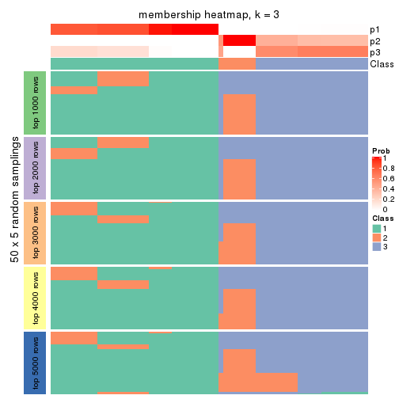
membership_heatmap(res, k = 4)
membership_heatmap(res, k = 5)
membership_heatmap(res, k = 6)
As soon as we have had the classes for columns, we can look for signatures which are significantly different between classes which can be candidate marks for certain classes. Following are the heatmaps for signatures.
Signature heatmaps where rows are scaled:
get_signatures(res, k = 2)
get_signatures(res, k = 3)

get_signatures(res, k = 4)
get_signatures(res, k = 5)
get_signatures(res, k = 6)
Signature heatmaps where rows are not scaled:
get_signatures(res, k = 2, scale_rows = FALSE)

get_signatures(res, k = 3, scale_rows = FALSE)
get_signatures(res, k = 4, scale_rows = FALSE)
get_signatures(res, k = 5, scale_rows = FALSE)
get_signatures(res, k = 6, scale_rows = FALSE)
Compare the overlap of signatures from different k:
compare_signatures(res)
get_signature() returns a data frame invisibly. TO get the list of signatures, the function
call should be assigned to a variable explicitly. In following code, if plot argument is set
to FALSE, no heatmap is plotted while only the differential analysis is performed.
# code only for demonstration
tb = get_signature(res, k = ..., plot = FALSE)
An example of the output of tb is:
#> which_row fdr mean_1 mean_2 scaled_mean_1 scaled_mean_2 km
#> 1 38 0.042760348 8.373488 9.131774 -0.5533452 0.5164555 1
#> 2 40 0.018707592 7.106213 8.469186 -0.6173731 0.5762149 1
#> 3 55 0.019134737 10.221463 11.207825 -0.6159697 0.5749050 1
#> 4 59 0.006059896 5.921854 7.869574 -0.6899429 0.6439467 1
#> 5 60 0.018055526 8.928898 10.211722 -0.6204761 0.5791110 1
#> 6 98 0.009384629 15.714769 14.887706 0.6635654 -0.6193277 2
...
The columns in tb are:
which_row: row indices corresponding to the input matrix.fdr: FDR for the differential test. mean_x: The mean value in group x.scaled_mean_x: The mean value in group x after rows are scaled.km: Row groups if k-means clustering is applied to rows.UMAP plot which shows how samples are separated.
dimension_reduction(res, k = 2, method = "UMAP")

dimension_reduction(res, k = 3, method = "UMAP")
dimension_reduction(res, k = 4, method = "UMAP")
dimension_reduction(res, k = 5, method = "UMAP")
dimension_reduction(res, k = 6, method = "UMAP")
Following heatmap shows how subgroups are split when increasing k:
collect_classes(res)
If matrix rows can be associated to genes, consider to use functional_enrichment(res,
...) to perform function enrichment for the signature genes. See this vignette for more detailed explanations.
The object with results only for a single top-value method and a single partition method can be extracted as:
res = res_list["ATC", "skmeans"]
# you can also extract it by
# res = res_list["ATC:skmeans"]
A summary of res and all the functions that can be applied to it:
res
#> A 'ConsensusPartition' object with k = 2, 3, 4, 5, 6.
#> On a matrix with 14753 rows and 68 columns.
#> Top rows (1000, 2000, 3000, 4000, 5000) are extracted by 'ATC' method.
#> Subgroups are detected by 'skmeans' method.
#> Performed in total 1250 partitions by row resampling.
#> Best k for subgroups seems to be 3.
#>
#> Following methods can be applied to this 'ConsensusPartition' object:
#> [1] "cola_report" "collect_classes" "collect_plots"
#> [4] "collect_stats" "colnames" "compare_signatures"
#> [7] "consensus_heatmap" "dimension_reduction" "functional_enrichment"
#> [10] "get_anno_col" "get_anno" "get_classes"
#> [13] "get_consensus" "get_matrix" "get_membership"
#> [16] "get_param" "get_signatures" "get_stats"
#> [19] "is_best_k" "is_stable_k" "membership_heatmap"
#> [22] "ncol" "nrow" "plot_ecdf"
#> [25] "rownames" "select_partition_number" "show"
#> [28] "suggest_best_k" "test_to_known_factors"
collect_plots() function collects all the plots made from res for all k (number of partitions)
into one single page to provide an easy and fast comparison between different k.
collect_plots(res)
The plots are:
k and the heatmap of
predicted classes for each k.k.k.k.All the plots in panels can be made by individual functions and they are plotted later in this section.
select_partition_number() produces several plots showing different
statistics for choosing “optimized” k. There are following statistics:
k;k, the area increased is defined as \(A_k - A_{k-1}\).The detailed explanations of these statistics can be found in the cola vignette.
Generally speaking, lower PAC score, higher mean silhouette score or higher
concordance corresponds to better partition. Rand index and Jaccard index
measure how similar the current partition is compared to partition with k-1.
If they are too similar, we won't accept k is better than k-1.
select_partition_number(res)
The numeric values for all these statistics can be obtained by get_stats().
get_stats(res)
#> k 1-PAC mean_silhouette concordance area_increased Rand Jaccard
#> 2 2 1.000 1.000 1.000 0.5062 0.494 0.494
#> 3 3 0.941 0.937 0.967 0.2085 0.888 0.774
#> 4 4 0.809 0.888 0.891 0.0915 0.978 0.943
#> 5 5 0.750 0.509 0.773 0.1070 0.985 0.957
#> 6 6 0.790 0.903 0.754 0.0676 0.820 0.485
suggest_best_k() suggests the best \(k\) based on these statistics. The rules are as follows:
suggest_best_k(res)
#> [1] 3
#> attr(,"optional")
#> [1] 2
There is also optional best \(k\) = 2 that is worth to check.
Following shows the table of the partitions (You need to click the show/hide
code output link to see it). The membership matrix (columns with name p*)
is inferred by
clue::cl_consensus()
function with the SE method. Basically the value in the membership matrix
represents the probability to belong to a certain group. The finall class
label for an item is determined with the group with highest probability it
belongs to.
In get_classes() function, the entropy is calculated from the membership
matrix and the silhouette score is calculated from the consensus matrix.
cbind(get_classes(res, k = 2), get_membership(res, k = 2))
#> class entropy silhouette p1 p2
#> SRR562645 1 0 1 1 0
#> SRR562646 1 0 1 1 0
#> SRR562647 1 0 1 1 0
#> SRR562648 1 0 1 1 0
#> SRR562649 1 0 1 1 0
#> SRR567420 1 0 1 1 0
#> SRR567421 1 0 1 1 0
#> SRR567422 1 0 1 1 0
#> SRR567423 1 0 1 1 0
#> SRR567424 1 0 1 1 0
#> SRR567425 1 0 1 1 0
#> SRR567426 1 0 1 1 0
#> SRR567427 1 0 1 1 0
#> SRR567428 1 0 1 1 0
#> SRR567429 1 0 1 1 0
#> SRR567430 1 0 1 1 0
#> SRR567431 1 0 1 1 0
#> SRR567432 1 0 1 1 0
#> SRR567433 1 0 1 1 0
#> SRR567434 1 0 1 1 0
#> SRR567435 1 0 1 1 0
#> SRR567436 1 0 1 1 0
#> SRR567437 1 0 1 1 0
#> SRR567438 1 0 1 1 0
#> SRR567439 1 0 1 1 0
#> SRR567440 2 0 1 0 1
#> SRR567441 2 0 1 0 1
#> SRR567442 2 0 1 0 1
#> SRR567443 2 0 1 0 1
#> SRR567444 2 0 1 0 1
#> SRR567445 1 0 1 1 0
#> SRR567446 1 0 1 1 0
#> SRR567447 1 0 1 1 0
#> SRR567448 1 0 1 1 0
#> SRR567449 1 0 1 1 0
#> SRR567450 2 0 1 0 1
#> SRR567451 2 0 1 0 1
#> SRR567452 2 0 1 0 1
#> SRR567453 2 0 1 0 1
#> SRR567454 2 0 1 0 1
#> SRR567455 2 0 1 0 1
#> SRR567456 2 0 1 0 1
#> SRR567457 1 0 1 1 0
#> SRR567458 1 0 1 1 0
#> SRR567459 1 0 1 1 0
#> SRR567460 1 0 1 1 0
#> SRR567461 1 0 1 1 0
#> SRR567462 2 0 1 0 1
#> SRR567463 2 0 1 0 1
#> SRR567464 2 0 1 0 1
#> SRR567465 2 0 1 0 1
#> SRR567466 2 0 1 0 1
#> SRR567467 2 0 1 0 1
#> SRR567468 2 0 1 0 1
#> SRR567469 2 0 1 0 1
#> SRR567470 2 0 1 0 1
#> SRR567471 2 0 1 0 1
#> SRR835008 1 0 1 1 0
#> SRR835009 2 0 1 0 1
#> SRR835011 2 0 1 0 1
#> SRR835012 2 0 1 0 1
#> SRR835013 2 0 1 0 1
#> SRR835010 2 0 1 0 1
#> SRR835014 2 0 1 0 1
#> SRR835015 2 0 1 0 1
#> SRR835016 2 0 1 0 1
#> SRR835017 2 0 1 0 1
#> SRR835018 2 0 1 0 1
cbind(get_classes(res, k = 3), get_membership(res, k = 3))
#> class entropy silhouette p1 p2 p3
#> SRR562645 1 0.0000 0.998 1.000 0.000 0.000
#> SRR562646 1 0.0000 0.998 1.000 0.000 0.000
#> SRR562647 1 0.0000 0.998 1.000 0.000 0.000
#> SRR562648 1 0.0000 0.998 1.000 0.000 0.000
#> SRR562649 1 0.0000 0.998 1.000 0.000 0.000
#> SRR567420 1 0.0000 0.998 1.000 0.000 0.000
#> SRR567421 1 0.0000 0.998 1.000 0.000 0.000
#> SRR567422 1 0.0000 0.998 1.000 0.000 0.000
#> SRR567423 1 0.0000 0.998 1.000 0.000 0.000
#> SRR567424 1 0.0000 0.998 1.000 0.000 0.000
#> SRR567425 1 0.0000 0.998 1.000 0.000 0.000
#> SRR567426 1 0.0000 0.998 1.000 0.000 0.000
#> SRR567427 1 0.0000 0.998 1.000 0.000 0.000
#> SRR567428 1 0.0000 0.998 1.000 0.000 0.000
#> SRR567429 1 0.0000 0.998 1.000 0.000 0.000
#> SRR567430 1 0.0000 0.998 1.000 0.000 0.000
#> SRR567431 1 0.0000 0.998 1.000 0.000 0.000
#> SRR567432 1 0.0000 0.998 1.000 0.000 0.000
#> SRR567433 1 0.0000 0.998 1.000 0.000 0.000
#> SRR567434 1 0.0000 0.998 1.000 0.000 0.000
#> SRR567435 1 0.0000 0.998 1.000 0.000 0.000
#> SRR567436 1 0.0000 0.998 1.000 0.000 0.000
#> SRR567437 1 0.0000 0.998 1.000 0.000 0.000
#> SRR567438 1 0.0000 0.998 1.000 0.000 0.000
#> SRR567439 1 0.0000 0.998 1.000 0.000 0.000
#> SRR567440 3 0.0424 0.839 0.000 0.008 0.992
#> SRR567441 3 0.0424 0.839 0.000 0.008 0.992
#> SRR567442 3 0.0424 0.839 0.000 0.008 0.992
#> SRR567443 3 0.0424 0.839 0.000 0.008 0.992
#> SRR567444 3 0.0424 0.839 0.000 0.008 0.992
#> SRR567445 1 0.0424 0.995 0.992 0.000 0.008
#> SRR567446 1 0.0424 0.995 0.992 0.000 0.008
#> SRR567447 1 0.0424 0.995 0.992 0.000 0.008
#> SRR567448 1 0.0424 0.995 0.992 0.000 0.008
#> SRR567449 1 0.0424 0.995 0.992 0.000 0.008
#> SRR567450 2 0.0000 1.000 0.000 1.000 0.000
#> SRR567451 2 0.0000 1.000 0.000 1.000 0.000
#> SRR567452 2 0.0000 1.000 0.000 1.000 0.000
#> SRR567453 2 0.0000 1.000 0.000 1.000 0.000
#> SRR567454 2 0.0000 1.000 0.000 1.000 0.000
#> SRR567455 2 0.0000 1.000 0.000 1.000 0.000
#> SRR567456 2 0.0000 1.000 0.000 1.000 0.000
#> SRR567457 1 0.0424 0.995 0.992 0.000 0.008
#> SRR567458 1 0.0424 0.995 0.992 0.000 0.008
#> SRR567459 1 0.0424 0.995 0.992 0.000 0.008
#> SRR567460 1 0.0424 0.995 0.992 0.000 0.008
#> SRR567461 1 0.0424 0.995 0.992 0.000 0.008
#> SRR567462 3 0.0424 0.839 0.000 0.008 0.992
#> SRR567463 3 0.0424 0.839 0.000 0.008 0.992
#> SRR567464 3 0.0424 0.839 0.000 0.008 0.992
#> SRR567465 3 0.0424 0.839 0.000 0.008 0.992
#> SRR567466 3 0.0424 0.839 0.000 0.008 0.992
#> SRR567467 3 0.6192 0.493 0.000 0.420 0.580
#> SRR567468 3 0.6192 0.493 0.000 0.420 0.580
#> SRR567469 3 0.6192 0.493 0.000 0.420 0.580
#> SRR567470 3 0.6192 0.493 0.000 0.420 0.580
#> SRR567471 3 0.6192 0.493 0.000 0.420 0.580
#> SRR835008 1 0.0424 0.995 0.992 0.000 0.008
#> SRR835009 2 0.0000 1.000 0.000 1.000 0.000
#> SRR835011 2 0.0000 1.000 0.000 1.000 0.000
#> SRR835012 2 0.0000 1.000 0.000 1.000 0.000
#> SRR835013 2 0.0000 1.000 0.000 1.000 0.000
#> SRR835010 2 0.0000 1.000 0.000 1.000 0.000
#> SRR835014 2 0.0000 1.000 0.000 1.000 0.000
#> SRR835015 2 0.0000 1.000 0.000 1.000 0.000
#> SRR835016 2 0.0000 1.000 0.000 1.000 0.000
#> SRR835017 2 0.0000 1.000 0.000 1.000 0.000
#> SRR835018 2 0.0000 1.000 0.000 1.000 0.000
cbind(get_classes(res, k = 4), get_membership(res, k = 4))
#> class entropy silhouette p1 p2 p3 p4
#> SRR562645 1 0.1940 0.885 0.924 0.000 0.076 0.000
#> SRR562646 1 0.1940 0.885 0.924 0.000 0.076 0.000
#> SRR562647 1 0.1940 0.885 0.924 0.000 0.076 0.000
#> SRR562648 1 0.1940 0.885 0.924 0.000 0.076 0.000
#> SRR562649 1 0.1940 0.885 0.924 0.000 0.076 0.000
#> SRR567420 1 0.1940 0.885 0.924 0.000 0.076 0.000
#> SRR567421 1 0.1940 0.885 0.924 0.000 0.076 0.000
#> SRR567422 1 0.1940 0.885 0.924 0.000 0.076 0.000
#> SRR567423 1 0.1940 0.885 0.924 0.000 0.076 0.000
#> SRR567424 1 0.1940 0.885 0.924 0.000 0.076 0.000
#> SRR567425 1 0.0000 0.904 1.000 0.000 0.000 0.000
#> SRR567426 1 0.0000 0.904 1.000 0.000 0.000 0.000
#> SRR567427 1 0.0000 0.904 1.000 0.000 0.000 0.000
#> SRR567428 1 0.0000 0.904 1.000 0.000 0.000 0.000
#> SRR567429 1 0.0000 0.904 1.000 0.000 0.000 0.000
#> SRR567430 1 0.0000 0.904 1.000 0.000 0.000 0.000
#> SRR567431 1 0.0000 0.904 1.000 0.000 0.000 0.000
#> SRR567432 1 0.0000 0.904 1.000 0.000 0.000 0.000
#> SRR567433 1 0.0000 0.904 1.000 0.000 0.000 0.000
#> SRR567434 1 0.0000 0.904 1.000 0.000 0.000 0.000
#> SRR567435 1 0.0000 0.904 1.000 0.000 0.000 0.000
#> SRR567436 1 0.0000 0.904 1.000 0.000 0.000 0.000
#> SRR567437 1 0.0000 0.904 1.000 0.000 0.000 0.000
#> SRR567438 1 0.0000 0.904 1.000 0.000 0.000 0.000
#> SRR567439 1 0.0000 0.904 1.000 0.000 0.000 0.000
#> SRR567440 3 0.4972 0.682 0.000 0.000 0.544 0.456
#> SRR567441 3 0.4972 0.682 0.000 0.000 0.544 0.456
#> SRR567442 3 0.4972 0.682 0.000 0.000 0.544 0.456
#> SRR567443 3 0.4972 0.682 0.000 0.000 0.544 0.456
#> SRR567444 3 0.4972 0.682 0.000 0.000 0.544 0.456
#> SRR567445 1 0.3942 0.809 0.764 0.000 0.236 0.000
#> SRR567446 1 0.3942 0.809 0.764 0.000 0.236 0.000
#> SRR567447 1 0.3942 0.809 0.764 0.000 0.236 0.000
#> SRR567448 1 0.3942 0.809 0.764 0.000 0.236 0.000
#> SRR567449 1 0.3942 0.809 0.764 0.000 0.236 0.000
#> SRR567450 2 0.0000 0.999 0.000 1.000 0.000 0.000
#> SRR567451 2 0.0000 0.999 0.000 1.000 0.000 0.000
#> SRR567452 2 0.0000 0.999 0.000 1.000 0.000 0.000
#> SRR567453 2 0.0000 0.999 0.000 1.000 0.000 0.000
#> SRR567454 2 0.0000 0.999 0.000 1.000 0.000 0.000
#> SRR567455 2 0.0000 0.999 0.000 1.000 0.000 0.000
#> SRR567456 2 0.0000 0.999 0.000 1.000 0.000 0.000
#> SRR567457 1 0.3942 0.809 0.764 0.000 0.236 0.000
#> SRR567458 1 0.3942 0.809 0.764 0.000 0.236 0.000
#> SRR567459 1 0.3942 0.809 0.764 0.000 0.236 0.000
#> SRR567460 1 0.3942 0.809 0.764 0.000 0.236 0.000
#> SRR567461 1 0.3942 0.809 0.764 0.000 0.236 0.000
#> SRR567462 4 0.0000 1.000 0.000 0.000 0.000 1.000
#> SRR567463 4 0.0000 1.000 0.000 0.000 0.000 1.000
#> SRR567464 4 0.0000 1.000 0.000 0.000 0.000 1.000
#> SRR567465 4 0.0000 1.000 0.000 0.000 0.000 1.000
#> SRR567466 4 0.0000 1.000 0.000 0.000 0.000 1.000
#> SRR567467 3 0.6594 0.746 0.000 0.140 0.620 0.240
#> SRR567468 3 0.6594 0.746 0.000 0.140 0.620 0.240
#> SRR567469 3 0.6594 0.746 0.000 0.140 0.620 0.240
#> SRR567470 3 0.6594 0.746 0.000 0.140 0.620 0.240
#> SRR567471 3 0.6594 0.746 0.000 0.140 0.620 0.240
#> SRR835008 1 0.4431 0.789 0.696 0.000 0.304 0.000
#> SRR835009 2 0.0188 0.997 0.000 0.996 0.004 0.000
#> SRR835011 2 0.0000 0.999 0.000 1.000 0.000 0.000
#> SRR835012 2 0.0000 0.999 0.000 1.000 0.000 0.000
#> SRR835013 2 0.0000 0.999 0.000 1.000 0.000 0.000
#> SRR835010 2 0.0188 0.997 0.000 0.996 0.004 0.000
#> SRR835014 2 0.0188 0.997 0.000 0.996 0.004 0.000
#> SRR835015 2 0.0188 0.997 0.000 0.996 0.004 0.000
#> SRR835016 2 0.0000 0.999 0.000 1.000 0.000 0.000
#> SRR835017 2 0.0000 0.999 0.000 1.000 0.000 0.000
#> SRR835018 2 0.0000 0.999 0.000 1.000 0.000 0.000
cbind(get_classes(res, k = 5), get_membership(res, k = 5))
#> class entropy silhouette p1 p2 p3 p4 p5
#> SRR562645 1 0.5727 0.248 0.560 0.000 0.100 0.340 0.000
#> SRR562646 1 0.5727 0.248 0.560 0.000 0.100 0.340 0.000
#> SRR562647 1 0.5727 0.248 0.560 0.000 0.100 0.340 0.000
#> SRR562648 1 0.5727 0.248 0.560 0.000 0.100 0.340 0.000
#> SRR562649 1 0.5727 0.248 0.560 0.000 0.100 0.340 0.000
#> SRR567420 1 0.5727 0.248 0.560 0.000 0.100 0.340 0.000
#> SRR567421 1 0.5727 0.248 0.560 0.000 0.100 0.340 0.000
#> SRR567422 1 0.5727 0.248 0.560 0.000 0.100 0.340 0.000
#> SRR567423 1 0.5727 0.248 0.560 0.000 0.100 0.340 0.000
#> SRR567424 1 0.5727 0.248 0.560 0.000 0.100 0.340 0.000
#> SRR567425 1 0.0000 0.471 1.000 0.000 0.000 0.000 0.000
#> SRR567426 1 0.0000 0.471 1.000 0.000 0.000 0.000 0.000
#> SRR567427 1 0.0000 0.471 1.000 0.000 0.000 0.000 0.000
#> SRR567428 1 0.0000 0.471 1.000 0.000 0.000 0.000 0.000
#> SRR567429 1 0.0000 0.471 1.000 0.000 0.000 0.000 0.000
#> SRR567430 1 0.0000 0.471 1.000 0.000 0.000 0.000 0.000
#> SRR567431 1 0.0000 0.471 1.000 0.000 0.000 0.000 0.000
#> SRR567432 1 0.0000 0.471 1.000 0.000 0.000 0.000 0.000
#> SRR567433 1 0.0000 0.471 1.000 0.000 0.000 0.000 0.000
#> SRR567434 1 0.0000 0.471 1.000 0.000 0.000 0.000 0.000
#> SRR567435 1 0.0963 0.469 0.964 0.000 0.000 0.036 0.000
#> SRR567436 1 0.0963 0.469 0.964 0.000 0.000 0.036 0.000
#> SRR567437 1 0.0963 0.469 0.964 0.000 0.000 0.036 0.000
#> SRR567438 1 0.0963 0.469 0.964 0.000 0.000 0.036 0.000
#> SRR567439 1 0.0963 0.469 0.964 0.000 0.000 0.036 0.000
#> SRR567440 3 0.3210 0.731 0.000 0.000 0.788 0.000 0.212
#> SRR567441 3 0.3210 0.731 0.000 0.000 0.788 0.000 0.212
#> SRR567442 3 0.3210 0.731 0.000 0.000 0.788 0.000 0.212
#> SRR567443 3 0.3210 0.731 0.000 0.000 0.788 0.000 0.212
#> SRR567444 3 0.3210 0.731 0.000 0.000 0.788 0.000 0.212
#> SRR567445 1 0.4268 -0.395 0.556 0.000 0.000 0.444 0.000
#> SRR567446 1 0.4268 -0.395 0.556 0.000 0.000 0.444 0.000
#> SRR567447 1 0.4268 -0.395 0.556 0.000 0.000 0.444 0.000
#> SRR567448 1 0.4268 -0.395 0.556 0.000 0.000 0.444 0.000
#> SRR567449 1 0.4268 -0.395 0.556 0.000 0.000 0.444 0.000
#> SRR567450 2 0.1168 0.975 0.000 0.960 0.000 0.032 0.008
#> SRR567451 2 0.1168 0.975 0.000 0.960 0.000 0.032 0.008
#> SRR567452 2 0.1168 0.975 0.000 0.960 0.000 0.032 0.008
#> SRR567453 2 0.1168 0.975 0.000 0.960 0.000 0.032 0.008
#> SRR567454 2 0.1168 0.975 0.000 0.960 0.000 0.032 0.008
#> SRR567455 2 0.1168 0.975 0.000 0.960 0.000 0.032 0.008
#> SRR567456 2 0.1168 0.975 0.000 0.960 0.000 0.032 0.008
#> SRR567457 1 0.4273 -0.403 0.552 0.000 0.000 0.448 0.000
#> SRR567458 1 0.4273 -0.403 0.552 0.000 0.000 0.448 0.000
#> SRR567459 1 0.4273 -0.403 0.552 0.000 0.000 0.448 0.000
#> SRR567460 1 0.4273 -0.403 0.552 0.000 0.000 0.448 0.000
#> SRR567461 1 0.4273 -0.403 0.552 0.000 0.000 0.448 0.000
#> SRR567462 5 0.0404 1.000 0.000 0.000 0.012 0.000 0.988
#> SRR567463 5 0.0404 1.000 0.000 0.000 0.012 0.000 0.988
#> SRR567464 5 0.0404 1.000 0.000 0.000 0.012 0.000 0.988
#> SRR567465 5 0.0404 1.000 0.000 0.000 0.012 0.000 0.988
#> SRR567466 5 0.0404 1.000 0.000 0.000 0.012 0.000 0.988
#> SRR567467 3 0.6365 0.758 0.000 0.100 0.644 0.172 0.084
#> SRR567468 3 0.6365 0.758 0.000 0.100 0.644 0.172 0.084
#> SRR567469 3 0.6365 0.758 0.000 0.100 0.644 0.172 0.084
#> SRR567470 3 0.6365 0.758 0.000 0.100 0.644 0.172 0.084
#> SRR567471 3 0.6365 0.758 0.000 0.100 0.644 0.172 0.084
#> SRR835008 4 0.3983 0.000 0.340 0.000 0.000 0.660 0.000
#> SRR835009 2 0.0771 0.971 0.000 0.976 0.000 0.020 0.004
#> SRR835011 2 0.0000 0.979 0.000 1.000 0.000 0.000 0.000
#> SRR835012 2 0.0000 0.979 0.000 1.000 0.000 0.000 0.000
#> SRR835013 2 0.0000 0.979 0.000 1.000 0.000 0.000 0.000
#> SRR835010 2 0.0771 0.971 0.000 0.976 0.000 0.020 0.004
#> SRR835014 2 0.0771 0.971 0.000 0.976 0.000 0.020 0.004
#> SRR835015 2 0.0771 0.971 0.000 0.976 0.000 0.020 0.004
#> SRR835016 2 0.0000 0.979 0.000 1.000 0.000 0.000 0.000
#> SRR835017 2 0.0000 0.979 0.000 1.000 0.000 0.000 0.000
#> SRR835018 2 0.0000 0.979 0.000 1.000 0.000 0.000 0.000
cbind(get_classes(res, k = 6), get_membership(res, k = 6))
#> class entropy silhouette p1 p2 p3 p4 p5 p6
#> SRR562645 4 0.1267 1.000 0.000 0.000 0.000 0.940 0.000 0.060
#> SRR562646 4 0.1267 1.000 0.000 0.000 0.000 0.940 0.000 0.060
#> SRR562647 4 0.1267 1.000 0.000 0.000 0.000 0.940 0.000 0.060
#> SRR562648 4 0.1267 1.000 0.000 0.000 0.000 0.940 0.000 0.060
#> SRR562649 4 0.1267 1.000 0.000 0.000 0.000 0.940 0.000 0.060
#> SRR567420 4 0.1267 1.000 0.000 0.000 0.000 0.940 0.000 0.060
#> SRR567421 4 0.1267 1.000 0.000 0.000 0.000 0.940 0.000 0.060
#> SRR567422 4 0.1267 1.000 0.000 0.000 0.000 0.940 0.000 0.060
#> SRR567423 4 0.1267 1.000 0.000 0.000 0.000 0.940 0.000 0.060
#> SRR567424 4 0.1267 1.000 0.000 0.000 0.000 0.940 0.000 0.060
#> SRR567425 1 0.6120 0.976 0.364 0.000 0.000 0.316 0.000 0.320
#> SRR567426 1 0.6120 0.976 0.364 0.000 0.000 0.316 0.000 0.320
#> SRR567427 1 0.6120 0.976 0.364 0.000 0.000 0.316 0.000 0.320
#> SRR567428 1 0.6120 0.976 0.364 0.000 0.000 0.316 0.000 0.320
#> SRR567429 1 0.6120 0.976 0.364 0.000 0.000 0.316 0.000 0.320
#> SRR567430 1 0.6120 0.976 0.364 0.000 0.000 0.316 0.000 0.320
#> SRR567431 1 0.6120 0.976 0.364 0.000 0.000 0.316 0.000 0.320
#> SRR567432 1 0.6120 0.976 0.364 0.000 0.000 0.316 0.000 0.320
#> SRR567433 1 0.6120 0.976 0.364 0.000 0.000 0.316 0.000 0.320
#> SRR567434 1 0.6120 0.976 0.364 0.000 0.000 0.316 0.000 0.320
#> SRR567435 1 0.6100 0.949 0.364 0.000 0.000 0.352 0.000 0.284
#> SRR567436 1 0.6100 0.949 0.364 0.000 0.000 0.352 0.000 0.284
#> SRR567437 1 0.6100 0.949 0.364 0.000 0.000 0.352 0.000 0.284
#> SRR567438 1 0.6100 0.949 0.364 0.000 0.000 0.352 0.000 0.284
#> SRR567439 1 0.6100 0.949 0.364 0.000 0.000 0.352 0.000 0.284
#> SRR567440 3 0.5604 0.632 0.404 0.000 0.452 0.000 0.144 0.000
#> SRR567441 3 0.5604 0.632 0.404 0.000 0.452 0.000 0.144 0.000
#> SRR567442 3 0.5604 0.632 0.404 0.000 0.452 0.000 0.144 0.000
#> SRR567443 3 0.5604 0.632 0.404 0.000 0.452 0.000 0.144 0.000
#> SRR567444 3 0.5604 0.632 0.404 0.000 0.452 0.000 0.144 0.000
#> SRR567445 6 0.0146 0.971 0.004 0.000 0.000 0.000 0.000 0.996
#> SRR567446 6 0.0146 0.971 0.004 0.000 0.000 0.000 0.000 0.996
#> SRR567447 6 0.0146 0.971 0.004 0.000 0.000 0.000 0.000 0.996
#> SRR567448 6 0.0146 0.971 0.004 0.000 0.000 0.000 0.000 0.996
#> SRR567449 6 0.0146 0.971 0.004 0.000 0.000 0.000 0.000 0.996
#> SRR567450 2 0.3395 0.876 0.124 0.816 0.000 0.056 0.004 0.000
#> SRR567451 2 0.3395 0.876 0.124 0.816 0.000 0.056 0.004 0.000
#> SRR567452 2 0.3395 0.876 0.124 0.816 0.000 0.056 0.004 0.000
#> SRR567453 2 0.3395 0.876 0.124 0.816 0.000 0.056 0.004 0.000
#> SRR567454 2 0.3395 0.876 0.124 0.816 0.000 0.056 0.004 0.000
#> SRR567455 2 0.3395 0.876 0.124 0.816 0.000 0.056 0.004 0.000
#> SRR567456 2 0.3395 0.876 0.124 0.816 0.000 0.056 0.004 0.000
#> SRR567457 6 0.0000 0.971 0.000 0.000 0.000 0.000 0.000 1.000
#> SRR567458 6 0.0000 0.971 0.000 0.000 0.000 0.000 0.000 1.000
#> SRR567459 6 0.0000 0.971 0.000 0.000 0.000 0.000 0.000 1.000
#> SRR567460 6 0.0000 0.971 0.000 0.000 0.000 0.000 0.000 1.000
#> SRR567461 6 0.0000 0.971 0.000 0.000 0.000 0.000 0.000 1.000
#> SRR567462 5 0.0363 1.000 0.000 0.000 0.012 0.000 0.988 0.000
#> SRR567463 5 0.0363 1.000 0.000 0.000 0.012 0.000 0.988 0.000
#> SRR567464 5 0.0363 1.000 0.000 0.000 0.012 0.000 0.988 0.000
#> SRR567465 5 0.0363 1.000 0.000 0.000 0.012 0.000 0.988 0.000
#> SRR567466 5 0.0363 1.000 0.000 0.000 0.012 0.000 0.988 0.000
#> SRR567467 3 0.0858 0.673 0.000 0.028 0.968 0.000 0.004 0.000
#> SRR567468 3 0.0858 0.673 0.000 0.028 0.968 0.000 0.004 0.000
#> SRR567469 3 0.0858 0.673 0.000 0.028 0.968 0.000 0.004 0.000
#> SRR567470 3 0.0858 0.673 0.000 0.028 0.968 0.000 0.004 0.000
#> SRR567471 3 0.0858 0.673 0.000 0.028 0.968 0.000 0.004 0.000
#> SRR835008 6 0.2805 0.732 0.012 0.000 0.000 0.160 0.000 0.828
#> SRR835009 2 0.2113 0.860 0.092 0.896 0.000 0.004 0.008 0.000
#> SRR835011 2 0.0000 0.899 0.000 1.000 0.000 0.000 0.000 0.000
#> SRR835012 2 0.0000 0.899 0.000 1.000 0.000 0.000 0.000 0.000
#> SRR835013 2 0.0000 0.899 0.000 1.000 0.000 0.000 0.000 0.000
#> SRR835010 2 0.2113 0.860 0.092 0.896 0.000 0.004 0.008 0.000
#> SRR835014 2 0.2113 0.860 0.092 0.896 0.000 0.004 0.008 0.000
#> SRR835015 2 0.2113 0.860 0.092 0.896 0.000 0.004 0.008 0.000
#> SRR835016 2 0.0000 0.899 0.000 1.000 0.000 0.000 0.000 0.000
#> SRR835017 2 0.0000 0.899 0.000 1.000 0.000 0.000 0.000 0.000
#> SRR835018 2 0.0000 0.899 0.000 1.000 0.000 0.000 0.000 0.000
Heatmaps for the consensus matrix. It visualizes the probability of two samples to be in a same group.
consensus_heatmap(res, k = 2)

consensus_heatmap(res, k = 3)
consensus_heatmap(res, k = 4)
consensus_heatmap(res, k = 5)
consensus_heatmap(res, k = 6)

Heatmaps for the membership of samples in all partitions to see how consistent they are:
membership_heatmap(res, k = 2)
membership_heatmap(res, k = 3)
membership_heatmap(res, k = 4)
membership_heatmap(res, k = 5)
membership_heatmap(res, k = 6)
As soon as we have had the classes for columns, we can look for signatures which are significantly different between classes which can be candidate marks for certain classes. Following are the heatmaps for signatures.
Signature heatmaps where rows are scaled:
get_signatures(res, k = 2)
get_signatures(res, k = 3)
get_signatures(res, k = 4)

get_signatures(res, k = 5)
get_signatures(res, k = 6)
Signature heatmaps where rows are not scaled:
get_signatures(res, k = 2, scale_rows = FALSE)
get_signatures(res, k = 3, scale_rows = FALSE)
get_signatures(res, k = 4, scale_rows = FALSE)
get_signatures(res, k = 5, scale_rows = FALSE)
get_signatures(res, k = 6, scale_rows = FALSE)
Compare the overlap of signatures from different k:
compare_signatures(res)
get_signature() returns a data frame invisibly. TO get the list of signatures, the function
call should be assigned to a variable explicitly. In following code, if plot argument is set
to FALSE, no heatmap is plotted while only the differential analysis is performed.
# code only for demonstration
tb = get_signature(res, k = ..., plot = FALSE)
An example of the output of tb is:
#> which_row fdr mean_1 mean_2 scaled_mean_1 scaled_mean_2 km
#> 1 38 0.042760348 8.373488 9.131774 -0.5533452 0.5164555 1
#> 2 40 0.018707592 7.106213 8.469186 -0.6173731 0.5762149 1
#> 3 55 0.019134737 10.221463 11.207825 -0.6159697 0.5749050 1
#> 4 59 0.006059896 5.921854 7.869574 -0.6899429 0.6439467 1
#> 5 60 0.018055526 8.928898 10.211722 -0.6204761 0.5791110 1
#> 6 98 0.009384629 15.714769 14.887706 0.6635654 -0.6193277 2
...
The columns in tb are:
which_row: row indices corresponding to the input matrix.fdr: FDR for the differential test. mean_x: The mean value in group x.scaled_mean_x: The mean value in group x after rows are scaled.km: Row groups if k-means clustering is applied to rows.UMAP plot which shows how samples are separated.
dimension_reduction(res, k = 2, method = "UMAP")
dimension_reduction(res, k = 3, method = "UMAP")
dimension_reduction(res, k = 4, method = "UMAP")
dimension_reduction(res, k = 5, method = "UMAP")
dimension_reduction(res, k = 6, method = "UMAP")
Following heatmap shows how subgroups are split when increasing k:
collect_classes(res)
If matrix rows can be associated to genes, consider to use functional_enrichment(res,
...) to perform function enrichment for the signature genes. See this vignette for more detailed explanations.
The object with results only for a single top-value method and a single partition method can be extracted as:
res = res_list["ATC", "pam"]
# you can also extract it by
# res = res_list["ATC:pam"]
A summary of res and all the functions that can be applied to it:
res
#> A 'ConsensusPartition' object with k = 2, 3, 4, 5, 6.
#> On a matrix with 14753 rows and 68 columns.
#> Top rows (1000, 2000, 3000, 4000, 5000) are extracted by 'ATC' method.
#> Subgroups are detected by 'pam' method.
#> Performed in total 1250 partitions by row resampling.
#> Best k for subgroups seems to be 6.
#>
#> Following methods can be applied to this 'ConsensusPartition' object:
#> [1] "cola_report" "collect_classes" "collect_plots"
#> [4] "collect_stats" "colnames" "compare_signatures"
#> [7] "consensus_heatmap" "dimension_reduction" "functional_enrichment"
#> [10] "get_anno_col" "get_anno" "get_classes"
#> [13] "get_consensus" "get_matrix" "get_membership"
#> [16] "get_param" "get_signatures" "get_stats"
#> [19] "is_best_k" "is_stable_k" "membership_heatmap"
#> [22] "ncol" "nrow" "plot_ecdf"
#> [25] "rownames" "select_partition_number" "show"
#> [28] "suggest_best_k" "test_to_known_factors"
collect_plots() function collects all the plots made from res for all k (number of partitions)
into one single page to provide an easy and fast comparison between different k.
collect_plots(res)

The plots are:
k and the heatmap of
predicted classes for each k.k.k.k.All the plots in panels can be made by individual functions and they are plotted later in this section.
select_partition_number() produces several plots showing different
statistics for choosing “optimized” k. There are following statistics:
k;k, the area increased is defined as \(A_k - A_{k-1}\).The detailed explanations of these statistics can be found in the cola vignette.
Generally speaking, lower PAC score, higher mean silhouette score or higher
concordance corresponds to better partition. Rand index and Jaccard index
measure how similar the current partition is compared to partition with k-1.
If they are too similar, we won't accept k is better than k-1.
select_partition_number(res)
The numeric values for all these statistics can be obtained by get_stats().
get_stats(res)
#> k 1-PAC mean_silhouette concordance area_increased Rand Jaccard
#> 2 2 1.000 0.947 0.978 0.5009 0.494 0.494
#> 3 3 1.000 0.994 0.997 0.1667 0.923 0.845
#> 4 4 1.000 1.000 1.000 0.1101 0.934 0.842
#> 5 5 0.862 0.951 0.954 0.1785 0.886 0.675
#> 6 6 1.000 0.994 0.997 0.0915 0.928 0.695
suggest_best_k() suggests the best \(k\) based on these statistics. The rules are as follows:
suggest_best_k(res)
#> [1] 6
#> attr(,"optional")
#> [1] 2 3 4
There is also optional best \(k\) = 2 3 4 that is worth to check.
Following shows the table of the partitions (You need to click the show/hide
code output link to see it). The membership matrix (columns with name p*)
is inferred by
clue::cl_consensus()
function with the SE method. Basically the value in the membership matrix
represents the probability to belong to a certain group. The finall class
label for an item is determined with the group with highest probability it
belongs to.
In get_classes() function, the entropy is calculated from the membership
matrix and the silhouette score is calculated from the consensus matrix.
cbind(get_classes(res, k = 2), get_membership(res, k = 2))
#> class entropy silhouette p1 p2
#> SRR562645 1 0.000 1.000 1.000 0.000
#> SRR562646 1 0.000 1.000 1.000 0.000
#> SRR562647 1 0.000 1.000 1.000 0.000
#> SRR562648 1 0.000 1.000 1.000 0.000
#> SRR562649 1 0.000 1.000 1.000 0.000
#> SRR567420 1 0.000 1.000 1.000 0.000
#> SRR567421 1 0.000 1.000 1.000 0.000
#> SRR567422 1 0.000 1.000 1.000 0.000
#> SRR567423 1 0.000 1.000 1.000 0.000
#> SRR567424 1 0.000 1.000 1.000 0.000
#> SRR567425 1 0.000 1.000 1.000 0.000
#> SRR567426 1 0.000 1.000 1.000 0.000
#> SRR567427 1 0.000 1.000 1.000 0.000
#> SRR567428 1 0.000 1.000 1.000 0.000
#> SRR567429 1 0.000 1.000 1.000 0.000
#> SRR567430 1 0.000 1.000 1.000 0.000
#> SRR567431 1 0.000 1.000 1.000 0.000
#> SRR567432 1 0.000 1.000 1.000 0.000
#> SRR567433 1 0.000 1.000 1.000 0.000
#> SRR567434 1 0.000 1.000 1.000 0.000
#> SRR567435 1 0.000 1.000 1.000 0.000
#> SRR567436 1 0.000 1.000 1.000 0.000
#> SRR567437 1 0.000 1.000 1.000 0.000
#> SRR567438 1 0.000 1.000 1.000 0.000
#> SRR567439 1 0.000 1.000 1.000 0.000
#> SRR567440 2 0.952 0.462 0.372 0.628
#> SRR567441 2 0.961 0.436 0.384 0.616
#> SRR567442 2 0.969 0.407 0.396 0.604
#> SRR567443 2 0.000 0.950 0.000 1.000
#> SRR567444 2 0.949 0.471 0.368 0.632
#> SRR567445 1 0.000 1.000 1.000 0.000
#> SRR567446 1 0.000 1.000 1.000 0.000
#> SRR567447 1 0.000 1.000 1.000 0.000
#> SRR567448 1 0.000 1.000 1.000 0.000
#> SRR567449 1 0.000 1.000 1.000 0.000
#> SRR567450 2 0.000 0.950 0.000 1.000
#> SRR567451 2 0.000 0.950 0.000 1.000
#> SRR567452 2 0.000 0.950 0.000 1.000
#> SRR567453 2 0.000 0.950 0.000 1.000
#> SRR567454 2 0.000 0.950 0.000 1.000
#> SRR567455 2 0.000 0.950 0.000 1.000
#> SRR567456 2 0.000 0.950 0.000 1.000
#> SRR567457 1 0.000 1.000 1.000 0.000
#> SRR567458 1 0.000 1.000 1.000 0.000
#> SRR567459 1 0.000 1.000 1.000 0.000
#> SRR567460 1 0.000 1.000 1.000 0.000
#> SRR567461 1 0.000 1.000 1.000 0.000
#> SRR567462 2 0.000 0.950 0.000 1.000
#> SRR567463 2 0.000 0.950 0.000 1.000
#> SRR567464 2 0.000 0.950 0.000 1.000
#> SRR567465 2 0.000 0.950 0.000 1.000
#> SRR567466 2 0.000 0.950 0.000 1.000
#> SRR567467 2 0.000 0.950 0.000 1.000
#> SRR567468 2 0.000 0.950 0.000 1.000
#> SRR567469 2 0.000 0.950 0.000 1.000
#> SRR567470 2 0.000 0.950 0.000 1.000
#> SRR567471 2 0.000 0.950 0.000 1.000
#> SRR835008 1 0.000 1.000 1.000 0.000
#> SRR835009 2 0.000 0.950 0.000 1.000
#> SRR835011 2 0.000 0.950 0.000 1.000
#> SRR835012 2 0.000 0.950 0.000 1.000
#> SRR835013 2 0.000 0.950 0.000 1.000
#> SRR835010 2 0.000 0.950 0.000 1.000
#> SRR835014 2 0.000 0.950 0.000 1.000
#> SRR835015 2 0.000 0.950 0.000 1.000
#> SRR835016 2 0.000 0.950 0.000 1.000
#> SRR835017 2 0.000 0.950 0.000 1.000
#> SRR835018 2 0.000 0.950 0.000 1.000
cbind(get_classes(res, k = 3), get_membership(res, k = 3))
#> class entropy silhouette p1 p2 p3
#> SRR562645 1 0.00 1.000 1 0.000 0.000
#> SRR562646 1 0.00 1.000 1 0.000 0.000
#> SRR562647 1 0.00 1.000 1 0.000 0.000
#> SRR562648 1 0.00 1.000 1 0.000 0.000
#> SRR562649 1 0.00 1.000 1 0.000 0.000
#> SRR567420 1 0.00 1.000 1 0.000 0.000
#> SRR567421 1 0.00 1.000 1 0.000 0.000
#> SRR567422 1 0.00 1.000 1 0.000 0.000
#> SRR567423 1 0.00 1.000 1 0.000 0.000
#> SRR567424 1 0.00 1.000 1 0.000 0.000
#> SRR567425 1 0.00 1.000 1 0.000 0.000
#> SRR567426 1 0.00 1.000 1 0.000 0.000
#> SRR567427 1 0.00 1.000 1 0.000 0.000
#> SRR567428 1 0.00 1.000 1 0.000 0.000
#> SRR567429 1 0.00 1.000 1 0.000 0.000
#> SRR567430 1 0.00 1.000 1 0.000 0.000
#> SRR567431 1 0.00 1.000 1 0.000 0.000
#> SRR567432 1 0.00 1.000 1 0.000 0.000
#> SRR567433 1 0.00 1.000 1 0.000 0.000
#> SRR567434 1 0.00 1.000 1 0.000 0.000
#> SRR567435 1 0.00 1.000 1 0.000 0.000
#> SRR567436 1 0.00 1.000 1 0.000 0.000
#> SRR567437 1 0.00 1.000 1 0.000 0.000
#> SRR567438 1 0.00 1.000 1 0.000 0.000
#> SRR567439 1 0.00 1.000 1 0.000 0.000
#> SRR567440 3 0.00 0.992 0 0.000 1.000
#> SRR567441 3 0.00 0.992 0 0.000 1.000
#> SRR567442 3 0.00 0.992 0 0.000 1.000
#> SRR567443 3 0.00 0.992 0 0.000 1.000
#> SRR567444 3 0.00 0.992 0 0.000 1.000
#> SRR567445 1 0.00 1.000 1 0.000 0.000
#> SRR567446 1 0.00 1.000 1 0.000 0.000
#> SRR567447 1 0.00 1.000 1 0.000 0.000
#> SRR567448 1 0.00 1.000 1 0.000 0.000
#> SRR567449 1 0.00 1.000 1 0.000 0.000
#> SRR567450 3 0.00 0.992 0 0.000 1.000
#> SRR567451 3 0.00 0.992 0 0.000 1.000
#> SRR567452 3 0.00 0.992 0 0.000 1.000
#> SRR567453 3 0.00 0.992 0 0.000 1.000
#> SRR567454 3 0.00 0.992 0 0.000 1.000
#> SRR567455 3 0.00 0.992 0 0.000 1.000
#> SRR567456 3 0.00 0.992 0 0.000 1.000
#> SRR567457 1 0.00 1.000 1 0.000 0.000
#> SRR567458 1 0.00 1.000 1 0.000 0.000
#> SRR567459 1 0.00 1.000 1 0.000 0.000
#> SRR567460 1 0.00 1.000 1 0.000 0.000
#> SRR567461 1 0.00 1.000 1 0.000 0.000
#> SRR567462 3 0.00 0.992 0 0.000 1.000
#> SRR567463 3 0.00 0.992 0 0.000 1.000
#> SRR567464 3 0.00 0.992 0 0.000 1.000
#> SRR567465 3 0.00 0.992 0 0.000 1.000
#> SRR567466 3 0.00 0.992 0 0.000 1.000
#> SRR567467 3 0.00 0.992 0 0.000 1.000
#> SRR567468 3 0.00 0.992 0 0.000 1.000
#> SRR567469 3 0.00 0.992 0 0.000 1.000
#> SRR567470 3 0.00 0.992 0 0.000 1.000
#> SRR567471 3 0.00 0.992 0 0.000 1.000
#> SRR835008 1 0.00 1.000 1 0.000 0.000
#> SRR835009 3 0.00 0.992 0 0.000 1.000
#> SRR835011 2 0.00 1.000 0 1.000 0.000
#> SRR835012 2 0.00 1.000 0 1.000 0.000
#> SRR835013 2 0.00 1.000 0 1.000 0.000
#> SRR835010 3 0.00 0.992 0 0.000 1.000
#> SRR835014 2 0.00 1.000 0 1.000 0.000
#> SRR835015 3 0.45 0.756 0 0.196 0.804
#> SRR835016 2 0.00 1.000 0 1.000 0.000
#> SRR835017 2 0.00 1.000 0 1.000 0.000
#> SRR835018 2 0.00 1.000 0 1.000 0.000
cbind(get_classes(res, k = 4), get_membership(res, k = 4))
#> class entropy silhouette p1 p2 p3 p4
#> SRR562645 1 0.0000 1.000 1 0.000 0 0.000
#> SRR562646 1 0.0000 1.000 1 0.000 0 0.000
#> SRR562647 1 0.0000 1.000 1 0.000 0 0.000
#> SRR562648 1 0.0000 1.000 1 0.000 0 0.000
#> SRR562649 1 0.0000 1.000 1 0.000 0 0.000
#> SRR567420 1 0.0000 1.000 1 0.000 0 0.000
#> SRR567421 1 0.0000 1.000 1 0.000 0 0.000
#> SRR567422 1 0.0000 1.000 1 0.000 0 0.000
#> SRR567423 1 0.0000 1.000 1 0.000 0 0.000
#> SRR567424 1 0.0000 1.000 1 0.000 0 0.000
#> SRR567425 1 0.0000 1.000 1 0.000 0 0.000
#> SRR567426 1 0.0000 1.000 1 0.000 0 0.000
#> SRR567427 1 0.0000 1.000 1 0.000 0 0.000
#> SRR567428 1 0.0000 1.000 1 0.000 0 0.000
#> SRR567429 1 0.0000 1.000 1 0.000 0 0.000
#> SRR567430 1 0.0000 1.000 1 0.000 0 0.000
#> SRR567431 1 0.0000 1.000 1 0.000 0 0.000
#> SRR567432 1 0.0000 1.000 1 0.000 0 0.000
#> SRR567433 1 0.0000 1.000 1 0.000 0 0.000
#> SRR567434 1 0.0000 1.000 1 0.000 0 0.000
#> SRR567435 1 0.0000 1.000 1 0.000 0 0.000
#> SRR567436 1 0.0000 1.000 1 0.000 0 0.000
#> SRR567437 1 0.0000 1.000 1 0.000 0 0.000
#> SRR567438 1 0.0000 1.000 1 0.000 0 0.000
#> SRR567439 1 0.0000 1.000 1 0.000 0 0.000
#> SRR567440 3 0.0000 1.000 0 0.000 1 0.000
#> SRR567441 3 0.0000 1.000 0 0.000 1 0.000
#> SRR567442 3 0.0000 1.000 0 0.000 1 0.000
#> SRR567443 3 0.0000 1.000 0 0.000 1 0.000
#> SRR567444 3 0.0000 1.000 0 0.000 1 0.000
#> SRR567445 1 0.0000 1.000 1 0.000 0 0.000
#> SRR567446 1 0.0000 1.000 1 0.000 0 0.000
#> SRR567447 1 0.0000 1.000 1 0.000 0 0.000
#> SRR567448 1 0.0000 1.000 1 0.000 0 0.000
#> SRR567449 1 0.0000 1.000 1 0.000 0 0.000
#> SRR567450 4 0.0000 1.000 0 0.000 0 1.000
#> SRR567451 4 0.0000 1.000 0 0.000 0 1.000
#> SRR567452 4 0.0000 1.000 0 0.000 0 1.000
#> SRR567453 4 0.0000 1.000 0 0.000 0 1.000
#> SRR567454 4 0.0000 1.000 0 0.000 0 1.000
#> SRR567455 4 0.0000 1.000 0 0.000 0 1.000
#> SRR567456 4 0.0000 1.000 0 0.000 0 1.000
#> SRR567457 1 0.0000 1.000 1 0.000 0 0.000
#> SRR567458 1 0.0000 1.000 1 0.000 0 0.000
#> SRR567459 1 0.0000 1.000 1 0.000 0 0.000
#> SRR567460 1 0.0000 1.000 1 0.000 0 0.000
#> SRR567461 1 0.0000 1.000 1 0.000 0 0.000
#> SRR567462 3 0.0000 1.000 0 0.000 1 0.000
#> SRR567463 3 0.0000 1.000 0 0.000 1 0.000
#> SRR567464 3 0.0000 1.000 0 0.000 1 0.000
#> SRR567465 3 0.0000 1.000 0 0.000 1 0.000
#> SRR567466 3 0.0000 1.000 0 0.000 1 0.000
#> SRR567467 3 0.0000 1.000 0 0.000 1 0.000
#> SRR567468 3 0.0000 1.000 0 0.000 1 0.000
#> SRR567469 3 0.0000 1.000 0 0.000 1 0.000
#> SRR567470 3 0.0000 1.000 0 0.000 1 0.000
#> SRR567471 3 0.0000 1.000 0 0.000 1 0.000
#> SRR835008 1 0.0000 1.000 1 0.000 0 0.000
#> SRR835009 4 0.0000 1.000 0 0.000 0 1.000
#> SRR835011 2 0.0000 0.999 0 1.000 0 0.000
#> SRR835012 2 0.0000 0.999 0 1.000 0 0.000
#> SRR835013 2 0.0000 0.999 0 1.000 0 0.000
#> SRR835010 4 0.0000 1.000 0 0.000 0 1.000
#> SRR835014 2 0.0188 0.996 0 0.996 0 0.004
#> SRR835015 4 0.0000 1.000 0 0.000 0 1.000
#> SRR835016 2 0.0000 0.999 0 1.000 0 0.000
#> SRR835017 2 0.0000 0.999 0 1.000 0 0.000
#> SRR835018 2 0.0000 0.999 0 1.000 0 0.000
cbind(get_classes(res, k = 5), get_membership(res, k = 5))
#> class entropy silhouette p1 p2 p3 p4 p5
#> SRR562645 4 0.0703 0.981 0.024 0.000 0 0.976 0.000
#> SRR562646 4 0.0703 0.981 0.024 0.000 0 0.976 0.000
#> SRR562647 4 0.0703 0.981 0.024 0.000 0 0.976 0.000
#> SRR562648 4 0.0703 0.981 0.024 0.000 0 0.976 0.000
#> SRR562649 4 0.0703 0.981 0.024 0.000 0 0.976 0.000
#> SRR567420 4 0.0000 0.981 0.000 0.000 0 1.000 0.000
#> SRR567421 4 0.0000 0.981 0.000 0.000 0 1.000 0.000
#> SRR567422 4 0.0000 0.981 0.000 0.000 0 1.000 0.000
#> SRR567423 4 0.0000 0.981 0.000 0.000 0 1.000 0.000
#> SRR567424 4 0.0000 0.981 0.000 0.000 0 1.000 0.000
#> SRR567425 1 0.3109 0.893 0.800 0.000 0 0.200 0.000
#> SRR567426 1 0.3109 0.893 0.800 0.000 0 0.200 0.000
#> SRR567427 1 0.3109 0.893 0.800 0.000 0 0.200 0.000
#> SRR567428 1 0.3109 0.893 0.800 0.000 0 0.200 0.000
#> SRR567429 1 0.3109 0.893 0.800 0.000 0 0.200 0.000
#> SRR567430 1 0.3109 0.893 0.800 0.000 0 0.200 0.000
#> SRR567431 1 0.3109 0.893 0.800 0.000 0 0.200 0.000
#> SRR567432 1 0.3109 0.893 0.800 0.000 0 0.200 0.000
#> SRR567433 1 0.3109 0.893 0.800 0.000 0 0.200 0.000
#> SRR567434 1 0.3109 0.893 0.800 0.000 0 0.200 0.000
#> SRR567435 1 0.3109 0.893 0.800 0.000 0 0.200 0.000
#> SRR567436 1 0.3109 0.893 0.800 0.000 0 0.200 0.000
#> SRR567437 1 0.3109 0.893 0.800 0.000 0 0.200 0.000
#> SRR567438 1 0.3109 0.893 0.800 0.000 0 0.200 0.000
#> SRR567439 1 0.3109 0.893 0.800 0.000 0 0.200 0.000
#> SRR567440 3 0.0000 1.000 0.000 0.000 1 0.000 0.000
#> SRR567441 3 0.0000 1.000 0.000 0.000 1 0.000 0.000
#> SRR567442 3 0.0000 1.000 0.000 0.000 1 0.000 0.000
#> SRR567443 3 0.0000 1.000 0.000 0.000 1 0.000 0.000
#> SRR567444 3 0.0000 1.000 0.000 0.000 1 0.000 0.000
#> SRR567445 1 0.0000 0.863 1.000 0.000 0 0.000 0.000
#> SRR567446 1 0.0000 0.863 1.000 0.000 0 0.000 0.000
#> SRR567447 1 0.0000 0.863 1.000 0.000 0 0.000 0.000
#> SRR567448 1 0.0000 0.863 1.000 0.000 0 0.000 0.000
#> SRR567449 1 0.0000 0.863 1.000 0.000 0 0.000 0.000
#> SRR567450 5 0.0000 1.000 0.000 0.000 0 0.000 1.000
#> SRR567451 5 0.0000 1.000 0.000 0.000 0 0.000 1.000
#> SRR567452 5 0.0000 1.000 0.000 0.000 0 0.000 1.000
#> SRR567453 5 0.0000 1.000 0.000 0.000 0 0.000 1.000
#> SRR567454 5 0.0000 1.000 0.000 0.000 0 0.000 1.000
#> SRR567455 5 0.0000 1.000 0.000 0.000 0 0.000 1.000
#> SRR567456 5 0.0000 1.000 0.000 0.000 0 0.000 1.000
#> SRR567457 1 0.0000 0.863 1.000 0.000 0 0.000 0.000
#> SRR567458 1 0.0000 0.863 1.000 0.000 0 0.000 0.000
#> SRR567459 1 0.0000 0.863 1.000 0.000 0 0.000 0.000
#> SRR567460 1 0.0000 0.863 1.000 0.000 0 0.000 0.000
#> SRR567461 1 0.0000 0.863 1.000 0.000 0 0.000 0.000
#> SRR567462 3 0.0000 1.000 0.000 0.000 1 0.000 0.000
#> SRR567463 3 0.0000 1.000 0.000 0.000 1 0.000 0.000
#> SRR567464 3 0.0000 1.000 0.000 0.000 1 0.000 0.000
#> SRR567465 3 0.0000 1.000 0.000 0.000 1 0.000 0.000
#> SRR567466 3 0.0000 1.000 0.000 0.000 1 0.000 0.000
#> SRR567467 3 0.0000 1.000 0.000 0.000 1 0.000 0.000
#> SRR567468 3 0.0000 1.000 0.000 0.000 1 0.000 0.000
#> SRR567469 3 0.0000 1.000 0.000 0.000 1 0.000 0.000
#> SRR567470 3 0.0000 1.000 0.000 0.000 1 0.000 0.000
#> SRR567471 3 0.0000 1.000 0.000 0.000 1 0.000 0.000
#> SRR835008 1 0.0000 0.863 1.000 0.000 0 0.000 0.000
#> SRR835009 5 0.0000 1.000 0.000 0.000 0 0.000 1.000
#> SRR835011 2 0.0000 0.999 0.000 1.000 0 0.000 0.000
#> SRR835012 2 0.0000 0.999 0.000 1.000 0 0.000 0.000
#> SRR835013 2 0.0000 0.999 0.000 1.000 0 0.000 0.000
#> SRR835010 5 0.0000 1.000 0.000 0.000 0 0.000 1.000
#> SRR835014 2 0.0162 0.996 0.000 0.996 0 0.000 0.004
#> SRR835015 5 0.0000 1.000 0.000 0.000 0 0.000 1.000
#> SRR835016 2 0.0000 0.999 0.000 1.000 0 0.000 0.000
#> SRR835017 2 0.0000 0.999 0.000 1.000 0 0.000 0.000
#> SRR835018 2 0.0000 0.999 0.000 1.000 0 0.000 0.000
cbind(get_classes(res, k = 6), get_membership(res, k = 6))
#> class entropy silhouette p1 p2 p3 p4 p5 p6
#> SRR562645 4 0.0000 0.974 0.000 0.000 0 1.000 0.000 0
#> SRR562646 4 0.0000 0.974 0.000 0.000 0 1.000 0.000 0
#> SRR562647 4 0.0000 0.974 0.000 0.000 0 1.000 0.000 0
#> SRR562648 4 0.0000 0.974 0.000 0.000 0 1.000 0.000 0
#> SRR562649 4 0.0000 0.974 0.000 0.000 0 1.000 0.000 0
#> SRR567420 4 0.0363 0.973 0.012 0.000 0 0.988 0.000 0
#> SRR567421 4 0.0363 0.973 0.012 0.000 0 0.988 0.000 0
#> SRR567422 4 0.0363 0.973 0.012 0.000 0 0.988 0.000 0
#> SRR567423 4 0.2340 0.818 0.148 0.000 0 0.852 0.000 0
#> SRR567424 4 0.0363 0.973 0.012 0.000 0 0.988 0.000 0
#> SRR567425 1 0.0000 1.000 1.000 0.000 0 0.000 0.000 0
#> SRR567426 1 0.0000 1.000 1.000 0.000 0 0.000 0.000 0
#> SRR567427 1 0.0000 1.000 1.000 0.000 0 0.000 0.000 0
#> SRR567428 1 0.0000 1.000 1.000 0.000 0 0.000 0.000 0
#> SRR567429 1 0.0000 1.000 1.000 0.000 0 0.000 0.000 0
#> SRR567430 1 0.0000 1.000 1.000 0.000 0 0.000 0.000 0
#> SRR567431 1 0.0000 1.000 1.000 0.000 0 0.000 0.000 0
#> SRR567432 1 0.0000 1.000 1.000 0.000 0 0.000 0.000 0
#> SRR567433 1 0.0000 1.000 1.000 0.000 0 0.000 0.000 0
#> SRR567434 1 0.0000 1.000 1.000 0.000 0 0.000 0.000 0
#> SRR567435 1 0.0000 1.000 1.000 0.000 0 0.000 0.000 0
#> SRR567436 1 0.0000 1.000 1.000 0.000 0 0.000 0.000 0
#> SRR567437 1 0.0000 1.000 1.000 0.000 0 0.000 0.000 0
#> SRR567438 1 0.0000 1.000 1.000 0.000 0 0.000 0.000 0
#> SRR567439 1 0.0000 1.000 1.000 0.000 0 0.000 0.000 0
#> SRR567440 3 0.0000 1.000 0.000 0.000 1 0.000 0.000 0
#> SRR567441 3 0.0000 1.000 0.000 0.000 1 0.000 0.000 0
#> SRR567442 3 0.0000 1.000 0.000 0.000 1 0.000 0.000 0
#> SRR567443 3 0.0000 1.000 0.000 0.000 1 0.000 0.000 0
#> SRR567444 3 0.0000 1.000 0.000 0.000 1 0.000 0.000 0
#> SRR567445 6 0.0000 1.000 0.000 0.000 0 0.000 0.000 1
#> SRR567446 6 0.0000 1.000 0.000 0.000 0 0.000 0.000 1
#> SRR567447 6 0.0000 1.000 0.000 0.000 0 0.000 0.000 1
#> SRR567448 6 0.0000 1.000 0.000 0.000 0 0.000 0.000 1
#> SRR567449 6 0.0000 1.000 0.000 0.000 0 0.000 0.000 1
#> SRR567450 5 0.0000 1.000 0.000 0.000 0 0.000 1.000 0
#> SRR567451 5 0.0000 1.000 0.000 0.000 0 0.000 1.000 0
#> SRR567452 5 0.0000 1.000 0.000 0.000 0 0.000 1.000 0
#> SRR567453 5 0.0000 1.000 0.000 0.000 0 0.000 1.000 0
#> SRR567454 5 0.0000 1.000 0.000 0.000 0 0.000 1.000 0
#> SRR567455 5 0.0000 1.000 0.000 0.000 0 0.000 1.000 0
#> SRR567456 5 0.0000 1.000 0.000 0.000 0 0.000 1.000 0
#> SRR567457 6 0.0000 1.000 0.000 0.000 0 0.000 0.000 1
#> SRR567458 6 0.0000 1.000 0.000 0.000 0 0.000 0.000 1
#> SRR567459 6 0.0000 1.000 0.000 0.000 0 0.000 0.000 1
#> SRR567460 6 0.0000 1.000 0.000 0.000 0 0.000 0.000 1
#> SRR567461 6 0.0000 1.000 0.000 0.000 0 0.000 0.000 1
#> SRR567462 3 0.0000 1.000 0.000 0.000 1 0.000 0.000 0
#> SRR567463 3 0.0000 1.000 0.000 0.000 1 0.000 0.000 0
#> SRR567464 3 0.0000 1.000 0.000 0.000 1 0.000 0.000 0
#> SRR567465 3 0.0000 1.000 0.000 0.000 1 0.000 0.000 0
#> SRR567466 3 0.0000 1.000 0.000 0.000 1 0.000 0.000 0
#> SRR567467 3 0.0000 1.000 0.000 0.000 1 0.000 0.000 0
#> SRR567468 3 0.0000 1.000 0.000 0.000 1 0.000 0.000 0
#> SRR567469 3 0.0000 1.000 0.000 0.000 1 0.000 0.000 0
#> SRR567470 3 0.0000 1.000 0.000 0.000 1 0.000 0.000 0
#> SRR567471 3 0.0000 1.000 0.000 0.000 1 0.000 0.000 0
#> SRR835008 6 0.0000 1.000 0.000 0.000 0 0.000 0.000 1
#> SRR835009 5 0.0000 1.000 0.000 0.000 0 0.000 1.000 0
#> SRR835011 2 0.0000 0.999 0.000 1.000 0 0.000 0.000 0
#> SRR835012 2 0.0000 0.999 0.000 1.000 0 0.000 0.000 0
#> SRR835013 2 0.0000 0.999 0.000 1.000 0 0.000 0.000 0
#> SRR835010 5 0.0000 1.000 0.000 0.000 0 0.000 1.000 0
#> SRR835014 2 0.0146 0.996 0.000 0.996 0 0.000 0.004 0
#> SRR835015 5 0.0000 1.000 0.000 0.000 0 0.000 1.000 0
#> SRR835016 2 0.0000 0.999 0.000 1.000 0 0.000 0.000 0
#> SRR835017 2 0.0000 0.999 0.000 1.000 0 0.000 0.000 0
#> SRR835018 2 0.0000 0.999 0.000 1.000 0 0.000 0.000 0
Heatmaps for the consensus matrix. It visualizes the probability of two samples to be in a same group.
consensus_heatmap(res, k = 2)
consensus_heatmap(res, k = 3)
consensus_heatmap(res, k = 4)
consensus_heatmap(res, k = 5)
consensus_heatmap(res, k = 6)
Heatmaps for the membership of samples in all partitions to see how consistent they are:
membership_heatmap(res, k = 2)

membership_heatmap(res, k = 3)
membership_heatmap(res, k = 4)
membership_heatmap(res, k = 5)
membership_heatmap(res, k = 6)
As soon as we have had the classes for columns, we can look for signatures which are significantly different between classes which can be candidate marks for certain classes. Following are the heatmaps for signatures.
Signature heatmaps where rows are scaled:
get_signatures(res, k = 2)
get_signatures(res, k = 3)
get_signatures(res, k = 4)

get_signatures(res, k = 5)
get_signatures(res, k = 6)
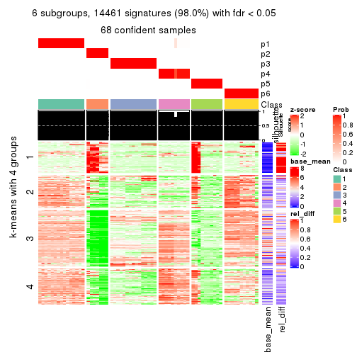
Signature heatmaps where rows are not scaled:
get_signatures(res, k = 2, scale_rows = FALSE)
get_signatures(res, k = 3, scale_rows = FALSE)
get_signatures(res, k = 4, scale_rows = FALSE)
get_signatures(res, k = 5, scale_rows = FALSE)
get_signatures(res, k = 6, scale_rows = FALSE)
Compare the overlap of signatures from different k:
compare_signatures(res)
get_signature() returns a data frame invisibly. TO get the list of signatures, the function
call should be assigned to a variable explicitly. In following code, if plot argument is set
to FALSE, no heatmap is plotted while only the differential analysis is performed.
# code only for demonstration
tb = get_signature(res, k = ..., plot = FALSE)
An example of the output of tb is:
#> which_row fdr mean_1 mean_2 scaled_mean_1 scaled_mean_2 km
#> 1 38 0.042760348 8.373488 9.131774 -0.5533452 0.5164555 1
#> 2 40 0.018707592 7.106213 8.469186 -0.6173731 0.5762149 1
#> 3 55 0.019134737 10.221463 11.207825 -0.6159697 0.5749050 1
#> 4 59 0.006059896 5.921854 7.869574 -0.6899429 0.6439467 1
#> 5 60 0.018055526 8.928898 10.211722 -0.6204761 0.5791110 1
#> 6 98 0.009384629 15.714769 14.887706 0.6635654 -0.6193277 2
...
The columns in tb are:
which_row: row indices corresponding to the input matrix.fdr: FDR for the differential test. mean_x: The mean value in group x.scaled_mean_x: The mean value in group x after rows are scaled.km: Row groups if k-means clustering is applied to rows.UMAP plot which shows how samples are separated.
dimension_reduction(res, k = 2, method = "UMAP")
dimension_reduction(res, k = 3, method = "UMAP")
dimension_reduction(res, k = 4, method = "UMAP")
dimension_reduction(res, k = 5, method = "UMAP")
dimension_reduction(res, k = 6, method = "UMAP")
Following heatmap shows how subgroups are split when increasing k:
collect_classes(res)
If matrix rows can be associated to genes, consider to use functional_enrichment(res,
...) to perform function enrichment for the signature genes. See this vignette for more detailed explanations.
The object with results only for a single top-value method and a single partition method can be extracted as:
res = res_list["ATC", "mclust"]
# you can also extract it by
# res = res_list["ATC:mclust"]
A summary of res and all the functions that can be applied to it:
res
#> A 'ConsensusPartition' object with k = 2, 3, 4, 5, 6.
#> On a matrix with 14753 rows and 68 columns.
#> Top rows (1000, 2000, 3000, 4000, 5000) are extracted by 'ATC' method.
#> Subgroups are detected by 'mclust' method.
#> Performed in total 1250 partitions by row resampling.
#> Best k for subgroups seems to be 6.
#>
#> Following methods can be applied to this 'ConsensusPartition' object:
#> [1] "cola_report" "collect_classes" "collect_plots"
#> [4] "collect_stats" "colnames" "compare_signatures"
#> [7] "consensus_heatmap" "dimension_reduction" "functional_enrichment"
#> [10] "get_anno_col" "get_anno" "get_classes"
#> [13] "get_consensus" "get_matrix" "get_membership"
#> [16] "get_param" "get_signatures" "get_stats"
#> [19] "is_best_k" "is_stable_k" "membership_heatmap"
#> [22] "ncol" "nrow" "plot_ecdf"
#> [25] "rownames" "select_partition_number" "show"
#> [28] "suggest_best_k" "test_to_known_factors"
collect_plots() function collects all the plots made from res for all k (number of partitions)
into one single page to provide an easy and fast comparison between different k.
collect_plots(res)
The plots are:
k and the heatmap of
predicted classes for each k.k.k.k.All the plots in panels can be made by individual functions and they are plotted later in this section.
select_partition_number() produces several plots showing different
statistics for choosing “optimized” k. There are following statistics:
k;k, the area increased is defined as \(A_k - A_{k-1}\).The detailed explanations of these statistics can be found in the cola vignette.
Generally speaking, lower PAC score, higher mean silhouette score or higher
concordance corresponds to better partition. Rand index and Jaccard index
measure how similar the current partition is compared to partition with k-1.
If they are too similar, we won't accept k is better than k-1.
select_partition_number(res)
The numeric values for all these statistics can be obtained by get_stats().
get_stats(res)
#> k 1-PAC mean_silhouette concordance area_increased Rand Jaccard
#> 2 2 0.836 0.953 0.976 0.4824 0.508 0.508
#> 3 3 0.701 0.925 0.909 0.3082 0.712 0.498
#> 4 4 1.000 1.000 1.000 0.1739 0.908 0.738
#> 5 5 1.000 1.000 1.000 0.0651 0.952 0.814
#> 6 6 0.948 0.980 0.948 0.0440 0.954 0.782
suggest_best_k() suggests the best \(k\) based on these statistics. The rules are as follows:
suggest_best_k(res)
#> [1] 6
#> attr(,"optional")
#> [1] 4 5
There is also optional best \(k\) = 4 5 that is worth to check.
Following shows the table of the partitions (You need to click the show/hide
code output link to see it). The membership matrix (columns with name p*)
is inferred by
clue::cl_consensus()
function with the SE method. Basically the value in the membership matrix
represents the probability to belong to a certain group. The finall class
label for an item is determined with the group with highest probability it
belongs to.
In get_classes() function, the entropy is calculated from the membership
matrix and the silhouette score is calculated from the consensus matrix.
cbind(get_classes(res, k = 2), get_membership(res, k = 2))
#> class entropy silhouette p1 p2
#> SRR562645 1 0.0000 0.993 1.000 0.000
#> SRR562646 1 0.0000 0.993 1.000 0.000
#> SRR562647 1 0.0000 0.993 1.000 0.000
#> SRR562648 1 0.0000 0.993 1.000 0.000
#> SRR562649 1 0.0000 0.993 1.000 0.000
#> SRR567420 1 0.0000 0.993 1.000 0.000
#> SRR567421 1 0.0000 0.993 1.000 0.000
#> SRR567422 1 0.0000 0.993 1.000 0.000
#> SRR567423 1 0.0000 0.993 1.000 0.000
#> SRR567424 1 0.0000 0.993 1.000 0.000
#> SRR567425 1 0.0000 0.993 1.000 0.000
#> SRR567426 1 0.0000 0.993 1.000 0.000
#> SRR567427 1 0.0000 0.993 1.000 0.000
#> SRR567428 1 0.0000 0.993 1.000 0.000
#> SRR567429 1 0.0000 0.993 1.000 0.000
#> SRR567430 1 0.0000 0.993 1.000 0.000
#> SRR567431 1 0.0000 0.993 1.000 0.000
#> SRR567432 1 0.0000 0.993 1.000 0.000
#> SRR567433 1 0.0000 0.993 1.000 0.000
#> SRR567434 1 0.0000 0.993 1.000 0.000
#> SRR567435 1 0.0000 0.993 1.000 0.000
#> SRR567436 1 0.0000 0.993 1.000 0.000
#> SRR567437 1 0.0000 0.993 1.000 0.000
#> SRR567438 1 0.0000 0.993 1.000 0.000
#> SRR567439 1 0.0000 0.993 1.000 0.000
#> SRR567440 2 0.0000 0.946 0.000 1.000
#> SRR567441 2 0.0000 0.946 0.000 1.000
#> SRR567442 2 0.0000 0.946 0.000 1.000
#> SRR567443 2 0.0000 0.946 0.000 1.000
#> SRR567444 2 0.0000 0.946 0.000 1.000
#> SRR567445 1 0.0000 0.993 1.000 0.000
#> SRR567446 1 0.0000 0.993 1.000 0.000
#> SRR567447 1 0.0000 0.993 1.000 0.000
#> SRR567448 1 0.0000 0.993 1.000 0.000
#> SRR567449 1 0.0000 0.993 1.000 0.000
#> SRR567450 2 0.0000 0.946 0.000 1.000
#> SRR567451 2 0.0000 0.946 0.000 1.000
#> SRR567452 2 0.0000 0.946 0.000 1.000
#> SRR567453 2 0.0000 0.946 0.000 1.000
#> SRR567454 2 0.0000 0.946 0.000 1.000
#> SRR567455 2 0.0000 0.946 0.000 1.000
#> SRR567456 2 0.0000 0.946 0.000 1.000
#> SRR567457 1 0.0000 0.993 1.000 0.000
#> SRR567458 1 0.0000 0.993 1.000 0.000
#> SRR567459 1 0.0000 0.993 1.000 0.000
#> SRR567460 1 0.0000 0.993 1.000 0.000
#> SRR567461 1 0.0000 0.993 1.000 0.000
#> SRR567462 2 0.0000 0.946 0.000 1.000
#> SRR567463 2 0.0000 0.946 0.000 1.000
#> SRR567464 2 0.0000 0.946 0.000 1.000
#> SRR567465 2 0.0000 0.946 0.000 1.000
#> SRR567466 2 0.0000 0.946 0.000 1.000
#> SRR567467 2 0.0000 0.946 0.000 1.000
#> SRR567468 2 0.0000 0.946 0.000 1.000
#> SRR567469 2 0.0000 0.946 0.000 1.000
#> SRR567470 2 0.0000 0.946 0.000 1.000
#> SRR567471 2 0.0000 0.946 0.000 1.000
#> SRR835008 1 0.4298 0.899 0.912 0.088
#> SRR835009 1 0.3431 0.931 0.936 0.064
#> SRR835011 2 0.7815 0.751 0.232 0.768
#> SRR835012 2 0.7815 0.751 0.232 0.768
#> SRR835013 2 0.7815 0.751 0.232 0.768
#> SRR835010 1 0.3431 0.931 0.936 0.064
#> SRR835014 1 0.1184 0.980 0.984 0.016
#> SRR835015 1 0.0672 0.986 0.992 0.008
#> SRR835016 2 0.7815 0.751 0.232 0.768
#> SRR835017 2 0.7815 0.751 0.232 0.768
#> SRR835018 2 0.7815 0.751 0.232 0.768
cbind(get_classes(res, k = 3), get_membership(res, k = 3))
#> class entropy silhouette p1 p2 p3
#> SRR562645 2 0.525 0.877 0.264 0.736 0.000
#> SRR562646 2 0.525 0.877 0.264 0.736 0.000
#> SRR562647 2 0.525 0.877 0.264 0.736 0.000
#> SRR562648 2 0.525 0.877 0.264 0.736 0.000
#> SRR562649 2 0.525 0.877 0.264 0.736 0.000
#> SRR567420 2 0.525 0.877 0.264 0.736 0.000
#> SRR567421 2 0.525 0.877 0.264 0.736 0.000
#> SRR567422 2 0.525 0.877 0.264 0.736 0.000
#> SRR567423 2 0.525 0.877 0.264 0.736 0.000
#> SRR567424 2 0.525 0.877 0.264 0.736 0.000
#> SRR567425 1 0.000 1.000 1.000 0.000 0.000
#> SRR567426 1 0.000 1.000 1.000 0.000 0.000
#> SRR567427 1 0.000 1.000 1.000 0.000 0.000
#> SRR567428 1 0.000 1.000 1.000 0.000 0.000
#> SRR567429 1 0.000 1.000 1.000 0.000 0.000
#> SRR567430 1 0.000 1.000 1.000 0.000 0.000
#> SRR567431 1 0.000 1.000 1.000 0.000 0.000
#> SRR567432 1 0.000 1.000 1.000 0.000 0.000
#> SRR567433 1 0.000 1.000 1.000 0.000 0.000
#> SRR567434 1 0.000 1.000 1.000 0.000 0.000
#> SRR567435 1 0.000 1.000 1.000 0.000 0.000
#> SRR567436 1 0.000 1.000 1.000 0.000 0.000
#> SRR567437 1 0.000 1.000 1.000 0.000 0.000
#> SRR567438 1 0.000 1.000 1.000 0.000 0.000
#> SRR567439 1 0.000 1.000 1.000 0.000 0.000
#> SRR567440 3 0.000 1.000 0.000 0.000 1.000
#> SRR567441 3 0.000 1.000 0.000 0.000 1.000
#> SRR567442 3 0.000 1.000 0.000 0.000 1.000
#> SRR567443 3 0.000 1.000 0.000 0.000 1.000
#> SRR567444 3 0.000 1.000 0.000 0.000 1.000
#> SRR567445 2 0.518 0.877 0.256 0.744 0.000
#> SRR567446 2 0.518 0.877 0.256 0.744 0.000
#> SRR567447 2 0.518 0.877 0.256 0.744 0.000
#> SRR567448 2 0.518 0.877 0.256 0.744 0.000
#> SRR567449 2 0.518 0.877 0.256 0.744 0.000
#> SRR567450 3 0.000 1.000 0.000 0.000 1.000
#> SRR567451 3 0.000 1.000 0.000 0.000 1.000
#> SRR567452 3 0.000 1.000 0.000 0.000 1.000
#> SRR567453 3 0.000 1.000 0.000 0.000 1.000
#> SRR567454 3 0.000 1.000 0.000 0.000 1.000
#> SRR567455 3 0.000 1.000 0.000 0.000 1.000
#> SRR567456 3 0.000 1.000 0.000 0.000 1.000
#> SRR567457 2 0.525 0.877 0.264 0.736 0.000
#> SRR567458 2 0.525 0.877 0.264 0.736 0.000
#> SRR567459 2 0.525 0.877 0.264 0.736 0.000
#> SRR567460 2 0.525 0.877 0.264 0.736 0.000
#> SRR567461 2 0.525 0.877 0.264 0.736 0.000
#> SRR567462 3 0.000 1.000 0.000 0.000 1.000
#> SRR567463 3 0.000 1.000 0.000 0.000 1.000
#> SRR567464 3 0.000 1.000 0.000 0.000 1.000
#> SRR567465 3 0.000 1.000 0.000 0.000 1.000
#> SRR567466 3 0.000 1.000 0.000 0.000 1.000
#> SRR567467 3 0.000 1.000 0.000 0.000 1.000
#> SRR567468 3 0.000 1.000 0.000 0.000 1.000
#> SRR567469 3 0.000 1.000 0.000 0.000 1.000
#> SRR567470 3 0.000 1.000 0.000 0.000 1.000
#> SRR567471 3 0.000 1.000 0.000 0.000 1.000
#> SRR835008 2 0.460 0.854 0.204 0.796 0.000
#> SRR835009 2 0.000 0.753 0.000 1.000 0.000
#> SRR835011 2 0.375 0.744 0.000 0.856 0.144
#> SRR835012 2 0.375 0.744 0.000 0.856 0.144
#> SRR835013 2 0.375 0.744 0.000 0.856 0.144
#> SRR835010 2 0.000 0.753 0.000 1.000 0.000
#> SRR835014 2 0.000 0.753 0.000 1.000 0.000
#> SRR835015 2 0.000 0.753 0.000 1.000 0.000
#> SRR835016 2 0.375 0.744 0.000 0.856 0.144
#> SRR835017 2 0.375 0.744 0.000 0.856 0.144
#> SRR835018 2 0.375 0.744 0.000 0.856 0.144
cbind(get_classes(res, k = 4), get_membership(res, k = 4))
#> class entropy silhouette p1 p2 p3 p4
#> SRR562645 4 0 1 0 0 0 1
#> SRR562646 4 0 1 0 0 0 1
#> SRR562647 4 0 1 0 0 0 1
#> SRR562648 4 0 1 0 0 0 1
#> SRR562649 4 0 1 0 0 0 1
#> SRR567420 4 0 1 0 0 0 1
#> SRR567421 4 0 1 0 0 0 1
#> SRR567422 4 0 1 0 0 0 1
#> SRR567423 4 0 1 0 0 0 1
#> SRR567424 4 0 1 0 0 0 1
#> SRR567425 1 0 1 1 0 0 0
#> SRR567426 1 0 1 1 0 0 0
#> SRR567427 1 0 1 1 0 0 0
#> SRR567428 1 0 1 1 0 0 0
#> SRR567429 1 0 1 1 0 0 0
#> SRR567430 1 0 1 1 0 0 0
#> SRR567431 1 0 1 1 0 0 0
#> SRR567432 1 0 1 1 0 0 0
#> SRR567433 1 0 1 1 0 0 0
#> SRR567434 1 0 1 1 0 0 0
#> SRR567435 1 0 1 1 0 0 0
#> SRR567436 1 0 1 1 0 0 0
#> SRR567437 1 0 1 1 0 0 0
#> SRR567438 1 0 1 1 0 0 0
#> SRR567439 1 0 1 1 0 0 0
#> SRR567440 3 0 1 0 0 1 0
#> SRR567441 3 0 1 0 0 1 0
#> SRR567442 3 0 1 0 0 1 0
#> SRR567443 3 0 1 0 0 1 0
#> SRR567444 3 0 1 0 0 1 0
#> SRR567445 2 0 1 0 1 0 0
#> SRR567446 2 0 1 0 1 0 0
#> SRR567447 2 0 1 0 1 0 0
#> SRR567448 2 0 1 0 1 0 0
#> SRR567449 2 0 1 0 1 0 0
#> SRR567450 3 0 1 0 0 1 0
#> SRR567451 3 0 1 0 0 1 0
#> SRR567452 3 0 1 0 0 1 0
#> SRR567453 3 0 1 0 0 1 0
#> SRR567454 3 0 1 0 0 1 0
#> SRR567455 3 0 1 0 0 1 0
#> SRR567456 3 0 1 0 0 1 0
#> SRR567457 2 0 1 0 1 0 0
#> SRR567458 2 0 1 0 1 0 0
#> SRR567459 2 0 1 0 1 0 0
#> SRR567460 2 0 1 0 1 0 0
#> SRR567461 2 0 1 0 1 0 0
#> SRR567462 3 0 1 0 0 1 0
#> SRR567463 3 0 1 0 0 1 0
#> SRR567464 3 0 1 0 0 1 0
#> SRR567465 3 0 1 0 0 1 0
#> SRR567466 3 0 1 0 0 1 0
#> SRR567467 3 0 1 0 0 1 0
#> SRR567468 3 0 1 0 0 1 0
#> SRR567469 3 0 1 0 0 1 0
#> SRR567470 3 0 1 0 0 1 0
#> SRR567471 3 0 1 0 0 1 0
#> SRR835008 2 0 1 0 1 0 0
#> SRR835009 2 0 1 0 1 0 0
#> SRR835011 2 0 1 0 1 0 0
#> SRR835012 2 0 1 0 1 0 0
#> SRR835013 2 0 1 0 1 0 0
#> SRR835010 2 0 1 0 1 0 0
#> SRR835014 2 0 1 0 1 0 0
#> SRR835015 2 0 1 0 1 0 0
#> SRR835016 2 0 1 0 1 0 0
#> SRR835017 2 0 1 0 1 0 0
#> SRR835018 2 0 1 0 1 0 0
cbind(get_classes(res, k = 5), get_membership(res, k = 5))
#> class entropy silhouette p1 p2 p3 p4 p5
#> SRR562645 4 0.0000 1.000 0 0 0.000 1 0.000
#> SRR562646 4 0.0000 1.000 0 0 0.000 1 0.000
#> SRR562647 4 0.0000 1.000 0 0 0.000 1 0.000
#> SRR562648 4 0.0000 1.000 0 0 0.000 1 0.000
#> SRR562649 4 0.0000 1.000 0 0 0.000 1 0.000
#> SRR567420 4 0.0000 1.000 0 0 0.000 1 0.000
#> SRR567421 4 0.0000 1.000 0 0 0.000 1 0.000
#> SRR567422 4 0.0000 1.000 0 0 0.000 1 0.000
#> SRR567423 4 0.0000 1.000 0 0 0.000 1 0.000
#> SRR567424 4 0.0000 1.000 0 0 0.000 1 0.000
#> SRR567425 1 0.0000 1.000 1 0 0.000 0 0.000
#> SRR567426 1 0.0000 1.000 1 0 0.000 0 0.000
#> SRR567427 1 0.0000 1.000 1 0 0.000 0 0.000
#> SRR567428 1 0.0000 1.000 1 0 0.000 0 0.000
#> SRR567429 1 0.0000 1.000 1 0 0.000 0 0.000
#> SRR567430 1 0.0000 1.000 1 0 0.000 0 0.000
#> SRR567431 1 0.0000 1.000 1 0 0.000 0 0.000
#> SRR567432 1 0.0000 1.000 1 0 0.000 0 0.000
#> SRR567433 1 0.0000 1.000 1 0 0.000 0 0.000
#> SRR567434 1 0.0000 1.000 1 0 0.000 0 0.000
#> SRR567435 1 0.0000 1.000 1 0 0.000 0 0.000
#> SRR567436 1 0.0000 1.000 1 0 0.000 0 0.000
#> SRR567437 1 0.0000 1.000 1 0 0.000 0 0.000
#> SRR567438 1 0.0000 1.000 1 0 0.000 0 0.000
#> SRR567439 1 0.0000 1.000 1 0 0.000 0 0.000
#> SRR567440 3 0.0000 1.000 0 0 1.000 0 0.000
#> SRR567441 3 0.0000 1.000 0 0 1.000 0 0.000
#> SRR567442 3 0.0000 1.000 0 0 1.000 0 0.000
#> SRR567443 3 0.0000 1.000 0 0 1.000 0 0.000
#> SRR567444 3 0.0000 1.000 0 0 1.000 0 0.000
#> SRR567445 5 0.0000 0.999 0 0 0.000 0 1.000
#> SRR567446 5 0.0000 0.999 0 0 0.000 0 1.000
#> SRR567447 5 0.0000 0.999 0 0 0.000 0 1.000
#> SRR567448 5 0.0000 0.999 0 0 0.000 0 1.000
#> SRR567449 5 0.0000 0.999 0 0 0.000 0 1.000
#> SRR567450 3 0.0000 1.000 0 0 1.000 0 0.000
#> SRR567451 3 0.0000 1.000 0 0 1.000 0 0.000
#> SRR567452 3 0.0000 1.000 0 0 1.000 0 0.000
#> SRR567453 3 0.0000 1.000 0 0 1.000 0 0.000
#> SRR567454 3 0.0000 1.000 0 0 1.000 0 0.000
#> SRR567455 3 0.0000 1.000 0 0 1.000 0 0.000
#> SRR567456 3 0.0000 1.000 0 0 1.000 0 0.000
#> SRR567457 5 0.0000 0.999 0 0 0.000 0 1.000
#> SRR567458 5 0.0000 0.999 0 0 0.000 0 1.000
#> SRR567459 5 0.0000 0.999 0 0 0.000 0 1.000
#> SRR567460 5 0.0000 0.999 0 0 0.000 0 1.000
#> SRR567461 5 0.0000 0.999 0 0 0.000 0 1.000
#> SRR567462 3 0.0000 1.000 0 0 1.000 0 0.000
#> SRR567463 3 0.0000 1.000 0 0 1.000 0 0.000
#> SRR567464 3 0.0000 1.000 0 0 1.000 0 0.000
#> SRR567465 3 0.0000 1.000 0 0 1.000 0 0.000
#> SRR567466 3 0.0000 1.000 0 0 1.000 0 0.000
#> SRR567467 3 0.0000 1.000 0 0 1.000 0 0.000
#> SRR567468 3 0.0000 1.000 0 0 1.000 0 0.000
#> SRR567469 3 0.0000 1.000 0 0 1.000 0 0.000
#> SRR567470 3 0.0000 1.000 0 0 1.000 0 0.000
#> SRR567471 3 0.0000 1.000 0 0 1.000 0 0.000
#> SRR835008 5 0.0162 0.995 0 0 0.004 0 0.996
#> SRR835009 2 0.0000 1.000 0 1 0.000 0 0.000
#> SRR835011 2 0.0000 1.000 0 1 0.000 0 0.000
#> SRR835012 2 0.0000 1.000 0 1 0.000 0 0.000
#> SRR835013 2 0.0000 1.000 0 1 0.000 0 0.000
#> SRR835010 2 0.0000 1.000 0 1 0.000 0 0.000
#> SRR835014 2 0.0000 1.000 0 1 0.000 0 0.000
#> SRR835015 2 0.0000 1.000 0 1 0.000 0 0.000
#> SRR835016 2 0.0000 1.000 0 1 0.000 0 0.000
#> SRR835017 2 0.0000 1.000 0 1 0.000 0 0.000
#> SRR835018 2 0.0000 1.000 0 1 0.000 0 0.000
cbind(get_classes(res, k = 6), get_membership(res, k = 6))
#> class entropy silhouette p1 p2 p3 p4 p5 p6
#> SRR562645 4 0.0000 1.000 0 0.00 0.000 1 0.00 0.000
#> SRR562646 4 0.0000 1.000 0 0.00 0.000 1 0.00 0.000
#> SRR562647 4 0.0000 1.000 0 0.00 0.000 1 0.00 0.000
#> SRR562648 4 0.0000 1.000 0 0.00 0.000 1 0.00 0.000
#> SRR562649 4 0.0000 1.000 0 0.00 0.000 1 0.00 0.000
#> SRR567420 4 0.0000 1.000 0 0.00 0.000 1 0.00 0.000
#> SRR567421 4 0.0000 1.000 0 0.00 0.000 1 0.00 0.000
#> SRR567422 4 0.0000 1.000 0 0.00 0.000 1 0.00 0.000
#> SRR567423 4 0.0000 1.000 0 0.00 0.000 1 0.00 0.000
#> SRR567424 4 0.0000 1.000 0 0.00 0.000 1 0.00 0.000
#> SRR567425 1 0.0000 1.000 1 0.00 0.000 0 0.00 0.000
#> SRR567426 1 0.0000 1.000 1 0.00 0.000 0 0.00 0.000
#> SRR567427 1 0.0000 1.000 1 0.00 0.000 0 0.00 0.000
#> SRR567428 1 0.0000 1.000 1 0.00 0.000 0 0.00 0.000
#> SRR567429 1 0.0000 1.000 1 0.00 0.000 0 0.00 0.000
#> SRR567430 1 0.0000 1.000 1 0.00 0.000 0 0.00 0.000
#> SRR567431 1 0.0000 1.000 1 0.00 0.000 0 0.00 0.000
#> SRR567432 1 0.0000 1.000 1 0.00 0.000 0 0.00 0.000
#> SRR567433 1 0.0000 1.000 1 0.00 0.000 0 0.00 0.000
#> SRR567434 1 0.0000 1.000 1 0.00 0.000 0 0.00 0.000
#> SRR567435 1 0.0000 1.000 1 0.00 0.000 0 0.00 0.000
#> SRR567436 1 0.0000 1.000 1 0.00 0.000 0 0.00 0.000
#> SRR567437 1 0.0000 1.000 1 0.00 0.000 0 0.00 0.000
#> SRR567438 1 0.0000 1.000 1 0.00 0.000 0 0.00 0.000
#> SRR567439 1 0.0000 1.000 1 0.00 0.000 0 0.00 0.000
#> SRR567440 3 0.0000 1.000 0 0.00 1.000 0 0.00 0.000
#> SRR567441 3 0.0000 1.000 0 0.00 1.000 0 0.00 0.000
#> SRR567442 3 0.0000 1.000 0 0.00 1.000 0 0.00 0.000
#> SRR567443 3 0.0000 1.000 0 0.00 1.000 0 0.00 0.000
#> SRR567444 3 0.0000 1.000 0 0.00 1.000 0 0.00 0.000
#> SRR567445 6 0.0000 0.999 0 0.00 0.000 0 0.00 1.000
#> SRR567446 6 0.0000 0.999 0 0.00 0.000 0 0.00 1.000
#> SRR567447 6 0.0000 0.999 0 0.00 0.000 0 0.00 1.000
#> SRR567448 6 0.0000 0.999 0 0.00 0.000 0 0.00 1.000
#> SRR567449 6 0.0000 0.999 0 0.00 0.000 0 0.00 1.000
#> SRR567450 5 0.3499 1.000 0 0.00 0.320 0 0.68 0.000
#> SRR567451 5 0.3499 1.000 0 0.00 0.320 0 0.68 0.000
#> SRR567452 5 0.3499 1.000 0 0.00 0.320 0 0.68 0.000
#> SRR567453 5 0.3499 1.000 0 0.00 0.320 0 0.68 0.000
#> SRR567454 5 0.3499 1.000 0 0.00 0.320 0 0.68 0.000
#> SRR567455 5 0.3499 1.000 0 0.00 0.320 0 0.68 0.000
#> SRR567456 5 0.3499 1.000 0 0.00 0.320 0 0.68 0.000
#> SRR567457 6 0.0000 0.999 0 0.00 0.000 0 0.00 1.000
#> SRR567458 6 0.0000 0.999 0 0.00 0.000 0 0.00 1.000
#> SRR567459 6 0.0000 0.999 0 0.00 0.000 0 0.00 1.000
#> SRR567460 6 0.0000 0.999 0 0.00 0.000 0 0.00 1.000
#> SRR567461 6 0.0000 0.999 0 0.00 0.000 0 0.00 1.000
#> SRR567462 3 0.0000 1.000 0 0.00 1.000 0 0.00 0.000
#> SRR567463 3 0.0000 1.000 0 0.00 1.000 0 0.00 0.000
#> SRR567464 3 0.0000 1.000 0 0.00 1.000 0 0.00 0.000
#> SRR567465 3 0.0000 1.000 0 0.00 1.000 0 0.00 0.000
#> SRR567466 3 0.0000 1.000 0 0.00 1.000 0 0.00 0.000
#> SRR567467 3 0.0000 1.000 0 0.00 1.000 0 0.00 0.000
#> SRR567468 3 0.0000 1.000 0 0.00 1.000 0 0.00 0.000
#> SRR567469 3 0.0000 1.000 0 0.00 1.000 0 0.00 0.000
#> SRR567470 3 0.0000 1.000 0 0.00 1.000 0 0.00 0.000
#> SRR567471 3 0.0000 1.000 0 0.00 1.000 0 0.00 0.000
#> SRR835008 6 0.0146 0.995 0 0.00 0.004 0 0.00 0.996
#> SRR835009 2 0.3499 0.828 0 0.68 0.000 0 0.32 0.000
#> SRR835011 2 0.0000 0.889 0 1.00 0.000 0 0.00 0.000
#> SRR835012 2 0.0000 0.889 0 1.00 0.000 0 0.00 0.000
#> SRR835013 2 0.0000 0.889 0 1.00 0.000 0 0.00 0.000
#> SRR835010 2 0.3499 0.828 0 0.68 0.000 0 0.32 0.000
#> SRR835014 2 0.3499 0.828 0 0.68 0.000 0 0.32 0.000
#> SRR835015 2 0.3499 0.828 0 0.68 0.000 0 0.32 0.000
#> SRR835016 2 0.0000 0.889 0 1.00 0.000 0 0.00 0.000
#> SRR835017 2 0.0000 0.889 0 1.00 0.000 0 0.00 0.000
#> SRR835018 2 0.0000 0.889 0 1.00 0.000 0 0.00 0.000
Heatmaps for the consensus matrix. It visualizes the probability of two samples to be in a same group.
consensus_heatmap(res, k = 2)
consensus_heatmap(res, k = 3)
consensus_heatmap(res, k = 4)
consensus_heatmap(res, k = 5)
consensus_heatmap(res, k = 6)
Heatmaps for the membership of samples in all partitions to see how consistent they are:
membership_heatmap(res, k = 2)
membership_heatmap(res, k = 3)
membership_heatmap(res, k = 4)
membership_heatmap(res, k = 5)
membership_heatmap(res, k = 6)
As soon as we have had the classes for columns, we can look for signatures which are significantly different between classes which can be candidate marks for certain classes. Following are the heatmaps for signatures.
Signature heatmaps where rows are scaled:
get_signatures(res, k = 2)
get_signatures(res, k = 3)
get_signatures(res, k = 4)
get_signatures(res, k = 5)
get_signatures(res, k = 6)
Signature heatmaps where rows are not scaled:
get_signatures(res, k = 2, scale_rows = FALSE)
get_signatures(res, k = 3, scale_rows = FALSE)
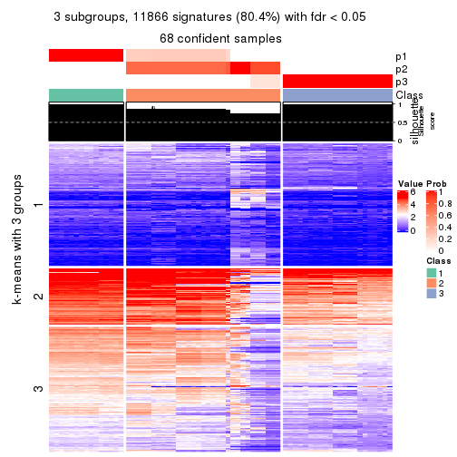
get_signatures(res, k = 4, scale_rows = FALSE)
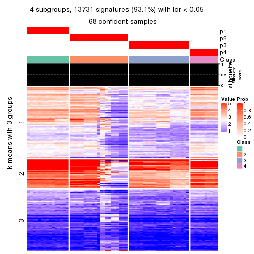
get_signatures(res, k = 5, scale_rows = FALSE)
get_signatures(res, k = 6, scale_rows = FALSE)
Compare the overlap of signatures from different k:
compare_signatures(res)
get_signature() returns a data frame invisibly. TO get the list of signatures, the function
call should be assigned to a variable explicitly. In following code, if plot argument is set
to FALSE, no heatmap is plotted while only the differential analysis is performed.
# code only for demonstration
tb = get_signature(res, k = ..., plot = FALSE)
An example of the output of tb is:
#> which_row fdr mean_1 mean_2 scaled_mean_1 scaled_mean_2 km
#> 1 38 0.042760348 8.373488 9.131774 -0.5533452 0.5164555 1
#> 2 40 0.018707592 7.106213 8.469186 -0.6173731 0.5762149 1
#> 3 55 0.019134737 10.221463 11.207825 -0.6159697 0.5749050 1
#> 4 59 0.006059896 5.921854 7.869574 -0.6899429 0.6439467 1
#> 5 60 0.018055526 8.928898 10.211722 -0.6204761 0.5791110 1
#> 6 98 0.009384629 15.714769 14.887706 0.6635654 -0.6193277 2
...
The columns in tb are:
which_row: row indices corresponding to the input matrix.fdr: FDR for the differential test. mean_x: The mean value in group x.scaled_mean_x: The mean value in group x after rows are scaled.km: Row groups if k-means clustering is applied to rows.UMAP plot which shows how samples are separated.
dimension_reduction(res, k = 2, method = "UMAP")
dimension_reduction(res, k = 3, method = "UMAP")
dimension_reduction(res, k = 4, method = "UMAP")
dimension_reduction(res, k = 5, method = "UMAP")
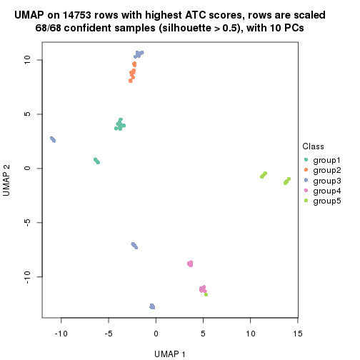
dimension_reduction(res, k = 6, method = "UMAP")
Following heatmap shows how subgroups are split when increasing k:
collect_classes(res)
If matrix rows can be associated to genes, consider to use functional_enrichment(res,
...) to perform function enrichment for the signature genes. See this vignette for more detailed explanations.
The object with results only for a single top-value method and a single partition method can be extracted as:
res = res_list["ATC", "NMF"]
# you can also extract it by
# res = res_list["ATC:NMF"]
A summary of res and all the functions that can be applied to it:
res
#> A 'ConsensusPartition' object with k = 2, 3, 4, 5, 6.
#> On a matrix with 14753 rows and 68 columns.
#> Top rows (1000, 2000, 3000, 4000, 5000) are extracted by 'ATC' method.
#> Subgroups are detected by 'NMF' method.
#> Performed in total 1250 partitions by row resampling.
#> Best k for subgroups seems to be 6.
#>
#> Following methods can be applied to this 'ConsensusPartition' object:
#> [1] "cola_report" "collect_classes" "collect_plots"
#> [4] "collect_stats" "colnames" "compare_signatures"
#> [7] "consensus_heatmap" "dimension_reduction" "functional_enrichment"
#> [10] "get_anno_col" "get_anno" "get_classes"
#> [13] "get_consensus" "get_matrix" "get_membership"
#> [16] "get_param" "get_signatures" "get_stats"
#> [19] "is_best_k" "is_stable_k" "membership_heatmap"
#> [22] "ncol" "nrow" "plot_ecdf"
#> [25] "rownames" "select_partition_number" "show"
#> [28] "suggest_best_k" "test_to_known_factors"
collect_plots() function collects all the plots made from res for all k (number of partitions)
into one single page to provide an easy and fast comparison between different k.
collect_plots(res)
The plots are:
k and the heatmap of
predicted classes for each k.k.k.k.All the plots in panels can be made by individual functions and they are plotted later in this section.
select_partition_number() produces several plots showing different
statistics for choosing “optimized” k. There are following statistics:
k;k, the area increased is defined as \(A_k - A_{k-1}\).The detailed explanations of these statistics can be found in the cola vignette.
Generally speaking, lower PAC score, higher mean silhouette score or higher
concordance corresponds to better partition. Rand index and Jaccard index
measure how similar the current partition is compared to partition with k-1.
If they are too similar, we won't accept k is better than k-1.
select_partition_number(res)
The numeric values for all these statistics can be obtained by get_stats().
get_stats(res)
#> k 1-PAC mean_silhouette concordance area_increased Rand Jaccard
#> 2 2 0.262 0.797 0.799 0.4076 0.546 0.546
#> 3 3 0.261 0.560 0.700 0.2655 0.730 0.547
#> 4 4 0.689 0.875 0.913 0.1407 0.622 0.374
#> 5 5 0.650 0.793 0.838 0.2162 0.845 0.658
#> 6 6 0.659 0.800 0.781 0.0779 0.895 0.650
suggest_best_k() suggests the best \(k\) based on these statistics. The rules are as follows:
suggest_best_k(res)
#> [1] 6
Following shows the table of the partitions (You need to click the show/hide
code output link to see it). The membership matrix (columns with name p*)
is inferred by
clue::cl_consensus()
function with the SE method. Basically the value in the membership matrix
represents the probability to belong to a certain group. The finall class
label for an item is determined with the group with highest probability it
belongs to.
In get_classes() function, the entropy is calculated from the membership
matrix and the silhouette score is calculated from the consensus matrix.
cbind(get_classes(res, k = 2), get_membership(res, k = 2))
#> class entropy silhouette p1 p2
#> SRR562645 1 0.4431 0.772 0.908 0.092
#> SRR562646 1 0.4022 0.779 0.920 0.080
#> SRR562647 1 0.4022 0.778 0.920 0.080
#> SRR562648 1 0.3879 0.779 0.924 0.076
#> SRR562649 1 0.4022 0.778 0.920 0.080
#> SRR567420 1 0.9087 0.448 0.676 0.324
#> SRR567421 1 0.9044 0.460 0.680 0.320
#> SRR567422 1 0.9087 0.448 0.676 0.324
#> SRR567423 1 0.9044 0.460 0.680 0.320
#> SRR567424 1 0.9044 0.460 0.680 0.320
#> SRR567425 1 0.5294 0.774 0.880 0.120
#> SRR567426 1 0.5519 0.768 0.872 0.128
#> SRR567427 1 0.4939 0.779 0.892 0.108
#> SRR567428 1 0.5294 0.773 0.880 0.120
#> SRR567429 1 0.5408 0.771 0.876 0.124
#> SRR567430 1 0.5408 0.771 0.876 0.124
#> SRR567431 1 0.4939 0.779 0.892 0.108
#> SRR567432 1 0.4690 0.786 0.900 0.100
#> SRR567433 1 0.4939 0.781 0.892 0.108
#> SRR567434 1 0.5178 0.776 0.884 0.116
#> SRR567435 1 0.1184 0.781 0.984 0.016
#> SRR567436 1 0.1414 0.784 0.980 0.020
#> SRR567437 1 0.2236 0.786 0.964 0.036
#> SRR567438 1 0.0938 0.782 0.988 0.012
#> SRR567439 1 0.0672 0.779 0.992 0.008
#> SRR567440 2 0.8327 0.995 0.264 0.736
#> SRR567441 2 0.8327 0.995 0.264 0.736
#> SRR567442 2 0.8327 0.995 0.264 0.736
#> SRR567443 2 0.8327 0.995 0.264 0.736
#> SRR567444 2 0.8327 0.995 0.264 0.736
#> SRR567445 1 0.5519 0.771 0.872 0.128
#> SRR567446 1 0.5737 0.767 0.864 0.136
#> SRR567447 1 0.5629 0.772 0.868 0.132
#> SRR567448 1 0.5629 0.769 0.868 0.132
#> SRR567449 1 0.5629 0.772 0.868 0.132
#> SRR567450 2 0.8386 0.992 0.268 0.732
#> SRR567451 2 0.8386 0.992 0.268 0.732
#> SRR567452 2 0.8386 0.992 0.268 0.732
#> SRR567453 2 0.8386 0.992 0.268 0.732
#> SRR567454 2 0.8386 0.992 0.268 0.732
#> SRR567455 2 0.8386 0.992 0.268 0.732
#> SRR567456 2 0.8386 0.992 0.268 0.732
#> SRR567457 1 0.6438 0.740 0.836 0.164
#> SRR567458 1 0.6148 0.750 0.848 0.152
#> SRR567459 1 0.6438 0.740 0.836 0.164
#> SRR567460 1 0.6148 0.750 0.848 0.152
#> SRR567461 1 0.6623 0.732 0.828 0.172
#> SRR567462 2 0.8327 0.995 0.264 0.736
#> SRR567463 2 0.8327 0.995 0.264 0.736
#> SRR567464 2 0.8327 0.995 0.264 0.736
#> SRR567465 2 0.8327 0.995 0.264 0.736
#> SRR567466 2 0.8327 0.995 0.264 0.736
#> SRR567467 2 0.8327 0.995 0.264 0.736
#> SRR567468 2 0.8327 0.995 0.264 0.736
#> SRR567469 2 0.8327 0.995 0.264 0.736
#> SRR567470 2 0.8327 0.995 0.264 0.736
#> SRR567471 2 0.8327 0.995 0.264 0.736
#> SRR835008 2 0.8861 0.925 0.304 0.696
#> SRR835009 1 0.8327 0.608 0.736 0.264
#> SRR835011 1 0.7950 0.690 0.760 0.240
#> SRR835012 1 0.9087 0.510 0.676 0.324
#> SRR835013 1 0.8555 0.634 0.720 0.280
#> SRR835010 1 0.8327 0.608 0.736 0.264
#> SRR835014 1 0.8386 0.607 0.732 0.268
#> SRR835015 1 0.8386 0.607 0.732 0.268
#> SRR835016 1 0.8813 0.598 0.700 0.300
#> SRR835017 1 0.9427 0.566 0.640 0.360
#> SRR835018 1 0.8861 0.598 0.696 0.304
cbind(get_classes(res, k = 3), get_membership(res, k = 3))
#> class entropy silhouette p1 p2 p3
#> SRR562645 1 0.3752 0.606 0.856 0.000 0.144
#> SRR562646 1 0.3816 0.608 0.852 0.000 0.148
#> SRR562647 1 0.3686 0.602 0.860 0.000 0.140
#> SRR562648 1 0.3816 0.608 0.852 0.000 0.148
#> SRR562649 1 0.3686 0.602 0.860 0.000 0.140
#> SRR567420 1 0.5859 0.633 0.656 0.000 0.344
#> SRR567421 1 0.5810 0.638 0.664 0.000 0.336
#> SRR567422 1 0.5905 0.627 0.648 0.000 0.352
#> SRR567423 1 0.5835 0.637 0.660 0.000 0.340
#> SRR567424 1 0.5859 0.633 0.656 0.000 0.344
#> SRR567425 1 0.7043 0.495 0.532 0.020 0.448
#> SRR567426 1 0.7059 0.471 0.520 0.020 0.460
#> SRR567427 1 0.7256 0.500 0.532 0.028 0.440
#> SRR567428 1 0.7169 0.476 0.520 0.024 0.456
#> SRR567429 1 0.7049 0.489 0.528 0.020 0.452
#> SRR567430 1 0.7178 0.457 0.512 0.024 0.464
#> SRR567431 1 0.7054 0.478 0.524 0.020 0.456
#> SRR567432 1 0.7372 0.480 0.520 0.032 0.448
#> SRR567433 1 0.7386 0.450 0.508 0.032 0.460
#> SRR567434 1 0.7049 0.484 0.528 0.020 0.452
#> SRR567435 1 0.6019 0.655 0.700 0.012 0.288
#> SRR567436 1 0.6143 0.653 0.684 0.012 0.304
#> SRR567437 1 0.6143 0.652 0.684 0.012 0.304
#> SRR567438 1 0.6051 0.655 0.696 0.012 0.292
#> SRR567439 1 0.6051 0.655 0.696 0.012 0.292
#> SRR567440 3 0.0237 0.777 0.004 0.000 0.996
#> SRR567441 3 0.0237 0.777 0.004 0.000 0.996
#> SRR567442 3 0.0237 0.777 0.004 0.000 0.996
#> SRR567443 3 0.0237 0.777 0.004 0.000 0.996
#> SRR567444 3 0.0237 0.777 0.004 0.000 0.996
#> SRR567445 2 0.8981 0.302 0.128 0.448 0.424
#> SRR567446 2 0.8932 0.318 0.124 0.456 0.420
#> SRR567447 2 0.8981 0.302 0.128 0.448 0.424
#> SRR567448 2 0.8880 0.329 0.120 0.464 0.416
#> SRR567449 2 0.8979 0.314 0.128 0.452 0.420
#> SRR567450 3 0.4912 0.671 0.196 0.008 0.796
#> SRR567451 3 0.4861 0.675 0.192 0.008 0.800
#> SRR567452 3 0.5109 0.652 0.212 0.008 0.780
#> SRR567453 3 0.4861 0.675 0.192 0.008 0.800
#> SRR567454 3 0.5220 0.658 0.208 0.012 0.780
#> SRR567455 3 0.5247 0.633 0.224 0.008 0.768
#> SRR567456 3 0.5247 0.633 0.224 0.008 0.768
#> SRR567457 3 0.8427 0.419 0.240 0.148 0.612
#> SRR567458 3 0.8408 0.427 0.232 0.152 0.616
#> SRR567459 3 0.8374 0.421 0.240 0.144 0.616
#> SRR567460 3 0.8408 0.412 0.244 0.144 0.612
#> SRR567461 3 0.8423 0.430 0.228 0.156 0.616
#> SRR567462 3 0.0237 0.778 0.004 0.000 0.996
#> SRR567463 3 0.0237 0.778 0.004 0.000 0.996
#> SRR567464 3 0.0237 0.778 0.004 0.000 0.996
#> SRR567465 3 0.0237 0.778 0.004 0.000 0.996
#> SRR567466 3 0.0237 0.778 0.004 0.000 0.996
#> SRR567467 3 0.1163 0.750 0.000 0.028 0.972
#> SRR567468 3 0.1163 0.750 0.000 0.028 0.972
#> SRR567469 3 0.1163 0.750 0.000 0.028 0.972
#> SRR567470 3 0.1163 0.750 0.000 0.028 0.972
#> SRR567471 3 0.1163 0.750 0.000 0.028 0.972
#> SRR835008 3 0.5848 0.548 0.268 0.012 0.720
#> SRR835009 1 0.6274 -0.239 0.544 0.456 0.000
#> SRR835011 1 0.5105 0.284 0.828 0.124 0.048
#> SRR835012 1 0.5393 0.314 0.820 0.108 0.072
#> SRR835013 1 0.5467 0.308 0.816 0.112 0.072
#> SRR835010 1 0.6095 -0.164 0.608 0.392 0.000
#> SRR835014 2 0.1031 0.583 0.024 0.976 0.000
#> SRR835015 2 0.1411 0.581 0.036 0.964 0.000
#> SRR835016 2 0.3028 0.606 0.048 0.920 0.032
#> SRR835017 2 0.3899 0.604 0.056 0.888 0.056
#> SRR835018 2 0.3039 0.608 0.044 0.920 0.036
cbind(get_classes(res, k = 4), get_membership(res, k = 4))
#> class entropy silhouette p1 p2 p3 p4
#> SRR562645 1 0.3052 0.836 0.880 0.104 0.012 0.004
#> SRR562646 1 0.2867 0.836 0.884 0.104 0.012 0.000
#> SRR562647 1 0.2867 0.836 0.884 0.104 0.012 0.000
#> SRR562648 1 0.2928 0.833 0.880 0.108 0.012 0.000
#> SRR562649 1 0.2867 0.836 0.884 0.104 0.012 0.000
#> SRR567420 1 0.0844 0.894 0.980 0.012 0.004 0.004
#> SRR567421 1 0.1191 0.890 0.968 0.024 0.004 0.004
#> SRR567422 1 0.1191 0.890 0.968 0.024 0.004 0.004
#> SRR567423 1 0.1191 0.891 0.968 0.024 0.004 0.004
#> SRR567424 1 0.1191 0.890 0.968 0.024 0.004 0.004
#> SRR567425 1 0.0376 0.895 0.992 0.004 0.004 0.000
#> SRR567426 1 0.1114 0.895 0.972 0.008 0.004 0.016
#> SRR567427 1 0.1114 0.895 0.972 0.008 0.004 0.016
#> SRR567428 1 0.1262 0.896 0.968 0.008 0.008 0.016
#> SRR567429 1 0.0376 0.895 0.992 0.000 0.004 0.004
#> SRR567430 1 0.0188 0.895 0.996 0.000 0.004 0.000
#> SRR567431 1 0.0188 0.895 0.996 0.000 0.004 0.000
#> SRR567432 1 0.0844 0.895 0.980 0.004 0.004 0.012
#> SRR567433 1 0.0804 0.896 0.980 0.000 0.008 0.012
#> SRR567434 1 0.0376 0.895 0.992 0.000 0.004 0.004
#> SRR567435 1 0.0657 0.892 0.984 0.012 0.004 0.000
#> SRR567436 1 0.0657 0.892 0.984 0.012 0.004 0.000
#> SRR567437 1 0.0336 0.894 0.992 0.008 0.000 0.000
#> SRR567438 1 0.0524 0.894 0.988 0.008 0.004 0.000
#> SRR567439 1 0.0524 0.894 0.988 0.008 0.004 0.000
#> SRR567440 3 0.1118 0.967 0.036 0.000 0.964 0.000
#> SRR567441 3 0.1118 0.967 0.036 0.000 0.964 0.000
#> SRR567442 3 0.1118 0.967 0.036 0.000 0.964 0.000
#> SRR567443 3 0.1118 0.967 0.036 0.000 0.964 0.000
#> SRR567444 3 0.1118 0.967 0.036 0.000 0.964 0.000
#> SRR567445 1 0.5419 0.490 0.600 0.008 0.008 0.384
#> SRR567446 1 0.5419 0.490 0.600 0.008 0.008 0.384
#> SRR567447 1 0.5419 0.490 0.600 0.008 0.008 0.384
#> SRR567448 1 0.5444 0.473 0.592 0.008 0.008 0.392
#> SRR567449 1 0.5432 0.481 0.596 0.008 0.008 0.388
#> SRR567450 1 0.3450 0.865 0.880 0.016 0.072 0.032
#> SRR567451 1 0.3521 0.863 0.876 0.016 0.076 0.032
#> SRR567452 1 0.3377 0.867 0.884 0.016 0.068 0.032
#> SRR567453 1 0.3450 0.865 0.880 0.016 0.072 0.032
#> SRR567454 1 0.3225 0.872 0.892 0.016 0.060 0.032
#> SRR567455 1 0.3127 0.873 0.896 0.016 0.060 0.028
#> SRR567456 1 0.3225 0.872 0.892 0.016 0.060 0.032
#> SRR567457 1 0.3791 0.858 0.860 0.016 0.032 0.092
#> SRR567458 1 0.3629 0.861 0.868 0.016 0.028 0.088
#> SRR567459 1 0.3591 0.864 0.872 0.016 0.032 0.080
#> SRR567460 1 0.3460 0.865 0.876 0.016 0.024 0.084
#> SRR567461 1 0.3726 0.860 0.864 0.016 0.032 0.088
#> SRR567462 3 0.2380 0.947 0.064 0.008 0.920 0.008
#> SRR567463 3 0.2380 0.947 0.064 0.008 0.920 0.008
#> SRR567464 3 0.2380 0.947 0.064 0.008 0.920 0.008
#> SRR567465 3 0.2380 0.947 0.064 0.008 0.920 0.008
#> SRR567466 3 0.2380 0.947 0.064 0.008 0.920 0.008
#> SRR567467 3 0.0895 0.957 0.020 0.000 0.976 0.004
#> SRR567468 3 0.0895 0.957 0.020 0.000 0.976 0.004
#> SRR567469 3 0.0927 0.952 0.016 0.000 0.976 0.008
#> SRR567470 3 0.0895 0.957 0.020 0.000 0.976 0.004
#> SRR567471 3 0.0895 0.957 0.020 0.000 0.976 0.004
#> SRR835008 1 0.2586 0.883 0.920 0.016 0.020 0.044
#> SRR835009 2 0.2215 0.910 0.024 0.936 0.016 0.024
#> SRR835011 2 0.2751 0.951 0.056 0.904 0.040 0.000
#> SRR835012 2 0.2660 0.950 0.056 0.908 0.036 0.000
#> SRR835013 2 0.2751 0.951 0.056 0.904 0.040 0.000
#> SRR835010 2 0.1721 0.927 0.028 0.952 0.008 0.012
#> SRR835014 4 0.2131 0.941 0.000 0.036 0.032 0.932
#> SRR835015 4 0.2774 0.924 0.008 0.060 0.024 0.908
#> SRR835016 4 0.1675 0.955 0.004 0.004 0.044 0.948
#> SRR835017 4 0.1975 0.942 0.016 0.000 0.048 0.936
#> SRR835018 4 0.1909 0.954 0.008 0.004 0.048 0.940
cbind(get_classes(res, k = 5), get_membership(res, k = 5))
#> class entropy silhouette p1 p2 p3 p4 p5
#> SRR562645 4 0.268 0.906 0.100 0.000 0.004 0.880 0.016
#> SRR562646 4 0.277 0.907 0.100 0.000 0.004 0.876 0.020
#> SRR562647 4 0.277 0.907 0.100 0.000 0.004 0.876 0.020
#> SRR562648 4 0.277 0.905 0.100 0.000 0.004 0.876 0.020
#> SRR562649 4 0.277 0.907 0.100 0.000 0.004 0.876 0.020
#> SRR567420 4 0.313 0.914 0.156 0.000 0.008 0.832 0.004
#> SRR567421 4 0.313 0.914 0.156 0.000 0.008 0.832 0.004
#> SRR567422 4 0.297 0.914 0.156 0.000 0.008 0.836 0.000
#> SRR567423 4 0.317 0.911 0.160 0.000 0.008 0.828 0.004
#> SRR567424 4 0.313 0.914 0.156 0.000 0.008 0.832 0.004
#> SRR567425 1 0.280 0.778 0.884 0.000 0.004 0.068 0.044
#> SRR567426 1 0.265 0.781 0.888 0.000 0.000 0.064 0.048
#> SRR567427 1 0.265 0.780 0.888 0.000 0.000 0.064 0.048
#> SRR567428 1 0.252 0.785 0.896 0.000 0.000 0.056 0.048
#> SRR567429 1 0.289 0.772 0.876 0.000 0.004 0.084 0.036
#> SRR567430 1 0.236 0.784 0.904 0.000 0.000 0.060 0.036
#> SRR567431 1 0.229 0.785 0.908 0.000 0.000 0.056 0.036
#> SRR567432 1 0.222 0.786 0.912 0.000 0.000 0.052 0.036
#> SRR567433 1 0.184 0.790 0.932 0.000 0.000 0.032 0.036
#> SRR567434 1 0.243 0.783 0.900 0.000 0.000 0.064 0.036
#> SRR567435 1 0.524 0.510 0.652 0.000 0.012 0.284 0.052
#> SRR567436 1 0.524 0.510 0.652 0.000 0.012 0.284 0.052
#> SRR567437 1 0.515 0.535 0.668 0.000 0.012 0.268 0.052
#> SRR567438 1 0.524 0.511 0.652 0.000 0.012 0.284 0.052
#> SRR567439 1 0.518 0.515 0.656 0.000 0.012 0.284 0.048
#> SRR567440 3 0.226 0.858 0.024 0.004 0.920 0.044 0.008
#> SRR567441 3 0.219 0.859 0.024 0.004 0.924 0.040 0.008
#> SRR567442 3 0.231 0.858 0.024 0.008 0.920 0.040 0.008
#> SRR567443 3 0.219 0.859 0.024 0.004 0.924 0.040 0.008
#> SRR567444 3 0.219 0.859 0.024 0.004 0.924 0.040 0.008
#> SRR567445 1 0.583 0.622 0.696 0.168 0.028 0.092 0.016
#> SRR567446 1 0.579 0.627 0.700 0.164 0.028 0.092 0.016
#> SRR567447 1 0.579 0.627 0.700 0.164 0.028 0.092 0.016
#> SRR567448 1 0.590 0.611 0.688 0.176 0.028 0.092 0.016
#> SRR567449 1 0.586 0.617 0.692 0.172 0.028 0.092 0.016
#> SRR567450 1 0.326 0.771 0.868 0.004 0.072 0.044 0.012
#> SRR567451 1 0.311 0.775 0.872 0.000 0.068 0.048 0.012
#> SRR567452 1 0.307 0.779 0.880 0.004 0.056 0.048 0.012
#> SRR567453 1 0.300 0.774 0.880 0.004 0.072 0.036 0.008
#> SRR567454 1 0.335 0.776 0.864 0.004 0.060 0.060 0.012
#> SRR567455 1 0.338 0.775 0.860 0.004 0.044 0.080 0.012
#> SRR567456 1 0.338 0.775 0.860 0.004 0.044 0.080 0.012
#> SRR567457 1 0.425 0.749 0.812 0.084 0.024 0.076 0.004
#> SRR567458 1 0.411 0.751 0.820 0.080 0.020 0.076 0.004
#> SRR567459 1 0.422 0.748 0.812 0.084 0.020 0.080 0.004
#> SRR567460 1 0.403 0.753 0.824 0.080 0.012 0.076 0.008
#> SRR567461 1 0.411 0.751 0.820 0.080 0.020 0.076 0.004
#> SRR567462 3 0.461 0.750 0.020 0.012 0.692 0.276 0.000
#> SRR567463 3 0.461 0.750 0.020 0.012 0.692 0.276 0.000
#> SRR567464 3 0.461 0.750 0.020 0.012 0.692 0.276 0.000
#> SRR567465 3 0.456 0.757 0.020 0.012 0.700 0.268 0.000
#> SRR567466 3 0.461 0.750 0.020 0.012 0.692 0.276 0.000
#> SRR567467 3 0.175 0.837 0.028 0.004 0.944 0.008 0.016
#> SRR567468 3 0.186 0.836 0.028 0.004 0.940 0.012 0.016
#> SRR567469 3 0.186 0.836 0.028 0.004 0.940 0.012 0.016
#> SRR567470 3 0.186 0.836 0.028 0.004 0.940 0.012 0.016
#> SRR567471 3 0.186 0.836 0.028 0.004 0.940 0.012 0.016
#> SRR835008 4 0.567 0.513 0.320 0.052 0.012 0.608 0.008
#> SRR835009 5 0.246 0.899 0.016 0.032 0.008 0.028 0.916
#> SRR835011 5 0.307 0.942 0.040 0.000 0.016 0.068 0.876
#> SRR835012 5 0.300 0.941 0.040 0.000 0.016 0.064 0.880
#> SRR835013 5 0.307 0.942 0.040 0.000 0.016 0.068 0.876
#> SRR835010 5 0.252 0.910 0.012 0.024 0.004 0.052 0.908
#> SRR835014 2 0.133 0.935 0.008 0.956 0.004 0.000 0.032
#> SRR835015 2 0.176 0.934 0.008 0.944 0.004 0.020 0.024
#> SRR835016 2 0.187 0.957 0.028 0.936 0.008 0.028 0.000
#> SRR835017 2 0.204 0.953 0.032 0.928 0.008 0.032 0.000
#> SRR835018 2 0.187 0.956 0.032 0.936 0.008 0.024 0.000
cbind(get_classes(res, k = 6), get_membership(res, k = 6))
#> class entropy silhouette p1 p2 p3 p4 p5 p6
#> SRR562645 4 0.328 0.943 0.152 0.000 0.004 0.812 0.032 0.000
#> SRR562646 4 0.335 0.943 0.152 0.000 0.004 0.808 0.036 0.000
#> SRR562647 4 0.339 0.942 0.156 0.000 0.004 0.804 0.036 0.000
#> SRR562648 4 0.338 0.944 0.156 0.004 0.004 0.808 0.028 0.000
#> SRR562649 4 0.335 0.943 0.152 0.000 0.004 0.808 0.036 0.000
#> SRR567420 4 0.319 0.935 0.216 0.000 0.004 0.776 0.000 0.004
#> SRR567421 4 0.324 0.941 0.208 0.000 0.004 0.780 0.000 0.008
#> SRR567422 4 0.313 0.942 0.208 0.000 0.004 0.784 0.000 0.004
#> SRR567423 4 0.355 0.933 0.216 0.000 0.004 0.764 0.008 0.008
#> SRR567424 4 0.307 0.945 0.200 0.000 0.004 0.792 0.000 0.004
#> SRR567425 1 0.176 0.818 0.928 0.008 0.000 0.052 0.000 0.012
#> SRR567426 1 0.156 0.819 0.940 0.008 0.000 0.040 0.000 0.012
#> SRR567427 1 0.193 0.818 0.924 0.008 0.000 0.048 0.004 0.016
#> SRR567428 1 0.148 0.820 0.948 0.008 0.004 0.028 0.000 0.012
#> SRR567429 1 0.201 0.816 0.916 0.012 0.000 0.056 0.000 0.016
#> SRR567430 1 0.141 0.820 0.952 0.008 0.004 0.020 0.000 0.016
#> SRR567431 1 0.135 0.816 0.952 0.008 0.000 0.024 0.000 0.016
#> SRR567432 1 0.151 0.813 0.948 0.012 0.004 0.020 0.000 0.016
#> SRR567433 1 0.183 0.795 0.936 0.016 0.004 0.016 0.004 0.024
#> SRR567434 1 0.117 0.819 0.960 0.008 0.000 0.020 0.000 0.012
#> SRR567435 1 0.425 0.592 0.712 0.004 0.000 0.244 0.012 0.028
#> SRR567436 1 0.424 0.599 0.716 0.004 0.000 0.240 0.016 0.024
#> SRR567437 1 0.411 0.628 0.736 0.004 0.000 0.220 0.016 0.024
#> SRR567438 1 0.435 0.563 0.696 0.004 0.000 0.260 0.016 0.024
#> SRR567439 1 0.419 0.615 0.724 0.004 0.000 0.232 0.016 0.024
#> SRR567440 3 0.130 0.775 0.004 0.000 0.948 0.044 0.000 0.004
#> SRR567441 3 0.130 0.775 0.004 0.000 0.948 0.044 0.000 0.004
#> SRR567442 3 0.130 0.775 0.004 0.000 0.948 0.044 0.000 0.004
#> SRR567443 3 0.130 0.775 0.004 0.000 0.948 0.044 0.000 0.004
#> SRR567444 3 0.130 0.775 0.004 0.000 0.948 0.044 0.000 0.004
#> SRR567445 6 0.589 0.834 0.320 0.084 0.008 0.012 0.016 0.560
#> SRR567446 6 0.593 0.833 0.320 0.088 0.008 0.012 0.016 0.556
#> SRR567447 6 0.593 0.833 0.320 0.088 0.008 0.012 0.016 0.556
#> SRR567448 6 0.597 0.833 0.320 0.084 0.008 0.012 0.020 0.556
#> SRR567449 6 0.593 0.833 0.320 0.088 0.008 0.012 0.016 0.556
#> SRR567450 1 0.374 0.731 0.828 0.008 0.052 0.048 0.000 0.064
#> SRR567451 1 0.343 0.743 0.844 0.004 0.052 0.036 0.000 0.064
#> SRR567452 1 0.343 0.756 0.848 0.008 0.040 0.048 0.000 0.056
#> SRR567453 1 0.375 0.723 0.832 0.008 0.052 0.040 0.004 0.064
#> SRR567454 1 0.336 0.751 0.848 0.004 0.040 0.040 0.000 0.068
#> SRR567455 1 0.285 0.795 0.880 0.004 0.032 0.044 0.000 0.040
#> SRR567456 1 0.278 0.794 0.884 0.004 0.032 0.036 0.000 0.044
#> SRR567457 6 0.458 0.838 0.280 0.028 0.012 0.004 0.004 0.672
#> SRR567458 6 0.470 0.841 0.276 0.036 0.012 0.004 0.004 0.668
#> SRR567459 6 0.466 0.838 0.280 0.032 0.008 0.004 0.008 0.668
#> SRR567460 6 0.470 0.839 0.288 0.032 0.008 0.004 0.008 0.660
#> SRR567461 6 0.462 0.844 0.288 0.028 0.012 0.004 0.004 0.664
#> SRR567462 3 0.607 0.626 0.000 0.020 0.560 0.236 0.008 0.176
#> SRR567463 3 0.613 0.618 0.000 0.020 0.548 0.248 0.008 0.176
#> SRR567464 3 0.615 0.614 0.000 0.020 0.544 0.248 0.008 0.180
#> SRR567465 3 0.607 0.626 0.000 0.020 0.560 0.236 0.008 0.176
#> SRR567466 3 0.609 0.623 0.000 0.020 0.556 0.240 0.008 0.176
#> SRR567467 3 0.330 0.731 0.044 0.000 0.856 0.020 0.016 0.064
#> SRR567468 3 0.351 0.730 0.052 0.000 0.844 0.024 0.016 0.064
#> SRR567469 3 0.343 0.728 0.052 0.000 0.848 0.020 0.016 0.064
#> SRR567470 3 0.343 0.728 0.052 0.000 0.848 0.020 0.016 0.064
#> SRR567471 3 0.343 0.728 0.052 0.000 0.848 0.020 0.016 0.064
#> SRR835008 6 0.641 0.191 0.036 0.040 0.092 0.208 0.012 0.612
#> SRR835009 5 0.271 0.921 0.032 0.016 0.004 0.024 0.896 0.028
#> SRR835011 5 0.184 0.948 0.028 0.000 0.004 0.024 0.932 0.012
#> SRR835012 5 0.180 0.945 0.024 0.000 0.008 0.016 0.936 0.016
#> SRR835013 5 0.166 0.948 0.028 0.000 0.004 0.020 0.940 0.008
#> SRR835010 5 0.277 0.926 0.032 0.012 0.004 0.036 0.892 0.024
#> SRR835014 2 0.249 0.927 0.024 0.900 0.000 0.008 0.020 0.048
#> SRR835015 2 0.292 0.914 0.020 0.880 0.000 0.024 0.024 0.052
#> SRR835016 2 0.213 0.955 0.008 0.916 0.008 0.020 0.000 0.048
#> SRR835017 2 0.219 0.954 0.008 0.912 0.008 0.020 0.000 0.052
#> SRR835018 2 0.213 0.955 0.008 0.916 0.008 0.020 0.000 0.048
Heatmaps for the consensus matrix. It visualizes the probability of two samples to be in a same group.
consensus_heatmap(res, k = 2)
consensus_heatmap(res, k = 3)
consensus_heatmap(res, k = 4)
consensus_heatmap(res, k = 5)
consensus_heatmap(res, k = 6)
Heatmaps for the membership of samples in all partitions to see how consistent they are:
membership_heatmap(res, k = 2)
membership_heatmap(res, k = 3)
membership_heatmap(res, k = 4)
membership_heatmap(res, k = 5)
membership_heatmap(res, k = 6)
As soon as we have had the classes for columns, we can look for signatures which are significantly different between classes which can be candidate marks for certain classes. Following are the heatmaps for signatures.
Signature heatmaps where rows are scaled:
get_signatures(res, k = 2)
get_signatures(res, k = 3)
get_signatures(res, k = 4)
get_signatures(res, k = 5)
get_signatures(res, k = 6)
Signature heatmaps where rows are not scaled:
get_signatures(res, k = 2, scale_rows = FALSE)
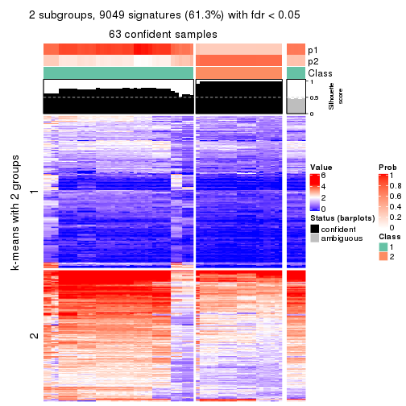
get_signatures(res, k = 3, scale_rows = FALSE)

get_signatures(res, k = 4, scale_rows = FALSE)
get_signatures(res, k = 5, scale_rows = FALSE)
get_signatures(res, k = 6, scale_rows = FALSE)
Compare the overlap of signatures from different k:
compare_signatures(res)
get_signature() returns a data frame invisibly. TO get the list of signatures, the function
call should be assigned to a variable explicitly. In following code, if plot argument is set
to FALSE, no heatmap is plotted while only the differential analysis is performed.
# code only for demonstration
tb = get_signature(res, k = ..., plot = FALSE)
An example of the output of tb is:
#> which_row fdr mean_1 mean_2 scaled_mean_1 scaled_mean_2 km
#> 1 38 0.042760348 8.373488 9.131774 -0.5533452 0.5164555 1
#> 2 40 0.018707592 7.106213 8.469186 -0.6173731 0.5762149 1
#> 3 55 0.019134737 10.221463 11.207825 -0.6159697 0.5749050 1
#> 4 59 0.006059896 5.921854 7.869574 -0.6899429 0.6439467 1
#> 5 60 0.018055526 8.928898 10.211722 -0.6204761 0.5791110 1
#> 6 98 0.009384629 15.714769 14.887706 0.6635654 -0.6193277 2
...
The columns in tb are:
which_row: row indices corresponding to the input matrix.fdr: FDR for the differential test. mean_x: The mean value in group x.scaled_mean_x: The mean value in group x after rows are scaled.km: Row groups if k-means clustering is applied to rows.UMAP plot which shows how samples are separated.
dimension_reduction(res, k = 2, method = "UMAP")
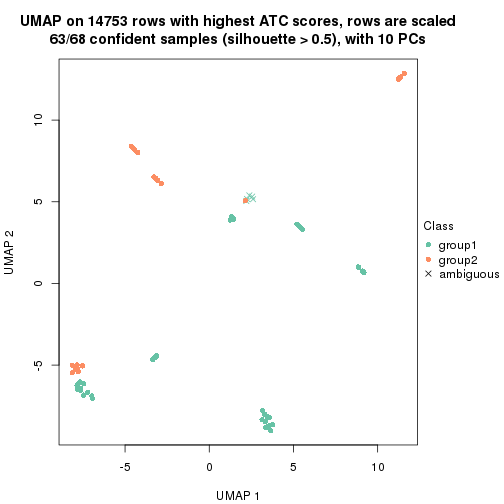
dimension_reduction(res, k = 3, method = "UMAP")
dimension_reduction(res, k = 4, method = "UMAP")
dimension_reduction(res, k = 5, method = "UMAP")
dimension_reduction(res, k = 6, method = "UMAP")
Following heatmap shows how subgroups are split when increasing k:
collect_classes(res)
If matrix rows can be associated to genes, consider to use functional_enrichment(res,
...) to perform function enrichment for the signature genes. See this vignette for more detailed explanations.
sessionInfo()
#> R version 3.6.0 (2019-04-26)
#> Platform: x86_64-pc-linux-gnu (64-bit)
#> Running under: CentOS Linux 7 (Core)
#>
#> Matrix products: default
#> BLAS: /usr/lib64/libblas.so.3.4.2
#> LAPACK: /usr/lib64/liblapack.so.3.4.2
#>
#> locale:
#> [1] LC_CTYPE=en_GB.UTF-8 LC_NUMERIC=C LC_TIME=en_GB.UTF-8
#> [4] LC_COLLATE=en_GB.UTF-8 LC_MONETARY=en_GB.UTF-8 LC_MESSAGES=en_GB.UTF-8
#> [7] LC_PAPER=en_GB.UTF-8 LC_NAME=C LC_ADDRESS=C
#> [10] LC_TELEPHONE=C LC_MEASUREMENT=en_GB.UTF-8 LC_IDENTIFICATION=C
#>
#> attached base packages:
#> [1] grid stats graphics grDevices utils datasets methods base
#>
#> other attached packages:
#> [1] genefilter_1.66.0 ComplexHeatmap_2.3.1 markdown_1.1 knitr_1.26
#> [5] GetoptLong_0.1.7 cola_1.3.2
#>
#> loaded via a namespace (and not attached):
#> [1] circlize_0.4.8 shape_1.4.4 xfun_0.11 slam_0.1-46
#> [5] lattice_0.20-38 splines_3.6.0 colorspace_1.4-1 vctrs_0.2.0
#> [9] stats4_3.6.0 blob_1.2.0 XML_3.98-1.20 survival_2.44-1.1
#> [13] rlang_0.4.2 pillar_1.4.2 DBI_1.0.0 BiocGenerics_0.30.0
#> [17] bit64_0.9-7 RColorBrewer_1.1-2 matrixStats_0.55.0 stringr_1.4.0
#> [21] GlobalOptions_0.1.1 evaluate_0.14 memoise_1.1.0 Biobase_2.44.0
#> [25] IRanges_2.18.3 parallel_3.6.0 AnnotationDbi_1.46.1 highr_0.8
#> [29] Rcpp_1.0.3 xtable_1.8-4 backports_1.1.5 S4Vectors_0.22.1
#> [33] annotate_1.62.0 skmeans_0.2-11 bit_1.1-14 microbenchmark_1.4-7
#> [37] brew_1.0-6 impute_1.58.0 rjson_0.2.20 png_0.1-7
#> [41] digest_0.6.23 stringi_1.4.3 polyclip_1.10-0 clue_0.3-57
#> [45] tools_3.6.0 bitops_1.0-6 magrittr_1.5 eulerr_6.0.0
#> [49] RCurl_1.95-4.12 RSQLite_2.1.4 tibble_2.1.3 cluster_2.1.0
#> [53] crayon_1.3.4 pkgconfig_2.0.3 zeallot_0.1.0 Matrix_1.2-17
#> [57] xml2_1.2.2 httr_1.4.1 R6_2.4.1 mclust_5.4.5
#> [61] compiler_3.6.0